<!DOCTYPE html><html lang="en"><head>
    <meta charset="UTF-8">
    <meta name="viewport" content="width=device-width, initial-scale=1.0">
    <meta name="description" content="Digital technologies have fundamentally transformed how Cultural Heritage (CH) collections are accessed and engaged with. Linked Open Usable Data (LOUD) specifications, including the International Image Interoperability Framework (IIIF) Presentation API 3.0, Linked Art, and the Web Annotation Data Model (WADM), have emerged as web standards to facilitate the description and dissemination of these valuable resources. Despite the widespread adoption of IIIF, implementing LOUD specifications, particularly in combination, remains challenging. This is especially evident in the development and assessment of infrastructures, or sites of assemblage, that support these standards.
This research is guided by two perspectives: community practices and semantic interoperability. The first perspective assesses how organizations, individuals, and apparatuses engage with and contribute to the consensus-making processes surrounding LOUD. By examining these practices, the social fabrics of the LOUD ecosystem can be better understood. The second perspective focuses on making data meaningful to machines in a standardized, interoperable manner that promotes the exchange of well-formed information. This research is grounded in the SNSF-funded project, *Participatory Knowledge Practices in Analogue and Digital Image Archives* (PIA) (2021–2025), which aims to develop a citizen science platform for three photographic collections from the Cultural Anthropology Switzerland (CAS) archives. Actor-Network Theory (ANT) forms the theoretical foundation, aiming to describe the collaborative structures of the LOUD ecosystem and emphasize the role of non-human actors.
Beyond its implementation within the PIA project, this research includes an analysis of the social dynamics within the IIIF and Linked Art communities and an investigation of Yale's Collections Discovery platform, LUX. The research identifies socio-technical requirements for developing specifications aligned with LOUD principles. It also examines how the implementation of LOUD standards in PIA highlights their potential benefits and limitations in facilitating data reuse and broader participation. Additionally, it explores Yale University's large-scale deployment of LOUD standards, emphasizing the importance of ensuring consistency between Linked Art and IIIF resources within the LUX platform for the CH domain.
The core methodology of this thesis is an actor- and practice-centered inquiry, focusing on a detailed examination of specific cosmologies within LOUD-driven communities, PIA, and LUX. This micro-perspective approach provides rich empirical evidence to unravel the intricate web of cultural processes and constellations in these contexts.
Key empirical findings indicate that LOUD enhances the discoverability and integration of data in CH, requiring community-driven consensus on model interoperability. However, significant challenges include engaging marginalized groups, sustaining long-term participation, and balancing technological and social factors. Strategic use of technology and the capture of digital materiality are critical, but LOUD also poses challenges related to resource investment, data consistency, and the broader implementation of complex patterns.
LOUD should lead efforts to improve the accessibility and usability of CH data. The community-driven methodologies of IIIF and Linked Art inherently foster collaboration and transparency, making these standards essential tools in evolving data management practices. Even for institutions and projects that do not adopt these specifications, the socio-technical practices of LOUD offer vital insights into effective digital stewardship and strategies for community engagement.">
    <meta name="keywords" content="Linked Open Usable Data, LOUD, IIIF, International Image Interoperability Framework, Linked Art, Web Annotation Data Model, W3C, Digital Humanities, Cultural Heritage, Linked Data, Semantic Interoperability, Community Practices, PhD, LUX: Yale Collections Discovery, University of Basel, Cultural Anthropology Switzerland, PIA, Participatory Knowledge Practices in Analogue and Digital Image Archives, Actor-Network Theory; Community of Practice; Cultural Anthropology Switzerland; Cultural Heritage; Digital Infrastructure; International Image Interoperability Framework; Knowledge Practices; Linked Art; Linked Data; LUX; Participatory Archives; Photographic Archives; Semantic Interoperability; Web Annotation Data Model">
    <meta name="author" content="Julien A. Raemy">
    <meta name="last-modified" content="2024-11-18T00:00:00.000Z">

    <!-- Dublin Core -->
    <meta name="DC.title" content="Linked Open Usable Data for Cultural Heritage: Perspectives on Community Practices and Semantic Interoperability">
    <meta name="DC.creator" content="Raemy, Julien Antoine">
    <meta name="DC.date" content="2024-11-18">
    <meta name="DC.type" content="Thesis">
    <meta name="DC.identifier" content="https://phd.julsraemy.ch/thesis.html">
    <!-- Conditional DOI Identifier -->
    
    <meta name="DC.identifier" content="https://doi.org/10.5451/unibas-ep96807">
    
    <meta name="DC.description" content="Digital technologies have fundamentally transformed how Cultural Heritage (CH) collections are accessed and engaged with. Linked Open Usable Data (LOUD) specifications, including the International Image Interoperability Framework (IIIF) Presentation API 3.0, Linked Art, and the Web Annotation Data Model (WADM), have emerged as web standards to facilitate the description and dissemination of these valuable resources. Despite the widespread adoption of IIIF, implementing LOUD specifications, particularly in combination, remains challenging. This is especially evident in the development and assessment of infrastructures, or sites of assemblage, that support these standards.
This research is guided by two perspectives: community practices and semantic interoperability. The first perspective assesses how organizations, individuals, and apparatuses engage with and contribute to the consensus-making processes surrounding LOUD. By examining these practices, the social fabrics of the LOUD ecosystem can be better understood. The second perspective focuses on making data meaningful to machines in a standardized, interoperable manner that promotes the exchange of well-formed information. This research is grounded in the SNSF-funded project, *Participatory Knowledge Practices in Analogue and Digital Image Archives* (PIA) (2021–2025), which aims to develop a citizen science platform for three photographic collections from the Cultural Anthropology Switzerland (CAS) archives. Actor-Network Theory (ANT) forms the theoretical foundation, aiming to describe the collaborative structures of the LOUD ecosystem and emphasize the role of non-human actors.
Beyond its implementation within the PIA project, this research includes an analysis of the social dynamics within the IIIF and Linked Art communities and an investigation of Yale's Collections Discovery platform, LUX. The research identifies socio-technical requirements for developing specifications aligned with LOUD principles. It also examines how the implementation of LOUD standards in PIA highlights their potential benefits and limitations in facilitating data reuse and broader participation. Additionally, it explores Yale University's large-scale deployment of LOUD standards, emphasizing the importance of ensuring consistency between Linked Art and IIIF resources within the LUX platform for the CH domain.
The core methodology of this thesis is an actor- and practice-centered inquiry, focusing on a detailed examination of specific cosmologies within LOUD-driven communities, PIA, and LUX. This micro-perspective approach provides rich empirical evidence to unravel the intricate web of cultural processes and constellations in these contexts.
Key empirical findings indicate that LOUD enhances the discoverability and integration of data in CH, requiring community-driven consensus on model interoperability. However, significant challenges include engaging marginalized groups, sustaining long-term participation, and balancing technological and social factors. Strategic use of technology and the capture of digital materiality are critical, but LOUD also poses challenges related to resource investment, data consistency, and the broader implementation of complex patterns.
LOUD should lead efforts to improve the accessibility and usability of CH data. The community-driven methodologies of IIIF and Linked Art inherently foster collaboration and transparency, making these standards essential tools in evolving data management practices. Even for institutions and projects that do not adopt these specifications, the socio-technical practices of LOUD offer vital insights into effective digital stewardship and strategies for community engagement.">
    <meta name="DC.subject" content="Actor-Network Theory; Community of Practice; Cultural Anthropology Switzerland; Cultural Heritage; Digital Infrastructure; International Image Interoperability Framework; Knowledge Practices; Linked Art; Linked Data; LUX; Participatory Archives; Photographic Archives; Semantic Interoperability; Web Annotation Data Model">
    <meta name="DC.language" content="en">
    <meta name="DC.format" content="text/html">
    <meta name="DC.rights" content="https://creativecommons.org/licenses/by/4.0/">
    
    <meta name="DC.coverage" content="Basel, Switzerland">
    
    
    <meta name="DC.publisher" content="University of Basel">
    

    <!-- Title and CSS -->
    <title>Linked Open Usable Data for Cultural Heritage: Perspectives on Community Practices and Semantic Interoperability</title>
    <link rel="stylesheet" href="/assets/stylesheets/style.css">
    <link href="https://fonts.googleapis.com/css2?family=Fira+Code&amp;display=swap" rel="stylesheet">

    <!-- Leaflet CSS -->
    <link rel="stylesheet" href="https://unpkg.com/leaflet@1.7.1/dist/leaflet.css">

    <!-- Leaflet JS -->
    <script src="https://unpkg.com/leaflet@1.7.1/dist/leaflet.js"></script>

    <!-- jQuery -->
    <script src="https://ajax.googleapis.com/ajax/libs/jquery/3.2.1/jquery.min.js"></script>

    <!-- Leaflet-IIIF -->
    <script src="https://cdn.rawgit.com/mejackreed/Leaflet-IIIF/v2.0.1/leaflet-iiif.js"></script>

    <!-- Favicons -->
    <link rel="icon" type="image/png" href="https://julsraemy.ch/favicon-96x96.png" sizes="96x96">
    <link rel="icon" type="image/svg+xml" href="https://julsraemy.ch/favicon.svg">
    <link rel="shortcut icon" href="https://julsraemy.ch/favicon.ico">
    <link rel="apple-touch-icon" sizes="180x180" href="https://julsraemy.ch/apple-touch-icon.png">
    <link rel="manifest" href="https://julsraemy.ch/site.webmanifest">
    <meta name="msapplication-TileColor" content="#2b5797">
    <meta name="theme-color" content="#ffffff">


    <!-- Me -->
    <link rel="me" href="https://hcommons.social/@julsraemy">
    <link rel="me" href="https://www.wikidata.org/wiki/Q59286487">
    <link rel="me" href="https://orcid.org/0000-0002-4711-5759">
    <link rel="me" href="https://scholar.google.ch/citations?user=pGROUG0AAAAJ">
    <link rel="me" href="https://www.linkedin.com/in/julienaraemy/">
    <link rel="me" href="https://www.researchgate.net/profile/Julien_Raemy">

    <!-- Schema.org -->
    <script type="application/ld+json">
    {
        "@context": "http://schema.org",
        "@type": "Thesis",
        "name": "Linked Open Usable Data for Cultural Heritage: Perspectives on Community Practices and Semantic Interoperability",
        "author": {
            "@type": "Person",
            "givenName": "Julien Antoine",
            "familyName": "Raemy",
            "gender": "Male",
            "nationality": "Swiss",
            "url": "https://julsraemy.ch",
            "alumniOf": [
                {
                "@type": "EducationalOrganization",
                "name": "University of Basel",
                "location": "Basel, Switzerland",
                "url": "https://www.unibas.ch/",
                "sameAs": "https://ror.org/02s6k3f65"
                }
            ],
            "affiliation": [
                {
                "@type": "ArchiveOrganization",
                "name": "Swiss Federal Archives",
                "location": "Bern, Switzerland",
                "url": "https://www.bar.admin.ch/",
                "sameAs": "https://ror.org/00t6xza10"
                }
            ],
            "sameAs": [
                "https://orcid.org/0000-0002-4711-5759", 
                "https://phd.julsraemy.ch", 
                "https://hcommons.social/@julsraemy",
                "https://scholar.google.ch/citations?user=pGROUG0AAAAJ",
                "https://www.linkedin.com/in/julienaraemy/"
            ]
        },
        "datePublished": "Mon Nov 18 2024 00:00:00 GMT+0000 (Coordinated Universal Time)",
        "description": "Digital technologies have fundamentally transformed how Cultural Heritage (CH) collections are accessed and engaged with. Linked Open Usable Data (LOUD) specifications, including the International Image Interoperability Framework (IIIF) Presentation API 3.0, Linked Art, and the Web Annotation Data Model (WADM), have emerged as web standards to facilitate the description and dissemination of these valuable resources. Despite the widespread adoption of IIIF, implementing LOUD specifications, particularly in combination, remains challenging. This is especially evident in the development and assessment of infrastructures, or sites of assemblage, that support these standards.
This research is guided by two perspectives: community practices and semantic interoperability. The first perspective assesses how organizations, individuals, and apparatuses engage with and contribute to the consensus-making processes surrounding LOUD. By examining these practices, the social fabrics of the LOUD ecosystem can be better understood. The second perspective focuses on making data meaningful to machines in a standardized, interoperable manner that promotes the exchange of well-formed information. This research is grounded in the SNSF-funded project, *Participatory Knowledge Practices in Analogue and Digital Image Archives* (PIA) (2021–2025), which aims to develop a citizen science platform for three photographic collections from the Cultural Anthropology Switzerland (CAS) archives. Actor-Network Theory (ANT) forms the theoretical foundation, aiming to describe the collaborative structures of the LOUD ecosystem and emphasize the role of non-human actors.
Beyond its implementation within the PIA project, this research includes an analysis of the social dynamics within the IIIF and Linked Art communities and an investigation of Yale&#39;s Collections Discovery platform, LUX. The research identifies socio-technical requirements for developing specifications aligned with LOUD principles. It also examines how the implementation of LOUD standards in PIA highlights their potential benefits and limitations in facilitating data reuse and broader participation. Additionally, it explores Yale University&#39;s large-scale deployment of LOUD standards, emphasizing the importance of ensuring consistency between Linked Art and IIIF resources within the LUX platform for the CH domain.
The core methodology of this thesis is an actor- and practice-centered inquiry, focusing on a detailed examination of specific cosmologies within LOUD-driven communities, PIA, and LUX. This micro-perspective approach provides rich empirical evidence to unravel the intricate web of cultural processes and constellations in these contexts.
Key empirical findings indicate that LOUD enhances the discoverability and integration of data in CH, requiring community-driven consensus on model interoperability. However, significant challenges include engaging marginalized groups, sustaining long-term participation, and balancing technological and social factors. Strategic use of technology and the capture of digital materiality are critical, but LOUD also poses challenges related to resource investment, data consistency, and the broader implementation of complex patterns.
LOUD should lead efforts to improve the accessibility and usability of CH data. The community-driven methodologies of IIIF and Linked Art inherently foster collaboration and transparency, making these standards essential tools in evolving data management practices. Even for institutions and projects that do not adopt these specifications, the socio-technical practices of LOUD offer vital insights into effective digital stewardship and strategies for community engagement.",
        "keywords": "Actor-Network Theory; Community of Practice; Cultural Anthropology Switzerland; Cultural Heritage; Digital Infrastructure; International Image Interoperability Framework; Knowledge Practices; Linked Art; Linked Data; LUX; Participatory Archives; Photographic Archives; Semantic Interoperability; Web Annotation Data Model"
    }
    </script>
</head>
<body>
    <nav>
        <button class="nav-trigger">Menu</button>
        <ul class="collapsed">
            <li><a href="/">Home</a></li>
            <li><a href="/loud.html">LOUD</a></li>
            <li><a href="/thesis.html">PhD Thesis</a></li>
            <li><a href="/research.html">Research Outcomes</a></li>
            <li><a href="/pia.html">PIA</a></li>
        </ul>
    </nav>

    <!-- Theme and Font Size Controls -->
    <div id="controls">
        <button id="font-increase">A+</button>
        <button id="font-decrease">A-</button>
    </div>
    
    <header>
        <!-- Header content here -->
    </header>
    
    <main>
    <h1 id="linked-open-usable-data-for-cultural-heritage%3A-perspectives-on-community-practices-and-semantic-interoperability" tabindex="-1">Linked Open Usable Data for Cultural Heritage: Perspectives on Community Practices and Semantic Interoperability</h1>
<p>PhD Thesis in Digital Humanities, completed as part of the Graduate School of Social Sciences’ (<abbr title="University of Basel's Graduate School of Social Sciences">G3S</abbr>) doctoral programme. It was successfully defended on 18 November 2024 (<a href="https://julsraemy.ch/prezi/loud4ch-doctoral-examination.html" target="_blank" rel="noopener noreferrer">slides</a>).</p>
<p>This page will host a lightweight <abbr title="Hypertext Markup Language">HTML</abbr> version of my thesis, optimised for easy access and readability. The PDF version (e-dissertation) is available on the University of Basel’s repository: <a href="https://doi.org/10.5451/unibas-ep96807" target="_blank" rel="noopener noreferrer">https://doi.org/10.5451/unibas-ep96807</a>.</p>
<p style="font-size: 2em; color: gray; text-align: center;">Page in construction (please be patient ⌛)</p>
<h5 id="author" tabindex="-1">Author</h5>
<ul>
<li>Dr. Julien A. Raemy (University of Basel) <a href="https://orcid.org/0000-0002-4711-5759" target="_blank">

https://orcid.org/0000-0002-4711-5759
</a></li>
</ul>
<h5 id="supervisors" tabindex="-1">Supervisors</h5>
<ul>
<li>Prof. Dr. Peter Fornaro (University of Basel) <a href="https://orcid.org/0000-0003-1485-4923" target="_blank">

https://orcid.org/0000-0003-1485-4923
</a></li>
<li>Prof. Dr. Walter Leimgruber (University of Basel)</li>
<li>Dr. Robert Sanderson (Yale University) <a href="https://orcid.org/0000-0003-4441-6852" target="_blank">

https://orcid.org/0000-0003-4441-6852
</a></li>
</ul>
<h2 id="abstract" tabindex="-1">Abstract</h2>
<p>Digital technologies have fundamentally transformed how Cultural Heritage (CH) collections are accessed and engaged with. <a href="loud.html">Linked Open Usable Data</a> (<abbr title="Linked Open Usable Data">LOUD</abbr>) specifications, including the <a href="https://iiif.io/api/presentation/3.0/" target="_blank" rel="noopener noreferrer">International Image Interoperability Framework (IIIF) Presentation API 3.0</a>, <a href="https://linked.art" target="_blank" rel="noopener noreferrer">Linked Art</a>, and the <a href="https://www.w3.org/TR/annotation-model/" target="_blank" rel="noopener noreferrer">W3C Web Annotation Data Model</a>, have emerged as web standards to facilitate the description and dissemination of these valuable resources. Despite the widespread adoption of <abbr title="International Image Interoperability Framework">IIIF</abbr>, implementing <abbr title="Linked Open Usable Data">LOUD</abbr> specifications, particularly in combination, remains challenging. This is especially evident in the development and assessment of infrastructures, or sites of assemblage, that support these standards.</p>
<p>This research is guided by two perspectives: community practices and semantic interoperability. The first perspective assesses how organizations, individuals, and apparatuses engage with and contribute to the consensus-making processes surrounding <abbr title="Linked Open Usable Data">LOUD</abbr>. By examining these practices, the social fabrics of the <abbr title="Linked Open Usable Data">LOUD</abbr> ecosystem can be better understood. The second perspective focuses on making data meaningful to machines in a standardized, interoperable manner that promotes the exchange of well-formed information. This research is grounded in the <abbr title="Swiss National Science Foundation">SNSF</abbr>-funded project, <a href="pia.html">Participatory Knowledge Practices in Analogue and Digital Image Archives</a> (<abbr title="Participatory Knowledge Practices in Analogue and Digital Image Archives">PIA</abbr>) (2021–2025), which aims to develop a citizen science platform for three photographic collections from the Cultural Anthropology Switzerland (<abbr title="Cultural Anthropology Switzerland">CAS</abbr>) archives. Actor-Network Theory (<abbr title="Actor-Network Theory">ANT</abbr>) forms the theoretical foundation, aiming to describe the collaborative structures of the <abbr title="Linked Open Usable Data">LOUD</abbr> ecosystem and emphasize the role of non-human actors.</p>
<p>Beyond its implementation within the <abbr title="Participatory Knowledge Practices in Analogue and Digital Image Archives">PIA</abbr> project, this research includes an analysis of the social dynamics within the <abbr title="International Image Interoperability Framework">IIIF</abbr> and Linked Art communities and an investigation of Yale’s Collections Discovery platform, <a href="https://lux.collections.yale.edu/" target="_blank" rel="noopener noreferrer">LUX</a>. The research identifies socio-technical requirements for developing specifications aligned with <abbr title="Linked Open Usable Data">LOUD</abbr> principles. It also examines how the implementation of <abbr title="Linked Open Usable Data">LOUD</abbr> standards in <abbr title="Participatory Knowledge Practices in Analogue and Digital Image Archives">PIA</abbr> highlights their potential benefits and limitations in facilitating data reuse and broader participation. Additionally, it explores Yale University’s large-scale deployment of <abbr title="Linked Open Usable Data">LOUD</abbr> standards, emphasizing the importance of ensuring consistency between Linked Art and <abbr title="International Image Interoperability Framework">IIIF</abbr> resources within the LUX platform for the <abbr title="Cultural Heritage">CH</abbr> domain.</p>
<p>The core methodology of this thesis is an actor- and practice-centered inquiry, focusing on a detailed examination of specific cosmologies within <abbr title="Linked Open Usable Data">LOUD</abbr>-driven communities, <abbr title="Participatory Knowledge Practices in Analogue and Digital Image Archives">PIA</abbr>, and LUX. This micro-perspective approach provides rich empirical evidence to unravel the intricate web of cultural processes and constellations in these contexts.</p>
<p>Key empirical findings indicate that <abbr title="Linked Open Usable Data">LOUD</abbr> enhances the discoverability and integration of data in <abbr title="Cultural Heritage">CH</abbr>, requiring community-driven consensus on model interoperability. However, significant challenges include engaging marginalized groups, sustaining long-term participation, and balancing technological and social factors. Strategic use of technology and the capture of digital materiality are critical, but <abbr title="Linked Open Usable Data">LOUD</abbr> also poses challenges related to resource investment, data consistency, and the broader implementation of complex patterns.</p>
<p><abbr title="Linked Open Usable Data">LOUD</abbr> should lead efforts to improve the accessibility and usability of <abbr title="Cultural Heritage">CH</abbr> data. The community-driven methodologies of <abbr title="International Image Interoperability Framework">IIIF</abbr> and Linked Art inherently foster collaboration and transparency, making these standards essential tools in evolving data management practices. Even for institutions and projects that do not adopt these specifications, the socio-technical practices of <abbr title="Linked Open Usable Data">LOUD</abbr> offer vital insights into effective digital stewardship and strategies for community engagement.</p>
<p><strong>Keywords</strong>: Actor-Network Theory; Community of Practice; Cultural Anthropology Switzerland; Cultural Heritage; Digital Infrastructure; International Image Interoperability Framework; Knowledge Practices; Linked Art; Linked Data; LUX; Participatory Archives; Photographic Archives; Semantic Interoperability; Web Annotation Data Model</p>
<h2 id="toc" tabindex="-1">Table of Contents</h2>
<ol>
<li><a href="#cha:intro">Introduction</a></li>
<li><a href="#cha:context">Context</a></li>
<li><a href="#cha:literature">Interlinking Cultural Heritage Data</a></li>
<li><a href="#cha:theoretical">Exploring Relationships through an Actor-Network Theory Lens</a></li>
<li><a href="#cha:scope">Research Scope and Methodology</a></li>
<li><a href="#cha:social-fabrics">The Social Fabrics of IIIF and Linked Art</a></li>
<li><a href="#cha:pia-laboratory">PIA as a Laboratory</a></li>
<li><a href="#cha:lux-consistency">Yale’s LUX and LOUD Consistency</a></li>
<li><a href="#cha:discussion">Discussion</a></li>
<li><a href="#cha:conclusion">Conclusion</a></li>
</ol>
<h2 id="cha:intro" tabindex="-1">1. Introduction</h2>
<p>Since its inception in 2011, the <abbr title="International Image Interoperability Framework">IIIF</abbr> has revolutionised<sup class="footnote-ref"><a href="#fn1" id="fnref1">[1]</a></sup> the accessibility of image-based resources. Initially driven by the needs of manuscript scholars, <abbr title="International Image Interoperability Framework">IIIF</abbr> focused on two-dimensional images, but has since expanded to encompass a wide range of image-based resources, including audiovisual materials and, in the near future, <abbr title="three-dimensional">3D</abbr> images. Similarly, Linked Art, formally established in 2017, initially concentrated on art museum objects but has since broadened its scope to model a variety of <abbr title="Cultural Heritage">CH</abbr> entities, leveraging <abbr title="CIDOC Conceptual Reference Model">CIDOC-CRM</abbr>, a renowned ontology in the museum and <abbr title="Digital Humanities">DH</abbr> space. Both initiatives aim to break down silos: <abbr title="International Image Interoperability Framework">IIIF</abbr> focuses on improving the presentation of digital objects, while both initiatives enhance their dissemination. Together, they make <abbr title="Cultural Heritage">CH</abbr> data more accessible through <abbr title="International Image Interoperability Framework">IIIF</abbr> and more meaningful through Linked Art for machines. These efforts have primarily benefited the <abbr title="Cultural Heritage">CH</abbr> domain.</p>
<p>A key commonality is that the main <abbr title="Application Programming Interface">API</abbr>s these communities create align with the <abbr title="Linked Open Usable Data">LOUD</abbr> design principles, either intentionally or empirically demonstrated through use cases. These principles enable software developers to develop compliant tools and services without needing to fully understand <abbr title="Resource Description Framework">RDF</abbr>, a syntax for representing information on the web. Additionally, they may not need to grasp all <abbr title="Linked Open Data">LOD</abbr> principles, which promote the interlinking of data from diverse datasets using tools like <abbr title="Knowledge Organisation Systems">KOS</abbr> such as thesauri. <abbr title="Web Annotation Data Model">WADM</abbr>, a <abbr title="World Wide Web Consortium">W3C</abbr> standard, is also recognised as a <abbr title="Linked Open Usable Data">LOUD</abbr> specification. It provides a framework for creating interoperable annotations on web resources, facilitating the linking and sharing of data across different platforms and applications. These <abbr title="Linked Open Usable Data">LOUD</abbr> design principles include the right abstraction for the audience, few barriers to entry, comprehensibility by introspection, documentation with working examples, and the use of many consistent patterns rather than few exceptions. Additionally, both <abbr title="International Image Interoperability Framework">IIIF</abbr> and Linked Art are driven by vibrant communities, mainly comprising <abbr title="Galleries, Libraries, Archives, and Museums">GLAM</abbr> and higher education institutions.</p>
<p>While the standards and principles discussed have broad applications, it is important to clarify the scope of this dissertation. This work does not focus on <abbr title="Knowledge Graph">KG</abbr>s by assessing triplestores – databases specifically designed to store and retrieve triples, which are the fundamental data structures in <abbr title="Resource Description Framework">RDF</abbr>. Similarly, it does not deal with evaluating <abbr title="SPARQL Protocol and RDF Query Language">SPARQL</abbr> engines, which are specifically designed to query <abbr title="Knowledge Graph">KG</abbr>s. Additionally, this dissertation does not address the intersection of <abbr title="Machine Learning">ML</abbr> and <abbr title="International Image Interoperability Framework">IIIF</abbr>, or the ontological reasoning of Linked Art.</p>
<p>Instead, this dissertation concentrates on <abbr title="Linked Open Usable Data">LOUD</abbr>, the consistency of its standards, design principles and the vibrant communities behind it. It examines <abbr title="JavaScript Object Notation for Linked Data">JSON-LD</abbr> serialisation efforts and the crucial intersection required to establish robust semantic interoperability baselines between presentation and semantic layers. It also presents real-world use case implementations, both on a small scale in a laboratory and flexible space within the <abbr title="Participatory Knowledge Practices in Analogue and Digital Image Archives">PIA</abbr> research project, and on a large scale at Yale, exemplified by the LUX platform that provides access to (meta)data from <abbr title="Yale University Library">YUL</abbr>, <abbr title="Yale Center for British Art">YCBA</abbr>, <abbr title="Yale University Art Gallery">YUAG</abbr>, and <abbr title="Yale Peabody Museum of Natural History">YPM</abbr>.</p>
<p>The focus is therefore on digital infrastructures capable of delivering <abbr title="JavaScript Object Notation for Linked Data">JSON-LD</abbr> files from the above specifications, which are primarily, though not exclusively, <abbr title="Cultural Heritage">CH</abbr> resources. It is more about the different actors – both human and non-human – that create and maintain these interconnected systems and the dynamic interactions that sustain them. The deployment of various <abbr title="Linked Open Usable Data">LOUD</abbr> specifications addresses the need for semantic interoperability between <abbr title="Cultural Heritage">CH</abbr> resources and disparate datasets by establishing a standardised approach to representing and linking data, ensuring that information can be seamlessly shared and understood across different platforms and contexts.</p>
<p>This dissertation seeks to carve out a distinct niche by addressing an often-overlooked aspect of <abbr title="International Image Interoperability Framework">IIIF</abbr> and Linked Art. <abbr title="International Image Interoperability Framework">IIIF</abbr> is sometimes perceived and studied merely as a service or an appendix, with the content it delivers taking precedence. However, this PhD thesis positions <abbr title="International Image Interoperability Framework">IIIF</abbr> as a first-class citizen worthy of in-depth study. Similarly, Linked Art, despite its potential and its relatively recent establishment, has been the subject of very few scholarly papers. This gap underscores the significance of <abbr title="Linked Open Usable Data">LOUD</abbr> in this context. Furthermore, this thesis elevates Linked Art to a position of primary importance, recognising its significance and advocating for its thorough examination. To thoroughly study <abbr title="Linked Open Usable Data">LOUD</abbr> and its adherence to design principles, it is essential to immerse ourselves actively in both communities – an approach I have embraced for years. The thesis also emphasises the importance of participatory efforts and collaboration between research projects, which typically have shorter lifespans, and memory institutions, which need to implement technical standards as a <em>lingua franca</em>. In doing so, it reveals the mediating role of <abbr title="Linked Open Usable Data">LOUD</abbr> in advancing the heritage sphere. To truly understand <abbr title="International Image Interoperability Framework">IIIF</abbr>, Linked Art, and to a lesser extent <abbr title="Web Annotation Data Model">WADM</abbr>, it is crucial to examine the social fabrics and consensus decision-making of each community. Among these considerations are how the specifications can be implemented pragmatically, and how the standards can support the implementation and maintenance of more extensive semantic interoperability efforts.</p>
<p>The significance of this research lies in highlighting the commitment and diligence of the individuals and organisations that make up both the <abbr title="International Image Interoperability Framework">IIIF</abbr> and Linked Art communities. It aims to demonstrate that community-driven practices, such as those exemplified by <abbr title="International Image Interoperability Framework">IIIF</abbr> and Linked Art, have a potential that goes beyond the mere sharing of digital objects and their associated metadata. The more people who embrace these approaches and implement the associated specifications, the more society as a whole will benefit. Furthermore, this research illustrates that <abbr title="International Image Interoperability Framework">IIIF</abbr> is no longer limited to two-dimensional images, that Linked Art is not restricted to artworks, and that <abbr title="Web Annotation Data Model">WADM</abbr> is a simple, content-agnostic standard that can be easily integrated into a range of systems. This adaptability is a strength of <abbr title="Linked Open Usable Data">LOUD</abbr> standards, which are designed to be simple yet effective. <abbr title="Linked Open Usable Data">LOUD</abbr> can serve a variety of purposes, primarily rooted in <abbr title="Cultural Heritage">CH</abbr>, but with the potential to extend its benefits to other sectors. The true beauty of <abbr title="Linked Open Usable Data">LOUD</abbr> lies in its ability to foster networking opportunities and transparent socio-technical practices, demonstrating its value beyond mere technical implementation.</p>
<p>By emphasising these aspects, this dissertation highlights the wider impact of <abbr title="Linked Open Usable Data">LOUD</abbr> in promoting semantic interoperability and enhancing collaborative efforts within the heritage field and beyond. In addition, the implementation of standards through <abbr title="Participatory Knowledge Practices in Analogue and Digital Image Archives">PIA</abbr> underlines the potential for similar participatory or citizen science projects, while the LUX initiative serves as an illustrative example of robust infrastructure and cross-unit engagement. These examples demonstrate the practical applications and far-reaching implications of adopting <abbr title="Linked Open Usable Data">LOUD</abbr> standards in different contexts.</p>
<p>This dissertation is structured across ten chapters, each building upon the previous ones up to Chapter 5 to provide a comprehensive understanding of the research. These initial chapters lay the foundation of the study, establishing the context, theoretical framework, and methodological approaches. After this foundational section, Chapters 6, 7, and 8 present empirical studies that, while interconnected, can be read independently if desired. These chapters offer detailed insights into specific aspects of the research and can be appreciated on their own or as part of the broader narrative.</p>
<p>The thesis continues with <a href="#cha:context">Chapter 2</a>, which extends this introduction by providing more information about the research setting, specifically <abbr title="Participatory Knowledge Practices in Analogue and Digital Image Archives">PIA</abbr>. <a href="#cha:literature">Chapter 3</a> follows with an extensive literature review, offering a comprehensive overview of methods to interlink <abbr title="Cultural Heritage">CH</abbr> data. Next, <a href="#cha:theoretical">Chapter 4</a> presents the theoretical framework, conceptualised as a toolbox and firmly rooted in <abbr title="Actor-Network Theory">ANT</abbr>, guiding the analysis and discussion throughout the dissertation. Following this, <a href="#cha:scope">Chapter 5</a> details the research scope and methodology, explaining the approaches and methods employed in the study.</p>
<p>Moving on to the empirical work, <a href="#cha:social-fabrics">Chapter 6</a> sheds light on the social fabrics of <abbr title="International Image Interoperability Framework">IIIF</abbr> and Linked Art, exploring the communities and practices that underpin these initiatives.<a href="#cha:pia-laboratory">Chapter 7</a> then examines the implementation of <abbr title="Linked Open Usable Data">LOUD</abbr> standards
within <abbr title="Participatory Knowledge Practices in Analogue and Digital Image Archives">PIA</abbr>, highlighting the practical aspects and challenges encountered. This is followed by <a href="#cha:lux-consistency">Chapter 8</a>, which focuses on the LUX initiative at Yale, examining the underlying governance and interdepartmental ownership of the Yale Collections Discovery platform. The discussion of findings is presented in <a href="#cha:discussion">Chapter 9</a>, where the results from the empirical chapters are synthesised and analysed in relation to the theoretical framework. Finally, <a href="#cha:conclusion">Chapter 10</a> concludes
the thesis, summarising the key insights and contributions of the
research while outlining potential directions for future study.</p>
<h2 id="cha:context" tabindex="-1">2. Context</h2>
<p>In this chapter, I will set the stage for my PhD thesis by providing important background information. First, in <a href="#sec:title">Section 2.1</a>, I will explain why I chose the title for my thesis. This will give you an understanding of the main focus and the direction of my research. Next, in <a href="#sec:pia">Section 2.2</a>, I will describe the <abbr title="Participatory Knowledge Practices in Analogue and Digital Image Archives">PIA</abbr> research project, which is central to my work. This section will cover the project’s goals, significance, and overall framework. In <a href="#sec:pia-contribution">Section 2.3</a>, I will detail my specific contributions to the <abbr title="Participatory Knowledge Practices in Analogue and Digital Image Archives">PIA</abbr> project. I will emphasise how my work fits into the larger project and its importance to my thesis. Finally, in <a href="#sec:involvement_iiif_la">Section 2.4</a>, I will talk about my active participation in the <abbr title="International Image Interoperability Framework">IIIF</abbr> and Linked Art communities. This section will highlight how my involvement in these communities has influenced my research and its broader implications.</p>
<h3 id="sec:title" tabindex="-1">2.1 PhD Title</h3>
<p>I chose the title ‘Linked Open Usable Data for Cultural Heritage: Perspectives on Community Practices and Semantic Interoperability’ as it encapsulates the essence of my research focus but I could have indeed chosen other ones.</p>
<p>During the initial stages of my research, multiple working titles were explored to capture the diverse facets of my interests and objectives. If I was quite sure about having in the title after the third iteration, I was quite unsure of what should follow and if a subtitle was actually needed at all. Amidst this dynamic progression, the underlying theme of my research remained steadfast – to delve into the transformative potential of <abbr title="Linked Open Usable Data">LOUD</abbr> for <abbr title="Cultural Heritage">CH</abbr>.</p>
<p>I also opted to maintain in the title of my thesis subsection. While holds its appeal, my choice reflects a broader narrative that acknowledges the crucial role of <abbr title="Cultural Heritage Institution">CHI</abbr>s and spotlighting the multifaceted nature of heritage preservation, encapsulating both its digital facets and the essential contribution of individuals and institutions in curating, interpreting, and making heritage accessible.</p>
<p>As for the subtitle, while I do explore <abbr title="Communites of Practice">CoP</abbr> as defined by (Lave &amp; Wenger, 1991) and (Wenger, 2011) through investigating the social fabrics of the <abbr title="International Image Interoperability Framework">IIIF</abbr> and Linked Art communities, my main interest lies in the broader application of <abbr title="Linked Open Usable Data">LOUD</abbr> for describing and interlinking <abbr title="Cultural Heritage">CH</abbr> resources. Thus, I decided to opt for the more generic as the first axis or perspective.</p>
<p>For the second perspective, I wanted to see how semantic interoperability can be achieved through standards adhering to the <abbr title="Linked Open Usable Data">LOUD</abbr> design principles, as they seem to be key enablers for seamless collaboration and knowledge exchange among practitioners. There was a time in my research when I envisaged decoupling and , perceiving them as two distinct dimensions. However, what really captivates me is the unification of these factors to facilitate collective reasoning for both humans and machines.</p>
<p>In summary, this title reflects my enthusiasm for using web-based and community-driven technologies to transform the way we understand, share and value <abbr title="Cultural Heritage">CH</abbr>.</p>
<h3 id="sec:pia" tabindex="-1">2.2 The PIA Research Project</h3>
<p>I undertook my doctoral studies within the scope of the <abbr title="Participatory Knowledge Practices in Analogue and Digital Image Archives">PIA</abbr> research project financed by the <abbr title="Swiss National Science Foundation">SNSF</abbr> under their Sinergia funding scheme from February 2021 to January 2025<sup class="footnote-ref"><a href="#fn2" id="fnref2">[2]</a></sup>. The project aimed to analyse the interplay of participants, epistemological orders and the graphical representation of information and knowledge in relation to three photographic collections from <abbr title="Cultural Anthropology Switzerland">CAS</abbr>. It sought to bring together the world of data and things in an interdisciplinary manner, exploring the phases of the analogue and digital archive from a cultural anthropological, technical and design research perspective (Felsing et al., 2023, p. 42). As part of this endeavour, interfaces were developed to enable the collaborative indexing and use of photographic archival records (Chiquet et al., 2023, p. 110). I discuss in more detail the interdisciplinary components and briefly introduce the people involved in the project in <a href="#subsec:interdisciplinary">Subsection 2.2.1</a>, then talk about the photographic collections that were the overarching narrative of the research in <a href="#subsec:sgv_collections">Subsection 2.2.2</a>, and lastly in <a href="#subsec:pia_vision">Subsection 2.2.3</a>, the vision that we had put together.</p>
<p>The project, divided in three interdisciplinary teams, was led by the University of Basel through the Institute for Cultural Anthropology and European Ethnology<sup class="footnote-ref"><a href="#fn3" id="fnref3">[3]</a></sup> (Team A) and the <abbr title="University of Basel's Digital Humanities Lab">DHLab</abbr><sup class="footnote-ref"><a href="#fn4" id="fnref4">[4]</a></sup> in collaboration with the <abbr title="Databases and Information Systems">DBIS</abbr> group (Team B) as well as by the <abbr title="Bern Academy of the Arts">HKB</abbr><sup class="footnote-ref"><a href="#fn5" id="fnref5">[5]</a></sup>, an art school and department of the Bern University of Applied Sciences (Team C) (Felsing et al., 2023, p. 43). <a href="#tab:pia-team">Table 2.1</a> lists the people who contributed to the project, broken down by the three teams and their particular perspectives.</p>
<figure id="tab:pia-team" style="text-align: center;">
  <figcaption><strong>Table 2.1</strong>: PIA Team Core Members</figcaption>
  <table style="margin: 1em auto;">
    <thead>
      <tr>
        <th><strong>Perspective</strong></th>
        <th><strong>People</strong></th>
      </tr>
    </thead>
    <tbody>
      <tr>
        <td>A) Anthropological</td>
        <td>
          Prof. Dr. Walter Leimgruber, Team Leader and Dissertation Supervisor<br>
          Dr. Nicole Peduzzi, Photographic Restoration and Digitisation Supervisor<br>
          Regula Anklin, Conservation and Restoration Specialist (project partner at Anklin &amp; Assen)<br>
          Murielle Cornut, PhD Candidate in Cultural Anthropology<br>
          Birgit Huber, PhD Candidate in Cultural Anthropology<br>
          Fabienne Lüthi, PhD Candidate in Cultural Anthropology
        </td>
      </tr>
      <tr>
        <td>B) Technical</td>
        <td>
          Prof. Dr. Peter Fornaro, Team Leader and Dissertation Supervisor<br>
          Prof. Dr. Heiko Schuldt, Dissertation Supervisor (project partner at the University of Basel)<br>
          Dr. Vera Chiquet, Postdoctoral Researcher<br>
          Adrian Demleitner, Software Developer (2021-2023)<br>
          Fabian Frei, Software Developer (2023-2025)<br>
          Christoph Rohrer, Software Developer (2023-2025)<br>
          Julien A. Raemy, PhD Candidate in Digital Humanities<br>
          Florian Spiess, PhD Candidate in Computer Science
        </td>
      </tr>
      <tr>
        <td>C) Communicative</td>
        <td>
          Dr. Ulrike Felsing, Team Leader and Dissertation Supervisor<br>
          Prof. Dr. Tobias Hodel, Dissertation Supervisor (project partner at the University of Bern)<br>
          Daniel Schoeneck, Research Fellow<br>
          Lukas Zimmer, Designer (project partner at A/Z&amp;T)<br>
          Max Frischknecht, PhD Candidate in Digital Humanities
        </td>
      </tr>
    </tbody>
  </table>
</figure>
<h4 id="subsec:sgv_collections" tabindex="-1">2.2.2 Photographic Collections/Archives as Anchors</h4>
<p><abbr title="Cultural Anthropology Switzerland">CAS</abbr> has historically been engaged in active collaborations that bridge the academic research and the public sphere, primarily through traditional analogue methods. The <abbr title="Participatory Knowledge Practices in Analogue and Digital Image Archives">PIA</abbr> project was created with the intention of exploring the complexities inherent in both analogue and digital approaches, and to encourage and investigate these collaborative endeavours between academia and the wider public. As such, <abbr title="Participatory Knowledge Practices in Analogue and Digital Image Archives">PIA</abbr> represents a paradigm shift within the scope of projects associated with or supported by <abbr title="Cultural Anthropology Switzerland">CAS</abbr>, facilitating the seamless integration of digital tools to explore multiple facets of participation and engagement. This transformative endeavour embodies a profound exploration of new intersections where scholarly endeavours intertwine with the active involvement of citizens.</p>
<p><abbr title="Participatory Knowledge Practices in Analogue and Digital Image Archives">PIA</abbr> drew on three collections: one focusing on scientific cartography and titled (<em>Atlas der Schweizerischen Volkskunde</em>), a second from the estate of the photojournalist Ernst Brunner (1901–1979), and a third collection consisting of vernacular photography which was owned by the Kreis Family (1860–1970).</p>
<p><strong>SGV_05 <abbr title="The Atlas of Swiss Folklore">ASV</abbr></strong> consists of 292 maps and 1000 pages of commentary published from 1950 to 1995 — an example of such a map is shown in <a href="#fig:sgv-atlas">Figure 2.1</a>. This collection was commissioned by the <abbr title="Cultural Anthropology Switzerland">CAS</abbr> to do an extensive survey of the Swiss population in the 1930s and 1940s on many issues pertaining, for instance, to everyday life, local laws, superstitions, celebrations or labour (Weiss, 1940). The contents were compiled by researchers and by people who were described as <sup class="footnote-ref"><a href="#fn6" id="fnref6">[6]</a></sup>. Questions were asked about everyday habits, community rights, work, trade, superstitions, and many other topics&nbsp;(Schmoll, 2009b, 2009a). This collection offers a snapshot of everyday life in Switzerland right before the beginning of a modernisation process that fundamentally changed lifestyles in all areas during the postwar period. A digitised version of the <abbr title="The Atlas of Swiss Folklore">ASV</abbr> would not only allow the results of that time to be enriched with further findings &nbsp;(Felsing &amp; Frischknecht, 2021), but would also make transparent how knowledge was generated in cartographic form through a complex process along different types of media and actors. The restoration, digitisation, cataloguing and indexing efforts took all part throughout <abbr title="Participatory Knowledge Practices in Analogue and Digital Image Archives">PIA</abbr> under the supervision of Birgit Huber, who extensively based her doctoral research on this particular collection (see Huber, 2023).</p>
<figure id="fig:sgv-atlas" style="margin: 0 auto; text-align: center;">
  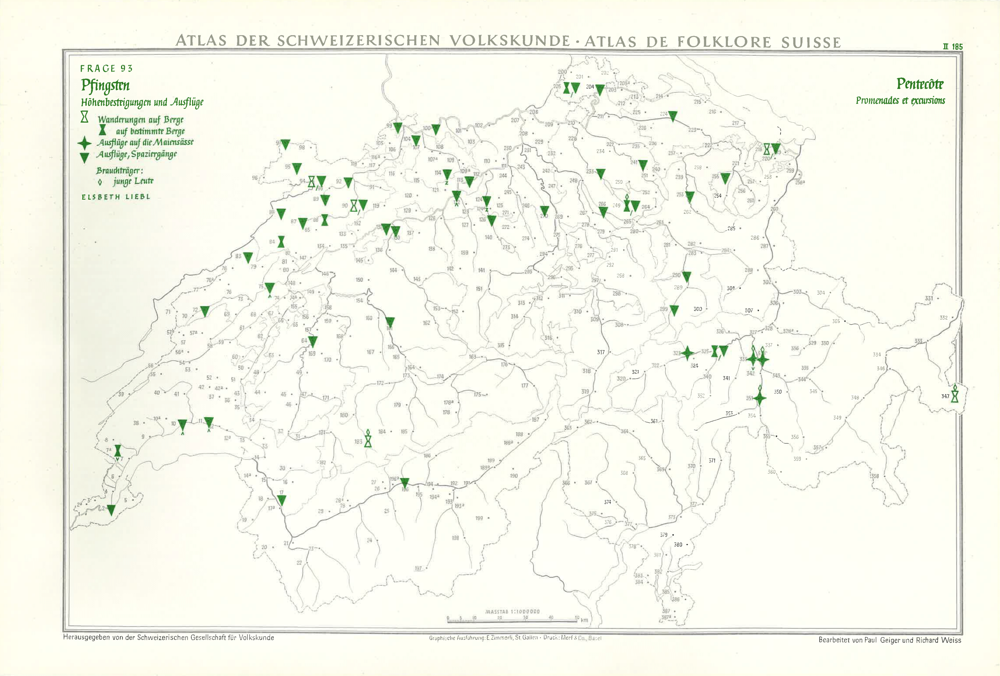
  <figcaption>
    <strong>Figure 2.1</strong>: 
    Map from the SGV_05 Collection Relating to Question 93 Showing Walks and Excursions at Pentecost. <abbr title="The Atlas of Swiss Folklore">ASV</abbr>. <abbr title="Cultural Anthropology Switzerland">CAS</abbr>. CC BY-NC 4.0
  </figcaption>
</figure>
<p><strong>SGV_10 Kreis Family</strong> comprises approximately 20,000 loose photographic objects, where a quarter of them are organised and kept in 93 photo albums — as illustrated by <a href="#fig:sgv-kreis">Figure 2.2</a>, from a wealthy Basel-based family and spanning from the 1850s to the 1980s. This private collection was acquired by <abbr title="Cultural Anthropology Switzerland">CAS</abbr> in 1991. The collection, which originally arrived in banana cases and was enigmatic due to the lack of clear organisation or accompanying information from the family, posed significant challenges. Despite these initial hurdles, <abbr title="Cultural Anthropology Switzerland">CAS</abbr> undertook meticulous efforts to catalogue and preserve its contents (Felsing &amp; Cornut, 2024, p. 42). The pictures were taken by studio photographers as well as by family members themselves. The Kreis Family collection represents a typical example of urban bourgeois culture and gives a comprehensive insight into the development of private photography over the course of a century&nbsp;(Pagenstecher, 2009). The photographic materials and formats are very diverse, ranging from prints to negatives, small, medium or large format photographs, black and white or colour. The collection also encompasses many photographic techniques, from the one-off daguerreotypes and ferrotypes, to the glass-based negatives that could be reproduced <em>en masse</em>, to the modern paper prints. While some of the albums and loose images were restored and digitised during the 2014 project, much of this work was completed during <abbr title="Participatory Knowledge Practices in Analogue and Digital Image Archives">PIA</abbr> and overseen by Murielle Cornut, whose doctoral investigation was centred on the study of photo albums (see Cornut, 2023).</p>
<figure id="fig:sgv-kreis" style="margin: 0 auto; text-align: center;">
  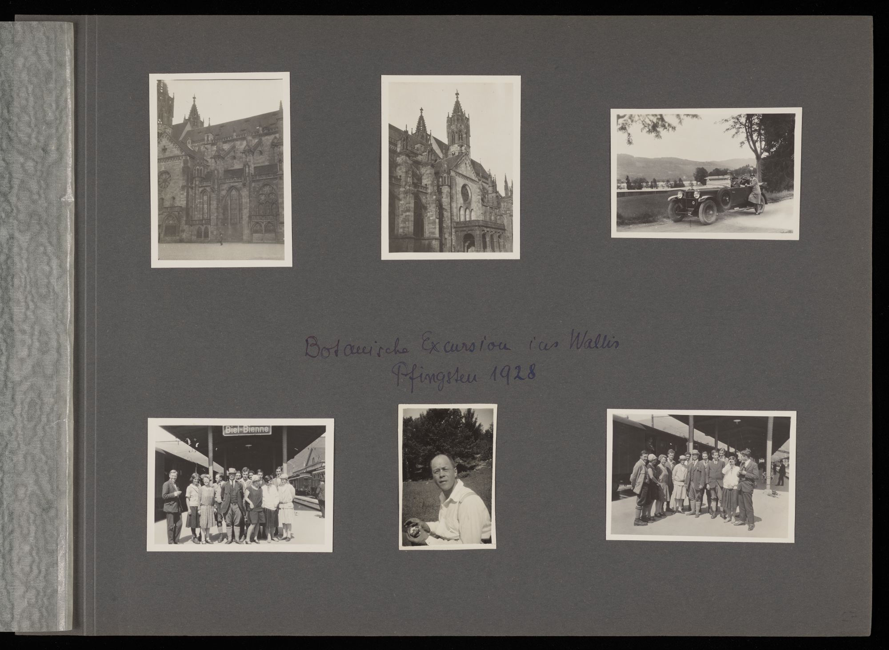
  <figcaption>
    <strong>Figure 2.2</strong>: 
    A photo Album Page from the SGV_10 Collection, Bearing the Following Inscription: 
    <em>Botanische Excursion ins Wallis, Pfingster 1928</em>. 
    SGV_10A_00031_015. Kreis Family. <abbr title="Cultural Anthropology Switzerland">CAS</abbr>. 
    CC BY-NC 4.0
  </figcaption>
</figure>
<p><strong>SGV_12 Ernst Brunner</strong> is a donation of about 48,000 negatives and 20,000 prints to the <abbr title="Cultural Anthropology Switzerland">CAS</abbr> archives from Ernst Brunner, a self-taught photojournalist, who lived from 1901 to 1979 and who documented mainly in the 1930s and 1940s a wide range of folkloristic themes — as shown by <a href="#fig:sgv-brunner">Figure 2.3</a>. He is one of the most important photographers of the era and one of the most outstanding visual chroniclers of Swiss society&nbsp;(Pfrunder, 1995). His photographs show rural lifestyles, but also urban motifs. In his late work, he led the documentation and research on farmhouses in a specific Swiss district, a project initiated by <abbr title="Cultural Anthropology Switzerland">CAS</abbr>. Before Ernst Brunner became an independent photojournalist in the mid-1930s, he worked as a carpenter, influenced by the ideas of the <em>Bauhaus</em> and <em>Neues Bauen</em> movements. This can also be seen in the aesthetics and formal language of his photography. If all the black and white negatives were digitised and recorded between 2014 and 2018, the digitisation of prints, which is a selection done by Ernst Brunner, was conducted at the end of the <abbr title="Participatory Knowledge Practices in Analogue and Digital Image Archives">PIA</abbr> research project. The latter was supervised by Fabienne Lüthi, whose PhD was about organisational systems and knowledge practices in the Ernst Brunner Collection.</p>
<figure id="fig:sgv-brunner" style="margin: 0 auto; text-align: center;">
  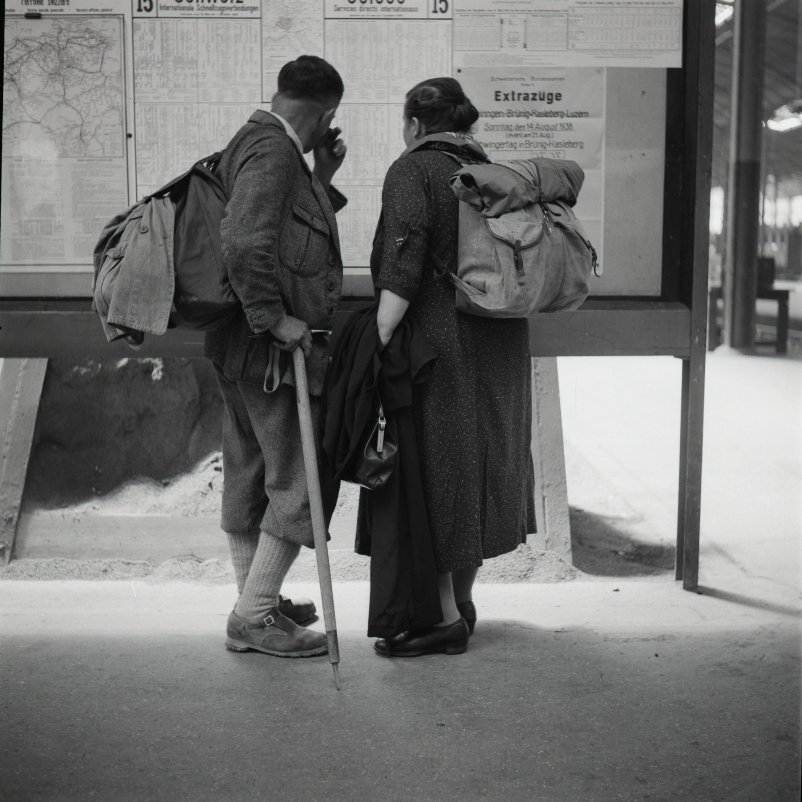
  <figcaption>
    <strong>Figure 2.3</strong>: 
    Picture from the SGV_12 Collection Showing Walkers Looking at the Timetable Train. 
    [Wanderer studieren den Fahrplan in der Bahnhofhalle]. 
    Lucerne, 1938. Ernst Brunner. SGV_12N_00716. <abbr title="Cultural Anthropology Switzerland">CAS</abbr>. 
    CC BY-NC 4.0
  </figcaption>
</figure>
<p>Whereas for each of the PhD Candidates in Cultural Anthropology, a particular collection was assigned to them and its content was to varying degrees part of their subject of study, this was not exactly the same for the PhD Candidates in <abbr title="Digital Humanities">DH</abbr>, including myself, and in Computer Science. Put differently, we had relative leeway in terms of what interested us in each or all of these three photographic collections. In my case, I briefly explain my contribution to the project more in and then in as part of the empirical portion of my thesis focusing on the deployment of <abbr title="Linked Open Usable Data">LOUD</abbr> specifications using the three <abbr title="Cultural Anthropology Switzerland">CAS</abbr> photographic collections.</p>
<p>Florian Spiess focused on the use of <abbr title="virtual reality">VR</abbr> through vitrivr, a multimedia retrieval system developed by the <abbr title="Databases and Information Systems">DBIS</abbr> research group at the Department of Mathematics and Computer Science (Spiess et al., 2024; Spiess &amp; Schuldt, 2022; Spiess &amp; Stauffiger, 2023). His work included experiments with <abbr title="Participatory Knowledge Practices in Analogue and Digital Image Archives">PIA</abbr>-related collections, such as the creation of virtual galleries clustered according to content-based similarity (see Peterhans et al., 2022). In the case of Max Frischknecht, his doctoral research centred on generative design<sup class="footnote-ref"><a href="#fn7" id="fnref7">[7]</a></sup>, a methodology to visualise dynamic cultural archives. He mostly worked on the <abbr title="The Atlas of Swiss Folklore">ASV</abbr> collection and on a mapping tool which is a cartographic visualisation designed to explore the <abbr title="Cultural Anthropology Switzerland">CAS</abbr> photographic archives (see Frischknecht, 2022; Huber &amp; Frischknecht, 2024).</p>
<p>It should also be mentioned that not only did we use the three collections of the <abbr title="Cultural Anthropology Switzerland">CAS</abbr> photographic archives within the project, but that both formal and informal meetings took place most commonly within the photographic archives at the Spalenvorstadt premises in the old Gewerbemuseum and later either at the on Allschwilerstrasse, though less frequently, or at Rheinsprung where the Institute for Cultural Anthropology and European Ethnology is located. This meant that there was a strong and sometimes blurred entanglement between those involved in the archives and the <abbr title="Participatory Knowledge Practices in Analogue and Digital Image Archives">PIA</abbr> core team members.</p>
<h4 id="subsec:pia_vision" tabindex="-1">2.2.3 Project Vision</h4>
<p>Between December 2021 and March 2022, we worked together to develop and finalise a vision for the project<sup class="footnote-ref"><a href="#fn8" id="fnref8">[8]</a></sup>. It includes seven key priorities, or pillars, which were meant to strengthen the interdisciplinary perspectives of <abbr title="Participatory Knowledge Practices in Analogue and Digital Image Archives">PIA</abbr>. Although ambitious, these elements were of paramount importance to us and served as a guiding blueprint for all <abbr title="Participatory Knowledge Practices in Analogue and Digital Image Archives">PIA</abbr> activities. Hereafter is a modified version of the vision<sup class="footnote-ref"><a href="#fn9" id="fnref9">[9]</a></sup> taken from (Cornut et al., 2023) [p. 4].</p>
<ol>
<li>
<p><strong>Accessibility</strong> by developing open interfaces and offering the     possibility of expanding the archive and turning it into an     instrument of current research that collects and evaluates knowledge     with the participation of other users (Citizen Science).</p>
</li>
<li>
<p><strong>Heterogeneity</strong> by making visible where, why and under what     circumstances the objects were created, how they were handled and     what path they have taken to get to and in the archive. We work on     visualisations that take into account the heterogeneous character of     archival materials and make their respective biographies visible.</p>
</li>
<li>
<p><strong>Materiality</strong> by conveying the material properties of the objects:     they have front and back sides, inscriptions, traces, development     errors, they are transparent, multi-layered or fabric-covered. They     tell of their origin, use, and peculiarities. We want to make this     knowledge accessible and understandable in digital form. To this     end, we also consider the necessary infrastructure involved in the     creation as part of their narrative: the restoration, the     relocation, the indexing, the storage devices, the research tools,     the display medium, as well as the process of repro-photography.</p>
</li>
<li>
<p><strong>Interoperability</strong> as a crucial component and which will be done     by supporting digital means that allow different stakeholders to     freely access and interact with the project’s data. Both humans and     machines can use, contribute to, correct and annotate the existing     data in an open and interoperable manner, thus encouraging exchange     and the creation of new knowledge. To do this, we use web-based     standards that are widely adopted in the cultural heritage field.</p>
</li>
<li>
<p><strong>Affinities</strong> by leveraging data models and pattern recognition     which can uncover semantic relationships between entities that were     previously incomplete or difficult for users to access. Using     specific interfaces and visualisations, we make it possible to     explore digital assets and discover forms of relationships and     similarities between images.</p>
</li>
<li>
<p><strong><abbr title="Artificial Intelligence">AI</abbr></strong> that     facilitates automated searches for simple image attributes such as     colour, shapes, and localisation of image components. It should also     become possible to recognise texts and object types for extracting     metadata.</p>
</li>
<li>
<p><strong>Bias Management</strong> by taking into account that associated metadata     was human-made<sup class="footnote-ref"><a href="#fn10" id="fnref10">[10]</a></sup> and thus is never objective. Collections and     their metadata reflect biases or focus narrowly on selected areas     and perceptions. Machines working on the basis of such data     automatically reproduce the implicit biases in decision-making due     to so-called biased algorithms. Therefore, understanding the data     used for training and the algorithms applied for decision making is     crucial to ensure the integrity of the application of these     technologies in archives. We take ethical issues into account when     using <abbr title="Artificial Intelligence">AI</abbr> and     visualisations, because the higher the awareness of a possible bias,     the faster it can be detected or brought up for consideration with     users.</p>
</li>
</ol>
<p>As my thesis is notably concerned with semantic interoperability, <strong>Interoperability</strong> and <strong>Affinities</strong> are of particular importance to my PhD thesis, although I recognise the importance of all pillars. Each of these resonated with me and my fellow PhD Candidates. As we immersed ourselves in the vision of the <abbr title="Participatory Knowledge Practices in Analogue and Digital Image Archives">PIA</abbr> research project, it became a unifying thread that brought us together in our research ambitions. We found that all these priorities within the project spoke to us at different points and provided a strong point of communication and practice in the development of processes, prototypes or interfaces.</p>
<h4 id="sec:pia-contribution" tabindex="-1">2.3 Contribution to PIA and its Relevance to the Thesis</h4>
<p>To develop a participatory platform, an open and sustainable technological foundation for facilitating the reuse of <abbr title="Cultural Heritage">CH</abbr> resources was needed (Raemy, 2021). Throughout the <abbr title="Participatory Knowledge Practices in Analogue and Digital Image Archives">PIA</abbr> project, I was mainly involved in the extension of the data infrastructure, the uptake of <abbr title="International Image Interoperability Framework">IIIF</abbr> as well as designing the data model, leveraging Linked Art and <abbr title="Web Annotation Data Model">WADM</abbr> (Raemy, 2024). As a member of Team B, I undertook this PhD as a bridge between the different teams, mostly participating in discussions with the three doctoral candidates from Team A to further develop and agree on the <abbr title="Cultural Anthropology Switzerland">CAS</abbr> data model and with the software developers from my team to discuss the impact of the data model on our evolving — yet transitory — infrastructure as well as helping in implementing the <abbr title="Application Programming Interface">API</abbr>s adhering to the <abbr title="Linked Open Usable Data">LOUD</abbr> design principles.</p>
<p>It was necessary to redesign the data model within the context of a database migration, from Salsah to the <abbr title="DaSCH Service Platform">DSP</abbr>, that happened between November 2021 and March 2024. This updated version, based on the Knora Base Ontology<sup class="footnote-ref"><a href="#fn11" id="fnref11">[11]</a></sup>, corresponded to the needs of the <abbr title="Cultural Anthropology Switzerland">CAS</abbr> archives and to some extent to those of <abbr title="Participatory Knowledge Practices in Analogue and Digital Image Archives">PIA</abbr>, in particular to enable the PhD Candidates in Cultural Anthropology to make more precise assertions, whether in terms of descriptive metadata, or in the ability to link one object to another or to provide comments on these objects in several narrative forms.</p>
<p>Moreover, an assessment of the appropriate technical standards for improved usability of the objects by both humans and machines was carried out, as a basis for extending the capabilities provided by <abbr title="Swiss National Data and Service Center for the Humanities">DaSCH</abbr>, such as helping the software developers to implement <abbr title="Simple Image Interface Presentation">SIPI</abbr><sup class="footnote-ref"><a href="#fn12" id="fnref12">[12]</a></sup>, a <code>C++</code> image server compatible with the <abbr title="International Image Interoperability Framework">IIIF</abbr> Image <abbr title="Application Programming Interface">API</abbr> and build services that create <abbr title="International Image Interoperability Framework">IIIF</abbr> Presentation API 3.0 resources.</p>
<p>While the theoretical framework of the thesis extends across the scope of <abbr title="Participatory Knowledge Practices in Analogue and Digital Image Archives">PIA</abbr>, the empirical part focuses on a specific set of findings derived from the research project outlined in , under the title . In this chapter, I discuss the data model and its refinement as well as the generation of custom <abbr title="International Image Interoperability Framework">IIIF</abbr> Manifests during the specific digitisation, cataloguing and indexing efforts that took place throughout the project for the three <abbr title="Cultural Anthropology Switzerland">CAS</abbr> collections (SGV_05, SGV_10 and SGV_12) under investigation, the implementation of <abbr title="Linked Open Usable Data">LOUD</abbr> standards, and the overall design of the technological underpinnings.</p>
<h4 id="sec:involvement_iiif_la" tabindex="-1">2.4 Involvement within the IIIF and Linked Art communities</h4>
<p>I must acknowledge the invaluable role that my involvement within the <abbr title="International Image Interoperability Framework">IIIF</abbr> and Linked Art communities has played in shaping my journey as a trained information specialist and an aspiring <abbr title="Digital Humanities">DH</abbr> practitioner. Being an active participant in both communities has not only broadened my understanding of the latest developments in the field but has also profoundly influenced the trajectory of this dissertation.</p>
<p>I have been involved within the <abbr title="International Image Interoperability Framework">IIIF</abbr> community since October 2016 and the Working Groups Meeting that happened in The Hague<sup class="footnote-ref"><a href="#fn13" id="fnref13">[13]</a></sup>. This significant journey was, in fact, initiated by a recommendation from my first supervisor, Peter Fornaro, during my time as an undergraduate doing an internship at the <abbr title="University of Basel's Digital Humanities Lab">DHLab</abbr>. Little did I know that this recommendation would lead me to be carrying out a PhD and looking at <abbr title="International Image Interoperability Framework">IIIF</abbr> not only as community-driven standards but as an object of study. Engaging with the <abbr title="International Image Interoperability Framework">IIIF</abbr> community exposed me to cutting-edge advances in image interoperability and standards, and fostered a deeper appreciation for the importance of digital representations of cultural heritage. Through collaborative discussions with experts from diverse backgrounds, I gained new perspectives on the potential of technology to advance humanities research and preserve our collective cultural memory.</p>
<p>Similarly, my involvement in the Linked Art community introduced me to the opportunities offered by <abbr title="Linked Open Usable Data">LOUD</abbr> and its transformative impact on research discourse. Exposure to Linked Data methodologies and the <abbr title="CIDOC Conceptual Reference Model">CIDOC-CRM</abbr> has significantly influenced the way I have structured and interpreted the data in this dissertation, thereby enriching its scholarly breadth and rigour. I started to be actively involved in Linked Art at the beginning of my PhD in 2021, but I was already a by 2020, driven by the efforts of Rob Sanderson, my third supervisor. By mid-2023, I had become a member of the Editorial Board.</p>
<p>The individuals I have met and the knowledge shared in these vibrant communities have deeply informed my approach as a scholar. The invaluable connections and collaborations I have made have expanded my network of fellow researchers, educators, and experts, leading to fruitful discussions that have significantly shaped the research questions addressed in this thesis. The events and workshops organised by these communities have also provided immersive learning experiences, giving me first-hand insights into the tools, technologies and methodologies used in the context of describing and disseminating <abbr title="Cultural Heritage">CH</abbr> data. The dynamic ecosystem of these communities has served as an inspiring backdrop, fostering innovative thinking and encouraging a more holistic approach to my research.</p>
<h2 id="cha:literature" tabindex="-1">3. Interlinking Cultural Heritage Data</h2>
<p>Interlinking <abbr title="Cultural Heritage">CH</abbr> data is an important aspect of publishing heritage collections over the web, in particular by using <abbr title="Linked Open Data">LOD</abbr> technologies to make assertions more easily readable and meaningful to machines (Marcondes, 2021). Due to the complexity of <abbr title="Cultural Heritage">CH</abbr> data and their intrinsic inter-relationships, it is necessary to define its nature and introduce controlled vocabularies and ontologies that can be integrated with existing web standards and interoperable with relevant platforms (Bruseker et al., 2017; Hyvönen, 2020).</p>
<p>Efforts to interlink <abbr title="Cultural Heritage">CH</abbr> data have brought about significant advancements, but challenges remain. One such challenge is finding a balance between completeness and precision of expression to ensure that the that <abbr title="Cultural Heritage">CH</abbr> data remain accessible and usable to a wider audience. Addressing this challenge, the Linked Open Usable Data (<abbr title="Linked Open Usable Data">LOUD</abbr>) design principles and the specifications that adhere to those, such as the <abbr title="International Image Interoperability Framework">IIIF</abbr> Presentation <abbr title="Application Programming Interface">API</abbr> 3.0 and Linked Art, offer a promising approach (Raemy et al., 2023). By focusing on usability aspects from the perspective of software developers and data scientists involved in designing visualisation tools and data aggregation approaches, <abbr title="Linked Open Usable Data">LOUD</abbr> strives to enhance the overall user experience (Sanderson, 2019).</p>
<p>Finding this equilibrium becomes crucial as <abbr title="Cultural Heritage">CH</abbr> data continues to grow in complexity and size, necessitating the seamless integration of native web technologies. The <abbr title="Linked Open Usable Data">LOUD</abbr> concept cultivates an environment that encourages the formation of vibrant <abbr title="Communites of Practice">CoP</abbr> and the seamless integration of native web technologies, wherein an essential principle is the availability of comprehensive documentation supplemented with practical examples (Raemy, 2022). Moreover, the emphasis on leveraging widely adopted technologies enhances the interoperability of data and promotes its wider dissemination. With <abbr title="Linked Open Usable Data">LOUD</abbr> principles guiding the linking of <abbr title="Cultural Heritage">CH</abbr> data, the resulting web of knowledge becomes more than just a machine-readable resource; it transforms into a user-centric ecosystem where both accessibility of Linked Data and usability intersect to enable scholars and a wider audience to engage in the exploration and appreciation of <abbr title="Cultural Heritage">CH</abbr> (Newbury, 2018). Finally, by fostering a collaborative, knowledge-sharing mindset, <abbr title="Linked Open Usable Data">LOUD</abbr> empowers software developers to implement data in a robust way, drawing insights from shared experiences (see Page et al., 2020).</p>
<p>In this chapter, which serves as the literature review of the PhD thesis, I attempt to draw on this brief introduction by dividing the insights into seven sections in order to provide an overview of the key concepts related to interlinking data in the <abbr title="Cultural Heritage">CH</abbr> domain. The literature review primarily encompasses works published up until December 2023, providing a comprehensive snapshot of the field’s current state and its evolution. <a href="#sec:standout">Section 3.1</a> discusses what makes <abbr title="Cultural Heritage">CH</abbr> data stand out and <a href="#sec:metadata">Section 3.2</a> is about <abbr title="Cultural Heritage">CH</abbr> metadata standards, while <a href="#sec:movements">Section 3.3</a> explores the technological trends, scientific movements and guiding principles that have shaped the field. <a href="#sec:linkeddata">Section 3.4</a> provides an overview of the web as an open platform, which are essential to understanding the current landscape of interlinking <abbr title="Cultural Heritage">CH</abbr> data. <a href="#sec:loud">Section 3.5</a> focuses on <abbr title="Linked Open Usable Data">LOUD</abbr>, while <a href="#sec:semantics-interoperability">Section 3.6</a> looks at characterising the community practices and semantic interoperability dimensions for <abbr title="Cultural Heritage">CH</abbr>. Finally, in <a href="#sec:review-summary-insights">Section 3.7</a>, I summarise key elements from each section and within each of these I give some initial thoughts with respect to <abbr title="Linked Open Usable Data">LOUD</abbr>, and then conclude the chapter with some considerations on why we as a society need to care about <abbr title="Cultural Heritage">CH</abbr> data.</p>
<h3 id="sec:standout" tabindex="-1">3.1 What Makes Cultural Heritage Data Stand Out?</h3>
<p>Here, I aim to establish the indirect territory of my study, as I am situated on a distinct plane that focuses on web technologies and standards — as well as software and services that enable them — as the subjects of investigation. However, it is crucial to acknowledge that <abbr title="Linked Open Usable Data">LOUD</abbr> specifications owe their existence to the available data that have served as case studies. Thus, their significance can be best understood through the lens of data and I recognise here the pivotal role played by <abbr title="Cultural Heritage">CH</abbr> practitioners — encompassing individuals from research and memory institutions — who have had a significant impact on specifying a series of web-based standards and who have helped to move forward the discovery of <abbr title="Cultural Heritage">CH</abbr> data and beyond, in particular those belonging to the public domain, in an open manner.</p>
<p>In <a href="#subsec:cultural-heritage">Subsection 3.1.1</a>, I provide an introduction to <abbr title="Cultural Heritage">CH</abbr> as recognised by the <abbr title="United Nations Educational, Scientific and Cultural Organization">UNESCO</abbr>. I explore the tangible, intangible, and natural dimensions of <abbr title="Cultural Heritage">CH</abbr>, laying the foundation for further discussions on its representation and preservation, notably by giving a first definition of <abbr title="Cultural Heritage">CH</abbr> data. Next in <a href="#subsec:reprez">3.1.2</a>, I look at the challenges of representation and embodiment of <abbr title="Cultural Heritage">CH</abbr> data. This subsection examines the challenges in describing and preserving its materiality or embodied aspects. Understanding the significance of collective efforts, communities, and the interplay of technologies. Thirdly, I discuss what I called ‘Collectives and Apparatuses’ in <a href="#subsec:collective-apparatus">3.1.3</a> where I highlight how actors in terms of collaborative actions and apparatuses play a pivotal role in <abbr title="Cultural Heritage">CH</abbr>.</p>
<h4 id="subsec:cultural-heritage" tabindex="-1">3.1.1 Cultural Heritage</h4>
<p>The legacy of <abbr title="Cultural Heritage">CH</abbr> encompasses physical artefacts and intangible aspects inherited from past generations, reflecting the history and traditions of societies. Meanwhile, <abbr title="Cultural Heritage">CH</abbr> constantly evolves due to complex historical processes, necessitating preservation and protection efforts to prevent its loss over time (Loulanski, 2006). The dynamic nature of <abbr title="Cultural Heritage">CH</abbr> demands collaborative actions, including documentation and the use of a range of technologies.</p>
<p>The concept of <abbr title="Cultural Heritage">CH</abbr> is also characterised by perpetual evolution, mirroring the historical processes that shape societies over time. Social, political, economic, and technological shifts invariably influence the definition and perception of <abbr title="Cultural Heritage">CH</abbr>, prompting continuous reinterpretations and reevaluations of its significance. Over the years, the enthusiasm for the protection of cultural property has enriched the term with new shades of meaning. As societies undergo transformations, new layers of meaning and relevance are superimposed on existing <abbr title="Cultural Heritage">CH</abbr>, perpetually enriching its essence. As articulated by (Ferrazzi, 2021, p. 765):</p>
<blockquote>
<p>‘Cultural heritage’, as an abstract legacy or as a merge of tangible and intangible values, is able to encompass the totality of culture(s); in so, assuming a symbolic value that brings a clear break with all other terminologies. In conclusion, ‘cultural heritage’ as a legal term has demonstrated more than any others to be a real ensemble of historical stratification and cultural diversity.</p>
</blockquote>
<p>The advent of globalisation and rapid advancements in technology have further accelerated the evolution of <abbr title="Cultural Heritage">CH</abbr>. Increased interconnectedness and cross-cultural interactions have led to the fusion of traditions and the emergence of novel cultural expressions. Moreover, the digital era has facilitated the dissemination of <abbr title="Cultural Heritage">CH</abbr> resources on a global scale, transcending geographical barriers and preserving cultural knowledge for future generations as (Portalés et al., 2018).</p>
<p>Thus, the intriguing nature of <abbr title="Cultural Heritage">CH</abbr> resources can be attributed to their multifaceted and diverse characteristics. The conservation and promotion of these resources demand a nuanced comprehension of the various types of heritage resources, culminating in effective preservation and promotion strategies that can account for their heterogeneity (Windhager et al., 2019).</p>
<p>According to (UNESCO Institute for Statistics, 2009), <abbr title="Cultural Heritage">CH</abbr> includes tangible and intangible heritage. Tangible <abbr title="Cultural Heritage">CH</abbr> refers to physical objects such as artworks, artefacts, monuments, and buildings, while intangible <abbr title="Cultural Heritage">CH</abbr> comprises practices, knowledge, folklore and traditions that hold cultural significance (Munjeri, 2004). The concept of heritage has evolved through a process of extension to include objects that were not traditionally considered part of the heritage. The criteria for selecting heritage have also changed, taking into account cultural value, identity, and the ability of the object to evoke memory. This shift has led to the recognition and protection of intangible <abbr title="Cultural Heritage">CH</abbr>, challenging a Eurocentric perspective and embracing cultural diversity as a valuable asset for humanity (Vecco, 2010).</p>
<p>Conservation guidelines have broadened the concept of heritage to include not only individual buildings and sites but also groups of buildings, historical areas, towns, environments, social factors, and intangible heritage (Ahmad, 2006). In 2019, another instance of <abbr title="United Nations Educational, Scientific and Cultural Organization">UNESCO</abbr> defines <abbr title="Cultural Heritage">CH</abbr> in an even more comprehensive manner, taking into account natural heritage:</p>
<blockquote>
<p>Cultural heritage is, in its broadest sense, both a product and a process, which provides societies with a wealth of resources that are inherited from the past, created in the present and bestowed for the benefit of future generations. Most importantly, it includes not only tangible, but also natural and intangible heritage. (UNESCO. Culture for Development Indicators, 2014, p. 130)</p>
</blockquote>
<p>In thinking about the concept of <abbr title="Cultural Heritage">CH</abbr>, I find this last definition particularly resonant. This broader perspective is motivated by my interest with <abbr title="Linked Open Usable Data">LOUD</abbr> specifications as a research area, particularly because of their notable data agnosticism and as it resonated with (Hyvönen, 2012) [pp. 1-3]'s subdivision of <abbr title="Cultural Heritage">CH</abbr> as well. These services have the adaptability to process and use different types of data, transcending the boundaries of specific domains or disciplines. Although grounded in concrete <abbr title="Cultural Heritage">CH</abbr> cases, their potential to extend to any type of data, including those from STEM, is a compelling prospect that warrants further exploration, a point that I will explore later.</p>
<p>The following sub-subsections aim to briefly discuss tangible, intangible, and natural heritage, as well as providing a definition of <abbr title="Cultural Heritage">CH</abbr> data which can serve as a foundational reference for this thesis.</p>
<h5 id="subsubsec:tangible" tabindex="-1">3.1.1.1 Tangible Heritage</h5>
<p>Tangible <abbr title="Cultural Heritage">CH</abbr> encompasses physical artefacts and sites of immense cultural significance that are passed through generations in a society (Vecco, 2010). These objects are tangible manifestations of human creativity, representing artistic creations, architectural achievements, archaeological remains as well as collections held by <abbr title="Cultural Heritage Institution">CHI</abbr>s.</p>
<p>One aspect of tangible <abbr title="Cultural Heritage">CH</abbr> is artistic creations such as paintings, sculptures and traditional handicrafts. These artefacts embody cultural values and artistic expressions and serve as essential reflections of a society’s collective ethos. For example, artworks such as ‘Irises’ from Vincent van Gogh<sup class="footnote-ref"><a href="#fn14" id="fnref14">[14]</a></sup> and Alberto Giacometti’s ‘L’Homme qui Marche I’ <sup class="footnote-ref"><a href="#fn15" id="fnref15">[15]</a></sup> are revered works of art that have deep cultural significance in Europe and all over the world.</p>
<p>The built heritage, including monuments, temples and historic buildings, is another important component of the tangible <abbr title="Cultural Heritage">CH</abbr>. These architectural marvels not only represent past civilisations, but also convey the social values and aspirations of their time. The Taj Mahal, an exemplary white marble structure in India, stands as a poignant testament to Mughal architecture. Closer to where I write this dissertation one can mention the Abbey of St Gall, a convent from the century which is inscribed on the <abbr title="United Nations Educational, Scientific and Cultural Organization">UNESCO</abbr> World Heritage List. In the context of urban heritage, conventional definitions of built heritage often focus narrowly on the architectural and historical value of individual buildings and monuments, which are well protected by existing legislation. However, the challenge is to preserve urban fragments - areas within towns and cities that may not qualify as designated conservation areas, but are of significant cultural and morphological importance (Tweed &amp; Sutherland, 2007). For instance, (Rautenberg, 1998) proposes two categories of built <abbr title="Cultural Heritage">CH</abbr>: heritage by designation and heritage by appropriation. Heritage by designation involves experts conferring heritage status on sites, buildings, and cultural objects through a top-down approach, often without public participation. This method can be predictable and uncontroversial, but can be criticised for being elitist and neglecting unconventional heritage. On the other hand, heritage by appropriation emphasises community and public involvement in identifying and preserving cultural expressions, leading to a more inclusive and dynamic understanding of heritage.</p>
<p>Archaeological sites are also an integral part of the tangible <abbr title="Cultural Heritage">CH</abbr>, offering invaluable insights into past societies and ways of life. As per May 2024, <abbr title="United Nations Educational, Scientific and Cultural Organization">UNESCO</abbr>'s long list of World Heritage Sites includes 1,199 cultural and natural sites in 168 different state parties — including 48 sites in transboundary regions<sup class="footnote-ref"><a href="#fn16" id="fnref16">[16]</a></sup>. Sites such as Machu Picchu, an impressive Inca citadel in the Peruvian Andes, bear witness to the architectural achievements and cultural practices of ancient civilisations. If archaeological sites are invaluable, they face significant threats such as looting, destruction, exploitation, and extreme weather phenomena (Bowman, 2008; Micle, 2014). To safeguard them, conservation efforts must be case-specific and include documentation and assessment of experiences gained (Aslan, 1997).</p>
<p>The preservation of tangible <abbr title="Cultural Heritage">CH</abbr> extends beyond physical objects to include libraries, archives and museums that house collections of books, manuscripts, historical documents and artefacts.</p>
<p>Incidentally, the term “cultural property” is also employed as a related concept to tangible <abbr title="Cultural Heritage">CH</abbr>, encompassing both movable and immovable properties as opposed to less tangible cultural expressions (Ahmad, 2006). Cultural property is protected by a number of international conventions and national laws. For instance, the Blue Shield<sup class="footnote-ref"><a href="#fn17" id="fnref17">[17]</a></sup> — an international organisation established in 1996 by four non-governmental organisations<sup class="footnote-ref"><a href="#fn18" id="fnref18">[18]</a></sup> — aims to protect and preserve heritage in times of armed conflict and natural disasters (Van der Auwera, 2013). Its mission has been revised in 2016:</p>
<blockquote>
<p>The Blue Shield is committed to the protection of the world’s cultural property, and is concerned with the protection of cultural and natural heritage, tangible and intangible, in the event of armed conflict, natural- or human-made disaster. (Blue Shield, 2016 art. 2.1)</p>
</blockquote>
<p>Overall, tangible <abbr title="Cultural Heritage">CH</abbr> is a testament to human ingenuity and cultural diversity, and serves as a bridge between the past and the present. Its preservation is a collective responsibility, ensuring that the legacy of past generations endures and the wealth of cultural diversity continues to enrich the fabric of society.</p>
<h5 id="subsubsec:intangible" tabindex="-1">3.1.1.2 Intangible Heritage</h5>
<p>The concept of intangible heritage emerged in the 1970s and was coined at the <abbr title="United Nations Educational, Scientific and Cultural Organization">UNESCO</abbr> Mexico Conference in 1982 (Leimgruber, 2010) with the aim of protecting cultural expressions that were previously excluded from preservation efforts (Hertz et al., 2018). <abbr title="United Nations Educational, Scientific and Cultural Organization">UNESCO</abbr>'s previous focus had been on material objects, primarily from wealthier regions of the global North, leaving the intangible cultural heritage of the South overlooked. Attempts to protect intangible heritage through legal measures like copyright and patents were ineffective due to the collective nature of these cultural expressions and the anonymity of creators. The Convention acknowledges that intangible <abbr title="Cultural Heritage">CH</abbr> is essential for cultural diversity and sustainable development.</p>
<p>Below is the definition given by the <em>Convention for the Safeguarding of the Intangible Cultural Heritage</em>:</p>
<blockquote>
<p>‘The Intangible Cultural Heritage’ means the practices, representations, expressions, knowledge, skills – as well as the instruments, objects, artefacts and cultural spaces associated therewith – that communities, groups and, in some cases, individuals recognize as part of their cultural heritage. This intangible cultural heritage, transmitted from generation to generation, is constantly recreated by communities and groups in response to their environment, their interaction with nature and their history, and provides them with a sense of identity and continuity, thus promoting respect for cultural diversity and human creativity. (UNESCO, 2022)</p>
</blockquote>
<p>According to <abbr title="United Nations Educational, Scientific and Cultural Organization">UNESCO</abbr>, intangible <abbr title="Cultural Heritage">CH</abbr> can be manifested in the following domains:</p>
<ul>
<li>oral traditions and expressions, including language as a vehicle of     the intangible <abbr title="Cultural Heritage">CH</abbr>;</li>
<li>performing arts;</li>
<li>social practices, rituals and festive events;</li>
<li>knowledge and practices concerning nature and the universe;</li>
<li>traditional craftsmanship.</li>
</ul>
<p>Overall, intangible <abbr title="Cultural Heritage">CH</abbr> is a multifaceted concept that encompasses both traditional practices inherited from the past and contemporary expressions in which diverse cultural groups actively participate (Leimgruber, 2008; Munjeri, 2004). It includes inclusive elements shared by different communities, whether they are neighbouring villages, distant cities around the world, or practices adapted by migrant populations in new regions. These expressions have been passed down from generation to generation, evolving in response to their environment, and play a crucial role in shaping our collective identity and continuity. Intangible <abbr title="Cultural Heritage">CH</abbr> promotes social cohesion, strengthens a sense of belonging and responsibility, and enables individuals to connect with different communities and society at large.</p>
<p>Central to the nature of intangible <abbr title="Cultural Heritage">CH</abbr> is its representation within communities. Its value goes beyond mere exclusivity or exceptional importance; rather, it thrives on its association with the people who preserve and transmit their knowledge of traditions, skills and customs to others within the community and across generations. The recognition and preservation of intangible <abbr title="Cultural Heritage">CH</abbr> depends on the communities, groups or individuals directly involved in its creation, maintenance and transmission. Without their recognition, no external entity can decide on their behalf whether a particular practice or expression constitutes their heritage. The community-based approach ensures that intangible <abbr title="Cultural Heritage">CH</abbr> remains authentic and deeply rooted in the living fabric of society, protected by those who care for and perpetuate it.</p>
<p>In Switzerland, the Winegrower’s Festival in Vevey (<em>La Fête des Vignerons</em>), a plurisecular event celebrating the world of wine making (Vinck, 2019) and the Carnival of Basel (<em>Basler Fasnacht</em>) (Chiquet, 2023) are examples of traditions that are listed among <abbr title="United Nations Educational, Scientific and Cultural Organization">UNESCO</abbr>'s intangible <abbr title="Cultural Heritage">CH</abbr>.</p>
<p>(In)tangibility is not always a straightforward concept and can indeed be blurred, i.e. it goes beyond the mere idea of materialisation. Many artefacts and elements of <abbr title="Cultural Heritage">CH</abbr> possess both tangible and intangible qualities that intertwine and complement each other, making the distinction less clear-cut.</p>
<p>For instance, this Male Face Mask, held at the Art Institute Chicago<sup class="footnote-ref"><a href="#fn19" id="fnref19">[19]</a></sup>, also known as ‘Zamble’, from the Guro people in the Ivory Coast holds dual significance as both a tangible and intangible <abbr title="Cultural Heritage">CH</abbr>. As a tangible object, the mask is a physical artefact made from wood and pigment, fabric, and various adornments, that combines animal and human features representing the Guro people’s artistic skills. On the other hand, as an intangible cultural object, the Zamble mask carries profound spiritual and cultural meaning. It plays a significant role in commemorating the deceased during a man’s second funeral. These second funerals are organised months or even years after the actual burial as a way to honour and remember the departed (see Haxaire, 2009). Thus, the preservation and appreciation of both the tangible and intangible aspects of the mask are essential to its cultural relevance.</p>
<p>Another example of the blurred line between tangible and intangible heritage is emphasised by (De Muynke et al., 2022) in recreating reported perceptions of the acoustics of Notre-Dame de Paris through a collaboration between sciences of acoustics and anthropology. The authors highlight the heritage value of how people subjectively perceive sound in a space, particularly in places of worship where sound and music are integral to the religious experience. The authors advocate integrating the study of both material and non-material aspects to understand the changing sonic environments of heritage buildings [(De Muynke et al., 2022) pp. 1-2]. (Katz, 2023) articulates that <em>‘acoustics is an intangible product of a tangible building’</em>. This integrated perspective could lead to a more holistic understanding of the dynamics between physical spaces and the perceptual and experiential dimensions attached to them.</p>
<h5 id="subsubsec:natural" tabindex="-1">3.1.1.3 Natural Heritage</h5>
<p>Natural heritage, encompassing geological formations, biodiversity, and ecosystems of cultural, scientific, and aesthetic value, shares a significant overlap with <abbr title="Cultural Heritage">CH</abbr>. Many natural sites hold spiritual and symbolic importance for communities, becoming repositories of cultural memory and identity (Lowenthal, 2005). Traditional ecological knowledge developed by various cultures also underscores the interconnectedness of cultural and natural heritage, as indigenous communities have accumulated wisdom on sustainable resource use and ecological balance (Azzopardi et al., 2023). Moreover, the conservation and sustainable management of natural heritage is often intertwined with efforts to protect <abbr title="Cultural Heritage">CH</abbr>, fostering a collective commitment to preserve these entangled legacies for future generations.</p>
<p>The link between natural and <abbr title="Cultural Heritage">CH</abbr> goes beyond their shared values; spatial overlaps further accentuate their interdependence. Natural sites may have cultural significance, while <abbr title="Cultural Heritage">CH</abbr> sites may be situated within natural landscapes. For example, a national park may include archaeological sites or culturally revered landscapes, thus intertwining the cultural and natural dimensions. This spatial intermingling highlights the inextricable relationship between human societies and the natural environment, as cultural practices and beliefs become intertwined with the landscapes they inhabit. In this way, the preservation of both natural and cultural heritage becomes essential not only for their intrinsic worth but also for sustaining the narrative of our shared human and environmental history.</p>
<p>Additionally, the distinction between nature and culture is not only subjective and dependent on human appreciation (Vandenhende &amp; Van Hoorick, 2017). Rather, it is a concept intrinsically linked with the overarching framework of modernism, a perspective that has been critically examined and deconstructed by the influential sociologist and philosopher, Bruno Latour, that have argued that <em>‘we have never been modern’</em> (Latour, 1993). Latour’s deconstruction of the modernist perspective extends to the recognition that the <em>‘the proliferation of hybrids has saturated the constitutional framework of the moderns’</em> (Latour, 1993, p. 51). This assertion underscores the fundamental challenge posed by hybrid entities – those that blur the boundaries between nature and culture – to the traditional categories upon which modernist thinking has been predicated. In essence, the concept of hybrids disrupts the neat divisions between the natural and social worlds that have been a hallmark of modernist discourse and provide us an opportunity to situate ourselves as ‘amodern’ as opposed to postmodern (Latour, 1990).</p>
<p>In addition to Latour’s critique of the modernistic distinction between nature and culture, the concept of the ‘parasite’, as expounded by Michel Serres, one of the influential thinkers who significantly influenced Latour’s intellectual development (Berressem, 2015). It offers a valuable lens through which to examine the intricacies of interconnectedness and interdependence within our world. In his view, everything is enmeshed in a complex web of relationships that negates the existence of self-contained entities. Rather than seeing discrete and isolated entities, Serres invites us to see everything as an integral part of a larger system in which each component is inextricably dependent on the others (Serres, 2014). Together, these complementary perspectives invite us to reevaluate our understanding of the intricate tapestry of existence, emphasising the complexities of our relationship with the world.</p>
<p>Thus, the appreciation of nature and culture is not mutually exclusive, but rather forms a continuous and evolving relationship. The modern perspective has historically separated these realms, treating them as distinct and disconnected. However, a more inclusive approach dissolves this artificial boundary and recognises the interconnectedness of nature and culture (Donna Haraway, 2008; Donna Jeanne Haraway, 2016). This paradigm shift challenges the traditional modern understanding and invites a more holistic view in which natural and cultural heritage are mutually constructed within a complex network of relationships.</p>
<p>Recognition of this relationship is essential in the context of heritage conservation and understanding. The dynamic interplay between nature and culture is recognised, and the acknowledgement of their coexistence promotes a more holistic approach to heritage conservation, where cultural practices, traditions and ecological systems are seen as interdependent aspects of the wider heritage tapestry. This recognition encourages us to see heritage sites not as isolated entities, but as part of a larger web of interconnectedness, and urges us to conserve and value both cultural and natural heritage with a shared responsibility. Adopting this interconnected perspective enables us to appreciate the profound connections between human societies and the natural world, and inspires a collective commitment to safeguarding these precious legacies for future generations.</p>
<h5 id="subsubsec:chd" tabindex="-1">3.1.1.4 Cultural Heritage Data</h5>
<p>As I embark on the exploration of <abbr title="Cultural Heritage">CH</abbr> data, it is first necessary to establish a basic understanding of data in this context. At its core, data represents more than mere numbers and facts; it constitutes a collection of discrete or continuous values that are assembled for reference or in-depth analysis. In essence, data are the rich tapestry upon which the narratives of <abbr title="Cultural Heritage">CH</abbr> are woven, making its comprehension a critical prerequisite for our expedition into this domain.</p>
<p>Luciano Floridi — a prominent philosopher in the field of information and digital ethics — provides a thorough perspective on the term ‘data’ and offers valuable insights into its fundamental nature in its <abbr title="Philosophy of Information">PI</abbr>. He perceives <em>‘data at its most basic level as the absence of uniformity, whether in the real world or in some symbolic system. Only once such data have some recognisable structure and are given some meaning can they be considered information’</em> (Floridi, 2010). This initial definition sets the stage for a deeper exploration of Floridi’s understanding of data, as he further focuses on its transformative journey into a more meaningful and structured form, which we will explore next.</p>
<p>Building upon Floridi’s foundational concept of data as the absence of uniformity, his subsequent definition provides a more comprehensive perspective. In a previous work, (Floridi, 2005) [p. 357] argues that <em>‘data are definable as constraining affordances, exploitable by a system as input of adequate queries that correctly semanticise them to produce information as output’</em>. This definition highlights the dynamic role of data, not only as raw entities awaiting structure and meaning but also as elements imbued with the potential to constrain and guide systems towards the generation of meaningful information.</p>
<p>Transitioning from Floridi’s concept of data, we progress to the view that data can be notably seen as interpretable texts within the <abbr title="Digital Humanities">DH</abbr> perspective. According to (Owens, 2011)  there are four main perspectives on how Humanists can engage with data:</p>
<ul>
<li><strong>Data as constructed artefacts</strong>: data are a product of human creation, not something inherently raw or neutral;</li>
<li><strong>Data as interpretable texts</strong>: Humanists can interpret data as     authored works, considering the intentions of the creators and how     different audiences understand and use the data;</li>
<li><strong>Data as processable information</strong>: data can be processed by computers, allowing various forms of visualisation, manipulation and     analysis, which can lead to further perspectives and insights;</li>
<li><strong>Data can hold evidentiary value</strong>: data, as a form of human artefact and cultural object, can provide evidence to support claims     and arguments.</li>
</ul>
<p>These considerations highlight the multifaceted nature of data within the field of <abbr title="Digital Humanities">DH</abbr>. It is in this complex landscape that we recognise that data transcends its traditional role as a passive entity. As (Rodighiero, 2021) [p. 26, citing (Akrich et al., 2006)] suggests that <em>‘there is no doubt that data are full-fledged actors that take part in the social network the actor-network theory describes, in which both human and non-human intertwine and overlap’</em>. This notion – rooted and borrowed from <abbr title="Science and Technology Studies">STS</abbr> – reinforces the idea that data, as an active and dynamic entity, plays a significant role in shaping the interactions between human and non-human actors in any digital spheres.</p>
<p>From these angles, I can look at the characteristics of <abbr title="Cultural Heritage">CH</abbr> data. (Bruseker et al., 2017) [p. 94] articulate that <em>‘data coming from the cultural heritage community comes in many shapes and sizes. Born from different disciplines, techniques, traditions, positions, and technologies, the data generated by the many different specializations that fall under this rubric come in an impressive array of forms’</em>.</p>
<p>In exploring <abbr title="Cultural Heritage">CH</abbr> data, it is important to recognise the inherent diversity stemming from diverse disciplines, techniques, and traditions. (Bruseker et al., 2017) [p. 94] aptly emphasise this, highlighting the extensive array of forms in which data manifests. This heterogeneity raises fundamental questions about the unity and identity of <abbr title="Cultural Heritage">CH</abbr> data — a crucial aspect deserving acknowledgement within this context. As the authors astutely ponder:</p>
<blockquote>
<p>It could be a natural problem to pose from the beginning: if the data of this community indeed presents itself in such a state of heterogeneity, does it not beg the question if there is truly an identity and unity to cultural heritage data in the first place? It could be argued that Cultural Heritage, as a term, offers a fairly useful means to describe the fuzzy and approximate togetherness of a wide array of disciplines and traditions that concern themselves with the human past.</p>
</blockquote>
<p>Expanding on these insights, <abbr title="Cultural Heritage">CH</abbr> data refer to digital or data-driven affordances of <abbr title="Cultural Heritage">CH</abbr><sup class="footnote-ref"><a href="#fn20" id="fnref20">[20]</a></sup>, embodying a rich and varied compilation of insights originating from a variety of disciplines, techniques, traditions, positions and technologies. It encompasses both tangible and intangible aspects of a society’s culture as well as natural heritage. These data, derived from a wide range of disciplines, offer a latent capacity to support the generation of knowledge relating to historical time periods, geospatial areas, as well as current and past human and non-human activities. They are collected, curated and maintained by various entities such as libraries, archives, museums, higher education institutions, non-governmental organisations, indigenous communities and local groups as well as by the wider public.</p>
<p>Building further on the mosaic of <abbr title="Cultural Heritage">CH</abbr> data, three primary dimensions come to the fore: heterogeneity, knowledge latency, and custodianship.</p>
<ul>
<li>
<p><strong>Heterogeneity</strong>:   As a fundamental characteristic, signifies the diverse forms and     origins that shape this invaluable reservoir of human heritage.     Different techniques and varying viewpoints in treating modelling     also contribute to this heterogeneity (Guillem et al., 2023).</p>
</li>
<li>
<p><strong>Knowledge latency</strong>:   It highlights the temporal dimension, presenting     <abbr title="Cultural Heritage">CH</abbr> data as a     repository of latent knowledge awaiting discovery and     interpretation. Notably, not all artefacts are – or should be –     digitised, and even among those that are, (mis)representation and     challenges in interconnecting them persist     (Rossenova &amp; Di Franco, 2022). Besides, the issue of structured data     – or the lack of it – reinforces the aspect of knowledge latency     (Hacıgüzeller et al., 2021).</p>
</li>
<li>
<p><strong>Custodianship</strong>:   This dimension reinforces the essential role played by a variety of     entities, predominantly <abbr title="Cultural Heritage Institution">CHI</abbr>s, in safeguarding and managing     resources, ensuring their preservation and accessibility for present     and future generations. However, it is very important to acknowledge     the great divide in terms of resources, with indigenous and local     communities often facing challenges in custodianship     responsibilities.</p>
</li>
</ul>
<p>Taken together, these dimensions contribute to a comprehensive understanding of the nuanced fabric of <abbr title="Cultural Heritage">CH</abbr> data. They reveal the diversity of forms and origins, the temporal aspects and the responsible stewardship that are crucial to the sustainability of such data.</p>
<p>By shifting our focus to the sphere of humanities data, we broaden our scope to extend beyond the peculiarities of <abbr title="Cultural Heritage">CH</abbr> data. Drawing parallels between these areas allows us to grasp the interconnectedness of our heritage.</p>
<p><abbr title="Cultural Heritage">CH</abbr> data usually refers to information about cultural artefacts, sites, and practices that hold historical or cultural significance. Humanities data encompasses information about human culture, history, and society, including literature, philosophy, art, and language (Tasovac et al., 2020). Both often involve ethical considerations, such as ownership, access, and preservation, and require a comprehensive understanding of their various meanings and values (Ioannides &amp; Davies, 2019). Moreover, (Schöch, 2013) explains that data in the humanities, such as text and visual elements, have unique qualities. While these analogue forms could be considered data, they lack the ability to be analysed computationally as they are non-discrete. The semiotic nature of language, text and art introduces dimensions tied to meaning and context, making the term ‘data’ problematic. Critics question its use because it conflicts with humanistic principles such as contextual interpretation and the subjective position of the scholar.</p>
<p>(Schöch, 2013) distinguish data in the humanities further into two core types: smart and big data. The former tends to be small in volume, carefully curated, but harder to scale such as digital editions. As for the latter, it describes voluminous and varied data and it loosely relies on the three ⋁ by  volume, velocity and variety (see <a href="#subsubsec:big_data">3.3.1.2</a>). Yet, big data in the humanities differs significantly from other fields as it rarely requires rapid real-time analysis, is less focused on handling massive volumes, and instead deals with diverse, unstructured data sources. (Schöch, 2013) concludes by arguing that <em>‘I believe the most interesting challenge for the next years when it comes to dealing with data in the humanities will be to actually transgress this opposition of smart and big data. What we need is bigger smart data or smarter big data, and to create and use it, we need to make use of new methods’</em>.</p>
<p>Data processing offers great potential for humanities research as (Owens, 2011) argues: <em>‘In the end, the kinds of questions humanists ask about texts and artifacts are just as relevant to ask of data. While the new and exciting prospects of processing data offer humanists a range of exciting possibilities for research, humanistic approaches to the textual and artifactual qualities of data also have a considerable amount to offer to the interpretation of data’</em>.</p>
<p>While the term ‘data’ in the context of the humanities may raise questions due to its semiotic and contextual complexities, it serves as a foundation for understanding both <abbr title="Cultural Heritage">CH</abbr> data and broader humanities data. The data originating from <abbr title="Cultural Heritage">CH</abbr> and the humanities are inherently intertwined, as they often share a similar nature and purpose for scholars. This strong interconnection leads to a collaborative relationship between the <abbr title="Galleries, Libraries, Archives, and Museums">GLAM</abbr> sector and the humanities or <abbr title="Digital Humanities">DH</abbr>. Scholars in the humanities frequently rely on digitised cultural artefacts, historical records, linguistic resources, and literary works provided by <abbr title="Galleries, Libraries, Archives, and Museums">GLAM</abbr> institutions to gain valuable insights into human history, culture, and traditions. The digitisation efforts and research collaborations between these entities play a pivotal role in preserving <abbr title="Cultural Heritage">CH</abbr> data and advancing our understanding of diverse societies, fostering a deeper appreciation of our shared human heritage. <abbr title="Cultural Heritage">CH</abbr> data and humanities data are distinct from other scientific data due to their qualitative and subjective nature, which requires different methods of analysis than quantitative scientific data. They include archival and special collections, rare books, manuscripts, photographs, recordings, artefacts, and other primary sources that reflect the cultural beliefs, identity, and memory of a people (Izu, 2022; see Sabharwal, 2015).</p>
<p>In summary, while <abbr title="Cultural Heritage">CH</abbr> data and humanities data share some commonalities, they differ in terms of scope and subject matter. <abbr title="Cultural Heritage">CH</abbr> data focuses specifically on the preservation and documentation of physical artefacts and intangible attributes, while humanities data encompasses a broader range of disciplines within the humanities (Münster et al., 2019). However, it is important to note that the distinction between <abbr title="Cultural Heritage">CH</abbr> data and humanities data can be blurred, as (meta)data should ideally be co-created and integrated across both domains.</p>
<h4 id="subsec:reprez" tabindex="-1">3.1.2 Representation and Embodiment of Cultural Heritage Data</h4>
<p>Digital representation of <abbr title="Cultural Heritage">CH</abbr> data, while preserving their context and complexity, remain a significant challenge. Those representations, sometimes referred to as digital surrogates or digital twins (Conway, 2015; Semeraro et al., 2021; Shao &amp; Kibira, 2018), of <abbr title="Cultural Heritage">CH</abbr> data can potentially lead to a loss of context and a reduction in the richness of the <abbr title="Cultural Heritage">CH</abbr> represented. For instance, a digital image of a cultural artefact may not capture its materiality, such as its texture, weight, and feel, which are essential aspects of the artefact’s cultural significance (Force &amp; Smith, 2021). Furthermore, digital representations may also exclude vital social, cultural, and historical contexts surrounding the object, which is crucial to understanding its full cultural value (Cameron, 2007).</p>
<p>This subsection is structured around two key dimensions. Firstly, it explores materiality, highlighting how digital representations may fail to capture important aspects that are integral to understanding the significance of <abbr title="Cultural Heritage">CH</abbr> resources. Secondly, it navigates the convergence and divergence between digitised <abbr title="Cultural Heritage">CH</abbr> and digital heritage.</p>
<h5 id="subsubsec:materiality" tabindex="-1">3.1.2.1 Materiality</h5>
<p>Briefly, materiality refers to the physical qualities of an object or artefact, such as its colour, texture, and composition. As part of built heritage, the emphasis for materiality relates primarily to architecture, its associated techniques and the range of materials used in the construction or renovation of a building. More specifically, materiality acts as a pivotal factor in the transformation of disparate fragments of material culture into heritage, providing a vital link to the intangible facets of heritage. It contributes significantly to an individual’s social position and ability to navigate specific social milieus, thereby determining their ability to transmit cultural knowledge and values to future generations. The transformative potential of materiality in this regard underscores its fundamental role in perpetuating heritage and the transmission of cultural legacies (Carman, 2009). The physical attributes of objects, including texture, colour and shape, can evoke different emotions and associations, shaping people’s perceptions and memories of these events. Beyond retrospective influences, the potential of materiality extends to the creation of new memories and meanings, as exemplified by the use of materials such as glass in contemporary art. In such cases, materials evoke not only their inherent properties but also symbolic connotations, adding new layers of meaning and memory to the artistic narrative (Fiorentino &amp; Chinni, 2023).</p>
<p>(Edwards &amp; Hart, 2004) [p. 3] argue that materiality is not just concerned with physical objects in a positivist sense, but also involves complex and fluid relationships between people, images, and things. This relationship is influenced by social, cultural, and historical contexts, and plays a crucial role in shaping our perceptions and experiences of the world. Moreover, materiality is central to giving meaning to non-human entities (Haraway, 2003; see Latour, 1996; Star &amp; Griesemer, 1989), which emphasises the role of both humans and non-humans in shaping social and cultural phenomena. For <abbr title="Cultural Heritage">CH</abbr> data, diversity is at its core, as it allows for the exploration of different ways of knowing, experiencing, and expressing the world. Therefore, it is important to approach materiality not as a static and fixed concept, but as a dynamic and evolving phenomenon that is shaped by multiple forces (Müller, 2018, pp. 62–63). When discussing materiality, there is also its negation, i.e. the notion of space or emptiness, such as how people interact with it through built heritage, which is regarded as a primordial medium of material culture, as expounded by (Guillem et al., 2023) [p. 2]:</p>
<blockquote>
<p>The most intuitive and foundational definition of architecture is the built thing, that is the architecture qua building or built work. Human beings continuously interact with the built materiality through the non-materiality of space. Space as emptiness is formed and defined by the materiality that affects its existence. That relation between fullness and emptiness is what makes possible architecture as lived and experienced space.</p>
</blockquote>
<p>Materiality also offers a means of challenging dominant narratives and power structures, particularly the Western-centric perspective on <abbr title="Cultural Heritage">CH</abbr>. It gives greater recognition to the importance of intangible <abbr title="Cultural Heritage">CH</abbr>, which often takes a back seat to tangible objects in dominant narratives (Lenzerini, 2011). By highlighting the materiality of marginalised or forgotten elements, individuals can reclaim their heritage and challenge dominant narratives that marginalise certain groups, contributing to a more inclusive and accurate representation of <abbr title="Cultural Heritage">CH</abbr>.</p>
<p>The primary focus in terms of digitisation is also on preserving material-based knowledge, often overlooking the dynamic and living nature of intangibility. (Hou et al., 2022) stress the crucial role of computational heritage and information technologies advances in preserving and improving access to intangible <abbr title="Cultural Heritage">CH</abbr>. Effectively documenting the ephemeral aspects of intangible heritage and communicating the knowledge that is deeply linked to individuals are pressing challenges. Recent initiatives seek to capture the dynamic facets of cultural practices, using visualisation, augmentation, participation and immersive experiences to enhance experiential narratives. There is a strong call for a strategic re-evaluation of the intangible <abbr title="Cultural Heritage">CH</abbr> digitisation process, emphasising the human body as a vessel for traditions and memories, such as capturing traditional Southern Chinese martial arts, who has been passed down colloquially from generations and needs a methodological approach to capture such embodied knowledge (see Adamou et al., 2023; Hou &amp; Kenderdine, 2024).</p>
<p>Even in cases where considerable efforts have been devoted to digitisation of physical objects such as medieval manuscripts and rare books over the past few decades (Nielsen, 2008), a lingering concern persists regarding the authentic encounter with the original artefact, despite its enhanced accessibility through digital surrogates (Lit, 2020). Material attributes present a persistent challenge to achieving full replication. Despite advances facilitated by techniques such as <abbr title="Reflectance Transformation Imaging">RTI</abbr>, <abbr title="three-dimensional">3D</abbr> digitisation, or <abbr title="virtual reality">VR</abbr> and <abbr title="Augmented reality">AR</abbr>, which offer better experiential immersion and are more effective than two-dimensional representations in addressing certain materiality concerns, the ability to replicate the multifaceted sensory experience associated with the original object, including the palpable emotions and spatial sensation, remains an ongoing endeavour, presenting a complex and multifaceted dimension of a challenge that is quite unlikely and may never be fully feasible (see Endres, 2019).</p>
<h5 id="subsubsec:digitised_digital_heritage" tabindex="-1">3.1.2.2 Digitised Cultural Heritage and Digital Heritage</h5>
<p>The concepts of digitised <abbr title="Cultural Heritage">CH</abbr> and digital heritage intersect through the use of digital technology for the preservation, access, and dissemination of <abbr title="Cultural Heritage">CH</abbr> resources. Digitised <abbr title="Cultural Heritage">CH</abbr> focuses on converting physical artefacts into digital forms, ensuring their long-term preservation and accessibility through digital means. Conversely, digital heritage includes a broader range of digital tools and resources <em>‘to preserve, research and communicate cultural heritage’</em> ((Münster et al., 2021) p. 2, citing (Georgopoulos, 2018)).</p>
<p>Digitised <abbr title="Cultural Heritage">CH</abbr> acts as a critical bridge, facilitating a transition from traditional or analogue <abbr title="Galleries, Libraries, Archives, and Museums">GLAM</abbr> practices to a digital environment. This shift is pivotal in unlocking the potential of digitised <abbr title="Cultural Heritage">CH</abbr>. These values extend beyond scholarly pursuits, despite the majority of digitisation efforts being driven by research funding. In doing so, it becomes evident that the creative reuse and data-driven innovation stemming from digitised <abbr title="Cultural Heritage">CH</abbr> necessitate substantial and sustained investment in the <abbr title="Galleries, Libraries, Archives, and Museums">GLAM</abbr> sector. This investment is fundamental, especially amidst reduced funding due to years of austerity. (Terras et al., 2021) underscore this need, shedding light on the delicate balance required with commercial outcomes. They emphasised that leveraging <abbr title="Cultural Heritage">CH</abbr> datasets offers vast opportunities for technological innovation and economic benefits, urging professionals from various domains to collaborate and experiment in a low-risk environment.</p>
<p>Digital heritage<sup class="footnote-ref"><a href="#fn21" id="fnref21">[21]</a></sup> encompasses a wide range of human knowledge and expression in cultural, educational, scientific and various other domains. In today’s rapidly evolving technological landscape, an increasing amount of this knowledge is either digitally created or in the process of being converted from analogue to digital formats (He et al., 2017). These digital resources cover a wide range, including text, multimedia, software and more, and require deliberate and strategic management to ensure their long-term preservation. This valuable heritage, spread across the globe and expressed in multiple languages (UNESCO, 2009).</p>
<p>In summary, digitised <abbr title="Cultural Heritage">CH</abbr> not only forges the path to digital heritage but also embodies an ever-evolving cultural landscape. Recognising the transformative potency with digital heritage is essential to enriching our understanding and engagement with our cultural roots. Both concepts are intimately embedded in <abbr title="Cultural Heritage">CH</abbr> and play a vital role as conduits.</p>
<h4 id="subsec:collective-apparatus" tabindex="-1">3.1.3 Collectives and Apparatuses</h4>
<p>The collaborative efforts of collectives and the operation of various apparatuses play a fundamental part in shaping the preservation, interpretation and dissemination of cultural artefacts and practices. This subsection is concerned with the central contributions of human and non-human actors engaged in cooperative action and the <em>modus operandi</em> of various apparatuses, such as building (digital) infrastructures. Some of these considerations are drawn from <abbr title="Science and Technology Studies">STS</abbr>, which are more fully captured in , serving as the theoretical framework for the thesis.</p>
<p>Bruno Latour’s concept of the importance of collectives and apparatuses (see Latour, 2022, p. 15) can be extrapolated to <abbr title="Cultural Heritage Institution">CHI</abbr>s. Every institution’s or project’s ultimate success hinges on the collaboration and support of individuals, as well as the tools, systems and technologies they use. Indeed, paralleling <abbr title="Cultural Heritage Institution">CHI</abbr>s with wider contexts suggests that collective efforts and apparatuses play a critical role in shaping the effectiveness of any institution. This highlights the importance of recognising the influence of both human and non-human entities in institutional functioning and underlines the need for a more comprehensive understanding of the dynamics involved therein.</p>
<p><abbr title="Actor-Network Theory">ANT</abbr> can be a useful lens to analyse the creation, use, and dissemination of <abbr title="Cultural Heritage">CH</abbr> data. <abbr title="Actor-Network Theory">ANT</abbr> posits that actors are not independent entities but are instead part of a network that consists of both human and non-human entities. According to <abbr title="Actor-Network Theory">ANT</abbr>, every actor, be it a person or a technology, is a node in the network and contributes to the overall functioning of the network (Callon, 2001; Latour, 2005). When we apply this framework to <abbr title="Cultural Heritage Institution">CHI</abbr>s, we can identify the different actors involved in the creation, use, and dissemination of <abbr title="Cultural Heritage">CH</abbr> data. These actors can include individuals, such as curators, conservators, and historians, as well as non-human entities, such as databases, digitisation equipment, and software. Moreover, this approach can help us understand the interactions between these actors and how they shape the overall functioning of <abbr title="Cultural Heritage Institution">CHI</abbr>s. For instance, digitisation equipment can enable the creation of high-quality digital images of artefacts, which can then be disseminated globally through online platforms. Examining the Notre-Dame de Paris, one can discern the keystones at the summit of its arches as indispensable actors within its architectural narrative. These keystones, imbued with historical narratives and a non-human facet, played a central role in the (digital) rescue and subsequent restoration efforts following the tragic roof fire in April 2019. (Guillem et al., 2023)’s study further elucidates this restoration journey, emphasising how the keystones, with their individual narratives and structural significance, contributed to the (digital) reassembly.</p>
<p>Building on this perspective, we can explore the importance of community involvement in the preservation and management of <abbr title="Cultural Heritage">CH</abbr> data, thereby increasing the potential for sustainable practices and inclusive engagement.</p>
<p>Local communities have an integral part to play in the management and preservation <abbr title="Cultural Heritage">CH</abbr> data, especially in the digital age where resources are often scarce for <abbr title="Galleries, Libraries, Archives, and Museums">GLAM</abbr> institutions. Community involvement has several benefits, including increased engagement and participation, access to local knowledge and expertise, and more sustainable and inclusive management and preservation practices (Ridge et al., 2021). For instance, geophysical technologies such as ground-penetrating radar have been used with great success in identifying and evaluating the depth, extent, and composition of <abbr title="Cultural Heritage">CH</abbr> resources for research and management purposes, easing tensions when working with sensitive ancestral places (Nelson, 2021). Collaborative environments can also help with <abbr title="Cultural Heritage">CH</abbr> information sharing and communication tasks because of the way in which they provide a visual context to users, making it easier to find and relate <abbr title="Cultural Heritage">CH</abbr> content (Respaldiza Hidalgo et al., 2011).</p>
<p>Embarking on (Brown et al., 2023) [pp. 6-7]'s insightful analysis, a prominent illustration of exemplary community practice can be found in the sphere of community museums in Latin America: <em>Inicio - Museos Comunitarios de América</em><sup class="footnote-ref"><a href="#fn22" id="fnref22">[22]</a></sup>. The author highlights the role of community engagement and leadership in the creation and operation of these museums. Such engagement ensures that these museums are not imposed from outside, but rather emerge organically as museums the community, resonating with its unique <abbr title="Cultural Heritage">CH</abbr> and identity. This approach is consistent with the ethos of <em>‘telling a story’</em>, building a future, which embodies a deep commitment to community empowerment and cultural preservation. This community-centric approach amplifies the museum’s resonance with the community’s lived experiences and historical narratives.</p>
<p>At the same time, institutions can also benefit from collaborating with peer communities like <abbr title="International Image Interoperability Framework">IIIF</abbr> to promote greater access to their collections. <abbr title="International Image Interoperability Framework">IIIF</abbr> provides a set of open standards for delivering high-quality digital objects online at scale, which can help memory and academic institutions share their collections with each other and with the wider public (Snydman et al., 2015; Weinthal &amp; Childress, 2019). By adopting <abbr title="International Image Interoperability Framework">IIIF</abbr> standards, organisations can make their collections more discoverable and accessible to researchers, developers, and other <abbr title="Cultural Heritage">CH</abbr> professionals (Padfield et al., 2022). Involvement in communities such as <abbr title="International Image Interoperability Framework">IIIF</abbr> also helps to mitigate costs as they develop shared or adaptable resources and services (Raemy, 2017).</p>
<p>Participation of communities in the management and preservation of <abbr title="Cultural Heritage">CH</abbr> resources is essential to ensure that <abbr title="Cultural Heritage">CH</abbr> is protected and accessible for future generations. By involving and participating in communities, <abbr title="Galleries, Libraries, Archives, and Museums">GLAM</abbr>s can tap into local as well as peer knowledge and expertise, making management and preservation practices more sustainable and inclusive. This approach also increases engagement and participation, ensuring that <abbr title="Cultural Heritage">CH</abbr> is valued and appreciated by the wider community. Thus, memory institutions need to collaborate closely with communities to ensure that <abbr title="Cultural Heritage">CH</abbr> data, and their underlying infrastructures and services, is being effectively curated (Delmas-Glass &amp; Sanderson, 2020).</p>
<p>Closely related to this context, (Star, 1999) points out the often unacknowledged role of infrastructure within society. She argues that infrastructures are necessary but often invisible and taken for granted:</p>
<blockquote>
<p>People commonly envision infrastructure as a system of substrates – railroad, lines, pipes and plumbing, electrical power plants, and wires. It is by definition invisible, part of the background for other kinds of work. It is ready-to-hand. This image holds up well enough for many purposes – turn on the faucet for a drink of water and you use a vast infrastructure of plumbing and water regulation without usually thinking much about it. [(Star, 1999) p. 380]</p>
</blockquote>
<p>(Star, 1999) [pp. 381-382, citing (Star &amp; Ruhleder, 1994)] identifies nine dimensions to define infrastructure. They provide a comprehensive framework to comprehend the nuanced nature of infrastructure and its pervasive impact on diverse societal facets. The following dimensions are vital for analysing the often imperceptible, yet deeply embedded structures that constitute the foundational framework of both daily life and broader societal operations<sup class="footnote-ref"><a href="#fn23" id="fnref23">[23]</a></sup>:</p>
<ul>
<li><strong>Embeddedness</strong>:   Infrastructure is sunk into and inside of other structures, social     arrangements, and technologies. People do not necessarily     distinguish the several coordinated aspects of infrastructure.</li>
<li><strong>Transparency</strong>:   Infrastructure is transparent to use, in the sense that it does not     have to be reinvented each time or assembled for each task, but     invisibly supports those tasks.</li>
<li><strong>Reach or scope</strong>:   This may be either spatial or temporal – infrastructure has reach     beyond a single event or one-site practice.</li>
<li><strong>Learned as part of membership</strong>:   Strangers and outsiders encounter infrastructure as a target object     to be learned about. New participants acquire a naturalised     familiarity with its objects, as they become members.</li>
<li><strong>Links with conventions of practice</strong>:   Infrastructure both shapes and is shaped by the conventions of a     community of practice.</li>
<li><strong>Embodiment of standards</strong>:   Modified by scope and often by conflicting conventions,     infrastructure takes on transparency by plugging into other     infrastructures and tools in a standardised fashion.</li>
<li><strong>Built on an installed base</strong>:   Infrastructure does not grow <em>de novo</em>; it wrestles with the inertia     of the installed based and inherits strengths and limitations from     that base.</li>
<li><strong>Becomes visible upon breakdown</strong>:   The normally invisible quality of working infrastructure becomes     visible when it breaks: the server is down, the bridge washes out,     there is a power blackout.</li>
<li><strong>Is fixed in modular increments, not all at once or globally</strong>:   Because infrastructure is big, layered, and complex, and because it     means different things locally, it is never changed from above.     Changes take time and negotiations, and adjustment with other     aspects of the systems are involved.</li>
</ul>
<p>An appreciation of these dimensions is crucial to the analysis of the network of infrastructural systems that underpin contemporary society, and is necessary for the analysis of any digital infrastructure that manages <abbr title="Cultural Heritage">CH</abbr> data.</p>
<p>Digital infrastructures – also known as e-infrastructures or cyberinfrastructures – are forms of infrastructure that are essential for the functioning of today’s society (see Jackson et al., 2007; Ribes &amp; Lee, 2010). These kinds of infrastructure need to be understood as socio-technical systems, showcasing the interplay between technological components (such as hardware, software, and networks) and the social and organisational contexts in which they operate (Star &amp; Ruhleder, 1994). According to (Fresa, 2013) [p. 33], digital <abbr title="Cultural Heritage">CH</abbr> infrastructures should be able to serve the research needs of humanities scholars as well as having dedicated services for education, learning, and general public access. In terms of requirements, (Fresa, 2013) [pp. 36-39] identifies three different layers of services: for content providers, for managing and adding value to the content, and for the research communities. For the latter, several sub-services tailored to research communities are listed. These encompass long-term preservation, <abbr title="Persistent Identifier">PID</abbr>s<sup class="footnote-ref"><a href="#fn24" id="fnref24">[24]</a></sup>, interoperability and aggregation, advanced search, data resource set-up, user authentication and access control, as well as rights management.</p>
<p>Overall, (digital) infrastructures are imperative apparatuses in preserving and sharing <abbr title="Cultural Heritage">CH</abbr> data. First, they support preservation by archiving digital artefacts and their metadata, protecting them from deterioration and loss. Secondly, these infrastructures facilitate accessibility, allowing a global audience to explore and appreciate cultural heritage online. Finally, they encourage interpretation and engagement, promoting cross-cultural understanding and knowledge sharing.</p>
<p>Moreover, infrastructure is a fundamental component that demands extensive investment, particularly in the creation of streamlined integration layers capable of interacting seamlessly with different systems. This can be exemplified by such institutions as the Rijksmuseum<sup class="footnote-ref"><a href="#fn25" id="fnref25">[25]</a></sup> , where a well-constructed infrastructure allows for efficient integration and interaction with various technological and organisational systems (Dijkshoorn, 2023). This investment serves as the foundation for an institution’s functionality, allowing for the smooth flow of data, the coordination of processes and the optimal use of resources. In a similar vein, (Canning et al., 2022) argue that the often invisible structures of metadata, particularly in Linked Data ontologies, play a crucial role in shaping the interpretation of data. These structures, while not immediately apparent, are imbued with value judgements and ideological implications, extending the impact of metadata beyond mere technicalities to encompass diverse and inter-sectional perspectives. This multidimensional ontological approach addresses the complexity and diversity of data sources, paralleling the need for sophisticated infrastructures in institutions like the Rijksmuseum. It underscores the importance of integrating inter-sectional feminist principles in information systems, reflecting a commitment to diverse ways of knowing and nuanced storytelling.</p>
<p>Furthermore, as all (meta)data requires storage, it raises an important concern in terms of the entrenched power dynamics governing knowledge representation within information systems, as pointed out by  This perspective, initially centred around museum objects, holds broader implications for all <abbr title="Cultural Heritage">CH</abbr> resources (see Simandiraki-Grimshaw, 2023). Canning strongly advocates for the essential adaptation of databases to embrace a diverse array of epistemological approaches by introducing new types of affordances. Databases, despite their role in information preservation, wield significant influence that can inadvertently stifle diverse modes of knowledge interpretation and <em>‘can constrain ways of knowing’</em>. Furthermore, she compellingly argues that modifications to databases extend beyond technical adjustments; they are inextricably linked to shifts in institutional power dynamics and the enduring, often inequitable, power dynamics governing the world of museums – <em>or any <abbr title="Cultural Heritage Institution">CHI</abbr>s</em> – and their curation.</p>
<p>In understanding the interplay of collectives and apparatuses, it is clear that key actors, including individuals, institutions, local and global communities, as well as the sophisticated fabric of (digital) infrastructures and their components, are deeply entangled and interconnected. These entities, both human and non-human, collectively shape and navigate the rich networks of human interactions and technologies that underpin the foundations of contemporary society.</p>
<h3 id="sec:metadata" tabindex="-1">3.2 Cultural Heritage Metadata</h3>
<p>This subsection offers insights into the importance of metadata in <abbr title="Cultural Heritage">CH</abbr>, underlining its role in enhancing the understanding and accessibility of cultural artefacts. It is structured into <s>three</s> <strong>four</strong><sup class="footnote-ref"><a href="#fn26" id="fnref26">[26]</a></sup> essential parts. I start with an introductory segment in <a href="#subsec:metadata-introduction">3.2.1</a>, then I explore the types and functions of metadata in <a href="#subsec:types-functions">3.2.2</a>, thirdly in <a href="#subsec:metadata-standards">3.2.3</a>, I outline some of the most important <abbr title="Cultural Heritage">CH</abbr> metadata standards, and finally in <a href="#subsec:kos">3.2.4</a>, I explore the use of <abbr title="Knowledge Organisation Systems">KOS</abbr>, such as generic classification systems and controlled vocabularies.</p>
<h4 id="subsec:metadata-introduction" tabindex="-1">3.2.1 Data about Data</h4>
<p>For curating <abbr title="Cultural Heritage">CH</abbr> resources, metadata<sup class="footnote-ref"><a href="#fn27" id="fnref27">[27]</a></sup>, ‘data about data’, is probably one of the key concept that needs to be introduced here. Metadata permeate our digital and physical landscapes, playing a vital role in organising, describing and managing a vast array of information. Rather than being confined to a specific domain, they are ubiquitous and pervade many aspects of our everyday lives (Riley, 2017, pp. 2–3). From websites and databases to social media platforms and online marketplaces, metadata adds meaning to data, enabling users to understand their context, relevance and provenance. As an example, <a href="#fig:meta-metadata">Figure 3.1</a> shows the metadata of a book<sup class="footnote-ref"><a href="#fn28" id="fnref28">[28]</a></sup>.</p>
<figure id="fig:meta-metadata" style="margin: 0 auto; text-align: center;">
  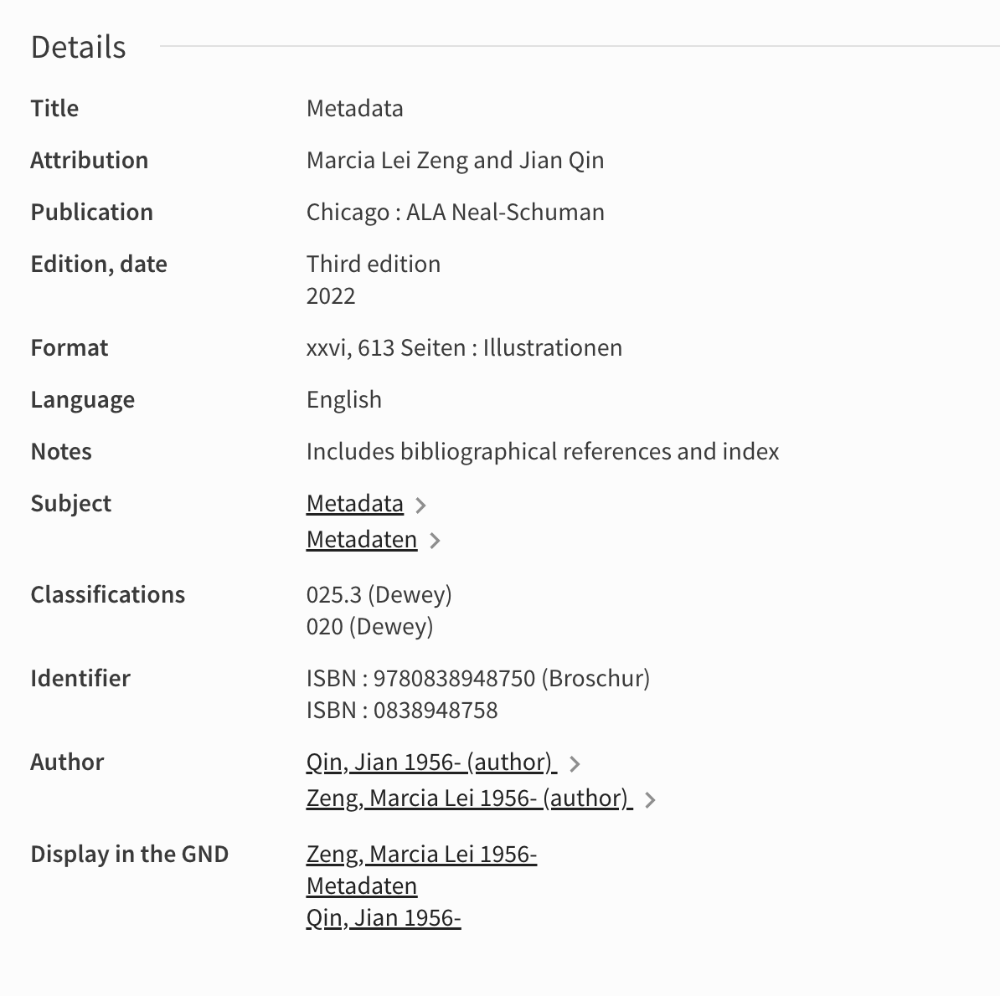
  <figcaption>
    <strong>Figure 3.1</strong>: Snapshot from the Swisscovery Platform Showing the Bibliographic Record of (Zeng &amp; Qin, 2022)
  </figcaption>
</figure>
<p>Metadata are central to the management and preservation of <abbr title="Cultural Heritage">CH</abbr> data, providing essential information to ensure that data can be properly organised, discovered and retrieved. For example, they facilitate the understanding and interpretation of data, enabling scholars and the public to access and use them effectively (Constantopoulos &amp; Dallas, 2008). Metadata also help to ensure the long-term preservation and accessibility of <abbr title="Cultural Heritage">CH</abbr> data [(Zeng &amp; Qin, 2022) pp. 490-491]. Providing metadata in a structured manner facilitates forms of aggregation, i.e. individuals and institutions being able to harvest and organise metadata from multiple sources or repositories into a centralised location (see Freire et al., 2017, 2021). In addition, the importance of metadata as a gateway to information is particularly compelling when the primary embodiment of a record is either unavailable or lost. In cases where resources, time constraints, sensitive content or strategic decisions prevent the digitisation of an item, metadata becomes the principal means of representation and access. If a physical record is lost or damaged, the metadata associated with that record acts as a proxy for the record.</p>
<p>(Riley, 2017) [p. 5] discusses the transformation of libraries over time. Initially, libraries moved from search terminals to the modern web-based resource discovery systems we use today. This shift was driven by advances in computerisation. Libraries’ basic approach to metadata is ‘bibliographic’, deeply rooted in their traditional expertise in describing books. This approach involves providing detailed descriptions of individual items so that users can easily locate them within the library’s collection.</p>
<p>On the other hand, archives use ‘finding aids’, which are descriptive inventories of their collections, coupled with historical context. These aids are essential for users to understand the material and to find groups of related items within the archive. The metadata used in archives allows for the contextualisation of materials, particularly papers of individuals or records of organisations, providing a richer understanding of the content.</p>
<p>Similarly, museums actively manage and track their acquisitions, exhibitions and loans through metadata. Museum curators use metadata to interpret collections for visitors, explaining the historical and social significance of artefacts and describing the relationships and connections between different objects. This helps to enhance the overall visitor experience and understanding of the artefacts on display or the digital resources on a particular website.</p>
<h4 id="subsec:types-functions" tabindex="-1">3.2.2 Types and Functions</h4>
<p><abbr title="Cultural Heritage Institution">CHI</abbr>s share common objectives and concerns related to information management, as highlighted by (Lim &amp; Li Liew, 2011) [pp. 484-485]. These goals typically include facilitating access to knowledge and ensuring the integrity of <abbr title="Cultural Heritage">CH</abbr> data. However, it is important to note that <abbr title="Cultural Heritage Institution">CHI</abbr>s also differ widely in how they deal with metadata. Different domains have unique approaches and standards for describing the materials they collect, preserve and disseminate, and even within a single domain there are significant differences.</p>
<p>There have been different attempts to categorise the metadata landscape. For instance, (Gilliland, 2016) identified the following five categories of metadata and their respective functions:</p>
<ul>
<li><strong>Administrative</strong>:   Metadata used in managing and administering collections and     information resources, such as acquisition and appraisal information     or documentation related to repatriation.</li>
<li><strong>Descriptive</strong>:   Metadata used to identify, authenticate, and describe collections     and related trusted information resources. Finding aids, cataloguing     records, annotations by practitioners and end users, as well as     metadata generated by or through a given <abbr title="Digital asset management">DAM</abbr> system can often be classified as     descriptive metadata.</li>
<li><strong>Preservation</strong>:   Metadata related to the preservation management of collections and     information resources. Common examples of preservation metadata are     documentation of physical condition of resources or of any actions     taken to preserve resources, whether physical restoration or data     migration.</li>
<li><strong>Technical</strong>:   Metadata related to how a system functions or metadata behaves.     Examples include software documentation and digitisation     information.</li>
<li><strong>Use</strong>:   Metadata related to the level and type of use of collections and     information resources, such as circulation records, search logs, or     rights metadata.</li>
</ul>
<p>Meanwhile (Riley, 2009), as illustrated in a comprehensive visualisation graph<sup class="footnote-ref"><a href="#fn29" id="fnref29">[29]</a></sup>, suggested seven functions, i.e. the role a standard play in the creation and storage and metadata, and seven purposes referring to the general type of metadata.</p>
<ul>
<li><strong>Functions</strong>:   Conceptual Model, Content Standard, Controlled Vocabulary,     Framework/Technology, Markup Language, Record Format, and Structure     Standard.</li>
<li><strong>Purposes</strong>:   Data, Descriptive Metadata, Metadata Wrappers, Preservation     Metadata, Rights Metadata, Structural Metadata, and Technical     Metadata.</li>
</ul>
<p>Almost a decade later, (Riley, 2017) [pp. 6-7] summarised metadata types into four groupings instead of the seven purposes previously mentioned. is removed from the list and technical, preservation and rights metadata are now grouped into a newly created administrative metadata category.</p>
<ol>
<li><strong>Descriptive metadata</strong>: For finding or understanding a resource</li>
<li><strong>Administrative metadata</strong>: Umbrella term referring to the information needed to manage a resource or that relates to its creation
<ul>
<li><strong>2.1 Technical metadata</strong>: For decoding and rendering files</li>
<li><strong>2.2 Preservation metadata</strong>: Long-term management of files</li>
<li><strong>2.3 Rights metadata</strong>: Intellectual property rights attached to content</li>
</ul>
</li>
<li><strong>Structural metadata</strong>: Relationships of parts of resources to one another</li>
<li><strong>Markup Language</strong>: Integrates metadata and flags for other structural or semantic features within content<sup class="footnote-ref"><a href="#fn30" id="fnref30">[30]</a></sup>.</li>
</ol>
<p>This classification of metadata types and function differs to the categories identified by (Gilliland, 2016) mostly due to the addition of structural metadata and markup language as their own categories [(Zeng &amp; Qin, 2022) p. 19]. <a href="#tab:riley-metadata-types">Table 3.1</a> lists the major types of metadata according to (Riley, 2017) [p 7] and include example properties and their primary uses.</p>
<figure id="tab:riley-metadata-types" style="text-align: center;">
  <figcaption><strong>Table 3.1</strong>: Types of Metadata According to (Riley, 2017) [p. 7]</figcaption>
  <table style="margin: 1em auto;">
    <thead>
      <tr>
        <th><strong>Metadata (Sub)type</strong></th>
        <th><strong>Example properties</strong></th>
        <th><strong>Primary uses</strong></th>
      </tr>
    </thead>
    <tbody>
      <tr>
        <td>1. Descriptive metadata</td>
        <td>Title, Author, Subject, Genre, Publication date</td>
        <td>Discovery, Display, Interoperability</td>
      </tr>
      <tr>
        <td>2.1 Technical metadata</td>
        <td>File type, File size, Creation date, Compression scheme</td>
        <td>Interoperability, Digital object management, Preservation</td>
      </tr>
      <tr>
        <td>2.2 Preservation metadata</td>
        <td>Checksum, Preservation event</td>
        <td>Interoperability, Digital object management, Preservation</td>
      </tr>
      <tr>
        <td>2.3 Rights metadata</td>
        <td>Copyright status, Licence terms, Rights holder</td>
        <td>Interoperability, Digital object management</td>
      </tr>
      <tr>
        <td>3. Structural metadata</td>
        <td>Sequence, Place in hierarchy</td>
        <td>Navigation</td>
      </tr>
      <tr>
        <td>4. Markup languages</td>
        <td>Paragraph, Heading, List, Name, Date</td>
        <td>Navigation, Interoperability</td>
      </tr>
    </tbody>
  </table>
</figure>
<p>Ultimately, metadata can also be leveraged to create more inclusive and diverse representations of <abbr title="Cultural Heritage">CH</abbr>. For instance, metadata can be used to document and promote underrepresented communities and their heritage, providing greater visibility and recognition. This approach aligns with the principles of decolonising <abbr title="Cultural Heritage">CH</abbr>, promoting equity and social justice by recognising and valuing diverse cultural perspectives, especially in the prevailing anglophone and Western-centric standpoint in <abbr title="Digital Humanities">DH</abbr> (Mahony, 2018; Philip, 2021).</p>
<p>Moreover, the distinction between data and metadata, as discussed in the work of (Alter et al., 2023), is not always distinct, leading to the concept of <em>‘semantic transposition’</em>. This complexity reflects in <abbr title="Cultural Heritage">CH</abbr> where what is considered metadata in one context might be primary data in another, underscoring the necessity for adaptable frameworks in data management. This understanding is crucial for fostering inclusive and diverse representations in <abbr title="Cultural Heritage">CH</abbr>, ensuring that all cultural narratives are appropriately documented and acknowledged.</p>
<h4 id="subsec:metadata-standards" tabindex="-1">3.2.3 Standards</h4>
<p>Metadata standards play a crucial role in ensuring that data are organised and consistent, facilitating mutual understanding between different stakeholders (Raemy, 2020). <abbr title="Cultural Heritage Institution">CHI</abbr>s such as <abbr title="Galleries, Libraries, Archives, and Museums">GLAM</abbr>s typically follow established conventions or standards when organising their resources. Current methods of cataloguing have historical roots dating back to the century, particularly with the development of cataloguing systems such as Antonio Panizzi’s at the British Museum and Charles Coffin Jewett’s efforts to mechanically duplicate entries at the library of the Smithsonian Institution [(Zeng &amp; Qin, 2022) pp. 14-15].</p>
<p>Unique metadata standards, rules and models have been established and maintained within specific sub-fields. In addition, certain standards for information resources have been endorsed by authoritative bodies (Greenberg, 2005), and some are used exclusively within specific domain communities (Hillmann et al., 2008). (Riley, 2017) [p. 5] underscores the predilection of <abbr title="Cultural Heritage">CH</abbr> metadata – whether these standards emanate from libraries, archives, or museums – toward accentuating descriptive attributes. The foundational <abbr title="Cultural Heritage">CH</abbr> metadata standards, primarily conceived to [(Zeng &amp; Qin, 2022) p. 11], manifest this thematic focus. Within the <abbr title="Cultural Heritage">CH</abbr> domain, metadata standards vary widely in scope, and a number of different standards have been developed to meet different needs and priorities<sup class="footnote-ref"><a href="#fn31" id="fnref31">[31]</a></sup> (Freire et al., 2018).</p>
<p>The following quoted passage sheds some light on the different approaches and levels of collaboration in metadata standardisation, namely among the library and museum sectors.</p>
<blockquote>
<p>Despite the striving for homogeneity, in practice, the production of metadata among  information  specialists  and  the  use  of  metadata  standards  is  already  marked by considerable diversity. This has come about for very pragmatic reasons. Different types of objects and collections require different types of metadata. The curatorial interest for particular information differs for example between images held  in  an  art  gallery  and  a  library,  as  does  the  information  specialists’ domain  expertise. Accordingly,  diversity  in  metadata  practice  seems  to  be  greatest  in  museums  as  they  are  the  institutions  that  govern  the  most  diverse  collections.  While the library sector has <em>‘systematically and cooperatively created and shared’</em> metadata standards since the 1960s, the museum sector, mostly handling images and objects, has been slower to establish such collaboration and consensus. (Dahlgren &amp; Hansson, 2020, p. 244)</p>
</blockquote>
<p>In this context, I want to focus on some metadata standards that have proved vital across libraries, archives, museums and galleries. These standards, which I will briefly describe, serve as the foundation for organising, describing, and enabling efficient access to vast and diverse collections. Of particular interest I will be taking a closer look at <abbr title="CIDOC Conceptual Reference Model">CIDOC-CRM</abbr> as it serves as the cornerstone of Linked Art, a fundamental <abbr title="Linked Open Usable Data">LOUD</abbr> standard.</p>
<h5 id="subsubsec:library-metadata" tabindex="-1">3.2.3.1 Library Metadata Standards</h5>
<p>In libraries, several metadata standards have played crucial roles in organising and accessing collections over the years. The most prevalent historical standard, <abbr title="Machine-Readable Cataloging">MARC</abbr><sup class="footnote-ref"><a href="#fn32" id="fnref32">[32]</a></sup>, was a pilot project from the 1960s funded by the <abbr title="Council on Library and Information Resources">CLIR</abbr> and led by the <abbr title="Library of Congress">LoC</abbr> to structure cataloguing data and distribute them through magnetic tapes (Avram, 1968, p. 3). The standard evolved into <abbr title="Machine-Readable Cataloging">MARC</abbr>21 in 1999 [(Zeng &amp; Qin, 2022) p. 418] – as exemplified by <a href="#lst:marc21">Code Snippet 3.1</a>, providing a structured format for bibliographic records and related information in machine-readable form. It uses codes, fields, and sub-fields to structure data. Another significant historical standard is the <abbr title="Anglo-American Cataloguing Rules">AACR</abbr>, published in 1967 and revised in 1978 that provides sets of rules for descriptive cataloguing of various types of information resources.</p>
<figure id="lst:marc21" style="text-align: center;">
  <figcaption>
    <strong>Code Snippet 3.1</strong>: MARC21 Record of (Zeng &amp; Qin, 2022) in the Swisscovery Platform
  </figcaption>
  <!-- Wrap the code block in a container that is displayed inline-block,
       centered as part of the figure, but left-aligned inside. -->
  <div style="display: inline-block; text-align: left;">
    <pre><code class="language-MARC21">
leader  01424nam a2200397 c 4500
001 991170746542405501
005 20220427104002.0
008 210818s2022    xxu      b    001 0 eng
010 ##$a  2021031231
020 ##$a9780838948750 $qBroschur
020 ##$a0838948758
035 ##$a(OCoLC)1264724191
040 ##$aDLC $bger $erda $cDLC $dCH-ZuSLS UZB ZB
042 ##$apcc
050 00$aZ666.7 $b.Z46 2022
082 00$a025.3 $223
082 74$a020 $223sdnb
100 1#$aZeng, Marcia Lei $d1956- $4aut $0(DE-588)136417035
245 10$aMetadata $cMarcia Lei Zeng and Jian Qin
250 ##$aThird edition
264 #1$aChicago $bALA Neal-Schuman $c2022
300 ##$axxvi, 613 Seiten $bIllustrationen
336 ##$btxt $2rdacontent
337 ##$bn $2rdamedia
338 ##$bnc $2rdacarrier
504 ##$aIncludes bibliographical references and index
650 #0$aMetadata
650 #7$aMetadata $2fast $0(OCoLC)fst01017519
650 #7$aMetadaten $2gnd $0(DE-588)4410512-5
776 08$iErscheint auch als $nOnline-Ausgabe $tMetadata $z9780838937969
776 08$iErscheint auch als $nOnline-Ausgabe $tMetadata $z9780838937952
700 1#$aQin, Jian $d1956- $4aut $0(DE-588)1056085541
856 42$3Inhaltsverzeichnis $qPDF $uhttps://urn.ub.unibe.ch/urn:ch:slsp:0838948758:ihv:pdf
900 ##$aOK_GND $xUZB/Z01/202203/klei
900 ##$aStoppsignal FRED $xUZB/Z01/202203
949 ##$ahttps://urn.ub.unibe.ch/urn:ch:slsp:0838948758:ihv:pdf
    </code></pre>
  </div>
</figure>
<p><abbr title="Anglo-American Cataloguing Rules">AACR</abbr> is no longer maintained and was replaced by <abbr title="Resource Description and Access">RDA</abbr><sup class="footnote-ref"><a href="#fn33" id="fnref33">[33]</a></sup> around 2010 to be a more adaptive standard to contemporary needs. <abbr title="Resource Description and Access">RDA</abbr>, while not a markup language like <abbr title="Machine-Readable Cataloging">MARC</abbr>, serves as a content standard that guides the description and discovery of resources, focusing on user needs and facilitating improved navigation of library collections. Its goal is to provide a flexible and extensible framework for the description of all types of resources, ensuring discoverability, accessibility, and relevance for users<sup class="footnote-ref"><a href="#fn34" id="fnref34">[34]</a></sup> (Sprochi, 2016, p. 130).</p>
<p>Libraries often leverage other standards to enrich their metadata practices. <abbr title="Metadata Object Description Schema">MODS</abbr><sup class="footnote-ref"><a href="#fn35" id="fnref35">[35]</a></sup>, introduced in 2002, offers a more flexible <abbr title="Extensible Markup Language">XML</abbr>-based schema for bibliographic description, allowing for better integration with other standards and systems. It was initially developed to carry [(Zeng &amp; Qin, 2022) p. 423]. <abbr title="Metadata Object Description Schema">MODS</abbr> provides a balance between human readability and machine processing, making it suitable for a wide range of resources and use cases (Guenther, 2003, p. 139). <abbr title="Metadata Encoding and Transmission Standard">METS</abbr><sup class="footnote-ref"><a href="#fn36" id="fnref36">[36]</a></sup>, on the other hand, is a standard for encoding descriptive, administrative, and structural metadata regarding objects within a digital library. <abbr title="Metadata Encoding and Transmission Standard">METS</abbr>, developed as an initiative of the <abbr title="Digital Library Federation">DLF</abbr>, provides a flexible and extensible framework for structuring metadata, allowing for the packaging of complex digital objects (Cantara, 2005, pp. 238–239). While <abbr title="Metadata Object Description Schema">MODS</abbr> is primarily concerned with bibliographic information, <abbr title="Metadata Encoding and Transmission Standard">METS</abbr> focuses on structuring metadata for digital objects, making it particularly useful for digital libraries and repositories.</p>
<p>A further important standard is <abbr title="Functional Requirements for Bibliographic Records">FRBR</abbr>, a conceptual framework for understanding and structuring bibliographic data and access points. Originally developed by <abbr title="International Federation of Library Associations and Institutions">IFLA</abbr> in 1997 as part of its functional requirements family of models, <abbr title="Functional Requirements for Bibliographic Records">FRBR</abbr> describes three main groups of entities, relationships, and attributes as illustrated by <a href="#fig:frbr">Figure 3.2</a>. The first group of entities are the foundation of the model which characterises four levels of abstraction: <abbr title="Work, Expression, Manifestation, Item">WEMI</abbr> (Denton, 2006, p. 231). <abbr title="Functional Requirements for Bibliographic Records">FRBR</abbr> has had a significant impact on the development of <abbr title="Resource Description and Access">RDA</abbr>, which is loosely aligned with the principles and structures defined by the conceptual framework, but as it isn’t a data model <em>per se</em>; it does not inform how to record bibliographic information in day-to-day practice and focus heavily on textual resources<sup class="footnote-ref"><a href="#fn37" id="fnref37">[37]</a></sup> (Sprochi, 2016, pp. 130–131). Furthermore, (Cossham, 2017) [p. 11] asserts that <abbr title="Functional Requirements for Bibliographic Records">FRBR</abbr> and <abbr title="Resource Description and Access">RDA</abbr>, <em>‘don’t align well with the ways that users use, understand, and experience library catalogues nor with the ways that they understand and experience the wider information environment’</em>.</p>
<figure id="fig:frbr" style="text-align: center;">
  <!-- The image itself -->
  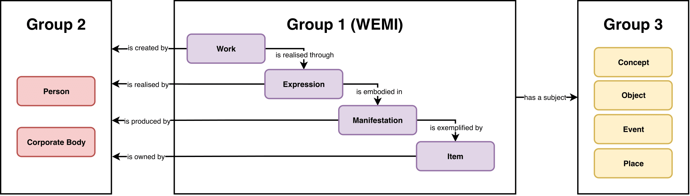
  <!-- Figure caption -->
  <figcaption>
    <strong>Figure 3.2:</strong> The FRBR Conceptual Framework.
    Adapted from (Zou et al., 2018) [p. 36]
  </figcaption>
</figure>
<p>A further important standard in the field of library science is the <abbr title="IFLA Library Reference Model">LRM</abbr>, which was introduced as a comprehensive conceptual framework. It provides a broad understanding of bibliographic data and user-centric design principles, aligning with <abbr title="Functional Requirements for Bibliographic Records">FRBR</abbr>. <abbr title="IFLA Library Reference Model">LRM</abbr> defines key entities, attributes, and relationships important for bibliographic searches, interpretation, and navigation – as shown in <a href="#fig:lrm-relationships">Figure 3.3</a>. It operates at the conceptual level and does not dictate data storage methods. Attributes in <abbr title="IFLA Library Reference Model">LRM</abbr> can be represented as literals or <abbr title="Uniform Resource Identifier">URI</abbr>s. The model is presented in a structured document format to support <abbr title="Linked Open Data">LOD</abbr> applications and reduce ambiguity. During its development, a parallel process created <abbr title="Functional Requirements for Bibliographic Records">FRBR</abbr>oo (see <a href="#subsubsec:museums-metadata">3.2.3.3</a>), a model that extends the original <abbr title="Functional Requirements for Bibliographic Records">FRBR</abbr> model by incorporating it into <abbr title="CIDOC Conceptual Reference Model">CIDOC-CRM</abbr>. <abbr title="Functional Requirements for Bibliographic Records">FRBR</abbr>oo focuses on <abbr title="Cultural Heritage">CH</abbr> data and is more detailed than <abbr title="IFLA Library Reference Model">LRM</abbr>, which is designed specifically for library data and follows a high-level, user-centric approach (Riva et al., 2017, pp. 9–13). The <abbr title="IFLA Library Reference Model">LRM</abbr> model, known as <abbr title="IFLA Library Reference Model">LRM</abbr>er<sup class="footnote-ref"><a href="#fn38" id="fnref38">[38]</a></sup>, was released in 2020 by <abbr title="International Federation of Library Associations and Institutions">IFLA</abbr> [(Zeng &amp; Qin, 2022) p. 163].</p>
<figure id="fig:lrm-relationships" style="text-align: center;">
  
  <figcaption>
    <strong>Figure 3.3:</strong> Overview of Relationships in LRM 
    (Riva et al., 2017, p. 86)
  </figcaption>
</figure>
<p><abbr title="Bibliographic Framework">BibFrame</abbr><sup class="footnote-ref"><a href="#fn39" id="fnref39">[39]</a></sup> is another metadata standard in the library domain. It was initiated around 2011 by the <abbr title="Library of Congress">LoC</abbr> to be a successor of <abbr title="Machine-Readable Cataloging">MARC</abbr>, which had become obsolete (see Tennant, 2002) as well as being invisible to web crawlers and search engines preventing adequate discoverability of bibliographic resources (Sprochi, 2016, p. 132). <abbr title="Bibliographic Framework">BibFrame</abbr> is a loosely <abbr title="Resource Description Framework">RDF</abbr>-based model (Sanderson, 2015), intending to improve the interoperability and discoverability of library resources. While the <abbr title="Bibliographic Framework">BibFrame</abbr> model may not perfectly correspond with the <abbr title="Work, Expression, Manifestation, Item">WEMI</abbr> entities outlined in <abbr title="Functional Requirements for Bibliographic Records">FRBR</abbr>, it is possible to effectively link <abbr title="Bibliographic Framework">BibFrame</abbr> resources to <abbr title="Functional Requirements for Bibliographic Records">FRBR</abbr> entities, ensuring their compatibility (Sprochi, 2016, p. 133). <abbr title="Bibliographic Framework">BibFrame</abbr> aims to transition from <abbr title="Machine-Readable Cataloging">MARC</abbr> by providing a more web-friendly framework, focusing on the relationships between entities, improving data sharing, and accommodating the digital environment. Conversely, (Edmunds, 2023) argues that <abbr title="Bibliographic Framework">BibFrame</abbr> is unaffordable and leads to elitism within libraries, with the main beneficiaries being well-funded institutions, particularly in North America, while placing a financial burden on others. This approach, endorsed by bodies such as the <abbr title="Library of Congress">LoC</abbr>, is criticised for its high cost, impracticality, inequity and limited benefits for cataloguers, libraries, vendors and the public they serve. In addition, the author highlights <abbr title="Bibliographic Framework">BibFrame</abbr>'s lack of user friendliness, regardless of the intended users, and criticises the notion of adopting Linked Data for its own sake without substantial practical benefits.</p>
<h5 id="subsubsec:archives-metadata" tabindex="-1">3.2.3.2 Archival Metadata Standards</h5>
<p>For archives, metadata standards like <abbr title="Encoded Archival Description">EAD</abbr><sup class="footnote-ref"><a href="#fn40" id="fnref40">[40]</a></sup> and <abbr title="General International Standard Archival Description">ISAD(G)</abbr><sup class="footnote-ref"><a href="#fn41" id="fnref41">[41]</a></sup> have been pivotal. <abbr title="Encoded Archival Description">EAD</abbr>, introduced in the mid-1990s – it originated in 1993 and the first version of <abbr title="Encoded Archival Description">EAD</abbr> was released in 1998, provides a hierarchical structure for representing information about archival collections, offering comprehensive descriptions that aid researchers, archivists, and institutions in managing and providing access to archival records. Its goal is to create a standard for encoding finding aids to improve accessibility and understanding of archival collections (Pitti, 1999, pp. 61–62). On the other hand, <abbr title="General International Standard Archival Description">ISAD(G)</abbr>, released in its first version in 1994 by <abbr title="International Council on Archives">ICA</abbr>, offers a more general international standard for archival description, providing a framework for describing all types of archival materials, including fonds, sub-fonds, series, files, and items (Shepherd &amp; Smith, 2000, p. 57). <abbr title="General International Standard Archival Description">ISAD(G)</abbr> aims to establish consistent and standardised archival description practices on a global scale, facilitating the sharing and exchange of archival information.</p>
<p><abbr title="PREservation Metadata: Implementation Strategies">PREMIS</abbr><sup class="footnote-ref"><a href="#fn42" id="fnref42">[42]</a></sup>, is another metadata standard that was initially released in 2005 – version 3.0 is the latest specification, published in 2016 – and focuses on the preservation of digital objects, consisting of four interrelated entities: <code>Object</code>, <code>Event</code>, <code>Agent</code>, and <code>Rights</code> (Caplan &amp; Guenther, 2005, p. 111). The main objective of <abbr title="PREservation Metadata: Implementation Strategies">PREMIS</abbr> is to help institutions ensure the long-term accessibility of data by capturing key details about their creation, format, provenance, and preservation events. It is seen as an elaboration of <abbr title="Open Archival Information System">OAIS</abbr>, which categorises information required for preservation in several functional entities and types of information package (see Lee, 2009, pp. 425–426) – as illustrated by <a href="#fig:oais">Figure 3.4</a>, expressed through the mapping of preservation metadata onto the conceptual model [(Zeng &amp; Qin, 2022) pp. 493-494].</p>
<figure id="fig:oais" style="text-align: center;">
  
  <figcaption>
    <strong>Figure 3.4:</strong> OAIS Functional Model Diagram by (Mathieualexhache, 2021)
  </figcaption>
</figure>
<p>The latest development in metadata standards for archives is the creation of <abbr title="Records in Context">RiC</abbr>, which has been developed since 2012 by <abbr title="International Council on Archives">ICA</abbr> (Clavaud &amp; Wildi, 2021, pp. 79–80). <abbr title="Records in Context">RiC</abbr> is structured into four complementary parts (ICA Expert Group on Archival Description, 2023, p. 1) intended to cover and replace existing archival standards such as <abbr title="General International Standard Archival Description">ISAD(G)</abbr>:</p>
<ul>
<li><strong><abbr title="Records in Context">RiC</abbr> Foundations of Archival Description</strong>:   A brief description of the foundational principles and purposes of     archival description.</li>
<li><strong><abbr title="Records in Context">RiC</abbr> Conceptual Model</strong>:   A high-level framework for archival description<sup class="footnote-ref"><a href="#fn43" id="fnref43">[43]</a></sup>, as shown in <a href="#fig:ric-cm">Figure 3.5</a>.</li>
<li><strong><abbr title="Records in Context">RiC</abbr>-O</strong>:   The ontology<sup class="footnote-ref"><a href="#fn44" id="fnref44">[44]</a></sup>, which embodies a specific implementation of the     conceptual model. It is formally expressed in     <abbr title="Web Ontology Language">OWL</abbr> to make     archival description available using <abbr title="Linked Open Data">LOD</abbr> techniques – which facilitating     extensions (see Mikhaylova &amp; Metilli, 2023) – and adheres to a     conceptual vocabulary specific to archival description. It provides     the ability to navigate and interpret complex archival holdings and     foster meaningful research and discovery. The ontology includes     seven main groups of entities: <code>Record</code>, <code>Agent</code>, <code>Rule</code>, <code>Event</code>,     <code>Date</code>, <code>Place</code>, and <code>Instantiation</code>.</li>
<li><strong><abbr title="Records in Context">RiC</abbr> Application Guidelines</strong>:   A part in development at the time of writing which will provide     practitioners and software developers with guidance and examples for     implementing the conceptual model and the ontology in records and     archival management systems.</li>
</ul>
<figure id="fig:ric-cm" style="text-align: center;">
  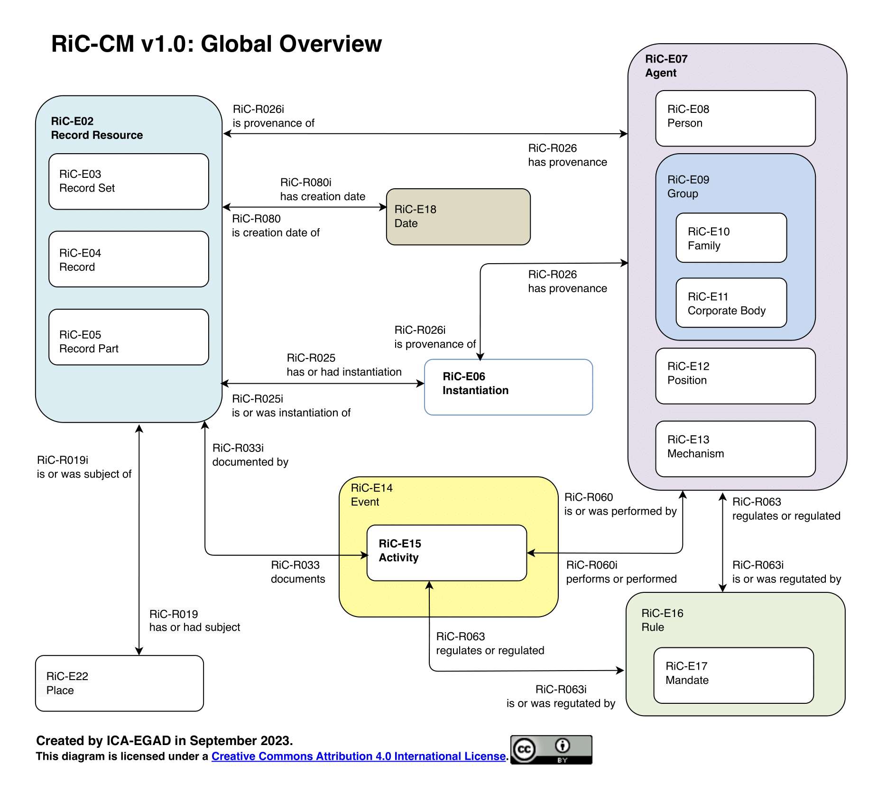
  <figcaption>
    <strong>Figure 3.5:</strong> Global Overview of the Core Entities Defined by the RiC Conceptual Model. 
    Slightly Adapted from <a href="https://github.com/ICA-EGAD/RiC-O">https://github.com/ICA-EGAD/RiC-O</a>
  </figcaption>
</figure>
<h5 id="subsubsec:museums-metadata" tabindex="-1">3.2.3.3 Museum and Gallery Metadata Standards</h5>
<p>In the museum and gallery domain, various metadata standards and conceptual models have significantly contributed to the management, organisation, and accessibility of <abbr title="Cultural Heritage">CH</abbr> objects and artworks. Notable among these are <abbr title="Categories for the Description of Works of Art">CDWA</abbr>, <abbr title="Cataloging Cultural Objects">CCO</abbr>, <abbr title="Lightweight Information Describing Objects">LIDO</abbr>, <abbr title="CIDOC Conceptual Reference Model">CIDOC-CRM</abbr>, as well as Linked Art.</p>
<p><abbr title="Categories for the Description of Works of Art">CDWA</abbr><sup class="footnote-ref"><a href="#fn45" id="fnref45">[45]</a></sup>, developed in the mid-1990s and maintained by the Getty Vocabulary Program, and <abbr title="Cataloging Cultural Objects">CCO</abbr><sup class="footnote-ref"><a href="#fn46" id="fnref46">[46]</a></sup> created by the <abbr title="Visual Resource Association">VRA</abbr><sup class="footnote-ref"><a href="#fn47" id="fnref47">[47]</a></sup>, introduced in the early 2000s, primarily focus on describing art and cultural artefacts, providing a framework for recording essential details like artist, title, medium, date, and provenance. <abbr title="Categories for the Description of Works of Art">CDWA</abbr> is a comprehensive set of guidelines for cataloguing and describing various cultural objects, including artworks, architectural elements, material culture items, collections of works, and associated images. While not a data model itself, it offers a conceptual framework for designing data models and databases, as well as for information retrieval. It then evolved into <abbr title="Categories for the Description of Works of Art">CDWA</abbr> Lite, an <abbr title="Extensible Markup Language">XML</abbr> schema for data harvesting purposes (Baca &amp; Harpring, 2017, pp. 1–2).</p>
<p><abbr title="Cataloging Cultural Objects">CCO</abbr> comprises of both rules and examples of the <abbr title="Categories for the Description of Works of Art">CDWA</abbr> categories and the <abbr title="Visual Resource Association">VRA</abbr> Core 4.0 for describing, documenting, and cataloguing cultural works and their visual surrogates<sup class="footnote-ref"><a href="#fn48" id="fnref48">[48]</a></sup> (Coburn et al., 2010, pp. 17–18). Both <abbr title="Cataloging Cultural Objects">CCO</abbr> and <abbr title="Categories for the Description of Works of Art">CDWA</abbr> are standards that the <abbr title="ICOM International Committee for Documentation">CIDOC</abbr><sup class="footnote-ref"><a href="#fn49" id="fnref49">[49]</a></sup> recommends and supports for museum documentation.</p>
<p><abbr title="Lightweight Information Describing Objects">LIDO</abbr><sup class="footnote-ref"><a href="#fn50" id="fnref50">[50]</a></sup> is a <abbr title="ICOM International Committee for Documentation">CIDOC</abbr> standard introduced in the early 2000s which offers a lightweight <abbr title="Extensible Markup Language">XML</abbr>-based serialisation used for describing museum-related information – as shown in <a href="#lst:lido-xml">Code Snippet 3.2</a>. It provides a format for the interchange of data about art and <abbr title="Cultural Heritage">CH</abbr> objects, complementing <abbr title="Categories for the Description of Works of Art">CDWA</abbr> and <abbr title="Cataloging Cultural Objects">CCO</abbr> as it integrates and extends <abbr title="Categories for the Description of Works of Art">CDWA</abbr> Lite with elements of <abbr title="CIDOC Conceptual Reference Model">CIDOC-CRM</abbr> (Stein &amp; Balandi, 2019, p. 1025). Ultimately, <abbr title="Lightweight Information Describing Objects">LIDO</abbr>'s goal is to enhance interoperability, accessibility, and the sharing of collection information, enabling institutions to connect and showcase their collections in diverse contexts (Coburn et al., 2010, p. 3). <abbr title="Lightweight Information Describing Objects">LIDO</abbr> is also a <abbr title="ICOM International Committee for Documentation">CIDOC</abbr> Working Group, which are created to tackle particular issues or areas of interest<sup class="footnote-ref"><a href="#fn51" id="fnref51">[51]</a></sup>.</p>
<figure id="lst:lido-xml" style="text-align: center;">
  <figcaption>
    <strong>Code 3.2:</strong> Example of a LIDO Object in XML from (Lindenthal et al., 2023)
  </figcaption>
  <!-- Wrap the code block in a container that is centered overall,
       but text is left-aligned inside. -->
  <div style="display: inline-block; text-align: left;">
    <pre><code class="language-xml">
&lt;lido:lido&gt;
    &lt;lido:lidoRecID
        lido:source="ld.zdb-services.de/resource/organisations/DE-Mb112"
        lido:type="http://terminology.lido-schema.org/lido00099"&gt;
        ld.zdb-services.de/resource/organisations/DE-Mb112/lido/obj/00076417
    &lt;/lido:lidoRecID&gt;
    &lt;lido:descriptiveMetadata xml:lang="en"&gt;
        &lt;lido:objectClassificationWrap&gt;
            &lt;lido:objectWorkTypeWrap&gt;
                &lt;lido:objectWorkType&gt;
                    &lt;skos:Concept
                        rdf:about="http://vocab.getty.edu/aat/300033799"&gt;
                        &lt;skos:prefLabel
                            xml:lang="en"&gt;
                            oil paintings (visual works)
                        &lt;/skos:prefLabel&gt;
                    &lt;/skos:Concept&gt;
                &lt;/lido:objectWorkType&gt;
            &lt;/lido:objectWorkTypeWrap&gt;
        &lt;/lido:objectClassificationWrap&gt;
        &lt;lido:objectIdentificationWrap&gt;
            &lt;lido:titleWrap&gt;
                &lt;lido:titleSet&gt;
                    &lt;lido:appellationValue
                        lido:pref="http://terminology.lido-schema.org/lido00169"
                        xml:lang="en"&gt;
                        Mona Lisa
                    &lt;/lido:appellationValue&gt;
                &lt;/lido:titleSet&gt;
            &lt;/lido:titleWrap&gt;
        &lt;/lido:objectIdentificationWrap&gt;
    &lt;/lido:descriptiveMetadata&gt;
&lt;/lido:lido&gt;
    </code></pre>
  </div>
</figure>
<p><abbr title="CIDOC Conceptual Reference Model">CIDOC-CRM</abbr><sup class="footnote-ref"><a href="#fn52" id="fnref52">[52]</a></sup>, developed since 1996 by the <abbr title="ICOM International Committee for Documentation">CIDOC</abbr> and more specifically maintained by the <abbr title="CIDOC-CRM Special Interest Group">CRM-SIG</abbr> — which convenes quarterly<sup class="footnote-ref"><a href="#fn53" id="fnref53">[53]</a></sup>, is a formal and top-level ontology that offers a comprehensive conceptual framework for describing <abbr title="Cultural Heritage">CH</abbr> resources, allowing for a deep understanding of relationships between different entities, events, and concepts for museums (Doerr, 2003, pp. 75–76). It aims to provide a common semantic framework for information integration, supporting robust knowledge representation and fostering collaboration and interoperability within the <abbr title="Cultural Heritage">CH</abbr> sector as it can also mediate different resources from libraries and archives. The latest stable version of the conceptual model is version 7.1.2<sup class="footnote-ref"><a href="#fn54" id="fnref54">[54]</a></sup>, published in June 2022, and comprises of 81 classes and 160 properties<sup class="footnote-ref"><a href="#fn55" id="fnref55">[55]</a></sup> (see Bekiari et al., 2021).</p>
<p>Within the base ontology of <abbr title="CIDOC Conceptual Reference Model">CIDOC-CRM</abbr> – or CRMBase – and despite the emergence of new developments and gradual changes, there is a fundamental and stable core that can be succinctly outlined. This fundamental structure acts as a basic orientation for understanding the way in which data is structured within <abbr title="CIDOC Conceptual Reference Model">CIDOC-CRM</abbr>. Examining the hierarchical structure of CIDOC-CRM, one can identify the main top-level branches, namely:</p>
<ul>
<li><code>E18 Physical Thing</code>:   This class comprises all persistent physical items with a relatively     stable form, human-made or natural.</li>
<li><code>E28 Conceptual Object</code>:   This class comprises non-material products of our minds and other     human produced data that have become objects of a discourse about     their identity, circumstances of creation or historical implication.     The production of such information may have been supported by the     use of technical devices such as cameras or computers.</li>
<li><code>E39 Actor</code>:   This class comprises people, either individually or in groups, who     have the potential to perform intentional actions of kinds for which     someone may be held responsible.</li>
<li><code>E53 Place</code>:   This class comprises extents in the natural space we live in, in     particular on the surface of the Earth, in the pure sense of     physics: independent from temporal phenomena and matter. They may     serve describing the physical location of things or phenomena or     other areas of interest.</li>
<li><code>E2 Temporal Entity</code>:   This class comprises all phenomena, such as the instances of     <code>E4 Periods</code> and <code>E5 Events</code>, which happen over a limited extent in     time.</li>
</ul>
<p>Complemented by entities tailored for the documentation of <code>E41 Appellation</code> and <code>E55 Type</code>, the structure – as shown in <a href="#fig:CRMbase">Figure 3.6</a> – provides a potent set of means to capture a broad range of general-level <abbr title="Cultural Heritage">CH</abbr> reasoning in a holistic manner [(Bruseker et al., 2017) pp. 111-112].</p>
<figure id="fig:CRMbase" style="text-align: center;">
  
  <figcaption>
    <strong>Figure 3.6:</strong> CIDOC-CRM Top-Level Categories by (Bruseker et al., 2017) [p. 112]
  </figcaption>
</figure>
<p>CRMBase, is supplemented by a series of extensions – sometimes referred to as the <abbr title="CIDOC Conceptual Reference Model">CIDOC-CRM</abbr> family of models – intended to support various types of specialised research questions and documentation, such as bibliographic records or geographical data. These compatible models<sup class="footnote-ref"><a href="#fn56" id="fnref56">[56]</a></sup>, ordered alphabetically, include both works in progress and models to be reviewed by <abbr title="CIDOC-CRM Special Interest Group">CRM-SIG</abbr><sup class="footnote-ref"><a href="#fn57" id="fnref57">[57]</a></sup>. They comprise as follows:</p>
<ul>
<li>CRMact<sup class="footnote-ref"><a href="#fn58" id="fnref58">[58]</a></sup>:    An extension that defines classes and properties for     integrating documentation records about plans for future activities     and future events.</li>
<li>CRMarchaeo<sup class="footnote-ref"><a href="#fn59" id="fnref59">[59]</a></sup>:    An extension of <abbr title="CIDOC Conceptual Reference Model">CIDOC-CRM</abbr> created to support the archaeological     excavation process and all the various entities and activities     related to it.</li>
<li>CRMba<sup class="footnote-ref"><a href="#fn60" id="fnref60">[60]</a></sup>:    An ontology for documenting archaeological buildings. Its     primary purpose is to facilitate the recording of evidence and     material changes in archaeological structures.</li>
<li>CRMdig<sup class="footnote-ref"><a href="#fn61" id="fnref61">[61]</a></sup>:    An ontology to encode metadata about the steps and methods of     production (‘provenance’) of digitisation products and synthetic digital     representations such as 2D, <abbr title="three-dimensional">3D</abbr> or even animated models created by     various technologies.</li>
<li>CRMgeo<sup class="footnote-ref"><a href="#fn62" id="fnref62">[62]</a></sup>:    An ontology intended to be used as a global schema for     integrating spatio-temporal properties of temporal entities and     persistent items. Its primary purpose is to provide a schema     consistent with the <abbr title="CIDOC Conceptual Reference Model">CIDOC-CRM</abbr> to integrate geoinformation using the     conceptualisations, formal definitions, encoding standards and     topological relations.</li>
<li>CRMinf<sup class="footnote-ref"><a href="#fn63" id="fnref63">[63]</a></sup>:    An extension of <abbr title="CIDOC Conceptual Reference Model">CIDOC-CRM</abbr> that facilitates argumentation and     inference in descriptive and historical fields. It serves as a     universal schema for merging metadata related to argumentation and     inference, primarily focusing on these disciplines.</li>
<li>CRMsci<sup class="footnote-ref"><a href="#fn64" id="fnref64">[64]</a></sup>:    The Scientific Observation Model is an ontology that extends     <abbr title="CIDOC Conceptual Reference Model">CIDOC-CRM</abbr>     for scientific observation, distinguishing the process from results     and providing a formal ontology for scientific data integration and     research modelling.</li>
<li>CRMsoc<sup class="footnote-ref"><a href="#fn65" id="fnref65">[65]</a></sup>:    An ontology for integrating data about social phenomena and     constructs that are of interest in the humanities and social     sciences based on analysis of documentary evidence.</li>
<li>CRMtex<sup class="footnote-ref"><a href="#fn66" id="fnref66">[66]</a></sup>:    An extension of <abbr title="CIDOC Conceptual Reference Model">CIDOC-CRM</abbr> created to support the study of     ancient documents by identifying relevant textual entities and by     modelling the scientific process related with the investigation of     ancient texts and their features.</li>
<li><abbr title="Functional Requirements for Bibliographic Records">FRBR</abbr>oo<sup class="footnote-ref"><a href="#fn67" id="fnref67">[67]</a></sup>:    An ontology intended to capture and represent the underling     semantics of bibliographic information which interprets the     conceptualisations of the <abbr title="Functional Requirements for Bibliographic Records">FRBR</abbr> framework.</li>
<li>PRESSoo<sup class="footnote-ref"><a href="#fn68" id="fnref68">[68]</a></sup>:    An ontology intended to capture and reresent the underling     semantics of bibliographic information about continuing resources,     and more specifically about periodicals (journals, newspapers,     magazines, etc.). PRESSoo is also an extension of     <abbr title="Functional Requirements for Bibliographic Records">FRBR</abbr>oo.</li>
</ul>
<p><a href="#fig:CRMfamily">Figure 3.7</a> shows CRMbase and eight of the extensions previously outlined in a pyramid shape, where the lower you go in the pyramid, the more specialised the concepts.</p>
<figure id="fig:CRMfamily" style="text-align: center;">
  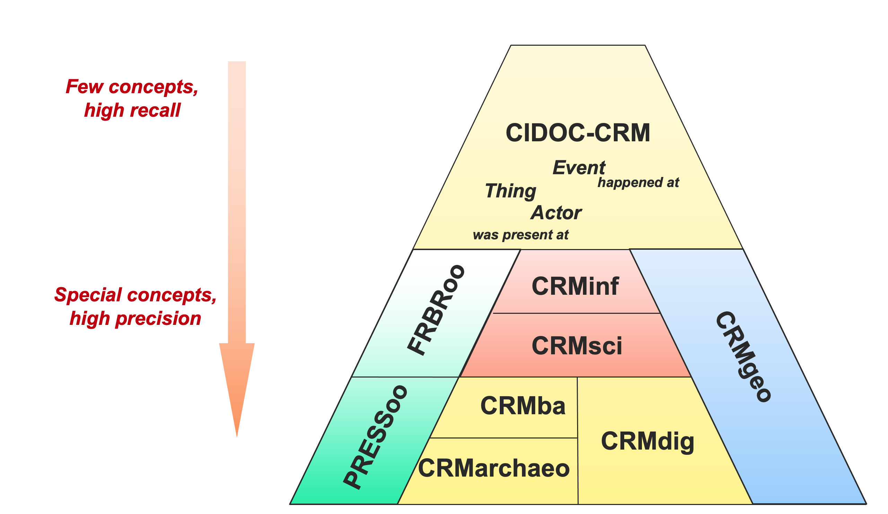
  <figcaption>
    <strong>Figure 3.7:</strong> CIDOC-CRM Family of Models. Diagram done and provided by 
    Maria Theodoridou (Institute of Computer Science, FORTH)
  </figcaption>
</figure>
<p>Linked Art<sup class="footnote-ref"><a href="#fn69" id="fnref69">[69]</a></sup>, a recent addition to this landscape, is a community-driven initiative and a metadata application profile that has been in existence since the end of 2016 (Raemy, 2022, pp. 136–137). This community – recognised as a <abbr title="ICOM International Committee for Documentation">CIDOC</abbr> Working Group – has created a common Linked Data model based on <abbr title="CIDOC Conceptual Reference Model">CIDOC-CRM</abbr> for describing artworks, their relationships, and the activities around them (see <a href="#subsec:linked-art">3.5.5</a>).</p>
<h5 id="cross-domain-metadata" tabindex="-1">3.2.3.4 Cross-domain Metadata Standards</h5>
<p>There are a few cross-domain standards that have been used to describe <abbr title="Cultural Heritage">CH</abbr> resources. For instance, the Dublin Core Elements, containing the original core sets of fifteen basic elements, and Dublin Core Metadata Terms<sup class="footnote-ref"><a href="#fn70" id="fnref70">[70]</a></sup>, its extension, are widely used metadata standards for describing <abbr title="Cultural Heritage">CH</abbr> resources. It provides metadata properties and classes that are applicable to a wide range of resources (Weibel &amp; Koch, 2000). Another good example is the <abbr title="Europeana Data Model">EDM</abbr> that has been specified so that national, regional and thematic aggregators in Europe can deliver resources of content providers to Europeana (see Charles &amp; Isaac, 2015; Freire &amp; Isaac, 2019).</p>
<p>Despite the presence of cross-domain standards and efforts to map between standards, whether from one version to another or across different domains, reconciling metadata from various sources remains a significant challenge in the <abbr title="Cultural Heritage">CH</abbr> sector. Institutions may collect metadata in different ways, using different standards and schemas, making it difficult to merge and compare metadata from different sources. Additionally, metadata may be incomplete, inconsistent, or contain errors, further complicating data reconciliation. To address these challenges, standardised, interoperable metadata are necessary to enable data sharing and reuse. While the use of different metadata standards can present challenges for data reconciliation, the adoption of standardised, interoperable metadata can facilitate data sharing and reuse, promoting the long-term preservation and accessibility of <abbr title="Cultural Heritage">CH</abbr> resources. Controlled vocabularies – included in what (Zeng &amp; Qin, 2022) [pp. 24-25] called <em>‘standards for data value’</em> – such as those maintained by the Getty Research Institute<sup class="footnote-ref"><a href="#fn71" id="fnref71">[71]</a></sup>: the <abbr title="Art &amp; Architecture Thesaurus">AAT</abbr>, the <abbr title="Thesaurus of Geographic Names">TGN</abbr>, and the <abbr title="Union List of Artist Names">ULAN</abbr>, as well as various kinds of <abbr title="Knowledge Organisation Systems">KOS</abbr> (see <a href="#subsec:kos">3.2.4</a>). These vocabularies provide a common language for describing <abbr title="Cultural Heritage">CH</abbr> objects and can improve the interoperability of metadata across different institutions and communities.</p>
<p>Alongside metadata reconciliation comes also the question of aggregation. Apart from <abbr title="Lightweight Information Describing Objects">LIDO</abbr> in museums, the general and current operating model for aggregating <abbr title="Cultural Heritage">CH</abbr> (meta)data is still the <abbr title="Open Archives Initiative Protocol for Metadata Harvesting">OAI-PMH</abbr> (see Raemy, 2020), which is an <abbr title="Extensible Markup Language">XML</abbr>-based standard that was initially specified in 1999 and updated in 2002 (Lagoze et al., 2002). Alas, <abbr title="Open Archives Initiative Protocol for Metadata Harvesting">OAI-PMH</abbr> does not align to contemporary needs (Van de Sompel &amp; Nelson, 2015), and there are now some alternative and web-based technologies for harvesting resources that are slowly being leveraged such as <abbr title="Activity Streams">AS</abbr> (Snell &amp; Prodromou, 2017), a <abbr title="World Wide Web Consortium">W3C</abbr> syntax and vocabulary for representing activities and events in social media and other web application. It can also be easily extended and used in different contexts, such as it is the case with the <abbr title="International Image Interoperability Framework">IIIF</abbr> Change Discovery <abbr title="Application Programming Interface">API</abbr> (see <a href="#subsubsec:iiif-specs">3.5.3.3</a>) or with ActivityPub (Lemmer-Webber &amp; Tallon, 2018), a decentralised <abbr title="World Wide Web Consortium">W3C</abbr> protocol being leveraged by Mastodon<sup class="footnote-ref"><a href="#fn72" id="fnref72">[72]</a></sup>, a federated and open-source social network.</p>
<p>Overall, the evolution of metadata standards in the <abbr title="Cultural Heritage">CH</abbr> domain paves the way for a more interconnected and accessible digital environment, thereby providing better access to disparate collections and facilitating cross-domain reconciliation. This transformation is complemented by a growing emphasis on web-based metadata aggregation technologies that are more suited to today’s needs.</p>
<h4 id="subsec:kos" tabindex="-1">3.2.4 Knowledge Organisation Systems</h4>
<p><abbr title="Knowledge Organisation Systems">KOS</abbr>, also known as concept systems or concept schemes, encompass a wide range of instruments in the area of knowledge organisation. They are distinguished by their specific structures and functions (Mazzocchi, 2018, p. 54). <abbr title="Knowledge Organisation Systems">KOS</abbr> include authority files, classification schemes, thesauri, topic maps, ontologies, and other related structures. Despite their differences in nature, scope and application, all share a common goal: to facilitate the structured organisation of knowledge and classification of information. According to (Zeng &amp; Qin, 2022) [p. 284], <em>‘<abbr title="Knowledge Organisation Systems">KOS</abbr> have a more important function: to model the underlying semantic structure of a domain and to provide semantics, navigation, and translation through labels, definitions, typing relationships, and properties for concepts’</em>. This overarching intent underpins the practice of information management and retrieval.</p>
<p>The term <abbr title="Knowledge Organisation Systems">KOS</abbr> <em>‘became even more popular after the encoding standard Simple Knowledge Organization System (<abbr title="Simple Knowledge Organization System">SKOS</abbr>) was recommended by W3C’</em>, although the use of such systems can be traced back over 100 years, whereas others have been created in the advent of the web [(Zeng &amp; Qin, 2022) p. 188]. According to (Hill et al., 2002) [pp. 46-47, citing (Hodge, 2000)], <abbr title="Knowledge Organisation Systems">KOS</abbr> can be divided into four main groups: term lists, metadata-like models, classification and categorisation, as well as relationship models.</p>
<p>Term lists encompass authority files, dictionaries, and glossaries, serving as controlled sources for managing terms, definitions, and variant names within a knowledge organisation framework. Metadata-like models encompass directories and gazetteers, offering lists of names and associated contact information as well as geospatial dictionaries for named places, with can be extended for representing events and time periods. In the classification and categorisation domain, you find categorisation schemes and classification schemes that organise content, subject headings that represent controlled terms for collection items, and taxonomies that group items based on specific characteristics. Finally, relationship models feature ontologies, semantic networks, and thesauri, each capturing complex relationships between concepts and terms [(Hill et al., 2002); (Zeng, 2008)]. <a href="#fig:types-kos">Figure 3.8</a> represents an overview of the structure and functions of these four main groups, showcasing as well the subcategories of <abbr title="Knowledge Organisation Systems">KOS</abbr> previously mentioned. In this figure, the <code>x</code> characters indicate the extent to which each type of KOS embodies five key functions identified by (Zeng, 2008), such as eliminating ambiguity or controlling synonyms.</p>
<p>In this subsection, I will explore four subcategories of <abbr title="Knowledge Organisation Systems">KOS</abbr>, each representing a continuum from a more linear to a more structured network. These include folksonomy, taxonomy, thesaurus, and ontology. These <abbr title="Knowledge Organisation Systems">KOS</abbr> have been selected due to their significant impact on the organisation and interlinking of data within the contexts of <abbr title="Cultural Heritage Institution">CHI</abbr> practices and <abbr title="Linked Open Data">LOD</abbr>. Furthermore, the intent of these systems is to help bridge the gap between human understanding and machine processing.</p>
<figure id="fig:types-kos" style="text-align: center;">
  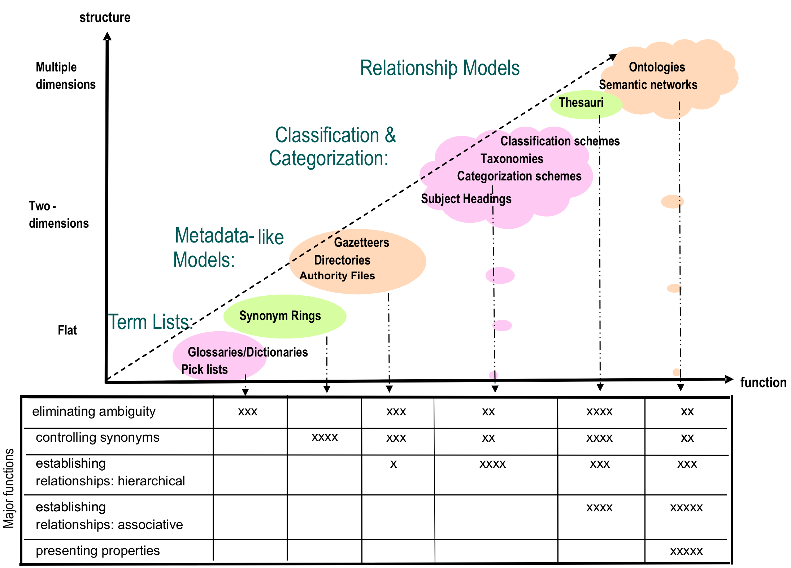
  <figcaption>
    <strong>Figure 3.8:</strong> Overview of the Structures and Functions of KOS
    [(Zeng, 2008) p. 161]
  </figcaption>
</figure>
<h5 id="subsubsec:foklsonomy" tabindex="-1">3.2.4.1 Folksonomy</h5>
<p>Positioned at one end of the organisational spectrum, folksonomies, also known as community tagging or social bookmarking, are characterised by their user-generated nature. These systems rely on individual users’ tagging of content with keywords or tags that reflect their personal perspectives and preferences. Folksonomies as integration or reconciliation is often hard to achieve [(Zeng &amp; Qin, 2022) p. 401]. However, they do provide a wealth of source material for studying social semantics [(Zeng &amp; Qin, 2022) p. 403] and can be done in parallel to more structured <abbr title="Knowledge Organisation Systems">KOS</abbr>.</p>
<h5 id="subsubsec:taxonomy" tabindex="-1">3.2.4.2 Taxonomy</h5>
<p>Moving towards the centre of the spectrum, taxonomies present a more structured approach to knowledge organisation. [(Zeng, 2008) p. 169].</p>
<p>Taxonomies employ hierarchical classifications to systematically categorise information into distinct classes and sub-classes, or in a parent/child relationship (SAA Dictionary, 2023) - as shown by <a href="#lst:taxonomy">Code Snippet 3.3</a> (NISO, 2010, p. 18). Taxonomy, in this context, extends beyond mere categorisation; it also establishes relationships.</p>
<figure id="lst:taxonomy" style="text-align: center;">
  <figcaption>
    <strong>Code Snippet 3.3:</strong> Taxonomy Hierarchy
  </figcaption>
  <!-- This inline-block container is centered overall, but text is left-aligned. -->
  <div style="display: inline-block; text-align: left;">
    <pre><code class="language-marc21">
Chemistry
    Physical Chemistry
        Electrochemistry
            Magnetohydrodynamics
    </code></pre>
  </div>
</figure>
<h5 id="subsubsec:thesaurus" tabindex="-1">3.2.4.3 Thesaurus</h5>
<p>Moving further along the spectrum, thesauri offer a more detailed and formalised method of organisation. They include not only hierarchical relationships but also explicit semantic connections between terms, making them valuable tools for information retrieval. As defined by (NISO, 2010) [p. 9]:</p>
<blockquote>
<p>A thesaurus is a controlled vocabulary arranged in a known order and structured so that the various relationships among terms are displayed clearly and identified by standardized relationship indicators.</p>
</blockquote>
<p>For instance, consider a thesaurus related to photography, which encompasses categories for various aspects of photography, including photographic techniques, equipment, and materials. Within this taxonomy, ‘Kodachrome’ could be categorised not only as a specific type of colour film but also as a distinct photographic process. As a type, it could fall under the sub-category of ‘colour film photography’, and as a process, it would fit within the broader framework of ‘photographic techniques’.</p>
<p>The <abbr title="Art &amp; Architecture Thesaurus">AAT</abbr>, commonly employed in the <abbr title="Cultural Heritage">CH</abbr> domain, stands as a significant example of a thesaurus (Harpring, 2010, p. 67). Homosaurus<sup class="footnote-ref"><a href="#fn73" id="fnref73">[73]</a></sup> is another example of a thesaurus with a distinct focus on enhancing the accessibility and discoverability of <abbr title="lesbian, gay, bisexual, transgender, queer or questioning, intersex, asexual, and more">LGBTQ+</abbr> resources and related information. Leveraging Homosaurus in metadata can effectively contribute to diminishing biases present in such data, an essential step in promoting inclusivity and equity within information systems (see Hardesty &amp; Nolan, 2021).</p>
<h5 id="subsubsec:ontology" tabindex="-1">3.2.4.4 Ontology</h5>
<p>At the structured end of the spectrum, ontologies define complex relationships and attributes between concepts, whereby a series of concepts have been chosen to express what we understand, so that a computer can start making sense of our world. Ontologies are formalised <abbr title="Knowledge Organisation Systems">KOS</abbr>, enabling advanced data integration and <abbr title="Knowledge Representation">KR</abbr> for more sophisticated applications. The term is drawn from philosophy, where an ontology is a discipline concerned with studying the nature of existence, as articulated by (Gruber, 1993) [pp. 199-200]:</p>
<blockquote>
<p>An ontology is an explicit specification of a conceptualization. The term is borrowed from philosophy, where an ontology is a systematic account of Existence. For knowledge-based systems, what “exists” is exactly that which can be represented.</p>
</blockquote>
<p>There are different kinds of ontologies, including axiomatic formal ontologies, foundational ontologies, and domain-specific ontologies (Beretta, 2022). These different types of ontologies cater to various knowledge representation needs. Foundational ontologies, such as <abbr title="Descriptive Ontology for Linguistic and Cognitive Engineering">DOLCE</abbr> <sup class="footnote-ref"><a href="#fn74" id="fnref74">[74]</a></sup>, provide a high-level framework for modelling knowledge and offers a comprehensive system for representing entities, qualities, and relationships (Borgo et al., 2022; see Masolo et al., 2003).</p>
<p><abbr title="Description logic">DL</abbr>s, a family of formal <abbr title="Knowledge Representation">KR</abbr> languages, play also a key role in developing ontologies and serve as the foundation for <abbr title="Web Ontology Language">OWL</abbr> (see <a href="#sub:semanticweb">3.4.2</a>), notably by providing a logical formalism. <abbr title="Description logic">DL</abbr>s are characterised by their ability to provide substantial expressive power that goes well beyond propositional logic, while maintaining decidable reasoning (Chang et al., 2014).</p>
<p>In computer science, the concepts of <abbr title="Assertion Box">ABox</abbr> and <abbr title="Terminological Box">TBox</abbr>, both statements in <abbr title="Knowledge Base">KB</abbr>s, are relevant to the structuring and enrichment of <abbr title="Knowledge Graph">KG</abbr>s (Giacomo &amp; Lenzerini, 1996)<sup class="footnote-ref"><a href="#fn75" id="fnref75">[75]</a></sup>. The <abbr title="Assertion Box">ABox</abbr>, representing the ‘assertion’ or ‘instance’ level, encapsulates concrete data instances and their relationships, contributing to the factual knowledge of a given system. Conversely, the <abbr title="Terminological Box">TBox</abbr>, representing the ‘terminology’ or ‘schema’ level, defines the conceptual framework and hierarchies that govern the relationships and attributes of the instances. These two complementary components work in harmony to improve data interoperability, reasoning and knowledge sharing. <a href="#fig:dl-system">Figure 3.9</a> depicts a high-level overview of a <abbr title="Knowledge Base">KB</abbr> representation system.</p>
<figure id="fig:dl-system" style="text-align: center;">
  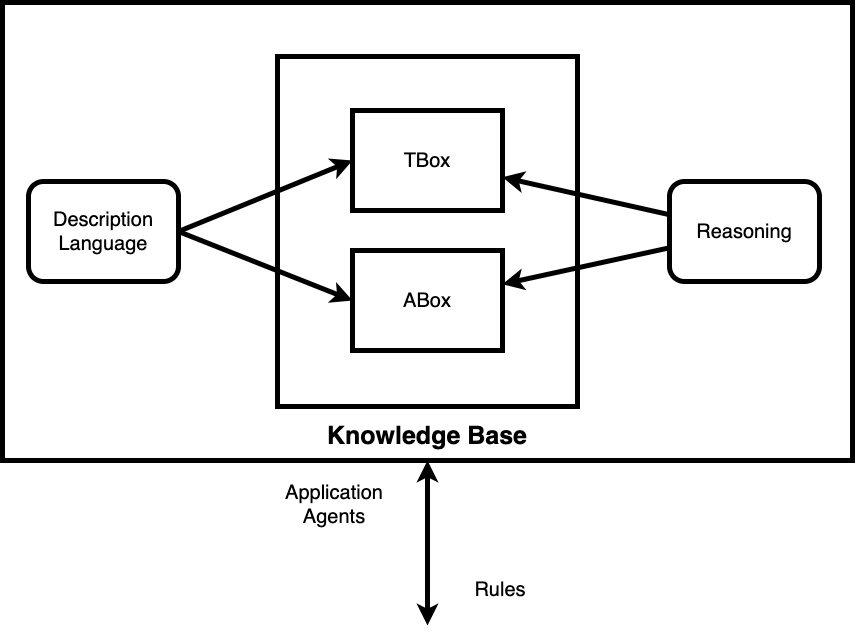
  <figcaption>
    <strong>Figure 3.9:</strong> Knowledge Base Representation System Based on (Patrón et al., 2011) [p. 205]
  </figcaption>
</figure>
<p>Consider a scenario around artwork provenance held in a museum. The <abbr title="Assertion Box">ABox</abbr> strives to encapsulate the rich narratives of individual artworks, tracing their journey through time, ownership transitions and exhibition travels. At the same time, the <abbr title="Terminological Box">TBox</abbr> creates a conceptual scaffolding, imbued with classes such as <code>Artwork</code>, <code>Creator</code>, and <code>Exhibition</code>, painting an abstract portrait that contextualises each artefact within a broader cultural tapestry. It is here that the <abbr title="Description logic">DL</abbr> comes in, harmonising the symphony with its logical relationships and axioms, i.e. a rule or principle widely accepted as obviously true (Baader &amp; Lutz, 2007). The <abbr title="Description logic">DL</abbr> is represented as 𝒦 = (𝒯, ℛ, 𝒜), where:</p>
<ul>
<li>𝒯:   represents the <abbr title="Terminological Box">TBox</abbr>, defining the conceptual framework,     which encompasses the hierarchical relationships, classes, and     concepts within the <abbr title="Knowledge Base">KB</abbr>.</li>
<li>ℛ:   represents the set of binary roles, delineating the relationships     and connections between individuals or instances in the domain.     These roles facilitate the understanding of how entities relate to     one another within the <abbr title="Knowledge Base">KB</abbr>.</li>
<li>𝒜:   represents the <abbr title="Assertion Box">ABox</abbr>, encompassing the specific assertions     or instances in the <abbr title="Knowledge Base">KB</abbr>.</li>
</ul>
<p>This symbiotic interplay ensures that the provenance of each artwork is not just a static account, but a dynamic, interconnected narrative. The <abbr title="Assertion Box">ABox</abbr>-<abbr title="Terminological Box">TBox</abbr> relationship thrives in the realm of reasoning. Imagine an axiom embedded in the <abbr title="Terminological Box">TBox</abbr>: ‘A work of art presented in an exhibition curated by a distinguished patron is of heightened cultural significance’, or here phrased in <abbr title="Description logic">DL</abbr> terms: ∃ <code>curates.Artwork.CulturalSignificance</code> ⊑ <code>true</code>. This axiom serves as a beacon to guide the system’s reasoning. When an <abbr title="Assertion Box">ABox</abbr> instance of an artwork is woven into an exhibition curated by a prominent authority, the <abbr title="Description logic">DL</abbr>-informed engine responds by inferring an enriched cultural value that resonates beyond the artefact itself. This is where the <abbr title="Terminological Box">TBox</abbr> takes data and gives it life, producing insights that transcend the boundaries of individual instances. The <abbr title="Knowledge Base">KB</abbr>, 𝒦, captures this orchestration, encapsulating the logical relationships for meaningful interpretation and knowledge discovery.</p>
<p>Overall, the relationship between <abbr title="Assertion Box">ABox</abbr> and <abbr title="Terminological Box">TBox</abbr> in <abbr title="Description logic">DL</abbr> is vital for achieving semantic clarity, enabling meaningful data integration, and facilitating advanced reasoning mechanisms. The museum provenance scenario showcases a precisely orchestrated convergence of assertion, terminology, and rigorous logical reasoning. This engenders a computational landscape where historical artefacts intricately mesh within the complex network of human history’s data structures, seamlessly aligning with the underlying framework of algorithmic representation. These components enable software developers to harmonise disparate datasets, extract insightful knowledge, and support decision-making processes across a wide range of domains. In essence, the use of <abbr title="Description logic">DL</abbr>, <abbr title="Assertion Box">ABox</abbr>, and <abbr title="Terminological Box">TBox</abbr> in ontological <abbr title="Knowledge Representation">KR</abbr> enhances interoperability between different systems and allows for sophisticated reasoning and decision support.</p>
<p>Moving beyond these foundational concepts, it is noteworthy to consider the work of (Ehrlinger &amp; Wöß, 2016), who address the need for a clear and standardised definition of <abbr title="Knowledge Graph">KG</abbr>s. They highlight the term’s varied interpretations since its popularisation by Google in 2012 and propose a definitive, unambiguous definition to foster a common understanding and wider adoption in both academic and commercial realms. They define a <abbr title="Knowledge Graph">KG</abbr> as follows: ‘A knowledge graph acquires and integrates information into an ontology and applies a reasoner to derive new knowledge’. This definition crystallises the essence of <abbr title="Knowledge Graph">KG</abbr>s as dynamic and integrative systems that not only store but also process and enrich data through advanced reasoning. This conceptualisation underlines the transformative potential of <abbr title="Knowledge Graph">KG</abbr>s in various domains, bridging the gap between raw data and actionable insights.</p>
<p>Finally, it is important to recognise that the importance of ontologies extends beyond individual systems. Shared ontologies are a cornerstone of semantic interoperability, thus facilitating a paradigm shift in the way systems and applications communicate. As (Sanderson, 2013) argues: <em>’shared ontologies increases semantic interoperability’</em> and <em>‘shared identity makes it possible for graph to merge serendipitously’</em>. This shared understanding ensures that various entities can seamlessly connect and engage in meaningful interactions.</p>
<h3 id="sec:movements" tabindex="-1">3.3 Trends, Movements, and Principles</h3>
<p>Technological trends, scientific movements, and guiding principles have played a crucial role in shaping the landscape of contemporary research. In recent years, there has been an increased emphasis on the need for academic and <abbr title="Cultural Heritage">CH</abbr> practices to be more transparent, inclusive, and accountable. This shift reflects a broader trend towards integrating advanced technological solutions and open-science principles in heritage management. As such, understanding the evolution of <abbr title="Cultural Heritage">CH</abbr> becomes imperative to comprehend how these practices have adapted and transformed in response to these guiding trends.</p>
<p>The evolution of <abbr title="Cultural Heritage">CH</abbr> has been characterised by a series of technological and methodological shifts. Initially, the primary focus was on digitising physical artefacts to preserve information from degrading originals. This phase was crucial for transitioning tangible <abbr title="Cultural Heritage">CH</abbr> into a digital format, mitigating the risk of loss due to physical degradation. Following this, efforts shifted towards ensuring the persistence of digitised resources. This stage involved addressing challenges related to digital preservation, including data degradation and format obsolescence, to ensure the longevity of digital cultural assets.</p>
<p>The advent of open data principles marked the next phase in <abbr title="Cultural Heritage">CH</abbr> development. This approach facilitated broader access to information, aligning with contemporary values of transparency and inclusivity in, governmental, academic, and cultural contexts. Subsequently, the focus expanded to enhancing the utility of this data. This stage involved contextualising and enriching <abbr title="Cultural Heritage">CH</abbr> data, thereby increasing their applicability and relevance across various domains.</p>
<p>The current frontier in <abbr title="Cultural Heritage">CH</abbr> involves developing applications that leverage rich <abbr title="Cultural Heritage">CH</abbr> data. These applications serve not only as tools for engagement and education but also as justifications for the ongoing costs associated with data storage and archival. They illustrate the tangible benefits derived from preserving heritage resources, encompassing both cultural and economic returns. In summary, the trajectory of <abbr title="Cultural Heritage">CH</abbr> development mirrors broader technological and societal trends, transitioning from preservation to active utilisation. This progression underscores the dynamic nature of research and <abbr title="Cultural Heritage">CH</abbr> processes, highlighting the evolving requirements for transparency, inclusivity, and accountability in <abbr title="Cultural Heritage">CH</abbr> management.</p>
<p>While automation has significantly enhanced the efficiency of digitisation processes in <abbr title="Cultural Heritage">CH</abbr>, cataloguing and indexing remain complex challenges. The intricacies involved in accurately understanding and categorising resources necessitate more than just technological solutions; they require context-aware and culturally sensitive approaches. Here, <abbr title="Machine Learning">ML</abbr> offers promising perspectives. <abbr title="Machine Learning">ML</abbr>, particularly in its advanced forms like deep learning, can assist in cataloguing and indexing by analysing large datasets to identify patterns, categorise content, and even suggest metadata. This can be particularly useful in handling large volumes of <abbr title="Cultural Heritage">CH</abbr> data, where manual processing is time-consuming and prone to human error. Typical applications of <abbr title="Machine Learning">ML</abbr> in this field include image recognition for identifying and classifying visual elements in artefacts, <abbr title="Natural Language Processing">NLP</abbr> for analysing textual content, and pattern recognition for sorting and organising data based on specific characteristics. Furthermore, prospective developments may entail the refinement of metadata mapping and the enhancement of quality control mechanisms. Moreover, <abbr title="Machine Learning">ML</abbr> algorithms can be trained to recognise stylistic elements, historical contexts, and other nuances that are essential for accurate cataloguing in <abbr title="Cultural Heritage">CH</abbr>. However, it is crucial to note that the effectiveness of <abbr title="Machine Learning">ML</abbr> depends heavily on the quality and diversity of the training data. Biases in this data can lead to inaccuracies in cataloguing and indexing. Thus, a collaborative approach, where <abbr title="Machine Learning">ML</abbr> is supplemented by expert human oversight, is often the most effective strategy.</p>
<p>Overall, this section provides a comprehensive overview of <s>six</s> <strong>three</strong><sup class="footnote-ref"><a href="#fn26" id="fnref26:1">[26:1]</a></sup> technological trends as well as five key scientific movements and guiding principles that are shaping research and how universities and <abbr title="Galleries, Libraries, Archives, and Museums">GLAM</abbr>s should provide environments, services, and tools with a view to collecting and disseminating content. By exploring each of these trends, movements, and principles, we can gain a deeper understanding of how research and <abbr title="Cultural Heritage">CH</abbr> processes are permeated by dynamic movements and how resources can be made more transparent, inclusive and accountable, as well as how data can be made available to human and non-human users.</p>
<h4 id="subsec:current-emerging-trends" tabindex="-1">3.3.1 Current and Emerging Technological Trends in Cultural Heritage</h4>
<p>I will explore some current and emerging technological trends in <abbr title="Cultural Heritage">CH</abbr>, organised into three components: Linked Data, big data, and <abbr title="Artificial Intelligence">AI</abbr>. Each represents a critical driver shaping the landscape and practices of heritage data. The three trends have been around for a few decades, with the ‘Linked Data’ principles and underlying standards coming from the late 1990s, ‘big data’ being coined in 1990 and <abbr title="Artificial Intelligence">AI</abbr> in 1956.</p>
<p>Before considering the trends discussed hereafter, note that current technological developments do not exist in isolation, but tend to intertwine and act synergistically. A vivid example of this interplay can be seen in <abbr title="Artificial Intelligence">AI</abbr> and its latent impact on the semantic web, particularly in facilitating more efficient querying and crawling processes such as the LinkedDataGPT proof-of-concept service<sup class="footnote-ref"><a href="#fn76" id="fnref76">[76]</a></sup> from Liip on the City of Zurich that combines ChatGPT — a generative <abbr title="Artificial Intelligence">AI</abbr> solution — on top of a Linked Data portal to facilitate querying open datasets (Stocker, 2023). Inversely <abbr title="Artificial Intelligence">AI</abbr> can be fed by data on the web to learn and reason, as outlined by 
</p><h5 id="subsubsec:linked_data" tabindex="-1">3.3.1.1 Linked Data</h5>
<p>Linked Data, and most precisely <abbr title="Linked Open Data">LOD</abbr>, is a set of design principles adhering to <abbr title="Resource Description Framework">RDF</abbr> which is a significant approach to interconnect data on the web in order to make semantic queries more useful (Berners-Lee et al., 2001). In other words, this standardisation allows data to be not only linked, but also openly accessible and reusable. As noted by (Gandon, 2019) [p. 115, citing (Gandon, 2017)]:</p>
<blockquote>
<p>The Web was initially perceived and used as a globally distributed hypertext space for humans. But from its inception, the Web has always been more: its hypermedia architecture is in fact linking programs world-wide through remote procedure calls.</p>
</blockquote>
<p>This deeper understanding of the web’s architecture as a conduit for linking programs on a global scale holds profound implications. It signifies that the web is not merely a medium for accessing information but a dynamic environment where data-driven programs interact, exchange data, and collaborate across geographical boundaries. In this context, Linked Data emerges as a powerful enabler, providing a structured and standardised approach for these programs to communicate and share meaningful data (Bizer et al., 2008).</p>
<p>In the context of <abbr title="Cultural Heritage">CH</abbr>, institutions such as museums, libraries and archives can publish their collections using Linked Data principles, enabling a web of linked information that is accessible to all. As this dissertation’s main topic revolves around Linked (Open) (Usable) Data, two dedicated sections have been written within this literature review in <a href="#sec:linkeddata">Section 3.4</a> and <a href="#sec:loud">Section 3.5</a>.</p>
<p>Beyond formal <abbr title="Linked Open Data">LOD</abbr>, <abbr title="Cultural Heritage Institution">CHI</abbr>s may also link their databases or collections in more informal ways. This interconnection may take the form of shared metadata, common identifiers, or simply hyperlinks. These links can enhance the user experience by supporting a more seamless navigation between related items or pieces of information. For instance, a parallel strategy is the use of graph-based data representation, i.e. property graph which consists of a set of objects or vertices, and a set of arrows or edges connecting the objects, that are most likely not <abbr title="Resource Description Framework">RDF</abbr>-compliant (see Bermès, 2023). Graph databases, such as Neo4j<sup class="footnote-ref"><a href="#fn77" id="fnref77">[77]</a></sup> which is quite prevalent in <abbr title="Digital Humanities">DH</abbr> (Darmont et al., 2020; Drakopoulos et al., 2019; see Webber, 2012), allow for efficient storage and retrieval of interconnected data through nodes representing entities and relationships linking them.</p>
<h5 id="subsubsec:big_data" tabindex="-1">3.3.1.2 Big Data</h5>
<p>Big Data refers to extremely large and complex datasets that exceed the capabilities of traditional data processing methods and tools. It encompasses a massive volume of structured, semi-structured and unstructured data that is currently flooding across a variety of sectors, companies and organisations (see Emmanuel &amp; Stanier, 2016). The characteristics of big data are often described by the three ⋁ model (Laney, 2001):</p>
<ul>
<li><strong>Volume</strong>:   Big data refers to a massive amount of data. This can encompass a     spectrum of data sizes, extending from <abbr title="Gigabytes">GB</abbr> and <abbr title="Terabytes">TB</abbr>, to <abbr title="Petabytes">PB</abbr><sup class="footnote-ref"><a href="#fn78" id="fnref78">[78]</a></sup> and beyond. The sheer size of     the data is a key aspect of big data, making traditional database     systems inadequate for storage and analysis.</li>
<li><strong>Velocity</strong>:   Data is being generated and collected at an unprecedented rate.     Social media posts, sensor data, online transactions and more are     constantly being generated, requiring real-time or near real-time     processing and analysis.</li>
<li><strong>Variety</strong>:   Big data comes in a variety of formats, including structured data     (e.g. databases), semi-structured data (e.g.     <abbr title="Extensible Markup Language">XML</abbr>,     <abbr title="JavaScript Object Notation">JSON</abbr>) and     unstructured data (e.g. text, images, video). The variety of data     types requires flexible processing methods.</li>
</ul>
<p>In addition to the three ⋁ model, two more characteristics are often included (Saha &amp; Srivastava, 2014, p. 1294):</p>
<ul>
<li><strong>Veracity</strong>:   It refers to the quality of the data, including its accuracy,     reliability and trustworthiness. Big data sources can be inherently     uncertain or inaccurate, and addressing data quality is a critical     challenge.</li>
<li><strong>Value</strong>:   Extracting value and actionable insights from big data is the     ultimate goal. Analysing and interpreting Big data should lead to     better decision-making, improved business strategies, as well as     enhanced <abbr title="User experience">UX</abbr><sup class="footnote-ref"><a href="#fn79" id="fnref79">[79]</a></sup>.</li>
</ul>
<p>Regarding the two latter dimensions, (Debattista et al., 2015) argue that that Linked Data is the most suitable technology to increase the value of data over conventional formats, thus contributing towards the value challenge in Big Data. As for veracity, they describe a semantic pipeline with eight key metrics to address the veracity dimension. Building on this technological foundation, the integration of Linked Data and Big Data analytics takes centre stage.</p>
<p>Big data analytics can be employed on <abbr title="Cultural Heritage">CH</abbr> content to uncover insights and correlations that can be used in decision-making. (Barrile &amp; Bernardo, 2022) [p. 2708] highlight the transformative potential of using big data by investigating how analytical approach can enhance conservation strategies, aid resource allocation and optimise the management of <abbr title="Cultural Heritage">CH</abbr> resources. (Poulopoulos &amp; Wallace, 2022) [pp. 188-189] emphasise that emerging technology trends, including big data, have a significant impact on related research areas such as <abbr title="Cultural Heritage">CH</abbr>. Big data primarily originates from sources such as social media, online gaming, data lakes<sup class="footnote-ref"><a href="#fn80" id="fnref80">[80]</a></sup>, logs and frameworks that generate or use significant amounts of data. They stress that the incorporation of multi-faceted analytics in the <abbr title="Cultural Heritage">CH</abbr> domain is an area of active research, and present a data lake that provides essential user and data/knowledge management functionalities. However, they emphasise a crucial consideration - the need to bridge the theoretical foundations of disciplines such as cultural sociology with the technological advances of big data.</p>
<h5 id="subsubsec:ch_ai" tabindex="-1">3.3.1.3 Artificial Intelligence</h5>
<p><abbr title="Artificial Intelligence">AI</abbr> has been coined for the first time by John McCarthy, an American computer scientist and cognitive scientist, during the 1956 Dartmouth Conference, which is often considered the birth of <abbr title="Artificial Intelligence">AI</abbr> as an academic field (Andresen, 2002, p. 84). According to the (Oxford English Dictionary, 2023), <abbr title="Artificial Intelligence">AI</abbr> is described as follows:</p>
<blockquote>
<p>The capacity of computers or other machines to exhibit or simulate intelligent behaviour; the field of study concerned with this. In later use also: software used to perform tasks or produce output previously thought to require human intelligence, esp. by using machine learning to extrapolate from large collections of data.</p>
</blockquote>
<p>While <abbr title="Artificial Intelligence">AI</abbr> is not the central focus of my PhD thesis, I acknowledge its impact in several instances. As a rapidly developing technology, <abbr title="Artificial Intelligence">AI</abbr> has the potential to significantly transform various aspects of society, including the way we describe, analyse, and disseminate <abbr title="Cultural Heritage">CH</abbr> resources. It is worth mentioning that I endeavour to engage in a broader discourse concerning the domain of <abbr title="Artificial Intelligence">AI</abbr>. In this context, I use the acronyms <abbr title="Artificial Intelligence">AI</abbr> to talk about the overarching domain or its ethics, and <abbr title="Machine Learning">ML</abbr> to discuss the specifics of methodologies and algorithmic approaches, while refraining from delving into the intricacies of Deep Learning, which is a distinct subdomain within <abbr title="Machine Learning">ML</abbr>.</p>
<p><abbr title="Artificial Intelligence">AI</abbr> and <abbr title="Machine Learning">ML</abbr> offer great potential for digitising, curating and analysing <abbr title="Cultural Heritage">CH</abbr>, leveraging the vast digital datasets from <abbr title="Cultural Heritage Institution">CHI</abbr>s. Some of the examples include text recognition mechanisms using <abbr title="Optical Character Recognition">OCR</abbr> and <abbr title="Handwritten Text Recognition">HTR</abbr>, <abbr title="Natural Language Processing">NLP</abbr> and <abbr title="Named Entity Recognition">NER</abbr> for enriching unstructured text, as well as object detection methods for finding patterns within still and moving images (Neudecker, 2022; Sporleder, 2010). Textual works can also be analysed, for instance for sentiment analysis (see Susnjak, 2023), and generated using <abbr title="Large Language Models">LLM</abbr> – a variety of <abbr title="Natural Language Processing">NLP</abbr>, such as BERT or ChatGPT, which predicts the likelihood of a word given the previous words present in recorded texts. However, challenges such as data quality and biases in <abbr title="Artificial Intelligence">AI</abbr> persist (Neudecker, 2022).</p>
<p>In addition, there are still uncertainties regarding the licensing and reuse of <abbr title="Cultural Heritage">CH</abbr> datasets by <abbr title="Machine Learning">ML</abbr> algorithms<sup class="footnote-ref"><a href="#fn81" id="fnref81">[81]</a></sup>. (Neudecker, 2022) emphasises the importance of well-curated digitised <abbr title="Cultural Heritage">CH</abbr> resources that are openly licensed, accompanied by relevant metadata, and accessible through <abbr title="Application Programming Interface">API</abbr>s or download dumps in various formats. These curated resources have the potential to address the existing gap in this domain.</p>
<p>Building on the theme of enhancing <abbr title="Cultural Heritage">CH</abbr> through digital technologies, (McGillivray et al., 2020) explore the synergies and challenges found at the intersection of <abbr title="Digital Humanities">DH</abbr> and <abbr title="Natural Language Processing">NLP</abbr>. <abbr title="Digital Humanities">DH</abbr> is aptly described as <em>‘a nexus of fields within which scholars use computing technologies to investigate the kinds of questions that are traditional to the humanities […] or who ask traditional kinds of humanities-oriented questions about computing technologies’</em> (Fitzpatrick, 2010). This broad characterisation encapsulates the transformative potential of digital tools, including <abbr title="Machine Learning">ML</abbr> techniques, in enriching humanities research.</p>
<p>(McGillivray et al., 2020) highlight the critical need for bridging the communication gap between <abbr title="Digital Humanities">DH</abbr> and <abbr title="Natural Language Processing">NLP</abbr> to drive progress in both fields. They propose increased interdisciplinary collaboration, encouraging <abbr title="Digital Humanities">DH</abbr> researchers to actively utilise <abbr title="Natural Language Processing">NLP</abbr> tools to refine their research methodologies. A primary challenge in this convergence is the application of <abbr title="Natural Language Processing">NLP</abbr> to the complex, historical, or noisy texts often encountered in <abbr title="Digital Humanities">DH</abbr> research. They conclude by advocating for stronger cooperation between practitioners in these fields. This collaborative effort is vital for harnessing the full potential of <abbr title="Machine Learning">ML</abbr> in analysing and interpreting <abbr title="Cultural Heritage">CH</abbr>.</p>
<p>The use of <abbr title="Machine Learning">ML</abbr> scripts in the context of <abbr title="Cultural Heritage">CH</abbr> — and beyond — is inherently limited by their applicability, namely when dealing with historical photographs. In such cases, the use of algorithms that are mostly trained and grounded in contemporary image data becomes quite incongruous due to the dissimilarity in temporal contexts. This dilemma is exemplified by datasets such as Microsoft’s Common Object in Context (COCO)<sup class="footnote-ref"><a href="#fn82" id="fnref82">[82]</a></sup> (Lin et al., 2014), where the available data are predominantly contemporary photographic content, which is misaligned with the historical nuances inherent in most of the digitised <abbr title="Cultural Heritage">CH</abbr> images. (Coleman, 2020) corroborates that a sound approach would be for <abbr title="Machine Learning">ML</abbr> practitioners to collaborate with libraries as they can draw practical lessons from critical data studies and the thoughtful integration of <abbr title="Artificial Intelligence">AI</abbr> into their collections, using guidelines from <abbr title="Digital Humanities">DH</abbr>. She also advocates that as handing handing over datasets would be a disservice to library patrons and that <em>‘Librarians need to master the instruments of AI and employ them both to learn more about their own resources—to see and analyze them in new ways—and to help shape applications of AI with the expertise and ethos of libraries.’</em></p>
<p>Ethical concerns, particularly regarding social biases and racism, are prevalent in technologies like ImageNet, where facial recognition may yield <abbr title="Artificial Intelligence">AI</abbr> statements with strong negative connotations (Neudecker, 2022). Addressing this, (Gandon, 2019) suggest the production of <abbr title="Artificial Intelligence">AI</abbr> services that are <em>‘benevolent-by-design for the good of the Web and society’</em>. Furthermore, (Floridi, 2023) introduces the double-charge thesis, asserting that all technology design is a moral act, challenging the neutrality thesis. He emphasises that technologies are not neutral and can be influenced by a dynamic equilibrium of values, predisposing them towards morally good or evil directions.</p>
<p>As mentioned previously, the <abbr title="Machine Learning">ML</abbr> training datasets are often not enough representative to be properly leveraged in the <abbr title="Cultural Heritage">CH</abbr> sector (Strien et al., 2022). Fine-tuning is now a topic though and new ground truth datasets have been created and tailored for the needs of <abbr title="Cultural Heritage">CH</abbr>, such as Viscounth<sup class="footnote-ref"><a href="#fn83" id="fnref83">[83]</a></sup>, a large-scale <abbr title="Visual Question Answering">VQA</abbr> dataset — i.e a dataset containing open-ended questions about images which requires an understanding of vision, language and commonsense knowledge to answer (Goyal et al., 2017) — for <abbr title="Cultural Heritage">CH</abbr> in English and Italian (see Becattini et al., 2023).</p>
<p>(Jaillant &amp; Caputo, 2022) argue that the governance of <abbr title="Artificial Intelligence">AI</abbr> ought to be carried out in partnership with <abbr title="Galleries, Libraries, Archives, and Museums">GLAM</abbr> institutions. However, while this collaboration has been proposed as a promising way forward, it still requires further exploration and evaluation, particularly with regards to the specific challenges and opportunities that it presents. On the one hand, the involvement of <abbr title="Galleries, Libraries, Archives, and Museums">GLAM</abbr>s in <abbr title="Artificial Intelligence">AI</abbr> governance could enhance the development of digital <abbr title="Cultural Heritage">CH</abbr> projects that promote social justice and equity. However, on the other hand, this collaboration raises several challenges, such as the need to address issues of privacy, data protection, and intellectual property rights, and to ensure that the values and perspectives of <abbr title="Galleries, Libraries, Archives, and Museums">GLAM</abbr> professionals are adequately represented in the development of <abbr title="Artificial Intelligence">AI</abbr> algorithms and systems. Therefore, it is crucial to examine the specific challenges and opportunities of this collaboration and to develop appropriate frameworks and guidelines that enable effective and ethical governance of <abbr title="Artificial Intelligence">AI</abbr> in the <abbr title="Galleries, Libraries, Archives, and Museums">GLAM</abbr> sector.</p>
<p>One of these platforms that address these issues is AI4LAM, which is an international and participatory community focused on advancing the use of <abbr title="Artificial Intelligence">AI</abbr> in, for and by libraries, archives, and museums<sup class="footnote-ref"><a href="#fn84" id="fnref84">[84]</a></sup>. The initiative was launched by the National Library of Norway and Stanford University Libraries in 2018 inspired by the success of the <abbr title="International Image Interoperability Framework">IIIF</abbr> community. Another agency is the AEOLIAN Network<sup class="footnote-ref"><a href="#fn85" id="fnref85">[85]</a></sup>, <abbr title="Artificial Intelligence">AI</abbr> for Cultural Organisations, which investigates the role that <abbr title="Artificial Intelligence">AI</abbr> can play to make born-digital and digitised cultural records more accessible to users (Jaillant &amp; Rees, 2023, p. 582).</p>
<p>As an illustrative case, the <abbr title="Library of Congress">LoC</abbr>'s exploration into <abbr title="Machine Learning">ML</abbr> technologies, as highlighted by (Allen, 2023), demonstrates a strategic commitment to enhancing the accessibility and utility of its diverse collections. This initiative reflects the <abbr title="Library of Congress">LoC</abbr>'s acknowledgement of the transformative potential of <abbr title="Machine Learning">ML</abbr>, balanced with a cautious approach due to the necessity for accurate and responsible information stewardship. The <abbr title="Library of Congress">LoC</abbr> faces several challenges in applying <abbr title="Machine Learning">ML</abbr>, particularly the limitations of commercial <abbr title="Artificial Intelligence">AI</abbr> systems in handling its varied materials and the requirement for substantial human intervention. This cautious exploration into <abbr title="Machine Learning">ML</abbr> is indicative of a broader trend in <abbr title="Cultural Heritage Institution">CHI</abbr>s, where maintaining a balance between embracing technological advancements and preserving authenticity and integrity is crucial.</p>
<p>The specific experiments and projects undertaken by the <abbr title="Library of Congress">LoC</abbr> in the realm of <abbr title="Machine Learning">ML</abbr> are diverse and illustrative of the institution’s comprehensive approach to innovation. For instance, image recognition systems have been tested for identifying and classifying visual elements in artefacts, a task that requires a nuanced understanding of historical and cultural contexts. In another initiative, speech-to-text technology was employed to transcribe spoken word collections, confronting challenges such as accent recognition and audio quality variation. Additionally, the <abbr title="Library of Congress">LoC</abbr> explored the potential of <abbr title="Machine Learning">ML</abbr> in enhancing search and discovery capabilities through projects like Newspaper Navigator<sup class="footnote-ref"><a href="#fn86" id="fnref86">[86]</a></sup>, which aimed to identify and extract images from digitised newspaper pages.</p>
<p>These experiments not only highlight the potential of <abbr title="Machine Learning">ML</abbr> in transforming the way <abbr title="Library of Congress">LoC</abbr> manages and disseminates its collections but also reveal the complexities and limitations inherent in these technologies. As (Allen, 2023) notes, the ongoing research and experimentation in <abbr title="Machine Learning">ML</abbr> at the <abbr title="Library of Congress">LoC</abbr> are critical in revolutionising access and discovery in the cultural heritage sector. These efforts, while facing challenges, represent a diligent integration of advanced technologies, upholding principles of responsible custodianship and setting a precedent for similar institutions globally in the adoption and adaption of <abbr title="Machine Learning">ML</abbr> and <abbr title="Artificial Intelligence">AI</abbr> in <abbr title="Cultural Heritage Institution">CHI</abbr>s.</p>
<p>The integration of <abbr title="Large Language Models">LLM</abbr> and <abbr title="Knowledge Graph">KG</abbr> presents a groundbreaking opportunity, particularly within the realm of <abbr title="Cultural Heritage Institution">CHI</abbr>s, where there is already considerable expertise. This is aptly demonstrated in the work of (Pan et al., 2023), which elucidates the harmonisation between explicit knowledge and parametric knowledge, i.e. knowledge derived from patterns in data, as learned by models such as <abbr title="Large Language Models">LLM</abbr>s. The authors highlight three key areas for the advancement of <abbr title="Knowledge Representation">KR</abbr> and processing:</p>
<ol>
<li><strong>Knowledge Extraction</strong>, where <abbr title="Large Language Models">LLM</abbr>s improves the extraction of knowledge     from diverse sources for applications such as information retrieval     and <abbr title="Knowledge Graph">KG</abbr>     construction;</li>
<li><strong>Knowledge Graph Construction</strong>, which involves     <abbr title="Large Language Models">LLM</abbr>s in tasks     such as link prediction and triple extraction from data, albeit with     challenges in precision and management of long tail entities;</li>
<li><strong>Training <abbr title="Large Language Models">LLM</abbr>s     Using <abbr title="Knowledge Graph">KG</abbr>s</strong>, where     <abbr title="Knowledge Graph">KG</abbr>s provides     structured knowledge for <abbr title="Large Language Models">LLM</abbr>s, helping to build retrieval-augmented     models on the fly, enriching <abbr title="Large Language Models">LLM</abbr>s with world knowledge and increasing its     adaptability.</li>
</ol>
<p>In a report for the University of Leeds in the UK, (Pirgova-Morgan, 2023) explores the potential and practical implications of <abbr title="Artificial Intelligence">AI</abbr> in libraries. The project, forming part of the university’s ambitious vision for digital transformation, aims to understand how <abbr title="Artificial Intelligence">AI</abbr> can be effectively integrated into library services. This research looks at both the use of general <abbr title="Artificial Intelligence">AI</abbr> for long term strategic planning and specific <abbr title="Artificial Intelligence">AI</abbr> applications for improving <abbr title="User experience">UX</abbr>, process optimisation and enhancing the discoverability of collections. The methodology used in this study involves a multi-faceted approach including desk-based assessments, a university-wide survey and expert interviews. Specifically, the study highlights the following key findings:</p>
<ul>
<li><strong><abbr title="Artificial Intelligence">AI</abbr> for <abbr title="User experience">UX</abbr> and Process Optimisation</strong>:   The integration of <abbr title="Artificial Intelligence">AI</abbr> technologies offers substantial     opportunities for improving user experiences in libraries. This     includes optimising library processes, enhancing collections     descriptions, and improving their discoverability.</li>
<li><strong>Challenges and Opportunities of <abbr title="Artificial Intelligence">AI</abbr> Application</strong>:   While <abbr title="Artificial Intelligence">AI</abbr>     presents exciting possibilities, its practical application in     library settings faces challenges. These include evaluating specific     <abbr title="Artificial Intelligence">AI</abbr> technologies     in the unique context of the University of Leeds, ensuring they     align with the institution’s needs and goals.</li>
<li><strong>Perceptions of <abbr title="Artificial Intelligence">AI</abbr> in Libraries</strong>:   The report reveals varying perceptions among librarians and users     regarding <abbr title="Artificial Intelligence">AI</abbr>.     This includes views on how <abbr title="Artificial Intelligence">AI</abbr> can contribute to resilience,     awareness of climate change, and practices promoting equality,     diversity, and inclusion.</li>
<li><strong>Role of <abbr title="Artificial Intelligence">AI</abbr> in Strategic Library Development</strong>:   General <abbr title="Artificial Intelligence">AI</abbr>     technologies are seen as instrumental in shaping long-term     strategies for libraries, highlighting the need for ongoing     adaptation and development in response to evolving     <abbr title="Artificial Intelligence">AI</abbr> capabilities.</li>
<li><strong>Expert Perspectives on <abbr title="Artificial Intelligence">AI</abbr> in Libraries</strong>:   Interviews with experts from around the world underscore the     importance of understanding both general and specific applications     of <abbr title="Artificial Intelligence">AI</abbr>. These     insights help in identifying priority areas where AI can     significantly enhance library operations and services.</li>
</ul>
<p>These insights from the University of Leeds report illustrate the complex impact of <abbr title="Artificial Intelligence">AI</abbr> on library services, from enhancing user interaction to influencing strategic decision-making, while also emphasising the importance of adapting <abbr title="Artificial Intelligence">AI</abbr> applications to specific institutional needs.</p>
<p>It must be also stated that <abbr title="Artificial Intelligence">AI</abbr> lacks inherent intelligence and consciousness, and have been ultimately built by people. An important concern, namely with <abbr title="Large Language Models">LLM</abbr>, is the perceptual illusion of cognitive interaction, where the machine appears to be engaging in dialogue and reasoning, when in fact it is generating content through predictive algorithms (see Ridge, 2023). Furthermore, regarding the topic of data colonialism, poor people in underprivileged nations are often burdened with the responsibility of cleaning up the toxic repercussions of <abbr title="Artificial Intelligence">AI</abbr>, shielding affluent individuals and prosperous countries from direct exposure to its harmful effects<sup class="footnote-ref"><a href="#fn87" id="fnref87">[87]</a></sup>.</p>
<p>Concluding this segment, it is essential to perceive <abbr title="Machine Learning">ML</abbr> algorithms as uncertain <em>‘socio-material configurations’</em>, which can be seen as both powerful and inscrutable, demanding an axiomatic and problem-oriented approach in their understanding and application. (Jaton, 2017) elaborates on this by examining how these algorithms, while technologically complex, are firmly rooted in and shaped by the social, material, and human contexts in which they are developed. Beyond their computational complexity, these algorithms are deeply embedded in the process of constructing . These ground truths are not inherent or fixed; instead, they emerge from collaborative efforts that reflect the varied inputs of actors. This process underscores the algorithms as socio-material constructs, influenced by the characteristics and contexts of their creators. Understanding algorithms in this light highlights their deep integration with human actions and societal norms, offering a more nuanced view of their design and implementation (see Jaton, 2021, 2023).</p>
<h4 id="subsec:scientific-movements-guiding-principles" tabindex="-1">3.3.2 Scientific Movements and Guiding Principles</h4>
<p>First, <a href="#subsubsec:open-scholarship">3.3.2.1</a> examines the movement towards more open and transparent forms of research. Open scholarship is a broad concept that encompasses practices such as open access publishing, open data, open source software, and open educational resources. The subsection explores the benefits and challenges of open scholarship, and how it can help to increase the accessibility and impact of research data.</p>
<p>Then, <a href="#subsubsec:citizen">3.3.2.2</a> explores the growing trend of involving members of the public in scientific research. Citizen science and citizen humanities involve collaborations between scientists and non-expert individuals, with the aim of generating new knowledge or solving complex problems. The subsubsection examines the benefits and challenges of citizen science and citizen humanities, and how they can help to democratise research.</p>
<p><a href="#subsubsec:fair">3.3.2.3</a> examines the set of guiding principles designed to ensure that research outputs are <abbr title="Findable, Accessible, Interoperable, Reusable">FAIR</abbr>. It explores the importance of each data principle for research integrity, reproducibility, and collaboration, and provides examples of how they can be implemented in practice.</p>
<p><a href="#subsubsec:care">3.3.2.4</a> explores the importance of ethical and culturally sensitive data governance practices for indigenous communities that are materialised through <abbr title="Collective Benefit, Authority to Control, Responsibility, Ethics">CARE</abbr>. These principles provide a framework for managing data in a way that is consistent with the values and cultural traditions of indigenous communities. This part explores as well the challenges and opportunities of implementing the <abbr title="Collective Benefit, Authority to Control, Responsibility, Ethics">CARE</abbr> Principles for Indigenous Data Governance.</p>
<p>Finally, <a href="#subsubsec:collections-data">3.3.2.5</a> explores the concept of ‘Collections as Data’, a perspective that has emerged from the practical need and desire to improve decades of digital collecting practice. This approach re-conceptualises collections as ordered digital information that is inherently amenable to computational processing.</p>
<h5 id="subsubsec:open-scholarship" tabindex="-1">3.3.2.1 Towards Open Scholarship</h5>
<p>According to the FOSTER<sup class="footnote-ref"><a href="#fn88" id="fnref88">[88]</a></sup>, Open Science can be described as <em>‘[…] the practice of science in such a way that others can collaborate and contribute, where research data, lab notes and other research processes are freely available, under terms that enable reuse, redistribution and reproduction of the research and its underlying data and methods.’</em> (FOSTER, 2019).</p>
<p>In recent years, the principles of Open Science, that historically include Open methodology, Open source, Open data, <abbr title="Open access">OA</abbr>, Open peer review, as well as open educational resources, have become increasingly important as they emphasise transparency, collaboration and accessibility in scientific research (Bezjak et al., 2019). Open methodology refers to the sharing of research processes and methods, allowing other researchers to reproduce and build on existing work (see Vicente-Saez &amp; Martinez-Fuentes, 2018). Open source software and tools enable researchers to collaborate, while open data practices promote the sharing of research data in ways that are accessible, discoverable and reusable by others<sup class="footnote-ref"><a href="#fn89" id="fnref89">[89]</a></sup>. Open access seeks to remove financial and other barriers to accessing scientific knowledge, while open peer review provides greater transparency and accountability in the publication process. Finally, open educational resources encourage the sharing of teaching and learning materials, thereby facilitating the dissemination of knowledge and skills.</p>
<p>(UNESCO, 2019) conducted a preliminary study of the technical, financial and considerations related to the promotion of Open Science. This research underscored the necessity for a holistic approach to Open Science and stressed the significance of tackling international legal matters, as well as the existing challenges stemming from unequal access to justice, which can hinder global scientific collaboration. This study laid the groundwork for a recommendation on making <em>‘[…] multilingual scientific knowledge openly available, accessible and reusable for everyone, to increase scientific collaborations and sharing of information for the benefits of science and society, and to open the processes of scientific knowledge creation’</em> (UNESCO, 2021, p. 7). <abbr title="United Nations Educational, Scientific and Cultural Organization">UNESCO</abbr> identified five types of access related to Open Science: infrastructures, societal actors, as well as associated and diverse knowledge systems where dialogue is needed. This includes acknowledging the rights of indigenous peoples and local communities to govern and make decisions on the custodianship, ownership, and administration of data on traditional knowledge and on their lands and resources. <a href="#fig:unesco-open-science">Figure 3.10</a> provides a visual summary of this.</p>
<figure id="fig:unesco-open-science" style="text-align: center;">
  
  <figcaption>
    <strong>Figure 3.10:</strong> Open Science Elements, Redrawn Slide from Presentation of 
    Ana Persic [(Morrison, 2021) citing (Persic, 2021)]
  </figcaption>
</figure>
<p>While Open Science offers numerous benefits, it also presents challenges and potential drawbacks that warrant careful consideration. One major concern is the risk of exacerbating inequities between researchers from well-resourced institutions and those from less privileged backgrounds. Open access publishing often entails significant costs in the form of article processing charges, which can disproportionately burden researchers without adequate funding support (Burchardt, 2014). Additionally, Open Science practices relying on open protocols may be vulnerable to misuse, such as automated bots excessively crawling open repositories or datasets. This can lead to overloading systems, unauthorised data extraction, or unintended uses of research outputs (see Irish &amp; Saba, 2023; Li et al., 2021). These risks underscore the importance of balancing openness with safeguards that ensure equitable participation and secure, sustainable access to research materials.</p>
<p>These challenges are particularly relevant in the context of <abbr title="Digital Humanities">DH</abbr>, a field that harnesses the promise and impact of digital technologies and methodologies for the study and understanding of cultural phenomena. The adoption of Open Science principles has contributed to greater collaboration, transparency and accessibility in research practices in this field. Open data practices are particularly relevant, as they allow scholars to work with large and complex datasets, including digitised archives and social media data. Open educational resources can also be used to support the dissemination of <abbr title="Cultural Heritage">CH</abbr> literacy and skills, enabling wider audiences to engage with such resources. However, ensuring that such openness does not exacerbate inequities or introduce vulnerabilities requires thoughtful implementation.</p>
<p>In addition to the principles of Open Science, the concept of Open Scholarship has been introduced by (Tennant et al., 2020) as a broader approach that encompasses the arts and humanities and goes beyond the research community to the wider public. Open Scholarship emphasises the importance of making research and scholarship accessible to a wider audience, including non-experts, educators and policy makers. It can be particularly relevant to the arts and humanities, as they often deal with complex cultural materials and narratives that have wider societal implications. By making their work openly accessible and engaging with non-experts, humanities researchers can contribute to public discourse, promote cultural understanding, and inform policy and decision-making. Open scholarship can also support greater collaboration and innovation within the Arts and Humanities by enabling researchers to work collaboratively across disciplines and with a wide range of constituents. For instance, open educational resources can be used to develop collaborative teaching and learning materials that draw on the expertise of scholars and practitioners from different disciplines, while open data practices can facilitate the sharing and reuse of <abbr title="Cultural Heritage">CH</abbr> materials.</p>
<p>Conversely, (Knöchelmann, 2019) advocates for the term Open Humanities as a dedicated discourse that would within the humanities. Notably, he argues that Open Humanities should adapt key Open Science elements to the Humanities’ unique context. In the case of preprints, the challenges in the humanities, such as limited discipline-specific preprint servers and linguistic diversity, require tailored solutions to encourage adoption. Open peer review in the humanities should accommodate the field’s subjectivity and diverse perspectives. Concerns about liberal copyright licenses revolve around potential misrepresentation and plagiarism, highlighting the importance of maintaining scholarly integrity regardless of the chosen license. Knochelmann’s proposal underscores the need for context-sensitive approaches to promote openness and collaboration while respecting humanities’ distinct characteristics.</p>
<p>Overall, the principles of Open Science provide a framework for promoting greater collaboration, transparency and accessibility in research practices. Yet, the challenges discussed underscore the need for careful adaptation to address inequities, cybersecurity concerns, and field-specific nuances. The concept of Open Scholarship, which stresses the importance of making research and scholarship accessible to wider audiences, can be instrumental in broadening the impact of research in both natural sciences and the humanities, as Open Science encourages greater collaboration and innovation across disciplines. Ultimately, this underscores the need for adaptation and positions all academic disciplines as essential contributors to societal understanding, cultural preservation and informed decision-making, while ensuring the sustainability and integrity of open practices.</p>
<h5 id="subsubsec:citizen" tabindex="-1">3.3.2.2 Citizen Science, Citizen Humanities</h5>
<p>Citizen Science and Citizen Humanities are approaches that involve the public in scientific and humanities research, respectively. They have become increasingly popular in recent years as a means of democratising research and engaging the public in academic initiatives.</p>
<p>Citizen Science, as articulated by (Irwin, 1995), embodies a fundamental commitment to sourcing knowledge beyond the confines of academia, with a deliberate focus on addressing the concerns and interests of the public. This perspective underscores the transformative power of Citizen Science, making it a catalyst for a more democratic approach to scientific endeavours.</p>
<p>(Bonney, 1996)’s perspective complements this vision by framing Citizen Science as a collaborative process where amateur enthusiasts actively participate in data collection for academic science, all the while gaining a deeper understanding of scientific principles and processes. In this light, Citizen Science emerges as an ideal vehicle for science education and a potent tool for enhancing public appreciation of scientific pursuits.</p>
<p>These viewpoints loosely align with the Oxford English Dictionary’s definition, characterising Citizen Science as <em>‘scientific work undertaken by members of the general public, often in collaboration with or under the direction of professional scientists and scientific institutions’</em> and traces the earliest evidence of the term in 1989 (Oxford English Dictionary, 2023). As such, Citizen Science stands as a harmonious intersection of public engagement, education, and scientific inquiry, amplifying the voice of non-academic contributors and democratising the scientific landscape.</p>
<p>The public can play a vital role in data collection, analysis, and interpretation. This involvement can take the form of participating in wildlife sightings tracking, monitoring water quality, or assessing air pollution. By participating in these activities, citizens become direct contributors to the generation of valuable scientific data. The transformative power of Citizen Science extends across a wide spectrum of scientific disciplines, emphasising its capacity to democratise and broaden the reach of scientific endeavours (see Pelacho et al., 2021).</p>
<p>Citizen Science is a form of co-creation, whether viewed as an innovation-oriented means of value creation (Jansma et al., 2022) or as a more radical form of empowerment, reinforces the democratisation of the research process (Metz et al., 2019). It amplifies the voice of non-academic participants in scholarly pursuits, reflecting a profound shift in the way science is conducted. This collaborative model demonstrates how public engagement enriches the scientific landscape, allowing for the inclusion of different perspectives and a wider range of voices in the pursuit of knowledge. Furthermore, engaging in participatory practices also involves elements of ‘phronesis’ <sup class="footnote-ref"><a href="#fn90" id="fnref90">[90]</a></sup> (see Mehlenbacher, 2022), encompassing moral, affective, and care-oriented dimensions.</p>
<p>Trust is also a foundational and indispensable element in the landscape of participatory initiatives (see Dahlgren &amp; Hansson, 2020). The success and sustainability of projects within Citizen Science heavily rely on establishing and maintaining trust among all stakeholders involved. This trust extends in multiple directions. First and foremost, participants must trust the project organisers and platforms that host these initiatives. They must have confidence that their contributions will be used responsibly and ethically, with respect to their time and effort. When contributors are assured that their involvement is valued and that the data they provide serves a meaningful purpose, their motivation to participate and provide accurate information is bolstered. Conversely, project organisers and institutions also need to instil trust in participants. Transparency in project objectives, methodology and data use is paramount. Clear and consistent communication is essential to address participants’ concerns and provide feedback on the impact of their contributions. This two-way trust is the foundation of successful participatory projects and facilitates long-term engagement.</p>
<p>Citizen Humanities where members of the public can participate in activities such as crowdsourced transcription, tagging, and annotation of digital <abbr title="Cultural Heritage">CH</abbr> materials. These activities can help to uncover new knowledge and insights, as well as to make <abbr title="Cultural Heritage">CH</abbr> materials more accessible to a wider audience (Strasser &amp; Haklay, 2018). It is important to note that within the context of these terms, Citizen Science is often regarded as the broader concept, encompassing both Citizen Science and Citizen Humanities. While the primary distinction between the two may, in some cases, appear to be terminological, in practice, they both exemplify the principles of open and inclusive research, akin to the concepts of Open Science and Open Humanities discussed in the preceding subsection. These approaches foster collaboration and engagement between researchers and the public, deepening the public’s understanding and appreciation of the research process as a whole (Zourou &amp; Ziku, 2022). This inclusive perspective, even if those participatory activities have been more widely used in natural sciences than in the humanities (Lowry &amp; Stepenuck, 2021), underscores Citizen Science as an umbrella term encompassing both scientific and humanities endeavours, each enriched by the active participation of the public.</p>
<p>While Citizen Science involves the public in research, they differ from crowdsourcing projects in several ways. Crowdsourcing typically involves the outsourcing of tasks to a large group of people, often through online platforms, with the aim of completing a specific task or project (Ridge, 2017). In contrast, Citizen Science focuses more on engagement and collaboration, with the goal of involving the public in the research process and generating new knowledge. That being said, there is also a convergence between Citizen Science with crowdsourcing projects. In many cases, Citizen Science initiatives may also involve crowdsourcing tasks, such as collecting or annotating data. Similarly, crowdsourcing projects may involve elements of Citizen Science, particularly when they aim to engage the public in scientific or <abbr title="Cultural Heritage">CH</abbr> research (Ridge et al., 2021).</p>
<p>For instance, (Haklay, 2013) [pp. 115-116] distinguish four categories or levels of participation in Citizen Science projects, each serving as a rung on the ladder of public engagement. The levels are as follows:</p>
<ul>
<li>Level 1. <strong>Crowdsourcing</strong>:   In this level, citizens act as sensors and volunteered computing     resources.</li>
<li>Level 2. <strong>Distributed intelligence</strong>:   Here, citizens serve as basic interpreters and volunteered thinkers.</li>
<li>Level 3. <strong>Participatory science</strong>:   At this stage, citizens actively participate in problem definition     and data collection.</li>
<li>Level 4. <strong>Extreme Citizen Science</strong>:   In the highest level, citizens engage in collaborative science that     encompasses problem definition, data collection, and analysis.</li>
</ul>
<p>When applied in the context of Citizen Humanities, public participation takes diverse forms. This involvement can encompass activities such as the public’s engagement in archaeological finds recording, as demonstrated by the Finnish Archaeological Finds Recording Linked Open Database (SuALT) project (Wessman et al., 2019). Another illustration is the case of the Citizen-Led Urban Environmental Restoration project where <em>‘young citizen scientists [in Jamaica and the United States] worked closely with museum scientists to restore two environmentally degraded urban sites’</em> (Commock &amp; Newell, 2023). In terms of crowdsourcing of <abbr title="Cultural Heritage">CH</abbr> data or more broadly in the humanities, (Owens, 2013) [p. 121] discusses two primary challenges associated with integrating the concept. He highlights that both the terms and pose certain problems. Successful crowdsourcing initiatives in libraries, archives, and museums, as he notes, typically do not rely on extensive crowds, and they are far from resembling traditional labour outsourcing endeavours. Furthermore, Owens emphasises that the central focus of such initiatives is not on amassing large crowds but rather on cultivating engagement and participation among individuals in the public who have a genuine interest.</p>
<p>As Citizen Humanities broadens its scope to encompass a wider public engagement in <abbr title="Digital Humanities">DH</abbr> and <abbr title="Cultural Heritage">CH</abbr> research, successful collaborations between <abbr title="Digital Humanities">DH</abbr> and relevant research infrastructures have shown promising results (Fišer &amp; Wuttke, 2018; Simpson et al., 2014). Furthermore, the integration of scientific and curatorial knowledge plays a pivotal role in <abbr title="Cultural Heritage">CH</abbr> and humanities studies, uncovering previously unknown contextual information within original materials (France &amp; Toth, 2014). As illustrated by institutions like the National Library of Estonia, the shift towards human-centred approaches and the development of <abbr title="Digital Humanities">DH</abbr> services exemplify the expansion of Citizen Humanities (Andresoo, 2018).</p>
<p>Incorporating user-generated or user-enhanced metadata still presents several challenges (Raemy, 2021). One major challenge is ensuring the quality and consistency of the data. Another challenge is managing the large volume of data generated by users. With increasing numbers of participants and contributions, it can become difficult to process and organise the data in a way that is useful for research and for the broader public. As (Dahlgren &amp; Hansson, 2020) argue:</p>
<blockquote>
<p>Participatory metadata production has been valued for its potential to reduce the workload of the heritage institutions and make possible speedier digitization. However, in practice, little of the resulting metadata has been reinserted into the institutions databases and used in-house by information specialists.</p>
</blockquote>
<p>This challenge is compounded by the fact that user-generated metadata may be unstructured, making it more difficult to analyse and interpret. To address these challenges, it can be helpful to have a robust data curation strategy, maintained by a team that can communicate with participants on a regular basis, as well as tools and technologies that enable efficient data processing and analysis. <abbr title="Linked Open Data">LOD</abbr> can also be a useful approach for organising and linking diverse sources of information, enabling researchers to incorporate different perspectives and opinions into their analysis. This form of participation often involves micro-tasks, akin to ‘puzzle-like’ tasks, connecting users closely with the subjects they are describing (see Ridge, 2023). The dynamics of participatory projects are intriguing and multifaceted. As expressed by (Dahlgren &amp; Hansson, 2020):</p>
<blockquote>
<p>[It] is the often tightly curated top–down design of crowdsourcing platforms where participation is wide in terms of numbers of participants but small in terms of what those participants are allowed to do. The second involves the preconception that the crowd per se, because of its sheer size, in some ways represents a diversity of perspectives and experiences, an idea which is often put forward as one of the benefits of participatory metadata production.</p>
</blockquote>
<p>Five recommendations outlined by (Ridge et al., 2023), specifically geared towards the <abbr title="Cultural Heritage">CH</abbr> domain, can serve as valuable guidance for various participatory endeavours. These recommendations encompass:</p>
<ul>
<li><strong>Infrastructure</strong>:   ensuring platform sustainability by supporting existing tools     alongside new developments;</li>
<li><strong>Evidencing and Evaluation</strong>:   creating an evaluation toolkit to emphasise impact and wider     benefits;</li>
<li><strong>Skills and Competencies</strong>:   establishing a self-guided skills assessment tool and workshops for     upskilling;</li>
<li><strong><abbr title="Communites of Practice">CoP</abbr></strong>:   funding international knowledge-sharing events like informal     meetups, low-cost conferences, and peer review panels, ensuring     inclusivity beyond limited regional funding projects;</li>
<li><strong>Incorporating Emergent Technologies and Methods</strong>:   providing support for educational resources and workshops to     anticipate the opportunities and implications of emerging     technologies.</li>
</ul>
<p>These recommendations offer a versatile framework that can be applied to various participatory efforts, transcending the boundaries of specific domains and promoting a more inclusive and effective approach to public engagement in research and collaborative initiatives. By adhering to these measures, Citizen Science projects can better flourish, fostering a collaborative and proficient community of practitioners. Rather than creating new infrastructure, research projects should leverage and extend existing ones, such as Zooniverse<sup class="footnote-ref"><a href="#fn91" id="fnref91">[91]</a></sup>, a generic Citizen Science portal and FromThePage<sup class="footnote-ref"><a href="#fn92" id="fnref92">[92]</a></sup>, a transcribing platform.</p>
<p>In summary, both Citizen Science and Citizen Humanities represent participatory methods of inquiry. While they have gained popularity, critical discussions regarding their potential limitations, notably in terms of diversity, are integral to their ongoing development. These critical discussions encompass issues like the challenge of addressing notions of volunteer — thus unpaid – labour, lack of diversity, and countering the dominance of traditional, often exclusive scientific practices (see Stengers &amp; Muecke, 2018). These conversations serve as essential drivers for the evolution of participatory approaches, prompting a reevaluation and refinement of their methodologies to ensure greater inclusivity and equity (Lewenstein, 2022).</p>
<h5 id="subsubsec:fair" tabindex="-1">3.3.2.3 FAIR Data Principles</h5>
<p>The <abbr title="Findable, Accessible, Interoperable, Reusable">FAIR</abbr> data principles<sup class="footnote-ref"><a href="#fn93" id="fnref93">[93]</a></sup> were developed to ensure that three types of entities – namely data, metadata, as well as infrastructures – are Findable, Accessible, Interoperable, and Reusable. The four key principles of <abbr title="Findable, Accessible, Interoperable, Reusable">FAIR</abbr> and their underlying 15 sub-elements or facets are as follows (Wilkinson et al., 2016):</p>
<p><strong>F. Findable</strong> — (Meta)data should be easy to find for both humans and computers.     Machine-readable metadata are essential for automatic discovery of     datasets and services.</p>
<ul>
<li>F1   (Meta)data are assigned a globally unique and         <abbr title="Persistent Identifier">PID</abbr></li>
<li>F2   Data are described with rich metadata (defined by R1)</li>
<li>F3   Metadata clearly and explicitly include the identifier of the         data they describe</li>
<li>F4   (Meta)data are registered or indexed in a searchable resource</li>
</ul>
<p><strong>A. Accessible</strong> — Once the user finds the required data, she/he/they need to know how     they can be accessed, possibly including authentication and     authorisation.</p>
<ul>
<li>A1  (Meta)data are retrievable by their identifier using a         standardised communications protocol
<ul>
<li>A1.1  The protocol is open, free, and universally implementable</li>
<li>A1.2  The protocol allows for an authentication and authorisation             procedure, where necessary</li>
</ul>
</li>
<li>A2  Metadata are accessible, even when the data are no longer         available</li>
</ul>
<p><strong>I. Interoperable</strong> — The data usually need to be integrated with other data. In addition,     the data need to interoperate with applications or workflows for     analysis, storage, and processing.</p>
<ul>
<li>I1  (Meta)data use a formal, accessible, shared, and broadly         applicable language for knowledge representation.</li>
<li>I2  (Meta)data use vocabularies that follow         <abbr title="Findable, Accessible, Interoperable, Reusable">FAIR</abbr>         principles</li>
<li>I3  (Meta)data include qualified references to other (meta)data</li>
</ul>
<p><strong>R. Reusable</strong> — The ultimate goal of <abbr title="Findable, Accessible, Interoperable, Reusable">FAIR</abbr> is to optimise the reuse of data. To     achieve this, metadata and data should be well-described so that     they can be replicated and/or combined in different settings.</p>
<ul>
<li>R1  (Meta)data are richly described with a plurality of accurate and         relevant attributes
<ul>
<li>R1.1  (Meta)data are released with a clear and accessible data             usage license</li>
<li>R1.2  (Meta)data are associated with detailed provenance</li>
<li>R1.3  (Meta)data meet domain-relevant community standards</li>
</ul>
</li>
</ul>
<p>Originally introduced to improve data management and sharing in the life sciences, the <abbr title="Findable, Accessible, Interoperable, Reusable">FAIR</abbr> principles have evolved into a widely adopted framework that transcends research disciplines. They have been adopted in a wide range of fields, including astronomy (O’Toole &amp; Tocknell, 2022), genomics (Corpas et al., 2018), environmental science (Crystal-Ornelas et al., 2022) and the humanities. In particular, <abbr title="Findable, Accessible, Interoperable, Reusable">FAIR</abbr> principles have been applied to make historical archives, artworks or linguistic datasets more openly available for human users and search engines. Moreover, <abbr title="Cultural Heritage Institution">CHI</abbr>s have embraced <abbr title="Findable, Accessible, Interoperable, Reusable">FAIR</abbr> principles as guidelines and best practices, employing them in the deployment of repositories, virtual research environments or data platforms (Beretta, 2021; Hahnel &amp; Valen, 2020).</p>
<p>Yet, the concept of <abbr title="Findable, Accessible, Interoperable, Reusable">FAIR</abbr> data management practices in the humanities is not always straightforward as demonstrated by (Gualandi et al., 2022) at the University of Bologna in Italy. The study, involving 19 researchers from the Department of Classical Philology and Italian Studies were interviewed to investigate the concept of ‘data’ in the humanities, particularly in relation to the <abbr title="Findable, Accessible, Interoperable, Reusable">FAIR</abbr> principles. The study identified 13 types of research data based on participant input, such as publications, primary sources (manuscripts, artworks), digital representations of <abbr title="Cultural Heritage">CH</abbr> resources, but also websites, events, or standards. Thus, suggesting that within <abbr title="Findable, Accessible, Interoperable, Reusable">FAIR</abbr>, should encompass all inputs and outputs of humanities research. The research also emphasised the importance of methodologies and collaboration in managing research effectively, emphasising the need for clarity and consensus in applying <abbr title="Findable, Accessible, Interoperable, Reusable">FAIR</abbr> data principles within the field.</p>
<p>Indeed, implementing <abbr title="Findable, Accessible, Interoperable, Reusable">FAIR</abbr> can be complex due to the variety of data types and existing practices. Such complexity requires structured methods. As (Jacobsen et al., 2020, p. 11) point out, <abbr title="Findable, Accessible, Interoperable, Reusable">FAIR</abbr> is not a standard, it is a guide that needs implementations based on interpretations.</p>
<p>Similarly, (Dunning et al., 2017) [pp. 187-188] emphasise the multifaceted nature of the <abbr title="Findable, Accessible, Interoperable, Reusable">FAIR</abbr> Data Principles and the need to view compliance as an aspirational objective. Their research reveals challenges in achieving full compliance, with specific difficulty in the Interoperable and Re-usable facets. They advocate for basic policy implementation in areas like <abbr title="Persistent Identifier">PID</abbr>, metadata, licensing, and protocols, alongside transparent documentation. Additionally, the authors stress the importance of using <abbr title="Hypertext Transfer Protocol Secure">HTTPS</abbr> – an extension of <abbr title="Hypertext Transfer Protocol">HTTP</abbr> (see <a href="#sub:webarchi">3.4.1</a>) – to ensure secure data transmission and accessibility. Finally, the authors stress the importance of collaboration between (data) archivists and researchers.</p>
<p>(GO FAIR, 2016) – an initiative that aims to implement the <abbr title="Findable, Accessible, Interoperable, Reusable">FAIR</abbr> data principles – outlined a seven-step <abbr title="Findable, Accessible, Interoperable, Reusable">FAIR</abbr>ification process, which includes essential stages in the transformation of data, as illustrated by <a href="#fig:fairification">Figure 3.11</a>. These steps begin with the retrieval of non-<abbr title="Findable, Accessible, Interoperable, Reusable">FAIR</abbr> data, followed by in-depth analysis to understand the content and structure of the data. The process then requires the creation of a semantic model that accurately defines the meaning and relationships of the data in a computational way, often involving the integration of existing ontologies and vocabularies. The fourth step involves linking data through the application of Semantic Web technologies, thereby improving interoperability and integration with disparate data sources. In addition, the assignment of a clear licence is highlighted as a separate step, emphasising its key role in enabling data reuse and open access. As a sixth step, metadata need to be assigned in order to support data discovery and access. Finally, the <abbr title="Findable, Accessible, Interoperable, Reusable">FAIR</abbr>ified data is deployed or published with its associated metadata and licence, ensuring that it can be accessed and discovered by search engines, even if authentication and authorisation requirements are in place. As a result, the new <abbr title="Findable, Accessible, Interoperable, Reusable">FAIR</abbr> dataset can now be more conveniently aggregated with other data sources, making it more straightforward to raise research questions across multiple sources.</p>
<figure id="fig:fairification" style="text-align: center;">
  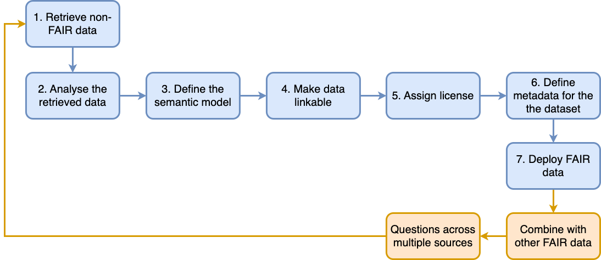
  <figcaption>
    <strong>Figure 3.11:</strong> The FAIRification Process. Adapted from 
    (GO FAIR, 2016)
  </figcaption>
</figure>
<p>A further illustration of how <abbr title="Findable, Accessible, Interoperable, Reusable">FAIR</abbr> can be deployed is the conceptualisation of the <abbr title="FAIR Digital Object">FDO</abbr>, which includes a strong binding of various types of metadata (Schultes &amp; Wittenburg, 2019, pp. 7–9). The members of the (European Commission. Directorate General for Research and Innovation., 2018) [p. 35] underline that the establishment of a <abbr title="Findable, Accessible, Interoperable, Reusable">FAIR</abbr>-compliant ecosystem hinges on the <abbr title="FAIR Digital Object">FDO</abbr> concept, an implementation framework to develop scalable cross-disciplinary capabilities. As illustrated in <a href="#fig:fdo-model">Figure 3.12</a>, data must be assigned <abbr title="Persistent Identifier">PID</abbr>s and accompanied by detailed metadata to ensure reliable discoverability, usability and citation. They also argue to use widely accepted file formats and adhering to community-specific metadata standards as well as vocabularies to support interoperability and reuse.</p>
<figure id="fig:fdo-model" style="text-align: center;">
  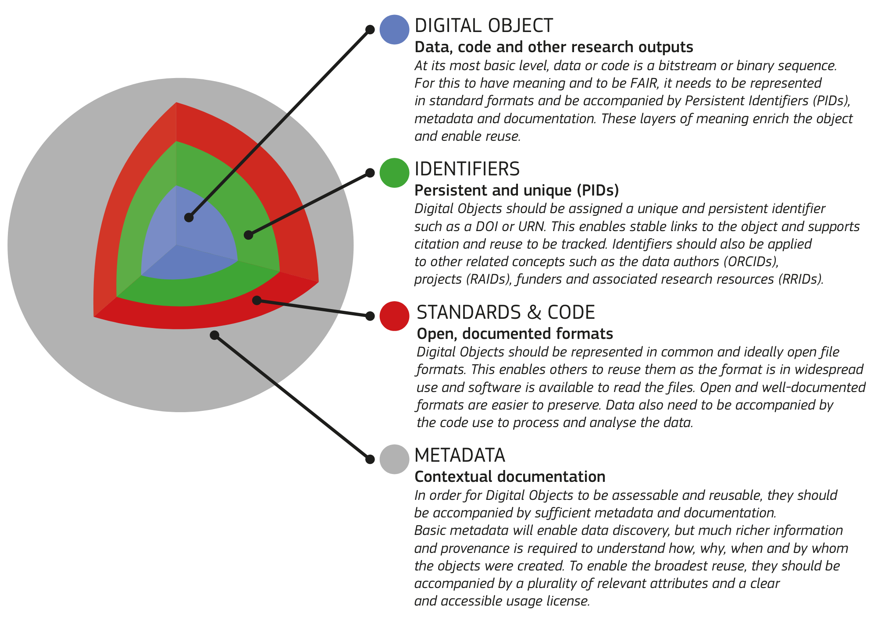
  <figcaption>
    <strong>Figure 3.12:</strong> The FDO Model 
    [(European Commission. Directorate General for Research and Innovation., 2018)]
  </figcaption>
</figure>
<p>(Soiland-Reyes et al., 2022) highlight the potential of <abbr title="Linked Open Data">LOD</abbr> to drive the adoption of <abbr title="FAIR Digital Object">FDO</abbr> within research infrastructures. While this approach provides specifications and tools, the proliferation of standards and metadata vocabularies poses challenges to interoperability and implementation. To address these hurdles, the authors present the use of <abbr title="Findable, Accessible, Interoperable, Reusable">FAIR</abbr> Signposting<sup class="footnote-ref"><a href="#fn94" id="fnref94">[94]</a></sup>, which enables straightforward navigation to core <abbr title="FAIR Digital Object">FDO</abbr> properties, without the need for complex content negotiation heuristics.</p>
<p>In summary, the <abbr title="Findable, Accessible, Interoperable, Reusable">FAIR</abbr> data principles comprise four key principles or 15 facets that provide a comprehensive framework for data management and sharing. While processes are in place to facilitate their implementation, the path to <abbr title="Findable, Accessible, Interoperable, Reusable">FAIR</abbr>ness can be complex, with interoperability and compliance challenges. A key element is the thoughtful mapping of different metadata standards and the strategic incorporation of Linked Data technologies. The <abbr title="FAIR Digital Object">FDO</abbr> approach is equally relevant to the <abbr title="Cultural Heritage">CH</abbr> sector, supporting the preservation, accessibility and sharing of <abbr title="Cultural Heritage">CH</abbr> data and resources. The sharing of code, accompanied by comprehensive documentation, also enhances such an ecosystem by facilitating the exchange of valuable technical knowledge and resources.</p>
<h5 id="subsubsec:care" tabindex="-1">3.3.2.4 CARE Principles for Indigenous Data Governance</h5>
<p>The <abbr title="Collective Benefit, Authority to Control, Responsibility, Ethics">CARE</abbr><sup class="footnote-ref"><a href="#fn95" id="fnref95">[95]</a></sup> Principles were developed to protect Indigenous data sovereignty (Carroll et al., 2020) as complementary guidelines to <abbr title="Findable, Accessible, Interoperable, Reusable">FAIR</abbr>. The principles are as follows:</p>
<ul>
<li>C. <strong>Collective Benefit</strong>:   Data should be collected and used in a way that benefits the     community as a whole, rather than just individuals or organisations.</li>
<li>A. <strong>Authority to Control</strong>:   Indigenous communities should have control over their own data,     including how it is collected, stored, and used.</li>
<li>R. <strong>Responsibility</strong>:   Those who collect and use Indigenous data have a responsibility to     ensure that it is used ethically and responsibly.</li>
<li>E. <strong>Ethics</strong>:   Indigenous data governance should be guided by ethical principles     that reflect the values and beliefs of the community.</li>
</ul>
<p>The concept of adhering to the <abbr title="Collective Benefit, Authority to Control, Responsibility, Ethics">CARE</abbr> principles is vital for promoting equitable data practices. <abbr title="Collective Benefit, Authority to Control, Responsibility, Ethics">CARE</abbr> are built upon existing data reuse principles like <abbr title="Findable, Accessible, Interoperable, Reusable">FAIR</abbr> but also integrate the efforts of Indigenous-led networks focused on Indigenous data governance and research control. While <abbr title="Findable, Accessible, Interoperable, Reusable">FAIR</abbr> emphasise data accessibility, <abbr title="Collective Benefit, Authority to Control, Responsibility, Ethics">CARE</abbr> go beyond that by considering actions aligned with the needs and intentions of individuals and communities connected to the data (Carroll et al., 2021). By embedding CARE-informed data practices into project design, the ethical and responsible use of Indigenous data can be enabled to improve inclusive policies and services (Robinson et al., 2021).</p>
<h5 id="subsubsec:collections-data" tabindex="-1">3.3.2.5 Collections as Data</h5>
<p>In the same vein of <abbr title="Findable, Accessible, Interoperable, Reusable">FAIR</abbr> and <abbr title="Collective Benefit, Authority to Control, Responsibility, Ethics">CARE</abbr> should be mentioned the that originated from a meeting of <abbr title="Galleries, Libraries, Archives, and Museums">GLAM</abbr> practitioners in Vancouver, Canada in April 2023 that builds on the <sup class="footnote-ref"><a href="#fn96" id="fnref96">[96]</a></sup> done in 2017 (Padilla et al., 2017). The statement highlights the growing global engagement with collections as data. It promotes the responsible computational use of collections to empower memory, knowledge and data practitioners. It emphasises ethical concerns, openness and participatory design, as well as the need for transparent documentation and sustainable infrastructure. The statement, comprising of ten recommendations, also recognises the potential impact of data consumption by <abbr title="Artificial Intelligence">AI</abbr>, and the importance of considering climate impacts and exploitative labour (Padilla et al., 2023). More specifically, the following ten principles have been established for anyone with (meta)data stewardship responsibilities:</p>
<ol>
<li>Collections as Data development aims to encourage computational use     of digitised and born digital collections.</li>
<li>Collections as Data stewards are guided by ongoing ethical     commitments.</li>
<li>Collections as Data stewards aim to lower barriers to use.</li>
<li>Collections as Data designed for everyone serve no one.</li>
<li>Shared documentation helps others find a path to doing the work.</li>
<li>Collections as Data should be made openly accessible by default,     except in cases where ethical or legal obligations preclude it.</li>
<li>Collections as Data development values interoperability.</li>
<li>Collections as Data stewards work transparently in order to develop     trustworthy, long-lived collections.</li>
<li>Data as well as the data that describe those data are considered in     scope.</li>
<li>The development of collections as data is an ongoing process and     does not necessarily conclude with a final version.</li>
</ol>
<p>In a final report, (Padilla et al., 2023) underscore the transformative potential of the Collections as Data paradigm, particularly in the context of <abbr title="Galleries, Libraries, Archives, and Museums">GLAM</abbr>s. The principles and case studies highlighted in the report offer a roadmap for organisations to responsibly and ethically engage with their collections in the digital era. It is imperative to recognise that the journey towards fully realising its potential is ongoing and requires a commitment to continual evaluation and adaptation. This involves not only adhering to established principles but also being responsive to emerging technological trends, societal changes, and evolving ethical considerations. The role of <abbr title="Artificial Intelligence">AI</abbr> in shaping the future of Collections as Data is particularly noteworthy. As <abbr title="Artificial Intelligence">AI</abbr> continues to advance, it offers both opportunities and challenges in terms of enhancing access and insights into collections while also necessitating careful consideration of ethical implications, such as bias and privacy. Furthermore, the growing emphasis on climate impacts and sustainable practices in data stewardship is a crucial aspect that aligns with global efforts towards environmental responsibility.</p>
<p>Building on the discussion of the principles and initiatives surrounding Collections as Data, an in-depth analysis was carried out to assess the compliance of repositories, projects and platforms from six organisations with the checklist, namely the British Library<sup class="footnote-ref"><a href="#fn97" id="fnref97">[97]</a></sup>, the National Library of Scotland<sup class="footnote-ref"><a href="#fn98" id="fnref98">[98]</a></sup>, <abbr title="Library of Congress">LoC</abbr><sup class="footnote-ref"><a href="#fn99" id="fnref99">[99]</a></sup>, the Royal Danish Library<sup class="footnote-ref"><a href="#fn100" id="fnref100">[100]</a></sup>, Meemoo<sup class="footnote-ref"><a href="#fn101" id="fnref101">[101]</a></sup>, and the Miguel de Cervantes Virtual Library<sup class="footnote-ref"><a href="#fn102" id="fnref102">[102]</a></sup> (Candela et al., 2023, p. 13). Although several institutions have opened access to their collections through <abbr title="Application Programming Interface">API</abbr>s, such as <abbr title="International Image Interoperability Framework">IIIF</abbr>s capabilities, challenges remain in fully embracing the Collections as Data principles. Barriers include resource limitations and the balance between making collections widely available through simplified access and downloads. In addition, different items within the checklist may require different levels of maturity and prioritisation, often requiring collaborative efforts. Initial results show that the checklist is a valuable tool for identifying relevant issues for individual institutions, although prioritisation may vary according to context and user needs. Collaborative initiatives between institutions are underway to improve the practical implementation and user experience, particularly in the structuring of datasets (Candela et al., 2023, pp. 20–21).</p>
<p>While there are still relatively few examples of institutions that have fully adopted the Collections as Data principles, several case studies – such as at the Royal Library of Belgium, which is materialised through DATA-KBR-BE<sup class="footnote-ref"><a href="#fn103" id="fnref103">[103]</a></sup> (see Chambers et al., 2021) – and initiatives offer valuable insights. For instance, (Candela et al., 2023) [p. 7] outline a checklist tailored to <abbr title="Galleries, Libraries, Archives, and Museums">GLAM</abbr> institutions to publish Collections as Data<sup class="footnote-ref"><a href="#fn104" id="fnref104">[104]</a></sup>. They devised 11 criteria, including the provision of clear licensing for dataset reuse without restrictions, citation guidelines, comprehensive documentation, the use of public platforms, sharing examples of dataset use, structuring the data, providing machine-readable metadata, participation in collaborative edition platforms, offering <abbr title="Application Programming Interface">API</abbr> access to the repository, developing a dedicated portal page, and defining clear terms of use. These recommendations serve as a structured framework to enhance accessibility, usability, and interoperability, fostering engagement with cultural and historical collections.</p>
<p>A further notable advancement that has been done in the area of publishing Collections as Data is the contribution of  They have outlined a series of recommendations for developing datasheets or modular templates designed for <abbr title="Cultural Heritage">CH</abbr> datasets. This initiative holds significant importance for <abbr title="Galleries, Libraries, Archives, and Museums">GLAM</abbr>s, facilitating the structured organisation of their data, notably for seamless integration with <abbr title="Machine Learning">ML</abbr> tools where they propose to provide a description of how content have been influenced by digitisation. Their work highlights the need for documentation, focusing on tailored metrics, biases, and system integration. The proposed datasheets aim to detail the creation, selection, and digitisation processes, enhancing transparency and addressing the distinctive challenges of digital <abbr title="Cultural Heritage">CH</abbr> data. Emphasising a narrative approach to articulating biases, the author acknowledges the complex historical context and ethical implications.</p>
<h3 id="sec:linkeddata" tabindex="-1">3.4 Open Web Platform and Linked Data</h3>
<p>The web, created at the <abbr title="European Organization for Nuclear Research">CERN</abbr> in 1989 by Tim Berners-Lee<sup class="footnote-ref"><a href="#fn105" id="fnref105">[105]</a></sup>, has enabled scholars and <abbr title="Cultural Heritage">CH</abbr> practitioners to access and analyse vast amounts of data in new ways, thereby opening the door to the creation of federated datasets and <abbr title="Knowledge Graph">KG</abbr>s. At the heart of this transformation are two pivotal concepts: the Open Web Platform and Linked Data. The Open Web Platform refers to a set of technologies and standards that allow for the creation and sharing of content on the web. Linked Data, on the other hand, refers to a set of principles and technologies that enable the publication and interlinking of data on the web, creating a web of data that can be easily navigated and used by humans and machines alike.</p>
<p>Recognising the Web as an environment that supports a wide range of applications beyond traditional browser-based interactions is becoming increasingly important. Platforms such as social networks like Facebook, Twitter, Instagram, and Mastodon, streaming services such as Netflix and Disney+, as well as cloud-based applications, all leverage web technologies even when not accessed via a traditional web browser. These platforms are integral to the web ecosystem, highlighting the web’s role as a foundational platform for diverse digital interactions and data exchanges.</p>
<p>In the context of the Internet, it is important to note that much of what we know today about it is the result of developments by many individuals and organisations. However, a significant milestone was the development of the TCP/IP protocol by Vinton Cerf and Robert E. Kahn in the 1970s (see Cerf &amp; Kahn, 1974). This protocol became the standard networking protocol on the ARPANET in 1983, marking the beginning of the modern Internet (Leiner et al., 1997). Understanding the differentiation between the Internet and the web is crucial. The former is a global network of interconnected computers that communicate using Internet protocols, forming the infrastructure that enables online communication. The web, or World Wide Web, is a service built on top of the Internet, leveraging <abbr title="Hypertext Transfer Protocol">HTTP</abbr> to transmit data. While the Internet provides the underlying connectivity, the web offers a way to access and share information through websites and links. This differentiation is vital in comprehending how the web, as a part of the Internet, has evolved into a versatile and ubiquitous platform supporting a wide array of applications.</p>
<p>This section, divided into five subsections, explores some of the key concepts underlying the Open Web Platform and Linked Data, and their applications in the <abbr title="Cultural Heritage">CH</abbr> field.</p>
<p>First, <a href="#sub:webarchi">3.4.1</a> examines the foundational principles and technologies that underpin the Open Web Platform. This includes an overview of principles, protocols such as <abbr title="Hypertext Transfer Protocol">HTTP</abbr>, and the use of <abbr title="Uniform Resource Identifier">URI</abbr>s to identify resources on the web. This part also explores the different types of web architectures such as the client-server model or the concept of web services, which allow for the exchange of data and functionality across different applications and systems.</p>
<p><a href="#sub:semanticweb">3.4.2</a> explores the vision of the web as a giant, interconnected database of structured data that can be queried and manipulated by machines. The subsection examines the technologies and standards that make up the Semantic Web, including <abbr title="Resource Description Framework">RDF</abbr>, <abbr title="RDF Schema">RDFS</abbr>, <abbr title="Web Ontology Language">OWL</abbr>, and <abbr title="SPARQL Protocol and RDF Query Language">SPARQL</abbr>.</p>
<p>Subsection <a href="#sub:ldprinciples">3.4.3</a> examines the set of principles designed to promote the publication and interlinking of data on the web. The subsection explores the four principles of Linked Data - using <abbr title="Uniform Resource Identifier">URI</abbr>s to identify resources, using <abbr title="Hypertext Transfer Protocol">HTTP</abbr> to retrieve resources, providing machine-readable data, and linking data to other data.</p>
<p>Subsection <a href="#sub:5star">3.4.4</a> examines the set of criteria for publishing data on the web in a way that makes it easily discoverable, accessible, and usable. The subsection describes the Five-Star and Seven-Star deployment schemes, which include criteria such as providing data in a structured format, using open standards, and providing a machine-readable license.</p>
<p>Finally, <a href="#sub:5star">3.4.5</a> explores the specific application of <abbr title="Linked Open Data">LOD</abbr> in the <abbr title="Cultural Heritage">CH</abbr> domain. The subsection provides examples of how <abbr title="Cultural Heritage Institution">CHI</abbr>s such as museums, libraries, and archives are using Linked Data to make their datasets more accessible and discoverable on the web.</p>
<p>Overall, this section provides a comprehensive overview of the key concepts and technologies underlying the web as an open and linked platform, and their applications in the <abbr title="Cultural Heritage">CH</abbr> field and more broadly for any scientific endeavours as that the web started with <em>‘the philosophy that much academic information should be freely available to anyone’</em> (Berners-Lee, 1991; Nelson &amp; Van de Sompel, 2022). Through exploring these concepts, we can gain a deeper understanding of how the web is evolving into a more open, interconnected, and data-driven platform, and how this evolution is transforming the way we access, use, and share information.</p>
<h4 id="sub:webarchi" tabindex="-1">3.4.1 Web Architecture</h4>
<p>The web architecture has played a very important role in the development of scholarly research and <abbr title="Cultural Heritage">CH</abbr> practices, enabling new forms of collaboration, data sharing and interdisciplinary research. By providing a standardised and interoperable framework based on open standards for sharing and accessing data (Berners-Lee, 2010), it has facilitated the open exchange of information, even if citation, i.e. has always been an issue, particularly for scholarly outputs (Lagoze et al., 2012, p. 2223).</p>
<p>Web architecture is a conceptual framework led by the <abbr title="World Wide Web Consortium">W3C</abbr> that underpins and sustain the World Wide Web (Jacobs &amp; Walsh, 2004), created to be (Berners-Lee et al., 1994). It encompasses the architectural bases of identification, interaction, and format – also referred to as representation where <abbr title="Hypertext Transfer Protocol">HTTP</abbr> provides the technical mechanisms for transmitting and accessing information.</p>
<p>The web architecture is based on a set of identifiers, such as <abbr title="Uniform Resource Identifier">URI</abbr>s, which are used to uniquely identify resources on the web. These identifiers play a crucial role in enabling users to find, access, and share information on the web, and they help to ensure that web-based systems are both user-friendly and interoperable. Here, it is valuable to distinguish between three key concepts: <abbr title="Uniform Resource Identifier">URI</abbr>, <abbr title="Uniform Resource Locator">URL</abbr>, and <abbr title="Uniform Resource Name">URN</abbr>, as a <abbr title="Uniform Resource Identifier">URI</abbr> can be further classified as a locator, a name, or both (Berners-Lee et al., 2005, p. 7) – as shown in <a href="#fig:uri-url-urn">Figure 3.13</a>.</p>
<ul>
<li><strong><abbr title="Uniform Resource Identifier">URI</abbr></strong>:   It is the overarching term encompassing both     <abbr title="Uniform Resource Locator">URL</abbr>s and     <abbr title="Uniform Resource Name">URN</abbr>s. It serves     as a generic identifier for any resource on the web.     <abbr title="Uniform Resource Identifier">URI</abbr>s can be used     to uniquely identify resources, regardless of the specific naming or     addressing scheme employed.</li>
<li><strong><abbr title="Uniform Resource Locator">URL</abbr></strong>:   It is a subset of <abbr title="Uniform Resource Identifier">URI</abbr>s and refers to web addresses that     specify not only the resource’s identity but also its location or     how to access it. <abbr title="Uniform Resource Locator">URL</abbr>s often include the protocol (such as     <abbr title="Hypertext Transfer Protocol">HTTP</abbr>) and the     resource’s specific location (e.g., a domain and path).</li>
<li><strong><abbr title="Uniform Resource Name">URN</abbr></strong>:   It is another subset of <abbr title="Uniform Resource Identifier">URI</abbr>s that emphasise the resource’s identity     rather than its location or how to access it.     <abbr title="Uniform Resource Name">URN</abbr>s are designed     to be persistent and unique, making them suitable for resources that     are intended to be recognised and referenced over time. While URLs     may change as resources move or evolve, <abbr title="Uniform Resource Name">URN</abbr>s should remain constant.</li>
</ul>
<figure id="fig:uri-url-urn" style="text-align: center;">
  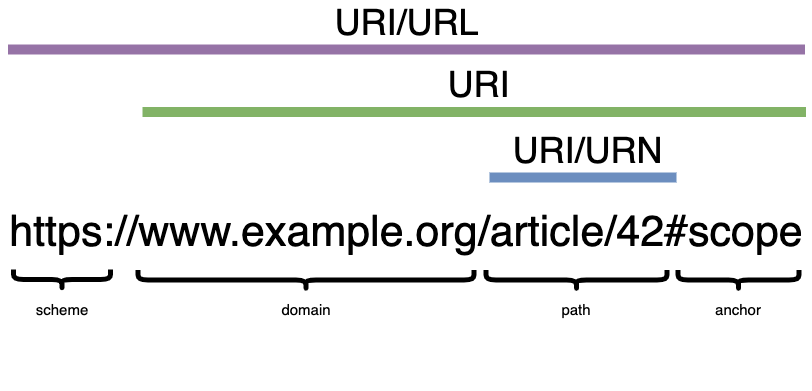
  <figcaption>
    <strong>Figure 3.13:</strong> Overlap and Difference between URI, URL, and URN
  </figcaption>
</figure>
<p>Interaction between web agents, i.e. a person or a piece of software acting in the information space on behalf of a person, entity or process, over a network involves <abbr title="Uniform Resource Identifier">URI</abbr>s, messages and data. Web protocols, such as <abbr title="Hypertext Transfer Protocol">HTTP</abbr>, are message-based. Messages can contain data, resource metadata, message data, and even metadata about the metadata of the message, typically for integrity checking (Jacobs &amp; Walsh, 2004).</p>
<p>The Web Architecture allows for multiple Representations of a Resource. In this context, a data format specification becomes pivotal, encapsulating an agreement on how to correctly interpret the representation of data, as articulated by (Jacobs &amp; Walsh, 2004):</p>
<blockquote>
<p>A data format specification embodies an agreement on the correct interpretation of representation data. The first data format used on the Web was Hypertext Markup Language (HTML). Since then, data formats have grown in number. Web architecture does not constrain which data formats content providers can use. This flexibility is important because there is constant evolution in applications, resulting in new data formats and refinements of existing formats. Although Web architecture allows for the deployment of new data formats, the creation and deployment of new formats (and agents able to handle them) is expensive. Thus, before inventing a new data format (or “meta” format such as XML), designers should carefully consider re-using one that is already available.</p>
</blockquote>
<p>Access can also be mediated by content negotiation, which is a mechanism employed in web communication to determine the most appropriate representation of a resource to be sent to a client based on the client’s preferences and the available representations (Lagoze et al., 2012, pp. 2223–2224).</p>
<p>At its core, web architecture is based on a set of architectural principles that guide the design and development of web-based systems and applications. These principles include concepts such as orthogonality, extensibility, error handling, and protocol-based interoperability. Orthogonality allows the evolution of identification, interaction, and representation independently. Extensibility is key, enabling technology to adapt without compromising interoperability. Error handling addresses diverse errors, from predictable to unpredictable, ensuring seamless correction. Finally, the web’s protocol-based interoperability fosters communication across varied contexts, outlasting entities and facilitating the longevity of shared technology (Jacobs &amp; Walsh, 2004). Overall, these principles help to ensure that the web remains robust, reliable, and flexible.</p>
<p>Web architectures can be categorised into several types, each offering a specific approach to designing and structuring web-based systems. Here, I will focus on the following three types of architectures – shown in <a href="#fig:webarchi-types">Figure 3.14</a>: the client-server model, the three-tier model, and <abbr title="service-oriented architecture">SOA</abbr>.</p>
<figure id="fig:webarchi-types" style="text-align: center;">
  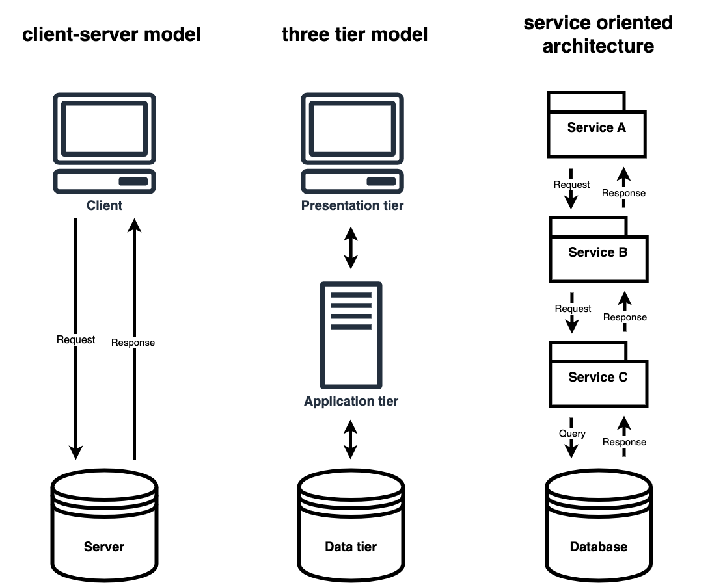
  <figcaption>
    <strong>Figure 3.14:</strong> Types of Web Architectures: Client-server Model, Three Tier Model, SOA
  </figcaption>
</figure>
<p>The client-server model partitions the responsibilities between two key components: the client, which represents the user interface or user-facing part of the system, and the server, which is responsible for storing and serving data. In this model, clients and servers communicate to perform various functions, such as requesting and delivering information (Oluwatosin, 2014, pp. 67–68).</p>
<p>The three-tier model is another significant web architecture that introduces an additional layer between the client and server, resulting in a three-part structure. This architecture is designed to further segregate and manage the system’s components (Wijegunaratne &amp; Fernandez, 1998, pp. 41–42). The three tiers typically consist of the presentation tier (the user interface), the application tier (responsible for logic and processing), and the data tier (where data storage and retrieval occur).</p>
<p><abbr title="service-oriented architecture">SOA</abbr> is a web architecture that emphasises the creation and utilisation of services as the central building blocks of a system. Services in this context are self-contained, modular units of functionality that can be accessed and used independently by various components of a web application. These services are designed to be loosely coupled, meaning they can interact with other services without a deep dependency on one another. Overall, <em>‘<abbr title="service-oriented architecture">SOA</abbr> is a paradigm for organizing and packaging units of functionality as distinct services, making them available across a network to be invoked via defined interfaces, and combining them into solutions to business problems.’</em> (Laskey &amp; Laskey, 2009, p. 101).</p>
<p><abbr title="service-oriented architecture">SOA</abbr> can encompass various communication protocols, such as <abbr title="Representational state transfer">REST</abbr>, which is a prominent architectural style for designing networked applications (Fielding, 2000), primarily leveraging <abbr title="Hypertext Transfer Protocol">HTTP</abbr>. <abbr title="Representational state transfer">REST</abbr>ful services, i.e. applications that complies with the <abbr title="Representational state transfer">REST</abbr> constraints, are designed to work with existing capabilities rather than creating new standards, frameworks and technologies (Battle &amp; Benson, 2008, p. 62). These services are built around a set of constraints, including statelessness, a uniform interface, resource-based identification, and the use of standard request methods such as <code>GET</code>, <code>POST</code>, <code>PUT</code>, and <code>DELETE</code> (Tilkov, 2017).</p>
<p>The following are all the specified request methods enabling clients to perform a wide range of operations on resources<sup class="footnote-ref"><a href="#fn106" id="fnref106">[106]</a></sup> (Fielding et al., 2022, p. 72):</p>
<ul>
<li><strong>GET</strong>:   Transfer a current representation of the target resource.</li>
<li><strong>HEAD</strong>:   Same as <code>GET</code>, but only transfer the status line and header section.</li>
<li><strong>POST</strong>:   Perform resource-specific processing on the request payload.</li>
<li><strong>PUT</strong>:   Replace all current representations of the target resource with the     request payload.</li>
<li><strong>DELETE</strong>:   Remove all current representations of the target resource.</li>
<li><strong>CONNECT</strong>:   Establish a tunnel to the server identified by the target resource.</li>
<li><strong>OPTIONS</strong>:   Describe the communication options for the target resource.</li>
<li><strong>TRACE</strong>:   Perform a message loop-back test along the path to the target     resource.</li>
</ul>
<p><abbr title="Representational state transfer">REST</abbr>ful services, with their emphasis on using standardised <abbr title="Hypertext Transfer Protocol">HTTP</abbr> methods and resource-based identification, offer a versatile means of designing web services and <abbr title="Application Programming Interface">API</abbr>s. Their simplicity and compatibility with the web’s core protocols make them a practical choice for implementing various web-based applications. In the context of the Semantic Web, <abbr title="Representational state transfer">REST</abbr>ful services can serve as a crucial component for accessing and exchanging graph data (see Lee &amp; Kim, 2011).</p>
<h4 id="sub:semanticweb" tabindex="-1">3.4.2 The Semantic Web</h4>
<p>The Semantic Web is (Berners-Lee et al., 2001, p. 35). It was already in (Berners-Lee, 1999)'s vision and prediction that the web, in its next phase, could be understood by machines, i.e. shifting from a traditional web of documents to a web of data. (Bauer &amp; Kaltenböck, 2012) [p. 25] articulates that <em>‘[t]he basic idea of a semantic web is to provide cost-efficient ways to publish information in distributed environments. To reduce costs when it comes to transferring information among systems, standards play the most crucial role.’</em>.</p>
<p>At the heart of the Semantic Web lies the foundation of <abbr title="Resource Description Framework">RDF</abbr>. The original <abbr title="Resource Description Framework">RDF</abbr> specification, known as the <abbr title="Resource Description Framework">RDF</abbr> Model and Syntax, serves as the underlying mechanism that establishes the basic framework of <abbr title="Resource Description Framework">RDF</abbr>. This framework provides the cornerstone to facilitate the exchange of data among automated processes (Lassila &amp; Swick, 1999). A fundamental component within <abbr title="Resource Description Framework">RDF</abbr> is the <abbr title="Resource Description Framework">RDF</abbr> triple as shown in <a href="#eq:rdf-triple">Equation 3.1</a>, comprising three essential elements: the subject (<em>s</em>), the predicate (<em>p</em>), and the object (<em>o</em>). In an <abbr title="Resource Description Framework">RDF</abbr> triple, the subject is the resource or entity about which a statement is made, the predicate is the relationship or property describing that statement, and the object is the value or resource associated with the statement.</p>
<div id="eq:rdf-triple" style="display: flex; flex-direction: column; align-items: center;">
  <p>
    <em>s</em>
    <span style="display: inline-flex; align-items: center;">
      <span style="position: relative; margin: 0 5px;">
        →
        <span style="position: absolute; top: -1em; left: 50%; transform: translateX(-50%); font-size: 0.8em;">
          <em>p</em>
        </span>
      </span>
    </span>
    <em>o</em>
  </p>
  <p style="margin-top: 0.5em; font-style: italic;"><strong>Equation 3.1:</strong> Triple Pattern Notation</p>
</div>
<p><abbr title="Resource Description Framework">RDF</abbr> statements are reminiscent of the semiotic triangle of (Ogden &amp; Richards, 1930) [p. 11] — as illustrated in <a href="#fig:triangle">Figure 3.15</a> — where the referent is tantamount to the predicate of a triple. This analogy emphasises the intrinsic relationship between communication, representation and knowledge organisation. It highlights how both language and structured data rely on the establishment of connections and relationships to effectively convey meaning.</p>
<figure id="fig:triangle" style="text-align: center;">
  
  <figcaption>
    <strong>Figure 3.15:</strong> The Semiotic Triangle by [(Ogden &amp; Richards, 1930)].
  </figcaption>
</figure>
<p><a href="#fig:rdf-graph">Figure 3.16</a> is an <abbr title="Resource Description Framework">RDF</abbr> graph about myself and where I was born leveraging mostly <a href="http://Schema.org" target="_blank" rel="noopener noreferrer">Schema.org</a><sup class="footnote-ref"><a href="#fn107" id="fnref107">[107]</a></sup>, a collaborative project and Linked Data vocabulary used to create structured data markup on websites. This graph consists of vertices and edges, where vertices can be either <abbr title="Uniform Resource Identifier">URI</abbr>s or literal values, and the edges represent relationships between them. In plain language, the graph asserts that there is a person represented by the <abbr title="Uniform Resource Locator">URL</abbr> <code>https://www.example.org/julien-a-raemy</code>, who has a given name ‘Julien Antoine’ and a family name ‘Raemy’. The person’s birthplace is specified as an <abbr title="Uniform Resource Locator">URL</abbr> from Wikidata, which is of type <code>schema:Place</code>. Additionally, there’s a statement indicating that the birthplace is named ‘Fribourg’.</p>
<figure id="fig:rdf-graph" style="text-align: center;">
  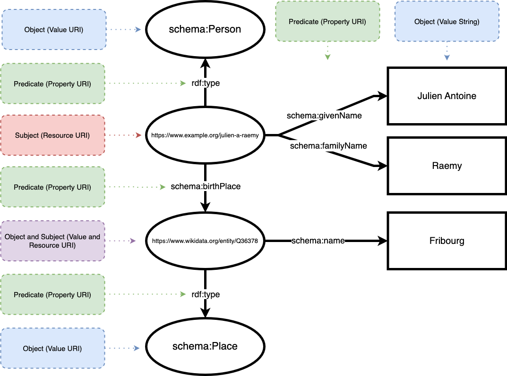
  <figcaption>
    <strong>Figure 3.16:</strong> Example of an RDF Graph
  </figcaption>
</figure>
<p>In the subject-predicate-object syntax of <abbr title="Resource Description Framework">RDF</abbr>, the subject can be either a <abbr title="Uniform Resource Identifier">URI</abbr> or a blank node<sup class="footnote-ref"><a href="#fn108" id="fnref108">[108]</a></sup>. The predicate is an <abbr title="Uniform Resource Identifier">URI</abbr>, like <code>schema:givenName</code>, and its aim is to establish connections between subjects and objects, describing the nature of the relationship. The object is either an <abbr title="Uniform Resource Identifier">URI</abbr>, a blank node or a literal, such as or . Objects can also act as subjects if they are identifiable, allowing for the expansion and interconnection of <abbr title="Resource Description Framework">RDF</abbr> graphs.</p>
<p>The original specification proved too broad, leading to confusion and a subsequent effort yielded an updated specification and new documents such as <abbr title="Resource Description Framework">RDF</abbr>/XML (Beckett, 2004), which express an <abbr title="Resource Description Framework">RDF</abbr> graph as <abbr title="Extensible Markup Language">XML</abbr>, a syntax specification recommendation in 2004 and later revised in 2014 as part of the RDF 1.1 document set (Gandon &amp; Schreiber, 2014), which also introduces the notion of an <abbr title="Resource Description Framework">RDF</abbr> dataset that can represent multiple graphs (Cyganiak et al., 2014). <a href="lst:rdfxml">Code Snippet 3.4</a> is the <abbr title="Resource Description Framework">RDF</abbr>/<abbr title="Extensible Markup Language">XML</abbr> serialisation of the earlier graph.</p>
<figure id="lst:rdfxml" style="text-align: center;">
 <figcaption>
<strong>Code 3.4:</strong> RDF/XML Serialisation of the RDF Graph
</figcaption>
 <!-- Wrap the code block in a container that is centered overall,
 but text is left-aligned inside. -->
<div style="display: inline-block; text-align: left;">
<pre><code class="language-xml">
&lt;?xml version="1.0" encoding="utf-8" ?&gt;
&lt;rdf:RDF xmlns:rdf="http://www.w3.org/1999/02/22-rdf-syntax-ns#"
         xmlns:schema="http://schema.org/"&gt;
  &lt;schema:Person rdf:about="https://www.example.org/julien-a-raemy"&gt;
    &lt;schema:givenName&gt;Julien Antoine&lt;/schema:givenName&gt;
    &lt;schema:familyName&gt;Raemy&lt;/schema:familyName&gt;
    &lt;schema:birthPlace&gt;
      &lt;schema:Place rdf:about="https://www.wikidata.org/entity/Q36378"&gt;
        &lt;schema:name&gt;Fribourg&lt;/schema:name&gt;
      &lt;/schema:Place&gt;
    &lt;/schema:birthPlace&gt;
  &lt;/schema:Person&gt;
&lt;/rdf:RDF&gt;
</code></pre>
</div>
</figure>
<p>(Idehen, 2017) highlights a significant concern regarding the earlier representations of the Semantic Web and how it is portrayed. These portrayals often place undue emphasis on the pivotal role of <abbr title="Extensible Markup Language">XML</abbr> as an ostensibly obligatory component in Semantic Web development. To him, this historical perspective, particularly prominent around the year 2000, erroneously positioned <abbr title="Extensible Markup Language">XML</abbr> as a superior alternative to <abbr title="Hypertext Markup Language">HTML</abbr> for constructing the Semantic Web.</p>
<p>As illustrated by <a href="#fig:semweb-cake">Figure 3.17</a>, (Idehen, 2017)’s revision embodies a Semantic Web layer cake that encompasses several technical or conceptual components.</p>
<ul>
<li><strong>Smart Applications and Services</strong>:   These systems are constructed declaratively, as opposed to using an     imperative approach, with a flexible integration of data models,     interaction, and visualisation.</li>
<li><strong>Trust</strong>:   It is established through verifiable claims regarding identity, the     source of content, and related issues.</li>
<li><strong>Proof</strong>:   It provides a basis for building trust, such as leveraging     authentication tiers.</li>
<li><strong>Transmission Security</strong>:   It pertains to safeguarding data during its transit over networks.     This protection is achieved by implementing established protocols,     such as <abbr title="Transport Layer Security">TLS</abbr>,     which includes inherent cryptographic support for ensuring the     confidentiality and integrity of data as it travels across     communication channels.</li>
<li><strong>Unifying Logic</strong>:   In this component, <abbr title="First-order logic">FOL</abbr><sup class="footnote-ref"><a href="#fn109" id="fnref109">[109]</a></sup> assumes a central role by     providing the fundamental schema for modelling and comprehending     data. These propositions serve as the core building blocks for     problem-solving and decision-making, offering a universal and     abstract structure that can be applied across various domains and     applications<sup class="footnote-ref"><a href="#fn110" id="fnref110">[110]</a></sup>.</li>
<li><strong>Rules</strong>:   They serve as the foundation for conducting reasoning and inference,     such as using <abbr title="Shapes Constraint Language">SHACL</abbr>, which is used to specify integrity     constraints for data entry when constructing structured data with     <abbr title="Resource Description Framework">RDF</abbr>. At this     level, mapping languages such as <abbr title="RDB to RDF Mapping Language">R2RML</abbr> and <abbr title="RDF Mapping Language">RML</abbr> have a part to play.     <abbr title="RDB to RDF Mapping Language">R2RML</abbr> is a     powerful language for expressing customised mappings from relational     databases to <abbr title="Resource Description Framework">RDF</abbr> datasets (see Das et al., 2012). On     the other hand, <abbr title="RDF Mapping Language">RML</abbr> extends these capabilities beyond     relational databases, allowing for the transformation of various     types of data sources, including <abbr title="Comma-separated values">CSV</abbr>, <abbr title="Extensible Markup Language">XML</abbr>, and <abbr title="JavaScript Object Notation">JSON</abbr> files, into <abbr title="Resource Description Framework">RDF</abbr> (see Dimou &amp; Vander Sande, 2022). Both languages     are instrumental in bridging the gap between     non-<abbr title="Resource Description Framework">RDF</abbr> data     sources and the Semantic Web.</li>
<li><strong>Query</strong>:   This can be achieved by employing <abbr title="SPARQL Protocol and RDF Query Language">SPARQL</abbr> for retrieving and manipulating data     on structured <abbr title="Resource Description Framework">RDF</abbr> statements.</li>
<li><strong>Dictionaries</strong>:   Collections of formal definitions (also referred to as vocabularies     or ontologies) that describe entity and entity relationship types.     They provide a structured framework for defining and organising     concepts, properties, and relationships, which aids in modelling     knowledge in a systematic and machine-readable manner. Some of the     commonly used dictionary languages include     <abbr title="RDF Schema">RDFS</abbr>, which is     a simple vocabulary language used to define basic schema information     for <abbr title="Resource Description Framework">RDF</abbr>,     <abbr title="Simple Knowledge Organization System">SKOS</abbr> designed     for representing and organising some <abbr title="Knowledge Organisation Systems">KOS</abbr>s, particularly in the context of     thesauri and taxonomies, as well as <abbr title="Web Ontology Language">OWL</abbr>.</li>
<li><strong>Abstract Language</strong>:   It is done by leveraging the <abbr title="Resource Description Framework">RDF</abbr> syntax (as shown in <a href="#eq:rdf-triple">Equation 3.1</a>) as a     basis.</li>
<li><strong>Sentence Part Identifiers</strong>:   To identify resources on the web, <abbr title="Internationalized Resource Identifier">IRI</abbr>s<sup class="footnote-ref"><a href="#fn111" id="fnref111">[111]</a></sup> or <abbr title="Uniform Resource Identifier">URI</abbr>s can be used.</li>
<li><strong>Document Types</strong>:   Different serialisations of <abbr title="Resource Description Framework">RDF</abbr> exist within the Semantic Web, such     as <abbr title="Resource Description Framework">RDF</abbr>/<abbr title="Extensible Markup Language">XML</abbr>, Turtle or     <abbr title="JavaScript Object Notation for Linked Data">JSON-LD</abbr><sup class="footnote-ref"><a href="#fn112" id="fnref112">[112]</a></sup>.</li>
<li><strong>Semantic Web of Linked Data</strong>:   The final component that holds the rest together; originating from     Tim Berners-Lee’s vision (see <a href="#sub:ldprinciples">3.4.3</a>).</li>
</ul>
<figure id="fig:semweb-cake" style="text-align: center;">
  
  <figcaption>
    <strong>Figure 3.17:</strong> Tweaked Semantic Web Technology Layer Cake 
    by (Idehen, 2017)
  </figcaption>
</figure>
<p>Following on from the components outlined in <a href="#fig:semweb-cake">Figure 3.17</a>, I will look in more detail at further <abbr title="Resource Description Framework">RDF</abbr> features, serialisations, and <abbr title="Resource Description Framework">RDF</abbr>-based standards for representing, querying or validating graphs. In doing so, I will touch on some considerations related to the inference and reasoning of <abbr title="Resource Description Framework">RDF</abbr> graphs.</p>
<p><a href="#lst:turtle">Code Snippet 3.5</a> is a Turtle serialisation of <a href="#fig:rdf-graph">Figure 3.16</a>. Turtle, a <abbr title="World Wide Web Consortium">W3C</abbr> standard, is a notation is a way to express this data in a structured and machine-readable format (Wood et al., 2014, p. 44). It is a common syntax used for representing <abbr title="Resource Description Framework">RDF</abbr> data. It allows people to create statements in a more friendly manner than in an <abbr title="Resource Description Framework">RDF</abbr>/<abbr title="Extensible Markup Language">XML</abbr> serialisation (Beckett et al., 2014). Here are some of the most important features:</p>
<ul>
<li><code>@ prefix</code>:   It is used to declare namespace prefixes at the beginning of a     Turtle document. These prefixes are used to shorten     <abbr title="Uniform Resource Identifier">URI</abbr>s, making the     <abbr title="Resource Description Framework">RDF</abbr> data more     readable and helps to avoid repeating long     <abbr title="Uniform Resource Identifier">URI</abbr>s.</li>
<li>Resource Notation:   In Turtle, resources (<abbr title="Uniform Resource Identifier">URI</abbr>s) are typically enclosed in angle     brackets: <code>&lt; &gt;</code>.</li>
<li>Literals:   Literal values like strings, numbers, and dates are represented     directly without angle brackets.</li>
<li>Comments:   Turtle allows for comments, which are preceded by a hash symbol.</li>
</ul>
<figure id="lst:turtle" style="text-align: center;">
 <figcaption>
<strong>Code Snippet 3.5:</strong> Turtle Serialisation of the RDF Graph
</figcaption>
 <!-- Wrap the code block in a container that is centered overall,
 but text is left-aligned inside. -->
<div style="display: inline-block; text-align: left;">
<pre><code>
@ prefix rdf: <http: www.w3.org="" 1999="" 02="" 22-rdf-syntax-ns#=""> .
@ prefix schema: <http: schema.org=""> .
<h1 id="a-small-rdf-graph-about-myself" tabindex="-1">A small RDF graph about myself</h1>
<p><a href="https://www.example.org/julien-a-raemy" target="_blank" rel="noopener noreferrer">https://www.example.org/julien-a-raemy</a>;
rdf:type schema:Person ;
schema:givenName “Julien Antoine” ;
schema:familyName “Raemy” ;
schema:birthPlace <a href="https://www.wikidata.org/entity/Q36378" target="_blank" rel="noopener noreferrer">https://www.wikidata.org/entity/Q36378</a>; .</p>
</http:></http:></code><p><code><a href="https://www.wikidata.org/entity/Q36378" target="_blank" rel="noopener noreferrer">https://www.wikidata.org/entity/Q36378</a>;
rdf:type schema:Place ;
schema:name “Fribourg” .
</code></p></pre><p></p>
</div>
</figure>
<p>To query <abbr title="Resource Description Framework">RDF</abbr>-based graphs, <abbr title="SPARQL Protocol and RDF Query Language">SPARQL</abbr> is leveraged. It is a query language as well as a protocol designed for querying and manipulating <abbr title="Resource Description Framework">RDF</abbr> data. It allows users to retrieve specific information from <abbr title="Resource Description Framework">RDF</abbr> datasets, making it a fundamental tool for working with Linked Data (Wood et al., 2014, pp. 99–100). The <abbr title="SPARQL Protocol and RDF Query Language">SPARQL</abbr> query provided in <a href="">Code Snippet 3.6</a> is aimed at extracting the name of a person from a given <abbr title="Resource Description Framework">RDF</abbr> graph. The query uses <abbr title="Resource Description Framework">RDF</abbr> predicates associated with the given name and family name properties, concatenating them to form the person’s complete name. The answer to the query, based on the provided <abbr title="Resource Description Framework">RDF</abbr> data, would be the complete name of the person, which in this case is ‘Julien Antoine Raemy’. It showcases the versatility of <abbr title="SPARQL Protocol and RDF Query Language">SPARQL</abbr>, offering a flexible and expressive means of interacting with <abbr title="Resource Description Framework">RDF</abbr> data. By specifying patterns and conditions, this query identifies and combines relevant information.</p>
<p>(…) - Code Snippet 3.6</p>
<p>While <abbr title="Resource Description Framework">RDF</abbr>'s simplicity is one of its strengths, it can also pose limitations when it comes to expressing nuanced details, tracing the origins of statements, and addressing the intricacies of logical reasoning. <abbr title="Resource Description Framework">RDF</abbr>'s foundational model, which relies on triples to establish relationships between resources, may not always capture the full depth of knowledge and inferences that more complex <abbr title="Knowledge Representation">KR</abbr> languages or systems can achieve.</p>
<p>As such, <abbr title="Resource Description Framework">RDF</abbr> reification, as expounded by (Massari et al., 2023), emerges as a pivotal mechanism to enrich <abbr title="Resource Description Framework">RDF</abbr>. It stands as a mechanism that allows for the explicit representation of statements about statements in <abbr title="Resource Description Framework">RDF</abbr>. This technique facilitates the modelling of metadata or provenance information about <abbr title="Resource Description Framework">RDF</abbr> triples. In other words, <abbr title="Resource Description Framework">RDF</abbr> reification allows you to describe when and by whom a particular statement was made, adding a layer of context and traceability to <abbr title="Resource Description Framework">RDF</abbr> data. This is particularly valuable in scenarios where data lineage, trustworthiness, and attribution need to be maintained.</p>
<p>Furthermore, <abbr title="Resource Description Framework">RDF</abbr> 1.2 introduces the concept of ‘quoted triples’, i.e. <em>‘an RDF triple that is used as the subject or object of another triple’</em> (Hartig et al., 2023). Quoted triples are a powerful extension to the <abbr title="Resource Description Framework">RDF</abbr> model, enabling the inclusion of entire <abbr title="Resource Description Framework">RDF</abbr> triples within other triples. This feature adds a layer of expressiveness to <abbr title="Resource Description Framework">RDF</abbr>, making it more versatile in representing complex relationships and data structures.</p>
<p>Deduction of entity class membership is an essential aspect of <abbr title="Knowledge Representation">KR</abbr>, and in this regard, <abbr title="RDF Schema">RDFS</abbr> plays a pivotal role (Brickley &amp; Guha, 2014). <abbr title="RDF Schema">RDFS</abbr>, with its foundation in formal semantics, provides a framework for verifying properties like <code>rdfs:domain</code> and <code>rdfs:range</code> associated with given properties (Bruns et al., 2023).</p>
<p><a href="">Code Snippet 3.7</a> showcases how <abbr title="RDF Schema">RDFS</abbr> can be leveraged. In this example, <abbr title="RDF Schema">RDFS</abbr> class and property are specified. For instance, <code>schema:Person</code> and <code>schema:Place</code> are classes using <code>rdf:type</code> <code>rdfs:Class</code>, and property characteristics, including domains and ranges, using <code>rdf:Property</code>, <code>rdfs:domain</code>, and <code>rdfs:range</code> have been defined to create basic <abbr title="RDF Schema">RDFS</abbr>.</p>
<p>(…) - Code Snippet 3.7</p>
<p><abbr title="RDF Schema">RDFS</abbr>, when used in conjunction with other reasoning methods, enhances the overall inferential capabilities of <abbr title="Resource Description Framework">RDF</abbr>, enabling more profound insights and <abbr title="Knowledge Representation">KR</abbr>. For example, <abbr title="Web Ontology Language">OWL</abbr> allows authors to decide how expressive they want to be, given the computational realities involved, which is not the case with <abbr title="RDF Schema">RDFS</abbr>.</p>
<p>Indeed, for modelling ontologies in the Semantic Web, <abbr title="Web Ontology Language">OWL</abbr> is the preferred language. It is a powerful and widely used language for developing ontologies that can be leveraged as metadata vocabularies on the web [(Zeng &amp; Qin, 2022) p. 63] and provides a framework for creating, sharing, and reusing ontologies. <abbr title="Web Ontology Language">OWL</abbr> is a key component in the Semantic Web, enabling the formal representation of knowledge and complex relationships. <abbr title="Web Ontology Language">OWL</abbr> possesses several key features that make it a powerful language for modelling ontologies. Firstly, it provides a well-defined formal semantics, allowing computers to infer new knowledge and make logical deductions based on the information encoded in the ontology. Additionally, <abbr title="Web Ontology Language">OWL</abbr> supports a rich vocabulary of constructs for defining classes, properties, and individuals, enabling the creation of complex and structured ontologies.</p>
<p><a href="">Code Snippet 3.8</a> is an example of an ontology using <abbr title="Web Ontology Language">OWL</abbr> in Turtle. Two classes, <code>ex:Person</code> and <code>ex:Place</code>, along with two properties: <code>hasName</code> and <code>hasBirthPlace</code> have been defined. The <code>ex:Person</code> class is constrained to have a name, which is specified as a datatype property with a string value. Additionally, each <code>ex:Person</code> is required to have a <code>hasBirthPlace</code>, which is defined as an object property with a reference to the <code>ex:Place</code> class.</p>
<p>(…) - Code Snippet 3.8</p>
<p><abbr title="Web Ontology Language">OWL</abbr> is grounded in <abbr title="Description logic">DL</abbr> (Ma &amp; Hitzler, 2009, p. 197), striking a balance between expressiveness and computational complexity, making it well-suited for automated reasoning. There are different versions of <abbr title="Web Ontology Language">OWL</abbr>, including <abbr title="Web Ontology Language">OWL</abbr> Lite, <abbr title="Web Ontology Language">OWL</abbr> <abbr title="Description logic">DL</abbr>, and <abbr title="Web Ontology Language">OWL</abbr> Full, which vary in terms of their expressive power and reasoning capabilities. <abbr title="Web Ontology Language">OWL</abbr> 2, introduced in 2009, extended the original <abbr title="Web Ontology Language">OWL</abbr> specification with additional features and improvements (W3C OWL Working Group, 2012). <a href="">Figure 3.18</a> provides an overview of <abbr title="Web Ontology Language">OWL</abbr>, highlighting its main building blocks in terms of syntax as well as semantics.</p>
<p>(…) Figure 3.18</p>
<p>Turning to <abbr title="Shapes Constraint Language">SHACL</abbr>, a <abbr title="World Wide Web Consortium">W3C</abbr> standard defined in 2017, it provides a valuable framework for validating data graphs against specific shapes and constraints. Shapes are templates that specify the expected structure, properties, and validation rules for a particular class of resources, while constraints are rules or conditions applied to data instances to ensure they conform to the structure and validation criteria defined by a shape. Overall, <abbr title="Shapes Constraint Language">SHACL</abbr> is primarily used for data validation and quality assessment (Knublauch &amp; Kontokostas, 2017).</p>
<p><a href="">Code Snippet 3.9</a> is an example of <abbr title="Shapes Constraint Language">SHACL</abbr> could be used to validate the <abbr title="Resource Description Framework">RDF</abbr> data graph of . The following shapes and constraints have been defined:</p>
<ul>
<li><code>schema:PersonShape</code> which corresponds to <code>schema:Person</code>;</li>
<li><code>schema:PlaceShape</code> which relates to <code>schema:Place</code>;</li>
<li><code>sh:targetClass</code> to specify the target class;</li>
<li><code>sh:path</code> to specify the property path;</li>
<li><code>sh:minCount</code> to ensure that the specified properties are required;</li>
<li><code>sh:nodeKind</code> <code>sh:IRI</code> to specify that the <code>schema:birthPlace</code>     property should have <abbr title="Internationalized Resource Identifier">IRI</abbr> values.</li>
</ul>
<p>(…) Code Snippet 3.9</p>
<p>One thing to realise, however, is that there are limitations when it comes to reasoning with controlled vocabularies and constraints in <abbr title="Shapes Constraint Language">SHACL</abbr>. While it excels in data validation and quality assurance, <abbr title="Shapes Constraint Language">SHACL</abbr> is not inherently a comprehensive reasoning framework. In their study, (Sacramento et al., 2022) [p. 129] noted that there is still a challenge in harnessing the potential of ontologies’ axioms to deduce information and derive implicit facts. While ontologies are instrumental in structuring knowledge and relationships between concepts, the efficient utilisation of axioms for reasoning remains an ongoing challenge.</p>
<h4 id="sub:ldprinciples" tabindex="-1">3.4.3 Linked Data Principles</h4>
<p>By exploiting the core structure of the web’s architecture, Linked Data maximises its potential to enable the widespread distribution of information on a global scale. This approach makes effective use of the fundamental elements of the Web and is consistent with its principles of simplicity, decentralisation and openness. As a result, Linked Data exploits the optimal structural equilibrium of the web, allowing content from disparate servers to be assembled seamlessly into a unified repository of global knowledge. This harmonious convergence of principles has driven the remarkable growth of the Web over the past few decades, demonstrating its ability to provide an integrated platform for information exchange. The four principles of Linked Data, as outlined by (Berners-Lee, 2006) are:</p>
<ol>
<li>Use <abbr title="Uniform Resource Identifier">URI</abbr>s as names     for things</li>
<li>Use <abbr title="Hypertext Transfer Protocol">HTTP</abbr>     <abbr title="Uniform Resource Identifier">URI</abbr>s so that     people can look up those names.</li>
<li>When someone looks up a <abbr title="Uniform Resource Identifier">URI</abbr>, provide useful information, using     the standards (e.g. <abbr title="Resource Description Framework">RDF</abbr>, <abbr title="RDF Schema">RDFS</abbr>, <abbr title="SPARQL Protocol and RDF Query Language">SPARQL</abbr>, etc.)</li>
<li>Include links to other <abbr title="Uniform Resource Identifier">URI</abbr>s so that they can discover more things.</li>
</ol>
<p>By following these principles, Linked Data enables structured data to be published and interlinked on the Web, creating a graph of data that can be accessed and navigated by both humans and machines. These principles are closely related to the Semantic Web, which is an extension of the web that aims to give information well-defined meaning, enabling computers and people to work together more effectively (Heath &amp; Bizer, 2011).</p>
<blockquote>
<p>The glue that holds together the traditional document Web is the hypertext links between <abbr title="Hypertext Markup Language">HTML</abbr> pages. The glue of the data web is <abbr title="Resource Description Framework">RDF</abbr> links. (Bizer et al., 2008, p. 1265)</p>
</blockquote>
<p>Some of the challenges highlighted by (Bizer et al., 2009) as a retrospective ten years after the launch of <abbr title="Resource Description Framework">RDF</abbr> were and still remain an issue:</p>
<ul>
<li><strong>User Interfaces and Interaction Paradigms</strong>:   Challenges persist in designing user interaction paradigms for     applications based on dynamically assembled data. These challenges     include navigating between entities and managing data sources within     an integrated view.</li>
<li><strong>Application Architectures</strong>:   The potential for scalability issues in on-the-fly link traversal     and federated querying suggests that extensive crawling and caching     could become the standard for timely data access.</li>
<li><strong>Schema Mapping and Data Fusion</strong>:   While most applications display data from diverse sources, they     often lack deeper integration. Achieving integration involves     mapping terms from different vocabularies and resolving data     conflicts. Data sources can publish correspondences to help clients     transform data between schemata.</li>
<li><strong>Link Maintenance</strong>:   Link maintenance in evolving sources is a research challenge.     Outdated links can affect system efficiency. Solutions include     periodic link recalculation, data source update feeds, and central     registries.</li>
<li><strong>Licensing</strong>:   Applications using web data need access to specifications governing     data reuse and republishing. Frameworks for publishing such     specifications are vital for encouraging data owners’ participation     and providing legal assurance to data consumers.</li>
<li><strong>Trust, Quality and Relevance</strong>:   Representing data trustworthiness in integrated views is a research     challenge. Heuristic methods for assessing data quality should be     leveraged.</li>
<li><strong>Privacy</strong>:   Safeguarding privacy may require technical and legal measures, as     well user awareness.</li>
</ul>
<p>These challenges serve as a foundation for exploring <abbr title="Linked Open Data">LOD</abbr> practices in the subsequent subsection, where I introduce two deployment schemes.</p>
<h4 id="sub:5star" tabindex="-1">3.4.4 Deployment Schemes for Open Data</h4>
<p><abbr title="Linked Open Data">LOD</abbr> is a potent blend of Linked Data and Open Data that is both linked and uses open sources. <abbr title="Linked Open Data">LOD</abbr> is defined as Linked Data released under an open licence that does not prevent it from being reused free of charge.</p>
<p>In 2010, Tim Berners-Lee introduced the Five-Star Open Data Deployment Scheme<sup class="footnote-ref"><a href="#fn113" id="fnref113">[113]</a></sup>, also known as Five-Star Open Data or Five-Star Linked Data, to provide a structured framework for publishing and promoting data on the web. The scheme, as illustrated by <a href="">Figure 3.19</a>, comprises five progressively more demanding criteria that define the level of openness and accessibility of data.</p>
<p>(…) Figure 3.19</p>
<ol>
<li>The first star indicates that the data are available on the web in any     format, setting a basic level of accessibility.</li>
<li>Moving on to the second star, data should be made available in a     machine-readable, structured format that allows for easier     processing and analysis. This eliminates the need to interpret     unstructured information and promotes efficient use of data.</li>
<li>The third star builds on the second by emphasising the importance of using     non-proprietary formats such as <abbr title="Comma-separated values">CSV</abbr> rather than vendor- or     platform-specific formats such as Microsoft Excel. This promotes     interoperability and avoids vendor lock-in, ensuring wider access     and use of the data.</li>
<li>The fourth star takes the criteria further by requiring that data be     published using open standards specified by the     <abbr title="World Wide Web Consortium">W3C</abbr>, in     particular <abbr title="Resource Description Framework">RDF</abbr>     and <abbr title="SPARQL Protocol and RDF Query Language">SPARQL</abbr>.     These standards improve the integration and linking of data across     the Web, enabling richer and more meaningful analysis.</li>
<li>The highest standard, represented by the fifth star, incorporates all of     the previous criteria and requires that data not only be in a     non-proprietary format and conform to <abbr title="World Wide Web Consortium">W3C</abbr> standards, but also be linked to     other <abbr title="Linked Open Data">LOD</abbr>. This     interconnectedness enables a broader and richer web of data,     increasing its value and utility in a global context.</li>
</ol>
<p>By adhering to these progressively stringent criteria, data providers can contribute to a more open and connected web, fostering a collaborative environment for data consumption and analysis. The Linked Data Principles and the Five-Star Open Data Deployment Scheme share commonalities, including adherence to open standards and linking data with other sources. However, the rating system offers greater specificity and provides a well-defined path for data publishers to improve openness and interconnection of data.</p>
<p>Yet, (Hasnain &amp; Rebholz-Schuhmann, 2018) noted in their study around assessing <abbr title="Findable, Accessible, Interoperable, Reusable">FAIR</abbr> against the Five-Star Deployment Scheme that while <abbr title="Linked Open Data">LOD</abbr> emphasises data openness, <abbr title="Findable, Accessible, Interoperable, Reusable">FAIR</abbr> additionally requires a stated licence for access, incorporating the concept of reusability with consideration of licensing agreements and contextual information such as provenance. As such, <abbr title="Findable, Accessible, Interoperable, Reusable">FAIR</abbr> can be seen as an extension of <abbr title="Linked Open Data">LOD</abbr>, focusing on user needs and incorporating aspects of separation of core data and metadata, including licensing considerations, while <abbr title="Linked Open Data">LOD</abbr> remains an idealistic approach centred on open data.</p>
<p>In complement and in response to the Five-Star model, (Hyvönen et al., 2014) proposed an extended Seven-Star model to address some further key challenges in dataset reuse: the difficulty in assessing how suitable the data are for a particular application purpose. They highlighted that datasets often lack clear definitions or descriptions of the schemas or vocabularies they use, making it difficult to effectively understand the characteristics of the data. Furthermore, even when both the data and its schema are available, assessing the data’s conformance to the schema is hampered by the data quality issues that are prevalent in the Semantic Web. To mitigate these challenges and to encourage data publishers, they introduced two additional stars.</p>
<ol start="6">
<li>The sixth star is awarded if the schemas or vocabularies used in the     dataset are explicitly described and published alongside the     dataset, unless these schemas are already available elsewhere on the     Web. This documentation improves the understanding of the structure     and organisation of the data.</li>
<li>To attain the seventh star, the quality of the dataset in terms of the     schemas it uses must also be explicitly described. This information     enables users to assess whether the quality of the data meets their     specific requirements and provides a valuable tool for determining     the suitability of the dataset for their intended applications.</li>
</ol>
<p>The Seven-Star model thus extends Berners-Lee’s Five-Star Open Data Deployment Scheme to provide a comprehensive framework for improving the clarity, usability and applicability of open data on the web<sup class="footnote-ref"><a href="#fn114" id="fnref114">[114]</a></sup>.</p>
<h4 id="sub:lodch" tabindex="-1">3.4.5 Linked Open Data in the Cultural Heritage Domain</h4>
<p>In this subsection, I will present several illustrative cases of <abbr title="Cultural Heritage">CH</abbr> projects or <abbr title="Cultural Heritage Institution">CHI</abbr>s that have engaged or are engaging with <abbr title="Linked Open Data">LOD</abbr>, offering insights into some of the processes, benefits or challenges, such as issues related to sustainability and community engagement.</p>
<p>The application of <abbr title="Linked Open Data">LOD</abbr> in the <abbr title="Cultural Heritage">CH</abbr> domain has received considerable attention due to its ability to improve the quality and visibility of data provided by institutions, especially from <abbr title="Galleries, Libraries, Archives, and Museums">GLAM</abbr>s (Candela et al., 2018, p. 481). Equally, the development of <abbr title="Digital Humanities">DH</abbr> has seen a growing interest in Linked Data, where research projects have increasingly adopted semantic enrichment approaches to improve the quality, annotation, and visibility of their data such as the Pelagios network<sup class="footnote-ref"><a href="#fn115" id="fnref115">[115]</a></sup> (see Isaksen et al., 2014), while at the same time encouraging a more self-sustaining environment (see Zeng, 2019).</p>
<p>According to (Davis &amp; Heravi, 2021) [p. 21:5], the <abbr title="Cultural Heritage">CH</abbr> sector’s involvement in Linked Data research began approximately a decade to 15 years ago, with a notable peak around 2015. (Davis &amp; Heravi, 2021) [pp. 21:7-21:8] identified some key players within the <abbr title="Cultural Heritage">CH</abbr> sector that have been involved in the implementation of Linked Data, among the most prominent: universities, university libraries, national libraries, government bodies, as well as museums. Within this context, the authors identified eight prominent themes that emerged to signify the motivations behind this interest. These themes included meeting research needs, exploring Linked Data, meeting the needs of users, improving discoverability, fostering interoperability, educational initiatives, meeting the needs of <abbr title="Galleries, Libraries, Archives, and Museums">GLAM</abbr> institutions, as well as prioritising preservation efforts [(Davis &amp; Heravi, 2021) pp. 21:9-21:10]. Moreover, (Candela et al., 2023) assert that <abbr title="Linked Open Data">LOD</abbr> is also a motivation using advanced methods and techniques for publishing and reusing digital collections.</p>
<p>The deployment of <abbr title="Linked Open Data">LOD</abbr> is primarily evident through publication of datasets, which I will highlight here in three different ways, ranging from the most rudimentary form of publication to the most complex. First, records may be accompanied by a representation conforming to the <abbr title="Resource Description Framework">RDF</abbr> syntax, which can be downloaded in <abbr title="Resource Description Framework">RDF</abbr>/<abbr title="Extensible Markup Language">XML</abbr> or Turtle. A second approach involves establishing a content negotiation mechanism that enables both humans and machines to access metadata. Thirdly and on a more occasional basis, platforms have implemented a <abbr title="SPARQL Protocol and RDF Query Language">SPARQL</abbr> service allowing for federated queries, either on a dedicated web interface or through a <abbr title="Command-line interface">CLI</abbr> [(Raemy, 2022) pp. 132-133, citing (Papadakis et al., 2015)].</p>
<p>This publication effort is carried out not only by libraries, archives, and museums but also by aggregation platforms such as Europeana<sup class="footnote-ref"><a href="#fn116" id="fnref116">[116]</a></sup> (Purday, 2009), which provides access to millions of digitised books, images, and audiovisual resources from European <abbr title="Cultural Heritage Institution">CHI</abbr>s. Europeana uses <abbr title="Linked Open Data">LOD</abbr> to create rich, interconnected descriptions of these resources, making it easier for users to discover and explore related resources across different institutions and collections [(Poulopoulos &amp; Wallace, 2022) p. 6].</p>
<p>Europeana is a project funded by the European Union that aims to promote a sense of European identity by aggregating metadata from national and local heritage institutions onto a single digital platform (Freire et al., 2018; Raemy, 2020). The <abbr title="Europeana Data Model">EDM</abbr> is the core of the project, which leverages standardised thesauri and vocabularies to provide semantic contextualisation for <abbr title="Cultural Heritage">CH</abbr> resources and allow for semantic operations on metadata (Charles &amp; Isaac, 2015). However, the overarching nature of <abbr title="Europeana Data Model">EDM</abbr> may not deliver the level of granularity that all <abbr title="Cultural Heritage Institution">CHI</abbr>s require to accurately document their resources. Despite this, memory institutions accept the sacrifice of accuracy to be part of a Europe-wide collection that promotes a sense of Europeanness. The study by (Capurro &amp; Plets, 2020) traces how a standardised European metadata structure plays a role in governing local and national heritage institutions and enacting a European mindset. The <abbr title="Europeana Data Model">EDM</abbr> may allow heritage stakeholders to benefit from Europeana’s online exposure while also contributing to the creation of a European identity.</p>
<p>The landscape of <abbr title="Linked Open Data">LOD</abbr> research project predominantly originates from prominent institutions and national aggregators within the Europeana network. For instance, the <abbr title="Bibliothèque nationale de France">BnF</abbr> has made substantial contributions through its data service<sup class="footnote-ref"><a href="#fn117" id="fnref117">[117]</a></sup> (Simon et al., 2013). Additionally, the Swedish National Heritage Board<sup class="footnote-ref"><a href="#fn118" id="fnref118">[118]</a></sup> for metadata aggregation has played a crucial role in metadata aggregation, as outlined in the work of (Smith, 2021) [pp. 67-69]. Furthermore, the Dutch Digital Heritage Network<sup class="footnote-ref"><a href="#fn119" id="fnref119">[119]</a></sup> has been actively engaged in the management of <abbr title="Knowledge Organisation Systems">KOS</abbr>s (Scharnhorst et al., 2023).</p>
<p>Another example of <abbr title="Linked Open Data">LOD</abbr> in the <abbr title="Cultural Heritage">CH</abbr> domain that has already been mentioned is the Getty Research Institute’s controlled vocabularies, which provides access to data on art history, architecture, and related fields. The initiative uses Linked Data principles to create a network of interlinked resources, including artists, artworks, and publications, allowing researchers to explore complex relationships between different <abbr title="Cultural Heritage">CH</abbr> resources (Cobb, 2015; Harpring, 2010). Similarly, authority records such as the <abbr title="Gemeinsame Normdatei">GND</abbr>, the <abbr title="Library of Congress Subject Headings">LCSH</abbr>, or a collaborative structured service such as Wikidata, a collaboratively edited <abbr title="Knowledge Graph">KG</abbr>, have gained significance and have become hubs connecting various identifiers and promoting the use of related concepts (Chardonnens, 2020; Thalhath et al., 2021). Moreover, (Lodi et al., 2017) highlight that interconnected <abbr title="Cultural Heritage">CH</abbr> resources should be managed separately due to diverse definitions and classifications in the <abbr title="Galleries, Libraries, Archives, and Museums">GLAM</abbr> sector.</p>
<p>While quite a few (well-funded) libraries have played a crucial role in advancing Linked Data in the <abbr title="Cultural Heritage">CH</abbr> domain, there remain substantial challenges. (Raza et al., 2019) [p. 11] underline these challenges, including issues related to cataloguing, the adoption of new standards, a proliferation of vocabularies and ontologies, and the absence of data access agreements. Additionally, challenges include a scarcity of Linked Data tools and expertise, mapping difficulties, ownership disputes, and the management of multilingual and heterogeneous data. Similarly, (Banerjee, 2020)’s critique of <abbr title="Linked Open Data">LOD</abbr> highlights that Linked Data terminology often seems unnecessarily complex and obscure. He emphasises that Linked Data is most effective for technical challenges with well-maintained metadata, ontologies and vocabularies. He considered for instance that the application of Linked Data in general library use quite inappropriate due to the complexity mismatch and limited practical benefits. The author suggests that its use should be reserved for specific domains with comprehensive vocabularies, and warns against its indiscriminate adoption for tasks better suited to simpler, established methods.</p>
<p>For instance, in Switzerland, efforts were made to enhance data accessibility and interoperability through the development of <code>linked.swissbib.ch</code>. This platform was designed to serve as the <abbr title="Linked Open Data">LOD</abbr> counterpart to Swissbib, a comprehensive meta-platform of bibliographic resources (Prongué &amp; Schneider, 2015, pp. 125–126). The initial process of creating this data complement involved transforming bibliographic <abbr title="Machine-Readable Cataloging">MARC</abbr>/<abbr title="Extensible Markup Language">XML</abbr> records into <abbr title="JavaScript Object Notation for Linked Data">JSON-LD</abbr>, a structured data format conducive to Linked Data integration (Hipler et al., 2018, p. 166). This transformation played a foundational role in preparing the data for inclusion in <code>linked.swissbib.ch</code>. However, it is important to note that the meta-platform Swissbib, along with its envisioned Linked Data service, <code>linked.swissbib.ch</code>, is no longer in existence and at the time of writing, there is no active Linked Data service directly equivalent to <code>linked.swissbib.ch</code> for libraries in Switzerland.</p>
<p>Transitioning from the conventional logic of data publication, (Hyvönen, 2020) [p. 187-190] suggests that there is a need for a transition in the use of Semantic Web portals, shifting from a data publication logic to one of analysis and the serendipitous discovery of knowledge. He categorises three generations of portals:</p>
<ol>
<li>Portals for search and browsing which can handle data harmonisation,     aggregation, search, and navigation.</li>
<li>Portals with tools for distant reading that provides users with an     integrated set of tools for interactive research problem-solving.</li>
<li>Portals for serendipitous knowledge discovery based on     <abbr title="Artificial Intelligence">AI</abbr> and which may     automatically address research queries based on constraints set by     scholars and savvy users.</li>
</ol>
<p>While (Hyvönen, 2020) asserts that while <abbr title="Digital Humanities">DH</abbr> and <abbr title="Cultural Heritage Institution">CHI</abbr>s have contributed to the deployment of second-generation systems, the path forward necessitates a greater emphasis on source criticism and the proficient use of sophisticated computing tools to reach the third stage. This progression is essential to expand the scope and capabilities of <abbr title="Digital Humanities">DH</abbr> and beyond.</p>
<p>(Bernasconi et al., 2023) [p. 12] corroborate this viewpoint some extent as they assert that  <abbr title="Linked Open Data">LOD</abbr>-driven <abbr title="Graphical user interface">GUI</abbr>s should be able to integrate different interaction paradigms <em>‘to support the creation and exploration for data models by domain experts who may not pose a strong technical background on ontologies and RDF’</em>. For example, the LOD4Culture project<sup class="footnote-ref"><a href="#fn120" id="fnref120">[120]</a></sup> is an initiative aimed at accessing <abbr title="Cultural Heritage">CH</abbr> data. LOD4Culture has implemented a <abbr title="Representational state transfer">REST</abbr>ful <abbr title="Application Programming Interface">API</abbr> as detailed by  However, it is important to note that, even though an <abbr title="Application Programming Interface">API</abbr> is used, the underlying technology driving the system remains <abbr title="SPARQL Protocol and RDF Query Language">SPARQL</abbr>.</p>
<p>As highlighted earlier, Linked Data’s journey in the <abbr title="Cultural Heritage">CH</abbr> domain has witnessed significant attention, with its potential benefits and capabilities as well as its limitations. (Davis &amp; Heravi, 2021) [p. 21:2, citing (Linden, 2015)] discuss that Gartner’s 2015 Hype Cycle<sup class="footnote-ref"><a href="#fn121" id="fnref121">[121]</a></sup> placed Linked Data in the and predicted that it would reach the within the next 5 to 10 years. Linked data has the potential to improve interoperability, information sharing and standard practices in the <abbr title="Cultural Heritage">CH</abbr> sector, in line with its goals of sharing resources and advancing knowledge.</p>
<p>Furthermore, (Davis &amp; Heravi, 2021) [pp. 21:13-21:14]'s literature review on <abbr title="Cultural Heritage">CH</abbr> leveraging <abbr title="Linked Open Data">LOD</abbr> reflects the alignment of collaboration, research needs, education, discoverability and interoperability with the ideals of the Linked Data movement and the overarching vision of the Semantic Web. However, their emphasis on the need for <abbr title="Cultural Heritage Institution">CHI</abbr>s to prioritise collaboration for effective Linked Data project implementation underscores a critical aspect of this landscape.</p>
<p>In the context of my literature review, a notable research gap emerges, highlighting the importance of interactions with the data and the paramount role of collaboration. Furthermore, it is crucial to acknowledge that a number of <abbr title="Linked Open Data">LOD</abbr> projects or platforms have not been actively maintained, and those that have are more likely to belong to wealthy institutions. Therefore, a comprehensive exploration of the <abbr title="Linked Open Usable Data">LOUD</abbr> design principles and their underlying specifications, is necessary. This exploration is particularly valuable because beneath the surface of <abbr title="Linked Open Usable Data">LOUD</abbr> standards lies the potential for community-driven practices enabling different degrees of semantic interoperability, ranging from basic to sophisticated.</p>
<h3 id="sec:loud" tabindex="-1">3.5 Linked Open Usable Data</h3>
<p>According to (Sanderson, 2016), the Semantic Web remains a compelling concept, with <abbr title="Resource Description Framework">RDF</abbr> graphs offering powerful capabilities for modelling reality, enabling computers to infer novel information more effectively. However, Sanderson contends that querying <abbr title="Resource Description Framework">RDF</abbr> graphs is complex, requiring a prior understanding of the structure. He notes that , highlighting challenges such as the lack of a clear start and end in <abbr title="Extensible Markup Language">XML</abbr> serialisation compared to graphs, the difficulty of handling documents in triplestore storage, and sub-optimal visualisation practices. This aligns with (Target, 2018)’s argument that achieving the Semantic Web on a global scale is quite challenging. Yet, despite these challenges, some of the Semantic Web’s intent is now achievable thanks to the creation and deployment of <abbr title="JavaScript Object Notation for Linked Data">JSON-LD</abbr>. Notably, this serialisation can be treated as regular <abbr title="JavaScript Object Notation">JSON</abbr>, a lightweight data interchange format heavily used by software developers, or as a graph (Raemy &amp; Sanderson, 2023), providing flexibility in representation and addressing some of the issues mentioned previously.</p>
<p>Transitioning into the domain of community-driven and <abbr title="JavaScript Object Notation for Linked Data">JSON-LD</abbr>-based specifications and their transformative potential, <abbr title="Linked Open Usable Data">LOUD</abbr> emerges as a key player. It is a term coined by (Sanderson, 2019), who has been involved in the conception and maintenance of the standards discussed in this section, which is organised into six parts.</p>
<p>Beginning with <a href="#subsec:loud-principles">3.5.1</a>, I explore the five core design principles or characteristics of <abbr title="Linked Open Usable Data">LOUD</abbr>. Then, <a href="#subsec:loud-review">3.5.2</a> presents a systematic review of <abbr title="Linked Open Usable Data">LOUD</abbr>. Subsection <a href="#subsec:iiif">3.5.3</a> provides an overview of <abbr title="International Image Interoperability Framework">IIIF</abbr>, encompassing its inception, community, specifications, and the <abbr title="International Image Interoperability Framework">IIIF</abbr> ecosystem. Subsection <a href="#subsec:wadm">3.5.4</a> delves into the specifics of <abbr title="Web Annotation Data Model">WADM</abbr>, a <abbr title="World Wide Web Consortium">W3C</abbr> standard provides a structured framework for representing annotations on the web. Then, <a href="#subsec:linked-art">3.5.5</a> goes into the history, conceptual model, <abbr title="Application Programming Interface">API</abbr> and standards for Linked Art. It also explores the community around Linked Art and its current or planned implementations. Finally, <a href="#subsec:loud-implications">3.5.6</a> discusses the implications and opportunity that <abbr title="Linked Open Usable Data">LOUD</abbr> brings to the field of <abbr title="Cultural Heritage">CH</abbr> and the humanities at large.</p>
<h4 id="subsec:loud-principles" tabindex="-1">3.5.1 LOUD Design Principles</h4>
<p>One of the main purposes of <abbr title="Linked Open Usable Data">LOUD</abbr> is to make the data more easily accessible to software developers, who play a key role in interacting with the data and building software and services on top of it, and to some extent to academics. As such, striking a delicate balance between the dual imperatives of data completeness and accuracy, which depend on the underlying ontological construct, and the pragmatic considerations of scalability and usability, becomes imperative. Similar to Tim-Berners Lee’s Five Star Open Data Deployment Scheme, five design principles underpin <abbr title="Linked Open Usable Data">LOUD</abbr><sup class="footnote-ref"><a href="#fn122" id="fnref122">[122]</a></sup>.</p>
<ol type="a">
    <li><b>The right Abstraction for the audience</b>: Developers do not need the same level of access to data as     ontologists, in the same way that a driver does not need the same     level of access to the inner workings of their car as a mechanic.     Use cases and requirements should drive the interoperability layer     between systems, not ontological purity.</li>
    <li><b>Few Barriers to entry</b>: It should be easy to get started with the data and build something.     If it takes a long time to understand the model, ontology,     <abbr title="SPARQL Protocol and RDF Query Language">SPARQL</abbr> query     syntax and so forth, then developers will look for easier targets.     Conversely, if it is easy to start and incrementally improve, then     more people will use the data.</li>
    <li><b>Comprehensible by introspection</b>:   The data should be understandable to a large degree simply by     looking at it, rather than requiring the developer to read the     ontology and vocabularies. Using <abbr title="JavaScript Object Notation for Linked Data">JSON-LD</abbr> lets us to talk to the developer in     their language, which they already understand. In other words, the     data can be treated as a document serialised in     <abbr title="JavaScript Object Notation">JSON</abbr> and/or as     a graph.</li>
    <li><b>Documentation with working examples</b>:   You can never intuit all of the rules for the data. Documentation     clarifies the patterns that the developer can expect to encounter,     such that they can implement robustly. Example use cases allow     contextualisation for when the pattern will be encountered, and     working examples let you drop the data into the system to see if it     implements that pattern correctly.</li>
    <li><b>Few exceptions, instead many consistent patterns</b>:   Every exception that you have in an <abbr title="Application Programming Interface">API</abbr> (and hence ontology) is another rule     that the developer needs to learn in order to use the system. Every     exception is jarring, and requires additional code to manage. While     not everything is homogeneous, a set of patterns that manage     exceptions well is better than many custom fields.</li>
</ol>
<p>The concerns articulated by (Hyvönen et al., 2014) in their Seven-Star Model in terms of schema and data validation are also indirectly addressed by the <abbr title="Linked Open Usable Data">LOUD</abbr> design principles. Conceptualisations of <abbr title="Linked Open Usable Data">LOUD</abbr> specifications and their representation, mostly through usable <abbr title="Application Programming Interface">API</abbr>s – echoing human-centred approach for developing them as articulated by (Myers &amp; Stylos, 2016), address schema concerns. For data validation, best practices and validators developed by the <abbr title="International Image Interoperability Framework">IIIF</abbr> and Linked Art communities come into play. Moreover, <abbr title="Linked Open Usable Data">LOUD</abbr> indirectly respond to the needs of scientists who advocate that and emphasise treating research objects, data, as first class citizens for reproducibility purposes (see Bechhofer et al., 2013).</p>
<p>Highlighting the success of the practices that guided <abbr title="International Image Interoperability Framework">IIIF</abbr>, (Sanderson, 2020) identifies three systems adhering to the LOUD design principles: <abbr title="International Image Interoperability Framework">IIIF</abbr> and specifically the third version of the Presentation <abbr title="Application Programming Interface">API</abbr>, <abbr title="Web Annotation Data Model">WADM</abbr>, and Linked Art. These three systems are complementary and can be used either separately or in conjunction. <a href="">Figure 3.20</a> illustrates an high-level overview of an infrastructure combining all three of the <abbr title="Linked Open Usable Data">LOUD</abbr> specifications.</p>
<p>(…) Figure 3.20</p>
<p>In summary, the <abbr title="Linked Open Usable Data">LOUD</abbr> design principles, guided by considerations of accessibility, ease of use, comprehensibility, documentation, and consistency, not only address crucial concerns raised by Linked Data practitioners but also respond to the evolving needs of the <abbr title="Cultural Heritage">CH</abbr> and scientific communities emphasising data reproducibility. In the following subsection, I will explore the presence and impact of <abbr title="Linked Open Usable Data">LOUD</abbr> and their underlying principles in the scholarly landscape.</p>
<h4 id="subsec:loud-review" tabindex="-1">3.5.2 LOUD: Systematic Review</h4>
<p>This subsection deals with a systematic review of academic references and ongoing projects related to <abbr title="Linked Open Usable Data">LOUD</abbr>. It examines how the concept is mentioned in the academic literature.</p>
<p>To conduct this systematic review, I employed the weight of evidence framework<sup class="footnote-ref"><a href="#fn123" id="fnref123">[123]</a></sup> developed by (Gough, 2007) [p. 218-219]. This framework consists of nine criteria, starting with formulating the review question and developing a protocol. In this case, the review question was formulated as a Boolean query, as shown in <a href="#eq:boolean">Equation 3.2</a>, due to the absence of an existing systematic review for <abbr title="Linked Open Usable Data">LOUD</abbr>. The criteria also include defining inclusion and exclusion criteria for papers and conducting a systematic search strategy across academic databases. Screening, mapping, data extraction, quality and relevance appraisal, synthesis, and communication and engagement are other essential steps in this framework.</p>
<p>For the systematic review, I used a specific Boolean search query<sup class="footnote-ref"><a href="#fn124" id="fnref124">[124]</a></sup> to identify relevant research papers and resources. The query, as presented in <a href="#eq:boolean">Equation 3.2</a>, was applied across academic databases, including Google Scholar<sup class="footnote-ref"><a href="#fn125" id="fnref125">[125]</a></sup>, Semantic Scholar<sup class="footnote-ref"><a href="#fn126" id="fnref126">[126]</a></sup>, Web of Science, and Scopus. Specifically, the query seeks references containing either ‘Linked Open Usable Data’ or ‘LOUD Design Principles’ or ‘LOUD Principles’ or instances of ‘LOUD’ combined with any of the three recognised standards adhering to its design principles: <abbr title="International Image Interoperability Framework">IIIF</abbr>, Linked Art, and <abbr title="Web Annotation Data Model">WADM</abbr>.</p>
<div id="eq:boolean" style="display: flex; flex-direction: column; align-items: center;">
<p>     <strong>Q</strong> = “Linked Open Usable Data” ∨ “LOUD Design Principles” ∨ “LOUD Principles” <br>     &nbsp;&nbsp;&nbsp;&nbsp; “LOUD” ∧ “IIIF” ∨ “LOUD” ∧ “Linked Art” ∨ “LOUD” ∧ “Web Annotation”   </p> 
  <p style="margin-top: 0.5em; font-style: italic;"><strong>Equation 3.2:</strong> Executed Boolean Query</p>
</div>
<p>In Google Scholar, 60 results were returned, with 41 deemed relevant. Semantic Scholar’s results were not available due to difficulties with the search process as it yielded more than 800k results. Web of Science returned no relevant results, and Scopus provided four results, of which three were unique items. I also queried the Zenodo repository<sup class="footnote-ref"><a href="#fn127" id="fnref127">[127]</a></sup>, resulting in 25 hits, including two conference papers, one journal article, and one working paper. The remaining results included presentations or datasets, mostly associated with my own work.</p>
<p>(…) Table 3.2</p>
<p>As of mid-November 2023, the systematic review yielded a total of 46 results, covering the period between 2018 and 2023. These results are summarised in <a href="">Table 3.2</a>. For more detailed information about each reference, including their type, language, source database, and categorisation, refer to <a href="">Table 3.3</a>. For instance, the references were predominantly written in English (37), with additional contributions in German (5), French (2), and one reference being bilingual in German and French. Additionally, one paper was in Japanese.</p>
<p>(…) Table 3.3</p>
<p>To categorise the papers, I employed a classification scheme with three main categories: α, β, and γ. Within α, there are four subcategories: α<sub>1</sub> (<strong>Mention</strong>) for papers mentioning <abbr title="Linked Open Usable Data">LOUD</abbr>, α<sub>2</sub>  (<strong>Description</strong>) for those providing descriptions, α<sub>3</sub> (<strong>Principles</strong>) for explanations of the design principles, and α<sub>4</sub> (<strong>Analysis</strong>) for comparative analyses. β (<strong>Standards</strong>) represents papers mentioning recognised <abbr title="Linked Open Usable Data">LOUD</abbr> standards, i.e. <abbr title="International Image Interoperability Framework">IIIF</abbr>, <abbr title="Web Annotation Data Model">WADM</abbr>, and Linked Art, while γ (<strong>Application</strong>) covers <abbr title="Linked Open Usable Data">LOUD</abbr> applications or reflection to other standards. Some papers fall into multiple categories. <a href="">Figure 3.21</a> displays the distribution of references across these categories, categorised by year. I also highlighted in yellow the nine references I took part in.</p>
<p>(…) Figure 3.21</p>
<ul>
<li>α<sub>1</sub> – <strong>Mention</strong>:   Papers that mention <abbr title="Linked Open Usable Data">LOUD</abbr> as a new concept, accounting for 30     out of 46 papers. For instance, (Alexiev, 2018) introduced     <abbr title="Linked Open Usable Data">LOUD</abbr> as a     novel moniker or approach to Linked Data.</li>
<li>α<sub>2</sub> – <strong>Description</strong>:   Papers providing descriptions of what <abbr title="Linked Open Usable Data">LOUD</abbr> is, including varying perspectives on     its target audience, such as human-readability or data practitioners     (Adamou, 2022; Schmidt et al., 2022).</li>
<li>α<sub>3</sub> – <strong>Principles</strong>:   Papers explaining <abbr title="Linked Open Usable Data">LOUD</abbr> design principles, often authored by     a small group that know each other such as     (Delmas-Glass &amp; Sanderson, 2020) or myself. They also frequently     referenced <abbr title="International Image Interoperability Framework">IIIF</abbr> and Linked Art.</li>
<li>α<sub>4</sub> – <strong>Analysis</strong>:   Papers that interpret and reuse <abbr title="Linked Open Usable Data">LOUD</abbr> design principles for diverse     applications, offering comparative analyses or presenting case     studies. For instance, (Thiery, 2019) proposed a model of seven     data spheres, with <abbr title="Linked Open Usable Data">LOUD</abbr> as the sphere and     <abbr title="Linked Open Usable Data">LOUD</abbr> and     <abbr title="Findable, Accessible, Interoperable, Reusable">FAIR</abbr> together     in the sphere. In another case, (Pohl et al., 2018) highlights the     importance of the principles for lobid<sup class="footnote-ref"><a href="#fn128" id="fnref128">[128]</a></sup>, a     <abbr title="Linked Open Data">LOD</abbr> service in     Germany that consists of <abbr title="Graphical user interface">GUI</abbr>s and <abbr title="Application Programming Interface">API</abbr>s.</li>
</ul>
<p><a href="">Figure 3.22</a> depicts Venn diagrams illustrating all six intersections of these categories, revealing how different aspects of <abbr title="Linked Open Usable Data">LOUD</abbr> are covered in the literature.</p>
<p>(…) Figure 3.22</p>
<p>Several papers related to archaeology also made references to <abbr title="Linked Open Usable Data">LOUD</abbr> in the context of the CAA Data Dragons Interest Group’s work on semantics and <abbr title="Linked Open Usable Data">LOUD</abbr><sup class="footnote-ref"><a href="#fn129" id="fnref129">[129]</a></sup>. Furthermore, a search on popular search engines, specifically Bing and Google, revealed the existence of a research project named simply <abbr title="Linked Open Usable Data">LOUD</abbr>. This project, initiated in 2019 by the Royal Museum for Central Africa in Belgium<sup class="footnote-ref"><a href="#fn130" id="fnref130">[130]</a></sup>, was delayed due to the COVID-19 pandemic and is now being considered for future re-initiation.</p>
<p>Further research should explore projects that implement a combination of the above standards, without necessarily mentioning <abbr title="Linked Open Usable Data">LOUD</abbr>. It is important to note that a quick search will show many <abbr title="International Image Interoperability Framework">IIIF</abbr> implementations that reference <abbr title="Web Annotation Data Model">WADM</abbr>, but it is mainly due to the Presentation <abbr title="Application Programming Interface">API</abbr> data model’s dependence on this specification. However, such mentions of <abbr title="Web Annotation Data Model">WADM</abbr> often do not indicate active adoption of web annotations for broader purposes. In these cases, while these projects still adhere to the design principles of <abbr title="Linked Open Usable Data">LOUD</abbr> by implementing <abbr title="International Image Interoperability Framework">IIIF</abbr>, I would argue that the full potential of <abbr title="Linked Open Usable Data">LOUD</abbr> is realised through a combination of specifications, especially when it comes to achieving semantic interoperability<sup class="footnote-ref"><a href="#fn131" id="fnref131">[131]</a></sup>.</p>
<p>As I move on to explore <abbr title="International Image Interoperability Framework">IIIF</abbr>, <abbr title="Web Annotation Data Model">WADM</abbr>, and Linked Art in the following subsequent subsections, it is worth noting that these systems, as exemplified by (Sanderson, 2020), embody and adhere to the foundational principles of <abbr title="Linked Open Usable Data">LOUD</abbr>, showcasing their practical applicability in diverse contexts.</p>
<h4 id="subsec:iiif" tabindex="-1">3.5.3 International Image Interoperability Framework (IIIF)</h4>
<p>In essence, the <abbr title="International Image Interoperability Framework">IIIF</abbr><sup class="footnote-ref"><a href="#fn132" id="fnref132">[132]</a></sup> serves as both a model for presenting and annotating content, as well as a global community that develops shared <abbr title="Application Programming Interface">API</abbr>s, implements them in software, and exposes interoperable content.</p>
<p>To explore these aspects, this subsection on <abbr title="International Image Interoperability Framework">IIIF</abbr> is divided into four parts. First, in <a href="#subsubsec:iiif-inception">3.5.3.1</a>, I look at the genesis of the framework. Next, <a href="#subsubsec:iiif-community">3.5.3.2</a> unravels the <abbr title="International Image Interoperability Framework">IIIF</abbr> community. Moving forward, <a href="#subsubsec:iiif-specs">3.5.3.3</a> offers an overview of the existing and forthcoming <abbr title="Application Programming Interface">API</abbr>s, extensions, and the development process of <abbr title="International Image Interoperability Framework">IIIF</abbr> standards. Finally, in <a href="#subsubsec:iiif-ecosystem">3.5.3.4</a>, I outline the ecosystem, encompassing some of the compliant software, as well as the institutions and projects that have implemented <abbr title="International Image Interoperability Framework">IIIF</abbr> specifications – sometimes referred to as the <abbr title="International Image Interoperability Framework">IIIF</abbr> universe.</p>
<h5 id="subsubsec:iiif-inception" tabindex="-1">3.5.3.1 Inception</h5>
<p><abbr title="International Image Interoperability Framework">IIIF</abbr> was initially established in 2011. Its birth emerged as a community-based initiative that crystallised from the convergence of two pivotal endeavours. One strand of this narrative revolved around the imperative to facilitate the seamless exchange of high-definition images over the internet (Snydman et al., 2015, p. 16). This aspiration arose as a practical solution to mitigate the proliferation of duplicated images required for distinct projects. The desire to avert the necessity of sending substantial volumes of image data via conventional methods, such as mailing <abbr title="Terabytes">TB</abbr> of data on hard drives, led to the contemplation of a web-based approach for sharing images that could break down silos.</p>
<p>In his talk during the 2019 <abbr title="International Image Interoperability Framework">IIIF</abbr> Annual Conference, (Cramer, 2019) underscored the genesis of this facet of <abbr title="International Image Interoperability Framework">IIIF</abbr>'s inception, also highlighting the <sup class="footnote-ref"><a href="#fn133" id="fnref133">[133]</a></sup> where a plan was hatched informally in 2011 over dinner between technologists from the Stanford University Library, Oxford University and the British Library (Raemy, 2017, p. 13) for distributing at scale image-based resources. As (Emanuel, 2018) [p. 125] asserts: <em>‘a clear, focused emphasis on collaboration and interoperability, between both institutions and technical approaches, can provide significant relief from this conundrum<sup class="footnote-ref"><a href="#fn134" id="fnref134">[134]</a></sup>, and can provide value for organisational members and technological end-users alike’</em> .</p>
<p>The second strand, interwoven with the first, emanated from the explorations and experiments surrounding the interoperability of digitised medieval manuscripts. The <abbr title="Digital Manuscript Technical Working Group">DMSTech</abbr> at Stanford, operational from 2010 to 2013, provided the fertile ground for these reflections (Robineau, 2019). These deliberations ultimately coalesced into the formulation of the Shared Canvas Data Model<sup class="footnote-ref"><a href="#fn135" id="fnref135">[135]</a></sup>, a model which employs a Linked Data approach based on Open Annotations and <abbr title="Open Archives Initiative Object Exchange and Reuse">OAI-ORE</abbr><sup class="footnote-ref"><a href="#fn136" id="fnref136">[136]</a></sup> (see Sanderson et al., 2011) – a set of standards and protocols to facilitate the description and exchange of aggregations of web resources – to collaboratively describe digital facsimiles of physical objects, primarily in the <abbr title="Cultural Heritage">CH</abbr> domain where instances of the model are consumed by rendering platforms with a view to <em>‘understanding the relationships between the constituent text, image, audio or other resources’</em> (Sanderson &amp; Albritton, 2013). The roots of this modelling effort can be traced back to (Sanderson, 2003)’s PhD thesis, where the first manuscript description was crafted based on an electronic edition of Froissart’s Chronicles, a prose history of the Hundred Years’ War written in the century.</p>
<p>Robert Sanderson’s recollections, shared on the <abbr title="International Image Interoperability Framework">IIIF</abbr> Slack Workspace<sup class="footnote-ref"><a href="#fn137" id="fnref137">[137]</a></sup> in April 2022, provide an invaluable account of the early phases. The narrative unfolds in the mid-2000s when discussions between Tom Cramer, Stuart Snydman (both at Stanford University at the time), and himself at conferences such as the <abbr title="Digital Library Federation">DLF</abbr> Forum commenced. This discourse centred on the challenges and prospects of interoperability for medieval manuscripts. Concurrently, <abbr title="Los Alamos National Laboratory">LANL</abbr> was engaged in developing Djatoka, an image server leveraging JPEG2000 and an OpenURL-based <abbr title="Application Programming Interface">API</abbr><sup class="footnote-ref"><a href="#fn138" id="fnref138">[138]</a></sup> (Chute &amp; Van De Sompel, 2008). Sanderson’s move to Los Alamos in 2008 marked a turning point, as the convergence of ideas and resources paved the way for tangible progress. Funding from the Mellon Foundation<sup class="footnote-ref"><a href="#fn139" id="fnref139">[139]</a></sup> catalysed the evolution of <abbr title="International Image Interoperability Framework">IIIF</abbr>. A parallel Mellon grant bolstered the development of Open Annotation, a precursor to the Web Annotation standard. This confluence set the stage for <abbr title="International Image Interoperability Framework">IIIF</abbr>'s embryonic phase. As the project progressed, collaboration expanded to include a wide range of partners. Lessons learned from manuscript interoperability were extrapolated and refined, culminating in pragmatic adjustments. The evolution included key refinements, including the adoption of <abbr title="JavaScript Object Notation for Linked Data">JSON-LD</abbr> as the sole manifest format and the establishment of a coherent <abbr title="Application Programming Interface">API</abbr> structure (Snydman et al., 2015, p. 18).</p>
<p>Tracing the development of <abbr title="International Image Interoperability Framework">IIIF</abbr>, as highlighted in this timeline<sup class="footnote-ref"><a href="#fn140" id="fnref140">[140]</a></sup>, reveals a sequence of pivotal milestones. Among these, the establishment of the Shared Canvas Data Model, a subject previously touched upon, stands out as a significant step. This timeline, while informative, is not all-encompassing but effectively underscores the essential moments shaping <abbr title="International Image Interoperability Framework">IIIF</abbr>. The journey from visionary dialogues to the concerted collaborative efforts showcases the collective ingenuity pivotal in enhancing digital image accessibility and interoperability. A notable milestone in this journey was the first officially listed <abbr title="International Image Interoperability Framework">IIIF</abbr> working meeting, which took place in Cambridge, England, in September 2011. This event symbolises the global commitment and the evolutionary stride of the <abbr title="International Image Interoperability Framework">IIIF</abbr> initiative.</p>
<p>Stanford University played a pivotal role in rebuilding the Mirador viewer<sup class="footnote-ref"><a href="#fn141" id="fnref141">[141]</a></sup>, a key milestone that exemplifies the spirit of community-driven effort in the <abbr title="International Image Interoperability Framework">IIIF</abbr> initiative (Zundert, 2018, p. 2). This endeavour, later augmented through a collaborative partnership with Harvard University Library, highlights the cooperative dynamics and collective contributions that have been fundamental to the success and advancement of <abbr title="International Image Interoperability Framework">IIIF</abbr>. The <abbr title="Universal Viewer">UV</abbr><sup class="footnote-ref"><a href="#fn142" id="fnref142">[142]</a></sup> served as an additional client, validating <abbr title="International Image Interoperability Framework">IIIF</abbr>'s interoperability aspirations (Raemy, 2017, p. 30). The availability of the people behind <abbr title="OpenSeadragon">OSD</abbr><sup class="footnote-ref"><a href="#fn143" id="fnref143">[143]</a></sup>, facilitated these advancements (Raemy &amp; Sanderson, 2023, p. 8).</p>
<p>The maturation of <abbr title="International Image Interoperability Framework">IIIF</abbr> was marked by incremental achievements, with Stanford’s active stewardship from 2014 to 2016 playing a pivotal role. The project’s multifaceted requirements found a harmonious synthesis within a supportive community. Financial resources, technical infrastructure, a coherent data model, and the collective dedication of engaged participants converged to transform <abbr title="International Image Interoperability Framework">IIIF</abbr> from an abstract concept into a tangible reality (Hadro, 2019).</p>
<h5 id="subsubsec:iiif-community" tabindex="-1">3.5.3.2 IIIF Community</h5>
<p>The <abbr title="International Image Interoperability Framework">IIIF</abbr> community stands as the cornerstone of the framework’s ongoing development and widespread adoption. It encompasses a broad spectrum of institutions and individuals. Their collaborative efforts are pivotal in crafting, upholding, and advocating for the <abbr title="International Image Interoperability Framework">IIIF</abbr> specifications and tools. This community-led approach guarantees that <abbr title="International Image Interoperability Framework">IIIF</abbr> aligns with the dynamic requirements of <abbr title="Cultural Heritage">CH</abbr> entities and the wider <abbr title="Digital Humanities">DH</abbr> sphere.</p>
<p>While the majority of <abbr title="International Image Interoperability Framework">IIIF</abbr> participants hail from North America, the United Kingdom, and Western Europe, the framework’s reach is continually extending globally, with new adopters implementing <abbr title="International Image Interoperability Framework">IIIF</abbr>-compliant solutions worldwide (Raemy, 2017, pp. 14–15). Initially centred around <abbr title="Galleries, Libraries, Archives, and Museums">GLAM</abbr>s, <abbr title="International Image Interoperability Framework">IIIF</abbr> is increasingly garnering interest from various domains, including organisations in the STEM sector (Kiley &amp; Crane, 2016; see Moutsatsos, 2017), such as delivering digital pathology data by leveraging the <abbr title="International Image Interoperability Framework">IIIF</abbr> Image <abbr title="Application Programming Interface">API</abbr> behind the scenes through an in-browser tiling mechanism (Bhawsar et al., 2023) or by converting tiles from storage instances compliant with the <abbr title="Digital Imaging and Communications in Medicine">DICOM</abbr><sup class="footnote-ref"><a href="#fn144" id="fnref144">[144]</a></sup> standard (Jodogne, 2023).</p>
<p>Within the <abbr title="International Image Interoperability Framework">IIIF</abbr> community, several dedicated groups focus on both community engagement and technical specifications<sup class="footnote-ref"><a href="#fn145" id="fnref145">[145]</a></sup>. These groups, fundamental to the discourse and evolution of <abbr title="International Image Interoperability Framework">IIIF</abbr>-related matters, convene regularly and welcome participation from all interested parties (Hadro, 2022).</p>
<p>The structure of these groups falls into two categories. Community Groups engage in discussions on themes and topics pertinent to their focus areas, often showcasing demos of related work and recent implementations. Current active groups include <abbr title="three-dimensional">3D</abbr>, Archives, <abbr title="Audio/Video">A/V</abbr>, Maps, Museums, and Outreach, with the Manuscripts, Design, and Newspapers groups currently on hiatus. <abbr title="Technical Specification Group">TSG</abbr>s are concentrated on collaborative efforts towards specific objectives related to the <abbr title="International Image Interoperability Framework">IIIF</abbr> <abbr title="Application Programming Interface">API</abbr>s. Current active <abbr title="Technical Specification Group">TSG</abbr>s are the <abbr title="three-dimensional">3D</abbr> <abbr title="Technical Specification Group">TSG</abbr>, Maps <abbr title="Technical Specification Group">TSG</abbr>, Authorization Flow, and Content Search. Furthermore, <abbr title="International Image Interoperability Framework">IIIF</abbr> has witnessed the successful completion of several <abbr title="Technical Specification Group">TSG</abbr>s. The Discovery <abbr title="Technical Specification Group">TSG</abbr> completed its work in 2023, leaving behind a number of specifications and deliverables. The Text Granularity <abbr title="Technical Specification Group">TSG</abbr> completed its mission in 2019 with the publication of the Text Granularity Extension. The <abbr title="Audio/Video">A/V</abbr> <abbr title="Technical Specification Group">TSG</abbr> concluded its work with the release of the Presentation <abbr title="Application Programming Interface">API</abbr> 3.0 in June 2020, and subsequently evolved into the <abbr title="Audio/Video">A/V</abbr> Community Group. Both group types thrive on an ethos of open community interaction, encouraging active involvement from all members of the <abbr title="International Image Interoperability Framework">IIIF</abbr> community. New groups can emerge in accordance with the <abbr title="International Image Interoperability Framework">IIIF</abbr> Groups Framework<sup class="footnote-ref"><a href="#fn146" id="fnref146">[146]</a></sup>.</p>
<p><abbr title="International Image Interoperability Framework">IIIF</abbr> has also orchestrated various events<sup class="footnote-ref"><a href="#fn147" id="fnref147">[147]</a></sup>, including working group meetings, training sessions, online gatherings, and annual in-person conferences rotating amongst continents (at the moment, <abbr title="International Image Interoperability Framework">IIIF</abbr> conferences have only been held in either North America or Europe), to facilitate ongoing development and broaden institutional engagement.</p>
<p>The <abbr title="IIIF Consortium">IIIF-C</abbr><sup class="footnote-ref"><a href="#fn148" id="fnref148">[148]</a></sup>, established in 2015 by 11 founding institutions — including the initial three original institutions — aims to achieve several objectives to steer and sustain the <abbr title="International Image Interoperability Framework">IIIF</abbr> initiative (Cramer, 2015): providing uniform and rich access to digitised resources, defining and maintaining <abbr title="Application Programming Interface">API</abbr>s that support interoperability, and developing shared technologies for an enhanced <abbr title="User experience">UX</abbr> in handling digitised materials. Although originating within libraries, the <abbr title="International Image Interoperability Framework">IIIF</abbr> community has expanded to encompass museums, archives, <abbr title="Cultural Heritage">CH</abbr> aggregators, commercial entities, and technology companies, thereby fostering novel opportunities for interaction and collaboration across different sectors.</p>
<p>The <abbr title="International Image Interoperability Framework">IIIF</abbr> community’s structure also includes key committees for editing the specifications and coordinating community processes, each playing a vital role in the framework’s governance and progress.</p>
<ul>
<li>Editorial Committee<sup class="footnote-ref"><a href="#fn149" id="fnref149">[149]</a></sup>: This committee convenes on a regular     basis, working closely with both group types. Their primary     responsibility involves proposing new technical specifications and     updating existing ones.</li>
<li><abbr title="IIIF Coordinating Committee">CoCo</abbr><sup class="footnote-ref"><a href="#fn150" id="fnref150">[150]</a></sup>:     This committee is instrumental in ensuring the     <abbr title="International Image Interoperability Framework">IIIF</abbr> community     advances in a sustainable, coordinated manner, driven by community     consensus. Comprising both members and non-members of     <abbr title="IIIF Consortium">IIIF-C</abbr>,     <abbr title="IIIF Coordinating Committee">CoCo</abbr>     represents a broad spectrum of the community. It advises on various     <abbr title="International Image Interoperability Framework">IIIF</abbr>     activities, including policy development, formation of new groups,     and maintaining the overall health of community groups.</li>
</ul>
<p>Although originating within libraries, the <abbr title="International Image Interoperability Framework">IIIF</abbr> community has expanded to encompass museums, archives, commercial entities, and technology companies, thereby fostering novel opportunities for interaction and collaboration across different sectors. As of the current writing, the <abbr title="IIIF Consortium">IIIF-C</abbr> consists of 67 members, illustrating the growing global interest and investment in the <abbr title="International Image Interoperability Framework">IIIF</abbr> initiative. The governance of the <abbr title="IIIF Consortium">IIIF-C</abbr> is overseen by three key committees, each playing a distinct role in the consortium’s operations:</p>
<ul>
<li><abbr title="IIIF Executive Committee">Exec</abbr>: Tasked     with steering the strategic direction and overseeing budgetary     decisions, this committee convenes biannually. Initially, it     comprised representatives from the first 11 founding members of the     Consortium, augmented by two additional elected members. Since 2021,     <abbr title="IIIF Executive Committee">Exec</abbr> positions     are elected annually by the consortium membership, with terms being     staggered.</li>
<li>Operating Committee: This committee, drawn from staff of     <abbr title="IIIF Executive Committee">Exec</abbr>, includes     roles such as a Chair, Vice-Chair, and Treasurer, along with three     at-large members. Meeting monthly, the Operating Committee works to     ensure that the strategic directives set by     <abbr title="IIIF Executive Committee">Exec</abbr> are     effectively implemented.</li>
<li><abbr title="IIIF Technical Review Committee">TRC</abbr><sup class="footnote-ref"><a href="#fn151" id="fnref151">[151]</a></sup>:     Composed of appointees from <abbr title="IIIF Consortium">IIIF-C</abbr> member institutions with technical     expertise, this committee convenes monthly. Their primary function     is to vote on the approval or rejection of proposed amendments to     the specifications, cookbook recipes, and <abbr title="Technical Specification Group">TSG</abbr> initiatives.</li>
</ul>
<p>These committees, through their collective efforts, play a crucial role in the structured and effective governance of <abbr title="IIIF Consortium">IIIF-C</abbr>. Their guidance and strategic decision-making are instrumental in steering the mission of <abbr title="International Image Interoperability Framework">IIIF</abbr> and ensuring the fulfilment of its overarching goals. This foundation of leadership and collaboration within the consortium sets the stage for the development and refinement of <abbr title="International Image Interoperability Framework">IIIF</abbr> specifications, the subject of the next subsection. As I transition to this topic, I will explore the technical backbone of the framework, highlighting how these specifications have become essential in advancing interoperability across <abbr title="Cultural Heritage">CH</abbr> platforms.</p>
<h5 id="subsubsec:iiif-specs" tabindex="-1">3.5.3.3 IIIF Specifications</h5>
<p>Currently, <abbr title="International Image Interoperability Framework">IIIF</abbr> has defined six <abbr title="Application Programming Interface">API</abbr>s<sup class="footnote-ref"><a href="#fn152" id="fnref152">[152]</a></sup>. The most prominent are the Image and Presentation <abbr title="Application Programming Interface">API</abbr>s, both updated to version 3 in June 2020, often referred to as the core <abbr title="International Image Interoperability Framework">IIIF</abbr> <abbr title="Application Programming Interface">API</abbr>s. Complementing these are the Content Search and Authorization Flow <abbr title="Application Programming Interface">API</abbr>s, both in version 2 (released in 2022 and 2023, respectively), and slated for future updates to align with the core <abbr title="Application Programming Interface">API</abbr>s. In addition, the Change Discovery and Content State <abbr title="Application Programming Interface">API</abbr>s, both in version 1.0, are relevant to the discovery and aggregation and/or sharing of <abbr title="International Image Interoperability Framework">IIIF</abbr> resources. All (recent) specifications are working with <abbr title="JavaScript Object Notation for Linked Data">JSON-LD</abbr> 1.1., which is for instance consistent with i18n language<sup class="footnote-ref"><a href="#fn153" id="fnref153">[153]</a></sup>.</p>
<p>The development of the <abbr title="International Image Interoperability Framework">IIIF</abbr> specifications is firmly rooted in the <abbr title="International Image Interoperability Framework">IIIF</abbr> design principles (Appleby et al., 2018). These principles, which have influenced similar methodologies such as the <abbr title="Linked Open Usable Data">LOUD</abbr> design principles, are articulated across 13 main components. They encapsulate a methodology that prioritises clear, practical goals, aligning with shared use cases to ensure the specifications meet the developer’s needs effectively. This approach, focusing on simplicity, minimal barriers to entry, and adherence to good web and Linked Data practices, has been crucial in making the <abbr title="Application Programming Interface">API</abbr>s both user-friendly and technically sound. Notably, the design principles advocate for ease of implementation and internationalisation, promoting a flexible yet cohesive structure. These principles do not directly express usability but rather represent objective constructs that naturally lead to usable and accessible data<sup class="footnote-ref"><a href="#fn154" id="fnref154">[154]</a></sup> (Raemy &amp; Sanderson, 2023, pp. 7–8).</p>
<p>The Editorial Committee of <abbr title="International Image Interoperability Framework">IIIF</abbr>, responsible for writing these specifications, adheres to these principles and a specific process<sup class="footnote-ref"><a href="#fn155" id="fnref155">[155]</a></sup>, ensuring that the resulting <abbr title="Application Programming Interface">API</abbr>s are not only performant but also seamlessly integrate within existing technologies and standards. The <abbr title="International Image Interoperability Framework">IIIF</abbr> Editorial Process encompasses two primary components: the Community Process and the Editorial Committee Process. The Community Process involves open discussions on <abbr title="International Image Interoperability Framework">IIIF</abbr>-Discuss<sup class="footnote-ref"><a href="#fn156" id="fnref156">[156]</a></sup>, GitHub<sup class="footnote-ref"><a href="#fn157" id="fnref157">[157]</a></sup>, and various group meetings for proposals and feedback. Essential to this process is the demonstration of use cases by at least two institutions, rigorous evaluation and testing of new features, and a thorough community review overseen by <abbr title="IIIF Technical Review Committee">TRC</abbr>. Specifications are subject to continuous revision with a release frequency guided by semantic versioning, balancing community input with the need for stability.</p>
<p>The editors make use of web best practices, including terminologies as defined in <abbr title="Request for Comments">RFC</abbr> 2119 (see Bradner, 1997) of the <abbr title="Internet Engineering Task Force">IETF</abbr>, a standards organisation mainly responsible for the Internet protocol suite. Additionally, the process involves clear documentation of editorial participation, with a structured approach for suggesting changes primarily via GitHub. Changes undergo strict acceptance criteria, requiring consensus among editors before merging. Regular meetings, both in-person and virtual, are crucial for editors to discuss ongoing work and coordinate efforts. This dual-component process ensures thoughtful, inclusive, and responsive evolution of <abbr title="International Image Interoperability Framework">IIIF</abbr> specifications, catering to the diverse needs of the community.</p>
<p>In the following paragraphs I will undertake an exploration of each of the <abbr title="International Image Interoperability Framework">IIIF</abbr> <abbr title="Application Programming Interface">API</abbr>s. Special emphasis will be placed on the core <abbr title="Application Programming Interface">API</abbr>s due to their integral role in the <abbr title="International Image Interoperability Framework">IIIF</abbr> ecosystem. While providing a rich insight into the Image and Presentation <abbr title="Application Programming Interface">API</abbr>s, I will also discuss the particularities of the Content Search, Authorization Flow, Change Discovery, and Content State <abbr title="Application Programming Interface">API</abbr>s, highlighting their contributions to the overall breadth of the <abbr title="International Image Interoperability Framework">IIIF</abbr> specifications.</p>
<p>The <abbr title="International Image Interoperability Framework">IIIF</abbr> Image <abbr title="Application Programming Interface">API</abbr>, defined as a <abbr title="Representational state transfer">REST</abbr>ful web service, responds to standard <abbr title="Hypertext Transfer Protocol Secure">HTTPS</abbr> requests with an image (Appleby et al., 2020), in other words, it is an agreement between an image client and an image server to get the pixels (Robson, 2021).</p>
<p>The <abbr title="Application Programming Interface">API</abbr> uses its own <abbr title="Uniform Resource Identifier">URI</abbr> syntax and offers two primary modes of interaction – both of which are hereafter exemplified with the syntax and an <abbr title="Uniform Resource Locator">URL</abbr> working with the specification – so that users can easily pan, deep zoom, manipulate, cite, and share regions of interest of an image.</p>
<p>The two modes of interaction are as follows:</p>
<ul>
<li>
<p>Retrieving an image derived from the underlying image content. The parameters define the characteristics of the returned image, all separated by a slash. <br><code>scheme://server/prefix/identifier/region/size/rotation/quality.format</code> <br>
<a href="https://iiif.dasch.swiss/0801/3eIbRgj63JP-CrShE6LBcTB.jpx/full/max/0/default.jpg" target="_blank" rel="noopener noreferrer">https://iiif.dasch.swiss/0801/3eIbRgj63JP-CrShE6LBcTB.jpx/full/max/0/default.jpg</a></p>
</li>
<li>
<p>Requesting details about the image service, including characteristics and available functionality. It is serialised as a <abbr title="JavaScript Object Notation for Linked Data">JSON-LD</abbr> document.<br> <code>scheme://server/prefix/identifier/info.json</code> <br> <a href="https://iiif.dasch.swiss/0801/3eIbRgj63JP-CrShE6LBcTB.jpx/info.json" target="_blank" rel="noopener noreferrer">https://iiif.dasch.swiss/0801/3eIbRgj63JP-CrShE6LBcTB.jpx/info.json</a></p>
</li>
</ul>
<p><a href="#fig:imageapi-transformation">Figure 3.23</a> shows the sequence of parameters of the <abbr title="Uniform Resource Identifier">URI</abbr> syntax that needs to be interpreted by compliant software (<code>region</code> then <code>size</code> then <code>rotation</code> then <code>quality</code> then <code>format</code>), as well as showcasing different manipulations that are available. In this case, the image has been cropped to <em>125,15,120,140</em> as its coordinate, has a width of <em>90</em> pixels, is mirrored and then rotated by <em>345</em> degrees, and returned in a <em>grey</em> – or rather according to the specification – quality. This would give the following <abbr title="Uniform Resource Locator">URL</abbr>: <code>https://example.org/image42/125,15,120,140/90,/!345/gray.jpg</code></p>
<p>(…) Figure 3.23</p>
<p>Furthermore, it is mandatory for the image information document to delineate the extent of <abbr title="Application Programming Interface">API</abbr> support, i.e. the set of parameters and features that are supported by the image service, by denoting the compliance level as the value of the profile property. This compliance level must align with one of the three levels (<em>0</em>, <em>1</em>, or <em>2</em>) outlined in the Image API Compliance document<sup class="footnote-ref"><a href="#fn158" id="fnref158">[158]</a></sup>.</p>
<p>The chosen compliance level should represent the highest level that meets all the requirements. Some of these go beyond image manipulation and include <abbr title="Hypertext Transfer Protocol">HTTP</abbr> features such as server response behaviours and <abbr title="Cross-Origin Resource Sharing">CORS</abbr>, which is a mechanism that allows or restricts resources on a web page to be requested from another domain outside the domain from which the first resource was served. <abbr title="Cross-Origin Resource Sharing">CORS</abbr> is a protocol that is particularly relevant for <abbr title="International Image Interoperability Framework">IIIF</abbr> services, as it involves accessing and displaying images hosted on different servers or domains, necessitating careful management to ensure seamless access while maintaining web security protocols (see Kesteren, 2023). To assist in achieving or verifying compliance with the <abbr title="International Image Interoperability Framework">IIIF</abbr> Image <abbr title="Application Programming Interface">API</abbr>, an image service can refer to the Image <abbr title="Application Programming Interface">API</abbr> Validator<sup class="footnote-ref"><a href="#fn159" id="fnref159">[159]</a></sup>, a tool designed to assist service providers in achieving compliance with the specification.</p>
<p>The result is that the <abbr title="International Image Interoperability Framework">IIIF</abbr> Image <abbr title="Application Programming Interface">API</abbr> provides a well-defined image retrieval format that is easy to implement. It provides sufficient detail to drive zoomable image viewers. The <abbr title="Uniform Resource Locator">URL</abbr>s are designed to be intuitive, allowing easy manipulation by users. In addition, these <abbr title="Uniform Resource Locator">URL</abbr>s are optimised for caching and scalability, improving performance and efficiency.</p>
<p>As for the <abbr title="International Image Interoperability Framework">IIIF</abbr> Presentation <abbr title="Application Programming Interface">API</abbr>, based on <abbr title="JavaScript Object Notation for Linked Data">JSON-LD</abbr>, it provides the necessary information about the structure and layout of objects or collections to drive a remove viewing experience. As such, its primary purpose is to display human-readable descriptive information, i.e. some minimal descriptive and legal metadata, rather than offering semantic metadata for search engines<sup class="footnote-ref"><a href="#fn160" id="fnref160">[160]</a></sup> (Appleby et al., 2020). Loosely based on the Shared Canvas Data Model, it incorporates four main resource types: Collection, Manifest, Canvas, and Range, each serving distinct functions within the <abbr title="Application Programming Interface">API</abbr> framework. In addition, the specification make use of types that are defined by <abbr title="Web Annotation Data Model">WADM</abbr>, such as <code>AnnotationCollection</code>, <code>AnnotationPage</code>, <code>Annotation</code>, and <code>Content</code> (see ). A diagram of the Presentation <abbr title="Application Programming Interface">API</abbr> data model is shown in <a href="#fig:prezi3-model">Figure 3.24</a>.</p>
<p>(…) Figure 3.24</p>
<p>(…)</p>
<h5 id="subsubsec:iiif-ecosystem" tabindex="-1">3.5.3.4 IIIF Ecosystem</h5>
<p>(…)</p>
<h4 id="subsec:wadm" tabindex="-1">3.5.4 Web Annotation Data Model</h4>
<h4 id="subsec:linked-art" tabindex="-1">3.5.5 Linked Art</h4>
<h4 id="subsec:loud-implications" tabindex="-1">3.5.6 Implications and Opportunities for the Cultural Heritage Domain and the Humanities</h4>
<p>(…)</p>
<h3 id="sec:semantics-interoperability" tabindex="-1">3.6 Characterising Community Practices and Semantic Interoperability</h3>
<p>In this section, I will define the two main axes or perspectives of my thesis, chiefly in <a href="#subsec:community-practices">3.6.1</a> and in <a href="#subsec:semantic-interoperability">3.6.2</a>. These two concepts, while distinct, are deeply interwoven, each playing a critical role in the advancement and application of <abbr title="Cultural Heritage">CH</abbr>.</p>
<p>Community practices in <abbr title="Cultural Heritage">CH</abbr> are foundational to the collaborative and collective efforts that drive the field, ranging across various stakeholders, from <abbr title="Digital Humanities">DH</abbr> practitioners, librarians, archivists, and curators to <abbr title="Cultural Heritage Institution">CHI</abbr>s. This focus on community practices leads us to consider how these collaborative networks communicate and operate effectively on a technical level, which brings us to the concept of semantic interoperability.</p>
<p>Semantic interoperability is crucial in elevating community practices to a higher intellectual plane. It represents the technical backbone that enables these diverse communities to not only share data but also to understand and interpret data consistently and accurately across different systems. This seamless integration and interpretation of semantic data are what allow community practices to transcend beyond simple data exchange to more meaningful and impactful collaborations. By bridging these communal aspects of collaboration with the technical necessities of data exchange, semantic interoperability ensures that the collective efforts in <abbr title="Cultural Heritage">CH</abbr> are not only shared but also effectively leveraged and understood.</p>
<p>Thus, the transition from community practices to the intricacies of semantic interoperability reflects a natural progression from collaborative engagement to the technical enablers that make such sophisticated interactions possible.</p>
<h4 id="subsec:community-practices" tabindex="-1">3.6.1 Community Practices</h4>
<p>This subsection explores the concepts of community, practices, and community practices, as well as explores the distinctions and overlaps between community practices and <abbr title="Communites of Practice">CoP</abbr>. To fully grasp the nuances of community practices, it is essential first to understand what constitutes a and what is meant by . Following this, I will examine how these elements synergies within community practices. Lastly, this exploration will contrast these practices with <abbr title="Communites of Practice">CoP</abbr>, highlighting both their characteristics and areas of intersection.</p>
<p>A community is a group of people who share common interests, values, goals or characteristics and come together to form a social unit. Communities can be based on geographical location, shared hobbies, cultural background or any other common factor. In an effort to capture the multifaceted nature of communities, I have selected three definitions from the (Oxford English Dictionary, 2023), each highlighting a different aspect of what constitutes a community. These definitions reflect the diversity and complexity inherent in the concept of a community.</p>
<p>Community is:</p>
<ul>
<li><em>‘A body of people who live in the same place, usually sharing a common cultural or ethnic identity’</em></li>
<li><em>‘A group of people who share the same interests, pursuits, or occupation, esp. when distinct from those of the society in which they live.’</em></li>
<li><em>‘An online facility, such as an electronic bulletin board, forum, or chat room, where users can share information or discuss topics of mutual interest.‘</em></li>
</ul>
<p>The first definition emphasises the traditional, geographical-based community, often bound by a shared cultural or ethnic identity. This perspective, rooted in the physical coexistence of individuals within a specific locale, aligns with the observations by (Jewkes &amp; Murcott, 1996) that can be variably interpreted, often constructed differently by its members and external observers. They argue that these varied interpretations, although they may not be consistent, are nonetheless meaningful, as each interpreter gives the concept of community a specific, albeit subjective, significance.</p>
<p>The second definition broadens the scope to include groups formed around shared interests, pursuits, or occupations. This acknowledges that communities are not solely confined to geographic boundaries but can be formed around any shared interest or activity, regardless of physical proximity. (McMillan &amp; Chavis, 1986) expand on this by emphasising the psychological aspects of community, such as a sense of belonging, influence, and shared emotional connection. They highlight the critical role of boundaries, personal investment, and shared symbols in fostering a strong sense of community, illustrating how these elements contribute to the formation and sustenance of community ties.</p>
<p>Lastly, the third definition brings in the contemporary dimension of online communities. Here, (Hammond, 2017) points out that online communities are distinguished by their reliance on technology for interaction, yet share fundamental aspects with traditional communities, such as a sense of connection, trust, and reciprocal interaction. Hammond underscores that online communities vary in strength and depth, reflecting the evolving nature of community in the digital age. This perspective highlights the complexity of communities in today’s world, where interactions transcend physical boundaries and are increasingly mediated by digital platforms.</p>
<p>Looking at practices, it becomes apparent that they encompass a wide range of activities, including routines, habits, skills, methods and regular activities undertaken by individuals. These elements are deeply influenced by a potent combination of cultural, social and personal factors that play a key role in shaping both individual behaviour and societal norms. The (Oxford English Dictionary, 2023) provides insightful definitions of practice that illuminate its multifaceted nature.</p>
<p>Practice is:</p>
<ul>
<li><em>‘The actual application or use of an idea, belief, or method, as opposed to the theory or principles of it; performance, execution, achievement; working, operation.’</em></li>
<li><em>‘The habitual doing or carrying on of something; usual, customary, or constant action or performance; conduct.’</em></li>
</ul>
<p>Building upon the earlier discussion of practices, (Foucault, 1982) [pp. 780-781]'s theory offers a critical lens through which to further examine their societal impact. Foucault’s perspective suggests that practices are not simply personal or cultural habits but are deeply embedded within, and influenced by, broader societal power structures and knowledge systems (Haugaard, 2022, p. 345). In this light, the definitions provided previously by the (Oxford English Dictionary, 2023) acquire additional layers of meaning. The first definition, which views practice as the practical application of ideas, beliefs, or methods, resonates with Foucault’s idea that practices are where theoretical concepts materialise into actions that both reflect and reinforce existing power dynamics and knowledge paradigms. These practices are not merely acts of execution or operation; they are instrumental in the embodiment of power relations within everyday activities. The second definition, highlighting the habitual nature of practices, aligns with Foucault’s view on the subtlety of power. Here, routine behaviours and customary actions are seen as vehicles through which power is exerted and normalised, subtly shaping individual behaviours and societal norms. This habitual aspect of practices contributes to the ongoing process of subject formation, subtly guiding the normalisation of certain discourses and power structures. Thus, from a Foucauldian perspective, practices bridge the theoretical and the habitual, playing a pivotal role in the dynamics of power and knowledge within society (see Demenchonok, 2018).</p>
<p>As for community practices, they encompass a diverse array of shared activities, behaviours, and rituals that play a key role in strengthening the bonds among community members and defining their collective identity. These practices serve as the fabric that weaves individuals together within a particular community, shaping its character and reinforcing its sense of belonging. Moreover, community practices are not static but rather dynamic, evolving over time to adapt to changing needs, values, and goals of the community. Communities formed around shared interests, pursuits, or occupations, such as hobbyist groups, professional associations, or activist collectives, engage in practices that are geared toward collaborative efforts and the advancement of common goals.</p>
<p>In line with (Weil, 1996), building community practices involves reinforcing the connections among individuals, groups, organisations, and communities in both geographic and functional terms. The author emphasises the need for activities and policies that foster positive relationships and support problem-solving resources within communities. This is particularly relevant in addressing the challenges posed by socio-economic disparities, racial tensions, and the disappearance of jobs for low-skilled workers. Weil’s approach to community building advocates for proactive social work at grassroots and inter-organisational levels, focusing on empowerment and social development. These practices are aimed at enabling communities to not only cope with their problems but also to create sustainable solutions that align with the values of social justice and participatory democracy. Especially pertinent is the emphasis on economic development strategies that can provide communities, particularly those on the economic margins, with greater security and sustainability. This aligns with the broader social work goal of fostering inclusive, equitable, and non-discriminatory communities.</p>
<p><abbr title="Communites of Practice">CoP</abbr> represent a distinct form of community characterised by their members sharing a common professional or intellectual interest. In such communities, individuals collaborate with the goal of advancing their expertise within the specific domain they are passionate about. Key features of <abbr title="Communites of Practice">CoP</abbr> include a shared body of knowledge, a cohesive community of people who actively engage in interaction and collective learning, and the presence of shared practices that organically evolve over time, as described by (Wenger, 2011). Notably, the entire <abbr title="Digital Humanities">DH</abbr> community has been likened to a <abbr title="Communites of Practice">CoP</abbr> (see Siemens, 2016) and specific initiatives, such as the <abbr title="Linked Infrastructure for Networked Cultural Scholarship">LINCS</abbr><sup class="footnote-ref"><a href="#fn161" id="fnref161">[161]</a></sup> recognised themselves as such (Brown et al., 2021, p. 1), highlighting (Wenger, 2011)’s description on people that <em>‘share a concern or  passion for something they do and learn ho to do it better as they itneract regulrly’</em>.</p>
<p>Evolution of <abbr title="Communites of Practice">CoP</abbr>, as critiqued by (Li et al., 2009), reveals a journey from a focus on situated learning and the novice-expert dynamic to broader applications in organisational development and competitiveness. Initially, <abbr title="Communites of Practice">CoP</abbr> centred on the development of professional identity through interactions in social environments. This focus shifted to personal growth, trajectories of participation (peripheral versus core), and eventually, to <abbr title="Communites of Practice">CoP</abbr> as tools for enhancing organisational effectiveness. The adaptability and evolving interpretation of <abbr title="Communites of Practice">CoP</abbr>, however, present challenges in defining and maximising their effectiveness. This evolution suggests a need for strategies that balance personal growth with organisational goals and optimise the <abbr title="Communites of Practice">CoP</abbr> characteristics, such as fostering interactions, knowledge sharing, and a sense of belonging. Interventions that enhance relationship building and promote knowledge exchange are essential for optimising the function of <abbr title="Communites of Practice">CoP</abbr> in various settings.</p>
<p>According to (Leigh Star et al., 2003), the convergence of information artefacts and communities of practice, especially in library science, is a dynamic and reciprocal process. Information artefacts not only shape but are also shaped by the practices and needs of these communities. The interaction between <abbr title="Communites of Practice">CoP</abbr> and information systems, as discussed, is crucial for the development of effective and transparent information systems. This is similar to the collaborative practices seen in groups like <abbr title="International Image Interoperability Framework">IIIF</abbr>, where shared standards and open communication among diverse institutions enhance access and interaction with digital collections. For library science, understanding and supporting <abbr title="Communites of Practice">CoP</abbr> and these collaborative practices is essential for adapting to technological advancements and evolving user needs. The socio-technical perspective offered highlights the importance of considering both social interactions and technical aspects in designing and managing information systems within libraries.</p>
<p>To provide a comprehensive understanding, let’s examine the essence of the concepts of and <abbr title="Communites of Practice">CoP</abbr>:</p>
<ul>
<li><strong>Community practices</strong>:   are shared activities and rituals that strengthen bonds among     members, define identity, and adapt over time to serve common goals,     shaping the character of the community.</li>
<li><strong><abbr title="Communites of Practice">CoP</abbr></strong>:   represent a specific type of community where individuals engage in     collaborative learning and knowledge-sharing practices centred     around a shared professional domain or interest. While     <abbr title="Communites of Practice">CoP</abbr> are a     subset of community practices, community practices encompass a wider     range of shared activities and rituals that can extend beyond the     boundaries of professional or interest-based groups.</li>
</ul>
<p>Within this context, it is essential to assess the mechanisms by which actors become entangled in consensus-making processes. Community practices often serve as a foundational framework for consensus-building, providing the common ground upon which diverse stakeholders converge. These practices not only define a community’s identity but also shape the way decisions are made, knowledge is shared, and values are upheld.</p>
<p>The next subsection explores the second axis of this thesis, which is intricately intertwined with community practices. <abbr title="Linked Open Usable Data">LOUD</abbr> specifications, especially <abbr title="International Image Interoperability Framework">IIIF</abbr> and Linked Art standards, represent community-driven endeavours that hold the key to achieving semantic interoperability. These standards provide a shared foundation upon which organisations, individuals, and apparatuses can build, facilitating more effective communication, and reinforcing the consensus-making processes that has been discussed.</p>
<h4 id="subsec:semantic-interoperability" tabindex="-1">3.6.2 Semantic Interoperability</h4>
<p>This subsection serves as a baseline exploration of the concepts of semantics, interoperability, and the powerful synergy they form in the space of information exchange known as semantic interoperability.</p>
<p>To begin, semantics can range from simple, general definitions of data elements to highly specific and complex definitions that fully describe the context, relationships, and constraints of the data within a particular domain or system. According to the (Oxford English Dictionary, 2023), semantics in linguistics are the <em>‘the meaning of signs; the interpretation or description of such meaning; (chiefly Semiotics) the study of the meaning of signs, and of the relationship of sign vehicles to referents’</em>, as well as the branch of linguistics or philosophy concerned with meaning in language. Whereas in computing, it relates <em>‘to the meaning of the strings in a programming language’</em>. It is essential to recognise that semantics provide the basis for shared understanding, both in language and technology.</p>
<p>In terms of a more formal definition, the <abbr title="standard definition of (semantic) information">SDI</abbr> can serves as a basis for what semantic information is. (Floridi, 2005) [p. 367] describes semantic information as <em>‘well-formed, meaningful, and truthful data’</em> This definition can be formally represented using <abbr title="First-order logic">FOL</abbr> as:</p>
<div id="eq:sdi_fol" style="display: flex; flex-direction: column; align-items: center;">
<p>    ∀x [W(x) ∧ M(x) ∧ T(x)] → S(x)</p> 
  <p style="margin-top: 0.5em; font-style: italic;"><strong>Equation 3.3:</strong> Semantic Information</p>
</div>
<p>Here is a breakdown of and the three criteria that data <em>(x)</em> must satisfied to be considered as representing semantic information <em>S(x)</em>:</p>
<ol>
    <li>x must be well-formed, denoted as W(x).</li>
    <li>x must be meaningful, denoted as M(x).</li>
    <li>x must be truthful, denoted as T(x).</li>
</ol>
<p>In simpler terms, ‘for all data x, if x is well-formed, meaningful, and truthful, then x represents semantic information’.</p>
<p>Transitioning to interoperability, it extends beyond basic compatibility, ranging from systems that can exchange data without errors (Fafalios et al., 2023) to more sophisticated levels of interoperability where systems can effectively use the data being exchanged to support a wide range of tasks and operations.</p>
<p>Shedding light on the perspective of the <abbr title="World Wide Web Consortium">W3C</abbr> (see Etemad &amp; Rivoal, 2023, p. 6.3.2.), (Raemy &amp; Sanderson, 2023) [p. 22] have taken a stance in positioning <abbr title="Linked Open Usable Data">LOUD</abbr> through the prism of interoperability: <em>‘Interoperability is a state in which two or more tested, independently developed technological systems can interact successfully according to their scope through the implementation of agreed-upon standards’</em>.</p>
<p>To delve deeper into the nuances of interoperability, it is important to understand that it can take various forms, as outlined by  These forms manifest in different ways, and some examples and descriptions, drawing insights from various sources, are being explored here:</p>
<ul>
<li><strong>System interoperability</strong>:   which provides interactions between distributed objects and     components.</li>
<li><strong>Syntactic interoperability</strong>:   is accomplished when several systems of information discover and     access information within transmitted objects. As examples of     protocols to enable syntactic interoperability between institutional     repositories that have been widely used in the     <abbr title="Cultural Heritage">CH</abbr> field are     <abbr title="Open Archives Initiative Protocol for Metadata Harvesting">OAI-PMH</abbr> and     <abbr title="Open Archives Initiative Object Exchange and Reuse">OAI-ORE</abbr>     (Freire et al., 2018; see Van de Sompel &amp; Nelson, 2015).</li>
<li><strong>Structural interoperability</strong>:   involves using standardised data formats to enable seamless     communication between systems, such as <abbr title="Resource Description Framework">RDF</abbr> in the Semantic Web.</li>
<li><strong>Semantic interoperability</strong>:   which will be discussed hereafter.</li>
</ul>
<p>Exploring the practical application of interoperability in the STEM, the <abbr title="Healthcare Information and Management Systems Society">HIMMS</abbr><sup class="footnote-ref"><a href="#fn162" id="fnref162">[162]</a></sup> - an American non-profit organisation founded in 1961 dedicated to transforming the global health ecosystem through information and technology – outlines four levels of interoperability (HIMSS, 2020):</p>
<ul>
<li>Foundational (Level 1):   This first level establishes the inter-connectivity requirements     needed for one system or application to securely communicate data to     and receive data from another.</li>
<li>Structural (Level 2):   It defines the format, syntax and organisation of data exchange     including at the data field level for interpretation.</li>
<li>Semantic (Level 3):   It provides for common underlying models and codification of the     data including the use of data elements with standardised     definitions from publicly available value sets and coding     vocabularies, providing shared understanding and meaning to the     user.</li>
<li>Organisational (Level 4):   It includes governance, policy, social, legal and organisational     considerations to facilitate the secure, seamless and timely     communication and use of data both within and between organisations,     entities and individuals. These components enable shared consent,     trust and integrated end-user processes and workflows.</li>
</ul>
<p>These levels illustrate the multifaceted nature of interoperability and its role in enhancing data exchange in common models.</p>
<p>Moreover, open standards play a pivotal role in fostering interoperability, aligning with the enrichments policy of Europeana (Manguinhas et al., 2023, p. 7). Yet, the openness of a standard alone may not guarantee widespread adoption. As highlighted by (Nelson &amp; Van de Sompel, 2020) (Nelson &amp; Van de Sompel, 2022), successful interoperability often depends on having a significant platform, whether through commercial influence or active community engagement. In essence, a core ingredient for successful interoperability specifications is a substantial presence, either in the form of commercial influence or engaged communities. In their words:</p>
<blockquote>
<p>Because of [the growing global adoption of open standards] by GLAM institutions, especially [IIIF specifications stand] as a testimony that rich interoperability for distributed resource collections is effectively achievable. But other promising specifications that aim for the same holy grail are struggling for adoption, and, many times, lack of resources is mentioned as a reason. While that undoubtedly plays a role, it did not stand in the way of rapid adoption of protocols that have emerged from large corporations, such as the Google-dominated <a href="http://schema.org" target="_blank" rel="noopener noreferrer">schema.org</a>. This consideration re-emphasizes that a core ingredient of a successful interoperability specification, and hence of achieving an interoperable global information web, is a large megaphone, either in the guise of commercial power or active community engagement. (Nelson &amp; Van de Sompel, 2022, pp. 8–9)</p>
</blockquote>
<p>In the context of semantic interoperability, <abbr title="CIDOC Conceptual Reference Model">CIDOC-CRM</abbr> defines it as . More specifically, the intended meaning comprises of the following elements (Bekiari et al., 2021, p. 18):</p>
<ol>
<li>the data structure elements involved;</li>
<li>the terminology appearing as data;</li>
<li>the identifiers used in the data for factual items such as places,     people, objects, etc.</li>
</ol>
<p>Furthermore, (Sacramento et al., 2022) [p. 124] provides a comprehensive definition of semantic or content interoperability, emphasising the simultaneous exchange of data and meaning. This is achieved through metadata and controlled, shared vocabularies.</p>
<blockquote>
<p>Semantic (content) interoperability is the ability of computer systems to unambiguously exchange data using a shared meaning, independently of their hardware, software, or platforms. It is concerned not just with the packaging of data (syntax), but the simultaneous transmission of the meaning with the data (semantics). This is accomplished by adding data about the data (metadata) and linking each data element to a controlled, shared vocabulary (ontology).</p>
</blockquote>
<p>As such, by following (Floridi, 2005) (Floridi, 2011)'s logic of <abbr title="standard definition of (semantic) information">SDI</abbr>, semantic interoperability can be defined as the seamless exchange of well-formed, meaningful, and truthful data between distinct systems.</p>
<p>The principle that governs the exchange of data between entities needs to be defined. It ensures that when two entities, represented by <em>y</em> and <em>z</em>, exhibit semantic interoperability denoted as <em>I(y)</em> and <em>I(z)</em> respectively, and there exists a seamless exchange mechanism <em>E</em> between them, then certain conditions must hold true for the exchanged data <em>x</em>. In <abbr title="First-order logic">FOL</abbr>, it can be formally expressed as follows:</p>
<div id="eq:exchange_fol" style="display: flex; flex-direction: column; align-items: center;">
<p>∀y ∀z [I(y) ∧ I(z) ∧ E(y,z)]</p> 
  <p style="margin-top: 0.5em; font-style: italic;"><strong>Equation 3.4:</strong> Information Exchange</p>
</div>
<p><a href="#eq:exchange_fol">Equation 3.4</a> asserts that for all entities <em>y</em> and <em>z</em>, if they exhibit semantic interoperability and there is a seamless exchange mechanism between them, certain criteria regarding the exchanged data must be met. Specifically, it implies that for any data “x” being exchanged between <em>y</em> and <em>z</em>, the three conditions of <abbr title="standard definition of (semantic) information">SDI</abbr> presented in must also be satisfied.</p>
<p>The complete implication can be expressed as:</p>
<div id="eq:semanticinteroperability_fol" style="display: flex; flex-direction: column; align-items: center;">
<p>∀y ∀z [I(y) ∧ I(z) ∧ E(y,z)] → [∀x (W(x) ∧ M(x) ∧ T(x)) → E(y,z) ∧ S(x)]</p> 
  <p style="margin-top: 0.5em; font-style: italic;"><strong>Equation 3.5:</strong> Semantic Interoperability</p>
</div>
<p>Simply put, <a href="#eq:semanticinteroperability_fol">Equation 3.5</a> can be summarised it this way: ‘For all <em>y</em>, for all <em>z</em>, if both <em>y</em> and <em>z</em> exhibit Semantic Interoperability <em>I</em> and there is a seamless exchange <em>E</em> between <em>y</em> and <em>z</em>, then for any data <em>x</em> being exchanged between them, <em>x</em> must be well-formed, meaningful, and truthful’.</p>
<p>Moreover, building upon this definition of semantic interoperability, it is crucial to recognise that the exchange of well-formed or meaningful data hinges on specific constructs within information systems. Delving into this relationship, (Scharnhorst et al., 2023) [p. 1115] emphasise the close connection between the creation of controlled vocabularies and the paradigms emerging within research. They articulate that:</p>
<blockquote>
<p>The creation of specific KOS is intrinsically connected to the innovativeness of new systems of thought in research and inherently non-interoperable. For service providers supporting humanities research and providing access to cultural heritage data the challenge lies in  balance between accommodating specific communities and their needs and fostering data exchange across communities. Part of this balance is realized via an emerging network of connected services. This problem is actually shared by all knowledge domains, and not specific to the humanities. What is needed to further foster the implementation of semantic interoperability is to explicitly discuss the context in which it is introduced, including its main target (findability, accessibility, or re-use), its function for research and beyond, and levels of maturity and sustainability when it comes to new technological solutions.</p>
</blockquote>
<p>This observation underscores the imperative nature of addressing these socio-technical requirements to enhance semantic interoperability. Achieving this capability enables different systems to communicate information consistently with the intended meaning, thereby promoting seamless and meaningful data exchange.</p>
<p>In conclusion, the concept of semantic interoperability, encompassing semantics and interoperability, forms a crucial axis of my research. The synergy between these elements and their profound influence on data exchange will be central to my exploration of <abbr title="Linked Open Usable Data">LOUD</abbr> through various lenses.</p>
<h3 id="sec:review-summary-insights" tabindex="-1">3.7 Summary and Preliminary Insights</h3>
<p>This section provides a summary of what has been discussed in this literature review as well as some preliminary insights with regard to the <abbr title="Linked Open Usable Data">LOUD</abbr> ecosystem, chiefly the design principles, communities, standards, and the implementations. It follows the flow of the present chapter and is organised into five subsequent parts. Finally, in <a href="#subsec:summary-why-we-care">3.7.7</a>, I end with a few reflections on why we ought to care about <abbr title="Cultural Heritage">CH</abbr> data in the wider sense.</p>
<h4 id="subsec:summary-ch-data" tabindex="-1">3.7.1 Cultural Heritage Data</h4>
<p><abbr title="Cultural Heritage">CH</abbr> data are unique and require different — or adjacent – methods of analysis than quantitative scientific data. The diversity of <abbr title="Cultural Heritage">CH</abbr> data, including tangible, intangible, and natural heritage, presents a challenge in preserving and promoting these resources effectively. Representing <abbr title="Cultural Heritage">CH</abbr> data in digital form can also be challenging, as it may lead to a loss of context and complexity. To address these challenges, a comprehensive understanding of the various types of heritage resources, their meanings, and values is necessary, along with an effective preservation and valorisation strategy that considers their heterogeneity. For this, I find that we need a vision that takes into account the diversity of human and non-human entities, entangled in community-based socio-technical activities, whether local, interdisciplinary or global. The following provides a concise summary of the key aspects explored in the first section, addressing the distinctive nature of <abbr title="Cultural Heritage">CH</abbr> data.</p>
<ul>
<li>
<p><strong>The dimensions of <abbr title="Cultural Heritage">CH</abbr> data</strong>:   I argue that three key dimensions need to be taken into consideration for <abbr title="Cultural Heritage">CH</abbr> data: heterogeneity, knowledge     latency, and custodianship.</p>
</li>
<li>
<p><strong>Representing and embodying <abbr title="Cultural Heritage">CH</abbr> data</strong>:   I discuss that the faithful recreation of materiality in digitised     and digital-born resources appears to be a significant issue and     that it needs to be treated as new types of affordances or     surrogates. Moreover, while achieving a high degree of digital     material fidelity may be challenging, it is important to acknowledge     that accessibility remains a paramount concern in this context.</p>
</li>
<li>
<p><strong>Collectives and apparatuses are entangled</strong>:   Actors, encompassing individuals, institutions, local and global     communities, along with the (digital) infrastructures and their     components, are deeply interwoven. These human and non-human     entities collaboratively shape and navigate the complex networks of     interactions and technologies that form society. Within this     context, <abbr title="Actor-Network Theory">ANT</abbr>     emerges as a valuable theoretical framework for understanding these     close relationships and interdependencies.</p>
</li>
</ul>
<h4 id="subsec:summary-metadata" tabindex="-1">3.7.2 Cultural Heritage Metadata</h4>
<p>A variety of different metadata standards have emerged, tailored to different functions and purposes, with some dating back to the 1960s, particularly in library settings. However, the majority of other traditional <abbr title="Cultural Heritage">CH</abbr> metadata standards have emerged between the 1990s and the 2000s. In terms of descriptive metadata standards and conceptual models, <abbr title="Machine-Readable Cataloging">MARC</abbr>, <abbr title="General International Standard Archival Description">ISAD(G)</abbr>, <abbr title="Categories for the Description of Works of Art">CDWA</abbr>, <abbr title="CIDOC Conceptual Reference Model">CIDOC-CRM</abbr> are being supplemented – or gradually substituted – by models and profiles like <abbr title="IFLA Library Reference Model">LRM</abbr>, <abbr title="Records in Context">RiC</abbr>, and Linked Art, which – to some extent – align with Linked Data principles, enabling richer relationships and enhancing access to vast and diverse collections.</p>
<p>These evolving metadata standards support a more interconnected, open, and accessible information landscape, enabling researchers, practitioners, and the public that should hopefully navigate and explore <abbr title="Cultural Heritage">CH</abbr> resources more effectively<sup class="footnote-ref"><a href="#fn163" id="fnref163">[163]</a></sup>, especially when they are used in conjunction with controlled vocabularies, facilitating cross-domain reconciliation. As for aggregation of <abbr title="Cultural Heritage">CH</abbr> (meta)data, alternative web-based technologies to <abbr title="Open Archives Initiative Protocol for Metadata Harvesting">OAI-PMH</abbr> appear to be viable options, using <abbr title="Activity Streams">AS</abbr> in particular.</p>
<h4 id="subsec:summary-movements" tabindex="-1">3.7.3 Trends, Movements, and Principles</h4>
<p><abbr title="Cultural Heritage">CH</abbr> data is intrinsically intertwined with broader trends including Big Data and <abbr title="Artificial Intelligence">AI</abbr>, serving as both a reflection and a product of these influences. Yet it is vital to recognise that <abbr title="Cultural Heritage Institution">CHI</abbr>s and <abbr title="Digital Humanities">DH</abbr> practitioners are – or should be – instrumental in shaping and curating such data. They not only shape and curate them, but also inform and drive the very trends that permeate across our data landscape. Their values, actions and methodologies represent critical drivers in the process, guiding the collection, preservation, and interpretation of <abbr title="Cultural Heritage">CH</abbr> data.</p>
<p>The scientific movements and guiding principles of Open Science/Open Scholarship, Citizen Science/Citizen Humanities, <abbr title="Findable, Accessible, Interoperable, Reusable">FAIR</abbr>, <abbr title="Collective Benefit, Authority to Control, Responsibility, Ethics">CARE</abbr>, and Collections as Data collectively permeate and shape <abbr title="Cultural Heritage">CH</abbr> data. While the first two represent dynamic movements actively involving scholarly practices or the public, the other three are more concerned with the system in which data is situated. <abbr title="Linked Open Usable Data">LOUD</abbr> design principles and standards, which are more content-centric, bolster the effectiveness of these principles and movements, fostering open and accessible <abbr title="Cultural Heritage">CH</abbr> data through their real-world applicability.</p>
<h4 id="subsec:summary-lod" tabindex="-1">3.7.4 Linked Open Data</h4>
<p>The Open Web Platform and Linked Data are foundational to the evolution of scholarly research and <abbr title="Cultural Heritage">CH</abbr> practices, enabling the creation of federated datasets and <abbr title="Knowledge Graph">KG</abbr>s. The section explores these concepts and their applications in the <abbr title="Cultural Heritage">CH</abbr> domain.</p>
<p>The web architecture, underpinned by principles, protocols, and identifiers like <abbr title="Uniform Resource Identifier">URI</abbr>, <abbr title="Uniform Resource Locator">URL</abbr>, and <abbr title="Uniform Resource Name">URN</abbr>, facilitates the exchange of data and functionality across applications and systems. It emphasises architectural principles such as orthogonality and protocol-based interoperability and explores various web architectures, including the client-server model and <abbr title="service-oriented architecture">SOA</abbr>.</p>
<p>The Semantic Web, a vision for a web understood by machines, relies on standards like <abbr title="Resource Description Framework">RDF</abbr>, <abbr title="RDF Schema">RDFS</abbr>, <abbr title="Web Ontology Language">OWL</abbr>, and <abbr title="SPARQL Protocol and RDF Query Language">SPARQL</abbr>. The limitations of <abbr title="Resource Description Framework">RDF</abbr> in complex <abbr title="Knowledge Representation">KR</abbr> can be mitigated to some extent with <abbr title="Resource Description Framework">RDF</abbr> reification and quoted triples. <abbr title="Shapes Constraint Language">SHACL</abbr> is also introduced for data graph validation.</p>
<p>Linked data principles promote the publication and interlinking of data on the web, creating a web of data that is navigable and usable. Challenges in Linked Data implementation include <abbr title="Graphical user interface">GUI</abbr>s, application architectures, schema mapping, link maintenance, licensing, trust, quality, relevance, and privacy, enhancing the web’s potential as an open, interconnected platform.</p>
<p>Deployment schemes like the Five-Star and Seven-Star models provide criteria for publishing open data. These models address the clarity, usability, and applicability of open data, emphasising schema documentation and data quality.</p>
<p>Finally, the application of <abbr title="Linked Open Data">LOD</abbr> in the <abbr title="Cultural Heritage">CH</abbr> sector is explored through examples like Europeana. Despite its potential in improving data quality and visibility, challenges persist, including issues related to cataloguing, adoption of new standards, and the complexity of Linked Data terminology. The section underscores the need for collaboration and community-driven practices for effective <abbr title="Linked Open Data">LOD</abbr> implementation.</p>
<h4 id="subsec:summary-loud" tabindex="-1">3.7.5 LOUD: Design Principles, Communities, Standards</h4>
<p><abbr title="Linked Open Usable Data">LOUD</abbr> focuses on improving data accessibility primarily for software developers. It balances data completeness and practical considerations like scalability and usability. Its design principles are:</p>
<ol type="a">
    <li>Right Abstraction for the Audience: Tailoring data access to specific user needs.</li>
    <li>Few Barriers to Entry: Simplifying initial engagement with the data.</li>
    <li>Comprehensibility by Introspection: Ensuring data is largely self-explanatory.</li>
    <li>Documentation with Working Examples: Providing clear guidelines and practical use cases.</li>
    <li>Consistent Patterns Over Exceptions: Reducing complexity through uniform patterns.</li>
</ol>
<p>The systematic review of <abbr title="Linked Open Usable Data">LOUD</abbr> in scholarly literature employed the weight of evidence framework. A Boolean query identified relevant papers, with findings showing 46 relevant references from 2018-2023, mainly in English. These papers were categorised into four main categories: mentions of <abbr title="Linked Open Usable Data">LOUD</abbr>, descriptions of <abbr title="Linked Open Usable Data">LOUD</abbr>, explanations of <abbr title="Linked Open Usable Data">LOUD</abbr> design principles, and comparative analyses where the<abbr title="Linked Open Usable Data">LOUD</abbr> principles have been reused in various applications.</p>
<p><abbr title="Linked Open Usable Data">LOUD</abbr> integrates technologies, mostly community-driven, like <abbr title="International Image Interoperability Framework">IIIF</abbr>, <abbr title="Web Annotation Data Model">WADM</abbr>, and Linked Art. <abbr title="International Image Interoperability Framework">IIIF</abbr> facilitates the sharing of high-resolution images and audiovisual content through a series of specifications, <abbr title="Web Annotation Data Model">WADM</abbr> provides a standard for creating and sharing annotations across various platforms, and Linked Art provides a model and an <abbr title="Application Programming Interface">API</abbr> specification for semantically describing <abbr title="Cultural Heritage">CH</abbr>. Together, they demonstrate a transformative potential in how <abbr title="Cultural Heritage">CH</abbr> data is interacted with and understood, reshaping traditional humanities and opening new research opportunities.</p>
<h4 id="subsec:summary-perspectives" tabindex="-1">3.7.6 Community Practices and Semantic Interoperability</h4>
<p>In the exploration of community dynamics and the intricacies of data exchange, two axes or perspectives come into focus in my PhD: community practices and semantic interoperability. These axes represent not just isolated concepts but comprehensive frameworks that influence how communities function and thrive in an interconnected world. Community practices, as shared activities and rituals, weave the fabric of collective identity within communities, while semantic interoperability acts as the bridge for meaningful and truthful data exchange between different systems.</p>
<p>Both community practices and semantic interoperability will permeate the empirical parts of the thesis as I explore <abbr title="Linked Open Usable Data">LOUD</abbr> for <abbr title="Cultural Heritage">CH</abbr> through different prisms. These axes serve as critical lenses through which we can dissect and analyse the dynamics, challenges, and opportunities that arise within this landscape.</p>
<h4 id="subsec:summary-why-we-care" tabindex="-1">3.7.7 The Case for Cultural Heritage Data</h4>
<p>One thing that has been partially touched upon but not strongly asserted in this chapter is <em>‘why do we really care about cultural heritage?’</em></p>
<p>The importance of <abbr title="Cultural Heritage">CH</abbr> data as primary and secondary sources for <abbr title="Digital Humanities">DH</abbr> practitioners transcends the mere definition, interlinking, and preservation of these sources. The undertaking, notwithstanding technological assistance, can be inherently challenging, contingent upon numerous interdependencies.</p>
<p>Moreover, it is deeply rooted in our response to many pressing global challenges, including the far-reaching consequences of climate change largely caused and accelerated by human activities. In an era characterised by profound disruptions, exemplified by events such as heatwaves, fires, droughts, floods, rising sea levels, and the resultant migrations driven by these environmental changes, which affect not only humans but the entire biosphere, it becomes increasingly important to emphasise the societal responsibilities that accompany our engagement with <abbr title="Cultural Heritage">CH</abbr> as well as <abbr title="Digital Humanities">DH</abbr> practices in the Anthropocene (see Nowviskie, 2015).</p>
<h2 id="cha:theoretical" tabindex="-1">4. Exploring Relationships through an Actor-Network Theory Lens</h2>
<blockquote>
<p>As Jim Clifford taught me, we need stories (and theories) that are just big enough to gather up the complexities and keep the edges open and greedy for surprising new and old connections. (Haraway, 2016, p. 101)</p>
</blockquote>
<p>This chapter serves as the theoretical framework of the dissertation, and its primary goals are to elucidate the theoretical underpinnings and provide a comprehensive toolbox for addressing the identified problem. In the preceding literature review chapter, I highlighted the issue that necessitates attention around interlinking <abbr title="Cultural Heritage">CH</abbr>. The theoretical framework, sometimes referred to as the ‘toolbox’, which can be likened to ‘tools’ the that will be employed to understand and address this problem.</p>
<p>Here, the primary purpose of this chapter is to offer an in-depth exploration of the tools – which comprises various theories, propositions, and concepts – delineating their characteristics, behaviours, historical applications, interrelationships, relevance to the study’s objectives, and potential limitations. Subsequently, the next chapter will elucidate how these tools will be operationalised in the research process.</p>
<p>The theoretical framework of this study is firmly rooted in <abbr title="Actor-Network Theory">ANT</abbr>, which will be pursued systematically throughout the research. <abbr title="Actor-Network Theory">ANT</abbr> is a constructivist approach that seeks to elucidate the fundamental dynamics of societies. Unlike traditional perspectives that restrict the concept of an ‘actor’ – or ‘actant’ – to individual humans, <abbr title="Actor-Network Theory">ANT</abbr> expands this notion to encompass non-human and non-individual entities (see Callon, 1999, 2001; Latour, 1996, 2005).</p>
<p><abbr title="Actor-Network Theory">ANT</abbr> goes beyond the mere identification of actors and networks; it embodies a comprehensive methodology for exploring the intricate interplay of socio-technical systems. <abbr title="Actor-Network Theory">ANT</abbr> distinguishes itself not only by recognising both human and non-human entities - from individuals and technological artefacts to organisations and standards - as actors (or actants), but also by examining their roles within heterogeneous networks of aligned interests. This approach facilitates a nuanced understanding of enrolment and translation processes, where diverse interests are aligned to form cohesive networks, and the concept of irreversibility, which describes the stabilisation of these networks over time. In addition, <abbr title="Actor-Network Theory">ANT</abbr> introduces the concepts of black boxes and immutable mobiles, highlighting the persistent yet mobile nature of network elements such as software standards that transcend spatial and temporal boundaries (Walsham, 1997, pp. 468–470). These concepts are instrumental in dissecting the dynamics of <abbr title="International Image Interoperability Framework">IIIF</abbr> and Linked Art specifications, which can be considered either full-fledged actors or immutable mobiles, depending on the context of the network under consideration. This dual perspective underscores <abbr title="Actor-Network Theory">ANT</abbr>'s role as both a theoretical lens and a methodological tool, providing a robust framework for dissecting the fabric of socio-technical assemblages and enriching our understanding of <abbr title="Digital Humanities">DH</abbr> and <abbr title="Cultural Heritage">CH</abbr> interconnections.</p>
<p>Additionally, the theoretical framework is enriched by integrating complementary perspectives from Donna Haraway’s <abbr title="Situated Knowledges">SK</abbr>, Susan Leigh Star’s <abbr title="Boundary Object">BO</abbr>, and Luciano Floridi’s <abbr title="Philosophy of Information">PI</abbr>. Each of these frameworks contributes uniquely to our understanding of <abbr title="Linked Open Usable Data">LOUD</abbr> and its socio-technical landscape. Haraway’s approach emphasises the contextually-embedded nature of knowledge, underscoring the importance of diverse perspectives in shaping our understanding of technological phenomena (see Haraway, 1988). The concept of <abbr title="Boundary Object">BO</abbr> provides a framework for examining the role of <abbr title="Linked Open Usable Data">LOUD</abbr> technologies as mediators among varied groups, highlighting the importance of flexibility and adaptability in technological systems (Star, 2010; see Star &amp; Griesemer, 1989). Meanwhile, <abbr title="Philosophy of Information">PI</abbr> offers a foundational perspective, viewing information as an intrinsic part of the reality that shapes and is shaped by technologies (see Floridi, 2011). Collectively, these theories complement the <abbr title="Actor-Network Theory">ANT</abbr>-based approach by providing a multi-faceted understanding of the complexities inherent in <abbr title="Linked Open Usable Data">LOUD</abbr>, its technologies, and the communities involved.</p>
<p>This <abbr title="Actor-Network Theory">ANT</abbr>-grounded toolbox is composed of three elements:</p>
<ol>
<li>Demonstrating how non-human entities exert agency.</li>
<li>Identifying the human and non-human actors involved in these     processes.</li>
<li>Investigating the concept of translation and the process by which a     network can be represented by a single entity.</li>
</ol>
<p>For example, when considering the design of the <abbr title="Participatory Knowledge Practices in Analogue and Digital Image Archives">PIA</abbr> data model, a full-fledged actor in its own right, and more broadly for any <abbr title="Knowledge Representation">KR</abbr> system, pertinent questions arise about the influences exerted by the various groups of individuals involved in the process. These questions concern not only their interactions with each other but also their impact on the manifestation of the model and, consequently, how <abbr title="Knowledge Representation">KR</abbr>s can influence the various actors, both during its implementation and throughout its creation. In addition, the data model is composed of parts always bigger than the sum of their individual characteristics, as each part not only contributes to the overall functionality but also embodies a complex network of relationships and interactions. This viewpoint, inspired by (Latour et al., 2012), asserts that in the realm of social connections, following Gabriel Tarde’s monadological approach – i.e., viewing each individual or element as a self-contained universe or ‘monad’ with its own unique properties and relations (see Tarde, 2000) – individual elements (such as stakeholders or data points) often carry more information and potential than what is apparent when they are viewed solely as components of a larger system. In this perspective, the complexity and richness of each individual element often surpasses the aggregate. Thus, the model, potentially acting as a boundary object when not aligned with standardised processes, serves as a site of negotiation and alignment among different stakeholders. As (Haraway, 2016) [p. 104] poetically puts it, software could also be defined as <em>‘imploded entities, dense material semiotic “things”’</em>, a notion that underscores the entanglement of information, technology, and materiality.</p>
<p>This chapter is organised into four sections, corresponding to the three aforementioned aspects and an additional section focusing on the revised epistemological foundations.</p>
<p>First, <a href="#sec:implosion">Section 4.1</a> explores the dissolution of rigid distinctions between human and non-human actors, emphasising the dynamic and interdependent nature of such relationships. This exploration is fundamental in understanding the broader implications of standards and community engagements in any field.</p>
<p>Then, <a href="#sec:collective">Section 4.2</a> examines how collectives composed of differing actors can be assembled into a cohesive network where each entity’s agency and influence are recognised. In this section, the concepts of quasi-object of <abbr title="Boundary Object">BO</abbr> are introduced to elucidate the role of shared objects and concepts in mediating and facilitating interactions among diverse groups within a network.</p>
<p><a href="#sec:translation">Section 4.3</a> investigates the translation process where actors negotiate, modify, influence, and align their interests and identities in the formation and maintenance of networks. Additionally, <abbr title="Philosophy of Information">PI</abbr>, particularly the <abbr title="System-LoA-Model-Structure">SLMS</abbr> approach, is introduced here to provide a structured understanding of how information and knowledge are conceptualised, managed, and communicated within these networks, offering a deeper insight into the dynamics of standard adoption and community interaction in collaborative efforts.</p>
<p>Finally, <a href="#sec:epistemo">Section 4.4</a> revises the epistemological foundations to address the nuanced inquiries presented later in the empirical chapters. In this section, <abbr title="Situated Knowledges">SK</abbr> is introduced, emphasising the importance of context-specific and perspective-driven knowledge in shaping our understanding of technological and cultural phenomena. This concept, developed by Donna Haraway, advocates for a more critical and reflexive view of knowledge, recognising that all knowledge is situated within specific cultural, historical, and personal contexts. This approach challenges the notion of objective or universal knowledge, asserting that all understanding is partial, located, and contingent. The incorporation of <abbr title="Situated Knowledges">SK</abbr> is crucial for comprehending how different actors’ perspectives and experiences influence the implementation and interpretation of <abbr title="Linked Open Usable Data">LOUD</abbr> standards. It helps in examining how these standards and community participation in <abbr title="International Image Interoperability Framework">IIIF</abbr> and Linked Art are perceived and enacted differently across various social fabrics, particularly contrasting settings where these standards and communities are not engaged. Central to this discussion is the question, This question serves as a common thread, leading into the main research question: ‘How to situate Linked Open Usable Data and to what extent has <abbr title="Linked Open Usable Data">LOUD</abbr> shaped or will shape the perception of Linked Data in the broader context of cultural heritage and digital humanities’. Throughout these sections, <abbr title="Actor-Network Theory">ANT</abbr> forms the underlying common thread, with the other theories augmenting and enriching this comprehensive theoretical framework.</p>
<p>Overall, the theoretical framework will be drawn upon to explore what (Manovich, 2017) [pp. 60-61] refers to as <em>‘everything and everybody’</em>. Borrowing from Haraway’s concept of Tentacular Thinking, this approach recognises the interconnectedness and interdependence of all elements within the research scope, from the minutiae of technical details to the broader societal implications (see Haraway, 2016). This comprehensive view is essential for addressing the detailed nuances of technical implementations, yet it is also crucial for understanding their wider societal implications, and for considering the multi-layered complexities involved in the implementation and perception of <abbr title="Linked Open Usable Data">LOUD</abbr>.</p>
<h3 id="sec:implosion" tabindex="-1">4.1 Implosion of the Boundaries: Non-humans have Agency</h3>
<p>The (Oxford English Dictionary, 2023) assigns two primary sets of meanings to the term ‘agency’. The first pertains to <em>‘a person or organisation acting on behalf of another, or providing a particular service’</em>. The second, of greater relevance to this discussion, relates to an <em>‘action, capacity to act or exert power’</em>. This second definition is further elaborated as an <em>‘action or intervention producing a particular effect; means, instrumentality, mediation’</em>.</p>
<p>The concept of agency has been a central theme in various philosophical and sociological discourses. In ancient philosophy, both Plato and Aristotle contributed foundational ideas to the concept of agency, each offering distinct perspectives that have significantly influenced subsequent thought.</p>
<p>Plato, known for his theory of ideal forms, presented a dualistic view of reality, distinguishing between the world of forms (ideas) and the physical world. Within this framework, he saw agency as the soul’s ability to recognise and conform to these ideal forms (Watson, 1975, p. 209). For Plato, true agency involved transcending the physical and sensory world and directing one’s actions according to reason and intellect. This pursuit of knowledge and truth was seen as the highest form of agency, with actions aimed at realising eternal and immutable truths. Plato’s vision of agency is closely tied to knowledge, virtue and the pursuit of the good, as seen in his portrayal of the philosopher-king in , who governs himself and the state with wisdom and insight (see Plato, n.d.).</p>
<p>Aristotle, Plato’s student, offered a more practical and empirical approach. He incorporated agency into his broader ethical framework, placing emphasis on the ability to act virtuously and to make decisions in accordance with a <em>telos</em> or purpose. Aristotle regarded every action and choice as directed towards an end, and this teleological approach is key to understanding his concept of agency. Agency in Aristotle’s philosophy is deeply intertwined with the notions of potentiality and actuality, where potentiality represents inherent capabilities and actuality is their realisation through action. This perspective reinforces the importance of rational deliberation, moral virtue, and the realisation of potentiality in human life. In addition, Aristotle emphasised the role of choice (<em>prohairesis</em>) and practical wisdom (<em>phronesis</em>) in guiding deliberate, rational and virtuous action (see Charles, 2017).</p>
<p>These ancient philosophical perspectives, with Plato’s focus on reason and alignment with the ideal, and Aristotle’s emphasis on practical wisdom and virtue, set the stage for later philosophical explorations of agency by modern thinkers such as David Hume (1711-1776), Immanuel Kant (1724-1804), and Georg Wilhelm Friedrich Hegel (1770-1831). In their perspectives, agency is understood as an individual’s capacity to act in the world, based on intentionality and rationality (Pippin, 1991). Hume’s empiricist approach saw agency as closely tied to the experiences and perceptions of the individual, underlining the role of personal choices and mental states (see Schier, 1986). Kant’s critical philosophy stressed the importance of autonomy and moral law in agency, which he understood as the capacity of individuals to act according to universal moral principles derived from reason. Hegel offered a more dialectical approach, seeing agency as part of a broader historical and social process in which the actions of the individual are interwoven with the unfolding of rational will in history. These classical views of agency focus primarily on human agents and their conscious, intentional actions.</p>
<p>In contrast to these traditional perspectives, the advent of <abbr title="Actor-Network Theory">ANT</abbr> and the works of Bruno Latour, John Law, Madeleine Akrich, and Michel Callon, mark a significant shift. These academics argue for a more inclusive understanding of agency, where non-human entities — ranging from technological artefacts to animals and even ideas — can also be agents that influence and shape the course of social events. This perspective is a departure from the anthropocentric view of agency and opens up new ways of understanding social dynamics and networks.</p>
<p>The concept of the , as introduced by Algirdas Julien Greimas (1917-1992), is pivotal in this context. In Greimas’ semiotic theory, an actant can be any entity, human or non-human, that contributes to the progress of a narrative. This concept significantly expands the traditional narrative framework established by Vladimir Propp (1895-1970), which focused mainly on human characters and their roles in folk tales. Propp’s analysis focused on the actions and roles of these character types, which he categorised into a standardised framework. Greimas’ approach to narratives, as referenced by (Boullier, 2018), emphasises the potential of any entity to play a role in a story, thereby expanding the narrative scope.</p>
<blockquote>
<p>The agency’s move is based on a well-known but seldom mentioned loan from Greimas’ 1966 semiotics. The concept of “actant” allowed the potential arrangement of any entity that populated the narratives to be aligned beyond Propp’s tradition. While Greimas’ formalism was certainly not preserved, the principle allowed for more open stories to be told and the concept of “allies” to be formalised, in particular, which extended the idea of “adjuvants” and “opponents” (without this being done from a strategic perspective, contrary to some interpretations). (Boullier, 2018)</p>
</blockquote>
<p>This idea of actant resonates strongly within <abbr title="Actor-Network Theory">ANT</abbr>, as it aligns with the theory’s aim to dissolve the strict dichotomy between human and non-human actors. In <abbr title="Actor-Network Theory">ANT</abbr>, actants are not limited to individuals or even sentient beings; they include any entity that can affect or be affected by the network. This redefinition of agency through the lens of <abbr title="Actor-Network Theory">ANT</abbr> and the concept of the actant is a cornerstone in understanding the complex, interconnected networks that constitute social and technological realms. It allows for a broader and more nuanced understanding of how various elements within a network interact and influence one another, regardless of their traditional classification as human or non-human.</p>
<p><abbr title="Actor-Network Theory">ANT</abbr> provides a radical redefinition of agency, challenging the modernist and post-modernist interpretations. It proposes an viewpoint (Latour, 1990), dissolving the dichotomy between human and non-human agency, and focusing on the network dynamics in a society where <em>‘contemporary
techno-science consist of intersections or “hybrids” of the human subject, language, and the external world of things, and these hybrids are as real as their constituent’</em> (Bolter &amp; Grusin, 1999, p. 57). Agency, in <abbr title="Actor-Network Theory">ANT</abbr>, includes not just intentional actions but the capacity of any entity to affect or be affected in a relational network (Latour, 1996). This expansive view of agency, influenced by the concept of the actant and informed by Greimas’ semiotics, offers a more holistic understanding of actors within networks.</p>
<p>Adopting a Latourian approach, researchers such as anthropologists and sociologists are encouraged to observe the balance between human and non-human properties within networks. This balanced observation is crucial for a full understanding of the dynamics within these structures (Latour, 1993, p. 96). By acknowledging the agency of both human and non-human agents, and by recognising the blurred boundaries between subjects and objects, researchers can gain deeper insights into the complex interplay of forces that shape social realities.</p>
<h3 id="sec:collective" tabindex="-1">4.2 Assembling the Collective</h3>
<p>Following the exploration of agency in the previous section, the assembly of collectives is examined. This process involves identifying a myriad of actors, both human and non-human, and understanding how they coalesce into actor-networks. The assembly of such a collective, a differing cosmos of socio-technical agents, is predicated on the recognition of each actor’s unique agency and the dynamic interplay of relationships that bind them together.</p>
<p>The transformation challenges of tools for <abbr title="Digital Humanities">DH</abbr> and object knowledge, as discussed by (Camus et al., 2013), highlight the complexities involved in integrating <abbr title="Digital Humanities">DH</abbr> with traditional scholarly practices. The author emphasises the need for a nuanced approach to the digitisation and dissemination of <abbr title="Cultural Heritage">CH</abbr> resources, underscoring the pivotal role of collaborative efforts in bridging the gap between technology and humanities scholarship. This analysis aligns with the <abbr title="Actor-Network Theory">ANT</abbr> perspective, which advocates for recognising the contributions of diverse actors within the wider <abbr title="Digital Humanities">DH</abbr> ecosystem.</p>
<p>Within the <abbr title="Linked Open Usable Data">LOUD</abbr> ecosystem, a diverse set of actors comprises individual contributors, institutions, and several groups and committees, each with its own set of objectives. This ensemble also includes specifications and compatible software that facilitate interoperability, as well as end users. Interestingly, the majority of these end users remain unaware — whether through seamless integration or simply because their interaction does not require conscious recognition — that their digital interactions are often mediated by or compliant with <abbr title="Linked Open Usable Data">LOUD</abbr> standards. This diversity underscores the importance of understanding how different actors, their objectives, and their contributions shape the development and adoption of <abbr title="Linked Open Usable Data">LOUD</abbr> specifications and practices.</p>
<p>Transitioning from the depiction of the <abbr title="Linked Open Usable Data">LOUD</abbr> ecosystem’s varied participants, the concept put forth by (Gandon, 2019) for an envisioned web architecture introduces a composed of diverse natural intelligences – such as humans, connected animals and plants – and artificial intelligences, including entities capable of reasoning and learning. This shift marks a deeper recognition of the layered interactions that form the backbone of digital platforms, and points to a future where technology adapts to embrace a wider range of intelligences within the structure of the web.</p>
<p>Classifying these diverse actors involves understanding their roles and interactions within the network. Quasi-objects and <abbr title="Boundary Object">BO</abbr>s provide frameworks for this classification, enabling a nuanced understanding of the socio-technical assemblage and facilitating communication among its varied components.</p>
<p>The foundation established by <abbr title="Actor-Network Theory">ANT</abbr>, incorporating the concept of from (Serres, 2014) challenges traditional categorisations by embodying characteristics of both subjects and objects. This conceptual framework is crucial for appreciating how non-human entities can exhibit agency and actively participate in social networks, thus broadening our understanding of actor-network dynamics.</p>
<p>Quasi-objects, existing in a state of flux and embodying characteristics of both subjects and objects, challenge our conventional understanding of agency. Concurrently, the concept of <abbr title="Boundary Object">BO</abbr>s is introduced, enriching the <abbr title="Actor-Network Theory">ANT</abbr>-grounded toolbox by highlighting the role of shared objects and concepts in mediating and facilitating interactions among diverse groups within the network. Unlike quasi-objects, which symbolise a hybrid state between subjectivity and objectivity, <abbr title="Boundary Object">BO</abbr>s focus on interaction and communication. They are crucial in collaborative efforts, especially in diverse and interdisciplinary settings, by maintaining a common identity across various contexts while being interpreted differently in each. Understanding the distinction and the interplay between quasi-objects and <abbr title="Boundary Object">BO</abbr>s is vital for comprehending the dynamics of actor-networks. The introduction of <abbr title="Boundary Object">BO</abbr> in this section elucidates their role in mediating complex socio-technical interactions, highlighting the importance of <abbr title="Boundary Object">BO</abbr> in community-based initiatives and their broader impact. Star’s reflection on <abbr title="Boundary Object">BO</abbr>s underscores their significance:</p>
<blockquote>
<p>Boundary objects are objects which are both plastic enough to adapt to local needs and constraints of the several parties employing them, yet robust enough to maintain a common identity across sites. They are weakly structured in common use, and become strongly structured in individual-site use. They may be abstract or concrete. They have different meanings in different social worlds but their structure is common enough to more than one world to make them recognizable, a means of translation. The creation and management of boundary objects is key in developing and maintaining coherence across intersecting social worlds [(Star, 1999) p. 393]</p>
</blockquote>
<p>The relevance of <abbr title="Boundary Object">BO</abbr> extends to the restructuring of residual categories through cycles of standardisation attempts that create said boundary objects as illustrated in <a href="#fig:bo-residual">Figure 4.1</a>. This cycle emphasises the negotiation and alignment among different stakeholders, underscoring the adaptive and flexible nature of <abbr title="Boundary Object">BO</abbr> in managing the complexities of standardisation and the varied interpretations across social worlds (see Star, 2010).</p>
<figure id="fig:bo-residual" style="text-align: center;">
  
  <figcaption>
    <strong>Figure 4.1:</strong> Relationships Between Residual Categories, BOs, and 
    Standardisation Attempts. Adapted from (Star, 2010)
  </figcaption>
</figure>
<p>The integration of concepts such as quasi-objects and <abbr title="Boundary Object">BO</abbr>s within the <abbr title="Actor-Network Theory">ANT</abbr>-based toolbox necessitates a reevaluation of existing ontological frameworks. This shift leads to a more interconnected understanding of societal dynamics, recognising the central role of diverse actors in forming networks.</p>
<p>The adoption of these concepts in <abbr title="Actor-Network Theory">ANT</abbr> requires a re-evaluation of existing ontologies. This re-evaluation involves redefining our understanding of agency, action and influence to include a wide range of actors, both human and non-human. This approach leads to a more nuanced and interconnected understanding of society, where traditional boundaries between different types of actors are actively re-imagined. In this way, <abbr title="Actor-Network Theory">ANT</abbr> argues for a network-like ontology and social theory that can fully integrate the influence and interactions of disparate actors within society (Latour, 1996, p. 370).</p>
<p>In engaging with the complexities of assembling the collective, we encounter the necessity to cease replicating the , as discussed by  This principle, which dictates the preservation and accumulation of knowledge under a single authority or location, is challenged by the fluid and distributed nature of <abbr title="Actor-Network Theory">ANT</abbr>'s networks. Derrida’s critique invites a rethinking of how knowledge and information are curated and disseminated, echoing the <abbr title="Actor-Network Theory">ANT</abbr> perspective that stresses the distributed, multifaceted interactions of actors within a network. The dialogue with Derrida’s deconstruction of the archive complements the <abbr title="Actor-Network Theory">ANT</abbr> approach by advocating a more open, inclusive understanding of how socio-technical collectives are formed and maintained.</p>
<p>For instance, the examination of <abbr title="Boundary Object">BO</abbr>s in the context of queer identities illustrates the potential of these concepts to challenge and redefine traditional typologies, offering new perspectives on identity and community formation within socio-technical networks (see Junginger &amp; Dörk, 2021).</p>
<p>Having assembled our collective and identified the diverse actor-networks, the focus shifts to exploring the relationships and communication mechanisms among them. This exploration, conducted in the subsequent section, is crucial for understanding how different actors – ranging from quasi-objects to boundary objects – contribute to and shape the collective narrative and functionality of a given network.</p>
<h3 id="sec:translation" tabindex="-1">4.3 The Translation Process</h3>
<p>The translation process within <abbr title="Actor-Network Theory">ANT</abbr> refers to the dynamics of establishing associations and networks among diverse actors. Latour describes translation as a specialised relation that transforms mediators into coexistent entities without directly transferring causality. This concept underscores the complexity of interactions within networks, emphasising the creation and maintenance of associations that extend beyond mere causal relationships.</p>
<blockquote>
<p>[The] word “translation” now takes on a somewhat specialised meaning: a relation that does not transport causality but induces two mediators into coexisting (Latour, 2005, p. 119)</p>
</blockquote>
<p>Associations within <abbr title="Actor-Network Theory">ANT</abbr> evolve continuously, demonstrating the ongoing and emergent nature of actor-networks. They materialise through the interactions and negotiations among actors. This perspective broadens the understanding of networks by stressing their fluid nature.</p>
<p>Understanding the dynamics of actor-networks requires an exploration of the ways in which actors influence each other. This is especially important in order to capture the nuanced roles and interactions within these networks. A key contribution in this area has been made by Latour, who suggests a compelling structure for disentangling these interactions as ‘mediation’. Latour’s conceptualisation is particularly insightful in that it breaks down the nature of influence into distinct yet interrelated processes. The essence of his argument can be summarised as follows:</p>
<blockquote>
<p>This capacity of actors to influence each other was defined by (Latour, 2005) as mediation, further broken down into four types: interference, composition, black boxing, and delegation. Interference appears when one actor interferes with the goal of another. In composition, the actors influence the common goal of the network together. Black-boxing is when gradual complexification of actors (and their interrelations) reaches a point where treating the constellation as a single actor becomes more meaningful, and delegation is when meaning and expression is delegated to non-human objects.  (Czahajda et al., 2022, p. 3)</p>
</blockquote>
<p>In the context of the <abbr title="Linked Open Usable Data">LOUD</abbr> space, treating a constellation of actors necessitates a focus on delegation, a process pivotal for understanding how meanings and functions are assigned within networks. This emphasis on delegation underscores the necessity of expanding our epistemological horizons to encompass <abbr title="Philosophy of Information">PI</abbr>. Integrating <abbr title="Philosophy of Information">PI</abbr> offers a comprehensive framework for analysing how information not only mediates relationships within these networks but also influences the reality of digital ecosystems. Such an expanded perspective is essential for a thorough understanding of the dynamics within the <abbr title="Linked Open Usable Data">LOUD</abbr> ecosystem and its broader implications.</p>
<p><abbr title="Philosophy of Information">PI</abbr> is conceived as a groundbreaking approach that examines the nature and dynamics of information. It explores how information fundamentally structures reality and thereby shapes the entities within it, termed or informational organisms. These entities are embedded in information environments where they engage and interact in a vast information ecosystem. (Floridi, 2010)’s work illuminates the ways in which information underpins and transforms our understanding of reality, and suggests that living in the information age means recognising our role and identity as part of a complex, interconnected informational world. This perspective invites a deeper reflection on the implications of living in the midst of vast information networks, and urges a re-evaluation of how information influences human identity, society and our wider interaction with the digital and natural worlds.</p>
<p>Diving deeper into Floridi’s <abbr title="Philosophy of Information">PI</abbr>, the <abbr title="Levels of Abstraction">LoA</abbr> concept emerges as a critical tool for dissecting the intricacies of complex computational systems, including <abbr title="Linked Open Usable Data">LOUD</abbr>-compliant ecosystems. This approach, fundamental to <abbr title="Philosophy of Information">PI</abbr> (Ganascia, 2015), aids in navigating the multifaceted layers and perspectives inherent in these systems (Angius et al., 2021), particularly those structured around client-server architectures. <abbr title="Levels of Abstraction">LoA</abbr> provide a structured way to analyse and understand complex systems by breaking them down into different layers or perspectives. Each level focuses on specific aspects of the system, allowing for a clearer analysis of its components and their interactions. By advocating for a separation of concerns, the <abbr title="Levels of Abstraction">LoA</abbr> framework equips us with a strategic method to manage and simplify complexity, enabling a focused examination of distinct abstraction levels within digital ecosystems (Leeuwen, 2014).</p>
<p>Building on the foundation laid by Floridi’s <abbr title="Levels of Abstraction">LoA</abbr>, (Selbst et al., 2019) critique the fair <abbr title="Machine Learning">ML</abbr> field’s reliance on abstraction and modular design for achieving fairness, identifying five abstraction traps that highlight the challenges of applying computational interventions to societal contexts without considering the interplay between social context and technical systems. This critique underscores the relevance of incorporating a socio-technical perspective in this thesis, emphasising the need to make use of <abbr title="Science and Technology Studies">STS</abbr> methodologies in the design process to avoid these abstraction traps.</p>
<p>Considering the insights from (Selbst et al., 2019), this thesis will explore four levels of <abbr title="Levels of Abstraction">LoA</abbr> and one transversal dimension within <abbr title="Linked Open Usable Data">LOUD</abbr> ecosystems, acknowledging that each can act as its own actor-network or collectively form a singular network. These levels, from low to higher abstraction, include Algorithmic and Computational Processes, Infrastructure, Data Model, and Representation and Display. Societal implications, integrated across all levels, will address the broader cultural and social impacts.</p>
<ul>
<li><strong>Algorithmic and Computational Processes</strong>:   This level explores the specific algorithms, such as image     conversion scripts or sorting algorithms, and computational     frameworks leveraged within the <abbr title="Linked Open Usable Data">LOUD</abbr> ecosystem. For example, analysing how     a recommendation algorithm influences the accessibility of digital     resources.</li>
<li><strong>Infrastructure</strong>:   It focuses on the servers, cloud-based services, and micro-services     that support the ecosystem. This includes assessing the deployment     of server architectures that facilitate scalable data storage and     retrieval, like using Amazon Web service or GitHub Pages for hosting     <abbr title="Linked Open Usable Data">LOUD</abbr> data.</li>
<li><strong>Data Model</strong>:   It covers the organisation and structuring of data, including     metadata standards and <abbr title="Linked Open Usable Data">LOUD</abbr> specifications. An example would be     examining how <abbr title="CIDOC Conceptual Reference Model">CIDOC-CRM</abbr> is used in Linked Art.</li>
<li><strong>Representation and Display</strong>:   This level not only encompasses the     <abbr title="JavaScript Object Notation for Linked Data">JSON-LD</abbr>     outputs for effective data sharing and interlinking but also focuses     on how users see and interact with <abbr title="Linked Open Usable Data">LOUD</abbr> representations across different     platforms – browsers, viewers, and players. It examines the     <abbr title="Graphical user interface">GUI</abbr> that make     digital collections accessible and engaging. For example, how a     virtual gallery allows users to explore a digital exhibit.</li>
</ul>
<p>In the exploration of <abbr title="Linked Open Usable Data">LOUD</abbr> ecosystems, the concepts of ‘immediacy’ and ‘hypermediacy’, as delineated by (Bolter &amp; Grusin, 1999), provide additional insightful perspectives on the role of interfaces as <abbr title="Levels of Abstraction">LoA</abbr>. Immediacy refers to the design of interfaces that aim to create a seamless, transparent <abbr title="User experience">UX</abbr>, making the technology invisible and allowing for direct interaction with the content. This is evident in interfaces such as <abbr title="OpenSeadragon">OSD</abbr>, which displays high-resolution images and strives to provide a smooth and immersive viewing experience by minimising the perceptibility of the <abbr title="Application Programming Interface">API</abbr>-compliant resource. On the other hand, hypermediacy emphasises the presence and visibility of the medium, drawing attention to the various forms of mediation. Interfaces embodying hypermediacy offer a multi-layered, heterogeneous presentation, making users aware of the different media elements and their interactions, e.g. Exhibit for storytelling purposes. This duality enriches the user’s digital encounter, underscoring the need for <abbr title="Linked Open Usable Data">LOUD</abbr>-compliant tools and services to mediate these experiences effectively. By embracing these concepts, the framework can strategically leverage interfaces to either conceal or reveal the intricacies of the digital medium, facilitating a nuanced engagement with information ecosystems. <a href="#fig:LoA-LOUD">Figure 4.2</a> presents a comprehensive view of the <abbr title="Linked Open Usable Data">LOUD</abbr> ecosystem’s <abbr title="Levels of Abstraction">LoA</abbr>, enriched by the inclusion of societal implications as a cross-cutting dimension and the incorporation of immediacy and hypermediacy as critical concepts at the representation and display level for understanding user interaction and interface design.</p>
<figure id="fig:LoA-LOUD" style="text-align: center;">
  
  <figcaption>
    <strong>Figure 4.2:</strong> Exploring Levels of Abstraction in LOUD Ecosystems: Integrating Societal
    Implications with the Concepts of Immediacy and Hypermediacy
  </figcaption>
</figure>
<p>The <abbr title="System-LoA-Model-Structure">SLMS</abbr> scheme, which includes a framework for each identified <abbr title="Levels of Abstraction">LoA</abbr>, equips this research with a comprehensive lens for analysing computational systems, revealing how they can be effectively combined with <abbr title="Actor-Network Theory">ANT</abbr>. This methodology, as depicted in <a href="#fig:slms">Figure 4.3</a>, enriches the exploration of digital ecosystems. This combination offers a unique perspective on understanding the interplay between computational entities and the broader networks they inhabit. The <abbr title="System-LoA-Model-Structure">SLMS</abbr> scheme can be summarised as follows:</p>
<ul>
<li><strong>System</strong>:   This refers to any entity or collection of entities that can be     studied. It could be anything from a physical object, a biological     entity, to a social or computational system.</li>
<li><strong><abbr title="Levels of Abstraction">LoA</abbr></strong>:   Floridi emphasises the importance of levels of abstraction in     understanding and analysing systems. A level of abstraction is a way     of observing a system, focusing on certain aspects while ignoring     others. It’s a conceptual framework or lens through which we can     understand complex systems.</li>
<li><strong>Model</strong>:   At each level of abstraction, we create models of the system. These     models are simplifications or representations of the system that     highlight certain features while omitting others, based on the     chosen level of abstraction.</li>
<li><strong>Structure</strong>:   This refers to the organisation or arrangement of the components     within the system, as understood or represented at a given level of     abstraction.</li>
</ul>
<figure id="fig:slms" style="text-align: center;">
  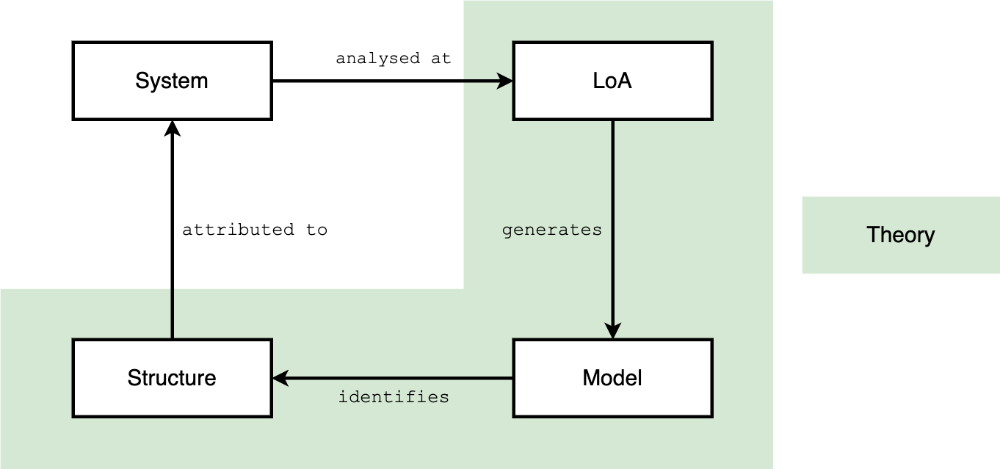
  <figcaption>
    <strong>Figure 4.3:</strong> The SLMS According to (Floridi, 2008)
  </figcaption>
</figure>
<p>(Gobbo &amp; Benini, 2016) expand on the <abbr title="System-LoA-Model-Structure">SLMS</abbr> scheme by highlighting the challenges and intricacies of quantifying and qualifying computational information. They advocate for a comprehensive methodology that appreciates both the physical and conceptual dimensions of data, facilitating a deeper understanding of programmable artefacts and their informational content. This perspective not only complements the analytical capabilities of <abbr title="Actor-Network Theory">ANT</abbr> but also opens new avenues for investigating the dynamics of information and technology.</p>
<p>As I venture to revise the epistemological foundations and introduce Haraway’s concept of <abbr title="Situated Knowledges">SK</abbr>, it becomes increasingly manifest that the integration of <abbr title="Actor-Network Theory">ANT</abbr> with Floridi’s <abbr title="Philosophy of Information">PI</abbr> and the insights of computational information theory provides a robust framework for exploring the complexities of digital and networked environments. This interdisciplinary approach lays the groundwork for a comprehensive exploration of the digital world, emphasising the importance of situated, contextual knowledge in understanding and navigating the digital landscape.</p>
<h3 id="sec:epistemo" tabindex="-1">4.4 Epistemological Foundations</h3>
<p>This section establishes the epistemological foundations, presenting <abbr title="Actor-Network Theory">ANT</abbr>, <abbr title="Boundary Object">BO</abbr>, and <abbr title="Philosophy of Information">PI</abbr>, alongside Donna Haraway’s <abbr title="Situated Knowledges">SK</abbr>. Rather than synthesising these theories, this chapter places an emphasis on situating <abbr title="Linked Open Usable Data">LOUD</abbr> within a feminist perspective to construct a new materialistic foundation reminiscent of Haraway’s ‘alignment in tentacular worlding’ [(Haraway, 2016) p. 42]. This assemblage seeks to navigate the controversies and mappings within <abbr title="Linked Open Usable Data">LOUD</abbr>-like communities, applying a Tardian approach to trace the spreadability of ideas (Latour et al., 2012).</p>
<p>To analyse the relevant actor-networks effectively, especially being part of both the <abbr title="International Image Interoperability Framework">IIIF</abbr> and Linked Art communities, a particular lens is required. <abbr title="Actor-Network Theory">ANT</abbr>, while expansive, has faced criticism for its perceived flatness in analysing networks. Here, Haraway’s <abbr title="Situated Knowledges">SK</abbr> becomes instrumental, providing a stance that enriches the <abbr title="Actor-Network Theory">ANT</abbr>-grounded theoretical framework with a comprehensive lens that prioritises context in shaping knowledge. <abbr title="Situated Knowledges">SK</abbr> emphasises that knowledge is always situated, partial, and contextually produced, offering a critical perspective on determining relevance within networks. <abbr title="Situated Knowledges">SK</abbr> complements <abbr title="Actor-Network Theory">ANT</abbr> by adding depth to the analysis of actor-networks. It highlights the significance of context – both human and non-human – in the production of knowledge, thereby enriching the theoretical framework with a nuanced lens for exploring the dynamics within the <abbr title="Linked Open Usable Data">LOUD</abbr> space.</p>
<p><abbr title="Situated Knowledges">SK</abbr>, as articulated by (Haraway, 1988), emphasises the contextual nature of knowledge and challenges the pursuit of an objective, universal truth divorced from the position of the knower. Haraway’s framework, which integrates standpoint theory, concedes that knowledge is inherently shaped by its social, cultural and historical context, and supports an understanding of knowledge as partial and situated. This approach, noting the influence of epistemological privilege and intersectionality, argues against universalism by stressing the importance of being conscious of the specific perspectives and biases that inform one’s understanding. The relevance of <abbr title="Situated Knowledges">SK</abbr> to <abbr title="Actor-Network Theory">ANT</abbr> lies in its complementary perspective of acknowledging the diverse, context-specific factors that influence knowledge production within networks, enriching <abbr title="Actor-Network Theory">ANT</abbr>'s analysis of actor-networks by incorporating a critical, reflexive lens on the situatedness of knowledge.</p>
<p>In forging this theoretical framework, I seek to transcend the notion of merely ‘cobbling together’ disparate ideas. Instead, I aim to weave their contributions into a coherent web of thought, ensuring a seamless and comprehensive framework that embodies the essence of their respective insights, one that transcends disciplinary boundaries. The theoretical framework can be synthesised as follows, elegantly interweaving distinct yet complementary perspectives to enrich our understanding of socio-technical ecosystems:</p>
<ul>
<li><abbr title="Situated Knowledges">SK</abbr>, by     advocating for an understanding of knowledge as inherently partial     and situated, complements <abbr title="Actor-Network Theory">ANT</abbr> by adding depth to the analysis of     actor-networks. It enriches the theoretical framework with a nuanced     lens for exploring the dynamics within the     <abbr title="Linked Open Usable Data">LOUD</abbr> space.</li>
<li><abbr title="Boundary Object">BO</abbr> further     refine this framework by offering a means to characterise actors and     mediate interactions within the network, facilitating connectivity     and translation among diverse groups.</li>
<li><abbr title="Philosophy of Information">PI</abbr> enriches     <abbr title="Actor-Network Theory">ANT</abbr> by framing     information as a fundamental element in actor-network interactions.     It offers insights into the different <abbr title="Levels of Abstraction">LoA</abbr>, or different actor-networks, each     with a different perspective or granularity, and how information is     created, shared, and used, and how these processes influence the     relationships and dynamics within networks.</li>
</ul>
<p><a href="#fig:sympoiesis">Figure 4.4</a> illustrates how these theories intertwine to form the epistemological foundation of this research, demonstrating the synergistic potential of combining <abbr title="Actor-Network Theory">ANT</abbr> with <abbr title="Situated Knowledges">SK</abbr>, <abbr title="Boundary Object">BO</abbr>, and <abbr title="Philosophy of Information">PI</abbr> to navigate the complexities of digital ecosystems in the <abbr title="Cultural Heritage">CH</abbr> field.</p>
<figure id="fig:sympoiesis" style="text-align: center;">
  
  <figcaption>
    <strong>Figure 4.4:</strong> A Sympoiesis of Theories: 
    ANT Entangled with SK, BO, and PI
  </figcaption>
</figure>
<p>Concluding this chapter, the developed toolbox lays a coherent foundation for empirical research, poised to explore the dynamics within actor-networks. This exploration is not entirely novel in the context of <abbr title="Cultural Heritage">CH</abbr>, as exemplified by (Guillem et al., 2023)’s use of <abbr title="Actor-Network Theory">ANT</abbr> to spotlight the keystones that were destroyed by the fire at Notre-Dame de Paris. As this narrative unfolds into <a href="#cha:scope">Chapter 5</a>, the <abbr title="Actor-Network Theory">ANT</abbr>-based toolbox, enriched with amodern and feminist perspectives, will be instrumental in navigating the forthcoming empirical landscapes.</p>
<h2 id="cha:scope" tabindex="-1">5. Research Scope and Methodology</h2>
<p>This chapter delineates the Research Scope and Methodology, laying the groundwork for the empirical exploration within this thesis.</p>
<p>Structured into five key sections, this chapter outlines the methodological framework adopted to explore the purposes of the research and specifies the systematic approach used to consider the outcomes. It initiates with the presentation of research questions in <a href="#sec:rq">Section 5.1</a> and hypotheses in <a href="#sec:hyp">Section 5.2</a> that are crucial for evaluating <abbr title="Linked Open Usable Data">LOUD</abbr> within the <abbr title="Cultural Heritage">CH</abbr> context. Following this, <a href="#sec:obj">Section 5.3</a> details the objectives aimed to be achieved based on the research findings. The methodology, elaborated in <a href="#sec:methodo">Section 5.4</a>, encompasses the research methods, data creation, collection, curation, modelling, analysis, alongside considerations of limitations and ethics. The final section, <a href="#sec:contribution-dh">5.5</a>, defines some of the scholarly implications of the thesis, highlighting its substantial contributions to <abbr title="Digital Humanities">DH</abbr> and the broader field of the humanities. This discourse encapsulates the implications of the research, affirming its value and positioning within the scholarly community.</p>
<p>Throughout this thesis, the two pivotal perspectives, <em>Community Practices</em> and <em>Semantic Interoperability</em>, serve as threads interwoven across chapters. While certain research questions, hypotheses, and objectives are specifically aligned with one perspective, others bridge both, showcasing their interconnected relevance.</p>
<h3 id="sec:rq" tabindex="-1">5.1 Research Questions</h3>
<p>Within this thesis, the primary research question seeks to critically evaluate the role and impact of <abbr title="Linked Open Usable Data">LOUD</abbr>, exploring how it influences and integrates within the fields of <abbr title="Cultural Heritage">CH</abbr> and <abbr title="Digital Humanities">DH</abbr>. This research seeks, in part, to uncover the depth of <abbr title="Linked Open Usable Data">LOUD</abbr>'s contribution to these disciplines, and to explore its potential to reshape the perception and use of Linked Data. Framing the central inquiry of this investigation, the primary research question is articulated as follows:</p>
<p><em>How can the concept of Linked Open Usable Data be situated within the broader framework of cultural heritage and digital humanities, and to what extent has it influenced – or is likely to influence – the perception and use of Linked Data in these fields?</em></p>
<p>In order to explore this overarching question, three specific research questions have been formulated to probe deeper into the socio-technical dynamics of <abbr title="Linked Open Usable Data">LOUD</abbr>:</p>
<ul>
<li>RQ01:   What are the socio-technical requirements for developing     specifications in line with the <abbr title="Linked Open Usable Data">LOUD</abbr> design principles?</li>
<li>RQ02:   How does the implementation of <abbr title="Linked Open Usable Data">LOUD</abbr> standards within the     <abbr title="Participatory Knowledge Practices in Analogue and Digital Image Archives">PIA</abbr> research     project contribute to understanding their potential benefits and     limitations in terms of facilitating data reuse and broader     participation?</li>
<li>RQ03:   What are the implementation strategies, challenges and outcomes of     Yale’s large-scale deployment of <abbr title="Linked Open Usable Data">LOUD</abbr> standards, and how does ensuring the     consistency of Linked Art and <abbr title="International Image Interoperability Framework">IIIF</abbr> resources within the LUX platform     contribute to the <abbr title="Cultural Heritage">CH</abbr> domain?</li>
</ul>
<p>These questions collectively aim to illuminate the multifaceted implications of <abbr title="Linked Open Usable Data">LOUD</abbr>, paving the way for a nuanced understanding of its benefits and challenges. The subsequent section will transition into the hypotheses derived from these research inquiries, further delineating the expected insights and contributions of this investigation.</p>
<h3 id="sec:hyp" tabindex="-1">5.2 Hypotheses</h3>
<p>Transitioning from the research questions, this section posits a main assumption based on the expectation that <abbr title="Linked Open Usable Data">LOUD</abbr> design principles, being grassroots-driven and based on consensus and transparency, will foster greater acceptance within <abbr title="Cultural Heritage">CH</abbr> and <abbr title="Digital Humanities">DH</abbr> fields. Despite the nascent recognition of <abbr title="Linked Open Usable Data">LOUD</abbr> as a distinct entity and its perception as a technical utility rather than part of a broader socio-technical ecosystem, these hypotheses aim to explore the multifaceted impacts of <abbr title="Linked Open Usable Data">LOUD</abbr> standards on these disciplines.</p>
<p>The hypotheses outlined below seek to elucidate the dynamics and potential outcomes identified in the research questions:</p>
<ul>
<li>HYP01:   Grassroots initiatives to establish functional communities take     significant commitment from all sides and are frequently developed     slowly since the majority of those participating or interested can     only be extensively committed for brief periods of time. However,     the efforts undertaken within these initiatives, such as the     development of <abbr title="Linked Open Usable Data">LOUD</abbr>-compatible standards, are generally     successful in the medium to long term.</li>
<li>HYP02:   The <abbr title="Participatory Knowledge Practices in Analogue and Digital Image Archives">PIA</abbr>     research project’s implementation of <abbr title="Linked Open Usable Data">LOUD</abbr> standards, leveraging shared     <abbr title="Application Programming Interface">API</abbr>s such as the     <abbr title="International Image Interoperability Framework">IIIF</abbr> and     Linked Art specifications, will shed light on the potential benefits     and limitations of these standards in facilitating data reuse and     wider participation in the context of <abbr title="Cultural Heritage">CH</abbr> and <abbr title="Digital Humanities">DH</abbr>. We anticipate that digital     infrastructures using <abbr title="Linked Open Usable Data">LOUD</abbr> standards should be able to improve     the long-term accessibility and re-usability of     <abbr title="Cultural Heritage">CH</abbr> data, thereby     encouraging active participation and engagement by diverse user     communities.</li>
<li>HYP03: The research aims to demonstrate that Yale’s large-scale     implementation of <abbr title="Linked Open Usable Data">LOUD</abbr> standards involves a variety of     practices. It is expected that while <abbr title="Linked Open Usable Data">LOUD</abbr> standards such as the     <abbr title="International Image Interoperability Framework">IIIF</abbr>     <abbr title="Application Programming Interface">API</abbr>s have become     more accessible for implementation, challenges remain due to     specific skills and resource constraints within     <abbr title="Cultural Heritage Institution">CHI</abbr>s. It also     aims to showcase how overcoming these challenges and ensuring the     consistency of Linked Art and <abbr title="International Image Interoperability Framework">IIIF</abbr> resources within the LUX platform     contributes significantly to the advancement of shared processes and     accessibility within the <abbr title="Cultural Heritage">CH</abbr> domain, ultimately facilitating more     widespread and effective use of <abbr title="Cultural Heritage">CH</abbr> data.</li>
</ul>
<p>In summary, these hypotheses underpin the aim of the thesis to examine the influence and operationalisation of <abbr title="Linked Open Usable Data">LOUD</abbr>, setting the stage for a detailed exploration of the objectives in the following section.</p>
<h3 id="sec:obj" tabindex="-1">5.3 Objectives</h3>
<p>This section aims to define the concrete objectives that guide the empirical exploration of <abbr title="Linked Open Usable Data">LOUD</abbr>. Through leveraging <abbr title="Actor-Network Theory">ANT</abbr> epistemological foundations, these objectives are crafted to dissect various aspects of <abbr title="Linked Open Usable Data">LOUD</abbr>'s integration, adoption, and impact. Each objective targets a specific dimension, from community consensus and participation to the practical implementation within <abbr title="Participatory Knowledge Practices in Analogue and Digital Image Archives">PIA</abbr> and evaluation of <abbr title="Linked Open Usable Data">LOUD</abbr> standards in Yale. More specifically, five objectives have been identified. They do not maintain a 1:1 relationship with what was being presented earlier as two objectives are linked for the first and the third hypothesis and research question.</p>
<ul>
<li>OBJ01.1:   Analysing consensus building and advocacy initiatives across the     <abbr title="International Image Interoperability Framework">IIIF</abbr> and     Linked Art communities</li>
<li>OBJ01.2: Examining community participation, the evolutionary adoption of     <abbr title="Linked Open Usable Data">LOUD</abbr> standards     and their potential with regard to scientific movements and     principles</li>
<li>OBJ02: Implementing and evaluating <abbr title="Linked Open Usable Data">LOUD</abbr> standards in an explorative setting</li>
<li>OBJ03.1: Reporting how Yale has rolled out <abbr title="Linked Open Usable Data">LOUD</abbr> standards on a large scale</li>
<li>OBJ03.2: Verifying Linked Art and <abbr title="International Image Interoperability Framework">IIIF</abbr> consistency across the LUX platform</li>
</ul>
<p>These objectives are explored extensively in three empirical chapters, offering a detailed insight into the operationalisation and impact of <abbr title="Linked Open Usable Data">LOUD</abbr> standards. In the following section, the methodology used to achieve these objectives is discussed in greater detail.</p>
<h3 id="sec:methodo" tabindex="-1">5.4 Methodology</h3>
<p>This section is designed to rigorously address several pivotal questions that underpin the research approach, reflecting on the epistemological and ontological stances guiding this study. It explores the selection and application of data collection tools, detailing their relevance and the implications of their use, alongside the timing and demographic details of data collection. This section also looks at the analytical tools used, discussing their significance, implications and any ethical considerations that arose.</p>
<p>The methodology of this research is streamlined into three parts. This consolidation provides a holistic overview, starting with an outline of the research methods presented in each of the empirical chapters in <a href="#subsec:outline">5.4.1</a>, through a combined exploration of data creation, collection, curation and modelling, to an examination of data analysis. The section concludes by addressing the overall limitations and ethical considerations of the research in <a href="#subsec:overall-limitations">5.4.2</a> and <a href="#subsec:ethical-considerations">5.4.3</a>, ensuring a careful and ethically sound approach to the study of <abbr title="Linked Open Usable Data">LOUD</abbr>.</p>
<h4 id="subsec:outline" tabindex="-1">5.4.1 Outline of the Research Methods</h4>
<p>This subsection clarifies the multifaceted approach to data collection, creation, curation, modelling and analysis that is central to the empirical chapters that follow. By interweaving quantitative and qualitative methods, this research not only navigates the landscapes of cultural processes, but also bridges the micro-macro divide in the study of cultural constellations. Each empirical pursuit is dissected in detail, spotlighting the ways and means used to unveil the underlying dynamics at play.</p>
<p>At its core, this thesis seeks to unravel the intricate web of cultural processes and constellations through a lens that is both micro in perspective and rich in empirical evidence. It emphasises an actor and practice-centred inquiry, as articulated by (Wietschorke, 2014) [p. 160]. This study aligns with such a perspective, aiming to dissect and understand cultural phenomena through a detailed examination of specific cosmologies, like those of <abbr title="Linked Open Usable Data">LOUD</abbr>-driven communities, the <abbr title="Participatory Knowledge Practices in Analogue and Digital Image Archives">PIA</abbr> research project, and Yale’s LUX.</p>
<p>The attempt to understand a particular cosmology requires immersion in the practices and dynamics of the communities at its heart. Inspired by (Latour &amp; WooIgar, 1986), this research situates itself within the vibrant ecosystems of the <abbr title="International Image Interoperability Framework">IIIF</abbr> and Linked Art communities. As an active participant, the research reflects the intricacies of a laboratory where the fusion of practices unfolds, providing a rich tapestry of insights into the research objectives.</p>
<p>Embracing the role of a ‘praxiographer’ <sup class="footnote-ref"><a href="#fn164" id="fnref164">[164]</a></sup>, in the vein of (Mol, 2002), this exploration goes beyond mere observation. It addresses the of research, emphasising the situated, embodied practices that shape knowledge production. This praxiographic lens foregrounds the complex, often tacit, processes through which the communities’ cosmologies are enacted and understood. It acknowledges that these practices are not just observed but are actively participated in, thereby crafting a nuanced narrative of the research landscape. This approach aligns with Mol’s advocacy for a more embodied and engaged form of inquiry, one that recognises the researcher as an integral component of the knowledge ecosystem, contributing to and being shaped by the evolving dynamics of community practices.</p>
<p>Recognising the transformative potential of digital methods, this study echoes (Venturini &amp; Latour, 2009)’s call as well for a paradigm shift. It emphasises the need to fuse digital tools and data with traditional approaches, thereby enriching micro-analyses of interactions with insights into broader macro-structures. This not only challenges existing methodologies, but also invites a reappraisal of the dichotomies that have long governed the social sciences and humanities at large, and argues for a deeper engagement with the complexities of the digital sphere.</p>
<p>As outlined in <a href="#tab:research-axes">Table 5.1</a>, the empirical chapters are meticulously aligned with the research’s overarching axes, offering a panoramic view of the questions, hypotheses, and objectives steering this inquiry. This segmentation underscores the nuanced exploration of community practices, semantic interoperability, and their intersections, paving the way for a comprehensive understanding of the cultural and technological fabrics under investigation.</p>
<figure id="tab:research-axes" style="text-align: center;">
 <figcaption><strong>Table 5.1</strong>: Empirical Chapters: Research Axes and Scope Overview</figcaption>
<table style="margin: 1em auto;">
<thead>
<tr>
<th><strong>Chapter</strong></th>
<th><strong>Empirical Research</strong></th>
<th><strong>Community Practices</strong></th>
<th><strong>Semantic Inter-operability</strong></th>
<th><strong>Research Scope</strong></th>
</tr>
</thead>
<tbody>
<tr>
<td>Chapter 6</td>
<td>Assessment of Practices in IIIF and Linked Art Communities</td>
<td>YES</td>
<td>To some extent</td>
<td>RQ01/HYP01 – OBJ01.1, OBJ01.2</td>
</tr>
<tr>
<td>Chapter 7</td>
<td>Deployment of LOUD within PIA</td>
<td>To some extent</td>
<td>YES</td>
<td>RQ02/HYP02 – OBJ02</td>
</tr>
<tr>
<td>Chapter 8</td>
<td>Review of a Large-Scale LOUD Implementation and Data Consistency within LUX</td>
<td>YES</td>
<td>YES</td>
<td>RQ03/HYP03 – OBJ03.1, OBJ03.2</td>
</tr>
</tbody>
</table>
</figure>
<p>Embarking on this research journey requires a versatile approach that encompasses data creation, collection, curation, modelling and analysis. This approach not only ensures a robust empirical foundation, but also fosters a dynamic interaction with the data, allowing new insights and perspectives to emerge. The following narrative will explore these dimensions, highlighting the central role of each in shaping the contours of this scholarly enterprise. Through this lens, the research not only contributes to academic discourse, but also navigates the challenges and opportunities presented by <abbr title="Linked Open Usable Data">LOUD</abbr> in the <abbr title="Cultural Heritage">CH</abbr> field.</p>
<ul>
<li><strong>Data Creation and Collection</strong>:   This includes an in-depth look at the types of data collected from     different sources and the strategies adopted to create either new     datasets or workflows. The process combines the collection of     existing data relevant to the analysis of     <abbr title="Linked Open Usable Data">LOUD</abbr>     ecosystems and the creation of new datasets to explore     under-researched areas, thereby ensuring a strong empirical base for     the study.</li>
<li><strong>Data Curation and Modelling</strong>:   Data curation is essential for ensuring data integrity and     usability, which are essential for reliable analysis and improved     user satisfaction. This process involves the rigorous management of     data, including essential components such as data cleansing,     matching and conversion, to ensure that data remains accurate,     accessible and meaningful for its intended use. Furthermore, data     modelling is characterised as a rich process involving the     definition of domain ontologies, the schema mapping, and the     transformation of data into semantic graphs. This process is crucial     for the effective integration and interpretation of data     (Ciula &amp; Eide, 2016; Fafalios et al., 2023).     (Nasarek, 2020) [p.&nbsp;132] emphasises the crucial role of     data modelling in facilitating insightful interpretations of reality     and extending datasets for more in-depth analysis. In addition,     (Meunier, 2017) [pp. 40-42] highlights the widespread     application of (conceptual) modelling within <abbr title="Digital Humanities">DH</abbr>, stressing its necessity, stemming     from the semiotic complexity of the field’s diverse subjects, which     conceptual modelling skilfully navigates, thus enabling a deeper     understanding and exploration of interdisciplinary domains.</li>
<li><strong>Data Analysis</strong>:   Drawing on (Wietschorke, 2014) [p.&nbsp;163], it emphasises the     necessity of critical source evaluation through consistent criticism     and heuristic classification, transforming historical fragments into     meaningful sources by posing insightful inquiries. This foundational     approach underscores the importance of evaluating sources within     their historical and heuristic contexts, ensuring that the data     analysis remains grounded in a comprehensive understanding of the     source material. Incorporating the reflective process of considering     the researcher’s own position, as advised by historical ethnography,     enriches the data analysis further. This methodology serves a dual     purpose: it acts as an epistemological guide for achieving a dense     description of actors, practices, and situations, and it aids in the     reflection of the research process itself by acknowledging the     researcher’s situated knowledge [(Wietschorke, 2014) p.     164-165]. Such an approach not only deepens the cognitive objectives     of the research but also enhances the transparency and reflexivity     of the analytical process.</li>
<li><strong>Research Outcomes</strong>:   This research aims to produce a range of outputs, from raw data to     highly structured analyses. These outcomes are intended to serve not     only as a testament to the empirical rigour applied, but also as a     beacon for further scholarly inquiry. Raw outputs provide unmediated     insights into the data collection and generation processes, while     more structured outputs will provide deep dives into the nuances of     <abbr title="Linked Open Usable Data">LOUD</abbr>     ecosystems, underpinned by robust data curation, modelling and     comprehensive analysis.</li>
</ul>
<p>In the following three parts (sub-subsections <a href="#subsubsec:outline-chap1">5.4.1.1</a>, <a href="#subsubsec:outline-chap2">5.4.1.2</a>, and <a href="#subsubsec:outline-chap3">5.4.1.3</a>), dealing with the empirical research, a diagram is provided to illustrate the process from data collection or generation to the results that will be explored in later chapters. <a href="#fig:scope-template">Figure 5.1</a> provides a visual template detailing the specific shapes and colours used to represent different stages and components of the research process. This schematic representation helps to fully understand the progression from initial data gathering to the analytical findings that form the basis of subsequent discussions.</p>
<figure id="fig:scope-template" style="margin: 0 auto; text-align: center;">
 
<figcaption>
<strong>Figure 5.1</strong>:
 Research Outline Visual Template
</figcaption>
</figure>
<h5 id="subsubsec:outline-chap1" tabindex="-1">5.4.1.1 Assessment of Practices in IIIF and Linked Art Communities</h5>
<p><a href="#cha:social-fabrics">Chapter 6</a> engages with the social fabrics of <abbr title="International Image Interoperability Framework">IIIF</abbr> and Linked Art, aiming to achieve two objectives through a mixed-methods approach. The research process and steps undertaken are detailed in <a href="#fig:scope-social-fabrics">Figure 5.2</a>.</p>
<figure id="fig:scope-social-fabrics" style="margin: 0 auto; text-align: center;">
 
<figcaption>
<strong>Figure 5.2</strong>:
 Research Outline for Assessing the IIIF and Linked Art Practices
</figcaption>
</figure>
<p>For the first objective, which is to analyse capacity-building and advocacy initiatives within the <abbr title="International Image Interoperability Framework">IIIF</abbr> and Linked Art communities, data was collected from - generically referred to here as - guidelines on each initiative’s website, such as cookbook recipes to help create resources and principles, as well as meeting minutes produced in Google Docs and GitHub issues. The meeting minutes from Google Docs were extracted with the help of a tool and a series of Python scripts. As for the guidelines, a matrix was prepared for the qualitative data, while the more quantitative data was extracted using the GitHub <abbr title="Application Programming Interface">API</abbr>. A first analysis was performed by aggregating and structuring all the data in CSV files according to the levels of abstraction discussed in the previous chapter, here in terms of category (e.g. viewer, type of support, <abbr title="JavaScript Object Notation">JSON</abbr> similarity, etc.). Further analysis was carried out using NetworkX<sup class="footnote-ref"><a href="#fn165" id="fnref165">[165]</a></sup>, a sophisticated Python library designed for the analysis of networks between social entities and their information exchange (Hagberg et al., 2008). This tool allows the generation of visual representations that aim to achieve the goals of <abbr title="Social Network Analysis">SNA</abbr>. <abbr title="Social Network Analysis">SNA</abbr> is understood here more as an analytical goal realised through visual means than as a methodological tool (see Akhtar, 2014). It complements the theoretical framework based on <abbr title="Actor-Network Theory">ANT</abbr>, enriching it with a quantitative and visual approach to studying the interconnectedness of actors and the influence of these connections on the distribution of information and resources. By incorporating <abbr title="Social Network Analysis">SNA</abbr>, this research seeks to uncover the rich network of relationships and patterns between actors within <abbr title="Linked Open Usable Data">LOUD</abbr> ecosystems, with visualisations that can be effectively realised through tools such as Gephi<sup class="footnote-ref"><a href="#fn166" id="fnref166">[166]</a></sup>, a network analysis and visualisation software (Bastian et al., 2009). For GitHub issues, a case study was conducted to show how an issue going through the <abbr title="International Image Interoperability Framework">IIIF</abbr> review process works.</p>
<p>As for the second objective, it consists of analysing the adoption surveys that have been carried out within the <abbr title="International Image Interoperability Framework">IIIF</abbr> community over the years on the adoption of its specifications and creating my own survey on <abbr title="Linked Open Usable Data">LOUD</abbr>'s socio-technical characteristics. For the latter, Google Forms was used and the raw data has been made available after a pseudonymisation stage. Graphs and statistics were created using Python, in particular using its pandas library<sup class="footnote-ref"><a href="#fn167" id="fnref167">[167]</a></sup>, as well as employing RStudio<sup class="footnote-ref"><a href="#fn168" id="fnref168">[168]</a></sup> to produce various files for publication in a final report.</p>
<p>Finally, the main scripts and outcomes of this empirical research were made available through a GitHub repository<sup class="footnote-ref"><a href="#fn169" id="fnref169">[169]</a></sup>.</p>
<h5 id="subsubsec:outline-chap2" tabindex="-1">5.4.1.2 Deployment of LOUD within PIA</h5>
<p>The deployment of <abbr title="Linked Open Usable Data">LOUD</abbr> standards and the underlying tools and software required to implement them within the <abbr title="Participatory Knowledge Practices in Analogue and Digital Image Archives">PIA</abbr> project is covered in <a href="#cha:pia-laboratory">Chapter 7</a>. The implementation and analysis process has a single objective, captured in <a href="#fig:scope-pia">Figure 5.3</a>.</p>
<figure id="fig:scope-pia" style="margin: 0 auto; text-align: center;">
 
<figcaption>
<strong>Figure 5.3</strong>:
 Research Outline for Deploying LOUD Standards in the PIA Project
</figcaption>
</figure>
<p>In keeping with the chapter’s title, it describes a laboratory effort focused on creating and transforming data into resources that conform to <abbr title="Linked Open Usable Data">LOUD</abbr> standards. Initially, data was extracted from Salsah<sup class="footnote-ref"><a href="#fn170" id="fnref170">[170]</a></sup>, a digital platform developed by <abbr title="Swiss National Data and Service Center for the Humanities">DaSCH</abbr> that stores images and metadata from the <abbr title="Cultural Anthropology Switzerland">CAS</abbr> photographic archives. This involved using a Python script to extract CSV, JSON and TIFF files. The process required specific image conversion steps – TIFF to JPEG2000 – to facilitate their distribution via <abbr title="Simple Image Interface Presentation">SIPI</abbr>, a <abbr title="International Image Interoperability Framework">IIIF</abbr> Image API server developed by the <abbr title="University of Basel's Digital Humanities Lab">DHLab</abbr>. In addition, the <abbr title="International Image Interoperability Framework">IIIF</abbr> Presentation <abbr title="Application Programming Interface">API</abbr> 3.0 and Change Discovery <abbr title="Application Programming Interface">API</abbr> 1.0 resources were generated by an early-stage micro service. In parallel with the development of Linked Art data, a workflow prototype<sup class="footnote-ref"><a href="#fn171" id="fnref171">[171]</a></sup> was created in collaboration with members of the University of Oxford, based on a preliminary <abbr title="JavaScript Object Notation">JSON</abbr> <abbr title="Application Programming Interface">API</abbr> designed for the <abbr title="Participatory Knowledge Practices in Analogue and Digital Image Archives">PIA</abbr> project. At the same time, a revised data model was developed to ensure compatibility with the requirements of <abbr title="DaSCH Service Platform">DSP</abbr>, setting the stage for the migration of (meta)data from Salsah. This foundational work enabled the subsequent updating of resources to conform to the Linked Art standard, taking advantage of the established workflow.</p>
<h5 id="subsubsec:outline-chap3" tabindex="-1">5.4.1.3 Review of a Large-Scale LOUD Implementation and Data Consistency within LUX</h5>
<p>The aims of <a href="#cha:lux-consistency">Chapter 8</a> are to analyse how the Yale University has rolled out the LOUD specifications as part of LUX, Yale Collections Discovery, and also to assess the consistency of Linked Art and <abbr title="International Image Interoperability Framework">IIIF</abbr> resources within the LUX platform. These two objectives are depicted in <a href="#fig:scope-lux">Figure 5.4</a>.</p>
<figure id="fig:scope-lux" style="margin: 0 auto; text-align: center;">
 
<figcaption>
<strong>Figure 5.4</strong>:
 Research Outline for Reviewing LOUD Implementation and Data Consistency within LUX
</figcaption>
</figure>
<p>The first objective was to document the collaborative efforts of Yale employees involved in the development of LUX. To achieve this, I conducted both group and one-on-one interviews and recorded these discussions. These recordings were first transcribed using Whisper<sup class="footnote-ref"><a href="#fn172" id="fnref172">[172]</a></sup>, an advanced speech recognition tool developed by OpenAI. To ensure accuracy, I meticulously checked and amended the transcriptions. I then performed thematic analysis on the transcripts, now formatted as CSV files, and consolidated the revised verbatim transcripts into a Markdown document. This extensive process provided the basis for writing a report comprising selected quotes, as well as an analysis using simple topic modelling to extract key themes (see Benabdelkrim et al., 2020), which provides distant reading insights.</p>
<p>The second objective was to verify the consistency of Linked Art and <abbr title="International Image Interoperability Framework">IIIF</abbr> resources. Once the data had been collected, an effort was made templating the identified patterns by selecting various resources qualitatively and validating them quantitatively using a <abbr title="JavaScript Object Notation">JSON</abbr> validator. For <abbr title="International Image Interoperability Framework">IIIF</abbr> resources, the Presentation <abbr title="Application Programming Interface">API</abbr> Validator<sup class="footnote-ref"><a href="#fn173" id="fnref173">[173]</a></sup> designed by <abbr title="IIIF Consortium">IIIF-C</abbr> was leveraged. All of this data, along with the scripts, was compiled and analysed onto a GitHub repository<sup class="footnote-ref"><a href="#fn174" id="fnref174">[174]</a></sup>.</p>
<h4 id="subsec:overall-limitations" tabindex="-1">5.4.2 Overall Limitations</h4>
<p>The overall limitations of this thesis cover several key areas, reflecting the constraints encountered in the study of <abbr title="Linked Open Usable Data">LOUD</abbr>.</p>
<p>The extent of initiatives and infrastructure supporting <abbr title="Linked Open Usable Data">LOUD</abbr> standards is another critical limitation. The variability in support and implementation across platforms and projects may affect the generalisation of the study’s findings, suggesting the need for broader engagement and standardisation efforts amongst <abbr title="Cultural Heritage">CH</abbr> practitioners. Moreover, the influence of platforms’ formatting power on the dissemination and reception of <abbr title="Linked Open Usable Data">LOUD</abbr> standards cannot be overlooked (Boullier, 2018), highlighting the need for a nuanced understanding of how platform-specific affordances shape scholarly communication and knowledge exchange. Moreover, according to (McCarty, 2023), at , the integration of <abbr title="Linked Open Usable Data">LOUD</abbr> within <abbr title="Digital Humanities">DH</abbr> faces challenges despite its seemingly low-tech orientation in practice and tool adoption. This situation echoes McCarty’s discussion of the need for a , suggesting that while some of the tools developed by the wider <abbr title="International Image Interoperability Framework">IIIF</abbr> community are accessible, they still require a significant level of technical expertise. It emphasises the importance of harmonising traditional scholarly methods with digital tools to enrich humanistic research, and urges a critical evaluation of the limitations and potential of digital tools to ensure that they complement rather than constrain scholarly inquiry.</p>
<p>Obtaining data from individuals and their <abbr title="Cultural Heritage Institution">CHI</abbr>s through generic investigation echoes (Bourdieu, 1988)’s theory of fields<sup class="footnote-ref"><a href="#fn175" id="fnref175">[175]</a></sup> and therefore may not capture the full socio-technical landscape of <abbr title="Linked Open Usable Data">LOUD</abbr> ecosystems. This approach may overlook the wider range of actors and their interactions that are crucial for a holistic understanding of the impact of <abbr title="Linked Open Usable Data">LOUD</abbr>.</p>
<p>The implementation of <abbr title="Linked Open Usable Data">LOUD</abbr> standards and practices within the <abbr title="Participatory Knowledge Practices in Analogue and Digital Image Archives">PIA</abbr> project served as an experimental ground for testing the semantic model and data reuse in a participatory manner, revealing the gap between theoretical constructs and their practical implementation. This discrepancy underscores the challenges of deploying layered data models in real-world interfaces, and highlights potential limitations in empirical validation and <abbr title="User experience">UX</abbr> insights.</p>
<p>Digital methods, while instrumental, may not fully capture the nuanced diffusion of ideas, a central tenet in <abbr title="Actor-Network Theory">ANT</abbr> where non-humans are given agency. This gap points to the need for methodological innovations that can better account for the dynamics of idea diffusion within and across networks. In addition, the <em>‘zooming effect’</em> introduces methodological constraints, demonstrating that the depth of analysis is often limited by the computational resources available. This limitation affects the scale at which data can be analysed, potentially distorting the understanding of network dynamics and interaction patterns [see (Boullier, 2018)].</p>
<p>In summary, while these identified areas represent the primary limitations of this research, it is important to acknowledge that the range of limitations may not be exhaustive. The intrinsic multilayered nature of <abbr title="Linked Open Usable Data">LOUD</abbr> necessitates ongoing review and negotiation across modes of research that bridges theoretical frameworks with empirical realities.</p>
<h4 id="subsec:ethical-considerations" tabindex="-1">5.4.3 Ethical Considerations</h4>
<p>Moving on from exploring general limitations, it is equally essential to address the ethical considerations inherent in undertaking such research. The <abbr title="Linked Open Usable Data">LOUD</abbr> community, predominantly composed of members from the Global North and characterised by a lack of diversity in terms of gender and ethnicity, presents specific ethical challenges. This composition raises concerns about inclusivity and representation, and points to the need for conscious efforts to ensure that the development and application of <abbr title="Linked Open Usable Data">LOUD</abbr> standards do not inadvertently perpetuate existing inequalities or biases.</p>
<p>Furthermore, the dominance of privileged circles within the <abbr title="Linked Open Usable Data">LOUD</abbr> community underscores the importance of adopting ethical research practices that actively seek to amplify underrepresented voices. Engaging with a wider range of stakeholders, including those from marginalised communities, is crucial to fostering a more inclusive and equitable <abbr title="Digital Humanities">DH</abbr> and <abbr title="Cultural Heritage">CH</abbr> landscape. This approach not only enriches research with diverse perspectives, but also aligns with broader ethical commitments to social justice and equality.</p>
<p>Ultimately, ethical considerations extend to the methods used to analyse and interpret data within <abbr title="Linked Open Usable Data">LOUD</abbr> ecosystems. Ensuring transparency, respecting privacy and acknowledging the limitations of one’s own research stance are fundamental to ethical scholarship. By addressing these ethical dimensions, the thesis aims to contribute thoughtfully and responsibly to the ongoing discourse around <abbr title="Linked Open Usable Data">LOUD</abbr> in the heritage domain and to advocate for practices that promote diversity, inclusivity and equity.</p>
<p>While this thesis navigates the realities of <abbr title="Linked Open Usable Data">LOUD</abbr> for <abbr title="Cultural Heritage">CH</abbr> and addresses overarching limitations and ethical considerations, it’s paramount to acknowledge the inherent privilege of conducting such research as PhD Candidate in <abbr title="Digital Humanities">DH</abbr> in Switzerland. While this work aims to highlight and mitigate issues of inclusivity and representation, the ability to address all facets of marginalisation is limited. This recognition serves as a basis for advocating for a more inclusive and equitable approach in future research endeavours.</p>
<h3 id="sec:contribution-dh" tabindex="-1">5.5 Contribution to the (Digital) Humanities</h3>
<p>My thesis aims to contribute to the humanities, increasingly digital, by situating itself at the intersection of <abbr title="Digital Humanities">DH</abbr> and <abbr title="Science and Technology Studies">STS</abbr>. Addressing the disillusionment with digital methods identified by (Venturini et al., 2015, 2018), my research addresses issues such as the overly narrow yet ambitious notions of digital traces, the fluctuating levels of awareness and confidence in their production, the misconception of equating digital methods with mere automation, and the misplaced hope of easily applying traditional quantitative methods to digital traces.</p>
<p><abbr title="Cultural Heritage">CH</abbr> resources, documented and preserved by cross-border memory institutions, are increasingly interconnected through digital platforms. The role of web architecture, in particular <abbr title="Linked Open Data">LOD</abbr> technologies and henceforth standards conforming to <abbr title="Linked Open Usable Data">LOUD</abbr> design principles, is central in this context. The incorporation of shared methodologies, as seen in the <abbr title="International Image Interoperability Framework">IIIF</abbr> community, exemplifies the socio-technical interactions that are central to the scholarly and heritage domains. These community-driven technologies facilitate not only the description and contextualisation of <abbr title="Cultural Heritage">CH</abbr> records, but also their integration into scholarly discourse, thus underlining the vital role of community practices and semantic interoperability in improving accessibility, interoperability and engagement within the humanities.</p>
<p>In an effort to transcend the conventional boundaries of academic dissemination, I have decided to produce both a PDF version of the thesis intended for the university’s repository and an HTML version of the thesis, and I plan to make the structured data of the dissertation available via Linked Art <abbr title="Application Programming Interface">API</abbr> endpoints, time permitting. This endeavour not only embraces the ethos of open scholarship and self-publishing as discussed by (Capadisli, 2020), but also ventures into experimental territories of knowledge representation. By considering diverse and niche use cases, this work seeks to extend the methodological framework of <abbr title="Digital Humanities">DH</abbr> and encourage a broader and more nuanced engagement with <abbr title="Linked Open Usable Data">LOUD</abbr>.</p>
<h2 id="cha:social-fabrics" tabindex="-1">6. The Social Fabrics of IIIF and Linked Art</h2>
<p>This chapter unfolds as a foray into the social fabrics of the <abbr title="International Image Interoperability Framework">IIIF</abbr> and Linked Art communities, and represents the first of three empirical chapters within this doctoral thesis. In this endeavour, I seek to disentangle the many threads that make up these communities, with the aim of identifying the essential strands that contribute to their collective weave. Drawing on [(Haraway, 2016) p. 116], this investigation explores the extent to which their fabric encompasses an entanglement of [(Haraway, 2016) pp. 128-129], examining dependencies as highlighted by (Latour, 2022, p. 71). In doing so, I attempt to shed light on the interplay of relationships that form the backbone of <abbr title="International Image Interoperability Framework">IIIF</abbr> and Linked Art, unveiling the complex tapestry of collaboration and interconnectedness that defines them.</p>
<p>(…)</p>
<h2 id="cha:pia-laboratory" tabindex="-1">7. PIA as a Laboratory</h2>
<p>(…)</p>
<h2 id="cha:lux-consistency" tabindex="-1">8. Yale’s LUX and LOUD Consistency</h2>
<p>(…)</p>
<h2 id="cha:discussion" tabindex="-1">9. Discussion</h2>
<blockquote>
<p>[Il] faut renoncer à l’idée d’une interopérabilité syntaxique ou structurelle par l’utilisation d’un modèle unique, qu’il s’agisse de la production, de stockage ou de l’exploitation au sein même d’un [système d’information]. (Poupeau, 2018) <sup class="footnote-ref"><a href="#fn176" id="fnref176">[176]</a></sup></p>
</blockquote>
<p>This chapter presents a comprehensive discussion where I interpret, analyse and critically examine my findings in relation to the thesis and the wider application of <abbr title="Linked Open Usable Data">LOUD</abbr>. Through an in-depth analysis of the design principles of <abbr title="Linked Open Usable Data">LOUD</abbr> and their implications for <abbr title="Cultural Heritage">CH</abbr>, this discussion aims to demonstrate the many challenges and opportunities inherent in this framework. The focus is on achieving community-driven consensus, rather than simply pursuing technological breakthrough.</p>
<p>The following sections are organised to provide a comprehensive review of the empirical findings, an evaluation abstracting <abbr title="Linked Open Usable Data">LOUD</abbr>, and a retrospective analysis of the research journey. Firstly, in <a href="#sec:empirical-findings">Section 9.1</a>, I will present a summary of the empirical findings from my research. This will include key themes and insights, structured to reflect the different areas of study and practice within <abbr title="Linked Open Usable Data">LOUD</abbr>.</p>
<p>Secondly, in <a href="#sec:evaluation-loud">Section 9.2</a> I will provide an evaluation of <abbr title="Linked Open Usable Data">LOUD</abbr> by means of using the <abbr title="Levels of Abstraction">LoA</abbr> approach. This evaluation will focus on the impact of <abbr title="Linked Open Usable Data">LOUD</abbr> on the perception of Linked Data within the <abbr title="Cultural Heritage">CH</abbr> domain and the wider <abbr title="Digital Humanities">DH</abbr> field. This will include the key themes and insights that have emerged, structured in a way that reflects four levels of abstraction. I will also explore the dual nature of <abbr title="Linked Open Usable Data">LOUD</abbr> implementation, involving both simplicity and complexity, and discuss the various factors that influence such dynamics.</p>
<p>Finally, in <a href="#sec:retrospective-ant">Section 9.3</a>, I will offer a retrospective analysis of the research journey. This section will interpret the findings to situate <abbr title="Linked Open Usable Data">LOUD</abbr> as fully-fledged actors. It will reflect on the challenges, achievements, and lessons learned throughout the research process, providing a holistic view of the project’s trajectory and its implications for the future of <abbr title="Linked Open Usable Data">LOUD</abbr>.</p>
<h3 id="sec:empirical-findings" tabindex="-1">9.1 Empirical Findings</h3>
<p>This section summarises the empirical findings of my research and already offers some suggestions. The structure does not follow the exact order of the three empirical chapters but is organised around overarching topics that emerged throughout the study. The seven topics include Community Practices and Standards, Inclusion and Marginalised Groups, Maintenance and Community Engagement, Interoperability and Usability, Future Directions and Sustainability, Digital Materiality and Representation, as well as Challenges of Scaling and Implementation.</p>
<p><strong>Community Practices and Standards</strong></p>
<p><em>GitHub serves as a vital hub for community involvement, with a core group of active contributors often attending meetings regularly. This platform simplifies decision-making within the community, although it also reflects biases similar to those in <abbr title="Free/Libre and Open Source Software">FLOSS</abbr> communities. Behind visible activities like meetings, there is     substantial preparatory work managed by co-chairs, editorial boards, or driven by community-generated use cases. This foundational work often determines the direction and outcomes of formal gatherings. The LUX project at Yale, as seen in , has successfully fostered collaboration across various units, bringing together libraries and museums on a unified platform. The technological foundation of LUX, based on open standards, facilitates data integration and cross-collections discovery.</em></p>
<p><em>Not only does the deployment of <abbr title="Free/Libre and Open Source Software">FLOSS</abbr> tools contribute to these     achievements, but it also emphasises the social advantages of working collaboratively. The concept of the Tragedy of the Commons,     as described by (Hardin, 1968), highlights the potential for     individual self-interest to deplete shared resources. However, (Ostrom, 1990) offers a counterpoint by demonstrating how     communities can successfully manage common resources through     collective action and shared norms. In this context, initiatives like the <abbr title="Community Health Analytics in Open Source Software">CHAOSS</abbr> initiative<sup class="footnote-ref"><a href="#fn177" id="fnref177">[177]</a></sup> play a significant role by providing metrics that help evaluate the health and     sustainability of open source communities. These metrics include     contributions, issue resolution times, and community growth,     offering valuable insights into how collaborative efforts can be     maintained and improved.</em></p>
<p><em>Reaching consensus is another critical aspect of community practices     and standards. While the minutes of meetings are valuable artefacts,     they often reflect an Anglo-Saxon approach to decision-making     characterised by few substantive points and critical turning points.     The formal aspects of conversations captured in minutes do not fully     encompass the decision-making process, which frequently involves     informal conversations, consensus-building through open dialogue,     and subtle cues that influence outcomes. These elements are integral     to the English and American approach and hold valuable lessons for     an international community. <abbr title="International Image Interoperability Framework">IIIF</abbr> and Linked Art are international     communities, but decisions are made in English and the majority of     participants are based in North America and the UK, significantly     imprinting this approach. Understanding these nuances can help us     improve our collaborative efforts within the     <abbr title="International Image Interoperability Framework">IIIF</abbr> and     Linked Art communities. By recognising and appreciating these     different facets of decision-making, we can learn from each other     and enhance our collective ability to make effective and inclusive     decisions.</em></p>
<p><em>Some of the challenges associated with these practices include the     major demand on resources for community building, the slowness     inherent in distributed development, and the difficulty in achieving     consensus. Additionally, the concept of social sustainability can be     seen as an imaginary construct that papers over differences, as     discussed by  Addressing these challenges     is crucial for the long-term success and effectiveness of the     <abbr title="International Image Interoperability Framework">IIIF</abbr> and     Linked Art communities.</em></p>
<p><strong>Inclusion and Marginalised Groups</strong></p>
<p><em>The demographic homogeneity in these communities can perpetuate     biases and neglect issues relevant to underrepresented or     marginalised groups, as seen in . Participation in these     standardisation processes is itself a privilege. The assumption that     internet access and digital devices are universally available is     critically examined, revealing key actors in the digital landscape.     This mirrors issues within the <abbr title="International Image Interoperability Framework">IIIF</abbr> community, where generating     <abbr title="International Image Interoperability Framework">IIIF</abbr> resources     presupposes means that may not be accessible to all.</em></p>
<p><em>We need clear terms of inclusion, as highlighted by      She argues that effective inclusion requires a     critical examination of the frameworks and conditions under which     inclusion is offered. The framework should ensure that inclusion     initiatives do not merely add diversity to existing power structures     but work to transform these structures fundamentally. This involves     questioning who defines the terms of inclusion, who benefits from     them, and who may be inadvertently excluded. (Hoffmann, 2021)     suggests a participatory approach, where marginalised communities     are actively involved in shaping inclusion policies and practices,     thus making inclusion an ongoing, reflective process rather than a     static goal.</em></p>
<p><em>The inclusion of marginalised groups is a necessary step, but it is     not sufficient. To truly make a difference, there must be a     strategic and concentrated effort to appropriate technologies, as     emphasised by     (Morales, 2009, 2017, 2018) and further     articulated by     (Martinez Demarco, 2019, 2023). This strategic approach highlights     the political significance of challenging dominant neoliberal and     consumerist perspectives on technology and individual engagement.</em></p>
<p><em>(Martinez Demarco, 2023) underscores the critical importance     of focusing on practices that go beyond mere inclusion. Instead, it     requires a deep understanding and critical assessment of how     technology is intertwined with social, economic, and ideological     contexts. It implies a reflective and deliberate process of     technology adoption in which individuals creatively tailor     technology to their specific needs, beliefs, and interests.     Moreover, a key aspect highlighted by (Martinez Demarco, 2023)     is the implicit and explicit critique of a universalist approach to     inclusion, which often lends itself to all too easy     instrumentalisation. Understanding and studying resistance to     inclusion in an oppressive digital transformation context is     paramount, particularly given the highly unequal conditions that     prevail.</em></p>
<p><em>In this light, a comprehensive study of socio-material and symbolic     processes, practices, and involved in embedding technologies into     individuals’ lives is needed. This approach also recognises     technology as a catalyst for change. It envisions the use of     technology to drive meaningful change at multiple dimensions and     realities—national, societal, or personal. By focusing on these     practices, empowering individuals to navigate and use technology     thoughtfully and purposefully becomes a reality, bridging the gap     between technological advances and societal progress     (Martinez Demarco, 2019).</em></p>
<p><strong>Maintenance and Community Engagement</strong></p>
<p><em>The tension between creating advanced specifications and their     practical implementation by platforms is evident in the IIIF     Cookbook recipes and Linked Art patterns, as discussed in <a href="#cha:social-fabrics">Chapter 6</a>. This     ongoing development shows that the community is still finding the     best ways to achieve broad adoption and interoperability. The     deployment of the Change Discovery <abbr title="Application Programming Interface">API</abbr>, as illustrated in <a href="#cha:pia-laboratory">Chapter 7</a>, demonstrates     that establishing such a protocol on top of the     <abbr title="International Image Interoperability Framework">IIIF</abbr>     Presentation <abbr title="Application Programming Interface">API</abbr> is feasible and straightforward.     High-level support from leadership, particularly Susan Gibbons as     Vice Provost, has been crucial in building trust and ensuring the     project’s success as a valuable discovery layer at Yale. This     integration of diverse collections through a unified platform, based     on open standards, highlights the potential for transforming     teaching, learning, and research by leveraging collaborative     efforts. The topic modelling exercise in LUX reveals the intricate     actor-networks composed of organisations, individuals, and non-human     actors. This analysis underscores the importance of ongoing     processes and relationships in maintaining and evolving     infrastructure, akin to the concept of ‘infrastructuring’.</em></p>
<p><em>As detailed in <a href="#cha:lux-consistency">Chapter 8</a>, following best practices and guidelines such as the     <abbr title="Sustainable, Harvestable, Available, Reconciled, Enriched, Diverse">SHARED</abbr>     Principles is essential for better involvement, but it is also     crucial to uphold these commitments consistently over the long term     to ensure meaningful participation. Between the     <abbr title="Participatory Knowledge Practices in Analogue and Digital Image Archives">PIA</abbr> team     members, there were sometimes <em>‘disconnects between different communities who undertake collaborative research’</em> (Vienni-Baptista et al., 2023).     This was something we had to navigate and learn from, which was     manageable within the context of a laboratory setting. However, for     any follow-up projects or whatever forms the digital infrastructure     we built may take, it is imperative that these disconnects are     addressed and solidified to ensure cohesive and sustained community     engagement.</em></p>
<p><strong>Interoperability and Usability</strong></p>
<p><em>Within <abbr title="Participatory Knowledge Practices in Analogue and Digital Image Archives">PIA</abbr>,     different <abbr title="Application Programming Interface">API</abbr>s     have been progressively deployed to meet various requirements while     allowing parallel exploration of data modelling. Each     <abbr title="Application Programming Interface">API</abbr> offers     unique advantages, but their collective integration promotes     semantic interoperability. For example, the     <abbr title="International Image Interoperability Framework">IIIF</abbr> Image     <abbr title="Application Programming Interface">API</abbr> has been     instrumental in rationalising image distribution across prototypes,     providing efficient access to high-quality digital surrogates and     the ability to resize them for different uses. Adherence to     <abbr title="Linked Open Usable Data">LOUD</abbr> standards     and schemas within LUX has generally been positive, although     transitioning between versions of a specification can present     challenges, highlighting the need to improve the consistency of     compliant resources.</em></p>
<p><em>Linked Art, for instance, has the capacity to generate various     insights and sources of truth around different entities. However,     additional or entirely new vocabularies from sources like the Getty     may need to be used – such as Homosaurus. Complementary to Linked     Art, using <abbr title="Web Annotation Data Model">WADM</abbr> allows for assertions that go beyond     purely descriptive narratives, though it may sacrifice some semantic     richness. This complexity in managing vocabularies and maintaining     semantic richness directly ties into broader usability     considerations within the community.</em></p>
<p><em>Addressing these usability concerns, Robert Sanderson has suggested     focusing on the use of full <abbr title="Uniform Resource Identifier">URI</abbr>s in Linked Art to ensure computational     usability, in contrast to <abbr title="International Image Interoperability Framework">IIIF</abbr>‘s approach of minimising     <abbr title="Uniform Resource Identifier">URI</abbr>s to enhance     readability. This difference highlights a fundamental question in     usability: balancing readability and computational usability.     Understanding developers’ perspectives on these approaches is     critical.</em></p>
<p><em>I would suggest as a way forward for the <abbr title="International Image Interoperability Framework">IIIF</abbr> and Linked Art communities to focus     on further improving usability of the specifications. This includes     conducting comprehensive usability assessments of     <abbr title="Application Programming Interface">API</abbr>s to evaluate     the experiences of new developers versus existing ones,     understanding the steepness of the learning curve associated with     each <abbr title="Application Programming Interface">API</abbr>, and     guiding improvements in documentation, on-boarding processes, and     overall developer support. Efforts should be made to lower the     barriers to entry for new developers by developing more intuitive     and user-friendly tutorials, providing example projects, and     creating a robust support community. Ensuring that developers can     quickly and effectively leverage <abbr title="Application Programming Interface">API</abbr>s will foster greater adoption.     Addressing the challenges of transitioning between different     versions of specifications is critical, and developing tools and     guidelines that help maintain consistency across versions will     reduce friction and ensure smoother updates.</em></p>
<p><strong>Future Directions and Sustainability</strong></p>
<p><em>Survey findings, as discussed in , underscore the need for ongoing     efforts to develop <abbr title="Linked Open Usable Data">LOUD</abbr> standards that foster an inclusive,     dynamic digital ecosystem. Future strategies should include creating     educational resources and frameworks that support interdisciplinary     collaboration and reduce barriers to participation. While the     Manifest serves as the fundamental unit within     <abbr title="International Image Interoperability Framework">IIIF</abbr>, the     Linked Art protocol can play a similar central role as semantic     gateways in broader contexts, allowing round-tripping across the     <abbr title="Application Programming Interface">API</abbr>s. The topic     modelling exercise in LUX, detailed in , reveals complex     actor-networks of organisations, individuals, and non-human actors,     providing insights into the relationships sustaining the LUX     initiative.</em></p>
<p><em>The next steps for Linked Art might involve forming a new consortium     independent of a <abbr title="ICOM International Committee for Documentation">CIDOC</abbr> Working Group, which could provide     the necessary support to sustain the initiative. Alternatively,     integrating Linked Art into <abbr title="International Image Interoperability Framework">IIIF</abbr> as a new <abbr title="Technical Specification Group">TSG</abbr> and specification could address the     discovery challenges within <abbr title="International Image Interoperability Framework">IIIF</abbr>, as discussed during the birds of a     feather session led by Robert Sanderson (see Raemy, 2024) at     the 2024 <abbr title="International Image Interoperability Framework">IIIF</abbr>     Conference in Los Angeles<sup class="footnote-ref"><a href="#fn178" id="fnref178">[178]</a></sup>. Design principles that act as     bridges across different disciplines, as proposed by     (Roke &amp; Tillman, 2022), are crucial. <abbr title="International Image Interoperability Framework">IIIF</abbr> has demonstrated that this     collaborative approach is feasible, and Linked Art could follow in     its footsteps. However, achieving this requires increased dedication     from passive members and broader adoption of the model and the     <abbr title="Application Programming Interface">API</abbr> ecosystem     in the near future.</em></p>
<p><strong>Digital Materiality and Representation</strong></p>
<p><em>As explored in <a href="#cha:pia-laboratory">Chapter 7</a>, the detailed digital representation of photographic     albums, such as the Kreis Family Collection, demonstrates the need     to comprehensively capture the materiality of digital objects. This     includes the structure and context of images, which are crucial for     maintaining their historical and social significance. The     implementation of the <abbr title="International Image Interoperability Framework">IIIF</abbr> Presentation     <abbr title="Application Programming Interface">API</abbr> in creating     a detailed digital replica of the Getty’s Bayard Album shows how     digital materiality can be enhanced through thoughtful use of     technology, but also highlights the scalability challenges for such     detailed representations.</em></p>
<p><em>Creating these detailed digital representations can be seen as a ‘boutique’     approach, which, while labour-intensive and resource-demanding, is     necessary for preserving the integrity and contextual significance     of cultural heritage objects. The challenge lies in developing the     appropriate means and methodologies to achieve this level of detail     consistently. Future endeavours, whether through research projects     or collaborative efforts between <abbr title="Galleries, Libraries, Archives, and Museums">GLAM</abbr> institutions and     <abbr title="Digital Humanities">DH</abbr>     practitioners, should aim to address these challenges and create     sustainable practices for digital materiality and representation. As     Edwards aptly notes:</em></p>
<blockquote>
<p>‘Presentational forms equally reflect specific intent in the use and value of the photographs they embed, to the extent that the objects that embed photographs are in many cases meaningless without their photographs; for instance, empty frames or albums. These objects are only invigorated when they are again in conjunction with the images with which they have a symbiotic relationship, for display functions not only make the thing itself visible but make it more visible in certain ways‘.
[(Edwards &amp; Hart, 2004) p. 11]</p>
</blockquote>
<p><strong>Challenges of Scaling and Implementation</strong></p>
<p><em>As seen in <a href="#cha:social-fabrics">Chapter 6</a>, the <abbr title="International Image Interoperability Framework">IIIF</abbr> Cookbook recipes and Linked Art     patterns reflect the tension between creating advanced     specifications and their practical implementation. This gap between     ideation and real-world application underscores the challenges faced     by the community in achieving broad adoption and interoperability.     In <a href="#cha:pia-laboratory">Chapter 7</a>, the exploration of <abbr title="Application Programming Interface">API</abbr>s like the <abbr title="International Image Interoperability Framework">IIIF</abbr> Change Discovery     <abbr title="Application Programming Interface">API</abbr> illustrates     the practical challenges and potential of scaling these technologies     for wider adoption. The successful implementation in     <abbr title="Participatory Knowledge Practices in Analogue and Digital Image Archives">PIA</abbr>     demonstrates viability, but also points to the need for continued     development and community engagement to fully realise the benefits.</em></p>
<p><em>Furthermore, assessing the scalability of     <abbr title="International Image Interoperability Framework">IIIF</abbr> image     servers, as discussed by (Duin, 2022) and exemplified by     the firm Q42 with their Edge-based service Micrio<sup class="footnote-ref"><a href="#fn179" id="fnref179">[179]</a></sup>, highlights     the importance of optimising data performance. Erwin Verbruggen     aptly noted that <em>‘optimising data performance in my opinion mens sending as little data over as needed’</em><sup class="footnote-ref"><a href="#fn180" id="fnref180">[180]</a></sup>, emphasising the need for efficient data     handling to enhance scalability. This insight reinforces the     necessity of continual refinement in scaling digital infrastructure     to support broader use and integration.</em></p>
<p>Reflecting on these findings, I would like to assert that continuous participation, particularly for institutions that can afford to be part of initiatives like <abbr title="IIIF Consortium">IIIF-C</abbr>, is essential. Active members should not only focus on their own use cases but also consider the needs and perspectives of other, perhaps marginalised, groups. Achieving the dual goals of making progress within one community, whether it be <abbr title="International Image Interoperability Framework">IIIF</abbr> or Linked Art, while also engaging in effective outreach and creating a solid baseline, will benefit everyone in the <abbr title="Cultural Heritage">CH</abbr> sector and beyond. Addressing where <abbr title="Linked Open Usable Data">LOUD</abbr> fits in, how people perceive this new concept or paradigm, and understanding how <abbr title="Linked Open Usable Data">LOUD</abbr> differs from Linked Data in general are essential. These questions help to clarify the stages at which themes related to one of the <abbr title="Linked Open Usable Data">LOUD</abbr> design principles emerge, crystallise, and potentially disappear. My thesis does not fully resolve these queries but offers insights and hints for further exploration.</p>
<p>In conclusion, the empirical findings reveal the richness of the implementation and maintenance of <abbr title="Linked Open Usable Data">LOUD</abbr> standards in the <abbr title="Cultural Heritage">CH</abbr> domain. From the critical role of community practices and standards to the challenges of achieving interoperability and inclusivity, each theme underlines the complex interplay of social, technical and organisational factors. will look at the evaluation of <abbr title="Linked Open Usable Data">LOUD</abbr> and explore its overall impact, delving into the delta of what to do with it, particularly in terms of Linked Data versus <abbr title="Linked Open Usable Data">LOUD</abbr>, where my thesis provides pointers but does not provide definitive answers.</p>
<h3 id="sec:evaluation-loud" tabindex="-1">9.2 Evaluation: Abstracting LOUD</h3>
<p>In this section I will assess the impact of <abbr title="Linked Open Usable Data">LOUD</abbr> within the <abbr title="Cultural Heritage">CH</abbr> domain and the wider <abbr title="Digital Humanities">DH</abbr> field, examining its implications for community practices and semantic interoperability, and secondarily whether <abbr title="Linked Open Usable Data">LOUD</abbr> has affected the perception of Linked Data.</p>
<p>Referring to <a href="#fig:LoA-LOUD">Figure 4.2</a>, the following is a descriptive attempt to provide levels of abstraction of <abbr title="Linked Open Usable Data">LOUD</abbr> based on my empirical findings, focusing particularly on the deployment of <abbr title="International Image Interoperability Framework">IIIF</abbr> within <abbr title="Participatory Knowledge Practices in Analogue and Digital Image Archives">PIA</abbr> and Linked Art within the LUX framework, aside from the data model abstraction level.</p>
<ul>
<li>
<p><strong>Representation and Display</strong>:   For <abbr title="Participatory Knowledge Practices in Analogue and Digital Image Archives">PIA</abbr>, the     implementation of Leaflet provided an immediate and     easy-to-integrate viewer to display high-resolution digitised images     of <abbr title="Cultural Anthropology Switzerland">CAS</abbr>     photographs. The context is accessible through accompanying metadata     and related links on the <abbr title="Graphical user interface">GUI</abbr>. Although not     <abbr title="Linked Open Usable Data">LOUD</abbr>-driven     <em>per se</em>, it functions as a mediator through the     <abbr title="International Image Interoperability Framework">IIIF</abbr> Image     <abbr title="Application Programming Interface">API</abbr>. Balancing     between immediacy and hypermediacy, the Mirador instance enabled the     display of <abbr title="International Image Interoperability Framework">IIIF</abbr> Presentation     <abbr title="Application Programming Interface">API</abbr> resources     with machine-generated annotations. We also incorporated the V3     plug-in to manipulate images<sup class="footnote-ref"><a href="#fn181" id="fnref181">[181]</a></sup>. However, we failed to provide a     robust authentication layer allowing users to add their own     annotations easily, highlighting the limitations of a four-year     research project not primarily aimed at tool development but at     proposing a participatory system. <abbr title="International Image Interoperability Framework">IIIF</abbr>-compliant software can aid in this,     yet development needs to be community-driven rather than     individualised. Exhibit was the only tool used for educational and     teaching purposes that was well-received, though integration issues     persisted. LUX exemplifies Linked Art hypermediacy, where the structure of the     <abbr title="JavaScript Object Notation for Linked Data">JSON-LD</abbr>     representation drives their <abbr title="Graphical user interface">GUI</abbr>, including <abbr title="Uniform Resource Locator">URL</abbr> syntax<sup class="footnote-ref"><a href="#fn182" id="fnref182">[182]</a></sup>. For both <abbr title="Participatory Knowledge Practices in Analogue and Digital Image Archives">PIA</abbr>     and LUX, <abbr title="JavaScript Object Notation for Linked Data">JSON-LD</abbr> serves as an interface for certain     users (software developers, data curators, data scientists). While     resources can become <abbr title="Boundary Object">BO</abbr>s depending on the viewer, a few     inconsistencies can still be overcome and will likely be understood     by humans reading the files.</p>
</li>
<li>
<p><strong>Data Model</strong>:   The data model of <abbr title="International Image Interoperability Framework">IIIF</abbr> is primarily driven by its design     principles and <abbr title="Web Annotation Data Model">WADM</abbr>. Also the main unit is the Manifest,     often a digitisation or representation of a physical object, meaning     the Presentation <abbr title="Application Programming Interface">API</abbr> is key to achieve an acceptable level     of interoperability. The Shared Canvas Data Model is still     somewhere, baked into the specifications, but one does not really     need to know about this model to understand how     <abbr title="International Image Interoperability Framework">IIIF</abbr> works     from Version 2 of the main <abbr title="Application Programming Interface">API</abbr>s onwards, it is a piece of history     though. <abbr title="International Image Interoperability Framework">IIIF</abbr>     is Linked Data, but has no real semantics value and should really     not be treated as <abbr title="Resource Description Framework">RDF</abbr> triples. One could almost say the same about Linked Art, as it is not     necessary to fully understand <abbr title="CIDOC Conceptual Reference Model">CIDOC-CRM</abbr> to either start using its model or to     deploy an <abbr title="Application Programming Interface">API</abbr>     endpoint. However, some basics do need to be understood, such as the     event-based model viewpoint, the important classes and their     <code>rdfs:domain</code> and <code>rdfs:range</code>. However, Linked Art has bent some     rules and created some properties and classes to meet the needs of     the community. As far as implementation goes, I would suggest to     directly implement and be consistent with the Linked Art     <abbr title="Application Programming Interface">API</abbr> endpoints,     rather than starting with the data model, as I see     cross-institutional interoperability through interfaces as a more     important milestone than data modelling as a pastime for the few     specialists. For both <abbr title="Participatory Knowledge Practices in Analogue and Digital Image Archives">PIA</abbr>     and LUX, dedicated data models were done to be consistent with the     specifications, with some internal structure and data in LUX for     their own purposes. Semantic data in <abbr title="Participatory Knowledge Practices in Analogue and Digital Image Archives">PIA</abbr>, as already realised through the     Omeka A <abbr title="JavaScript Object Notation for Linked Data">JSON-LD</abbr> <abbr title="Application Programming Interface">API</abbr> was not done beyond templating of a     few Linked Art resources and the workflow done with the University     of Oxford, but there is not a productive <abbr title="Participatory Knowledge Practices in Analogue and Digital Image Archives">PIA</abbr> Linked Art <abbr title="Application Programming Interface">API</abbr> at the moment.</p>
</li>
<li>
<p><strong>Infrastructure</strong>:   Serialisation mock-ups and <abbr title="JavaScript Object Notation for Linked Data">JSON-LD</abbr> templates on GitHub were the starting     point to model <abbr title="International Image Interoperability Framework">IIIF</abbr> Manifests and Collections for the     <abbr title="Participatory Knowledge Practices in Analogue and Digital Image Archives">PIA</abbr> research     project. Laravel and then Omeka A were the two main elements, in two     different iterations, that were leveraged to present the     <abbr title="International Image Interoperability Framework">IIIF</abbr>     resources. If single image Manifests were quite easy to serialised,     the integration of more detailed representations of photographic     albums presented challenges. A more robust infrastructure is     definitely needed for the long-run, but efficient enough in a     laboratory setting.</p>
</li>
<li>
<p><strong>Algorithmic and Computational Processes</strong>:   <abbr title="Participatory Knowledge Practices in Analogue and Digital Image Archives">PIA</abbr> relied on     virtual machines and had the necessary Kakadu licence embedded in     our <abbr title="Simple Image Interface Presentation">SIPI</abbr>     instance to encode the images. If the former proved difficult as     performance was sometimes an issue, the latter was a good option as     serving JPEG2000 images cannot currently rely on     <abbr title="Free/Libre and Open Source Software">FLOSS</abbr>     solutions which are too slow. The LUX pipeline and the use of MarkLogic as a multi-modal database     are examples of the data engineering expertise and outsourcing     solutions required for such a platform. Some open source solutions,     such as QLever<sup class="footnote-ref"><a href="#fn183" id="fnref183">[183]</a></sup>, a high-performance     <abbr title="SPARQL Protocol and RDF Query Language">SPARQL</abbr>     engine, may also offer some hope to institutions that are not     well-funded and need robust knowledge graph-oriented solutions.</p>
</li>
</ul>
<p>The dual simplicity and complexity of implementing <abbr title="Linked Open Usable Data">LOUD</abbr> specifications and participating in community-led efforts can be attributed to the need for a reorientation of research projects. It is essential for these projects to actively engage in community processes rather than intermittently presenting their progress and subsequently withdrawing. This ongoing engagement fosters a more robust and collaborative environment, ultimately contributing to the advancement of shared goals and standards. Such a reorientation necessitates a fundamental change in how universities and <abbr title="Galleries, Libraries, Archives, and Museums">GLAM</abbr>s institutions operate, extending their involvement beyond the immediate project scope to ensure sustained participation and impact.</p>
<p>Despite the introduction of <abbr title="Linked Open Usable Data">LOUD</abbr>, the perception of Linked Data has not evolved significantly. Most software engineers continue to treat resources primarily as <abbr title="JavaScript Object Notation">JSON</abbr>, often overlooking the graph structure that underpins Linked Data. For <abbr title="International Image Interoperability Framework">IIIF</abbr>, this approach is appropriate given its focus on content interoperability and presentation. However, for Linked Art, overlooking the graph structure could be problematic to some extent, as it limits the full realisation of the semantic relationships and rich interconnections that Linked Data can provide. This highlights the need for more focused efforts to integrate semantic web principles, particularly in contexts where these principles can significantly improve the quality of data.</p>
<p>I have faced challenges in moving many of the models developed within <abbr title="Participatory Knowledge Practices in Analogue and Digital Image Archives">PIA</abbr> into (beta) production, and the usability requirements of <abbr title="Application Programming Interface">API</abbr>s have scarcely been addressed. However, the findings from this thesis should be viewed as starting points rather than conclusive solutions. The unseen aspect of this dissertation is my active involvement in both communities and my attempts to reciprocate this engagement within <abbr title="Participatory Knowledge Practices in Analogue and Digital Image Archives">PIA</abbr>. Each investigation presented could have warranted a dedicated thesis, indicating the breadth and depth of the topics explored. Ultimately, this work merely scratches the surface of numerous subjects, laying the groundwork for future research and development.</p>
<p>The next section will offer a retrospective on the work accomplished during this PhD thesis. It will reflect on the various milestones achieved, the lessons learned, and the potential directions for future research.</p>
<h3 id="sec:retrospective-ant" tabindex="-1">9.3 Retrospective: Truding like an Ant</h3>
<p>In this retrospective<sup class="footnote-ref"><a href="#fn184" id="fnref184">[184]</a></sup>, I will offer an analysis of the research journey. This section will interpret the findings to situate <abbr title="Linked Open Usable Data">LOUD</abbr> as fully-fledged actors within the <abbr title="Cultural Heritage">CH</abbr> field. It will reflect on the challenges, achievements, and lessons learned throughout the research process, providing a holistic view of the project’s trajectory and its implications for the future of <abbr title="Linked Open Usable Data">LOUD</abbr>.</p>
<p>The empirical findings of my research reveal the nuanced interplay between socio-technical practices and implementations, synthesising insights through both thematic and abstract lenses. This dual approach underscores the importance of fostering collaboration and effective decision-making, while addressing biases and promoting inclusivity. The need for ongoing maintenance, interoperability and usability remains paramount, as does the development of educational resources and consortia to sustain initiatives. In addition, capturing digital materiality and addressing scalability challenges are critical to the widespread integration of <abbr title="Linked Open Usable Data">LOUD</abbr> standards. These findings lay the groundwork for future research and development aimed at bridging operational applications with more extensive design approaches.</p>
<p>How can <abbr title="Linked Open Usable Data">LOUD</abbr> be situated as fully-fledged actors within the <abbr title="Cultural Heritage">CH</abbr> field? Reflecting on the notion of , frequently mentioned during the 2024 <abbr title="International Image Interoperability Framework">IIIF</abbr> Conference, <abbr title="Linked Open Usable Data">LOUD</abbr> specifications embody this concept perfectly. Even if not all embedded patterns of a given <abbr title="Application Programming Interface">API</abbr>-compliant resource are correctly interpreted or rendered by a client, some of its basic features should still be displayed. This flexibility is crucial for ensuring the broad usability and adaptability of <abbr title="Linked Open Usable Data">LOUD</abbr> standards, allowing them to transcend institutional boundaries and serve as robust mediums of knowledge transfer. To paraphrase (Poupeau, 2018)’s quote at the beginning of this chapter, there isn’t a unique model for interoperability, but there are definitely best sociotechnical practices to be learned from <abbr title="International Image Interoperability Framework">IIIF</abbr> and Linked Art. The act of participation prevails over the relatively easy and one-off deployment of specifications for the short term.</p>
<p>By using <abbr title="Linked Open Usable Data">LOUD</abbr>, <abbr title="Cultural Heritage">CH</abbr> data can be effectively interlinked with different datasets, resulting in numerous potential benefits. An overriding benefit is the improved discoverability and accessibility of <abbr title="Cultural Heritage">CH</abbr> resources, facilitating enhanced search and retrieval capabilities. In addition, the adoption of <abbr title="Linked Open Usable Data">LOUD</abbr> promotes seamless data sharing and reuse within academic and memory institutions, fostering a culture of collaboration and interdisciplinary knowledge exchange. This approach not only enhances the overall utility and comprehensiveness of <abbr title="Cultural Heritage">CH</abbr> repositories, but also promotes collective understanding and appreciation of diverse cultural assets and historical narratives.</p>
<p>However, it is essential to critically evaluate the application of <abbr title="Linked Open Usable Data">LOUD</abbr> in the context of <abbr title="Cultural Heritage">CH</abbr> data. While <abbr title="Linked Open Usable Data">LOUD</abbr> offers promising prospects for improved data interlinking and accessibility, challenges and concerns persist. The transition to <abbr title="Linked Open Usable Data">LOUD</abbr> principles necessitates significant investments in resources, including infrastructure, expertise, and time, which may pose barriers for smaller institutions or those with limited funding. Moreover, ensuring the accuracy, consistency, and quality of Linked Data is a complex task, demanding meticulous attention to detail and ongoing maintenance efforts. Furthermore, potential issues related to data ownership, rights management, and the potential misuse or misinterpretation of interconnected data should be carefully considered. Standardisation across different <abbr title="Cultural Heritage">CH</abbr> domains, each with unique data structures, formats, and contexts, may present formidable obstacles to seamless integration. These concerns underscore the need for a nuanced and cautious approach to the implementation of <abbr title="Linked Open Usable Data">LOUD</abbr> standards, taking into account the complexity and specificity of <abbr title="Cultural Heritage">CH</abbr> data and its diverse custodians.</p>
<p>This thesis has been a journey of discovering Linked Art and a confirmation that the ethos of <abbr title="International Image Interoperability Framework">IIIF</abbr> is yet to be fully manifested beyond product implementation. The sense of belonging to a community is an ongoing endeavour, much like the ants in Latour’s metaphor. This dissertation underscores that active participation in community processes is essential to achieving the dual goals of advancing the technological framework for semantic interoperability and fostering an inclusive and collaborative <abbr title="Cultural Heritage">CH</abbr> ecosystem.</p>
<h2 id="cha:conclusion" tabindex="-1">10. Conclusion</h2>
<blockquote>
<p>For a better understanding of the past, <br>
Our images have to be enhanced, <br>
A new dialogue in three dimensions, <br>
Must have openness at its heart, <br>
For somewhere within the archive <br>
Of our aggregated minds <br>
Are a multitude of questions <br>
And a multitude of answers, <br>
Simply awaiting to be found. <br>
(Mr Gee, 2023)</p>
</blockquote>
<p>This chapter brings to a close the journey undertaken since February 2021, aiming to clearly articulate the answers to the research questions, discuss how the research aligns with the objectives, elucidate the significance of the work, outline its shortcomings, and suggest avenues for future research.</p>
<p>I had the privilege of hearing the above poem at EuropeanaTech in The Hague in October 2023. What struck me most, and what I have tried to convey in this thesis, was the powerful dialogue and collective spirit striving to harness the potential of our (digital) heritage. With a sense of conviction after this conference, I approached the next one in Geneva in February 2024 with confidence, believing that I had made a compelling case for the concept of <abbr title="Linked Open Usable Data">LOUD</abbr>. When a participant asked how <abbr title="Linked Open Usable Data">LOUD</abbr> differed from Linked Data, however, I found myself explaining the socio-technical ethos of <abbr title="International Image Interoperability Framework">IIIF</abbr> and Linked Art, the richness of the individuals who make them up, the ability to combine these different standards, and the common use cases that emerge from these collaborations. Whether my answer was convincing remains uncertain, but I knew it was too brief. Perhaps it is here, in this conclusion, that my thoughts can find their full expression.</p>
<p>I believe that <abbr title="Linked Open Usable Data">LOUD</abbr> should be at the forefront of efforts to improve the accessibility and usability of <abbr title="Cultural Heritage">CH</abbr> data, an endeavour that is increasingly relevant in a web-centric environment. This paradigm has gained considerable traction, particularly with the advent of Linked Art and the recognition that the <abbr title="International Image Interoperability Framework">IIIF</abbr> Presentation <abbr title="Application Programming Interface">API</abbr> has been an inspiration for the <abbr title="Linked Open Usable Data">LOUD</abbr> design principles. The development and maintenance of <abbr title="Linked Open Usable Data">LOUD</abbr> standards by dedicated communities are characterised by collaboration, consensus building, and transparency. In the interstices of the <abbr title="International Image Interoperability Framework">IIIF</abbr> and Linked Art communities, frameworks for interoperability are not only exposed, but revealed as profound testaments to the power of transparent collaboration across institutional boundaries. Both communities, it is true, are still very much Anglo-Saxon efforts, where the specifications have mainly been implemented in <abbr title="Galleries, Libraries, Archives, and Museums">GLAM</abbr> and/or <abbr title="Digital Humanities">DH</abbr> research projects, or at least when we have been aware of them. It has clear guidelines on how to propose use cases, mostly using GitHub, and hides the sometimes unnecessary <abbr title="Resource Description Framework">RDF</abbr> complexity behind a set of <abbr title="JavaScript Object Notation for Linked Data">JSON-LD</abbr> <code>@ context</code>. <abbr title="International Image Interoperability Framework">IIIF</abbr> is at the presentation layer and can really play its role as a mediator, with the Manifest as its central unit connecting other specifications, including semantic metadata, and preferably with simpatico specifications such as Linked Art.</p>
<p>An important hypothesis arises from the observation that adherence to the <abbr title="Linked Open Usable Data">LOUD</abbr> design principles makes specifications more likely to be adopted. The primary benefit of adopting <abbr title="Linked Open Usable Data">LOUD</abbr> standards lies in their grassroots nature. This grassroots approach not only aligns with the core values of openness and collaboration within the <abbr title="Digital Humanities">DH</abbr> community but also serves as a common denominator between <abbr title="Digital Humanities">DH</abbr> practitioners and <abbr title="Cultural Heritage Institution">CHI</abbr>s. This unique alignment fosters a sense of shared purpose and common ground. However, it’s essential to acknowledge that while <abbr title="Linked Open Usable Data">LOUD</abbr> and its associated standards, including IIIF, hold immense promise, their limited recognition in the wider socio-technical ecosystem may currently hinder their full potential impact beyond the <abbr title="Cultural Heritage">CH</abbr> domain.</p>
<p>Consideration of socio-technical requirements and the promotion of digital equity are essential to the development of specifications in line with the <abbr title="Linked Open Usable Data">LOUD</abbr> design principles. In the context of the <abbr title="International Image Interoperability Framework">IIIF</abbr> and Linked Art communities, this means both recognising current challenges and building on existing practices. This includes forming alliances that support diverse forms of inclusion at both project and individual levels. For example, organisations should be encouraged to send representatives from diverse professional and personal backgrounds, such as underrepresented groups or non-technical fields. This can be facilitated by initiatives that lower the barriers to participation, such as financial support for travel and participation, flexible participation formats, and targeted outreach efforts. Furthermore, as these standards often align with open government data initiatives, they present opportunities for broader public engagement and institutional transparency.</p>
<p>In the broader context of <abbr title="Digital Humanities">DH</abbr>, understanding <abbr title="Linked Open Usable Data">LOUD</abbr> involves tracing the historical development of the field and its evolving relationship with technology. The interdisciplinary nature of <abbr title="Digital Humanities">DH</abbr> has always integrated diverse scholarly and technical practices. In recent years, <abbr title="Digital Humanities">DH</abbr> has seen a notable increase in interest in the use of Linked Data and semantic technologies to improve the discoverability and accessibility of <abbr title="Cultural Heritage">CH</abbr> collections. <abbr title="Linked Open Usable Data">LOUD</abbr>'s emphasis on user-centred design and usability aligns well with these goals. Consequently, the principles of <abbr title="Linked Open Usable Data">LOUD</abbr> hold great promise for advancing the integration and use of community-driven <abbr title="Application Programming Interface">API</abbr>s and/or Linked Data within <abbr title="Digital Humanities">DH</abbr>. This can be seen within <abbr title="Participatory Knowledge Practices in Analogue and Digital Image Archives">PIA</abbr>, where the benefits of implementing <abbr title="International Image Interoperability Framework">IIIF</abbr> helped us to streamline machine-generated annotations, integrate different thumbnails into <abbr title="Graphical user interface">GUI</abbr> prototypes, model photo albums with different layers from the Kreis Family collection, and enable project members and students to engage in digital storytelling, an important participatory facet that can be seamlessly explored by <abbr title="Digital Humanities">DH</abbr> efforts and <abbr title="Cultural Heritage Institution">CHI</abbr>s with the help of the <abbr title="International Image Interoperability Framework">IIIF</abbr> Image and Presentation <abbr title="Application Programming Interface">API</abbr>s. Data reuse is definitely a key <abbr title="Linked Open Usable Data">LOUD</abbr> driver, which could have been done more extensively with a productive instance of Linked Art. As for widening participation, this is definitely a strategic and political decision, rather than a technical one. That said, <abbr title="Linked Open Usable Data">LOUD</abbr> specifications can definitely be embedded through strategic citizen science initiatives.</p>
<p>A recent example that highlights the comprehensive value of Linked Data was presented by (Newbury, 2024) at the <abbr title="Coalition for Networked Information">CNI</abbr> Spring 2024 Meeting. He delineated its significance as extending well beyond single entities, such as the Getty Research Institute, to enrich a vast ecosystem. Specifically, he identified three principal areas of value: Firstly, within the ecosystem itself, where the utility of information is amplified through its application in diverse contexts. Secondly, for the audience, by directly addressing user needs and facilitating various conceptual frameworks. And finally, within the community, by enabling wider use and adaptation of data and code. This approach to Linked Data, as articulated by Newbury, not only enhances its utility across these dimensions, but also aligns seamlessly with the <abbr title="Linked Open Usable Data">LOUD</abbr> proposition, underscoring a shared vision for a digital space where the interconnectedness and accessibility of (meta)data serve as foundational principles for progress and community engagement.</p>
<p>LUX, as a catalyst for <abbr title="Linked Open Usable Data">LOUD</abbr>, exemplifies a practical approach to implementing Linked Data that has garnered significant local engagement and support at Yale. This initiative demonstrates how sound socio-technical practices can be effectively applied within a supportive institutional environment. The consistency of the data within LUX aligns well with <abbr title="International Image Interoperability Framework">IIIF</abbr> and Linked Art standards, with only a few minor adjustments required for full compliance. These quick fixes are manageable and do not detract from the overall robustness of the initiative. While it may be too early to fully assess the wider impact of using <abbr title="Linked Open Usable Data">LOUD</abbr> specifications on the LUX platform within the <abbr title="Cultural Heritage">CH</abbr> domain, the initiative has already attracted considerable interest in recent months. This growing attention suggests that the LUX approach is resonating with other organisations, suggesting the potential for wider adoption and impact. The enthusiastic local engagement at Yale provides a strong foundation for LUX and highlights its potential to serve as a model for similar projects aimed at enriching digital heritage through effective collaboration and agreed-upon standards.</p>
<p>In carrying out this thesis, I have adhered to the five main objectives set out at the beginning of the PhD. These objectives have been accomplished to a high degree, reflecting a substantial and well-executed project. Furthermore, most of the outputs – such as data models and scripts – from this work are available on GitHub, providing open access to the wider community. In addition, I have published several papers, both individually and collaboratively, further disseminating the findings and contributions of this research.</p>
<p>Additionally, this thesis is relevant because it sheds light on communities and implementations that can be celebrated not only for their standards but also for their operating ethos; <abbr title="International Image Interoperability Framework">IIIF</abbr> and Linked Art present models ripe for emulation beyond their immediate digital confines. Here, agency and authority are most typically granted to the collective over the isolated, with each actor - be it an individual, an institution or an interface – intricately interconnected. Yale’s LUX initiative also embodies this ethos, demonstrating how collaborative efforts can lead to innovative solutions and wider impact. It is to be hoped, then, that these practices of openness and multiple partnerships will not be seen as limited to their origins in digital representation. At the very least, I hope that these socio-technical approaches can serve as exemplars or sources of inspiration in broader arenas, where the principles of mutual visibility and concerted action can point the way towards cohesive and adaptive collaborative architectures.</p>
<p>Despite its contribution, this thesis is far from perfect and certainly contains several shortcomings. I will name here three significant ones. First, the visualisations included and the use of <abbr title="First-order logic">FOL</abbr> are primarily designed to support my own self-reflection and may be more beneficial to me than to the broader academic community. While they provide insights into my research process and findings, their applicability and usefulness to others might be limited. Second, the theoretical framework I employed, while instrumental to my research, may not serve as a universally applicable toolbox. Nevertheless, I urge readers to pay close attention to <abbr title="Science and Technology Studies">STS</abbr> methodologies and practices. The works of Bruno Latour, Donna Haraway, and Susan Leigh Star have been invaluable companions throughout this dissertation. Additionally, for those involved in conceptualising semantic information, I recommend exploring Floridi’s <abbr title="Philosophy of Information">PI</abbr>, which offers profound insights into the nature and dynamics of information. These readings have greatly influenced my approach and understanding, and I believe they can offer valuable perspectives to others as well. Third, while the thesis aims to address both community practices and semantic interoperability, it leans more heavily towards the former. This emphasis on community practices may overshadow the broader discussion of semantic interoperability, potentially limiting the appeal of the thesis to those primarily interested in the technical aspects.</p>
<p>Other shortcomings include the broad scope of the thesis, with three empirical chapters exploring different avenues. While this comprehensive approach provides a broad understanding of the research topic, it has also resulted in a rather lengthy thesis. This may be a challenge for the reader, as a topic of interest in one chapter may not be as compelling in another. The diversity of empirical focus, while enriching the research, may dilute the coherence for some readers, making it more difficult to maintain a consistent engagement throughout the dissertation. Despite these limitations, I hope that the different perspectives and findings contribute to a richer, more nuanced understanding of <abbr title="Linked Open Usable Data">LOUD</abbr> for <abbr title="Cultural Heritage">CH</abbr>.</p>
<p>Avenues for future research are numerous and promising. One interesting area to explore is the comparative benefits experienced by early adopters of <abbr title="International Image Interoperability Framework">IIIF</abbr> and Linked Art specifications versus those who implemented these standards later. Early adopters have the advantage of having their use cases discussed and resolved within the community, and it would be insightful to analyse the long-term impacts on their projects. Such a study is already feasible for early adopters of <abbr title="International Image Interoperability Framework">IIIF</abbr> and will become possible to compare further implementations of Linked Art within a few years. Furthermore, future exploration could focus on the full implementation of Linked Art within <abbr title="Participatory Knowledge Practices in Analogue and Digital Image Archives">PIA</abbr> or similar efforts, as well as more performance-oriented testing with the deployed <abbr title="Linked Open Usable Data">LOUD</abbr> <abbr title="Application Programming Interface">API</abbr>s. These efforts should further validate the robustness and scalability of these specifications. Another important area for future investigation is the participation of institutions and individuals from the Global South in both the <abbr title="International Image Interoperability Framework">IIIF</abbr> and Linked Art communities. It is crucial to explore how we can better support their uptake of these specifications and encourage their active involvement in these initiatives to ensure a more inclusive and globally representative environment.</p>
<p>As I reflect on the journey of this thesis, I am reminded of the powerful dialogue and collective effort that has been at its heart. Mr Gee’s poem resonates deeply with my own aspirations for this work: to enhance our understanding of the past through openness and collaboration, as can be seen in <abbr title="International Image Interoperability Framework">IIIF</abbr> and Linked Art. As I bring this dissertation to a close, I am filled with a sense of accomplishment and a renewed commitment to promoting sound socio-technical practices. It is my hope that the insights and methodologies presented here will inspire others to engage in this ongoing dialogue, continually asking and answering the many questions that arise as we collectively explore our cultural heritage landscapes.</p>
<hr class="footnotes-sep">
<section class="footnotes">
<ol class="footnotes-list">
<li id="fn1" class="footnote-item"><p>Throughout this dissertation, British English spelling conventions are predominantly observed. However, there are instances of American English spelling where direct quotations from sources are used as well as referring to names of institutions, standards, or concepts. <a href="#fnref1" class="footnote-backref">↩︎</a></p>
</li>
<li id="fn2" class="footnote-item"><p><abbr title="Swiss National Science Foundation">SNSF</abbr> Data Portal - Grant number 193788:
<a href="https://data.snf.ch/grants/grant/193788" target="_blank" rel="noopener noreferrer">https://data.snf.ch/grants/grant/193788</a> <a href="#fnref2" class="footnote-backref">↩︎</a></p>
</li>
<li id="fn3" class="footnote-item"><p><em>Seminar für Kulturwissenschaft und Europäische Ethnologie</em>:
<a href="https://kulturwissenschaft.philhist.unibas.ch/" target="_blank" rel="noopener noreferrer">https://kulturwissenschaft.philhist.unibas.ch/</a> <a href="#fnref3" class="footnote-backref">↩︎</a></p>
</li>
<li id="fn4" class="footnote-item"><p><abbr title="University of Basel's Digital Humanities Lab">DHLab</abbr>:
<a href="https://dhlab.philhist.unibas.ch/" target="_blank" rel="noopener noreferrer">https://dhlab.philhist.unibas.ch/</a> <a href="#fnref4" class="footnote-backref">↩︎</a></p>
</li>
<li id="fn5" class="footnote-item"><p><abbr title="Bern Academy of the Arts">HKB</abbr>:
<a href="https://www.hkb.bfh.ch/" target="_blank" rel="noopener noreferrer">https://www.hkb.bfh.ch/</a> <a href="#fnref5" class="footnote-backref">↩︎</a></p>
</li>
<li id="fn6" class="footnote-item"><p>The considerable size of the <abbr title="The Atlas of Swiss Folklore">ASV</abbr> collection, which includes over
90,000 analogue objects, reflects not just the work of the main
authors but also the contributions from numerous explorers and
additional material beyond the maps and primary publications. <a href="#fnref6" class="footnote-backref">↩︎</a></p>
</li>
<li id="fn7" class="footnote-item"><p>Max Frischknecht’s PhD: <a href="https://phd.maxfrischknecht.ch/" target="_blank" rel="noopener noreferrer">https://phd.maxfrischknecht.ch/</a> <a href="#fnref7" class="footnote-backref">↩︎</a></p>
</li>
<li id="fn8" class="footnote-item"><p><abbr title="Participatory Knowledge Practices in Analogue and Digital Image Archives">PIA</abbr> project
website: <a href="https://about.participatory-archives.ch/" target="_blank" rel="noopener noreferrer">https://about.participatory-archives.ch/</a> <a href="#fnref8" class="footnote-backref">↩︎</a></p>
</li>
<li id="fn9" class="footnote-item"><p>The vision of the <abbr title="Participatory Knowledge Practices in Analogue and Digital Image Archives">PIA</abbr> project was first written in German
and then translated into English and French. <a href="#fnref9" class="footnote-backref">↩︎</a></p>
</li>
<li id="fn10" class="footnote-item"><p>In our joint paper, we wrote ‘man-made’, corrected here, which makes me
think of the transition within the
<abbr title="CIDOC Conceptual Reference Model">CIDOC-CRM</abbr>
for the Entity <code>E22 Human-Made Object</code> from version 6.2.7 onward. <a href="#fnref10" class="footnote-backref">↩︎</a></p>
</li>
<li id="fn11" class="footnote-item"><p>Knora Base Ontology:
<a href="https://docs.dasch.swiss/2023.07.01/DSP-API/02-dsp-ontologies/knora-base/" target="_blank" rel="noopener noreferrer">https://docs.dasch.swiss/2023.07.01/DSP-API/02-dsp-ontologies/knora-base/</a> <a href="#fnref11" class="footnote-backref">↩︎</a></p>
</li>
<li id="fn12" class="footnote-item"><p><abbr title="Simple Image Interface Presentation">SIPI</abbr>
documentation: <a href="https://sipi.io/" target="_blank" rel="noopener noreferrer">https://sipi.io/</a> <a href="#fnref12" class="footnote-backref">↩︎</a></p>
</li>
<li id="fn13" class="footnote-item"><p><abbr title="International Image Interoperability Framework">IIIF</abbr>
Working Groups Meeting, The Hague, 2016:
<a href="https://iiif.io/event/2016/thehague/" target="_blank" rel="noopener noreferrer">https://iiif.io/event/2016/thehague/</a> <a href="#fnref13" class="footnote-backref">↩︎</a></p>
</li>
<li id="fn14" class="footnote-item"><p>Van Gogh, Vincent. (1889). <em>Irises</em> [Oil on canvas]. Getty
Museum, Los Angeles, CA, USA. <a href="https://www.getty.edu/art/collection/object/103JNH" target="_blank" rel="noopener noreferrer">https://www.getty.edu/art/collection/object/103JNH</a> <a href="#fnref14" class="footnote-backref">↩︎</a></p>
</li>
<li id="fn15" class="footnote-item"><p>Giacometti, Alberto. (1956). <em>L’homme qui marche I</em>
[Sculpture]. Carnegie Museum of Art, Pittsburg, PA, USA.
<a href="https://www.wikidata.org/entity/Q706964" target="_blank" rel="noopener noreferrer">https://www.wikidata.org/entity/Q706964</a> <a href="#fnref15" class="footnote-backref">↩︎</a></p>
</li>
<li id="fn16" class="footnote-item"><p><abbr title="United Nations Educational, Scientific and Cultural Organization">UNESCO</abbr>
World Heritage List: <a href="https://whc.unesco.org/en/list/" target="_blank" rel="noopener noreferrer">https://whc.unesco.org/en/list/</a> <a href="#fnref16" class="footnote-backref">↩︎</a></p>
</li>
<li id="fn17" class="footnote-item"><p>Blue Shield International: <a href="https://theblueshield.org/" target="_blank" rel="noopener noreferrer">https://theblueshield.org/</a> <a href="#fnref17" class="footnote-backref">↩︎</a></p>
</li>
<li id="fn18" class="footnote-item"><p>The <abbr title="International Committee of the Blue Shield">ICBS</abbr>
was founded by the <abbr title="International Council on Archives">ICA</abbr>, <abbr title="International Council on Museums">ICOM</abbr>, <abbr title="International Council on Monuments and Sites">ICOMOS</abbr>, and <abbr title="International Federation of Library Associations and Institutions">IFLA</abbr>. <a href="#fnref18" class="footnote-backref">↩︎</a></p>
</li>
<li id="fn19" class="footnote-item"><p>Guro. (1900-1950). <em>Male Face Mask (Zamble)</em> [Wood and
pigment]. Art Institute of Chicago, Chicago, IL, USA.
<a href="https://www.artic.edu/artworks/239464" target="_blank" rel="noopener noreferrer">https://www.artic.edu/artworks/239464</a> <a href="#fnref19" class="footnote-backref">↩︎</a></p>
</li>
<li id="fn20" class="footnote-item"><p>I have opted for the term ‘affordance’ and not ‘representation’ as my intention is to maintain
a comprehensive scope that encompasses various modalities such as
modelling endeavours. <a href="#fnref20" class="footnote-backref">↩︎</a></p>
</li>
<li id="fn21" class="footnote-item"><p>To some degree, parallels can be drawn between the distinctions
of cultural and digital heritage with those drawn between the
humanities and <abbr title="Digital Humanities">DH</abbr>. <a href="#fnref21" class="footnote-backref">↩︎</a></p>
</li>
<li id="fn22" class="footnote-item"><p>Inicio - Museos Comunitarios de América:
<a href="https://www.museoscomunitarios.org/" target="_blank" rel="noopener noreferrer">https://www.museoscomunitarios.org/</a> <a href="#fnref22" class="footnote-backref">↩︎</a></p>
</li>
<li id="fn23" class="footnote-item"><p>The descriptions of each of these nine dimensions are selected excerpts from (Star, 1999). <a href="#fnref23" class="footnote-backref">↩︎</a></p>
</li>
<li id="fn24" class="footnote-item"><p>A <abbr title="Persistent Identifier">PID</abbr> is a long-lasting reference to a digital resource. It usually has two components: a unique identifier and a service that locates the resource over time, even if its location changes. The first helps to ensure the provenance of a digital resource (that it is what it purports to be), whilst the second will ensure that the identifier resolves to the correct current location (Digital Preservation Coalition, 2017) <a href="#fnref24" class="footnote-backref">↩︎</a></p>
</li>
<li id="fn25" class="footnote-item"><p>Rijksmuseum: <a href="https://www.rijksmuseum.nl/" target="_blank" rel="noopener noreferrer">https://www.rijksmuseum.nl/</a> <a href="#fnref25" class="footnote-backref">↩︎</a></p>
</li>
<li id="fn26" class="footnote-item"><p>In the original version, these instances contained typographical
or factual errors. They have been struck through and corrected here. <a href="#fnref26" class="footnote-backref">↩︎</a> <a href="#fnref26:1" class="footnote-backref">↩︎</a> <a href="#fnref26:2" class="footnote-backref">↩︎</a></p>
</li>
<li id="fn27" class="footnote-item"><p>(Zeng &amp; Qin, 2022) [p. 11] articulate that <em>‘as with “data”, metadata can be either singular or plural. It is used as singular in the sense of a kind of data; however, in plural form, the term refers to things one can count’</em>. In the context of this thesis, I have chosen to favour the plural form of (meta)data. However, I acknowledge that I may occasionally use the singular form when referring to the overarching concepts or when quoting references verbatim. <a href="#fnref27" class="footnote-backref">↩︎</a></p>
</li>
<li id="fn28" class="footnote-item"><p>The snapshot of this bibliographic record was taken from
<a href="https://swisscovery.slsp.ch/permalink/41SLSP_UBS/11jfr6m/alma991170746542405501" target="_blank" rel="noopener noreferrer">https://swisscovery.slsp.ch/permalink/41SLSP_UBS/11jfr6m/alma991170746542405501</a>. <a href="#fnref28" class="footnote-backref">↩︎</a></p>
</li>
<li id="fn29" class="footnote-item"><p>Seeing Standards: A Visualization of the Metadata Universe.
2009-2010. Jenn Riley. <a href="https://jennriley.com/metadatamap/seeingstandards.pdf" target="_blank" rel="noopener noreferrer">https://jennriley.com/metadatamap/seeingstandards.pdf</a> <a href="#fnref29" class="footnote-backref">↩︎</a></p>
</li>
<li id="fn30" class="footnote-item"><p>A widespread example in the <abbr title="Cultural Heritage">CH</abbr> domain is the serialisation of
metadata in <abbr title="Extensible Markup Language">XML</abbr>,
a <abbr title="World Wide Web Consortium">W3C</abbr> standard. <a href="#fnref30" class="footnote-backref">↩︎</a></p>
</li>
<li id="fn31" class="footnote-item"><p>It is noteworthy that the diversity of metadata standards in the
heritage domain, characterised primarily by a common emphasis on
descriptive attributes, is not counter-intuitive. This variation
reflects the diverse nature of <abbr title="Cultural Heritage">CH</abbr> resources and the nuanced needs of
<abbr title="Galleries, Libraries, Archives, and Museums">GLAM</abbr>s. <a href="#fnref31" class="footnote-backref">↩︎</a></p>
</li>
<li id="fn32" class="footnote-item"><p><abbr title="Machine-Readable Cataloging">MARC</abbr>
Standards: <a href="https://www.loc.gov/marc/" target="_blank" rel="noopener noreferrer">https://www.loc.gov/marc/</a> <a href="#fnref32" class="footnote-backref">↩︎</a></p>
</li>
<li id="fn33" class="footnote-item"><p><abbr title="Resource Description and Access">RDA</abbr>:
<a href="https://www.loc.gov/aba/rda/" target="_blank" rel="noopener noreferrer">https://www.loc.gov/aba/rda/</a> <a href="#fnref33" class="footnote-backref">↩︎</a></p>
</li>
<li id="fn34" class="footnote-item"><p>If <abbr title="Resource Description and Access">RDA</abbr> was
initially envisioned as the third edition of
<abbr title="Anglo-American Cataloguing Rules">AACR</abbr>, it faces
the challenge of maintaining a delicate balance between preserving
the <abbr title="Anglo-American Cataloguing Rules">AACR</abbr>
tradition while embracing the necessary shifts required for a
successful and relevant future for library catalogues that can
easily be interconnected with standards from archives, museums, and
other communities (see Coyle &amp; Hillmann, 2007). <a href="#fnref34" class="footnote-backref">↩︎</a></p>
</li>
<li id="fn35" class="footnote-item"><p><abbr title="Metadata Object Description Schema">MODS</abbr>:
<a href="https://www.loc.gov/standards/mods/" target="_blank" rel="noopener noreferrer">https://www.loc.gov/standards/mods/</a> <a href="#fnref35" class="footnote-backref">↩︎</a></p>
</li>
<li id="fn36" class="footnote-item"><p><abbr title="Metadata Encoding and Transmission Standard">METS</abbr>:
<a href="https://www.loc.gov/standards/mets/" target="_blank" rel="noopener noreferrer">https://www.loc.gov/standards/mets/</a> <a href="#fnref36" class="footnote-backref">↩︎</a></p>
</li>
<li id="fn37" class="footnote-item"><p>People might even argue that <abbr title="Functional Requirements for Bibliographic Records">FRBR</abbr> is only interesting as an <em>‘intellectual exercise’</em> (Žumer, 2007, p. 27). <a href="#fnref37" class="footnote-backref">↩︎</a></p>
</li>
<li id="fn38" class="footnote-item"><p><abbr title="IFLA Library Reference Model">LRM</abbr>er:
<a href="https://www.iflastandards.info/lrm/lrmer" target="_blank" rel="noopener noreferrer">https://www.iflastandards.info/lrm/lrmer</a> <a href="#fnref38" class="footnote-backref">↩︎</a></p>
</li>
<li id="fn39" class="footnote-item"><p><abbr title="Bibliographic Framework">BibFrame</abbr>: <a href="https://www.loc.gov/bibframe/" target="_blank" rel="noopener noreferrer">https://www.loc.gov/bibframe/</a> <a href="#fnref39" class="footnote-backref">↩︎</a></p>
</li>
<li id="fn40" class="footnote-item"><p><abbr title="Encoded Archival Description">EAD</abbr>:
<a href="https://www.loc.gov/ead/" target="_blank" rel="noopener noreferrer">https://www.loc.gov/ead/</a> <a href="#fnref40" class="footnote-backref">↩︎</a></p>
</li>
<li id="fn41" class="footnote-item"><p><abbr title="General International Standard Archival Description">ISAD(G)</abbr>:
General International Standard Archival Description - Second
edition<br>
<a href="https://www.ica.org/en/isadg-general-international-standard-archival-description-second-edition" target="_blank" rel="noopener noreferrer">https://www.ica.org/en/isadg-general-international-standard-archival-description-second-edition</a> <a href="#fnref41" class="footnote-backref">↩︎</a></p>
</li>
<li id="fn42" class="footnote-item"><p><abbr title="PREservation Metadata: Implementation Strategies">PREMIS</abbr>:
<a href="https://www.loc.gov/standards/premis/" target="_blank" rel="noopener noreferrer">https://www.loc.gov/standards/premis/</a> <a href="#fnref42" class="footnote-backref">↩︎</a></p>
</li>
<li id="fn43" class="footnote-item"><p><abbr title="Records in Context">RiC</abbr>
Conceptual Model:
<a href="https://www.ica.org/en/records-in-contexts-conceptual-model" target="_blank" rel="noopener noreferrer">https://www.ica.org/en/records-in-contexts-conceptual-model</a> <a href="#fnref43" class="footnote-backref">↩︎</a></p>
</li>
<li id="fn44" class="footnote-item"><p><abbr title="Records in Context">RiC</abbr>-O:
<a href="https://www.ica.org/standards/RiC/ontology" target="_blank" rel="noopener noreferrer">https://www.ica.org/standards/RiC/ontology</a> <a href="#fnref44" class="footnote-backref">↩︎</a></p>
</li>
<li id="fn45" class="footnote-item"><p><abbr title="Categories for the Description of Works of Art">CDWA</abbr>:
<a href="https://www.getty.edu/research/publications/electronic_publications/cdwa/" target="_blank" rel="noopener noreferrer">https://www.getty.edu/research/publications/electronic_publications/cdwa/</a> <a href="#fnref45" class="footnote-backref">↩︎</a></p>
</li>
<li id="fn46" class="footnote-item"><p><abbr title="Cataloging Cultural Objects">CCO</abbr>:
<a href="https://www.vraweb.org/cco" target="_blank" rel="noopener noreferrer">https://www.vraweb.org/cco</a> <a href="#fnref46" class="footnote-backref">↩︎</a></p>
</li>
<li id="fn47" class="footnote-item"><p><abbr title="Visual Resource Association">VRA</abbr>:
<a href="https://www.vraweb.org/" target="_blank" rel="noopener noreferrer">https://www.vraweb.org/</a> <a href="#fnref47" class="footnote-backref">↩︎</a></p>
</li>
<li id="fn48" class="footnote-item"><p><abbr title="Visual Resource Association">VRA</abbr> Core 4.0
and <abbr title="Cataloging Cultural Objects">CCO</abbr> have a
symbiotic relationship, with <abbr title="Cataloging Cultural Objects">CCO</abbr> providing data content guidelines and
incorporating the <abbr title="Visual Resource Association">VRA</abbr> Core 4.0 methodology. The latter also
been leveraged in other contexts to form the basis for more granular
Linked Data vocabularies (see Mixter, 2014). <a href="#fnref48" class="footnote-backref">↩︎</a></p>
</li>
<li id="fn49" class="footnote-item"><p>In French, the original language used for this acronym,
<abbr title="ICOM International Committee for Documentation">CIDOC</abbr> stands
for <em>Comité international pour la documentation du Conseil
international des musées</em>. <a href="#fnref49" class="footnote-backref">↩︎</a></p>
</li>
<li id="fn50" class="footnote-item"><p><abbr title="Lightweight Information Describing Objects">LIDO</abbr>:
<a href="https://cidoc.mini.icom.museum/working-groups/lido/" target="_blank" rel="noopener noreferrer">https://cidoc.mini.icom.museum/working-groups/lido/</a> <a href="#fnref50" class="footnote-backref">↩︎</a></p>
</li>
<li id="fn51" class="footnote-item"><p><abbr title="ICOM International Committee for Documentation">CIDOC</abbr>
Working Groups: <a href="https://cidoc.mini.icom.museum/working-groups/" target="_blank" rel="noopener noreferrer">https://cidoc.mini.icom.museum/working-groups/</a> <a href="#fnref51" class="footnote-backref">↩︎</a></p>
</li>
<li id="fn52" class="footnote-item"><p><abbr title="CIDOC Conceptual Reference Model">CIDOC-CRM</abbr>: <a href="https://cidoc-crm.org/" target="_blank" rel="noopener noreferrer">https://cidoc-crm.org/</a> <a href="#fnref52" class="footnote-backref">↩︎</a></p>
</li>
<li id="fn53" class="footnote-item"><p><abbr title="CIDOC-CRM Special Interest Group">CRM-SIG</abbr>
Meetings: <a href="https://www.cidoc-crm.org/meetings_all" target="_blank" rel="noopener noreferrer">https://www.cidoc-crm.org/meetings_all</a> <a href="#fnref53" class="footnote-backref">↩︎</a></p>
</li>
<li id="fn54" class="footnote-item"><p><abbr title="CIDOC Conceptual Reference Model">CIDOC-CRM</abbr> V7.1.2:
<a href="https://www.cidoc-crm.org/html/cidoc_crm_v7.1.2.html" target="_blank" rel="noopener noreferrer">https://www.cidoc-crm.org/html/cidoc_crm_v7.1.2.html</a> <a href="#fnref54" class="footnote-backref">↩︎</a></p>
</li>
<li id="fn55" class="footnote-item"><p>For a quick overview of the classes and properties of
<abbr title="CIDOC Conceptual Reference Model">CIDOC-CRM</abbr>, I recommend visiting the dynamic
periodic table created by Remo Grillo (Digital Humanities Research
Associate at <em>I Tatti</em>, Harvard University Center for Italian
Renaissance Studies): <a href="https://remogrillo.github.io/cidoc-crm_periodic_table/" target="_blank" rel="noopener noreferrer">https://remogrillo.github.io/cidoc-crm_periodic_table/</a> <a href="#fnref55" class="footnote-backref">↩︎</a></p>
</li>
<li id="fn56" class="footnote-item"><p><abbr title="CIDOC Conceptual Reference Model">CIDOC-CRM</abbr> compatible models and collaborations:
<a href="https://www.cidoc-crm.org/collaborations" target="_blank" rel="noopener noreferrer">https://www.cidoc-crm.org/collaborations</a> <a href="#fnref56" class="footnote-backref">↩︎</a></p>
</li>
<li id="fn57" class="footnote-item"><p>At the time of writing none of these
<abbr title="CIDOC Conceptual Reference Model">CIDOC-CRM</abbr>
extensions have been formally approved by
<abbr title="CIDOC-CRM Special Interest Group">CRM-SIG</abbr>. It
is also worth mentioning that other extensions based on
<abbr title="CIDOC Conceptual Reference Model">CIDOC-CRM</abbr>
have been developed by the wider community, such as Bio CRM, a data
model for representing biographical data for prosopographical
research (see Tuominen et al., 2017) or ArchOnto, which is a model
created for archives (see Koch et al., 2020). <a href="#fnref57" class="footnote-backref">↩︎</a></p>
</li>
<li id="fn58" class="footnote-item"><p>CRMact: <a href="https://www.cidoc-crm.org/crmact/" target="_blank" rel="noopener noreferrer">https://www.cidoc-crm.org/crmact/</a> <a href="#fnref58" class="footnote-backref">↩︎</a></p>
</li>
<li id="fn59" class="footnote-item"><p>CRMarchaeo: <a href="https://cidoc-crm.org/crmarchaeo/" target="_blank" rel="noopener noreferrer">https://cidoc-crm.org/crmarchaeo/</a> <a href="#fnref59" class="footnote-backref">↩︎</a></p>
</li>
<li id="fn60" class="footnote-item"><p>CRMba: <a href="https://www.cidoc-crm.org/crmba/" target="_blank" rel="noopener noreferrer">https://www.cidoc-crm.org/crmba/</a> <a href="#fnref60" class="footnote-backref">↩︎</a></p>
</li>
<li id="fn61" class="footnote-item"><p>CRMdig: <a href="https://www.cidoc-crm.org/crmdig/" target="_blank" rel="noopener noreferrer">https://www.cidoc-crm.org/crmdig/</a> <a href="#fnref61" class="footnote-backref">↩︎</a></p>
</li>
<li id="fn62" class="footnote-item"><p>CRMgeo: <a href="https://www.cidoc-crm.org/crmgeo/" target="_blank" rel="noopener noreferrer">https://www.cidoc-crm.org/crmgeo/</a> <a href="#fnref62" class="footnote-backref">↩︎</a></p>
</li>
<li id="fn63" class="footnote-item"><p>CRMinf: <a href="https://www.cidoc-crm.org/crminf/" target="_blank" rel="noopener noreferrer">https://www.cidoc-crm.org/crminf/</a> <a href="#fnref63" class="footnote-backref">↩︎</a></p>
</li>
<li id="fn64" class="footnote-item"><p>CRMsci: <a href="https://www.cidoc-crm.org/crmsci/" target="_blank" rel="noopener noreferrer">https://www.cidoc-crm.org/crmsci/</a> <a href="#fnref64" class="footnote-backref">↩︎</a></p>
</li>
<li id="fn65" class="footnote-item"><p>CRMsoc: <a href="https://www.cidoc-crm.org/crmsoc/" target="_blank" rel="noopener noreferrer">https://www.cidoc-crm.org/crmsoc/</a> <a href="#fnref65" class="footnote-backref">↩︎</a></p>
</li>
<li id="fn66" class="footnote-item"><p>CRMtex: <a href="https://www.cidoc-crm.org/crmtex/" target="_blank" rel="noopener noreferrer">https://www.cidoc-crm.org/crmtex/</a> <a href="#fnref66" class="footnote-backref">↩︎</a></p>
</li>
<li id="fn67" class="footnote-item"><p><abbr title="Functional Requirements for Bibliographic Records">FRBR</abbr>oo:
<a href="https://www.cidoc-crm.org/frbroo/" target="_blank" rel="noopener noreferrer">https://www.cidoc-crm.org/frbroo/</a> <a href="#fnref67" class="footnote-backref">↩︎</a></p>
</li>
<li id="fn68" class="footnote-item"><p>PRESSoo: <a href="https://www.cidoc-crm.org/pressoo/" target="_blank" rel="noopener noreferrer">https://www.cidoc-crm.org/pressoo/</a> <a href="#fnref68" class="footnote-backref">↩︎</a></p>
</li>
<li id="fn69" class="footnote-item"><p>Linked Art: <a href="https://linked.art" target="_blank" rel="noopener noreferrer">https://linked.art</a> <a href="#fnref69" class="footnote-backref">↩︎</a></p>
</li>
<li id="fn70" class="footnote-item"><p>DCMI Metadata Terms:
<a href="https://www.dublincore.org/specifications/dublin-core/dcmi-terms/" target="_blank" rel="noopener noreferrer">https://www.dublincore.org/specifications/dublin-core/dcmi-terms/</a> <a href="#fnref70" class="footnote-backref">↩︎</a></p>
</li>
<li id="fn71" class="footnote-item"><p>Getty Vocabularies:
<a href="https://www.getty.edu/research/tools/vocabularies/" target="_blank" rel="noopener noreferrer">https://www.getty.edu/research/tools/vocabularies/</a> <a href="#fnref71" class="footnote-backref">↩︎</a></p>
</li>
<li id="fn72" class="footnote-item"><p>Mastodon: <a href="https://joinmastodon.org/" target="_blank" rel="noopener noreferrer">https://joinmastodon.org/</a> <a href="#fnref72" class="footnote-backref">↩︎</a></p>
</li>
<li id="fn73" class="footnote-item"><p>Homosaurus: <a href="https://homosaurus.org/" target="_blank" rel="noopener noreferrer">https://homosaurus.org/</a> <a href="#fnref73" class="footnote-backref">↩︎</a></p>
</li>
<li id="fn74" class="footnote-item"><p><abbr title="Descriptive Ontology for Linguistic and Cognitive Engineering">DOLCE</abbr>:
<a href="www.loa.istc.cnr.it/dolce/overview.html">www.loa.istc.cnr.it/dolce/overview.html</a> <a href="#fnref74" class="footnote-backref">↩︎</a></p>
</li>
<li id="fn75" class="footnote-item"><p>It must be noted though that the use of <abbr title="Description logic">DL</abbr>s in <abbr title="Knowledge Representation">KR</abbr> predates the emergence of ontological
modelling in the context of the Web, with its origins going back to
the creation of the first <abbr title="Description logic">DL</abbr> modelling languages in the mid-1980s
(Krötzsch et al., 2013). <a href="#fnref75" class="footnote-backref">↩︎</a></p>
</li>
<li id="fn76" class="footnote-item"><p>LinkedDataGPT: <a href="https://ld.gpt.liip.ch/" target="_blank" rel="noopener noreferrer">https://ld.gpt.liip.ch/</a> <a href="#fnref76" class="footnote-backref">↩︎</a></p>
</li>
<li id="fn77" class="footnote-item"><p>Neo4j: <a href="https://neo4j.com/" target="_blank" rel="noopener noreferrer">https://neo4j.com/</a> <a href="#fnref77" class="footnote-backref">↩︎</a></p>
</li>
<li id="fn78" class="footnote-item"><p><abbr title="Gigabytes">GB</abbr> and
<abbr title="Petabytes">PB</abbr> are units of
digital information storage capacity. 1 <abbr title="Gigabytes">GB</abbr> is equal to 1,000,000,000 ($10^{9}$)
bytes, 1 <abbr title="Terabytes">TB</abbr> is
equal to 1,000,000,000,000 ($10^{12}$) bytes, and 1
<abbr title="Petabytes">PB</abbr>, is equal to
1,000,000,000,000,000 ($10^{15}$) bytes. If a standard
high-definition movie is around 4-5 <abbr title="Gigabytes">GB</abbr>, then 1 <abbr title="Petabytes">PB</abbr> could store tens of thousands of
movies. In 2011, (Gomes et al., 2011) [p. 414] reported that the
Internet Archive held 150,000 million contents of archived websites
– crawled through the Wayback Machine – or approximately 5.5
<abbr title="Petabytes">PB</abbr>. As of
December 2021, it was about 57 <abbr title="Petabytes">PB</abbr> of archived websites and a total used
storage of 212 <abbr title="Petabytes">PB</abbr>, see
<a href="https://archive.org/web/petabox.php" target="_blank" rel="noopener noreferrer">https://archive.org/web/petabox.php</a>. <a href="#fnref78" class="footnote-backref">↩︎</a></p>
</li>
<li id="fn79" class="footnote-item"><p>In this context, <abbr title="User experience">UX</abbr> is understood as an umbrella term
encompassing both user and/or customer service, emphasising that the
focus is on individuals who need or use a given service, regardless
of their categorisation as users or customers. <a href="#fnref79" class="footnote-backref">↩︎</a></p>
</li>
<li id="fn80" class="footnote-item"><p>According to (Nargesian et al., 2019) [p. 1986], a data lake is a
vast collection of datasets that has four characteristics. It can be
stored in different storage systems, exhibit varying formats, may
lack useful metadata or use differing metadata formats, and can
change autonomously over time. <a href="#fnref80" class="footnote-backref">↩︎</a></p>
</li>
<li id="fn81" class="footnote-item"><p>An interesting initiative in this area is the use of
<abbr title="Responsible AI Licenses">RAIL</abbr>, which
empower developers to restrict the use of <abbr title="Artificial Intelligence">AI</abbr> on the software they develop to
prevent irresponsible and harmful applications:
<a href="https://www.licenses.ai/" target="_blank" rel="noopener noreferrer">https://www.licenses.ai/</a> <a href="#fnref81" class="footnote-backref">↩︎</a></p>
</li>
<li id="fn82" class="footnote-item"><p>Common Objects in Context: <a href="https://cocodataset.org/" target="_blank" rel="noopener noreferrer">https://cocodataset.org/</a> <a href="#fnref82" class="footnote-backref">↩︎</a></p>
</li>
<li id="fn83" class="footnote-item"><p>Viscounth – A Large Dataset for Visual Question Answering for Cultural Heritage: <a href="https://github.com/misaelmongiovi/IDEHAdataset" target="_blank" rel="noopener noreferrer">https://github.com/misaelmongiovi/IDEHAdataset</a> <a href="#fnref83" class="footnote-backref">↩︎</a></p>
</li>
<li id="fn84" class="footnote-item"><p>Artificial Intelligence for Libraries, Archives &amp; Museums:
<a href="https://sites.google.com/view/ai4lam" target="_blank" rel="noopener noreferrer">https://sites.google.com/view/ai4lam</a> <a href="#fnref84" class="footnote-backref">↩︎</a></p>
</li>
<li id="fn85" class="footnote-item"><p>AEOLIAN Network: <a href="https://www.aeolian-network.net/" target="_blank" rel="noopener noreferrer">https://www.aeolian-network.net/</a> <a href="#fnref85" class="footnote-backref">↩︎</a></p>
</li>
<li id="fn86" class="footnote-item"><p>Newspaper Navigator: <a href="https://news-navigator.labs.loc.gov/" target="_blank" rel="noopener noreferrer">https://news-navigator.labs.loc.gov/</a> <a href="#fnref86" class="footnote-backref">↩︎</a></p>
</li>
<li id="fn87" class="footnote-item"><p>(Perrigo, 2023) investigated that Kenyan workers made
less than USD 2 an hour to identify and filter out harmful content
for ChatGPT. <a href="#fnref87" class="footnote-backref">↩︎</a></p>
</li>
<li id="fn88" class="footnote-item"><p>FOSTER Plus (Fostering the practical implementation of Open
Science in Horizon 2020 and beyond) was a 2-year EU-funded project
initiated in 2017 with 11 partners across 6 countries. Its main goal
was to promote a lasting shift in European researchers’ behaviour
towards Open Science becoming the norm. <a href="#fnref88" class="footnote-backref">↩︎</a></p>
</li>
<li id="fn89" class="footnote-item"><p>According to the Open Knowledge Foundation, a non-profit network established in 2004 in the U.K., which aims to promote the idea of open knowledge, sets out some some principles around the concept of openness and defines it as follows: <em>‘Open means anyone can freely access, use, modify, and share for any purpose (subject, at most, to requirements that preserve provenance and openness)’</em>. <a href="https://opendefinition.org/" target="_blank" rel="noopener noreferrer">https://opendefinition.org/</a> <a href="#fnref89" class="footnote-backref">↩︎</a></p>
</li>
<li id="fn90" class="footnote-item"><p><s>Phrenosis</s> <strong>phronesis</strong><sup class="footnote-ref"><a href="#fn26" id="fnref26:2">[26:2]</a></sup> in philosophy is related to <em>‘practical understanding; wisdom, prudence; sound judgement’</em> (Oxford English Dictionary, 2023) <a href="#fnref90" class="footnote-backref">↩︎</a></p>
</li>
<li id="fn91" class="footnote-item"><p>Zooniverse: <a href="https://www.zooniverse.org/" target="_blank" rel="noopener noreferrer">https://www.zooniverse.org/</a> <a href="#fnref91" class="footnote-backref">↩︎</a></p>
</li>
<li id="fn92" class="footnote-item"><p>FromThePage: <a href="https://fromthepage.com/" target="_blank" rel="noopener noreferrer">https://fromthepage.com/</a> <a href="#fnref92" class="footnote-backref">↩︎</a></p>
</li>
<li id="fn93" class="footnote-item"><p><abbr title="Findable, Accessible, Interoperable, Reusable">FAIR</abbr>
Principles: <a href="https://www.go-fair.org/fair-principles/" target="_blank" rel="noopener noreferrer">https://www.go-fair.org/fair-principles/</a> <a href="#fnref93" class="footnote-backref">↩︎</a></p>
</li>
<li id="fn94" class="footnote-item"><p><abbr title="Findable, Accessible, Interoperable, Reusable">FAIR</abbr>
Signposting: <a href="https://signposting.org/FAIR/" target="_blank" rel="noopener noreferrer">https://signposting.org/FAIR/</a>. Signposting focuses on
expressing the topology of digital objects on the web with a view to
increasing the <abbr title="Findable, Accessible, Interoperable, Reusable">FAIR</abbr>ness of scholarly objects in a
distributed manner (Van de Sompel, 2023). <a href="#fnref94" class="footnote-backref">↩︎</a></p>
</li>
<li id="fn95" class="footnote-item"><p><abbr title="Collective Benefit, Authority to Control, Responsibility, Ethics">CARE</abbr>
Principles for Indigenous Data Governance:
<a href="https://www.gida-global.org/care" target="_blank" rel="noopener noreferrer">https://www.gida-global.org/care</a> <a href="#fnref95" class="footnote-backref">↩︎</a></p>
</li>
<li id="fn96" class="footnote-item"><p>The Santa Barbara Statement on Collections as Data:
<a href="https://collectionsasdata.github.io/statement/" target="_blank" rel="noopener noreferrer">https://collectionsasdata.github.io/statement/</a> <a href="#fnref96" class="footnote-backref">↩︎</a></p>
</li>
<li id="fn97" class="footnote-item"><p>British Library’s Research Repository: <a href="https://bl.iro.bl.uk/" target="_blank" rel="noopener noreferrer">https://bl.iro.bl.uk/</a> <a href="#fnref97" class="footnote-backref">↩︎</a></p>
</li>
<li id="fn98" class="footnote-item"><p>Data Foundry – Data collections from the National Library of
Scotland: <a href="https://data.nls.uk/" target="_blank" rel="noopener noreferrer">https://data.nls.uk/</a> <a href="#fnref98" class="footnote-backref">↩︎</a></p>
</li>
<li id="fn99" class="footnote-item"><p><abbr title="Library of Congress">LoC</abbr> Labs
Data Sandbox: <a href="https://data.labs.loc.gov/" target="_blank" rel="noopener noreferrer">https://data.labs.loc.gov/</a> <a href="#fnref99" class="footnote-backref">↩︎</a></p>
</li>
<li id="fn100" class="footnote-item"><p>Royal Danish Library’s Mediestream:
<a href="https://www2.statsbiblioteket.dk/mediestream/avis" target="_blank" rel="noopener noreferrer">https://www2.statsbiblioteket.dk/mediestream/avis</a> <a href="#fnref100" class="footnote-backref">↩︎</a></p>
</li>
<li id="fn101" class="footnote-item"><p>Meemoo’s Art in Flanders: <a href="https://artinflanders.be/" target="_blank" rel="noopener noreferrer">https://artinflanders.be/</a> <a href="#fnref101" class="footnote-backref">↩︎</a></p>
</li>
<li id="fn102" class="footnote-item"><p>BVMC Labs: <a href="https://data.cervantesvirtual.com/" target="_blank" rel="noopener noreferrer">https://data.cervantesvirtual.com/</a> <a href="#fnref102" class="footnote-backref">↩︎</a></p>
</li>
<li id="fn103" class="footnote-item"><p>DATA-KBR-BE: <a href="https://www.kbr.be/en/projects/data-kbr-be/" target="_blank" rel="noopener noreferrer">https://www.kbr.be/en/projects/data-kbr-be/</a> <a href="#fnref103" class="footnote-backref">↩︎</a></p>
</li>
<li id="fn104" class="footnote-item"><p>A Checklist to Publish Collections as Data in
<abbr title="Galleries, Libraries, Archives, and Museums">GLAM</abbr>
Institutions: <a href="https://glamlabs.io/checklist/" target="_blank" rel="noopener noreferrer">https://glamlabs.io/checklist/</a> <a href="#fnref104" class="footnote-backref">↩︎</a></p>
</li>
<li id="fn105" class="footnote-item"><p>The birth of the Web:
<a href="https://home.cern/science/computing/birth-web" target="_blank" rel="noopener noreferrer">https://home.cern/science/computing/birth-web</a> <a href="#fnref105" class="footnote-backref">↩︎</a></p>
</li>
<li id="fn106" class="footnote-item"><p>All general-purpose servers must support the methods <code>GET</code> and
<code>HEAD</code>. All other methods are optional. <a href="#fnref106" class="footnote-backref">↩︎</a></p>
</li>
<li id="fn107" class="footnote-item"><p><a href="http://Schema.org" target="_blank" rel="noopener noreferrer">Schema.org</a>: <a href="https://schema.org/" target="_blank" rel="noopener noreferrer">https://schema.org/</a> <a href="#fnref107" class="footnote-backref">↩︎</a></p>
</li>
<li id="fn108" class="footnote-item"><p>(Wood et al., 2014, p. 35) <a href="#fnref108" class="footnote-backref">↩︎</a></p>
</li>
<li id="fn109" class="footnote-item"><p><abbr title="First-order logic">FOL</abbr>, also known as first-order predicate logic or first-order predicate calculus, is a formal system of symbolic logic used in mathematics, philosophy, and computer science. It is a logical framework for expressing and reasoning about statements involving objects and their properties and relationships. In <abbr title="First-order logic">FOL</abbr>, statements are represented using variables, constants, functions, and predicates. It allows for the quantification of variables and the formulation of statements such as ∀ (for all) and ∃ (there exists), which enable the expression of universal and existential quantification. As such, <abbr title="First-order logic">FOL</abbr> can express facts concerning some or all of the objects in the universe. Its epistemological commitment, i.e. what an agent believes about facts, is concentrated of what is true, false, or unknown (see Russell &amp; Norvig, 2010, p. 285 ff.) <a href="#fnref109" class="footnote-backref">↩︎</a></p>
</li>
<li id="fn110" class="footnote-item"><p>It must be noted that <abbr title="Description logic">DL</abbr>, a subset of <abbr title="First-order logic">FOL</abbr> – briefly introduced in <a href="#subsubsec:ontology">3.2.4.4</a>, has a more restricted syntax and semantics tailored for ontology modelling. <a href="#fnref110" class="footnote-backref">↩︎</a></p>
</li>
<li id="fn111" class="footnote-item"><p><abbr title="Internationalized Resource Identifier">IRI</abbr> is an
extension of <abbr title="Uniform Resource Identifier">URI</abbr> that allows for the use of
international characters and symbols in web addresses. <a href="#fnref111" class="footnote-backref">↩︎</a></p>
</li>
<li id="fn112" class="footnote-item"><p><abbr title="JavaScript Object Notation for Linked Data">JSON-LD</abbr>
will be discussed through examples in . <a href="#fnref112" class="footnote-backref">↩︎</a></p>
</li>
<li id="fn113" class="footnote-item"><p>5-star Open Data: <a href="https://5stardata.info/" target="_blank" rel="noopener noreferrer">https://5stardata.info/</a> <a href="#fnref113" class="footnote-backref">↩︎</a></p>
</li>
<li id="fn114" class="footnote-item"><p>It is worth mentioning a related initiative to illustrate all
datasets available as <abbr title="Linked Open Data">LOD</abbr> in a so-called
<abbr title="Linked Open Data">LOD</abbr> cloud,
which attempts to show the extent of <abbr title="Linked Open Data">LOD</abbr> by domain or type on the web, but the
website (<a href="https://lod-cloud.net/" target="_blank" rel="noopener noreferrer">https://lod-cloud.net/</a>) is sometimes inaccessible. The
sequence of diagrams, from 2007 up to 2020, can still be accessed on
Wikidata: <a href="https://www.wikidata.org/entity/Q43984865" target="_blank" rel="noopener noreferrer">https://www.wikidata.org/entity/Q43984865</a> <a href="#fnref114" class="footnote-backref">↩︎</a></p>
</li>
<li id="fn115" class="footnote-item"><p>Pelagios network: <a href="https://pelagios.org" target="_blank" rel="noopener noreferrer">https://pelagios.org</a> <a href="#fnref115" class="footnote-backref">↩︎</a></p>
</li>
<li id="fn116" class="footnote-item"><p>Europeana: <a href="https://www.europeana.eu/" target="_blank" rel="noopener noreferrer">https://www.europeana.eu/</a> <a href="#fnref116" class="footnote-backref">↩︎</a></p>
</li>
<li id="fn117" class="footnote-item"><p><abbr title="Bibliothèque nationale de France">BnF</abbr> Data:
<a href="https://data.bnf.fr/" target="_blank" rel="noopener noreferrer">https://data.bnf.fr/</a> <a href="#fnref117" class="footnote-backref">↩︎</a></p>
</li>
<li id="fn118" class="footnote-item"><p>Swedish National Heritage Board: <a href="https://www.raa.se/" target="_blank" rel="noopener noreferrer">https://www.raa.se/</a> <a href="#fnref118" class="footnote-backref">↩︎</a></p>
</li>
<li id="fn119" class="footnote-item"><p>Dutch Digital Heritage Network:
<a href="https://netwerkdigitaalerfgoed.nl" target="_blank" rel="noopener noreferrer">https://netwerkdigitaalerfgoed.nl</a> <a href="#fnref119" class="footnote-backref">↩︎</a></p>
</li>
<li id="fn120" class="footnote-item"><p>LOD4Culture: <a href="https://lod4culture.gsic.uva.es/" target="_blank" rel="noopener noreferrer">https://lod4culture.gsic.uva.es/</a> <a href="#fnref120" class="footnote-backref">↩︎</a></p>
</li>
<li id="fn121" class="footnote-item"><p><em>‘Gartner’s Hype Cycle, introduced in 1995, characterizes the typical progression of an emerging technology from overenthusiasm through a period of disillusionment to an eventual understanding of the technology’s relevance and role in a market or domain’</em> (Linden &amp; Fenn, 2003, p. 5). The <em>x</em> axis is concerned with maturity and the <em>y</em> axis with visibility. The five phases of the curve, on the <em>y</em> axis, are as follows: technology trigger, peak of inflated expectations, trough of disillusionment, slope of enlightenment, and plateau of productivity. <a href="#fnref121" class="footnote-backref">↩︎</a></p>
</li>
<li id="fn122" class="footnote-item"><p>Desgin Principles of <abbr title="Linked Open Usable Data">LOUD</abbr>: <a href="https://linked.art/loud/" target="_blank" rel="noopener noreferrer">https://linked.art/loud/</a> <a href="#fnref122" class="footnote-backref">↩︎</a></p>
</li>
<li id="fn123" class="footnote-item"><p>Initially, a snowballing method was considered to find
additional references (see Wohlin, 2014), but it yielded
limited results. Most papers referred to only one or two references
related to <abbr title="Linked Open Usable Data">LOUD</abbr>, primarily citing
(Sanderson, 2018) and the design principles on the Linked Art
website. <a href="#fnref123" class="footnote-backref">↩︎</a></p>
</li>
<li id="fn124" class="footnote-item"><p>∨ stands for OR and ∧ for AND. <a href="#fnref124" class="footnote-backref">↩︎</a></p>
</li>
<li id="fn125" class="footnote-item"><p>Google Scholar: <a href="https://scholar.google.com/" target="_blank" rel="noopener noreferrer">https://scholar.google.com/</a> <a href="#fnref125" class="footnote-backref">↩︎</a></p>
</li>
<li id="fn126" class="footnote-item"><p>Semantic Scholar: <a href="https://semanticscholar.org/" target="_blank" rel="noopener noreferrer">https://semanticscholar.org/</a> <a href="#fnref126" class="footnote-backref">↩︎</a></p>
</li>
<li id="fn127" class="footnote-item"><p>Zenodo: <a href="https://zenodo.org/" target="_blank" rel="noopener noreferrer">https://zenodo.org/</a> <a href="#fnref127" class="footnote-backref">↩︎</a></p>
</li>
<li id="fn128" class="footnote-item"><p>lobid: <a href="https://lobid.org" target="_blank" rel="noopener noreferrer">https://lobid.org</a> <a href="#fnref128" class="footnote-backref">↩︎</a></p>
</li>
<li id="fn129" class="footnote-item"><p>CAA Data Dragons: <a href="https://datadragon.link/" target="_blank" rel="noopener noreferrer">https://datadragon.link/</a> <a href="#fnref129" class="footnote-backref">↩︎</a></p>
</li>
<li id="fn130" class="footnote-item"><p>Project at the Royal Museum for Central Africa:
<a href="https://fine-arts-museum.be/en/research/research-projects/loud" target="_blank" rel="noopener noreferrer">https://fine-arts-museum.be/en/research/research-projects/loud</a> <a href="#fnref130" class="footnote-backref">↩︎</a></p>
</li>
<li id="fn131" class="footnote-item"><p>A good example of projects combining different specifications
without explicitly mentioning <abbr title="Linked Open Usable Data">LOUD</abbr> is the O’Keefee Museum, where
<abbr title="International Image Interoperability Framework">IIIF</abbr> and
Linked Art have been applied for cross-collection exploration (see Degler et al., 2020). <a href="#fnref131" class="footnote-backref">↩︎</a></p>
</li>
<li id="fn132" class="footnote-item"><p><abbr title="International Image Interoperability Framework">IIIF</abbr>:
<a href="https://iiif.io" target="_blank" rel="noopener noreferrer">https://iiif.io</a> – the acronym is pronounced . <a href="#fnref132" class="footnote-backref">↩︎</a></p>
</li>
<li id="fn133" class="footnote-item"><p>No, it wasn’t a napkin. <a href="#fnref133" class="footnote-backref">↩︎</a></p>
</li>
<li id="fn134" class="footnote-item"><p>The conundrum refers to the challenge of information and effort being compartmentalised within organisations or repositories. <a href="#fnref134" class="footnote-backref">↩︎</a></p>
</li>
<li id="fn135" class="footnote-item"><p>Shared Canvas Data Model:
<a href="https://iiif.io/api/model/shared-canvas/1.0/" target="_blank" rel="noopener noreferrer">https://iiif.io/api/model/shared-canvas/1.0/</a> <a href="#fnref135" class="footnote-backref">↩︎</a></p>
</li>
<li id="fn136" class="footnote-item"><p><abbr title="Open Archives Initiative Object Exchange and Reuse">OAI-ORE</abbr>: <a href="https://www.openarchives.org/ore/" target="_blank" rel="noopener noreferrer">https://www.openarchives.org/ore/</a> <a href="#fnref136" class="footnote-backref">↩︎</a></p>
</li>
<li id="fn137" class="footnote-item"><p><abbr title="International Image Interoperability Framework">IIIF</abbr>
Slack: <a href="https://iiif.slack.com" target="_blank" rel="noopener noreferrer">https://iiif.slack.com</a> <a href="#fnref137" class="footnote-backref">↩︎</a></p>
</li>
<li id="fn138" class="footnote-item"><p>OpenURL:
<a href="https://developers.exlibrisgroup.com/sfx/apis/web_services/openurl/" target="_blank" rel="noopener noreferrer">https://developers.exlibrisgroup.com/sfx/apis/web_services/openurl/</a> <a href="#fnref138" class="footnote-backref">↩︎</a></p>
</li>
<li id="fn139" class="footnote-item"><p>Grants allocated to Stanford University by the Mellon Foundation
to support the development of <abbr title="International Image Interoperability Framework">IIIF</abbr>:<br>
<a href="https://www.mellon.org/grant-details/international-image-interoperability-framework-9268" target="_blank" rel="noopener noreferrer">https://www.mellon.org/grant-details/international-image-interoperability-framework-9268</a>
and<br>
<a href="https://www.mellon.org/grant-details/lam-convergence-via-iiif-shared-canvas-devconx-and-bumblebee-10319" target="_blank" rel="noopener noreferrer">https://www.mellon.org/grant-details/lam-convergence-via-iiif-shared-canvas-devconx-and-bumblebee-10319</a> <a href="#fnref139" class="footnote-backref">↩︎</a></p>
</li>
<li id="fn140" class="footnote-item"><p>See
<a href="https://training.iiif.io/time_machine/iiif_intro/timeline.html" target="_blank" rel="noopener noreferrer">https://training.iiif.io/time_machine/iiif_intro/timeline.html</a> <a href="#fnref140" class="footnote-backref">↩︎</a></p>
</li>
<li id="fn141" class="footnote-item"><p>Mirador: <a href="https://projectmirador.org/" target="_blank" rel="noopener noreferrer">https://projectmirador.org/</a> <a href="#fnref141" class="footnote-backref">↩︎</a></p>
</li>
<li id="fn142" class="footnote-item"><p><abbr title="Universal Viewer">UV</abbr>:
<a href="https://universalviewer.io/" target="_blank" rel="noopener noreferrer">https://universalviewer.io/</a> <a href="#fnref142" class="footnote-backref">↩︎</a></p>
</li>
<li id="fn143" class="footnote-item"><p><abbr title="OpenSeadragon">OSD</abbr>:
<a href="https://openseadragon.github.io/" target="_blank" rel="noopener noreferrer">https://openseadragon.github.io/</a> <a href="#fnref143" class="footnote-backref">↩︎</a></p>
</li>
<li id="fn144" class="footnote-item"><p><abbr title="Digital Imaging and Communications in Medicine">DICOM</abbr>:
<a href="https://www.dicomstandard.org/" target="_blank" rel="noopener noreferrer">https://www.dicomstandard.org/</a> <a href="#fnref144" class="footnote-backref">↩︎</a></p>
</li>
<li id="fn145" class="footnote-item"><p><abbr title="International Image Interoperability Framework">IIIF</abbr>
Groups: <a href="https://iiif.io/community/groups/" target="_blank" rel="noopener noreferrer">https://iiif.io/community/groups/</a> <a href="#fnref145" class="footnote-backref">↩︎</a></p>
</li>
<li id="fn146" class="footnote-item"><p><abbr title="International Image Interoperability Framework">IIIF</abbr>
Groups Framework: <a href="https://iiif.io/community/groups/framework/" target="_blank" rel="noopener noreferrer">https://iiif.io/community/groups/framework/</a> <a href="#fnref146" class="footnote-backref">↩︎</a></p>
</li>
<li id="fn147" class="footnote-item"><p>Past <abbr title="International Image Interoperability Framework">IIIF</abbr>-Hosted Events:
<a href="https://iiif.io/event/" target="_blank" rel="noopener noreferrer">https://iiif.io/event/</a> <a href="#fnref147" class="footnote-backref">↩︎</a></p>
</li>
<li id="fn148" class="footnote-item"><p><abbr title="IIIF Consortium">IIIF-C</abbr>:
<a href="https://iiif.io/community/consortium/" target="_blank" rel="noopener noreferrer">https://iiif.io/community/consortium/</a> <a href="#fnref148" class="footnote-backref">↩︎</a></p>
</li>
<li id="fn149" class="footnote-item"><p><abbr title="International Image Interoperability Framework">IIIF</abbr>
Editorial Committee: <a href="https://iiif.io/community/editors/" target="_blank" rel="noopener noreferrer">https://iiif.io/community/editors/</a> <a href="#fnref149" class="footnote-backref">↩︎</a></p>
</li>
<li id="fn150" class="footnote-item"><p><abbr title="IIIF Coordinating Committee">CoCo</abbr>:
<a href="https://iiif.io/community/coordinating-committee/" target="_blank" rel="noopener noreferrer">https://iiif.io/community/coordinating-committee/</a> <a href="#fnref150" class="footnote-backref">↩︎</a></p>
</li>
<li id="fn151" class="footnote-item"><p><abbr title="IIIF Technical Review Committee">TRC</abbr>:
<a href="https://iiif.io/community/trc/" target="_blank" rel="noopener noreferrer">https://iiif.io/community/trc/</a> <a href="#fnref151" class="footnote-backref">↩︎</a></p>
</li>
<li id="fn152" class="footnote-item"><p><abbr title="International Image Interoperability Framework">IIIF</abbr>
Specifications: <a href="https://iiif.io/api/" target="_blank" rel="noopener noreferrer">https://iiif.io/api/</a> <a href="#fnref152" class="footnote-backref">↩︎</a></p>
</li>
<li id="fn153" class="footnote-item"><p>i18n: <a href="https://jsonforms.io/docs/i18n/" target="_blank" rel="noopener noreferrer">https://jsonforms.io/docs/i18n/</a> <em>‘he term internationalisation is often represented as i18n, where 18 is the number of letters between the word’s opening “i” and closing “n”’</em> – (Sheldon, 2023). <a href="#fnref153" class="footnote-backref">↩︎</a></p>
</li>
<li id="fn154" class="footnote-item"><p>For instance, if all <abbr title="International Image Interoperability Framework">IIIF</abbr> <abbr title="Application Programming Interface">API</abbr>s try to avoid dependencies on
technology, per the fourth <abbr title="International Image Interoperability Framework">IIIF</abbr> design principle, there are still
individuals and institutions from the wider community that have done
research on the current and best options in terms of image formats
(JPEG2000 versus pyramidal TIFF), types of conversion, storage, and
optimal software (Cossu, 2019; see Gomez et al., 2020; Robson et al., 2023; Rosenthaler, 2023). <a href="#fnref154" class="footnote-backref">↩︎</a></p>
</li>
<li id="fn155" class="footnote-item"><p><abbr title="International Image Interoperability Framework">IIIF</abbr>
Editorial Process: <a href="https://iiif.io/community/policy/editorial/" target="_blank" rel="noopener noreferrer">https://iiif.io/community/policy/editorial/</a> <a href="#fnref155" class="footnote-backref">↩︎</a></p>
</li>
<li id="fn156" class="footnote-item"><p><abbr title="International Image Interoperability Framework">IIIF</abbr>-Discuss (mailing list):
<a href="https://groups.google.com/g/iiif-discuss" target="_blank" rel="noopener noreferrer">https://groups.google.com/g/iiif-discuss</a> <a href="#fnref156" class="footnote-backref">↩︎</a></p>
</li>
<li id="fn157" class="footnote-item"><p><abbr title="International Image Interoperability Framework">IIIF</abbr> on
GitHub: <a href="https://github.com/iiif" target="_blank" rel="noopener noreferrer">https://github.com/iiif</a> <a href="#fnref157" class="footnote-backref">↩︎</a></p>
</li>
<li id="fn158" class="footnote-item"><p><abbr title="International Image Interoperability Framework">IIIF</abbr> Image
<abbr title="Application Programming Interface">API</abbr> Compliance,
Version 3: <a href="https://iiif.io/api/image/3.0/compliance/" target="_blank" rel="noopener noreferrer">https://iiif.io/api/image/3.0/compliance/</a> <a href="#fnref158" class="footnote-backref">↩︎</a></p>
</li>
<li id="fn159" class="footnote-item"><p><abbr title="International Image Interoperability Framework">IIIF</abbr> Image
<abbr title="Application Programming Interface">API</abbr> Validator:
<a href="https://iiif.io/api/image/validator/" target="_blank" rel="noopener noreferrer">https://iiif.io/api/image/validator/</a> <a href="#fnref159" class="footnote-backref">↩︎</a></p>
</li>
<li id="fn160" class="footnote-item"><p>However, to provide such semantic metadata,
<abbr title="International Image Interoperability Framework">IIIF</abbr> adopters
can leverage the <code>rdfs:seeAlso</code> property and point to structured
metadata for aggregation and discovery purposes
(Raemy, 2020, pp. 15–16). A registry of profiles is
available for this specific use case:
<a href="https://iiif.io/api/registry/profiles/" target="_blank" rel="noopener noreferrer">https://iiif.io/api/registry/profiles/</a>. <a href="#fnref160" class="footnote-backref">↩︎</a></p>
</li>
<li id="fn161" class="footnote-item"><p><abbr title="Linked Infrastructure for Networked Cultural Scholarship">LINCS</abbr>:
<a href="https://lincsproject.ca/" target="_blank" rel="noopener noreferrer">https://lincsproject.ca/</a> <a href="#fnref161" class="footnote-backref">↩︎</a></p>
</li>
<li id="fn162" class="footnote-item"><p><abbr title="Healthcare Information and Management Systems Society">HIMMS</abbr>:
<a href="https://www.himss.org" target="_blank" rel="noopener noreferrer">https://www.himss.org</a> <a href="#fnref162" class="footnote-backref">↩︎</a></p>
</li>
<li id="fn163" class="footnote-item"><p>It is worth noting that although archives and museums have
standardised their metadata practices later than libraries, they
seem to have identified core models that can be more easily
implemented to meet Linked Data principles. <a href="#fnref163" class="footnote-backref">↩︎</a></p>
</li>
<li id="fn164" class="footnote-item"><p><em>‘Praxiography is a concept that describes the particular methodology of practice theory–driven research.’ ‘Praxiography is a concept that describes the particular methodology of practice theory–driven research.’</em> (Bueger, 2019) <a href="#fnref164" class="footnote-backref">↩︎</a></p>
</li>
<li id="fn165" class="footnote-item"><p>NetworkX: <a href="https://networkx.org/" target="_blank" rel="noopener noreferrer">https://networkx.org/</a> <a href="#fnref165" class="footnote-backref">↩︎</a></p>
</li>
<li id="fn166" class="footnote-item"><p>Gephi: <a href="https://gephi.org/" target="_blank" rel="noopener noreferrer">https://gephi.org/</a> <a href="#fnref166" class="footnote-backref">↩︎</a></p>
</li>
<li id="fn167" class="footnote-item"><p>pandas – Python Data Analysis Library:
<a href="https://pandas.pydata.org/" target="_blank" rel="noopener noreferrer">https://pandas.pydata.org/</a> <a href="#fnref167" class="footnote-backref">↩︎</a></p>
</li>
<li id="fn168" class="footnote-item"><p>RStudio: <a href="https://posit.co/download/rstudio-desktop/" target="_blank" rel="noopener noreferrer">https://posit.co/download/rstudio-desktop/</a> <a href="#fnref168" class="footnote-backref">↩︎</a></p>
</li>
<li id="fn169" class="footnote-item"><p>The <abbr title="Linked Open Usable Data">LOUD</abbr>
Social Fabrics: <a href="https://github.com/julsraemy/loud-socialfabrics" target="_blank" rel="noopener noreferrer">https://github.com/julsraemy/loud-socialfabrics</a> <a href="#fnref169" class="footnote-backref">↩︎</a></p>
</li>
<li id="fn170" class="footnote-item"><p>Salsah:
<a href="https://web.archive.org/web/20240229093041/https://www.salsah.org/" target="_blank" rel="noopener noreferrer">https://web.archive.org/web/20240229093041/https://www.salsah.org/</a> <a href="#fnref170" class="footnote-backref">↩︎</a></p>
</li>
<li id="fn171" class="footnote-item"><p>Linked Art Collection Data Workflow:
<a href="https://github.com/tgra/Linked-Art-Collection-Data-Workflow" target="_blank" rel="noopener noreferrer">https://github.com/tgra/Linked-Art-Collection-Data-Workflow</a> <a href="#fnref171" class="footnote-backref">↩︎</a></p>
</li>
<li id="fn172" class="footnote-item"><p>Whisper: <a href="https://github.com/openai/whisper" target="_blank" rel="noopener noreferrer">https://github.com/openai/whisper</a> <a href="#fnref172" class="footnote-backref">↩︎</a></p>
</li>
<li id="fn173" class="footnote-item"><p><abbr title="International Image Interoperability Framework">IIIF</abbr>
Presentation API Validator:
<a href="https://presentation-validator.iiif.io/" target="_blank" rel="noopener noreferrer">https://presentation-validator.iiif.io/</a> <a href="#fnref173" class="footnote-backref">↩︎</a></p>
</li>
<li id="fn174" class="footnote-item"><p><abbr title="Linked Open Usable Data">LOUD</abbr>
Consistency: <a href="https://github.com/julsraemy/loud-consistency" target="_blank" rel="noopener noreferrer">https://github.com/julsraemy/loud-consistency</a> <a href="#fnref174" class="footnote-backref">↩︎</a></p>
</li>
<li id="fn175" class="footnote-item"><p>Bourdieu’s theory of fields conceptualises social life as a series of distinct but interrelated arenas or ‘fields’, each with its own rules, structures and forms of capital. Actors within these fields compete for dominance, status and resources, guided by both their ‘habitus’ and the specific capital they possess. <a href="#fnref175" class="footnote-backref">↩︎</a></p>
</li>
<li id="fn176" class="footnote-item"><p>Author’s translation: <em>‘We need to give up on the idea of syntactic or structural interoperability through the use of a single model, whether for producing, storing or managing data within an information system’</em>. <a href="#fnref176" class="footnote-backref">↩︎</a></p>
</li>
<li id="fn177" class="footnote-item"><p><abbr title="Community Health Analytics in Open Source Software">CHAOSS</abbr>:
<a href="https://chaoss.community/" target="_blank" rel="noopener noreferrer">https://chaoss.community/</a> <a href="#fnref177" class="footnote-backref">↩︎</a></p>
</li>
<li id="fn178" class="footnote-item"><p><abbr title="International Image Interoperability Framework">IIIF</abbr>
Annual Conference and Showcase - Los Angeles, CA, USA - June 4-7,
2024: <a href="https://iiif.io/event/2024/los-angeles/" target="_blank" rel="noopener noreferrer">https://iiif.io/event/2024/los-angeles/</a> <a href="#fnref178" class="footnote-backref">↩︎</a></p>
</li>
<li id="fn179" class="footnote-item"><p>Micrio: <a href="https://micr.io/" target="_blank" rel="noopener noreferrer">https://micr.io/</a> <a href="#fnref179" class="footnote-backref">↩︎</a></p>
</li>
<li id="fn180" class="footnote-item"><p>Message written on the <abbr title="International Image Interoperability Framework">IIIF</abbr> Slack Workspace on 28 October 2022. <a href="#fnref180" class="footnote-backref">↩︎</a></p>
</li>
<li id="fn181" class="footnote-item"><p>mirador-image-tools:
<a href="https://github.com/ProjectMirador/mirador-image-tools" target="_blank" rel="noopener noreferrer">https://github.com/ProjectMirador/mirador-image-tools</a> <a href="#fnref181" class="footnote-backref">↩︎</a></p>
</li>
<li id="fn182" class="footnote-item"><p>For instance, this user interface view of Claude Monet
(1840-1926):
<a href="https://lux.collections.yale.edu/view/person/642a0152-1567-4fbe-93f3-66f11c5cab9a" target="_blank" rel="noopener noreferrer">https://lux.collections.yale.edu/view/person/642a0152-1567-4fbe-93f3-66f11c5cab9a</a>
and its Linked Art counterpart:
<a href="https://lux.collections.yale.edu/data/person/642a0152-1567-4fbe-93f3-66f11c5cab9a" target="_blank" rel="noopener noreferrer">https://lux.collections.yale.edu/data/person/642a0152-1567-4fbe-93f3-66f11c5cab9a</a> <a href="#fnref182" class="footnote-backref">↩︎</a></p>
</li>
<li id="fn183" class="footnote-item"><p>QLever: <a href="https://github.com/ad-freiburg/qlever" target="_blank" rel="noopener noreferrer">https://github.com/ad-freiburg/qlever</a> <a href="#fnref183" class="footnote-backref">↩︎</a></p>
</li>
<li id="fn184" class="footnote-item"><p>The title of the section is an homage to Bruno Latour and a
passage found in his book <em>‘We have never been modern’</em>. <a href="#fnref184" class="footnote-backref">↩︎</a></p>
</li>
</ol>
</section>

    
        <section id="bibliography"><h2 id="bib-Bibliography">Bibliography</h2><div class="bibliography-entry" id="AdamouAlessandro, Picca, Davide, Hou, Yumeng, &amp; Loreto Granados-García, Paula">Adamou, Alessandro, Picca, Davide, Hou, Yumeng, &amp; Loreto Granados-García, Paula. (2023). The Facets of Intangible Heritage in Southern Chinese Martial Arts: Applying a Knowledge-driven Cultural Contact Detection Approach. <i>Journal on Computing and Cultural Heritage</i>, <i>16</i>(3), 63:1-63:27. <a href="https://doi.org/10.1145/3606702" target="_blank" rel="noopener noreferrer">https://doi.org/10.1145/3606702</a></div><div class="bibliography-entry" id="AdamouAlessandro">Adamou, Alessandro. (2022). Shout LOUD on a road trip to FAIRness: Experience with integrating open research data at the Bibliotheca Hertziana. <i>Journal of Art Historiography</i>, <i>2022</i>(27s). <a href="https://arthistoriography.wordpress.com/27s-dec22/" target="_blank" rel="noopener noreferrer">https://arthistoriography.wordpress.com/27s-dec22/</a></div><div class="bibliography-entry" id="AhmadYahaya">Ahmad, Yahaya. (2006). The Scope and Definitions of Heritage: From Tangible to Intangible. <i>International Journal of Heritage Studies</i>, <i>12</i>(3), 292–300. <a href="https://doi.org/10.1080/13527250600604639" target="_blank" rel="noopener noreferrer">https://doi.org/10.1080/13527250600604639</a></div><div class="bibliography-entry" id="AkhtarNadeem">Akhtar, Nadeem. (2014). Social Network Analysis Tools. <i>2014 Fourth International Conference on Communication Systems and Network Technologies</i>, 388–392. <a href="https://doi.org/10.1109/CSNT.2014.83" target="_blank" rel="noopener noreferrer">https://doi.org/10.1109/CSNT.2014.83</a></div><div class="bibliography-entry" id="AkrichMadeleine, Callon, Michel, &amp; Latour, Bruno">Akrich, Madeleine, Callon, Michel, &amp; Latour, Bruno (Eds.). (2006). <i>Sociologie de la traduction: Textes fondateurs</i>. Presses des Mines. <a href="https://doi.org/10.4000/books.pressesmines.1181" target="_blank" rel="noopener noreferrer">https://doi.org/10.4000/books.pressesmines.1181</a></div><div class="bibliography-entry" id="AlexievVladimir">Alexiev, Vladimir. (2018). Museum Linked Open Data: Ontologies, Datasets, Projects. <i>Digital Presentation and Preservation of Cultural and Scientific Heritage</i>, <i>8</i>, 19–50. <a href="https://doi.org/10.55630/dipp.2018.8.1" target="_blank" rel="noopener noreferrer">https://doi.org/10.55630/dipp.2018.8.1</a></div><div class="bibliography-entry" id="AllenLaurie">Allen, Laurie. (2023). Why Experiment: Machine Learning at the Library of Congress. In <i>The Library of Congress</i>. <a href="https://blogs.loc.gov/thesignal/2023/11/why-experiment-machine-learning-at-the-library-of-congress/" target="_blank" rel="noopener noreferrer">https://blogs.loc.gov/thesignal/2023/11/why-experiment-machine-learning-at-the-library-of-congress/</a></div><div class="bibliography-entry" id="AlterGeorge, Rizzolo, Flavio, &amp; Schleidt, Kathi">Alter, George, Rizzolo, Flavio, &amp; Schleidt, Kathi. (2023). View points on data points: A shared vocabulary for cross-domain conversations on data and metadata. <i>IASSIST Quarterly</i>, <i>47</i>(1), 1–39. <a href="https://doi.org/10.29173/iq1051" target="_blank" rel="noopener noreferrer">https://doi.org/10.29173/iq1051</a></div><div class="bibliography-entry" id="AndresenS">Andresen, S. L. (2002). John McCarthy: Father of AI. <i>IEEE Intelligent Systems</i>, <i>17</i>(5), 84–85. <a href="https://doi.org/10.1109/MIS.2002.1039837" target="_blank" rel="noopener noreferrer">https://doi.org/10.1109/MIS.2002.1039837</a></div><div class="bibliography-entry" id="AndresooJane">Andresoo, Jane. (2018). The hundred-year-old national library’s message to future generations. <i>Bosniaca</i>, 90–94. <a href="https://doi.org/10.37083/bosn.2018.23.90" target="_blank" rel="noopener noreferrer">https://doi.org/10.37083/bosn.2018.23.90</a></div><div class="bibliography-entry" id="AngiusNicola, Primiero, Giuseppe, &amp; Turner, Raymond">Angius, Nicola, Primiero, Giuseppe, &amp; Turner, Raymond. (2021). The Philosophy of Computer Science. In Edward N. Zalta (Ed.), <i>The Stanford Encyclopedia of Philosophy</i> (Spring 2021). Metaphysics Research Lab, Stanford University. <a href="https://plato.stanford.edu/archives/spr2021/entries/computer-science/" target="_blank" rel="noopener noreferrer">https://plato.stanford.edu/archives/spr2021/entries/computer-science/</a></div><div class="bibliography-entry" id="ApplebyMichael, Crane, Tom, Sanderson, Robert, Stroop, Jon, &amp; Warner, Simeon">Appleby, Michael, Crane, Tom, Sanderson, Robert, Stroop, Jon, &amp; Warner, Simeon. (2018). IIIF Design Principles. In <i>International Image Interoperability Framework</i>. <a href="https://iiif.io/api/annex/notes/design_principles/" target="_blank" rel="noopener noreferrer">https://iiif.io/api/annex/notes/design_principles/</a></div><div class="bibliography-entry" id="ApplebyMichael, Crane, Tom, Sanderson, Robert, Stroop, Jon, &amp; Warner, Simeon">Appleby, Michael, Crane, Tom, Sanderson, Robert, Stroop, Jon, &amp; Warner, Simeon. (2020). IIIF Image API 3.0. In <i>International Image Interoperability Framework</i>. <a href="https://iiif.io/api/image/3.0/" target="_blank" rel="noopener noreferrer">https://iiif.io/api/image/3.0/</a></div><div class="bibliography-entry" id="ApplebyMichael, Crane, Tom, Sanderson, Robert, Stroop, Jon, &amp; Warner, Simeon">Appleby, Michael, Crane, Tom, Sanderson, Robert, Stroop, Jon, &amp; Warner, Simeon. (2020). IIIF Presentation API 3.0. In <i>International Image Interoperability Framework</i>. <a href="https://iiif.io/api/presentation/3.0/" target="_blank" rel="noopener noreferrer">https://iiif.io/api/presentation/3.0/</a></div><div class="bibliography-entry" id="AslanZaki">Aslan, Zaki. (1997). Protective Structures for the Conservation and Presentation of Archaeological Sites. <i>Journal of Conservation and Museum Studies</i>, <i>3</i>(0), 16. <a href="https://doi.org/10.5334/jcms.3974" target="_blank" rel="noopener noreferrer">https://doi.org/10.5334/jcms.3974</a></div><div class="bibliography-entry" id="AvramHenriette D">Avram, Henriette D. (1968). <i>The MARC Pilot Project. Final Report</i> (ED029663; p. 173). Library of Congress. <a href="https://eric.ed.gov/?id=ED029663" target="_blank" rel="noopener noreferrer">https://eric.ed.gov/?id=ED029663</a></div><div class="bibliography-entry" id="AzzopardiElaine, Kenter, Jasper O">Azzopardi, Elaine, Kenter, Jasper O., Young, Juliette, Leakey, Chris, O’Connor, Seb, Martino, Simone, Flannery, Wesley, Sousa, Lisa P., Mylona, Dimitra, Frangoudes, Katia, Béguier, Irène, Pafi, Maria, Silva, Arturo Rey da, Ainscough, Jacob, Koutrakis, Manos, Silva, Margarida Ferreira da, &amp; Pita, Cristina. (2023). What are heritage values? Integrating natural and cultural heritage into environmental valuation. <i>People and Nature</i>, <i>5</i>(2), 368–383. <a href="https://doi.org/10.1002/pan3.10386" target="_blank" rel="noopener noreferrer">https://doi.org/10.1002/pan3.10386</a></div><div class="bibliography-entry" id="BaaderFranz, &amp; Lutz, Carsten">Baader, Franz, &amp; Lutz, Carsten. (2007). 13 Description logic. In Patrick Blackburn, Johan Van Benthem, &amp; Frank Wolter (Eds.), <i>Studies in Logic and Practical Reasoning</i> (Vol. 3, pp. 757–819). Elsevier. <a href="https://doi.org/10.1016/S1570-2464(07)80016-4" target="_blank" rel="noopener noreferrer">https://doi.org/10.1016/S1570-2464(07)80016-4</a></div><div class="bibliography-entry" id="BacaMurtha, &amp; Harpring, Patricia">Baca, Murtha, &amp; Harpring, Patricia. (2017). <i>Categories for the description of works of art</i> [Report]. Getty Research Institute. <a href="https://apo.org.au/node/14985" target="_blank" rel="noopener noreferrer">https://apo.org.au/node/14985</a></div><div class="bibliography-entry" id="BanerjeeKyle">Banerjee, Kyle. (2020). The Linked Data Myth. In <i>Library Journal</i>. <a href="https://www.libraryjournal.com/story/the-linked-data-myth" target="_blank" rel="noopener noreferrer">https://www.libraryjournal.com/story/the-linked-data-myth</a></div><div class="bibliography-entry" id="BarrileVincenzo, &amp; Bernardo, Ernesto">Barrile, Vincenzo, &amp; Bernardo, Ernesto. (2022). Big Data and Cultural Heritage. In Francesco Calabrò, Lucia Della Spina, &amp; María José Piñeira Mantiñán (Eds.), <i>New Metropolitan Perspectives</i> (Vol. 482, pp. 2708–2716). Springer International Publishing. <a href="https://doi.org/10.1007/978-3-031-06825-6_259" target="_blank" rel="noopener noreferrer">https://doi.org/10.1007/978-3-031-06825-6_259</a></div><div class="bibliography-entry" id="BastianMathieu, Heymann, Sebastien, &amp; Jacomy, Mathieu">Bastian, Mathieu, Heymann, Sebastien, &amp; Jacomy, Mathieu. (2009). Gephi: An Open Source Software for Exploring and Manipulating Networks. <i>Proceedings of the International AAAI Conference on Web and Social Media</i>, <i>3</i>(1), 361–362. <a href="https://doi.org/10.1609/icwsm.v3i1.13937" target="_blank" rel="noopener noreferrer">https://doi.org/10.1609/icwsm.v3i1.13937</a></div><div class="bibliography-entry" id="BattleRobert, &amp; Benson, Edward">Battle, Robert, &amp; Benson, Edward. (2008). Bridging the semantic Web and Web 2.0 with Representational State Transfer (REST). <i>Journal of Web Semantics</i>, <i>6</i>(1), 61–69. <a href="https://doi.org/10.1016/j.websem.2007.11.002" target="_blank" rel="noopener noreferrer">https://doi.org/10.1016/j.websem.2007.11.002</a></div><div class="bibliography-entry" id="BauerFlorian, &amp; Kaltenböck, Martin">Bauer, Florian, &amp; Kaltenböck, Martin. (2012). <i>Linked Open Data: The Esentials</i>. edition mono.</div><div class="bibliography-entry" id="BecattiniFederico, Bongini, Pietro, Bulla, Luana, Bimbo, Alberto Del, Marinucci, Ludovica, Mongiovì, Misael, &amp; Presutti, Valentina">Becattini, Federico, Bongini, Pietro, Bulla, Luana, Bimbo, Alberto Del, Marinucci, Ludovica, Mongiovì, Misael, &amp; Presutti, Valentina. (2023). VISCOUNTH: A Large-scale Multilingual Visual Question Answering Dataset for Cultural Heritage. <i>ACM Transactions on Multimedia Computing, Communications, and Applications</i>, <i>19</i>(6), 193:1-193:20. <a href="https://doi.org/10.1145/3590773" target="_blank" rel="noopener noreferrer">https://doi.org/10.1145/3590773</a></div><div class="bibliography-entry" id="BechhoferSean, Buchan, Iain, De Roure, David, Missier, Paolo, Ainsworth, John, Bhagat, Jiten, Couch, Philip, Cruickshank, Don, Delderfield, Mark, Dunlop, Ian, Gamble, Matthew, Michaelides, Danius, Owen, Stuart, Newman, David, Sufi, Shoaib, &amp; Goble, Carole">Bechhofer, Sean, Buchan, Iain, De Roure, David, Missier, Paolo, Ainsworth, John, Bhagat, Jiten, Couch, Philip, Cruickshank, Don, Delderfield, Mark, Dunlop, Ian, Gamble, Matthew, Michaelides, Danius, Owen, Stuart, Newman, David, Sufi, Shoaib, &amp; Goble, Carole. (2013). Why linked data is not enough for scientists. <i>Future Generation Computer Systems</i>, <i>29</i>(2), 599–611. <a href="https://doi.org/10.1016/j.future.2011.08.004" target="_blank" rel="noopener noreferrer">https://doi.org/10.1016/j.future.2011.08.004</a></div><div class="bibliography-entry" id="BeckettDave">Beckett, Dave. (2004). RDF/XML Syntax Specification (Revised). In <i>W3C</i>. <a href="https://www.w3.org/TR/REC-rdf-syntax/" target="_blank" rel="noopener noreferrer">https://www.w3.org/TR/REC-rdf-syntax/</a></div><div class="bibliography-entry" id="BeckettDavia, Berners-Lee, Tim, Prud’hommeaux, Eric, &amp; Carothers, Gavin">Beckett, Davia, Berners-Lee, Tim, Prud’hommeaux, Eric, &amp; Carothers, Gavin. (2014). RDF 1.1 Turtle. In <i>W3C</i>. <a href="https://www.w3.org/TR/turtle/" target="_blank" rel="noopener noreferrer">https://www.w3.org/TR/turtle/</a></div><div class="bibliography-entry" id="BekiariChryssoula, Bruseker, George, Doerr, Martin, Ore, Christian-Emil, Stead, Stephen, &amp; Velios, Athanasios">Bekiari, Chryssoula, Bruseker, George, Doerr, Martin, Ore, Christian-Emil, Stead, Stephen, &amp; Velios, Athanasios. (2021). <i>CIDOC Conceptural Reference Model 7.1.1</i>. <a href="https://doi.org/10.26225/FDZH-X261" target="_blank" rel="noopener noreferrer">https://doi.org/10.26225/FDZH-X261</a></div><div class="bibliography-entry" id="BenabdelkrimMohamed, Levallois, Clément, Savinien, Jean, &amp; Robardet, Céline">Benabdelkrim, Mohamed, Levallois, Clément, Savinien, Jean, &amp; Robardet, Céline. (2020). Opening Fields: A Methodological Contribution to the Identification of Heterogeneous Actors in Unbounded Relational Orders. <i>M@n@gement</i>, <i>23</i>(1), 4–18. <a href="https://doi.org/10.3917/mana.231.0004" target="_blank" rel="noopener noreferrer">https://doi.org/10.3917/mana.231.0004</a></div><div class="bibliography-entry" id="BerettaFrancesco">Beretta, Francesco. (2021). A challenge for historical research: Making data FAIR using a collaborative ontology management environment (OntoME). <i>Semantic Web</i>, <i>12</i>(2), 279–294. <a href="https://doi.org/10.3233/SW-200416" target="_blank" rel="noopener noreferrer">https://doi.org/10.3233/SW-200416</a></div><div class="bibliography-entry" id="BerettaFrancesco">Beretta, Francesco. (2022). Interopérabilité des données de la recherche et ontologies fondationnelles : Un éco-système d’exnsions du CIDOC CRM pour les sciences humaines et sociales. In Nicolas Lasolle, Olivier Bruneau, &amp; Jean Lieber (Eds.), <i>Actes des journées humanités numériques et Web sémantique</i> (pp. 2–22). Les Archives Henri-Poincaré - Philosophie et Recherches sur les Sciences et les Technologies (AHP-PReST); Laboratoire lorrain de recherche en informatique et ses applications (LORIA). <a href="https://doi.org/10.5281/zenodo.7014341" target="_blank" rel="noopener noreferrer">https://doi.org/10.5281/zenodo.7014341</a></div><div class="bibliography-entry" id="BermsEmmanuelle">Bermès, Emmanuelle. (2023). Modélisons un peu : Le choix d’un type de bases de données. In <i>Figoblog</i>. <a href="https://figoblog.org/2023/12/13/modelisons-un-peu-le-choix-dun-type-de-bases-de-donnees/" target="_blank" rel="noopener noreferrer">https://figoblog.org/2023/12/13/modelisons-un-peu-le-choix-dun-type-de-bases-de-donnees/</a></div><div class="bibliography-entry" id="BernasconiEleonora, Ceriani, Miguel, &amp; Mecella, Massimo">Bernasconi, Eleonora, Ceriani, Miguel, &amp; Mecella, Massimo. (2023). Linked Data interfaces: A survey. In Bardi Alessia, Falcon Alex, Ferilli Stefano, Marchesin Stefano, &amp; Redavid Domenico (Eds.), <i>Proceedings of the 19th Conference on Information and Research Science Connecting to Digital and Library Science</i> (Vol. 3365, pp. 1–16). CEUR. <a href="https://ceur-ws.org/Vol-3365/#paper1" target="_blank" rel="noopener noreferrer">https://ceur-ws.org/Vol-3365/#paper1</a></div><div class="bibliography-entry" id="BernersLeeTim, Cailliau, Robert, Luotonen, Ari, Nielsen, Henrik Frystyk, &amp; Secret, Arthur">Berners-Lee, Tim, Cailliau, Robert, Luotonen, Ari, Nielsen, Henrik Frystyk, &amp; Secret, Arthur. (1994). The World-Wide Web. <i>Communications of the ACM</i>, <i>37</i>(8), 76–82. <a href="https://doi.org/10.1145/179606.179671" target="_blank" rel="noopener noreferrer">https://doi.org/10.1145/179606.179671</a></div><div class="bibliography-entry" id="BernersLeeTim, Fielding, Roy T">Berners-Lee, Tim, Fielding, Roy T., &amp; Masinter, Larry M. (2005). <i>Uniform Resource Identifier (URI): Generic Syntax</i> (Request for {Comments} RFC 3986). Internet Engineering Task Force. <a href="https://doi.org/10.17487/RFC3986" target="_blank" rel="noopener noreferrer">https://doi.org/10.17487/RFC3986</a></div><div class="bibliography-entry" id="BernersLeeTim, Hendler, James, &amp; Lassila, Ora">Berners-Lee, Tim, Hendler, James, &amp; Lassila, Ora. (2001). The Semantic Web. <i>Scientific American</i>, <i>284</i>(5), 34–43. <a href="https://www.jstor.org/stable/26059207" target="_blank" rel="noopener noreferrer">https://www.jstor.org/stable/26059207</a></div><div class="bibliography-entry" id="BernersLeeTim">Berners-Lee, Tim. (1991). WorldWideWeb - executive summary. In <i>archive.md</i>. <a href="https://archive.md/Lfopj" target="_blank" rel="noopener noreferrer">https://archive.md/Lfopj</a></div><div class="bibliography-entry" id="BernersLeeTim">Berners-Lee, Tim. (1999). Realising the Full Potential of the Web. <i>Technical Communication</i>, <i>46</i>(1), 79–82. <a href="https://www.jstor.org/stable/43088605" target="_blank" rel="noopener noreferrer">https://www.jstor.org/stable/43088605</a></div><div class="bibliography-entry" id="BernersLeeTim">Berners-Lee, Tim. (2006). Linked Data. In <i>W3C</i>. <a href="https://www.w3.org/DesignIssues/LinkedData.html" target="_blank" rel="noopener noreferrer">https://www.w3.org/DesignIssues/LinkedData.html</a></div><div class="bibliography-entry" id="BernersLeeTim">Berners-Lee, Tim. (2010). Long Live the Web. <i>Scientific American</i>, <i>303</i>(6), 80–85. <a href="https://www.jstor.org/stable/26002308" target="_blank" rel="noopener noreferrer">https://www.jstor.org/stable/26002308</a></div><div class="bibliography-entry" id="BerressemHanjo">Berressem, Hanjo. (2015). Déjà Vu: Serres after Latour, Deleuze after Harman, ‘Nature Writing’ after ‘Network Theory’. <i>Amerikastudien / American Studies</i>, <i>60</i>(1), 59–79. <a href="https://www.jstor.org/stable/44071895" target="_blank" rel="noopener noreferrer">https://www.jstor.org/stable/44071895</a></div><div class="bibliography-entry" id="BezjakSonja, Conzett, Philipp, Fernandes, Pedro L">Bezjak, Sonja, Conzett, Philipp, Fernandes, Pedro L., Görögh, Edit, Helbig, Kerstin, Kramer, Bianca, Labastida, Ignasi, Niemeyer, Kyle, Psomopoulos, Fotis, Ross-Hellauer, Tony, Schneider, René, Tennant, Jon, Verbakel, Ellen, &amp; Clyburne-Sherin, April. (2019). The Open Science Training Handbook. <i>FOSTER</i>. <a href="https://doi.org/10.5281/zenodo.2587951" target="_blank" rel="noopener noreferrer">https://doi.org/10.5281/zenodo.2587951</a></div><div class="bibliography-entry" id="BhawsarPraphulla Ms, Bremer, Erich, Duggan, Máire A">Bhawsar, Praphulla Ms, Bremer, Erich, Duggan, Máire A., Chanock, Stephen, Garcia-Closas, Montserrat, Saltz, Joel, &amp; Almeida, Jonas S. (2023). <i>ImageBox3: No-Server Tile Serving to Traverse Whole Slide Images on the Web</i> [Preprint]. Research Square. <a href="https://doi.org/10.21203/rs.3.rs-2864977/v1" target="_blank" rel="noopener noreferrer">https://doi.org/10.21203/rs.3.rs-2864977/v1</a></div><div class="bibliography-entry" id="BizerChristian, Heath, Tom, &amp; Berners-Lee, Tim">Bizer, Christian, Heath, Tom, &amp; Berners-Lee, Tim. (2009). Linked Data - The Story So Far. <i>International Journal on Semantic Web and Information Systems (IJSWIS)</i>, <i>5</i>(3), 1–22. <a href="https://doi.org/10.4018/jswis.2009081901" target="_blank" rel="noopener noreferrer">https://doi.org/10.4018/jswis.2009081901</a></div><div class="bibliography-entry" id="BizerChristian, Heath, Tom, Idehen, Kingsley, &amp; Berners-Lee, Tim">Bizer, Christian, Heath, Tom, Idehen, Kingsley, &amp; Berners-Lee, Tim. (2008). Linked data on the web (LDOW2008). <i>Proceedings of the 17th International Conference on World Wide Web</i>, 1265–1266. <a href="https://doi.org/10.1145/1367497.1367760" target="_blank" rel="noopener noreferrer">https://doi.org/10.1145/1367497.1367760</a></div><div class="bibliography-entry">Blue Shield. (2016). <i>Blue Shield Statutes (Articles of Association)</i> (p. 16). <a href="https://web.archive.org/web/20230802104458/https://theblueshield.org/wp-content/uploads/2021/12/statute-Amendments_BSI_2016.pdf" target="_blank" rel="noopener noreferrer">https://web.archive.org/web/20230802104458/https://theblueshield.org/wp-content/uploads/2021/12/statute-Amendments_BSI_2016.pdf</a></div><div class="bibliography-entry" id="BolterJ">Bolter, J. David, &amp; Grusin, Richard A. (1999). <i>Remediation: Understanding new media</i>. MIT Press.</div><div class="bibliography-entry" id="BonneyRick">Bonney, Rick. (1996). Citizen Science: A Lab Tradition. <i>Living Bird</i>, <i>15</i>(4), 7–15. <a href="https://www.biodiversitylibrary.org/page/59717773" target="_blank" rel="noopener noreferrer">https://www.biodiversitylibrary.org/page/59717773</a></div><div class="bibliography-entry" id="BorgoStefano, Ferrario, Roberta, Gangemi, Aldo, Guarino, Nicola, Masolo, Claudio, Porello, Daniele, Sanfilippo, Emilio M">Borgo, Stefano, Ferrario, Roberta, Gangemi, Aldo, Guarino, Nicola, Masolo, Claudio, Porello, Daniele, Sanfilippo, Emilio M., &amp; Vieu, Laure. (2022). DOLCE: A descriptive ontology for linguistic and cognitive engineering. <i>Applied Ontology</i>, <i>17</i>(1), 45–69. <a href="https://doi.org/10.3233/AO-210259" target="_blank" rel="noopener noreferrer">https://doi.org/10.3233/AO-210259</a></div><div class="bibliography-entry" id="BoullierDominique">Boullier, Dominique. (2018). Médialab stories: How to align actor network theory and digital methods. <i>Big Data &amp; Society</i>, <i>5</i>(2), 2053951718816722. <a href="https://doi.org/10.1177/2053951718816722" target="_blank" rel="noopener noreferrer">https://doi.org/10.1177/2053951718816722</a></div><div class="bibliography-entry" id="BourdieuPierre">Bourdieu, Pierre. (1988). <i>Homo Academicus</i>. Stanford University Press.</div><div class="bibliography-entry" id="BowmanBlythe A">Bowman, Blythe A. (2008). Transnational Crimes Against Culture: Looting at Archaeological Sites and the “Grey” Market in Antiquities. <i>Journal of Contemporary Criminal Justice</i>, <i>24</i>(3), 225–242. <a href="https://doi.org/10.1177/1043986208318210" target="_blank" rel="noopener noreferrer">https://doi.org/10.1177/1043986208318210</a></div><div class="bibliography-entry" id="BradnerScott O">Bradner, Scott O. (1997). <i>Key words for use in RFCs to Indicate Requirement Levels</i> (Request for {Comments} RFC 2119). Internet Engineering Task Force. <a href="https://doi.org/10.17487/RFC2119" target="_blank" rel="noopener noreferrer">https://doi.org/10.17487/RFC2119</a></div><div class="bibliography-entry" id="BrickleyDan, &amp; Guha, R">Brickley, Dan, &amp; Guha, R. V. (2014). RDF Schema 1.1. In <i>W3C</i>. <a href="https://www.w3.org/TR/rdf11-schema/" target="_blank" rel="noopener noreferrer">https://www.w3.org/TR/rdf11-schema/</a></div><div class="bibliography-entry" id="BrownKaren, Cummins, Alissandra, &amp; González Rueda, Ana S">Brown, Karen, Cummins, Alissandra, &amp; González Rueda, Ana S. (Eds.). (2023). <i>Communities and Museums in the 21st Century: Shared Histories and Climate Action</i> (1st ed.). Routledge. <a href="https://doi.org/10.4324/9781003288138" target="_blank" rel="noopener noreferrer">https://doi.org/10.4324/9781003288138</a></div><div class="bibliography-entry" id="BrownSusan, Canning, Erin, Martin, Kim, Roger, Sarah, &amp; Schoenberger, Zach">Brown, Susan, Canning, Erin, Martin, Kim, Roger, Sarah, &amp; Schoenberger, Zach. (2021). Linking Communities of Practice. <i>CSDH-SCHN 2021</i>. <a href="https://doi.org/10.17613/w6r2-n763" target="_blank" rel="noopener noreferrer">https://doi.org/10.17613/w6r2-n763</a></div><div class="bibliography-entry" id="BrunsSasha, Tietz, Tabea, &amp; Sack, Harald">Bruns, Sasha, Tietz, Tabea, &amp; Sack, Harald. (2023). <i>2.6 Logical Inference with RDF(S)</i> [Lecture]. <a href="https://open.hpi.de/courses/knowledgegraphs2023/items/1bKJLlFAZfOcNGm3ZTjlVk" target="_blank" rel="noopener noreferrer">https://open.hpi.de/courses/knowledgegraphs2023/items/1bKJLlFAZfOcNGm3ZTjlVk</a></div><div class="bibliography-entry" id="BrusekerGeorge, Carboni, Nicola, &amp; Guillem, Anaïs">Bruseker, George, Carboni, Nicola, &amp; Guillem, Anaïs. (2017). Cultural Heritage Data Management: The Role of Formal Ontology and CIDOC CRM. In Matthew L. Vincent, Víctor Manuel López-Menchero Bendicho, Marinos Ioannides, &amp; Thomas E. Levy (Eds.), <i>Heritage and Archaeology in the Digital Age: Acquisition, Curation, and Dissemination of Spatial Cultural Heritage Data</i> (pp. 93–131). Springer International Publishing. <a href="https://doi.org/10.1007/978-3-319-65370-9_6" target="_blank" rel="noopener noreferrer">https://doi.org/10.1007/978-3-319-65370-9_6</a></div><div class="bibliography-entry" id="BuegerChristian">Bueger, Christian. (2019). Praxiography. In Paul Atkinson, Sara Delamont, Alexandru Cernat, Joseph W. Sakshaug, &amp; Richard A. Williams (Eds.), <i>SAGE Research Methods Foundations</i>. SAGE Publications Ltd. <a href="https://doi.org/10.4135/9781526421036807154" target="_blank" rel="noopener noreferrer">https://doi.org/10.4135/9781526421036807154</a></div><div class="bibliography-entry" id="BurchardtJørgen">Burchardt, Jørgen. (2014). Researchers Outside APC-Financed Open Access: Implications for Scholars Without a Paying Institution. <i>Sage Open</i>, <i>4</i>(4), 2158244014551714. <a href="https://doi.org/10.1177/2158244014551714" target="_blank" rel="noopener noreferrer">https://doi.org/10.1177/2158244014551714</a></div><div class="bibliography-entry" id="CallonMichel">Callon, Michel. (1999). Actor-Network Theory—The Market Test. <i>The Sociological Review</i>, <i>47</i>(1_suppl), 181–195. <a href="https://doi.org/10.1111/j.1467-954X.1999.tb03488.x" target="_blank" rel="noopener noreferrer">https://doi.org/10.1111/j.1467-954X.1999.tb03488.x</a></div><div class="bibliography-entry" id="CallonMichel">Callon, Michel. (2001). Actor Network Theory. In Neil J. Smelser &amp; Paul B. Baltes (Eds.), <i>International Encyclopedia of the Social &amp; Behavioral Sciences</i> (pp. 62–66). Pergamon. <a href="https://doi.org/10.1016/B0-08-043076-7/03168-5" target="_blank" rel="noopener noreferrer">https://doi.org/10.1016/B0-08-043076-7/03168-5</a></div><div class="bibliography-entry" id="CameronFiona">Cameron, Fiona. (2007). Beyond the Cult of the Replicant: Museums and Historical Digital Objects—Traditional Concerns, New Discourses. In Fiona Cameron &amp; Sarah Kenderdine (Eds.), <i>Theorizing Digital Cultural Heritage: A Critical Discourse</i>. The MIT Press. <a href="https://doi.org/10.7551/mitpress/9780262033534.003.0004" target="_blank" rel="noopener noreferrer">https://doi.org/10.7551/mitpress/9780262033534.003.0004</a></div><div class="bibliography-entry" id="CamusAlexandre, Paneva-Marinova, Dessislava, &amp; Luchev, Detelin">Camus, Alexandre, Paneva-Marinova, Dessislava, &amp; Luchev, Detelin. (2013). Digital Humanities: Challenges of the Transformation of Tools and Objects of Knowledge in Contemporary Humanities. <i>Digital Presentation and Preservation of Cultural and Scientific Heritage</i>, <i>3</i>, 109–118. <a href="https://doi.org/10.55630/dipp.2013.3.11" target="_blank" rel="noopener noreferrer">https://doi.org/10.55630/dipp.2013.3.11</a></div><div class="bibliography-entry" id="CandelaGustavo, Escobar, Pilar, Carrasco, Rafael C">Candela, Gustavo, Escobar, Pilar, Carrasco, Rafael C., &amp; Marco-Such, Manuel. (2018). Migration of a library catalogue into RDA linked open data. <i>Semantic Web</i>, <i>9</i>(4), 481–491. <a href="https://doi.org/10.3233/SW-170274" target="_blank" rel="noopener noreferrer">https://doi.org/10.3233/SW-170274</a></div><div class="bibliography-entry" id="CandelaGustavo, Gabriëls, Nele, Chambers, Sally, Dobreva, Milena, Ames, Sarah, Ferriter, Meghan, Fitzgerald, Neil, Harbo, Victor, Hofmann, Katrine, Holownia, Olga, Irollo, Alba, Mahey, Mahendra, Manchester, Eileen, Pham, Thuy-An, Potter, Abigail, &amp; Van Keer, Ellen">Candela, Gustavo, Gabriëls, Nele, Chambers, Sally, Dobreva, Milena, Ames, Sarah, Ferriter, Meghan, Fitzgerald, Neil, Harbo, Victor, Hofmann, Katrine, Holownia, Olga, Irollo, Alba, Mahey, Mahendra, Manchester, Eileen, Pham, Thuy-An, Potter, Abigail, &amp; Van Keer, Ellen. (2023). A checklist to publish collections as data in GLAM institutions. <i>Global Knowledge, Memory and Communication</i>, <i>ahead-of-print</i>(ahead-of-print). <a href="https://doi.org/10.1108/GKMC-06-2023-0195" target="_blank" rel="noopener noreferrer">https://doi.org/10.1108/GKMC-06-2023-0195</a></div><div class="bibliography-entry" id="CandelaGustavo, Pereda, Javier, Sáez, Dolores, Escobar, Pilar, Sánchez, Alexander, Torres, Andrés Villa, Palacios, Albert A">Candela, Gustavo, Pereda, Javier, Sáez, Dolores, Escobar, Pilar, Sánchez, Alexander, Torres, Andrés Villa, Palacios, Albert A., McDonough, Kelly, &amp; Murrieta-Flores, Patricia. (2023). An ontological approach for unlocking the Colonial Archive. <i>Journal on Computing and Cultural Heritage</i>, 3594727. <a href="https://doi.org/10.1145/3594727" target="_blank" rel="noopener noreferrer">https://doi.org/10.1145/3594727</a></div><div class="bibliography-entry" id="CanningErin, Brown, Susan, Roger, Sarah, &amp; Martin, Kimberley">Canning, Erin, Brown, Susan, Roger, Sarah, &amp; Martin, Kimberley. (2022). The Power to Structure : Making Meaning from Metadata Through Ontologies. <i>KULA: Knowledge Creation, Dissemination, and Preservation Studies</i>, <i>6</i>(3), 1–15. <a href="https://doi.org/10.18357/kula.169" target="_blank" rel="noopener noreferrer">https://doi.org/10.18357/kula.169</a></div><div class="bibliography-entry" id="CantaraLinda">Cantara, Linda. (2005). METS: The Metadata Encoding and Transmission Standard. <i>Cataloging &amp; Classification Quarterly</i>, <i>40</i>(3–4), 237–253. <a href="https://doi.org/10.1300/J104v40n03_11" target="_blank" rel="noopener noreferrer">https://doi.org/10.1300/J104v40n03_11</a></div><div class="bibliography-entry" id="CapadisliSarven">Capadisli, Sarven. (2020). <i>Linked Research on the Decentralised Web</i> [{PhD} {Thesis}, Rheinischen Friedrich-Wilhelms-Universität Bonn]. <a href="https://hdl.handle.net/20.500.11811/8352" target="_blank" rel="noopener noreferrer">https://hdl.handle.net/20.500.11811/8352</a></div><div class="bibliography-entry" id="CaplanPriscilla, &amp; Guenther, Rebecca S">Caplan, Priscilla, &amp; Guenther, Rebecca S. (2005). Practical Preservation: The PREMIS Experience. <i>Library Trends</i>, <i>54</i>(1), 111–124. <a href="https://muse.jhu.edu/pub/1/article/193223" target="_blank" rel="noopener noreferrer">https://muse.jhu.edu/pub/1/article/193223</a></div><div class="bibliography-entry" id="CapurroCarlotta, &amp; Plets, Gertjan">Capurro, Carlotta, &amp; Plets, Gertjan. (2020). Europeana, EDM, and the Europeanisation of Cultural Heritage Institutions. <i>Digital Culture &amp; Society</i>, <i>6</i>(2), 163–190. <a href="https://doi.org/10.14361/dcs-2020-0209" target="_blank" rel="noopener noreferrer">https://doi.org/10.14361/dcs-2020-0209</a></div><div class="bibliography-entry" id="CarmanJohn">Carman, John. (2009). Where the Value Lies: The importance of materiality to the immaterial aspects of heritage. In Emma Waterton &amp; Laurajane Smith (Eds.), <i>Taking Archaeology Out of Heritage</i> (pp. 192–208). Cambridge Scholars Publishing.</div><div class="bibliography-entry" id="CarrollStephanie Russo, Garba, Ibrahim, Figueroa-Rodríguez, Oscar L">Carroll, Stephanie Russo, Garba, Ibrahim, Figueroa-Rodríguez, Oscar L., Holbrook, Jarita, Lovett, Raymond, Materechera, Simeon, Parsons, Mark, Raseroka, Kay, Rodriguez-Lonebear, Desi, Rowe, Robyn, Sara, Rodrigo, Walker, Jennifer D., Anderson, Jane, &amp; Hudson, Maui. (2020). The CARE Principles for Indigenous Data Governance. <i>Data Science Journal</i>, <i>19</i>(1), 43. <a href="https://doi.org/10.5334/dsj-2020-043" target="_blank" rel="noopener noreferrer">https://doi.org/10.5334/dsj-2020-043</a></div><div class="bibliography-entry" id="CarrollStephanie Russo, Herczog, Edit, Hudson, Maui, Russell, Keith, &amp; Stall, Shelley">Carroll, Stephanie Russo, Herczog, Edit, Hudson, Maui, Russell, Keith, &amp; Stall, Shelley. (2021). Operationalizing the CARE and FAIR Principles for Indigenous data futures. <i>Scientific Data</i>, <i>8</i>(1), 108. <a href="https://doi.org/10.1038/s41597-021-00892-0" target="_blank" rel="noopener noreferrer">https://doi.org/10.1038/s41597-021-00892-0</a></div><div class="bibliography-entry" id="CerfV">Cerf, V., &amp; Kahn, R. (1974). A Protocol for Packet Network Intercommunication. <i>IEEE Transactions on Communications</i>, <i>22</i>(5), 637–648. <a href="https://doi.org/10.1109/TCOM.1974.1092259" target="_blank" rel="noopener noreferrer">https://doi.org/10.1109/TCOM.1974.1092259</a></div><div class="bibliography-entry" id="ChambersSally, Lemmers, Frédéric, Pham, Thuy-An, Birkholz, Julie M">Chambers, Sally, Lemmers, Frédéric, Pham, Thuy-An, Birkholz, Julie M., Ducatteeuw, Vincent, Jacquet, Antoine, Dillen, Wout, Ali, Dilawar, Milleville, Kenzo, &amp; Verstockt, Steven. (2021). Collections as Data: Interdisciplinary experiments with KBR’s digitised historical newspapers : A Belgian case study. <i>DH Benelux 2021, Abstracts</i>. <a href="http://hdl.handle.net/1854/LU-8712404" target="_blank" rel="noopener noreferrer">http://hdl.handle.net/1854/LU-8712404</a></div><div class="bibliography-entry" id="ChangLiang, Sattler, Uli, &amp; Gu, Tianlong">Chang, Liang, Sattler, Uli, &amp; Gu, Tianlong. (2014). An ABox Revision Algorithm for the Description Logic EL_bot. In Meghyn Bienvenu, Magdalena Ortiz, Riccardo Rosati, &amp; Mantas Simkus (Eds.), <i>Informal Proceedings of the 27th International Workshop on Description Logics</i> (Vol. 1193, pp. 459–470). CEUR. <a href="https://ceur-ws.org/Vol-1193/#paper_64" target="_blank" rel="noopener noreferrer">https://ceur-ws.org/Vol-1193/#paper_64</a></div><div class="bibliography-entry" id="ChardonnensAnne">Chardonnens, Anne. (2020). <i>La gestion des données d’autorité archivistiques dans le cadre du Web de données</i> [Thèse de doctorat, Université libre de Bruxelles]. <a href="https://hdl.handle.net/2013/ULB-DIPOT:oai:dipot.ulb.ac.be:2013/315804" target="_blank" rel="noopener noreferrer">https://hdl.handle.net/2013/ULB-DIPOT:oai:dipot.ulb.ac.be:2013/315804</a></div><div class="bibliography-entry" id="CharlesDavid">Charles, David. (2017). Aristotle on Agency. In Oxford Handbooks Editorial Board (Ed.), <i>The Oxford Handbook of Topics in Philosophy</i> (p. 0). Oxford University Press. <a href="https://doi.org/10.1093/oxfordhb/9780199935314.013.6" target="_blank" rel="noopener noreferrer">https://doi.org/10.1093/oxfordhb/9780199935314.013.6</a></div><div class="bibliography-entry" id="CharlesValentine, &amp; Isaac, Antoine">Charles, Valentine, &amp; Isaac, Antoine. (2015). <i>Enhancing the Europeana Data Model (EDM)</i> (p. 21) [White paper]. Europeana Foundation. <a href="http://pro.europeana.eu/files/Europeana_Professional/Publications/EDM_WhitePaper_17062015.pdf" target="_blank" rel="noopener noreferrer">http://pro.europeana.eu/files/Europeana_Professional/Publications/EDM_WhitePaper_17062015.pdf</a></div><div class="bibliography-entry" id="ChiquetVera, Felsing, Ulrike, &amp; Fornaro, Peter">Chiquet, Vera, Felsing, Ulrike, &amp; Fornaro, Peter. (2023). A Participatory Interface for a Photo Archives. <i>Archiving Conference</i>, <i>20</i>, 109–111. <a href="https://doi.org/10.2352/issn.2168-3204.2023.20.1.23" target="_blank" rel="noopener noreferrer">https://doi.org/10.2352/issn.2168-3204.2023.20.1.23</a></div><div class="bibliography-entry" id="ChiquetVera">Chiquet, Vera. (2023). How to digitally preserve UNESCO intangible cultural heritage? A web-archive for ephemeral events at the Basler Carnival. <i>Archiving Conference</i>, <i>20</i>, 105–108. <a href="https://doi.org/10.2352/issn.2168-3204.2023.20.1.22" target="_blank" rel="noopener noreferrer">https://doi.org/10.2352/issn.2168-3204.2023.20.1.22</a></div><div class="bibliography-entry" id="ChuteRyan, &amp; Van De Sompel, Herbert">Chute, Ryan, &amp; Van De Sompel, Herbert. (2008). Introducing djatoka: A Reuse Friendly, Open Source JPEG 2000 Image Server. <i>D-Lib Magazine</i>, <i>14</i>(9/10). <a href="https://doi.org/10.1045/september2008-chute" target="_blank" rel="noopener noreferrer">https://doi.org/10.1045/september2008-chute</a></div><div class="bibliography-entry" id="CiulaArianna, &amp; Eide, Øyvind">Ciula, Arianna, &amp; Eide, Øyvind. (2016). Modelling in digital humanities: Signs in context. <i>Digital Scholarship in the Humanities</i>, fqw045. <a href="https://doi.org/10.1093/llc/fqw045" target="_blank" rel="noopener noreferrer">https://doi.org/10.1093/llc/fqw045</a></div><div class="bibliography-entry" id="ClavaudFlorence, &amp; Wildi, Tobias">Clavaud, Florence, &amp; Wildi, Tobias. (2021). ICA Records in Contexts-Ontology (RiC-O): A Semantic Framework for Describing Archival Resources. <i>Linked Archives International Workshop 2021</i>, <i>3019</i>, 79–92. <a href="https://enc.hal.science/hal-03965776" target="_blank" rel="noopener noreferrer">https://enc.hal.science/hal-03965776</a></div><div class="bibliography-entry" id="CobbJoan">Cobb, Joan. (2015). The Journey to Linked Open Data: The Getty Vocabularies. <i>Journal of Library Metadata</i>, <i>15</i>(3–4), 142–156. <a href="https://doi.org/10.1080/19386389.2015.1103081" target="_blank" rel="noopener noreferrer">https://doi.org/10.1080/19386389.2015.1103081</a></div><div class="bibliography-entry" id="CoburnErin, Lanzi, Elisa, O’Keefe, Elizabeth, Stein, Regine, &amp; Whiteside, Ann">Coburn, Erin, Lanzi, Elisa, O’Keefe, Elizabeth, Stein, Regine, &amp; Whiteside, Ann. (2010). The Cataloging Cultural Objects experience: Codifying practice for the cultural heritage community. <i>IFLA Journal</i>, <i>36</i>(1), 16–29. <a href="https://doi.org/10.1177/0340035209359561" target="_blank" rel="noopener noreferrer">https://doi.org/10.1177/0340035209359561</a></div><div class="bibliography-entry" id="CoburnErin, Light, Richard, McKenna, Gordon, Stein, Regine, &amp; Vitzthum, Axel">Coburn, Erin, Light, Richard, McKenna, Gordon, Stein, Regine, &amp; Vitzthum, Axel. (2010). <i>LIDO - Lightweight Information Describing Objects Version 1.0</i>. <a href="https://lido-schema.org/schema/v1.0/lido-v1.0-specification.pdf" target="_blank" rel="noopener noreferrer">https://lido-schema.org/schema/v1.0/lido-v1.0-specification.pdf</a></div><div class="bibliography-entry" id="ColemanCatherine Nicole">Coleman, Catherine Nicole. (2020). Managing Bias When Library Collections Become Data. <i>International Journal of Librarianship</i>, <i>5</i>(1), 8–19. <a href="https://doi.org/10.23974/ijol.2020.vol5.1.162" target="_blank" rel="noopener noreferrer">https://doi.org/10.23974/ijol.2020.vol5.1.162</a></div><div class="bibliography-entry" id="CommockTracy, &amp; Newell, Dionne">Commock, Tracy, &amp; Newell, Dionne. (2023). Connecting Museums through Citizen Science: Jamaica/US partnership in environmental preservation. In Karen Brown, Alissandra Cummins, &amp; Ana S. González Rueda (Eds.), <i>Communities and Museums in the 21st Century</i> (pp. 137–159). Routledge. <a href="https://doi.org/10.4324/9781003288138-9" target="_blank" rel="noopener noreferrer">https://doi.org/10.4324/9781003288138-9</a></div><div class="bibliography-entry" id="ConstantopoulosPanos, &amp; Dallas, Costis">Constantopoulos, Panos, &amp; Dallas, Costis. (2008). Aspects of a digital curation agenda for cultural heritage. <i>2008 IEEE International Conference on Distributed Human-Machine Systems. Athens, Greece: IEEE</i>, 1–6.</div><div class="bibliography-entry" id="ConwayPaul">Conway, Paul. (2015). Digital transformations and the archival nature of surrogates. <i>Archival Science</i>, <i>15</i>(1), 51–69. <a href="https://doi.org/10.1007/s10502-014-9219-z" target="_blank" rel="noopener noreferrer">https://doi.org/10.1007/s10502-014-9219-z</a></div><div class="bibliography-entry" id="CornutMurielle, Raemy, Julien Antoine, &amp; Spiess, Florian">Cornut, Murielle, Raemy, Julien Antoine, &amp; Spiess, Florian. (2023). Annotations as Knowledge Practices in Image Archives: Application of Linked Open Usable Data and Machine Learning. <i>Journal on Computing and Cultural Heritage</i>, <i>16</i>(4), 1–19. <a href="https://doi.org/10.1145/3625301" target="_blank" rel="noopener noreferrer">https://doi.org/10.1145/3625301</a></div><div class="bibliography-entry" id="CornutMurielle">Cornut, Murielle. (2023). Open, edit, save: Über die performative Materialität privater Fotoalben. In Ulrich Hägele (Ed.), <i>Kuratierte Erinnerungen: Das Fotoalbum</i> (pp. 157–170). Waxmann.</div><div class="bibliography-entry" id="CorpasManuel, Kovalevskaya, Nadezda V">Corpas, Manuel, Kovalevskaya, Nadezda V., McMurray, Amanda, &amp; Nielsen, Fiona G. G. (2018). A FAIR guide for data providers to maximise sharing of human genomic data. <i>PLOS Computational Biology</i>, <i>14</i>(3), e1005873. <a href="https://doi.org/10.1371/journal.pcbi.1005873" target="_blank" rel="noopener noreferrer">https://doi.org/10.1371/journal.pcbi.1005873</a></div><div class="bibliography-entry" id="CosshamAmanda Frances">Cossham, Amanda Frances. (2017). <i>Models of the bibliographic universe</i> [{PhD} {Thesis}, Monash University]. <a href="https://doi.org/10.4225/03/596e9bc6c1d09" target="_blank" rel="noopener noreferrer">https://doi.org/10.4225/03/596e9bc6c1d09</a></div><div class="bibliography-entry" id="CossuStefano">Cossu, Stefano. (2019). <i>Getty Common Image Service</i> (p. 50) [Research \&amp; {Design} {Report}]. J. Paul Getty Trust. <a href="https://www.getty.edu/project-files/iiif_getty_research_report.pdf" target="_blank" rel="noopener noreferrer">https://www.getty.edu/project-files/iiif_getty_research_report.pdf</a></div><div class="bibliography-entry" id="CoyleKaren, &amp; Hillmann, Diane">Coyle, Karen, &amp; Hillmann, Diane. (2007). Resource Description and Access (RDA): Cataloging Rules for the 20th Century. <i>D-Lib Magazine</i>, <i>13</i>(1/2). <a href="https://doi.org/10.1045/january2007-coyle" target="_blank" rel="noopener noreferrer">https://doi.org/10.1045/january2007-coyle</a></div><div class="bibliography-entry" id="CramerTom">Cramer, Tom. (2015). IIIF Consortium Formed. In <i>International Image Interoperability Framework</i>. <a href="https://iiif.io/news/2015/06/17/iiif-consortium/" target="_blank" rel="noopener noreferrer">https://iiif.io/news/2015/06/17/iiif-consortium/</a></div><div class="bibliography-entry" id="CramerTom">Cramer, Tom. (2019). <i>IIIF: A Brief History &amp; Looking Forward</i>. <a href="https://youtu.be/J_NgQhlFwA4" target="_blank" rel="noopener noreferrer">https://youtu.be/J_NgQhlFwA4</a></div><div class="bibliography-entry" id="CrystalOrnelasRobert, Varadharajan, Charuleka, O’Ryan, Dylan, Beilsmith, Kathleen, Bond-Lamberty, Benjamin, Boye, Kristin, Burrus, Madison, Cholia, Shreyas, Christianson, Danielle S">Crystal-Ornelas, Robert, Varadharajan, Charuleka, O’Ryan, Dylan, Beilsmith, Kathleen, Bond-Lamberty, Benjamin, Boye, Kristin, Burrus, Madison, Cholia, Shreyas, Christianson, Danielle S., Crow, Michael, Damerow, Joan, Ely, Kim S., Goldman, Amy E., Heinz, Susan L., Hendrix, Valerie C., Kakalia, Zarine, Mathes, Kayla, O’Brien, Fianna, Pennington, Stephanie C., … Agarwal, Deborah A. (2022). Enabling FAIR data in Earth and environmental science with community-centric (meta)data reporting formats. <i>Scientific Data</i>, <i>9</i>(1), 700. <a href="https://doi.org/10.1038/s41597-022-01606-w" target="_blank" rel="noopener noreferrer">https://doi.org/10.1038/s41597-022-01606-w</a></div><div class="bibliography-entry" id="CyganiakRichard, Wood, David, &amp; Lanthaler, Markus">Cyganiak, Richard, Wood, David, &amp; Lanthaler, Markus. (2014). RDF 1.1 Concepts and Abstract Syntax. In <i>W3C</i>. <a href="https://www.w3.org/TR/rdf11-concepts/" target="_blank" rel="noopener noreferrer">https://www.w3.org/TR/rdf11-concepts/</a></div><div class="bibliography-entry" id="CzahajdaRadoslaw, Čairović, Neda, &amp; Černko, Mitja">Czahajda, Radoslaw, Čairović, Neda, &amp; Černko, Mitja. (2022). Live Online Education Efficiency Mediators From the Actor Network Theory Perspective. <i>Frontiers in Education</i>, <i>7</i>. <a href="https://www.frontiersin.org/articles/10.3389/feduc.2022.859783" target="_blank" rel="noopener noreferrer">https://www.frontiersin.org/articles/10.3389/feduc.2022.859783</a></div><div class="bibliography-entry" id="DahlgrenAnna, &amp; Hansson, Karin">Dahlgren, Anna, &amp; Hansson, Karin. (2020). The Diversity Paradox: Conflicting Demands on Metadata Production in Cultural Heritage Collections. <i>Digital Culture &amp; Society</i>, <i>6</i>(2), 239–256. <a href="https://doi.org/10.14361/dcs-2020-0212" target="_blank" rel="noopener noreferrer">https://doi.org/10.14361/dcs-2020-0212</a></div><div class="bibliography-entry" id="DarmontJérôme, Favre, Cécile, Loudcher, Sabine, &amp; Noûs, Camille">Darmont, Jérôme, Favre, Cécile, Loudcher, Sabine, &amp; Noûs, Camille. (2020). Data lakes for digital humanities. <i>Proceedings of the 2nd International Conference on Digital Tools &amp; Uses Congress</i>, 1–4. <a href="https://doi.org/10.1145/3423603.3424004" target="_blank" rel="noopener noreferrer">https://doi.org/10.1145/3423603.3424004</a></div><div class="bibliography-entry" id="DasSouripriya, Sundara, Seema, &amp; Cyganiak, Richard">Das, Souripriya, Sundara, Seema, &amp; Cyganiak, Richard. (2012). R2RML: RDB to RDF Mapping Language. In <i>W3C</i>. <a href="https://www.w3.org/TR/r2rml/" target="_blank" rel="noopener noreferrer">https://www.w3.org/TR/r2rml/</a></div><div class="bibliography-entry" id="DavisEdie, &amp; Heravi, Bahareh">Davis, Edie, &amp; Heravi, Bahareh. (2021). Linked Data and Cultural Heritage: A Systematic Review of Participation, Collaboration, and Motivation. <i>Journal on Computing and Cultural Heritage</i>, <i>14</i>(2), 21:1-21:18. <a href="https://doi.org/10.1145/3429458" target="_blank" rel="noopener noreferrer">https://doi.org/10.1145/3429458</a></div><div class="bibliography-entry" id="DeMuynkeJulien, Baltazar, Marie, Monferran, Martin, Voisenat, Claudie, &amp; Katz, Brian F">De Muynke, Julien, Baltazar, Marie, Monferran, Martin, Voisenat, Claudie, &amp; Katz, Brian F. G. (2022). Ears of the past, an inquiry into the sonic memory of the acoustics of Notre-Dame before the fire of 2019. <i>Journal of Cultural Heritage</i>. <a href="https://doi.org/10.1016/j.culher.2022.09.006" target="_blank" rel="noopener noreferrer">https://doi.org/10.1016/j.culher.2022.09.006</a></div><div class="bibliography-entry" id="DebattistaJeremy, Lange, Christoph, Scerri, Simon, &amp; Auer, Sören">Debattista, Jeremy, Lange, Christoph, Scerri, Simon, &amp; Auer, Sören. (2015). Linked ’Big’ Data: Towards a Manifold Increase in Big Data Value and Veracity. <i>2015 IEEE/ACM 2nd International Symposium on Big Data Computing (BDC)</i>, 92–98. <a href="https://doi.org/10.1109/BDC.2015.34" target="_blank" rel="noopener noreferrer">https://doi.org/10.1109/BDC.2015.34</a></div><div class="bibliography-entry" id="DeglerDuane, Butcosk, Charlie, &amp; Chan, Rana">Degler, Duane, Butcosk, Charlie, &amp; Chan, Rana. (2020). The Georgia O’Keeffe Museum Collections Website. In <i>Design for Context</i>. <a href="https://www.designforcontext.com/insights/okeeffe-museum-collections-browser" target="_blank" rel="noopener noreferrer">https://www.designforcontext.com/insights/okeeffe-museum-collections-browser</a></div><div class="bibliography-entry" id="DelmasGlassEmmanuelle, &amp; Sanderson, Robert">Delmas-Glass, Emmanuelle, &amp; Sanderson, Robert. (2020). Fostering a community of PHAROS scholars through the adoption of open standards. <i>Art Libraries Journal</i>, <i>45</i>(1), 19–23. <a href="https://doi.org/10.1017/alj.2019.32" target="_blank" rel="noopener noreferrer">https://doi.org/10.1017/alj.2019.32</a></div><div class="bibliography-entry" id="DemenchonokEdward">Demenchonok, Edward. (2018). Michel Foucault’s Theory of Practices of the Self and the Quest for a New Philosophical Anthropology. In <i>Peace, Culture, and Violence</i> (pp. 218–247). Brill. <a href="https://doi.org/10.1163/9789004361911_013" target="_blank" rel="noopener noreferrer">https://doi.org/10.1163/9789004361911_013</a></div><div class="bibliography-entry" id="DentonWilliam">Denton, William. (2006). Functional Requirements for Bibliographic Records (FRBR): Hype or Cure-All? <i>Portal: Libraries and the Academy</i>, <i>6</i>(2), 231–232. <a href="https://doi.org/10.1353/pla.2006.0018" target="_blank" rel="noopener noreferrer">https://doi.org/10.1353/pla.2006.0018</a></div><div class="bibliography-entry">Digital Preservation Coalition. (2017). Persistent Identifiers. In <i>Digital Preservation Handbook</i>. DPC. <a href="https://www.dpconline.org/handbook/technical-solutions-and-tools/persistent-identifiers" target="_blank" rel="noopener noreferrer">https://www.dpconline.org/handbook/technical-solutions-and-tools/persistent-identifiers</a></div><div class="bibliography-entry" id="DijkshoornChris">Dijkshoorn, Chris. (2023, October). Building Collection Data Infrastructure at the Rijksmuseum. <i>EuropeanaTech 2023</i>.</div><div class="bibliography-entry" id="DimouAnastasia, &amp; Vander Sande, Miel">Dimou, Anastasia, &amp; Vander Sande, Miel. (2022). RDF Mapping Language (RML). In <i>RML</i>. <a href="https://rml.io/specs/rml/" target="_blank" rel="noopener noreferrer">https://rml.io/specs/rml/</a></div><div class="bibliography-entry" id="DoerrMartin">Doerr, Martin. (2003). The CIDOC Conceptual Reference Module: An Ontological Approach to Semantic Interoperability of Metadata. <i>AI Magazine</i>, <i>24</i>(3), 75–92. <a href="https://doi.org/10.1609/aimag.v24i3.1720" target="_blank" rel="noopener noreferrer">https://doi.org/10.1609/aimag.v24i3.1720</a></div><div class="bibliography-entry" id="DrakopoulosGeorgios, Spyrou, Evaggelos, Voutos, Yorghos, &amp; Mylonas, Phivos">Drakopoulos, Georgios, Spyrou, Evaggelos, Voutos, Yorghos, &amp; Mylonas, Phivos. (2019). A semantically annotated JSON metadata structure for open linked cultural data in Neo4j. <i>Proceedings of the 23rd Pan-Hellenic Conference on Informatics</i>, 81–88. <a href="https://doi.org/10.1145/3368640.3368659" target="_blank" rel="noopener noreferrer">https://doi.org/10.1145/3368640.3368659</a></div><div class="bibliography-entry" id="DuinMarcel">Duin, Marcel. (2022). WebAssembly: Beyond the Browser. In <i>Q42 Engineering</i>. <a href="https://engineering.q42.nl/webassembly-beyond-the-browser/" target="_blank" rel="noopener noreferrer">https://engineering.q42.nl/webassembly-beyond-the-browser/</a></div><div class="bibliography-entry" id="DunningAlastair, Smaele, Madeleine de, &amp; Böhmer, Jasmin">Dunning, Alastair, Smaele, Madeleine de, &amp; Böhmer, Jasmin. (2017). Are the FAIR Data Principles fair? <i>International Journal of Digital Curation</i>, <i>12</i>(2), 177–195. <a href="https://doi.org/10.2218/ijdc.v12i2.567" target="_blank" rel="noopener noreferrer">https://doi.org/10.2218/ijdc.v12i2.567</a></div><div class="bibliography-entry" id="EdmundsJeff">Edmunds, Jeff. (2023). BIBFRAME Must Die. <i>ScholarSphere</i>, 1–7. <a href="https://doi.org/10.26207/V18M-0G05" target="_blank" rel="noopener noreferrer">https://doi.org/10.26207/V18M-0G05</a></div><div class="bibliography-entry" id="EdwardsElizabeth, &amp; Hart, Janice">Edwards, Elizabeth, &amp; Hart, Janice (Eds.). (2004). <i>Photographs Objects Histories</i> (1st Edition). Routledge. <a href="https://doi.org/10.4324/9780203506493" target="_blank" rel="noopener noreferrer">https://doi.org/10.4324/9780203506493</a></div><div class="bibliography-entry" id="EhrlingerLisa, &amp; Wöß, Wolfram">Ehrlinger, Lisa, &amp; Wöß, Wolfram. (2016). Towards a Definition of Knowledge Graphs. In Michael Martin, Martí Cuquet, &amp; Erwin Folmer (Eds.), <i>Joint Proceedings of the Posters and Demos Track of the 12th International Conference on Semantic Systems - SEMANTiCS2016 and the 1st International Workshop on Semantic Change &amp; Evolving Semantics (SuCCESS’16)</i> (Vol. 1695). CEUR. <a href="https://ceur-ws.org/Vol-1695/#paper4" target="_blank" rel="noopener noreferrer">https://ceur-ws.org/Vol-1695/#paper4</a></div><div class="bibliography-entry" id="EmanuelJeffrey P">Emanuel, Jeffrey P. (2018). Chapter 9 - Stitching Together Technology for the Digital Humanities With the International Image Interoperability Framework (IIIF). In Robin Kear &amp; Kate Joranson (Eds.), <i>Digital Humanities, Libraries, and Partnerships</i> (pp. 125–135). Chandos Publishing. <a href="https://doi.org/10.1016/B978-0-08-102023-4.00009-4" target="_blank" rel="noopener noreferrer">https://doi.org/10.1016/B978-0-08-102023-4.00009-4</a></div><div class="bibliography-entry" id="EmmanuelIsitor, &amp; Stanier, Clare">Emmanuel, Isitor, &amp; Stanier, Clare. (2016). Defining Big Data. <i>Proceedings of the International Conference on Big Data and Advanced Wireless Technologies</i>, 1–6. <a href="https://doi.org/10.1145/3010089.3010090" target="_blank" rel="noopener noreferrer">https://doi.org/10.1145/3010089.3010090</a></div><div class="bibliography-entry" id="EndresBill">Endres, Bill. (2019). Digitizing Medieval Manuscripts: The St. Chad Gospels, Materiality, Recoveries, and Representation in 2D &amp; 3D. In <i>Digitizing Medieval Manuscripts</i>. ARC, Amsterdam University Press. <a href="https://doi.org/10.1515/9781942401803" target="_blank" rel="noopener noreferrer">https://doi.org/10.1515/9781942401803</a></div><div class="bibliography-entry" id="EtemadElika J">Etemad, Elika J., &amp; Rivoal, Florian. (2023). W3C Process Document. In <i>W3C</i>. <a href="https://www.w3.org/2023/Process-20230612/" target="_blank" rel="noopener noreferrer">https://www.w3.org/2023/Process-20230612/</a></div><div class="bibliography-entry">European Commission. Directorate General for Research and Innovation. (2018). <i>Turning FAIR into reality: Final report and action plan from the European Commission expert group on FAIR data.</i> Publications Office. <a href="https://data.europa.eu/doi/10.2777/1524" target="_blank" rel="noopener noreferrer">https://data.europa.eu/doi/10.2777/1524</a></div><div class="bibliography-entry" id="FafaliosPavlos, Marketakis, Yannis, Axaridou, Anastasia, Tzitzikas, Yannis, &amp; Doerr, Martin">Fafalios, Pavlos, Marketakis, Yannis, Axaridou, Anastasia, Tzitzikas, Yannis, &amp; Doerr, Martin. (2023). A workflow model for holistic data management and semantic interoperability in quantitative archival research. <i>Digital Scholarship in the Humanities</i>, <i>38</i>(3), 1049–1066. <a href="https://doi.org/10.1093/llc/fqad018" target="_blank" rel="noopener noreferrer">https://doi.org/10.1093/llc/fqad018</a></div><div class="bibliography-entry" id="FelsingUlrike, &amp; Cornut, Murielle">Felsing, Ulrike, &amp; Cornut, Murielle. (2024). Re-Imagining the Collection of the Kreis Family. <i>Research in Arts and Education</i>, <i>2024</i>(1), 41–53. <a href="https://doi.org/10.54916/rae.142567" target="_blank" rel="noopener noreferrer">https://doi.org/10.54916/rae.142567</a></div><div class="bibliography-entry" id="FelsingUlrike, &amp; Frischknecht, Max">Felsing, Ulrike, &amp; Frischknecht, Max. (2021). Critical Map Visualizations. In Christine Schranz (Ed.), <i>Shifts in Mapping</i> (pp. 95–124). transcript Verlag. <a href="https://doi.org/10.1515/9783839460412-008" target="_blank" rel="noopener noreferrer">https://doi.org/10.1515/9783839460412-008</a></div><div class="bibliography-entry" id="FelsingUlrike, Fornaro, Peter, Frischknecht, Max, &amp; Raemy, Julien Antoine">Felsing, Ulrike, Fornaro, Peter, Frischknecht, Max, &amp; Raemy, Julien Antoine. (2023). Community and Interoperability at the Core of Sustaining Image Archives. <i>Digital Humanities in the Nordic and Baltic Countries Publications</i>, <i>5</i>(1), 40–54. <a href="https://doi.org/10.5617/dhnbpub.10649" target="_blank" rel="noopener noreferrer">https://doi.org/10.5617/dhnbpub.10649</a></div><div class="bibliography-entry" id="FerrazziSabrina">Ferrazzi, Sabrina. (2021). The Notion of “Cultural Heritage” in the International Field: Behind Origin and Evolution of a Concept. <i>International Journal for the Semiotics of Law - Revue Internationale de Sémiotique Juridique</i>, <i>34</i>(3), 743–768. <a href="https://doi.org/10.1007/s11196-020-09739-0" target="_blank" rel="noopener noreferrer">https://doi.org/10.1007/s11196-020-09739-0</a></div><div class="bibliography-entry" id="FieldingR">Fielding, R., Nottingham, M., &amp; Reschke, J. (2022). <i>HTTP Semantics</i> (Request for {Comments} RFC9110; p. RFC9110). Internet Engineering Task Force. <a href="https://doi.org/10.17487/RFC9110" target="_blank" rel="noopener noreferrer">https://doi.org/10.17487/RFC9110</a></div><div class="bibliography-entry" id="FieldingRoy Thomas">Fielding, Roy Thomas. (2000). <i>Architectural Styles and the Design of Network-based Software Architectures</i> [{PhD} {Thesis}, University of California]. <a href="https://ics.uci.edu/~fielding/pubs/dissertation/top.htm" target="_blank" rel="noopener noreferrer">https://ics.uci.edu/~fielding/pubs/dissertation/top.htm</a></div><div class="bibliography-entry" id="FiorentinoSara, &amp; Chinni, Tania">Fiorentino, Sara, &amp; Chinni, Tania. (2023). The Persistence of Memory. Exploring the Significance of Glass from Materiality to Intangible Values. <i>Heritage</i>, <i>6</i>(6), 4834–4842. <a href="https://doi.org/10.3390/heritage6060257" target="_blank" rel="noopener noreferrer">https://doi.org/10.3390/heritage6060257</a></div><div class="bibliography-entry" id="FierDarja, &amp; Wuttke, Ulrike">Fišer, Darja, &amp; Wuttke, Ulrike. (2018). <i>Boost your eHumanities and eHeritage research with Research Infrastructures (PARTHENOS Webinar)</i>. <a href="https://hal.science/cel-01784097" target="_blank" rel="noopener noreferrer">https://hal.science/cel-01784097</a></div><div class="bibliography-entry" id="FitzpatrickKathleen">Fitzpatrick, Kathleen. (2010). Reporting from the Digital Humanities 2010 Conference. In <i>The Chronicle of Higher Education</i>. <a href="https://web.archive.org/web/20190829004943/https://www.chronicle.com/blogs/profhacker/reporting-from-the-digital-humanities-2010-conference/25473" target="_blank" rel="noopener noreferrer">https://web.archive.org/web/20190829004943/https://www.chronicle.com/blogs/profhacker/reporting-from-the-digital-humanities-2010-conference/25473</a></div><div class="bibliography-entry" id="FloridiLuciano">Floridi, Luciano. (2005). Is Semantic Information Meaningful Data? <i>Philosophy and Phenomenological Research</i>, <i>70</i>(2), 351–370. <a href="https://www.jstor.org/stable/40040796" target="_blank" rel="noopener noreferrer">https://www.jstor.org/stable/40040796</a></div><div class="bibliography-entry" id="FloridiLuciano">Floridi, Luciano. (2008). The Method of Levels of Abstraction. <i>Minds and Machines</i>, <i>18</i>(3), 303–329. <a href="https://doi.org/10.1007/s11023-008-9113-7" target="_blank" rel="noopener noreferrer">https://doi.org/10.1007/s11023-008-9113-7</a></div><div class="bibliography-entry" id="FloridiLuciano">Floridi, Luciano. (2010). <i>Information: A very short introduction</i>. Oxford University Press.</div><div class="bibliography-entry" id="FloridiLuciano">Floridi, Luciano. (2011). <i>The philosophy of information</i>. Oxford University Press.</div><div class="bibliography-entry" id="FloridiLuciano">Floridi, Luciano. (2023). <i>On good and evil, the mistaken idea that technology is ever neutral, and the importance of the double-charge thesis</i> [{SSRN} {Scholarly} {Paper}]. <a href="https://doi.org/10.2139/ssrn.4551487" target="_blank" rel="noopener noreferrer">https://doi.org/10.2139/ssrn.4551487</a></div><div class="bibliography-entry" id="ForceDonald C">Force, Donald C., &amp; Smith, Randy. (2021). Context Lost: Digital Surrogates, Their Physical Counterparts, and the Metadata that Is Keeping Them Apart. <i>The American Archivist</i>, <i>84</i>(1), 91–118. <a href="https://doi.org/10.17723/0360-9081-84.1.91" target="_blank" rel="noopener noreferrer">https://doi.org/10.17723/0360-9081-84.1.91</a></div><div class="bibliography-entry">FOSTER. (2019). Open Science. In <i>Foster Taxonomy</i>. FACILITATE OPEN SCIENCE TRAINING FOR EUROPEAN RESEARCH. <a href="https://www.fosteropenscience.eu/taxonomy/term/100" target="_blank" rel="noopener noreferrer">https://www.fosteropenscience.eu/taxonomy/term/100</a></div><div class="bibliography-entry" id="FoucaultMichel">Foucault, Michel. (1982). The Subject and Power. <i>Critical Inquiry</i>, <i>8</i>(4), 777–795. <a href="https://www.jstor.org/stable/1343197" target="_blank" rel="noopener noreferrer">https://www.jstor.org/stable/1343197</a></div><div class="bibliography-entry" id="FranceFenella G">France, Fenella G., &amp; Toth, Michael B. (2014). Integrating science and art: The scriptospatial visualization interface. <i>IFLA WLIC 2014 Proceedings</i>, 1–12. <a href="https://library.ifla.org/id/eprint/763/" target="_blank" rel="noopener noreferrer">https://library.ifla.org/id/eprint/763/</a></div><div class="bibliography-entry" id="FreireNuno, &amp; Isaac, Antoine">Freire, Nuno, &amp; Isaac, Antoine. (2019). Technical Usability of Wikidata’s Linked Data. In Witold Abramowicz &amp; Rafael Corchuelo (Eds.), <i>Business Information Systems Workshops</i> (pp. 556–567). Springer International Publishing. <a href="https://doi.org/10.1007/978-3-030-36691-9_47" target="_blank" rel="noopener noreferrer">https://doi.org/10.1007/978-3-030-36691-9_47</a></div><div class="bibliography-entry" id="FreireNuno, Calado, Pável, &amp; Martins, Bruno">Freire, Nuno, Calado, Pável, &amp; Martins, Bruno. (2018). Availability of Cultural Heritage Structured Metadata in the World Wide Web. In Leslie Chan &amp; Pierre Mounier (Eds.), <i>ELPUB 2018</i>. <a href="https://doi.org/10.4000/proceedings.elpub.2018.20" target="_blank" rel="noopener noreferrer">https://doi.org/10.4000/proceedings.elpub.2018.20</a></div><div class="bibliography-entry" id="FreireNuno, Isaac, Antoine, Robson, Glen, Brooks, John, &amp; Manguinhas, Hugo">Freire, Nuno, Isaac, Antoine, Robson, Glen, Brooks, John, &amp; Manguinhas, Hugo. (2017). A survey of Web technology for metadata aggregation in cultural heritage. <i>Information Services &amp; Use</i>, <i>37</i>(4), 425–436. <a href="https://doi.org/10.3233/ISU-170859" target="_blank" rel="noopener noreferrer">https://doi.org/10.3233/ISU-170859</a></div><div class="bibliography-entry" id="FreireNuno, Meijers, Enno, Valk, Sjors de, Raemy, Julien A">Freire, Nuno, Meijers, Enno, Valk, Sjors de, Raemy, Julien A., &amp; Isaac, Antoine. (2021). Metadata Aggregation via Linked Data: Results of the Europeana Common Culture Project. In Emmanouel Garoufallou &amp; María-Antonia Ovalle-Perandones (Eds.), <i>Metadata and Semantic Research</i> (pp. 383–394). Springer International Publishing. <a href="https://doi.org/10.1007/978-3-030-71903-6_35" target="_blank" rel="noopener noreferrer">https://doi.org/10.1007/978-3-030-71903-6_35</a></div><div class="bibliography-entry" id="FreireNuno, Meijers, Enno, Valk, Sjors de, Voorburg, René, Isaac, Antoine, &amp; Cornelissen, Roland">Freire, Nuno, Meijers, Enno, Valk, Sjors de, Voorburg, René, Isaac, Antoine, &amp; Cornelissen, Roland. (2018). Aggregation of Linked Data : A case study in the cultural heritage domain. <i>2018 IEEE International Conference on Big Data (Big Data)</i>, 522–527. <a href="https://doi.org/10.1109/BigData.2018.8622348" target="_blank" rel="noopener noreferrer">https://doi.org/10.1109/BigData.2018.8622348</a></div><div class="bibliography-entry" id="FreireNuno, Robson, Glen, Howard, John B">Freire, Nuno, Robson, Glen, Howard, John B., Manguinhas, Hugo, &amp; Isaac, Antoine. (2018). Cultural heritage metadata aggregation using web technologies: IIIF, Sitemaps and Schema.org. <i>International Journal on Digital Libraries</i>. <a href="https://doi.org/10.1007/s00799-018-0259-5" target="_blank" rel="noopener noreferrer">https://doi.org/10.1007/s00799-018-0259-5</a></div><div class="bibliography-entry" id="FresaAntonella">Fresa, Antonella. (2013). A Data Infrastructure for Digital Cultural Heritage: Characteristics, Requirements and Priority Services. <i>International Journal of Humanities and Arts Computing</i>, <i>7</i>(supplement), 29–46. <a href="https://doi.org/10.3366/ijhac.2013.0058" target="_blank" rel="noopener noreferrer">https://doi.org/10.3366/ijhac.2013.0058</a></div><div class="bibliography-entry" id="FrischknechtMax">Frischknecht, Max. (2022). Generating Perspectives: Applying Generative Design to critically explore the Atlas of Swiss Folklore. <i>DARIAH-CH Study Day 2022 Posters</i>. <a href="https://doi.org/10.24451/arbor.17911" target="_blank" rel="noopener noreferrer">https://doi.org/10.24451/arbor.17911</a></div><div class="bibliography-entry" id="GanasciaJean-Gabriel">Ganascia, Jean-Gabriel. (2015). Abstraction of levels of abstraction. <i>Journal of Experimental &amp; Theoretical Artificial Intelligence</i>, <i>27</i>(1), 23–35. <a href="https://doi.org/10.1080/0952813X.2014.940685" target="_blank" rel="noopener noreferrer">https://doi.org/10.1080/0952813X.2014.940685</a></div><div class="bibliography-entry" id="GandonFabien, &amp; Schreiber, Guus">Gandon, Fabien, &amp; Schreiber, Guus. (2014). RDF 1.1 XML Syntax. In <i>W3C</i>. <a href="https://www.w3.org/TR/rdf-syntax-grammar/" target="_blank" rel="noopener noreferrer">https://www.w3.org/TR/rdf-syntax-grammar/</a></div><div class="bibliography-entry" id="GandonFabien">Gandon, Fabien. (2017). Pour tout le monde : Tim Berners-Lee, lauréat du prix Turing 2016 pour avoir inventé… le Web. <i>Bulletin 1024</i>, <i>2017</i>(11), 129–154. <a href="https://doi.org/10.48556/SIF.1024.11.129" target="_blank" rel="noopener noreferrer">https://doi.org/10.48556/SIF.1024.11.129</a></div><div class="bibliography-entry" id="GandonFabien">Gandon, Fabien. (2019). The Web We Mix: Benevolent AIs for a Resilient Web. <i>Proceedings of the 10th ACM Conference on Web Science</i>, 115–116. <a href="https://doi.org/10.1145/3292522.3329406" target="_blank" rel="noopener noreferrer">https://doi.org/10.1145/3292522.3329406</a></div><div class="bibliography-entry" id="GandonFabien">Gandon, Fabien. (2019). <i>Web Science, Artificial Intelligence and Intelligence Augmentation</i> (Seminar Dagstuhl Perspectives Workshop 18262. 10 Years of Web Science: Closing The Loop; pp. 10–13). Schloss Dagstuhl — Leibniz-Zentrum für Informatik. <a href="https://inria.hal.science/hal-01976768" target="_blank" rel="noopener noreferrer">https://inria.hal.science/hal-01976768</a></div><div class="bibliography-entry" id="GeorgopoulosAndreas">Georgopoulos, Andreas. (2018). CIPA’s Perspectives on Cultural Heritage. In Sander Münster, Kristina Friedrichs, Florian Niebling, &amp; Agnieszka Seidel-Grzesińska (Eds.), <i>Digital Research and Education in Architectural Heritage</i> (pp. 215–245). Springer International Publishing. <a href="https://doi.org/10.1007/978-3-319-76992-9_13" target="_blank" rel="noopener noreferrer">https://doi.org/10.1007/978-3-319-76992-9_13</a></div><div class="bibliography-entry" id="GiacomoGiuseppe De, &amp; Lenzerini, Maurizio">Giacomo, Giuseppe De, &amp; Lenzerini, Maurizio. (1996). TBox and ABox reasoning in expressive description logics. <i>Proceedings of the Fifth International Conference on Principles of Knowledge Representation and Reasoning</i>, 316–327. <a href="https://dl.acm.org/doi/10.5555/3087368.3087406" target="_blank" rel="noopener noreferrer">https://dl.acm.org/doi/10.5555/3087368.3087406</a></div><div class="bibliography-entry" id="GillilandAnne J">Gilliland, Anne J. (2016). Setting the Stage. In Murtha Baca (Ed.), <i>Introduction to metadata</i> (Third edition). Getty Research Institute. <a href="https://www.getty.edu/publications/intrometadata/setting-the-stage/" target="_blank" rel="noopener noreferrer">https://www.getty.edu/publications/intrometadata/setting-the-stage/</a></div><div class="bibliography-entry">GO FAIR. (2016). FAIRification Process. In <i>GO FAIR</i>. <a href="https://www.go-fair.org/fair-principles/fairification-process/" target="_blank" rel="noopener noreferrer">https://www.go-fair.org/fair-principles/fairification-process/</a></div><div class="bibliography-entry" id="GobboFederico, &amp; Benini, Marco">Gobbo, Federico, &amp; Benini, Marco. (2016). What Can We Know of Computational Information? Measuring, Quantity, and Quality at Work in Programmable Artifacts. <i>Topoi</i>, <i>35</i>(1), 203–212. <a href="https://doi.org/10.1007/s11245-014-9248-5" target="_blank" rel="noopener noreferrer">https://doi.org/10.1007/s11245-014-9248-5</a></div><div class="bibliography-entry" id="GomesDaniel, Miranda, João, &amp; Costa, Miguel">Gomes, Daniel, Miranda, João, &amp; Costa, Miguel. (2011). A Survey on Web Archiving Initiatives. In Stefan Gradmann, Francesca Borri, Carlo Meghini, &amp; Heiko Schuldt (Eds.), <i>Research and Advanced Technology for Digital Libraries</i> (Vol. 6966, pp. 408–420). Springer. <a href="https://doi.org/10.1007/978-3-642-24469-8_41" target="_blank" rel="noopener noreferrer">https://doi.org/10.1007/978-3-642-24469-8_41</a></div><div class="bibliography-entry" id="GomezJoshua, Clarke, Kevin S">Gomez, Joshua, Clarke, Kevin S., &amp; Vuong, Anthony. (2020). IIIF by the Numbers. <i>The Code4Lib Journal</i>, <i>2020</i>(48). <a href="https://journal.code4lib.org/articles/15217" target="_blank" rel="noopener noreferrer">https://journal.code4lib.org/articles/15217</a></div><div class="bibliography-entry" id="GoughDavid">Gough, David. (2007). Weight of Evidence: A framework for the appraisal of the quality and relevance of evidence. <i>Research Papers in Education</i>, <i>22</i>(2), 213–228. <a href="https://doi.org/10.1080/02671520701296189" target="_blank" rel="noopener noreferrer">https://doi.org/10.1080/02671520701296189</a></div><div class="bibliography-entry" id="GoyalYash, Khot, Tejas, Summers-Stay, Douglas, Batra, Dhruv, &amp; Parikh, Devi">Goyal, Yash, Khot, Tejas, Summers-Stay, Douglas, Batra, Dhruv, &amp; Parikh, Devi. (2017). Making the V in VQA Matter: Elevating the Role of Image Understanding in Visual Question Answering. <i>arXiv</i>. <a href="https://doi.org/10.48550/arXiv.1612.00837" target="_blank" rel="noopener noreferrer">https://doi.org/10.48550/arXiv.1612.00837</a></div><div class="bibliography-entry" id="GreenbergJane">Greenberg, Jane. (2005). Understanding Metadata and Metadata Schemes. <i>Cataloging &amp; Classification Quarterly</i>, <i>40</i>(3–4), 17–36. <a href="https://doi.org/10.1300/J104v40n03_02" target="_blank" rel="noopener noreferrer">https://doi.org/10.1300/J104v40n03_02</a></div><div class="bibliography-entry" id="GruberThomas R">Gruber, Thomas R. (1993). A translation approach to portable ontology specifications. <i>Knowledge Acquisition</i>, <i>5</i>(2), 199–220. <a href="https://doi.org/10.1006/knac.1993.1008" target="_blank" rel="noopener noreferrer">https://doi.org/10.1006/knac.1993.1008</a></div><div class="bibliography-entry" id="GualandiBianca, Pareschi, Luca, &amp; Peroni, Silvio">Gualandi, Bianca, Pareschi, Luca, &amp; Peroni, Silvio. (2022). What do we mean by “data”? A&nbsp;proposed classification of data types in the arts and humanities. <i>Journal of Documentation</i>, <i>79</i>(7), 51–71. <a href="https://doi.org/10.1108/JD-07-2022-0146" target="_blank" rel="noopener noreferrer">https://doi.org/10.1108/JD-07-2022-0146</a></div><div class="bibliography-entry" id="GuentherRebecca S">Guenther, Rebecca S. (2003). MODS: The Metadata Object Description Schema. <i>Portal: Libraries and the Academy</i>, <i>3</i>(1), 137–150. <a href="https://doi.org/10.1353/pla.2003.0006" target="_blank" rel="noopener noreferrer">https://doi.org/10.1353/pla.2003.0006</a></div><div class="bibliography-entry" id="GuillemAnaïs, Gros, Antoine, &amp; De Luca, Livio">Guillem, Anaïs, Gros, Antoine, &amp; De Luca, Livio. (2023, June). Faire parler les claveaux effondrés de la cathédrale Notre-Dame de Paris. <i>Recueil Des Communications Du 4e Colloque Humanistica</i>. <a href="https://hal.science/hal-04106101" target="_blank" rel="noopener noreferrer">https://hal.science/hal-04106101</a></div><div class="bibliography-entry" id="GuillemAnaïs, Gros, Antoine, Reby, Kevin, Abergel, Violette, &amp; De Luca, Livio">Guillem, Anaïs, Gros, Antoine, Reby, Kevin, Abergel, Violette, &amp; De Luca, Livio. (2023). RCC8 for CIDOC CRM: Semantic Modeling of Mereological and Topological Spatial Relations in Notre-Dame de Paris. In Antonis Bikakis, Roberta Ferrario, Stéphane Jean, Béatrice Markhoff, Alessandro Mosca, &amp; Marianna Nicolosi Asmundo (Eds.), <i>Proceedings of the International Workshop on Semantic Web and Ontology Design for Cultural Heritage</i> (Vol. 3540). CEUR. <a href="https://ceur-ws.org/Vol-3540/#paper2" target="_blank" rel="noopener noreferrer">https://ceur-ws.org/Vol-3540/#paper2</a></div><div class="bibliography-entry" id="HacgzellerPiraye, Taylor, James Stuart, &amp; Perry, Sara">Hacıgüzeller, Piraye, Taylor, James Stuart, &amp; Perry, Sara. (2021). On the Emerging Supremacy of Structured Digital Data in Archaeology: A Preliminary Assessment of Information, Knowledge and Wisdom Left Behind. <i>Open Archaeology</i>, <i>7</i>(1), 1709–1730. <a href="https://doi.org/10.1515/opar-2020-0220" target="_blank" rel="noopener noreferrer">https://doi.org/10.1515/opar-2020-0220</a></div><div class="bibliography-entry" id="HadroJosh">Hadro, Josh. (2019). <i>Introduction to IIIF</i>. <a href="https://youtu.be/l8kc8nH5f8I" target="_blank" rel="noopener noreferrer">https://youtu.be/l8kc8nH5f8I</a></div><div class="bibliography-entry" id="HadroJosh">Hadro, Josh. (2022). <i>Newcomers Session: Introduction to the Community and Consortium</i>. <a href="https://youtu.be/ojOy9fWlBRk" target="_blank" rel="noopener noreferrer">https://youtu.be/ojOy9fWlBRk</a></div><div class="bibliography-entry" id="HagbergAric, Swart, Pieter J">Hagberg, Aric, Swart, Pieter J., &amp; Schult, Daniel A. (2008). <i>Exploring network structure, dynamics, and function using NetworkX</i> (LA-UR-08-05495; LA-UR-08-5495). Los Alamos National Laboratory (LANL), Los Alamos, NM (United States). <a href="https://www.osti.gov/biblio/960616" target="_blank" rel="noopener noreferrer">https://www.osti.gov/biblio/960616</a></div><div class="bibliography-entry" id="HahnelMark, &amp; Valen, Dan">Hahnel, Mark, &amp; Valen, Dan. (2020). How to (Easily) Extend the FAIRness of Existing Repositories. <i>Data Intelligence</i>, <i>2</i>(1–2), 192–198. <a href="https://doi.org/10.1162/dint_a_00041" target="_blank" rel="noopener noreferrer">https://doi.org/10.1162/dint_a_00041</a></div><div class="bibliography-entry" id="HaklayMuki">Haklay, Muki. (2013). Citizen Science and Volunteered Geographic Information: Overview and Typology of Participation. In Daniel Sui, Sarah Elwood, &amp; Michael Goodchild (Eds.), <i>Crowdsourcing Geographic Knowledge: Volunteered Geographic Information (VGI) in Theory and Practice</i> (pp. 105–122). Springer Netherlands. <a href="https://doi.org/10.1007/978-94-007-4587-2_7" target="_blank" rel="noopener noreferrer">https://doi.org/10.1007/978-94-007-4587-2_7</a></div><div class="bibliography-entry" id="HammondMichael">Hammond, Michael. (2017). What is an online community? A new definition based around commitment, connection, reciprocity, interaction, agency, and consequences. <i>International Journal of Web Based Communities</i>, <i>13</i>(1), 118–136. <a href="https://doi.org/10.1504/IJWBC.2017.082717" target="_blank" rel="noopener noreferrer">https://doi.org/10.1504/IJWBC.2017.082717</a></div><div class="bibliography-entry" id="HarawayDonna Jeanne">Haraway, Donna Jeanne. (2003). <i>The companion species manifesto: Dogs, people, and significant otherness</i>. Prickly Paradigm Press.</div><div class="bibliography-entry" id="HarawayDonna Jeanne">Haraway, Donna Jeanne. (2016). <i>Staying with the trouble: Making kin in the Chthulucene</i>. Duke University Press.</div><div class="bibliography-entry" id="HarawayDonna">Haraway, Donna. (1988). Situated Knowledges: The Science Question in Feminism and the Privilege of Partial Perspective. <i>Feminist Studies</i>, <i>14</i>(3), 575–599. <a href="https://doi.org/10.2307/3178066" target="_blank" rel="noopener noreferrer">https://doi.org/10.2307/3178066</a></div><div class="bibliography-entry" id="HarawayDonna">Haraway, Donna. (2008). Encounters with Companion Species: Entangling Dogs, Baboons, Philosophers, and Biologists. <i>Configurations</i>, <i>14</i>(1), 97–114. <a href="https://doi.org/10.1353/con.0.0002" target="_blank" rel="noopener noreferrer">https://doi.org/10.1353/con.0.0002</a></div><div class="bibliography-entry" id="HarawayDonna">Haraway, Donna. (2016). Tentacular Thinking: Anthropocene, Capitalocene, Chthulucene. <i>E-Flux</i>, <i>2016</i>(75). <a href="https://www.e-flux.com/journal/75/67125/tentacular-thinking-anthropocene-capitalocene-chthulucene/" target="_blank" rel="noopener noreferrer">https://www.e-flux.com/journal/75/67125/tentacular-thinking-anthropocene-capitalocene-chthulucene/</a></div><div class="bibliography-entry" id="HardestyJuliet, &amp; Nolan, Allison">Hardesty, Juliet, &amp; Nolan, Allison. (2021). Mitigating Bias in Metadata: A Use Case Using Homosaurus Linked Data. <i>Information Technology and Libraries</i>, <i>40</i>(3). <a href="https://doi.org/10.6017/ital.v40i3.13053" target="_blank" rel="noopener noreferrer">https://doi.org/10.6017/ital.v40i3.13053</a></div><div class="bibliography-entry" id="HardinGarrett">Hardin, Garrett. (1968). The Tragedy of the Commons. <i>Science</i>, <i>162</i>(3859), 1243–1248. <a href="https://doi.org/10.1126/science.162.3859.1243" target="_blank" rel="noopener noreferrer">https://doi.org/10.1126/science.162.3859.1243</a></div><div class="bibliography-entry" id="HarpringPatricia">Harpring, Patricia. (2010). Development of the Getty Vocabularies: AAT, TGN, ULAN, and CONA. <i>Art Documentation: Journal of the Art Libraries Society of North America</i>, <i>29</i>(1), 67–72. <a href="https://doi.org/10.1086/adx.29.1.27949541" target="_blank" rel="noopener noreferrer">https://doi.org/10.1086/adx.29.1.27949541</a></div><div class="bibliography-entry" id="HartigOlaf, Champin, Pierre-Antoine, &amp; Kellogg, Gregg">Hartig, Olaf, Champin, Pierre-Antoine, &amp; Kellogg, Gregg. (2023). RDF 1.2 Concepts and Abstract Syntax. In <i>W3C</i>. <a href="https://www.w3.org/TR/rdf12-concepts/" target="_blank" rel="noopener noreferrer">https://www.w3.org/TR/rdf12-concepts/</a></div><div class="bibliography-entry" id="HasnainAli, &amp; Rebholz-Schuhmann, Dietrich">Hasnain, Ali, &amp; Rebholz-Schuhmann, Dietrich. (2018). Assessing FAIR Data Principles Against the 5-Star Open Data Principles. In Aldo Gangemi, Anna Lisa Gentile, Andrea Giovanni Nuzzolese, Sebastian Rudolph, Maria Maleshkova, Heiko Paulheim, Jeff Z. Pan, &amp; Mehwish Alam (Eds.), <i>The Semantic Web: ESWC 2018 Satellite Events</i> (pp. 469–477). Springer International Publishing. <a href="https://doi.org/10.1007/978-3-319-98192-5_60" target="_blank" rel="noopener noreferrer">https://doi.org/10.1007/978-3-319-98192-5_60</a></div><div class="bibliography-entry" id="HaugaardMark">Haugaard, Mark. (2022). Foucault and Power: A Critique and Retheorization. <i>Critical Review</i>, <i>34</i>(3–4), 341–371. <a href="https://doi.org/10.1080/08913811.2022.2133803" target="_blank" rel="noopener noreferrer">https://doi.org/10.1080/08913811.2022.2133803</a></div><div class="bibliography-entry" id="HaxaireClaudie">Haxaire, Claudie. (2009). The Power of Ambiguity: The Nature and Efficacy of the Zamble Masks Revealed by “Disease Masks” Among the Gouro People (Côte d’Ivoire). <i>Africa</i>, <i>79</i>(4), 543–569. <a href="https://doi.org/10.3366/E0001972009001065" target="_blank" rel="noopener noreferrer">https://doi.org/10.3366/E0001972009001065</a></div><div class="bibliography-entry" id="HeY">He, Y., Ma, Y. H., &amp; Zhang, X. R. (2017). “Digital Heritage” Theory and Innovative Practice. <i>The International Archives of the Photogrammetry, Remote Sensing and Spatial Information Sciences</i>, <i>XLII-2/W5</i>, 335–342. <a href="https://doi.org/10.5194/isprs-archives-XLII-2-W5-335-2017" target="_blank" rel="noopener noreferrer">https://doi.org/10.5194/isprs-archives-XLII-2-W5-335-2017</a></div><div class="bibliography-entry" id="HeathTom, &amp; Bizer, Christian">Heath, Tom, &amp; Bizer, Christian. (2011). Principles of Linked Data. In Tom Heath &amp; Christian Bizer (Eds.), <i>Linked Data: Evolving the Web into a Global Data Space</i> (pp. 7–27). Springer International Publishing. <a href="https://doi.org/10.1007/978-3-031-79432-2_2" target="_blank" rel="noopener noreferrer">https://doi.org/10.1007/978-3-031-79432-2_2</a></div><div class="bibliography-entry" id="HertzEllen, Graezer Bideau, Florence, Leimgruber, Walter, &amp; Munz, Hervé">Hertz, Ellen, Graezer Bideau, Florence, Leimgruber, Walter, &amp; Munz, Hervé. (2018). <i>Politiques de la tradition. Le patrimoine culturel immatériel</i> (Vol. 131). Presses polytechniques et universitaires romandes. <a href="https://edoc.unibas.ch/68569/" target="_blank" rel="noopener noreferrer">https://edoc.unibas.ch/68569/</a></div><div class="bibliography-entry" id="HillLinda, Buchel, Olha, Janée, Greg, &amp; Zeng, Marcia Lei">Hill, Linda, Buchel, Olha, Janée, Greg, &amp; Zeng, Marcia Lei. (2002). Integration of Knowledge Organization Systems into Digital Library Architectures: Position Paper for 13th ASIST SIGICR Workshop, Reconceptualizing Classification Research. <i>Advances in Classification Research Online</i>, <i>13</i>(1), 46–52. <a href="https://doi.org/10.7152/acro.v13i1.13835" target="_blank" rel="noopener noreferrer">https://doi.org/10.7152/acro.v13i1.13835</a></div><div class="bibliography-entry" id="HillmannDiane I">Hillmann, Diane I., Marker, Rhonda, &amp; Brady, Chris. (2008). Metadata Standards and Applications. <i>The Serials Librarian</i>, <i>54</i>(1–2), 7–21. <a href="https://doi.org/10.1080/03615260801973364" target="_blank" rel="noopener noreferrer">https://doi.org/10.1080/03615260801973364</a></div><div class="bibliography-entry">HIMSS. (2020). Interoperability in Healthcare. In <i>Healthcare Information and Management Systems Society</i>. <a href="https://www.himss.org/resources/interoperability-healthcare" target="_blank" rel="noopener noreferrer">https://www.himss.org/resources/interoperability-healthcare</a></div><div class="bibliography-entry" id="HiplerGünter, Prongué, Nicolas, &amp; Schneider, René">Hipler, Günter, Prongué, Nicolas, &amp; Schneider, René. (2018). Swissbib und linked.swissbib.ch: Leistung und Potenziale einer offenen Plattform für Schweizer Bibliotheksdaten. In Alice Keller &amp; Susanne Uhl (Eds.), <i>Bibliotheken der Schweiz: Innovation durch Kooperation</i> (pp. 160–172). De Gruyter. <a href="https://doi.org/10.1515/9783110553796-008" target="_blank" rel="noopener noreferrer">https://doi.org/10.1515/9783110553796-008</a></div><div class="bibliography-entry" id="HodgeGail M">Hodge, Gail M. (2000). <i>Systems of knowledge organization for digital libraries: Beyond traditional authority files</i>. Digital Library Federation, Council on Library; Information Resources.</div><div class="bibliography-entry" id="HoffmannAnna Lauren">Hoffmann, Anna Lauren. (2021). Terms of inclusion: Data, discourse, violence. <i>New Media &amp; Society</i>, <i>23</i>(12), 3539–3556. <a href="https://doi.org/10.1177/1461444820958725" target="_blank" rel="noopener noreferrer">https://doi.org/10.1177/1461444820958725</a></div><div class="bibliography-entry" id="HouYumeng, &amp; Kenderdine, Sarah">Hou, Yumeng, &amp; Kenderdine, Sarah. (2024). Ontology-based knowledge representation for traditional martial arts. <i>Digital Scholarship in the Humanities</i>, 1–18. <a href="https://doi.org/10.1093/llc/fqae005" target="_blank" rel="noopener noreferrer">https://doi.org/10.1093/llc/fqae005</a></div><div class="bibliography-entry" id="HouYumeng, Kenderdine, Sarah, Picca, Davide, Egloff, Mattia, &amp; Adamou, Alessandro">Hou, Yumeng, Kenderdine, Sarah, Picca, Davide, Egloff, Mattia, &amp; Adamou, Alessandro. (2022). Digitizing Intangible Cultural Heritage Embodied: State of the Art. <i>Journal on Computing and Cultural Heritage</i>, <i>15</i>(3), 55:1-55:20. <a href="https://doi.org/10.1145/3494837" target="_blank" rel="noopener noreferrer">https://doi.org/10.1145/3494837</a></div><div class="bibliography-entry" id="HuberBirgit, &amp; Frischknecht, Max">Huber, Birgit, &amp; Frischknecht, Max. (2024). Digitalisierung und (De-)Konstruktion. Überlegungen zur Entwicklung eines Prototyps für die digitale Zugänglichmachung des «Atlas der Schweizerischen Volkskunde. In Sabine Eggmann &amp; Konrad J. Kuhn (Eds.), <i>Schweizerisches Archiv für Volkskunde&nbsp; Archives suisses des traditions populaires</i> (Vol. 2024/1, pp. 27–52). Chronos. <a href="https://doi.org/10.33057/CHRONOS.1785/27-51" target="_blank" rel="noopener noreferrer">https://doi.org/10.33057/CHRONOS.1785/27-51</a></div><div class="bibliography-entry" id="HuberBirgit">Huber, Birgit. (2023). Die Entdeckung der «Brünig-Napf-Reuss-Linie». In <i>Blog zur Schweizer Geschichte - Schweizerisches Nationalmuseum</i>. <a href="https://blog.nationalmuseum.ch/2023/10/die-entdeckung-der-bruenig-napf-reuss-linie/" target="_blank" rel="noopener noreferrer">https://blog.nationalmuseum.ch/2023/10/die-entdeckung-der-bruenig-napf-reuss-linie/</a></div><div class="bibliography-entry" id="HyvnenEero, Tuominen, Jouni, Alonen, Miika, &amp; Mäkelä, Eetu">Hyvönen, Eero, Tuominen, Jouni, Alonen, Miika, &amp; Mäkelä, Eetu. (2014). Linked Data Finland: A 7-star Model and Platform for Publishing and Re-using Linked Datasets. In Valentina Presutti, Eva Blomqvist, Raphael Troncy, Harald Sack, Ioannis Papadakis, &amp; Anna Tordai (Eds.), <i>The Semantic Web: ESWC 2014 Satellite Events</i> (Vol. 8798, pp. 226–230). Springer International Publishing. <a href="https://doi.org/10.1007/978-3-319-11955-7_24" target="_blank" rel="noopener noreferrer">https://doi.org/10.1007/978-3-319-11955-7_24</a></div><div class="bibliography-entry" id="HyvnenEero">Hyvönen, Eero. (2012). Cultural Heritage on the Semantic Web. In <i>Publishing and Using Cultural Heritage Linked Data on the Semantic Web</i> (pp. 1–11). Springer International Publishing. <a href="https://doi.org/10.1007/978-3-031-79438-4_1" target="_blank" rel="noopener noreferrer">https://doi.org/10.1007/978-3-031-79438-4_1</a></div><div class="bibliography-entry" id="HyvnenEero">Hyvönen, Eero. (2020). Using the Semantic Web in digital humanities: Shift from data publishing to data-analysis and serendipitous knowledge discovery. <i>Semantic Web</i>, <i>11</i>(1), 187–193. <a href="https://doi.org/10.3233/SW-190386" target="_blank" rel="noopener noreferrer">https://doi.org/10.3233/SW-190386</a></div><div class="bibliography-entry">ICA Expert Group on Archival Description. (2023). <i>Records in Context Conceptual Model 1.0</i>. <a href="https://www.ica.org/sites/default/files/ric-cm-1.0_0.pdf" target="_blank" rel="noopener noreferrer">https://www.ica.org/sites/default/files/ric-cm-1.0_0.pdf</a></div><div class="bibliography-entry" id="IdehenKingsley Uyi">Idehen, Kingsley Uyi. (2017). Semantic Web Layer Cake Tweak, Explained. In <i>OpenLink Software Blog</i>. <a href="https://medium.com/openlink-software-blog/semantic-web-layer-cake-tweak-explained-6ba5c6ac3fab" target="_blank" rel="noopener noreferrer">https://medium.com/openlink-software-blog/semantic-web-layer-cake-tweak-explained-6ba5c6ac3fab</a></div><div class="bibliography-entry" id="IoannidesMarinos, &amp; Davies, Robert">Ioannides, Marinos, &amp; Davies, Robert. (2019). Towards a Holistic Documentation and Wider Use of Digital Cultural Heritage. In Emmanouel Garoufallou, Fabio Sartori, Rania Siatri, &amp; Marios Zervas (Eds.), <i>Metadata and Semantic Research</i> (pp. 76–88). Springer International Publishing. <a href="https://doi.org/10.1007/978-3-030-14401-2_7" target="_blank" rel="noopener noreferrer">https://doi.org/10.1007/978-3-030-14401-2_7</a></div><div class="bibliography-entry" id="IrishKathryn, &amp; Saba, Jessica">Irish, Kathryn, &amp; Saba, Jessica. (2023). Bots are the new fraud: A post-hoc exploration of statistical methods to identify bot-generated responses in a corrupt data set. <i>Personality and Individual Differences</i>, <i>213</i>. <a href="https://doi.org/10.1016/j.paid.2023.112289" target="_blank" rel="noopener noreferrer">https://doi.org/10.1016/j.paid.2023.112289</a></div><div class="bibliography-entry" id="IrwinAlan">Irwin, Alan. (1995). <i>Citizen Science: A Study of People, Expertise, and Sustainable Development</i>. Routledge.</div><div class="bibliography-entry" id="IsaksenLeif, Simon, Rainer, Barker, Elton T">Isaksen, Leif, Simon, Rainer, Barker, Elton T. E., &amp; Soto Cañamares, Pau de. (2014). Pelagios and the emerging graph of ancient world data. <i>Proceedings of the 2014 ACM Conference on Web Science</i>, 197–201. <a href="https://doi.org/10.1145/2615569.2615693" target="_blank" rel="noopener noreferrer">https://doi.org/10.1145/2615569.2615693</a></div><div class="bibliography-entry" id="IzuBenjamin Obeghare">Izu, Benjamin Obeghare. (2022). The Sociocultural Significance of the Emedjo (Masquerade) Dance Among the Abraka People in Delta State, Nigeria. <i>E-Journal of Humanities, Arts and Social Sciences</i>, 413–423. <a href="https://doi.org/10.38159/ehass.2022394" target="_blank" rel="noopener noreferrer">https://doi.org/10.38159/ehass.2022394</a></div><div class="bibliography-entry" id="JacksonSteven J">Jackson, Steven J., Edwards, Paul N., Bowker, Geoffrey C., &amp; Knobel, Cory P. (2007). Understanding infrastructure: History, heuristics and cyberinfrastructure policy. <i>First Monday</i>, <i>12</i>(6). <a href="https://doi.org/10.5210/fm.v12i6.1904" target="_blank" rel="noopener noreferrer">https://doi.org/10.5210/fm.v12i6.1904</a></div><div class="bibliography-entry" id="JacobsIan, &amp; Walsh, Norman">Jacobs, Ian, &amp; Walsh, Norman. (2004). Architecture of the World Wide Web, Volume One. In <i>W3C</i>. <a href="https://www.w3.org/TR/webarch/" target="_blank" rel="noopener noreferrer">https://www.w3.org/TR/webarch/</a></div><div class="bibliography-entry" id="JacobsenAnnika, Miranda Azevedo, Ricardo de, Juty, Nick, Batista, Dominique, Coles, Simon, Cornet, Ronald, Courtot, Mélanie, Crosas, Mercè, Dumontier, Michel, Evelo, Chris T">Jacobsen, Annika, Miranda Azevedo, Ricardo de, Juty, Nick, Batista, Dominique, Coles, Simon, Cornet, Ronald, Courtot, Mélanie, Crosas, Mercè, Dumontier, Michel, Evelo, Chris T., Goble, Carole, Guizzardi, Giancarlo, Hansen, Karsten Kryger, Hasnain, Ali, Hettne, Kristina, Heringa, Jaap, Hooft, Rob W. W., Imming, Melanie, Jeffery, Keith G., … Schultes, Erik. (2020). FAIR Principles: Interpretations and Implementation Considerations. <i>Data Intelligence</i>, <i>2</i>(1–2), 10–29. <a href="https://doi.org/10.1162/dint_r_00024" target="_blank" rel="noopener noreferrer">https://doi.org/10.1162/dint_r_00024</a></div><div class="bibliography-entry" id="JaillantLise, &amp; Caputo, Annalina">Jaillant, Lise, &amp; Caputo, Annalina. (2022). Unlocking digital archives: Cross-disciplinary perspectives on AI and born-digital data. <i>AI &amp; SOCIETY</i>, <i>37</i>(3), 823–835. <a href="https://doi.org/10.1007/s00146-021-01367-x" target="_blank" rel="noopener noreferrer">https://doi.org/10.1007/s00146-021-01367-x</a></div><div class="bibliography-entry" id="JaillantLise, &amp; Rees, Arran">Jaillant, Lise, &amp; Rees, Arran. (2023). Applying AI to digital archives: Trust, collaboration and shared professional ethics. <i>Digital Scholarship in the Humanities</i>, <i>38</i>(2), 571–585. <a href="https://doi.org/10.1093/llc/fqac073" target="_blank" rel="noopener noreferrer">https://doi.org/10.1093/llc/fqac073</a></div><div class="bibliography-entry" id="JansmaSikke R">Jansma, Sikke R., Dijkstra, Anne M., &amp; Jong, Menno D. T. de. (2022). Co-creation in support of responsible research and innovation: An analysis of three stakeholder workshops on nanotechnology for health. <i>Journal of Responsible Innovation</i>, <i>9</i>(1), 28–48. <a href="https://doi.org/10.1080/23299460.2021.1994195" target="_blank" rel="noopener noreferrer">https://doi.org/10.1080/23299460.2021.1994195</a></div><div class="bibliography-entry" id="JatonFlorian">Jaton, Florian. (2017). We get the algorithms of our ground truths: Designing referential databases in digital image processing. <i>Social Studies of Science</i>, <i>47</i>(6), 811–840. <a href="https://doi.org/10.1177/0306312717730428" target="_blank" rel="noopener noreferrer">https://doi.org/10.1177/0306312717730428</a></div><div class="bibliography-entry" id="JatonFlorian">Jaton, Florian. (2021). Assessing biases, relaxing moralism: On ground-truthing practices in machine learning design and application. <i>Big Data &amp; Society</i>, <i>8</i>(1), 1–15. <a href="https://doi.org/10.1177/20539517211013569" target="_blank" rel="noopener noreferrer">https://doi.org/10.1177/20539517211013569</a></div><div class="bibliography-entry" id="JatonFlorian">Jaton, Florian. (2023). Groundwork for AI: Enforcing a benchmark for neoantigen prediction in personalized cancer immunotherapy. <i>Social Studies of Science</i>, <i>53</i>(5), 787–810. <a href="https://doi.org/10.1177/03063127231192857" target="_blank" rel="noopener noreferrer">https://doi.org/10.1177/03063127231192857</a></div><div class="bibliography-entry" id="JewkesRachel, &amp; Murcott, Anne">Jewkes, Rachel, &amp; Murcott, Anne. (1996). Meanings of community. <i>Social Science &amp; Medicine</i>, <i>43</i>(4), 555–563. <a href="https://doi.org/10.1016/0277-9536(95)00439-4" target="_blank" rel="noopener noreferrer">https://doi.org/10.1016/0277-9536(95)00439-4</a></div><div class="bibliography-entry" id="JodogneSébastien">Jodogne, Sébastien. (2023, October). On the Use of DICOM as a Storage Layer for IIIF. <i>DaSCHCon 2023.2</i>. <a href="http://hdl.handle.net/2078.1/279235" target="_blank" rel="noopener noreferrer">http://hdl.handle.net/2078.1/279235</a></div><div class="bibliography-entry" id="JungingerPauline, &amp; Dörk, Marian">Junginger, Pauline, &amp; Dörk, Marian. (2021). Categorizing Queer Identities: An Analysis of Archival Practices Using the Concept of Boundary Objects. <i>Journal of Feminist Scholarship</i>, <i>19</i>(19). <a href="https://doi.org/10.23860/jfs.2021.19.05" target="_blank" rel="noopener noreferrer">https://doi.org/10.23860/jfs.2021.19.05</a></div><div class="bibliography-entry" id="KatzBrian F">Katz, Brian F. G. (2023, October). Digitally exploring the acoustic history of Notre-Dame Cathedral. <i>EuropeanaTech 2023</i>. <a href="https://youtu.be/JDcNV_X54oQ" target="_blank" rel="noopener noreferrer">https://youtu.be/JDcNV_X54oQ</a></div><div class="bibliography-entry" id="KesterenAnne van">Kesteren, Anne van. (2023). Fetch Living Standard. In <i>Web Hypertext Application Technology Working Group</i>. <a href="https://fetch.spec.whatwg.org/" target="_blank" rel="noopener noreferrer">https://fetch.spec.whatwg.org/</a></div><div class="bibliography-entry" id="KileyRobert, &amp; Crane, Tom">Kiley, Robert, &amp; Crane, Tom. (2016). Publishing scientific images using the IIIF. In <i>eLife</i>. <a href="https://elifesciences.org/labs/aabe94cd/publishing-scientific-images-using-the-iiif" target="_blank" rel="noopener noreferrer">https://elifesciences.org/labs/aabe94cd/publishing-scientific-images-using-the-iiif</a></div><div class="bibliography-entry" id="KnchelmannMarcel">Knöchelmann, Marcel. (2019). Open Science in the Humanities, or: Open Humanities? <i>Publications</i>, <i>7</i>(4), 65. <a href="https://doi.org/10.3390/publications7040065" target="_blank" rel="noopener noreferrer">https://doi.org/10.3390/publications7040065</a></div><div class="bibliography-entry" id="KnublauchHolger, &amp; Kontokostas, Dimitris">Knublauch, Holger, &amp; Kontokostas, Dimitris. (2017). Shapes Constraint Language (SHACL). In <i>W3C</i>. <a href="https://www.w3.org/TR/shacl/" target="_blank" rel="noopener noreferrer">https://www.w3.org/TR/shacl/</a></div><div class="bibliography-entry" id="KochInês, Ribeiro, Cristina, &amp; Teixeira Lopes, Carla">Koch, Inês, Ribeiro, Cristina, &amp; Teixeira Lopes, Carla. (2020). ArchOnto, a CIDOC-CRM-Based Linked Data Model for the Portuguese Archives. In Mark Hall, Tanja Merčun, Thomas Risse, &amp; Fabien Duchateau (Eds.), <i>Digital Libraries for Open Knowledge</i> (Vol. 12246, pp. 133–146). Springer International Publishing. <a href="https://doi.org/10.1007/978-3-030-54956-5_10" target="_blank" rel="noopener noreferrer">https://doi.org/10.1007/978-3-030-54956-5_10</a></div><div class="bibliography-entry" id="KrtzschMarkus, Simancik, Frantisek, &amp; Horrocks, Ian">Krötzsch, Markus, Simancik, Frantisek, &amp; Horrocks, Ian. (2013). <i>A Description Logic Primer</i>. arXiv. <a href="https://doi.org/10.48550/arXiv.1201.4089" target="_blank" rel="noopener noreferrer">https://doi.org/10.48550/arXiv.1201.4089</a></div><div class="bibliography-entry" id="LagozeCarl, Van de Sompel, Herbert, Nelson, Michael, &amp; Warner, Simeon">Lagoze, Carl, Van de Sompel, Herbert, Nelson, Michael, &amp; Warner, Simeon. (2002). The Open Archives Initiative Protocol for Metadata Harvesting - v.2.0. In <i>Open Archives Initiative</i>. <a href="http://www.openarchives.org/OAI/openarchivesprotocol.html" target="_blank" rel="noopener noreferrer">http://www.openarchives.org/OAI/openarchivesprotocol.html</a></div><div class="bibliography-entry" id="LagozeCarl, Van de Sompel, Herbert, Nelson, Michael, Warner, Simeon, Sanderson, Robert, &amp; Johnston, Pete">Lagoze, Carl, Van de Sompel, Herbert, Nelson, Michael, Warner, Simeon, Sanderson, Robert, &amp; Johnston, Pete. (2012). A Web-based resource model for scholarship 2.0: Object reuse &amp; exchange. <i>Concurrency and Computation: Practice and Experience</i>, <i>24</i>(18), 2221–2240. <a href="https://doi.org/10.1002/cpe.1594" target="_blank" rel="noopener noreferrer">https://doi.org/10.1002/cpe.1594</a></div><div class="bibliography-entry" id="LaneyDoug">Laney, Doug. (2001). 3D data management: Controlling data volume, velocity and variety. <i>META Group Research Note</i>, <i>6</i>(70), 1.</div><div class="bibliography-entry" id="LaskeyKathryn B">Laskey, Kathryn B., &amp; Laskey, Kenneth. (2009). Service oriented architecture. <i>WIREs Computational Statistics</i>, <i>1</i>(1), 101–105. <a href="https://doi.org/10.1002/wics.8" target="_blank" rel="noopener noreferrer">https://doi.org/10.1002/wics.8</a></div><div class="bibliography-entry" id="LassilaOra, &amp; Swick, Ralph R">Lassila, Ora, &amp; Swick, Ralph R. (1999). Resource Description Framework (RDF) Model and Syntax Specification. In <i>W3C</i>. <a href="https://www.w3.org/TR/1999/REC-rdf-syntax-19990222/" target="_blank" rel="noopener noreferrer">https://www.w3.org/TR/1999/REC-rdf-syntax-19990222/</a></div><div class="bibliography-entry" id="LatourBruno, &amp; WooIgar, Steve">Latour, Bruno, &amp; WooIgar, Steve. (1986). <i>Laboratory Life: The Construction of Scientific Facts</i>. Princeton University Press. <a href="https://doi.org/10.2307/j.ctt32bbxc" target="_blank" rel="noopener noreferrer">https://doi.org/10.2307/j.ctt32bbxc</a></div><div class="bibliography-entry" id="LatourBruno, Jensen, Pablo, Venturini, Tommaso, Grauwin, Sébastian, &amp; Boullier, Dominique">Latour, Bruno, Jensen, Pablo, Venturini, Tommaso, Grauwin, Sébastian, &amp; Boullier, Dominique. (2012). “The whole is always smaller than its parts” - a digital test of Gabriel Tardes’ monads: “The whole is always smaller than its parts”. <i>The British Journal of Sociology</i>, <i>63</i>(4), 590–615. <a href="https://doi.org/10.1111/j.1468-4446.2012.01428.x" target="_blank" rel="noopener noreferrer">https://doi.org/10.1111/j.1468-4446.2012.01428.x</a></div><div class="bibliography-entry" id="LatourBruno">Latour, Bruno. (1990). Postmodern? No, simply amodern! Steps towards an anthropology of science. <i>Studies in History and Philosophy of Science Part A</i>, <i>21</i>(1), 145–171. <a href="https://doi.org/10.1016/0039-3681(90)90018-4" target="_blank" rel="noopener noreferrer">https://doi.org/10.1016/0039-3681(90)90018-4</a></div><div class="bibliography-entry" id="LatourBruno">Latour, Bruno. (1993). <i>We have never been modern</i>. Harvard University Press.</div><div class="bibliography-entry" id="LatourBruno">Latour, Bruno. (1996). On actor-network theory: A few clarifications. <i>Soziale Welt</i>, <i>47</i>(4), 369–381. <a href="https://www.jstor.org/stable/40878163" target="_blank" rel="noopener noreferrer">https://www.jstor.org/stable/40878163</a></div><div class="bibliography-entry" id="LatourBruno">Latour, Bruno. (2005). <i>Reassembling the social: An introduction to actor-network-theory</i>. Oxford University Press.</div><div class="bibliography-entry" id="LatourBruno">Latour, Bruno. (2022). <i>Habiter la Terre : Entretiens avec Nicolas Truong</i>. Éditions Les Liens qui libèrent ; Arte éditions.</div><div class="bibliography-entry" id="LaveJean, &amp; Wenger, Etienne">Lave, Jean, &amp; Wenger, Etienne. (1991). <i>Situated learning: Legitimate peripheral participation</i>. Cambridge University Press.</div><div class="bibliography-entry" id="LeeChristopher A">Lee, Christopher A. (2009). Open Archival Information System (OAIS) Reference Model. In Marcia J. Bates &amp; Mary Niles Maack (Eds.), <i>Encyclopedia of Library and Information Sciences, Third Edition</i> (3rd ed., pp. 4020–4030). CRC Press. <a href="https://doi.org/10.1081/E-ELIS3-120044377" target="_blank" rel="noopener noreferrer">https://doi.org/10.1081/E-ELIS3-120044377</a></div><div class="bibliography-entry" id="LeeYong-Ju, &amp; Kim, Chang-Su">Lee, Yong-Ju, &amp; Kim, Chang-Su. (2011). A Learning Ontology Method for RESTful Semantic Web Services. <i>2011 IEEE International Conference on Web Services</i>, 251–258. <a href="https://doi.org/10.1109/ICWS.2011.59" target="_blank" rel="noopener noreferrer">https://doi.org/10.1109/ICWS.2011.59</a></div><div class="bibliography-entry" id="LeeuwenJan van">Leeuwen, Jan van. (2014). On Floridi’s Method of Levels of Abstraction. <i>Minds and Machines</i>, <i>24</i>(1), 5–17. <a href="https://doi.org/10.1007/s11023-013-9321-7" target="_blank" rel="noopener noreferrer">https://doi.org/10.1007/s11023-013-9321-7</a></div><div class="bibliography-entry" id="LeighStarSusan, Bowker, Geoffrey C">Leigh Star, Susan, Bowker, Geoffrey C., &amp; Neumann, Laura J. (2003). Transparency beyond the Individual Level of Scale: Convergence between Information Artifacts and Communities of Practice. In Ann P. Bishop, Nancy A. Van House, &amp; Barbara Pfeil Buttenfield (Eds.), <i>Digital library use: Social practice in design and evaluation</i> (pp. 241–269). MIT Press.</div><div class="bibliography-entry" id="LeimgruberWalter">Leimgruber, Walter. (2008). Was ist immaterielles Kulturerbe? <i>Bulletin / Schweizerische Akademie Der Geistes- Und Sozialwissenschaften</i>, <i>2008, H. 2</i>, 24–25. <a href="http://edoc.unibas.ch/dok/A5251330" target="_blank" rel="noopener noreferrer">http://edoc.unibas.ch/dok/A5251330</a></div><div class="bibliography-entry" id="LeimgruberWalter">Leimgruber, Walter. (2010). Switzerland and the UNESCO Convention on Intangible Cultural Heritage. <i>Journal of Folklore Research</i>, <i>47</i>(1–2), 161–196. <a href="https://doi.org/10.2979/JFR.2010.47.1-2.161" target="_blank" rel="noopener noreferrer">https://doi.org/10.2979/JFR.2010.47.1-2.161</a></div><div class="bibliography-entry" id="LeinerBarry M">Leiner, Barry M., Cerf, Vinton G., Clark, David D., Kahn, Robert E., Kleinrock, Leonard, Lynch, Daniel C., Postel, Jon, Roberts, Lawrence G., &amp; Wolff, Stephen S. (1997). The past and future history of the Internet. <i>Communications of the ACM</i>, <i>40</i>(2), 102–108. <a href="https://doi.org/10.1145/253671.253741" target="_blank" rel="noopener noreferrer">https://doi.org/10.1145/253671.253741</a></div><div class="bibliography-entry" id="LemmerWebberChristine, &amp; Tallon, Jessica">Lemmer-Webber, Christine, &amp; Tallon, Jessica. (2018). ActivityPub. In <i>W3C</i>. <a href="https://www.w3.org/TR/activitypub/" target="_blank" rel="noopener noreferrer">https://www.w3.org/TR/activitypub/</a></div><div class="bibliography-entry" id="LenzeriniFederico">Lenzerini, Federico. (2011). Intangible Cultural Heritage: The Living Culture of Peoples. <i>European Journal of International Law</i>, <i>22</i>(1), 101–120. <a href="https://doi.org/10.1093/ejil/chr006" target="_blank" rel="noopener noreferrer">https://doi.org/10.1093/ejil/chr006</a></div><div class="bibliography-entry" id="LewensteinBruce V">Lewenstein, Bruce V. (2022). Is Citizen Science a Remedy for Inequality? <i>The ANNALS of the American Academy of Political and Social Science</i>, <i>700</i>(1), 183–194. <a href="https://doi.org/10.1177/00027162221092697" target="_blank" rel="noopener noreferrer">https://doi.org/10.1177/00027162221092697</a></div><div class="bibliography-entry" id="LiLinda C">Li, Linda C., Grimshaw, Jeremy M., Nielsen, Camilla, Judd, Maria, Coyte, Peter C., &amp; Graham, Ian D. (2009). Evolution of Wenger’s concept of community of practice. <i>Implementation Science</i>, <i>4</i>(1), 11. <a href="https://doi.org/10.1186/1748-5908-4-11" target="_blank" rel="noopener noreferrer">https://doi.org/10.1186/1748-5908-4-11</a></div><div class="bibliography-entry" id="LiXigao, Azad, Babak Amin, Rahmati, Amir, &amp; Nikiforakis, Nick">Li, Xigao, Azad, Babak Amin, Rahmati, Amir, &amp; Nikiforakis, Nick. (2021). Good Bot, Bad Bot: Characterizing Automated Browsing Activity. <i>2021 IEEE Symposium on Security and Privacy (SP)</i>, 1589–1605. <a href="https://doi.org/10.1109/SP40001.2021.00079" target="_blank" rel="noopener noreferrer">https://doi.org/10.1109/SP40001.2021.00079</a></div><div class="bibliography-entry" id="LimShirley, &amp; Li Liew, Chern">Lim, Shirley, &amp; Li Liew, Chern. (2011). Metadata quality and interoperability of GLAM digital images. <i>Aslib Proceedings</i>, <i>63</i>(5), 484–498. <a href="https://doi.org/10.1108/00012531111164978" target="_blank" rel="noopener noreferrer">https://doi.org/10.1108/00012531111164978</a></div><div class="bibliography-entry" id="LinTsung-Yi, Maire, Michael, Belongie, Serge, Hays, James, Perona, Pietro, Ramanan, Deva, Dollár, Piotr, &amp; Zitnick, C">Lin, Tsung-Yi, Maire, Michael, Belongie, Serge, Hays, James, Perona, Pietro, Ramanan, Deva, Dollár, Piotr, &amp; Zitnick, C. Lawrence. (2014). Microsoft COCO: Common Objects in Context. In David Fleet, Tomas Pajdla, Bernt Schiele, &amp; Tinne Tuytelaars (Eds.), <i>Computer Vision – ECCV 2014</i> (Vol. 8693, pp. 740–755). Springer International Publishing. <a href="https://doi.org/10.1007/978-3-319-10602-1_48" target="_blank" rel="noopener noreferrer">https://doi.org/10.1007/978-3-319-10602-1_48</a></div><div class="bibliography-entry" id="LindenAlexander, &amp; Fenn, Jackie">Linden, Alexander, &amp; Fenn, Jackie. (2003). <i>Understanding Gartner’s hype cycles</i> (Strategic {Analysis} {Report} R-20-1971; p. 12). Gartner. <a href="https://web.archive.org/web/20231108132356/http://ask-force.org/web/Discourse/Linden-HypeCycle-2003.pdf" target="_blank" rel="noopener noreferrer">https://web.archive.org/web/20231108132356/http://ask-force.org/web/Discourse/Linden-HypeCycle-2003.pdf</a></div><div class="bibliography-entry" id="LindenAlexander">Linden, Alexander. (2015). <i>Hype Cycle for Advanced Analytics and Data Science, 2015</i> [Strategic {Analysis} {Report}]. Gartner. <a href="https://www.gartner.com/en/documents/3087721" target="_blank" rel="noopener noreferrer">https://www.gartner.com/en/documents/3087721</a></div><div class="bibliography-entry" id="LindenthalJutta, Meiners, Hanna-Lena, &amp; Balzer, Detlev">Lindenthal, Jutta, Meiners, Hanna-Lena, &amp; Balzer, Detlev. (2023). LIDO Primer. In <i>LIDO</i>. <a href="https://lido-schema.org/documents/primer/latest/lido-primer.html" target="_blank" rel="noopener noreferrer">https://lido-schema.org/documents/primer/latest/lido-primer.html</a></div><div class="bibliography-entry" id="LitL">Lit, L. W. C. van. (2020). The Digital Materiality of Digitized Manuscripts. In <i>Among Digitized Manuscripts. Philology, Codicology, Paleography in a Digital World</i> (pp. 51–72). Brill. <a href="https://www.jstor.org/stable/10.1163/j.ctv2gjwzrd.6" target="_blank" rel="noopener noreferrer">https://www.jstor.org/stable/10.1163/j.ctv2gjwzrd.6</a></div><div class="bibliography-entry" id="LodiGiorgia, Asprino, Luigi, Nuzzolese, Andrea Giovanni, Presutti, Valentina, Gangemi, Aldo, Recupero, Diego Reforgiato, Veninata, Chiara, &amp; Orsini, Annarita">Lodi, Giorgia, Asprino, Luigi, Nuzzolese, Andrea Giovanni, Presutti, Valentina, Gangemi, Aldo, Recupero, Diego Reforgiato, Veninata, Chiara, &amp; Orsini, Annarita. (2017). Semantic Web for Cultural Heritage Valorisation. In Shalin Hai-Jew (Ed.), <i>Data Analytics in Digital Humanities</i> (pp. 3–37). Springer International Publishing. <a href="https://doi.org/10.1007/978-3-319-54499-1_1" target="_blank" rel="noopener noreferrer">https://doi.org/10.1007/978-3-319-54499-1_1</a></div><div class="bibliography-entry" id="LoulanskiTolina">Loulanski, Tolina. (2006). Revising the Concept for Cultural Heritage: The Argument for a Functional Approach. <i>International Journal of Cultural Property</i>, <i>13</i>(2), 207–233. <a href="https://doi.org/10.1017/S0940739106060085" target="_blank" rel="noopener noreferrer">https://doi.org/10.1017/S0940739106060085</a></div><div class="bibliography-entry" id="LowenthalDavid">Lowenthal, David. (2005). Natural and cultural heritage. <i>International Journal of Heritage Studies</i>, <i>11</i>(1), 81–92. <a href="https://doi.org/10.1080/13527250500037088" target="_blank" rel="noopener noreferrer">https://doi.org/10.1080/13527250500037088</a></div><div class="bibliography-entry" id="LowryChristopher S">Lowry, Christopher S., &amp; Stepenuck, Kristine F. (2021). Is Citizen Science Dead? <i>Environmental Science &amp; Technology</i>, <i>55</i>(8), 4194–4196. <a href="https://doi.org/10.1021/acs.est.0c07873" target="_blank" rel="noopener noreferrer">https://doi.org/10.1021/acs.est.0c07873</a></div><div class="bibliography-entry" id="MaYue, &amp; Hitzler, Pascal">Ma, Yue, &amp; Hitzler, Pascal. (2009). Paraconsistent Reasoning for OWL 2. In Axel Polleres &amp; Terrance Swift (Eds.), <i>Web Reasoning and Rule Systems</i> (pp. 197–211). Springer. <a href="https://doi.org/10.1007/978-3-642-05082-4_14" target="_blank" rel="noopener noreferrer">https://doi.org/10.1007/978-3-642-05082-4_14</a></div><div class="bibliography-entry" id="MahonySimon">Mahony, Simon. (2018). Cultural Diversity and the Digital Humanities. <i>Fudan Journal of the Humanities and Social Sciences</i>, <i>11</i>(3), 371–388. <a href="https://doi.org/10.1007/s40647-018-0216-0" target="_blank" rel="noopener noreferrer">https://doi.org/10.1007/s40647-018-0216-0</a></div><div class="bibliography-entry" id="ManguinhasHugo, Matas, Ariadna, &amp; Škrinjar, Maša">Manguinhas, Hugo, Matas, Ariadna, &amp; Škrinjar, Maša. (2023). <i>Enrichments policy for the common European data space for cultural heritage</i> (Enrichments {Policy} CNECT/LUX/2021/OP/0070; p. 9). Europeana. <a href="https://pro.europeana.eu/post/enrichments-policy-for-the-common-european-data-space-for-cultural-heritage" target="_blank" rel="noopener noreferrer">https://pro.europeana.eu/post/enrichments-policy-for-the-common-european-data-space-for-cultural-heritage</a></div><div class="bibliography-entry" id="ManovichLev">Manovich, Lev. (2017). Cultural Analytics, Social Computing and Digital Humanities. In Mirko Tobias Schäfer &amp; Karin van Es (Eds.), <i>The Datafied Society</i> (pp. 55–68). Amsterdam University Press. <a href="https://www.jstor.org/stable/j.ctt1v2xsqn.8" target="_blank" rel="noopener noreferrer">https://www.jstor.org/stable/j.ctt1v2xsqn.8</a></div><div class="bibliography-entry" id="MarcondesCarlos Henrique">Marcondes, Carlos Henrique. (2021). Integrated classification schemas to interlink cultural heritage collections over the web using LOD technologies. <i>International Journal of Metadata, Semantics and Ontologies</i>, <i>15</i>(3), 170. <a href="https://doi.org/10.1504/IJMSO.2021.123040" target="_blank" rel="noopener noreferrer">https://doi.org/10.1504/IJMSO.2021.123040</a></div><div class="bibliography-entry" id="MartinezDemarcoSol">Martinez Demarco, Sol. (2019). Empowering women through digital skills in Argentina: A tale of two stories. <i>TATuP - Zeitschrift Für Technikfolgenabschätzung in Theorie Und Praxis</i>, <i>28</i>(2), 23–28. <a href="https://doi.org/10.14512/tatup.28.2.s23" target="_blank" rel="noopener noreferrer">https://doi.org/10.14512/tatup.28.2.s23</a></div><div class="bibliography-entry" id="MartinezDemarcoSol">Martinez Demarco, Sol. (2023). From digital inclusion to IT appropriation: Gendered aspects of appropriation imaginary and practices. <i>GENDER – Zeitschrift Für Geschlecht, Kultur Und Gesellschaft</i>, <i>15</i>(1), 72–86. <a href="https://doi.org/10.3224/gender.v15i1.06" target="_blank" rel="noopener noreferrer">https://doi.org/10.3224/gender.v15i1.06</a></div><div class="bibliography-entry" id="MasoloClaudio, Borgo, Stefano, Gangemi, Aldo, Guarino, Nicola, &amp; Oltramari, Alessandro">Masolo, Claudio, Borgo, Stefano, Gangemi, Aldo, Guarino, Nicola, &amp; Oltramari, Alessandro. (2003). <i>Wonder Web Deliverable D18: Ontology Library</i> (Ontology {Infrastructure} for the {Semantic} {Web} Del 18; p. 343). Laboratory For Applied Ontology - ISTC-CNR. <a href="http://www.loa.istc.cnr.it/old/Papers/D18.pdf" target="_blank" rel="noopener noreferrer">http://www.loa.istc.cnr.it/old/Papers/D18.pdf</a></div><div class="bibliography-entry" id="MassariArcangelo, Peroni, Silvio, Tomasi, Francesca, &amp; Heibi, Ivan">Massari, Arcangelo, Peroni, Silvio, Tomasi, Francesca, &amp; Heibi, Ivan. (2023, June). Representing provenance and track changes of cultural heritage metadata in RDF: A survey of existing approaches. <i>DH2023 Book of Abstracts</i>. <a href="https://doi.org/10.5281/zenodo.8108101" target="_blank" rel="noopener noreferrer">https://doi.org/10.5281/zenodo.8108101</a></div><div class="bibliography-entry">Mathieualexhache. (2021). <i>OAIS Functional Model</i>. <a href="https://commons.wikimedia.org/wiki/File:OAIS_Functional_Model_(en).svg" target="_blank" rel="noopener noreferrer">https://commons.wikimedia.org/wiki/File:OAIS_Functional_Model_(en).svg</a></div><div class="bibliography-entry" id="MazzocchiFulvio">Mazzocchi, Fulvio. (2018). Knowledge organization system (KOS). <i>Knowledge Organization</i>, <i>45</i>(1), 54–78. <a href="https://doi.org/10.5771/0943-7444-2018-1-54" target="_blank" rel="noopener noreferrer">https://doi.org/10.5771/0943-7444-2018-1-54</a></div><div class="bibliography-entry" id="McCartyWillard">McCarty, Willard. (2023). Pursuing a combinatorial habit of mind and machine. In Julianne Nyhan, Geoffrey Rockwell, Stéfan Sinclair, &amp; Alexandra Ortolja-Baird (Eds.), <i>On Making in the Digital Humanities</i> (pp. 251–266). UCL Press. <a href="https://doi.org/10.14324/111.9781800084209" target="_blank" rel="noopener noreferrer">https://doi.org/10.14324/111.9781800084209</a></div><div class="bibliography-entry" id="McGillivrayBarbara, Poibeau, Thierry, &amp; Fabo, Pablo Ruiz">McGillivray, Barbara, Poibeau, Thierry, &amp; Fabo, Pablo Ruiz. (2020). Digital Humanities and Natural Language Processing: Je t’aime... Moi non plus. <i>Digital Humanities Quarterly</i>, <i>014</i>(2). <a href="https://www.digitalhumanities.org/dhq/vol/14/2/000454/000454.html" target="_blank" rel="noopener noreferrer">https://www.digitalhumanities.org/dhq/vol/14/2/000454/000454.html</a></div><div class="bibliography-entry" id="McMillanDavid W">McMillan, David W., &amp; Chavis, David M. (1986). Sense of community: A definition and theory. <i>Journal of Community Psychology</i>, <i>14</i>(1), 6–23. <a href="https://doi.org/10.1002/1520-6629(198601)14:1<6::AID-JCOP2290140103>3.0.CO;2-I" target="_blank" rel="noopener noreferrer">https://doi.org/10.1002/1520-6629(198601)14:1&lt;6::AID-JCOP2290140103&gt;3.0.CO;2-I</a></div><div class="bibliography-entry" id="MehlenbacherAshley Rose">Mehlenbacher, Ashley Rose. (2022). On Expertise: Cultivating Character, Goodwill, and Practical Wisdom. In <i>On Expertise</i>. Penn State University Press. <a href="https://doi.org/10.1515/9780271093130" target="_blank" rel="noopener noreferrer">https://doi.org/10.1515/9780271093130</a></div><div class="bibliography-entry" id="MetzAllison, Boaz, Annette, &amp; Robert, Glenn">Metz, Allison, Boaz, Annette, &amp; Robert, Glenn. (2019). Co-creative approaches to knowledge production: What next for bridging the research to practice gap? <i>Evidence &amp; Policy</i>, <i>15</i>(3), 331–337. <a href="https://doi.org/10.1332/174426419X15623193264226" target="_blank" rel="noopener noreferrer">https://doi.org/10.1332/174426419X15623193264226</a></div><div class="bibliography-entry" id="MeunierJean-Guy">Meunier, Jean-Guy. (2017). Humanités numériques et modélisation scientifique. <i>Questions de Communication</i>, <i>2017</i>(31), 19–48. <a href="https://doi.org/10.4000/questionsdecommunication.11040" target="_blank" rel="noopener noreferrer">https://doi.org/10.4000/questionsdecommunication.11040</a></div><div class="bibliography-entry" id="MicleDorel">Micle, Dorel. (2014). Archaeological Heritage Between Natural Hazard and Anthropic Destruction: The Negative Impact of Social Non-involvement in the Protection of Archaeological Sites. <i>Procedia - Social and Behavioral Sciences</i>, <i>163</i>, 269–278. <a href="https://doi.org/10.1016/j.sbspro.2014.12.316" target="_blank" rel="noopener noreferrer">https://doi.org/10.1016/j.sbspro.2014.12.316</a></div><div class="bibliography-entry" id="MikhaylovaDaria, &amp; Metilli, Daniele">Mikhaylova, Daria, &amp; Metilli, Daniele. (2023). Extending RiC-O to Model Historical Architectural Archives: The ITDT Ontology. <i>Journal on Computing and Cultural Heritage</i>, <i>16</i>(4), 67:1-67:15. <a href="https://doi.org/10.1145/3606706" target="_blank" rel="noopener noreferrer">https://doi.org/10.1145/3606706</a></div><div class="bibliography-entry" id="MixterJeff">Mixter, Jeff. (2014). Using a Common Model: Mapping VRA Core 4.0 Into an RDF Ontology. <i>Journal of Library Metadata</i>, <i>14</i>(1), 1–23. <a href="https://doi.org/10.1080/19386389.2014.891890" target="_blank" rel="noopener noreferrer">https://doi.org/10.1080/19386389.2014.891890</a></div><div class="bibliography-entry" id="MolAnnemarie">Mol, Annemarie. (2002). <i>The Body Multiple: Ontology in Medical Practice</i>. Duke University Press.</div><div class="bibliography-entry" id="MoralesSusana">Morales, Susana. (2009). La apropiación de TIC: Una perspectiva. In Susana Morales &amp; M. I. Loyola (Eds.), <i>Los jóvenes y las TIC. Apropiación y uso en educación</i> (pp. 99–120). Edición de las autoras.</div><div class="bibliography-entry" id="MoralesSusana">Morales, Susana. (2017). <i>Imaginación y software: Aportes para la construcción del paradigma de la apropiación</i>. Del Gato Gris. <a href="http://hdl.handle.net/11086/27405" target="_blank" rel="noopener noreferrer">http://hdl.handle.net/11086/27405</a></div><div class="bibliography-entry" id="MoralesSusana">Morales, Susana. (2018). La apropiación de tecnologías. Ideas para un paradigma en construcción. In <i>Acerca de la apropiación de tecnologías. Teoría, estudios y debates</i> (pp. 23–33). Del Gato Gris.</div><div class="bibliography-entry" id="MorrisonRobbie">Morrison, Robbie. (2021). <i>Redrawn slide from presentation of Ana Persic, Division of Science Policy and Capacity-Building (SC/PCB), UNESCO (France) presentation to Open Science Conference 2021, ZBW — Leibniz Information Centre for Economics, Germany.</i> <a href="https://commons.wikimedia.org/wiki/File:Osc2021-unesco-open-science-no-gray.png" target="_blank" rel="noopener noreferrer">https://commons.wikimedia.org/wiki/File:Osc2021-unesco-open-science-no-gray.png</a></div><div class="bibliography-entry" id="MoutsatsosIoannis">Moutsatsos, Ioannis. (2017). DevOps and Life Sciences Informatics: Librarians and Triple-Eye-Eff to the rescue of scientific imaging. In <i>DevOps and Life Sciences Informatics</i>. <a href="https://imoutsatsos.blogspot.com/2017/04/librarians-and-triple-eye-eff-to-rescue.html" target="_blank" rel="noopener noreferrer">https://imoutsatsos.blogspot.com/2017/04/librarians-and-triple-eye-eff-to-rescue.html</a></div><div class="bibliography-entry" id="MrGeeOctober)">Mr Gee. (2023, October). Day 2 Closing – A multitude of tools. <i>EuropeanaTech 2023</i>. <a href="https://youtu.be/pOX9CrvAG7I" target="_blank" rel="noopener noreferrer">https://youtu.be/pOX9CrvAG7I</a></div><div class="bibliography-entry" id="MllerKatja">Müller, Katja. (2018). Digitale Objekte - subjektive Materie. Zur Materialität digitalisierter Objekte in Museum und Archiv. In Hans Peter Hahn &amp; Friedemann Neumann (Eds.), <i>Edition Kulturwissenschaft</i> (1st ed., Vol. 182, pp. 49–66). transcript Verlag. <a href="https://doi.org/10.14361/9783839445136-004" target="_blank" rel="noopener noreferrer">https://doi.org/10.14361/9783839445136-004</a></div><div class="bibliography-entry" id="MunjeriDawson">Munjeri, Dawson. (2004). Tangible and Intangible Heritage: From difference to convergence. <i>Museum International</i>, <i>56</i>(1–2), 12–20. <a href="https://doi.org/10.1111/j.1350-0775.2004.00453.x" target="_blank" rel="noopener noreferrer">https://doi.org/10.1111/j.1350-0775.2004.00453.x</a></div><div class="bibliography-entry" id="MnsterS">Münster, S., Apollonio, F. I., Bell, P., Kuroczynski, P., Di Lenardo, I., Rinaudo, F., &amp; Tamborrino, R. (2019). Digital Cultural Heritage meets Digital Humanities. <i>The International Archives of the Photogrammetry, Remote Sensing and Spatial Information Sciences</i>, <i>XLII-2/W15</i>, 813–820. <a href="https://doi.org/10.5194/isprs-archives-XLII-2-W15-813-2019" target="_blank" rel="noopener noreferrer">https://doi.org/10.5194/isprs-archives-XLII-2-W15-813-2019</a></div><div class="bibliography-entry" id="MnsterSander, Utescher, Ronja, &amp; Ulutas Aydogan, Selda">Münster, Sander, Utescher, Ronja, &amp; Ulutas Aydogan, Selda. (2021). Digital topics on cultural heritage investigated: How can data-driven and data-guided methods support to identify current topics and trends in digital heritage? <i>Built Heritage</i>, <i>5</i>(1), 25. <a href="https://doi.org/10.1186/s43238-021-00045-7" target="_blank" rel="noopener noreferrer">https://doi.org/10.1186/s43238-021-00045-7</a></div><div class="bibliography-entry" id="MyersBrad A">Myers, Brad A., &amp; Stylos, Jeffrey. (2016). Improving API usability. <i>Communications of the ACM</i>, <i>59</i>(6), 62–69. <a href="https://doi.org/10.1145/2896587" target="_blank" rel="noopener noreferrer">https://doi.org/10.1145/2896587</a></div><div class="bibliography-entry" id="NargesianFatemeh, Zhu, Erkang, Miller, Renée J">Nargesian, Fatemeh, Zhu, Erkang, Miller, Renée J., Pu, Ken Q., &amp; Arocena, Patricia C. (2019). Data lake management: Challenges and opportunities. <i>Proceedings of the VLDB Endowment</i>, <i>12</i>(12), 1986–1989. <a href="https://doi.org/10.14778/3352063.3352116" target="_blank" rel="noopener noreferrer">https://doi.org/10.14778/3352063.3352116</a></div><div class="bibliography-entry" id="NasarekRobert">Nasarek, Robert. (2020). Virtuelle Forschungsumgebungen und Sammlungsräume: Objekte digital modellieren und miteinander vernetzen. In Udo Andraschke &amp; Sarah Wagner (Eds.), <i>Digitale Gesellschaft</i> (1st ed., Vol. 33, pp. 131–146). transcript Verlag. <a href="https://doi.org/10.14361/9783839455715-010" target="_blank" rel="noopener noreferrer">https://doi.org/10.14361/9783839455715-010</a></div><div class="bibliography-entry" id="NelsonMichael L">Nelson, Michael L., &amp; Van de Sompel, Herbert. (2020). A 25 Year Retrospective on D-Lib Magazine. <i>arXiv</i>. <a href="https://doi.org/10.48550/arXiv.2008.11680" target="_blank" rel="noopener noreferrer">https://doi.org/10.48550/arXiv.2008.11680</a></div><div class="bibliography-entry" id="NelsonMichael L">Nelson, Michael L., &amp; Van de Sompel, Herbert. (2022). D-Lib Magazine pioneered Web-based Scholarly Communication. <i>Proceedings of the 22nd ACM/IEEE Joint Conference on Digital Libraries</i>, 1–12. <a href="https://doi.org/10.1145/3529372.3530929" target="_blank" rel="noopener noreferrer">https://doi.org/10.1145/3529372.3530929</a></div><div class="bibliography-entry" id="NelsonPeter A">Nelson, Peter A. (2021). The Role of GPR in Community-Driven Compliance Archaeology with Tribal and Non-tribal Communities in Central California. <i>Advances in Archaeological Practice</i>, <i>9</i>(3), 215–225. <a href="https://doi.org/10.1017/aap.2021.14" target="_blank" rel="noopener noreferrer">https://doi.org/10.1017/aap.2021.14</a></div><div class="bibliography-entry" id="NeudeckerClemens">Neudecker, Clemens. (2022). Cultural Heritage as Data: Digital Curation and Artificial Intelligence in Libraries. In Adrian Paschke, Georg Rehm, Clemens Neudecker, &amp; Lydia Pintscher (Eds.), <i>Proceedings of the Third Conference on Digital Curation Technologies (Qurator 2022)</i> (Vol. 3234). CEUR. <a href="https://ceur-ws.org/Vol-3234/#paper2" target="_blank" rel="noopener noreferrer">https://ceur-ws.org/Vol-3234/#paper2</a></div><div class="bibliography-entry" id="NewburyDavid">Newbury, David. (2018). LOUD: Linked Open Usable Data and linked.art. <i>2018 CIDOC Conference</i>, 1–11. <a href="https://cidoc.mini.icom.museum/wp-content/uploads/sites/6/2021/03/CIDOC2018_paper_153.pdf" target="_blank" rel="noopener noreferrer">https://cidoc.mini.icom.museum/wp-content/uploads/sites/6/2021/03/CIDOC2018_paper_153.pdf</a></div><div class="bibliography-entry" id="NewburyDavid">Newbury, David. (2024). <i>Linked Data in Production: Moving Beyond Ontologies</i>. <a href="https://www.slideshare.net/slideshow/linked-data-in-production-moving-beyond-ontologies/266976602" target="_blank" rel="noopener noreferrer">https://www.slideshare.net/slideshow/linked-data-in-production-moving-beyond-ontologies/266976602</a></div><div class="bibliography-entry" id="NielsenErland Kolding">Nielsen, Erland Kolding. (2008). Digitisation of Library Material in Europe: Problems, Obstacles and Perspectives anno 2007. <i>LIBER Quarterly: The Journal of the Association of European Research Libraries</i>, <i>18</i>(1), 20–27. <a href="https://doi.org/10.18352/lq.7901" target="_blank" rel="noopener noreferrer">https://doi.org/10.18352/lq.7901</a></div><div class="bibliography-entry" id="NISOGuidelinesfortheConstructionFormat, and Management of Monolingual Controlled Vocabularies">NISO. (2010). <i>Guidelines for the Construction, Format, and Management of Monolingual Controlled Vocabularies</i> (American {National} {Standard} ANSI/NISO Z39.19-2005 (R2010)). National Information Standards Organization. <a href="https://groups.niso.org/higherlogic/ws/public/download/12591/z39-19-2005r2010.pdf" target="_blank" rel="noopener noreferrer">https://groups.niso.org/higherlogic/ws/public/download/12591/z39-19-2005r2010.pdf</a></div><div class="bibliography-entry" id="NowviskieBethany">Nowviskie, Bethany. (2015). Digital Humanities in the Anthropocene. <i>Digital Scholarship in the Humanities</i>, <i>30</i>(suppl_1), i4–i15. <a href="https://doi.org/10.1093/llc/fqv015" target="_blank" rel="noopener noreferrer">https://doi.org/10.1093/llc/fqv015</a></div><div class="bibliography-entry" id="OTooleSimon, &amp; Tocknell, James">O’Toole, Simon, &amp; Tocknell, James. (2022). <i>FAIR standards for astronomical data</i>. arXiv. <a href="https://doi.org/10.48550/arXiv.2203.10710" target="_blank" rel="noopener noreferrer">https://doi.org/10.48550/arXiv.2203.10710</a></div><div class="bibliography-entry" id="OgdenCharles Kay, &amp; Richards, Ivor Armstrong">Ogden, Charles Kay, &amp; Richards, Ivor Armstrong. (1930). <i>The Meaning Of Meaning</i>. Kegan Paul, Trench, Trubner &amp; Co. <a href="https://n2t.net/ark:/13960/t14n48t6b" target="_blank" rel="noopener noreferrer">https://n2t.net/ark:/13960/t14n48t6b</a></div><div class="bibliography-entry" id="OluwatosinHaroon Shakirat">Oluwatosin, Haroon Shakirat. (2014). Client-Server Model. <i>IOSR Journal of Computer Engineering</i>, <i>16</i>(1), 67–71. <a href="https://doi.org/10.9790/0661-16195771" target="_blank" rel="noopener noreferrer">https://doi.org/10.9790/0661-16195771</a></div><div class="bibliography-entry" id="OstromElinor">Ostrom, Elinor. (1990). <i>Governing the Commons: The Evolution of Institutions for Collective Action</i> (1st ed.). Cambridge University Press. <a href="https://doi.org/10.1017/CBO9780511807763" target="_blank" rel="noopener noreferrer">https://doi.org/10.1017/CBO9780511807763</a></div><div class="bibliography-entry" id="OwensTrevor">Owens, Trevor. (2011). Defining Data for Humanists: Text, Artifact, Information or Evidence? <i>Journal of Digital Humanities</i>, <i>1</i>(1). <a href="https://journalofdigitalhumanities.org/1-1/defining-data-for-humanists-by-trevor-owens/" target="_blank" rel="noopener noreferrer">https://journalofdigitalhumanities.org/1-1/defining-data-for-humanists-by-trevor-owens/</a></div><div class="bibliography-entry" id="OwensTrevor">Owens, Trevor. (2013). Digital Cultural Heritage and the Crowd. <i>Curator: The Museum Journal</i>, <i>56</i>(1), 121–130. <a href="https://doi.org/10.1111/cura.12012" target="_blank" rel="noopener noreferrer">https://doi.org/10.1111/cura.12012</a></div><div class="bibliography-entry">Oxford English Dictionary. (2023). Agency. In <i>Oxford English Dictionary (OED)</i>. Oxford University Press. <a href="https://doi.org/10.1093/OED/1249589150" target="_blank" rel="noopener noreferrer">https://doi.org/10.1093/OED/1249589150</a></div><div class="bibliography-entry">Oxford English Dictionary. (2023). Artificial Intelligence. In <i>Oxford English Dictionary (OED)</i>. Oxford University Press. <a href="https://doi.org/10.1093/OED/3194963277" target="_blank" rel="noopener noreferrer">https://doi.org/10.1093/OED/3194963277</a></div><div class="bibliography-entry">Oxford English Dictionary. (2023). Citizen Science. In <i>Oxford English Dictionary (OED)</i>. Oxford University Press. <a href="https://doi.org/10.1093/OED/6784505301" target="_blank" rel="noopener noreferrer">https://doi.org/10.1093/OED/6784505301</a></div><div class="bibliography-entry">Oxford English Dictionary. (2023). Community. In <i>Oxford English Dictionary (OED)</i>. Oxford University Press. <a href="https://doi.org/10.1093/OED/1005093760" target="_blank" rel="noopener noreferrer">https://doi.org/10.1093/OED/1005093760</a></div><div class="bibliography-entry">Oxford English Dictionary. (2023). Phronesis. In <i>Oxford English Dictionary (OED)</i>. Oxford University Press. <a href="https://doi.org/10.1093/OED/8835195828" target="_blank" rel="noopener noreferrer">https://doi.org/10.1093/OED/8835195828</a></div><div class="bibliography-entry">Oxford English Dictionary. (2023). Practice. In <i>Oxford English Dictionary (OED)</i>. Oxford University Press. <a href="https://doi.org/10.1093/OED/7409132020" target="_blank" rel="noopener noreferrer">https://doi.org/10.1093/OED/7409132020</a></div><div class="bibliography-entry">Oxford English Dictionary. (2023). Semantics. In <i>Oxford English Dictionary (OED)</i>. Oxford University Press. <a href="https://doi.org/10.1093/OED/2881032460" target="_blank" rel="noopener noreferrer">https://doi.org/10.1093/OED/2881032460</a></div><div class="bibliography-entry" id="PadfieldJoseph, Bolland, Charlotte, Fitzgerald, Neil, McLaughlin, Anne, Robson, Glen, &amp; Terras, Melissa">Padfield, Joseph, Bolland, Charlotte, Fitzgerald, Neil, McLaughlin, Anne, Robson, Glen, &amp; Terras, Melissa. (2022). <i>Practical applications of IIIF as a building block towards a digital National Collection</i> [Arts and {Humanities} {Research} {Council} {Final} {Report}]. Towards a National Collection. <a href="https://doi.org/10.5281/zenodo.6884885" target="_blank" rel="noopener noreferrer">https://doi.org/10.5281/zenodo.6884885</a></div><div class="bibliography-entry" id="PadillaThomas, Allen, Laurie, Frost, Hannah, Potvin, Sarah, Russey Roke, Elisabeth, &amp; Varner, Stewart">Padilla, Thomas, Allen, Laurie, Frost, Hannah, Potvin, Sarah, Russey Roke, Elisabeth, &amp; Varner, Stewart. (2017). Always Already Computational: Collections as Data. <i>Collections as Data</i>. <a href="https://doi.org/10.17605/OSF.IO/MX6UK" target="_blank" rel="noopener noreferrer">https://doi.org/10.17605/OSF.IO/MX6UK</a></div><div class="bibliography-entry" id="PadillaThomas, Scates Kettler, Hannah, &amp; Shorish, Yasmeen">Padilla, Thomas, Scates Kettler, Hannah, &amp; Shorish, Yasmeen. (2023). <i>Collections as Data: Part to Whole</i> (p. 19) [Final {Report}]. Always Already Computational - Collections as Data. <a href="https://doi.org/10.5281/zenodo.10161976" target="_blank" rel="noopener noreferrer">https://doi.org/10.5281/zenodo.10161976</a></div><div class="bibliography-entry" id="PadillaThomas, Scates Kettler, Hannah, Varner, Stewart, &amp; Shorish, Yasmeen">Padilla, Thomas, Scates Kettler, Hannah, Varner, Stewart, &amp; Shorish, Yasmeen. (2023). <i>Vancouver Statement on Collections as Data</i> [White paper]. Internet Archive Canada. <a href="https://doi.org/10.5281/zenodo.8341519" target="_blank" rel="noopener noreferrer">https://doi.org/10.5281/zenodo.8341519</a></div><div class="bibliography-entry" id="PageKevin R">Page, Kevin R., Delmas-Glass, Emmanuelle, Beaudet, David, Norling, Samantha, Rother, Lynn, &amp; Hänsli, Thomas. (2020). Linked Art: Networking Digital Collections and Scholarship. <i>Digital Humanities 2020 Book of Abstracts</i>, 504–509. <a href="https://dh2020.adho.org/wp-content/uploads/2020/07/139_LinkedArtNetworkingDigitalCollectionsandScholarship.html" target="_blank" rel="noopener noreferrer">https://dh2020.adho.org/wp-content/uploads/2020/07/139_LinkedArtNetworkingDigitalCollectionsandScholarship.html</a></div><div class="bibliography-entry" id="PagenstecherCord">Pagenstecher, Cord. (2009). Private Fotoalben als historische Quelle. <i>Zeithistorische Forschungen/Studies in Contemporary History</i>, <i>6</i>(3), 449–463. <a href="https://doi.org/10.14765/ZZF.DOK-1803" target="_blank" rel="noopener noreferrer">https://doi.org/10.14765/ZZF.DOK-1803</a></div><div class="bibliography-entry" id="PanJeff Z">Pan, Jeff Z., Razniewski, Simon, Kalo, Jan-Christoph, Singhania, Sneha, Chen, Jiaoyan, Dietze, Stefan, Jabeen, Hajira, Omeliyanenko, Janna, Zhang, Wen, Lissandrini, Matteo, Biswas, Russa, Melo, Gerard de, Bonifati, Angela, Vakaj, Edlira, Dragoni, Mauro, &amp; Graux, Damien. (2023). <i>Large Language Models and Knowledge Graphs: Opportunities and Challenges</i>. arXiv. <a href="https://doi.org/10.48550/arXiv.2308.06374" target="_blank" rel="noopener noreferrer">https://doi.org/10.48550/arXiv.2308.06374</a></div><div class="bibliography-entry" id="PapadakisIoannis, Kyprianos, Konstantinos, &amp; Stefanidakis, Michalis">Papadakis, Ioannis, Kyprianos, Konstantinos, &amp; Stefanidakis, Michalis. (2015). Linked Data URIs and Libraries: The Story So Far. <i>D-Lib Magazine</i>, <i>21</i>(5/6). <a href="https://doi.org/10.1045/may2015-papadakis" target="_blank" rel="noopener noreferrer">https://doi.org/10.1045/may2015-papadakis</a></div><div class="bibliography-entry" id="PatrnPedro, Miguelañez, Emilio, Petillot, Yvan R">Patrón, Pedro, Miguelañez, Emilio, Petillot, Yvan R., Patrón, Pedro, Miguelañez, Emilio, &amp; Petillot, Yvan R. (2011). Embedded Knowledge and Autonomous Planning: The Path Towards Permanent Presence of Underwater Networks. In <i>Autonomous Underwater Vehicles</i> (pp. 199–224). IntechOpen. <a href="https://doi.org/10.5772/24649" target="_blank" rel="noopener noreferrer">https://doi.org/10.5772/24649</a></div><div class="bibliography-entry" id="PelachoMaite, Rodríguez, Hannot, Broncano, Fernando, Kubus, Renata, García, Francisco Sanz, Gavete, Beatriz, &amp; Lafuente, Antonio">Pelacho, Maite, Rodríguez, Hannot, Broncano, Fernando, Kubus, Renata, García, Francisco Sanz, Gavete, Beatriz, &amp; Lafuente, Antonio. (2021). Science as a Commons: Improving the Governance of Knowledge Through Citizen Science. In Katrin Vohland, Anne Land-Zandstra, Luigi Ceccaroni, Rob Lemmens, Josep Perelló, Marisa Ponti, Roeland Samson, &amp; Katherin Wagenknecht (Eds.), <i>The Science of Citizen Science</i> (pp. 57–78). Springer International Publishing. <a href="https://doi.org/10.1007/978-3-030-58278-4\_4" target="_blank" rel="noopener noreferrer">https://doi.org/10.1007/978-3-030-58278-4\_4</a></div><div class="bibliography-entry" id="PerrigoBilly">Perrigo, Billy. (2023). Exclusive: OpenAI Used Kenyan Workers on Less Than $2 Per Hour to Make ChatGPT Less Toxic. <i>Time</i>. <a href="https://time.com/6247678/openai-chatgpt-kenya-workers/" target="_blank" rel="noopener noreferrer">https://time.com/6247678/openai-chatgpt-kenya-workers/</a></div><div class="bibliography-entry" id="PersicAna">Persic, Ana. (2021). <i>Building a Global Consensus on Open Science – the future UNESCO Recommendation on Open Science</i>. <a href="https://doi.org/10.5446/53434" target="_blank" rel="noopener noreferrer">https://doi.org/10.5446/53434</a></div><div class="bibliography-entry" id="PeterhansSimon, Sauter, Loris, Spiess, Florian, &amp; Schuldt, Heiko">Peterhans, Simon, Sauter, Loris, Spiess, Florian, &amp; Schuldt, Heiko. (2022). Automatic Generation of&nbsp;Coherent Image Galleries in&nbsp;Virtual Reality. In Gianmaria Silvello, Oscar Corcho, Paolo Manghi, Giorgio Maria Di Nunzio, Koraljka Golub, Nicola Ferro, &amp; Antonella Poggi (Eds.), <i>Linking Theory and Practice of Digital Libraries</i> (Vol. 13541, pp. 282–288). Springer International Publishing. <a href="https://doi.org/10.1007/978-3-031-16802-4_23" target="_blank" rel="noopener noreferrer">https://doi.org/10.1007/978-3-031-16802-4_23</a></div><div class="bibliography-entry" id="PfrunderPeter">Pfrunder, Peter. (1995). <i>Ernst Brunner: Photographien, 1937-1962</i> (2. Aufl). Schweizerische Gesellschaft für Volkskunde ; Offizin.</div><div class="bibliography-entry" id="PhilipKavita">Philip, Kavita. (2021). The Internet Will Be Decolonized. In Thomas S. Mullaney, Benjamin Peters, Mar Hicks, &amp; Kavita Philip (Eds.), <i>Your Computer Is on Fire</i> (pp. 91–116). The MIT Press. <a href="https://doi.org/10.7551/mitpress/10993.003.0002" target="_blank" rel="noopener noreferrer">https://doi.org/10.7551/mitpress/10993.003.0002</a></div><div class="bibliography-entry" id="PippinRobert B">Pippin, Robert B. (1991). Idealism and Agency in Kant and Hegel. <i>The Journal of Philosophy</i>, <i>88</i>(10), 532–541. <a href="https://www.jstor.org/stable/2027098" target="_blank" rel="noopener noreferrer">https://www.jstor.org/stable/2027098</a></div><div class="bibliography-entry" id="PirgovaMorganLuba">Pirgova-Morgan, Luba. (2023). <i>Looking towards a brighter future: The potentiality of AI and digital transformations to library spaces</i> (p. 111) [Digital {Futures} {Research} {Report}]. University of Leeds Libraries. <a href="https://library.leeds.ac.uk/downloads/download/196/artificial-intelligence-ai-in-libraries" target="_blank" rel="noopener noreferrer">https://library.leeds.ac.uk/downloads/download/196/artificial-intelligence-ai-in-libraries</a></div><div class="bibliography-entry" id="PittiDaniel V">Pitti, Daniel V. (1999). Encoded archival description: An introduction and overview. <i>New Review of Information Networking</i>, <i>5</i>(1), 61–69. <a href="https://doi.org/10.1080/13614579909516936" target="_blank" rel="noopener noreferrer">https://doi.org/10.1080/13614579909516936</a></div><div class="bibliography-entry" id="PlatondTheRepublicBenjaminJowettTrans">Plato. (n.d.). <i>The Republic</i> (Benjamin Jowett, Trans.). Internet Classics Archive. <a href="https://classics.mit.edu/Plato/republic.html" target="_blank" rel="noopener noreferrer">https://classics.mit.edu/Plato/republic.html</a></div><div class="bibliography-entry" id="PohlAdrian, Steeg, Fabian, &amp; Christoph, Pascal">Pohl, Adrian, Steeg, Fabian, &amp; Christoph, Pascal. (2018). Lobid – Dateninfrastruktur für Bibliotheken. <i>Informationspraxis</i>, <i>4</i>(1). <a href="https://doi.org/10.11588/ip.2018.1.52445" target="_blank" rel="noopener noreferrer">https://doi.org/10.11588/ip.2018.1.52445</a></div><div class="bibliography-entry" id="PortalsCristina, Rodrigues, João M">Portalés, Cristina, Rodrigues, João M. F., Rodrigues Gonçalves, Alexandra, Alba, Ester, &amp; Sebastián, Jorge. (2018). Digital Cultural Heritage. <i>Multimodal Technologies and Interaction</i>, <i>2</i>(3), 58. <a href="https://doi.org/10.3390/mti2030058" target="_blank" rel="noopener noreferrer">https://doi.org/10.3390/mti2030058</a></div><div class="bibliography-entry" id="PoulopoulosVassilis, &amp; Wallace, Manolis">Poulopoulos, Vassilis, &amp; Wallace, Manolis. (2022). Digital Technologies and the Role of Data in Cultural Heritage: The Past, the Present, and the Future. <i>Big Data and Cognitive Computing</i>, <i>6</i>(3), 181–199. <a href="https://doi.org/10.3390/bdcc6030073" target="_blank" rel="noopener noreferrer">https://doi.org/10.3390/bdcc6030073</a></div><div class="bibliography-entry" id="PoupeauGautier">Poupeau, Gautier. (2018). Réflexions et questions autour du Web sémantique. In <i>Les petites cases</i>. <a href="https://web.archive.org/web/20240813032044/https://www.lespetitescases.net/reflexions-et-questions-autour-du-web-semantique" target="_blank" rel="noopener noreferrer">https://web.archive.org/web/20240813032044/https://www.lespetitescases.net/reflexions-et-questions-autour-du-web-semantique</a></div><div class="bibliography-entry" id="PronguNicolas, &amp; Schneider, René">Prongué, Nicolas, &amp; Schneider, René. (2015). Modelling library linked data in practice: Three Swiss case studies. In Franjo Pehar, Christian Schlögl, &amp; Christian Wolff (Eds.), <i>Re:inventing Information Science in the Networked Society: Proceedings of the 14th International Symposium on Information Science</i> (Vol. 66, pp. 118–128). Verlag Werner Hülsbusch. <a href="https://arodes.hes-so.ch/record/988" target="_blank" rel="noopener noreferrer">https://arodes.hes-so.ch/record/988</a></div><div class="bibliography-entry" id="PurdayJon">Purday, Jon. (2009). Think culture: Europeana.eu from concept to construction. <i>Bibliothek Forschung Und Praxis</i>, <i>33</i>(2), 170–180. <a href="https://doi.org/10.1515/bfup.2009.018" target="_blank" rel="noopener noreferrer">https://doi.org/10.1515/bfup.2009.018</a></div><div class="bibliography-entry" id="RaemyJulien Antoine, &amp; Sanderson, Robert">Raemy, Julien Antoine, &amp; Sanderson, Robert. (2023). <i>Analysis of the Usability of Automatically Enriched Cultural Heritage Data</i>. arXiv. <a href="https://doi.org/10.48550/arXiv.2309.16635" target="_blank" rel="noopener noreferrer">https://doi.org/10.48550/arXiv.2309.16635</a></div><div class="bibliography-entry" id="RaemyJulien Antoine, Gray, Tanya, Collinson, Alwyn, &amp; Page, Kevin R">Raemy, Julien Antoine, Gray, Tanya, Collinson, Alwyn, &amp; Page, Kevin R. (2023). Enabling Participatory Data Perspectives for Image Archives through a Linked Art Workflow. In Anne Baillot, Walter Scholger, Toma Tasovac, &amp; Georg Vogeler (Eds.), <i>Digital Humanities 2023 Book of Abstracts</i> (Vol. 2023, pp. 515–516). Alliance of Digital Humanities Organizations (ADHO). <a href="https://doi.org/10.5451/unibas-ep95099" target="_blank" rel="noopener noreferrer">https://doi.org/10.5451/unibas-ep95099</a></div><div class="bibliography-entry" id="RaemyJulien Antoine">Raemy, Julien Antoine. (2017). <i>The International Image Interoperability Framework (IIIF): Raising awareness of the user benefits for scholarly editions</i> [Bachelor’s thesis, HES-SO University of Applied Sciences; Arts, Haute école de gestion de Genève]. <a href="https://sonar.ch/hesso/documents/314853" target="_blank" rel="noopener noreferrer">https://sonar.ch/hesso/documents/314853</a></div><div class="bibliography-entry" id="RaemyJulien Antoine">Raemy, Julien Antoine. (2020). <i>Enabling better aggregation and discovery of cultural heritage content for Europeana and its partner institutions</i> [Master’s thesis, HES-SO University of Applied Sciences; Arts, Haute école de gestion de Genève]. <a href="https://sonar.ch/hesso/documents/315109" target="_blank" rel="noopener noreferrer">https://sonar.ch/hesso/documents/315109</a></div><div class="bibliography-entry" id="RaemyJulien Antoine">Raemy, Julien Antoine. (2021). Applying Effective Data Modelling Approaches for the Creation of a Participatory Archive Platform. In Yumeng Hou (Ed.), <i>Human Factors in Digital Humanities</i> (pp. 1–5). Institut des humanités digitales. <a href="https://doi.org/10.5451/unibas-ep87517" target="_blank" rel="noopener noreferrer">https://doi.org/10.5451/unibas-ep87517</a></div><div class="bibliography-entry" id="RaemyJulien Antoine">Raemy, Julien Antoine. (2022). Améliorer la valorisation des données du patrimoine culturel grâce au Linked Open Usable Data (LOUD). In Nicolas Lasolle, Olivier Bruneau, &amp; Jean Lieber (Eds.), <i>Actes des journées humanités numériques et Web sémantique</i> (pp. 132–149). Les Archives Henri-Poincaré - Philosophie et Recherches sur les Sciences et les Technologies (AHP-PReST); Laboratoire lorrain de recherche en informatique et ses applications (LORIA). <a href="https://doi.org/10.5451/unibas-ep89725" target="_blank" rel="noopener noreferrer">https://doi.org/10.5451/unibas-ep89725</a></div><div class="bibliography-entry" id="RaemyJulien Antoine">Raemy, Julien Antoine. (2024). <i>Interlinking Cultural Heritage Data with Community-driven Principles and Standards</i>. <a href="https://julsraemy.ch/prezi/pia-ringvorlesung-2024.html" target="_blank" rel="noopener noreferrer">https://julsraemy.ch/prezi/pia-ringvorlesung-2024.html</a></div><div class="bibliography-entry" id="RaemyJulien Antoine">Raemy, Julien Antoine. (2024). Some notes from the 2024 IIIF Conference held in Los Angeles. In <i>Thoughts and discombobulations of Julien A. Raemy</i>. <a href="https://julsraemy.ch/posts/2024/06/26/iiif-conference-la/" target="_blank" rel="noopener noreferrer">https://julsraemy.ch/posts/2024/06/26/iiif-conference-la/</a></div><div class="bibliography-entry" id="RautenbergMichel">Rautenberg, Michel. (1998). L’émergence patrimoniale de l’ethnologie : Entre mémoire et politiques publiques. In <i>Patrimoine et modernité</i> (pp. 279–289). L’Harmattan.</div><div class="bibliography-entry" id="RazaZahid, Mahmood, Khalid, &amp; Warraich, Nosheen Fatima">Raza, Zahid, Mahmood, Khalid, &amp; Warraich, Nosheen Fatima. (2019). Application of linked data technologies in digital libraries: A review of literature. <i>Library Hi Tech News</i>, <i>36</i>(3), 9–12. <a href="https://doi.org/10.1108/LHTN-10-2018-0067" target="_blank" rel="noopener noreferrer">https://doi.org/10.1108/LHTN-10-2018-0067</a></div><div class="bibliography-entry" id="RespaldizaHidalgoMaría Aránzazu, Wachowicz, Monica, &amp; Vázquez Hoehne, Antonio">Respaldiza Hidalgo, María Aránzazu, Wachowicz, Monica, &amp; Vázquez Hoehne, Antonio. (2011). Metadata Visualization of Cultural Heritage Information within a Collaborative Environment. <i>Proceedings of XXIIIrd International CIPA Symposium</i>. <a href="https://oa.upm.es/11636/" target="_blank" rel="noopener noreferrer">https://oa.upm.es/11636/</a></div><div class="bibliography-entry" id="RibesDavid, &amp; Lee, Charlotte P">Ribes, David, &amp; Lee, Charlotte P. (2010). Sociotechnical Studies of Cyberinfrastructure and e-Research: Current Themes and Future Trajectories. <i>Computer Supported Cooperative Work (CSCW)</i>, <i>19</i>(3), 231–244. <a href="https://doi.org/10.1007/s10606-010-9120-0" target="_blank" rel="noopener noreferrer">https://doi.org/10.1007/s10606-010-9120-0</a></div><div class="bibliography-entry" id="RidgeMia">Ridge, Mia (Ed.). (2017). <i>Crowdsourcing our cultural heritage</i> (First issued in paperback). Routledge.</div><div class="bibliography-entry" id="RidgeMia, Blickhan, Samantha, Ferriter, Meghan, Mast, Austin, Brumfield, Ben, Wilkins, Brendon, Cybulska, Daria, Burgher, Denise, Casey, Jim, Luther, Kurt, Goldman, Michael Haley, White, Nick, Willcox, Pip, Brumfield, Sara Carlstead, Coleman, Sonya J">Ridge, Mia, Blickhan, Samantha, Ferriter, Meghan, Mast, Austin, Brumfield, Ben, Wilkins, Brendon, Cybulska, Daria, Burgher, Denise, Casey, Jim, Luther, Kurt, Goldman, Michael Haley, White, Nick, Willcox, Pip, Brumfield, Sara Carlstead, Coleman, Sonya J., &amp; Prytz, Ylva Berglund. (2021). 12. Connecting with communities. In <i>The Collective Wisdom Handbook: Perspectives on Crowdsourcing in Cultural Heritage - community review version</i> (1st edition). British Library. <a href="https://doi.org/10.21428/a5d7554f.1b80974b" target="_blank" rel="noopener noreferrer">https://doi.org/10.21428/a5d7554f.1b80974b</a></div><div class="bibliography-entry" id="RidgeMia, Blickhan, Samantha, Ferriter, Meghan, Mast, Austin, Brumfield, Ben, Wilkins, Brendon, Cybulska, Daria, Burgher, Denise, Casey, Jim, Luther, Kurt, Goldman, Michael Haley, White, Nick, Willcox, Pip, Brumfield, Sara Carlstead, Coleman, Sonya J">Ridge, Mia, Blickhan, Samantha, Ferriter, Meghan, Mast, Austin, Brumfield, Ben, Wilkins, Brendon, Cybulska, Daria, Burgher, Denise, Casey, Jim, Luther, Kurt, Goldman, Michael Haley, White, Nick, Willcox, Pip, Brumfield, Sara Carlstead, Coleman, Sonya J., &amp; Prytz, Ylva Berglund. (2021). 5. Designing cultural heritage crowdsourcing projects. In <i>The Collective Wisdom Handbook: Perspectives on Crowdsourcing in Cultural Heritage - community review version</i> (1st edition). British Library. <a href="https://doi.org/10.21428/a5d7554f.1b80974b" target="_blank" rel="noopener noreferrer">https://doi.org/10.21428/a5d7554f.1b80974b</a></div><div class="bibliography-entry" id="RidgeMia, Ferriter, Meghan, &amp; Blickhan, Samantha">Ridge, Mia, Ferriter, Meghan, &amp; Blickhan, Samantha. (2023). <i>Recommendations, Challenges and Opportunities for the Future of Crowdsourcing in Cultural Heritage: A White Paper</i>. British Library. <a href="https://doi.org/10.21428/a5d7554f.2a84f94b" target="_blank" rel="noopener noreferrer">https://doi.org/10.21428/a5d7554f.2a84f94b</a></div><div class="bibliography-entry" id="RidgeMia">Ridge, Mia. (2023, October). Enriching lives: Connecting communities and culture with the help of machines. <i>EuropeanaTech 2023</i>. <a href="https://doi.org/10.5281/zenodo.8429858" target="_blank" rel="noopener noreferrer">https://doi.org/10.5281/zenodo.8429858</a></div><div class="bibliography-entry" id="RileyJenn">Riley, Jenn. (2009). Seeing Standards: A Visualization of the Metadata Universe. In <i>Jenn Riley</i>. <a href="https://jennriley.com/metadatamap/" target="_blank" rel="noopener noreferrer">https://jennriley.com/metadatamap/</a></div><div class="bibliography-entry" id="RileyJenn">Riley, Jenn. (2017). <i>Understanding metadata. What is metadata, and what is it for?</i> National Information Standards Organization (NISO).</div><div class="bibliography-entry" id="RivaPat, Le Boeuf, Patrick, &amp; Žumer, Maja">Riva, Pat, Le Boeuf, Patrick, &amp; Žumer, Maja. (2017). <i>IFLA Library Reference Model: A Conceptual Model for Bibliographic Information</i> [{IFLA}-{LRM}]. International Federation of Library Associations; Institutions. <a href="https://repository.ifla.org/handle/123456789/40" target="_blank" rel="noopener noreferrer">https://repository.ifla.org/handle/123456789/40</a></div><div class="bibliography-entry" id="RobineauRégis">Robineau, Régis. (2019). <i>Introduction aux protocoles IIIF</i>. <a href="https://doi.org/10.5281/zenodo.3760306" target="_blank" rel="noopener noreferrer">https://doi.org/10.5281/zenodo.3760306</a></div><div class="bibliography-entry" id="RobinsonCathy J">Robinson, Cathy J., Kong, Taryn, Coates, Rebecca, Watson, Ian, Stokes, Chris, Pert, Petina, McConnell, Andrew, &amp; Chen, Caron. (2021). Caring for Indigenous Data to Evaluate the Benefits of Indigenous Environmental Programs. <i>Environmental Management</i>, <i>68</i>(2), 160–169. <a href="https://doi.org/10.1007/s00267-021-01485-8" target="_blank" rel="noopener noreferrer">https://doi.org/10.1007/s00267-021-01485-8</a></div><div class="bibliography-entry" id="RobsonGlen, Cossu, Stefano, Pillay, Ruven, &amp; Smith, Michael D">Robson, Glen, Cossu, Stefano, Pillay, Ruven, &amp; Smith, Michael D. (2023). Evaluating HTJ2K as a Drop-In Replacement for JPEG2000 with IIIF. <i>The Code4Lib Journal</i>, <i>2023</i>(57). <a href="https://journal.code4lib.org/articles/17596" target="_blank" rel="noopener noreferrer">https://journal.code4lib.org/articles/17596</a></div><div class="bibliography-entry" id="RobsonGlen">Robson, Glen. (2021). <i>BL Training - IIIF Image API</i>. <a href="https://youtu.be/28tkpIdnh4g" target="_blank" rel="noopener noreferrer">https://youtu.be/28tkpIdnh4g</a></div><div class="bibliography-entry" id="RodighieroDario">Rodighiero, Dario. (2021). <i>Mapping Affinities: Democratizing Data Visualization</i>. Métis Presses. <a href="https://dash.harvard.edu/handle/1/37368046" target="_blank" rel="noopener noreferrer">https://dash.harvard.edu/handle/1/37368046</a></div><div class="bibliography-entry" id="RokeElizabeth Russey, &amp; Tillman, Ruth Kitchin">Roke, Elizabeth Russey, &amp; Tillman, Ruth Kitchin. (2022). Pragmatic Principles for Archival Linked Data. <i>The American Archivist</i>, <i>85</i>(1), 173–201. <a href="https://doi.org/10.17723/2327-9702-85.1.173" target="_blank" rel="noopener noreferrer">https://doi.org/10.17723/2327-9702-85.1.173</a></div><div class="bibliography-entry" id="RosenthalerLukas">Rosenthaler, Lukas. (2023). <i>Long-Term Archiving of Digital Assets in Arts and Humanities: IIIF and Beyond</i>. <a href="https://ark.dasch.swiss/ark:/72163/1/0810/hEOJNSNeQi6GzuumLps6Lgm" target="_blank" rel="noopener noreferrer">https://ark.dasch.swiss/ark:/72163/1/0810/hEOJNSNeQi6GzuumLps6Lgm</a></div><div class="bibliography-entry" id="RossenovaLozana, &amp; Di Franco, Karen">Rossenova, Lozana, &amp; Di Franco, Karen. (2022). Iterative Pasts and Linked Futures: A Feminist Approach to Modeling Data in Archives and Collections of Artists’ Publishing. <i>Perspectives on Data</i>, <i>2</i>. <a href="https://doi.org/10.53269/9780865593152/05" target="_blank" rel="noopener noreferrer">https://doi.org/10.53269/9780865593152/05</a></div><div class="bibliography-entry" id="RussellStuart J">Russell, Stuart J., &amp; Norvig, Peter. (2010). <i>Artificial intelligence: A modern approach</i> (3rd ed). Prentice Hall.</div><div class="bibliography-entry">SAA Dictionary. (2023). Taxonomy. In <i>Dictionary of Archives Terminology</i>. Society of American Archivists. <a href="https://dictionary.archivists.org/entry/taxonomy.html" target="_blank" rel="noopener noreferrer">https://dictionary.archivists.org/entry/taxonomy.html</a></div><div class="bibliography-entry" id="SabharwalArjun">Sabharwal, Arjun. (2015). 2 - Archives and special collections in the digital humanities. In Arjun Sabharwal (Ed.), <i>Digital Curation in the Digital Humanities</i> (pp. 27–47). Chandos Publishing. <a href="https://doi.org/10.1016/B978-0-08-100143-1.00002-7" target="_blank" rel="noopener noreferrer">https://doi.org/10.1016/B978-0-08-100143-1.00002-7</a></div><div class="bibliography-entry" id="SacramentoEveline R">Sacramento, Eveline R., Sardo, Susana, Miguel, Ana Flávia, Caixinha, Hélder J. M., &amp; Cortês, Cristina. (2022). Considering the Question of the interoperability. <i>Páginas A&amp;b Arquivos &amp; Bibliotecas</i>, <i>3</i>(18), 120–133. <a href="https://doi.org/10.21747/21836671/pag18a7" target="_blank" rel="noopener noreferrer">https://doi.org/10.21747/21836671/pag18a7</a></div><div class="bibliography-entry" id="SahaBarna, &amp; Srivastava, Divesh">Saha, Barna, &amp; Srivastava, Divesh. (2014). Data quality: The other face of Big Data. <i>2014 IEEE 30th International Conference on Data Engineering</i>, 1294–1297. <a href="https://doi.org/10.1109/ICDE.2014.6816764" target="_blank" rel="noopener noreferrer">https://doi.org/10.1109/ICDE.2014.6816764</a></div><div class="bibliography-entry" id="SandersonRobert, &amp; Albritton, Benjamin">Sanderson, Robert, &amp; Albritton, Benjamin. (2013). Shared Canvas Data Model 1.0. In <i>International Image Interoperability Framework</i>. <a href="https://iiif.io/api/model/shared-canvas/1.0/" target="_blank" rel="noopener noreferrer">https://iiif.io/api/model/shared-canvas/1.0/</a></div><div class="bibliography-entry" id="SandersonRobert, Albritton, Benjamin, Schwemmer, Rafael, &amp; Van de Sompel, Herbert">Sanderson, Robert, Albritton, Benjamin, Schwemmer, Rafael, &amp; Van de Sompel, Herbert. (2011). SharedCanvas: A collaborative model for medieval manuscript layout dissemination. <i>Proceedings of the 11th Annual International ACM/IEEE Joint Conference on Digital Libraries</i>, 175–184. <a href="https://doi.org/10.1145/1998076.1998111" target="_blank" rel="noopener noreferrer">https://doi.org/10.1145/1998076.1998111</a></div><div class="bibliography-entry" id="SandersonRobert">Sanderson, Robert. (2003). <i>Linking Past and Future: An Application of Dynamic HTML for Medieval Manuscript Editions</i> [{PhD} {Thesis}]. University of Liverpool.</div><div class="bibliography-entry" id="SandersonRobert">Sanderson, Robert. (2013). RDF: Resource Description Failures and Linked Data Letdowns. <i>Journal of Digital Humanities</i>, <i>2</i>(3). <a href="https://journalofdigitalhumanities.org/2-3/rdf-resource-description-failures-and-linked-data-letdowns/" target="_blank" rel="noopener noreferrer">https://journalofdigitalhumanities.org/2-3/rdf-resource-description-failures-and-linked-data-letdowns/</a></div><div class="bibliography-entry" id="SandersonRobert">Sanderson, Robert. (2015). <i>Linked Data Best Practices and BibFrame</i>. <a href="https://www.slideshare.net/azaroth42/linked-data-best-practices-and-bibframe" target="_blank" rel="noopener noreferrer">https://www.slideshare.net/azaroth42/linked-data-best-practices-and-bibframe</a></div><div class="bibliography-entry" id="SandersonRobert">Sanderson, Robert. (2016). <i>Community Challenges for Practical Linked Open Data</i>. <a href="https://www.slideshare.net/azaroth42/community-challenges-for-practical-linked-open-data-linked-pasts-keynote" target="_blank" rel="noopener noreferrer">https://www.slideshare.net/azaroth42/community-challenges-for-practical-linked-open-data-linked-pasts-keynote</a></div><div class="bibliography-entry" id="SandersonRobert">Sanderson, Robert. (2018). <i>Shout it Out: LOUD</i>. <a href="https://www.slideshare.net/Europeana/shout-it-out-loud-by-rob-sanderson-europeanatech-conference-2018" target="_blank" rel="noopener noreferrer">https://www.slideshare.net/Europeana/shout-it-out-loud-by-rob-sanderson-europeanatech-conference-2018</a></div><div class="bibliography-entry" id="SandersonRobert">Sanderson, Robert. (2019). Keynote: Standards and Communities: Connected People, Consistent Data, Usable Applications. <i>2019 ACM/IEEE Joint Conference on Digital Libraries (JCDL)</i>, 28. <a href="https://doi.org/10.1109/JCDL.2019.00009" target="_blank" rel="noopener noreferrer">https://doi.org/10.1109/JCDL.2019.00009</a></div><div class="bibliography-entry" id="SandersonRobert">Sanderson, Robert. (2020). <i>The Importance of being LOUD</i>. <a href="https://www.slideshare.net/azaroth42/the-importance-of-being-loud" target="_blank" rel="noopener noreferrer">https://www.slideshare.net/azaroth42/the-importance-of-being-loud</a></div><div class="bibliography-entry" id="ScharnhorstAndrea, Flohr, Pascal, Tykhonov, Vyacheslav, De Vries, Jerry, Hollander, Hella, Touber, Jetze, Hugo, Wim, Smiraglia, Richard, Le Franc, Yann, Siebes, Ronald, &amp; Meijers, Enno">Scharnhorst, Andrea, Flohr, Pascal, Tykhonov, Vyacheslav, De Vries, Jerry, Hollander, Hella, Touber, Jetze, Hugo, Wim, Smiraglia, Richard, Le Franc, Yann, Siebes, Ronald, &amp; Meijers, Enno. (2023). Knowledge Organisation Systems in the Humanities—Semantic Interoperability in Practice. <i>Proceedings of the Association for Information Science and Technology</i>, <i>60</i>(1), 1113–1115. <a href="https://doi.org/10.1002/pra2.962" target="_blank" rel="noopener noreferrer">https://doi.org/10.1002/pra2.962</a></div><div class="bibliography-entry" id="SchierFlint">Schier, Flint. (1986). Hume and the Aesthetics of Agency. <i>Proceedings of the Aristotelian Society</i>, <i>87</i>, 121–135. <a href="https://www.jstor.org/stable/4545059" target="_blank" rel="noopener noreferrer">https://www.jstor.org/stable/4545059</a></div><div class="bibliography-entry" id="SchmidtSophie C">Schmidt, Sophie C., Thiery, Florian, &amp; Trognitz, Martina. (2022). Practices of Linked Open Data in Archaeology and Their Realisation in Wikidata. <i>Digital</i>, <i>2</i>(3), 333–364. <a href="https://doi.org/10.3390/digital2030019" target="_blank" rel="noopener noreferrer">https://doi.org/10.3390/digital2030019</a></div><div class="bibliography-entry" id="SchmollFriedemann">Schmoll, Friedemann. (2009a). <i>Die Vermessung der Kultur: Der ‘Atlas der deutschen Volkskunde’ und die Deutsche Forschungsgemeinschaft, 1928-1980</i>. Steiner.</div><div class="bibliography-entry" id="SchmollFriedemann">Schmoll, Friedemann. (2009b). Richard Weiss : Skizzen zum internationalen Wirken des Schweizer Volkskundlers. <i>Schweizerisches Archiv Für Volkskunde/ Archives Suisses Des Traditions Populaires</i>, <i>2009</i>(105), 15–32. <a href="https://doi.org/10.5169/SEALS-118266" target="_blank" rel="noopener noreferrer">https://doi.org/10.5169/SEALS-118266</a></div><div class="bibliography-entry" id="SchchChristof">Schöch, Christof. (2013). Big? Smart? Clean? Messy? Data in the Humanities. <i>Journal of Digital Humanities</i>, <i>2</i>(3). <a href="https://journalofdigitalhumanities.org/2-3/big-smart-clean-messy-data-in-the-humanities/" target="_blank" rel="noopener noreferrer">https://journalofdigitalhumanities.org/2-3/big-smart-clean-messy-data-in-the-humanities/</a></div><div class="bibliography-entry" id="SchultesErik, &amp; Wittenburg, Peter">Schultes, Erik, &amp; Wittenburg, Peter. (2019). FAIR Principles and Digital Objects: Accelerating Convergence on a Data Infrastructure. In Yannis Manolopoulos &amp; Sergey Stupnikov (Eds.), <i>Data Analytics and Management in Data Intensive Domains</i> (pp. 3–16). Springer International Publishing. <a href="https://doi.org/10.1007/978-3-030-23584-0_1" target="_blank" rel="noopener noreferrer">https://doi.org/10.1007/978-3-030-23584-0_1</a></div><div class="bibliography-entry" id="SelbstAndrew D">Selbst, Andrew D., Boyd, Danah, Friedler, Sorelle A., Venkatasubramanian, Suresh, &amp; Vertesi, Janet. (2019). Fairness and Abstraction in Sociotechnical Systems. <i>Proceedings of the Conference on Fairness, Accountability, and Transparency</i>, 59–68. <a href="https://doi.org/10.1145/3287560.3287598" target="_blank" rel="noopener noreferrer">https://doi.org/10.1145/3287560.3287598</a></div><div class="bibliography-entry" id="SemeraroConcetta, Lezoche, Mario, Panetto, Hervé, &amp; Dassisti, Michele">Semeraro, Concetta, Lezoche, Mario, Panetto, Hervé, &amp; Dassisti, Michele. (2021). Digital twin paradigm: A systematic literature review. <i>Computers in Industry</i>, <i>130</i>, 103469. <a href="https://doi.org/10.1016/j.compind.2021.103469" target="_blank" rel="noopener noreferrer">https://doi.org/10.1016/j.compind.2021.103469</a></div><div class="bibliography-entry" id="SerresMichel">Serres, Michel. (2014). <i>Le parasite</i>. Pluriel.</div><div class="bibliography-entry" id="ShaoGuodong, &amp; Kibira, Deogratias">Shao, Guodong, &amp; Kibira, Deogratias. (2018). DIGITAL MANUFACTURING: REQUIREMENTS AND CHALLENGES FOR IMPLEMENTING DIGITAL SURROGATES. <i>2018 Winter Simulation Conference (WSC)</i>, 1226–1237. <a href="https://doi.org/10.1109/WSC.2018.8632242" target="_blank" rel="noopener noreferrer">https://doi.org/10.1109/WSC.2018.8632242</a></div><div class="bibliography-entry" id="SheldonRobert">Sheldon, Robert. (2023). What is internationalization (i18n)? In <i>WhatIs.com</i>. <a href="https://www.techtarget.com/whatis/definition/internationalization-I18N" target="_blank" rel="noopener noreferrer">https://www.techtarget.com/whatis/definition/internationalization-I18N</a></div><div class="bibliography-entry" id="ShepherdElizabeth, &amp; Smith, Charlotte">Shepherd, Elizabeth, &amp; Smith, Charlotte. (2000). The Application of ISAD(G) to the Description of Archival Datasets. <i>Journal of the Society of Archivists</i>, <i>21</i>(1), 55–86. <a href="https://doi.org/10.1080/00379810050006911" target="_blank" rel="noopener noreferrer">https://doi.org/10.1080/00379810050006911</a></div><div class="bibliography-entry" id="SiemensRay">Siemens, Ray. (2016). Communities of practice, the methodological commons, and digital self-determination in the Humanities. <i>Digital Studies / Le Champ Numérique</i>, <i>5</i>(3). <a href="https://doi.org/10.16995/dscn.31" target="_blank" rel="noopener noreferrer">https://doi.org/10.16995/dscn.31</a></div><div class="bibliography-entry" id="SimandirakiGrimshawAnna">Simandiraki-Grimshaw, Anna. (2023). What is a museum object according to a museum database? In <i>TETRARCHs</i>. <a href="https://www.tetrarchs.org/index.php/2023/09/19/what-is-a-museum-object-according-to-a-museum-database/" target="_blank" rel="noopener noreferrer">https://www.tetrarchs.org/index.php/2023/09/19/what-is-a-museum-object-according-to-a-museum-database/</a></div><div class="bibliography-entry" id="SimonAgnès, Wenz, Romain, Michel, Vincent, &amp; Di Mascio, Adrien">Simon, Agnès, Wenz, Romain, Michel, Vincent, &amp; Di Mascio, Adrien. (2013). Publishing Bibliographic Records on the Web of Data: Opportunities for the BnF (French National Library). In Philipp Cimiano, Oscar Corcho, Valentina Presutti, Laura Hollink, &amp; Sebastian Rudolph (Eds.), <i>The Semantic Web: Semantics and Big Data</i> (pp. 563–577). Springer. <a href="https://doi.org/10.1007/978-3-642-38288-8_38" target="_blank" rel="noopener noreferrer">https://doi.org/10.1007/978-3-642-38288-8_38</a></div><div class="bibliography-entry" id="SimpsonRobert, Page, Kevin R">Simpson, Robert, Page, Kevin R., &amp; De Roure, David. (2014). Zooniverse: Observing the world’s largest citizen science platform. <i>Proceedings of the 23rd International Conference on World Wide Web</i>, 1049–1054. <a href="https://doi.org/10.1145/2567948.2579215" target="_blank" rel="noopener noreferrer">https://doi.org/10.1145/2567948.2579215</a></div><div class="bibliography-entry" id="SmithMarcus">Smith, Marcus. (2021). Linked open data and aggregation infrastructure in the cultural heritage sector: A case study of SOCH, a linked data aggregator for Swedish open cultural heritage. In <i>Information and Knowledge Organisation in Digital Humanities</i> (pp. 64–85). Routledge. <a href="https://doi.org/10.4324/9781003131816-4" target="_blank" rel="noopener noreferrer">https://doi.org/10.4324/9781003131816-4</a></div><div class="bibliography-entry" id="SnellJames M">Snell, James M., &amp; Prodromou, Evan. (2017). Activity Streams 2.0. In <i>W3C</i>. <a href="https://www.w3.org/TR/activitystreams-core/" target="_blank" rel="noopener noreferrer">https://www.w3.org/TR/activitystreams-core/</a></div><div class="bibliography-entry" id="SnydmanStuart, Sanderson, Robert, &amp; Cramer, Tom">Snydman, Stuart, Sanderson, Robert, &amp; Cramer, Tom. (2015). The International Image Interoperability Framework (IIIF): A community &amp; technology approach for web-based images. <i>Archiving Conference</i>, <i>12</i>, 16–21. <a href="https://doi.org/10.2352/issn.2168-3204.2015.12.1.art00005" target="_blank" rel="noopener noreferrer">https://doi.org/10.2352/issn.2168-3204.2015.12.1.art00005</a></div><div class="bibliography-entry" id="SoilandReyesStian, Castro, Leyla Jael, Garijo, Daniel, Portier, Marc, Goble, Carole, &amp; Groth, Paul">Soiland-Reyes, Stian, Castro, Leyla Jael, Garijo, Daniel, Portier, Marc, Goble, Carole, &amp; Groth, Paul. (2022). Updating Linked Data practices for FAIR Digital Object principles. <i>Research Ideas and Outcomes</i>, <i>8</i>, e94501. <a href="https://doi.org/10.3897/rio.8.e94501" target="_blank" rel="noopener noreferrer">https://doi.org/10.3897/rio.8.e94501</a></div><div class="bibliography-entry" id="SpiessFlorian, &amp; Schuldt, Heiko">Spiess, Florian, &amp; Schuldt, Heiko. (2022). Multimodal Interactive Lifelog Retrieval with vitrivr-VR. <i>Proceedings of the 5th Annual on Lifelog Search Challenge</i>, 38–42. <a href="https://doi.org/10.1145/3512729.3533008" target="_blank" rel="noopener noreferrer">https://doi.org/10.1145/3512729.3533008</a></div><div class="bibliography-entry" id="SpiessFlorian, &amp; Stauffiger, Markus">Spiess, Florian, &amp; Stauffiger, Markus. (2023). Forschung und Archive: Erschliessung und Zugänglichkeit neu gedacht. <i>Arbido</i>, <i>2023</i>(1). <a href="https://arbido.ch/de/ausgaben-artikel/2023/archiv-der-zukunft/forschung-und-archive-erschliessung-und-zugaenglichkeit-neu-gedacht" target="_blank" rel="noopener noreferrer">https://arbido.ch/de/ausgaben-artikel/2023/archiv-der-zukunft/forschung-und-archive-erschliessung-und-zugaenglichkeit-neu-gedacht</a></div><div class="bibliography-entry" id="SpiessFlorian, Rossetto, Luca, &amp; Schuldt, Heiko">Spiess, Florian, Rossetto, Luca, &amp; Schuldt, Heiko. (2024). Exploring Multimedia Vector Spaces with&nbsp;vitrivr-VR. In Stevan Rudinac, Alan Hanjalic, Cynthia Liem, Marcel Worring, Björn Thor Jónsson, Bei Liu, &amp; Yoko Yamakata (Eds.), <i>MultiMedia Modeling</i> (Vol. 14557, pp. 317–323). Springer Nature Switzerland. <a href="https://doi.org/10.1007/978-3-031-53302-0_27" target="_blank" rel="noopener noreferrer">https://doi.org/10.1007/978-3-031-53302-0_27</a></div><div class="bibliography-entry" id="SporlederCaroline">Sporleder, Caroline. (2010). Natural Language Processing for Cultural Heritage Domains. <i>Language and Linguistics Compass</i>, <i>4</i>(9), 750–768. <a href="https://doi.org/10.1111/j.1749-818X.2010.00230.x" target="_blank" rel="noopener noreferrer">https://doi.org/10.1111/j.1749-818X.2010.00230.x</a></div><div class="bibliography-entry" id="SprochiAmanda">Sprochi, Amanda. (2016). Where Are We Headed? Resource Description and Access, Bibliographic Framework, and the Functional Requirements for Bibliographic Records Library Reference Model. <i>The International Information &amp; Library Review</i>, <i>48</i>(2), 129–136. <a href="https://doi.org/10.1080/10572317.2016.1176455" target="_blank" rel="noopener noreferrer">https://doi.org/10.1080/10572317.2016.1176455</a></div><div class="bibliography-entry" id="StarSusan Leigh, &amp; Griesemer, James R">Star, Susan Leigh, &amp; Griesemer, James R. (1989). Institutional Ecology, ’Translations’ and Boundary Objects: Amateurs and Professionals in Berkeley’s Museum of Vertebrate Zoology, 1907-39. <i>Social Studies of Science</i>, <i>19</i>(3), 387–420. <a href="https://www.jstor.org/stable/285080" target="_blank" rel="noopener noreferrer">https://www.jstor.org/stable/285080</a></div><div class="bibliography-entry" id="StarSusan Leigh, &amp; Ruhleder, Karen">Star, Susan Leigh, &amp; Ruhleder, Karen. (1994). Steps towards an ecology of infrastructure: Complex problems in design and access for large-scale collaborative systems. <i>Proceedings of the 1994 ACM Conference on Computer Supported Cooperative Work</i>, 253–264. <a href="https://doi.org/10.1145/192844.193021" target="_blank" rel="noopener noreferrer">https://doi.org/10.1145/192844.193021</a></div><div class="bibliography-entry" id="StarSusan Leigh">Star, Susan Leigh. (1999). The Ethnography of Infrastructure. <i>American Behavioral Scientist</i>, <i>43</i>(3), 377–391. <a href="https://doi.org/10.1177/00027649921955326" target="_blank" rel="noopener noreferrer">https://doi.org/10.1177/00027649921955326</a></div><div class="bibliography-entry" id="StarSusan Leigh">Star, Susan Leigh. (2010). This is Not a Boundary Object: Reflections on the Origin of a Concept. <i>Science, Technology, &amp; Human Values</i>, <i>35</i>(5), 601–617. <a href="https://doi.org/10.1177/0162243910377624" target="_blank" rel="noopener noreferrer">https://doi.org/10.1177/0162243910377624</a></div><div class="bibliography-entry" id="SteinRegine, &amp; Balandi, Oguzhan">Stein, Regine, &amp; Balandi, Oguzhan. (2019). Using LIDO for Evolving Object Documentation into CIDOC CRM. <i>Heritage</i>, <i>2</i>(1), 1023–1031. <a href="https://doi.org/10.3390/heritage2010066" target="_blank" rel="noopener noreferrer">https://doi.org/10.3390/heritage2010066</a></div><div class="bibliography-entry" id="StengersIsabelle, &amp; Muecke, Stephen">Stengers, Isabelle, &amp; Muecke, Stephen. (2018). <i>Another science is possible: A manifesto for slow science</i>. Polity.</div><div class="bibliography-entry" id="StockerChristian">Stocker, Christian. (2023). Use LinkedDataGPT to query Open Linked Data from the City of Zurich. In <i>Liip</i>. <a href="https://www.liip.ch/en/blog/use-linkeddatagpt-to-query-open-linked-data-from-the-city-of-zurich" target="_blank" rel="noopener noreferrer">https://www.liip.ch/en/blog/use-linkeddatagpt-to-query-open-linked-data-from-the-city-of-zurich</a></div><div class="bibliography-entry" id="StrasserBruno J">Strasser, Bruno J., &amp; Haklay, Muki. (2018). Citizen Science:Expertise, Demokratie und öffentliche Partizipation. Empfehlungen des SchweizerischenWissenschaftsrates SWR. In <i>Schweizerischer Wissenschaftsrat</i>. <a href="https://www.swir.ch/images/stories/pdf/de/Policy_Analysis_SSC_1_2018_Citizen_Science_WEB.pdf" target="_blank" rel="noopener noreferrer">https://www.swir.ch/images/stories/pdf/de/Policy_Analysis_SSC_1_2018_Citizen_Science_WEB.pdf</a></div><div class="bibliography-entry" id="StrienDaniel van, Bell, Mark, McGregor, Nora Rose, &amp; Trizna, Michael">Strien, Daniel van, Bell, Mark, McGregor, Nora Rose, &amp; Trizna, Michael. (2022). An Introduction to AI for GLAM. <i>Proceedings of the Second Teaching Machine Learning and Artificial Intelligence Workshop</i>, 20–24. <a href="https://proceedings.mlr.press/v170/strien22a.html" target="_blank" rel="noopener noreferrer">https://proceedings.mlr.press/v170/strien22a.html</a></div><div class="bibliography-entry" id="SusnjakTeo">Susnjak, Teo. (2023). <i>Applying BERT and ChatGPT for Sentiment Analysis of Lyme Disease in Scientific Literature</i>. arXiv. <a href="https://doi.org/10.48550/arXiv.2302.06474" target="_blank" rel="noopener noreferrer">https://doi.org/10.48550/arXiv.2302.06474</a></div><div class="bibliography-entry" id="TardeGabriel">Tarde, Gabriel. (2000). <i>Social Laws: An Outline of Sociology</i>. Batoche Books, Kitchener.</div><div class="bibliography-entry" id="TargetSinclair">Target, Sinclair. (2018). Whatever Happened to the Semantic Web? In <i>Two-Bit History</i>. <a href="https://twobithistory.org/2018/05/27/semantic-web.html" target="_blank" rel="noopener noreferrer">https://twobithistory.org/2018/05/27/semantic-web.html</a></div><div class="bibliography-entry" id="TasovacToma, Chambers, Sally, &amp; Tóth-Czifra, Erzsébet">Tasovac, Toma, Chambers, Sally, &amp; Tóth-Czifra, Erzsébet. (2020). Cultural Heritage Data from a Humanities Research Perspective: A DARIAH Position Paper. <i>DARIAH-EU</i>. <a href="https://hal.science/hal-02961317" target="_blank" rel="noopener noreferrer">https://hal.science/hal-02961317</a></div><div class="bibliography-entry" id="TennantJonathan, Agarwal, Ritwik, Baždarić, Ksenija, Brassard, David, Crick, Tom, Dunleavy, Daniel J">Tennant, Jonathan, Agarwal, Ritwik, Baždarić, Ksenija, Brassard, David, Crick, Tom, Dunleavy, Daniel J., Evans, Thomas Rhys, Gardner, Nicholas, Gonzalez-Marquez, Monica, Graziotin, Daniel, Greshake Tzovaras, Bastian, Gunnarsson, Daniel, Havemann, Johanna, Hosseini, Mohammad, Katz, Daniel S., Knöchelmann, Marcel, Madan, Christopher R., Manghi, Paolo, Marocchino, Alberto, … Yarkoni, Tal. (2020). <i>A tale of two ’opens’: Intersections between Free and Open Source Software and Open Scholarship</i> [Preprint]. SocArXiv. <a href="https://doi.org/10.31235/osf.io/2kxq8" target="_blank" rel="noopener noreferrer">https://doi.org/10.31235/osf.io/2kxq8</a></div><div class="bibliography-entry" id="TennantRoy">Tennant, Roy. (2002). MARC must die. <i>Library Journal</i>, <i>127</i>(17), 26–27. <a href="http://soiscompsfall2007.pbworks.com/f/marc%20must%20die.pdf" target="_blank" rel="noopener noreferrer">http://soiscompsfall2007.pbworks.com/f/marc%20must%20die.pdf</a></div><div class="bibliography-entry" id="TerrasMelissa, Coleman, Stephen, Drost, Steven, Elsden, Chris, Helgason, Ingi, Lechelt, Susan, Osborne, Nicola, Panneels, Inge, Pegado, Briana, Schafer, Burkhard, Smyth, Michael, Thornton, Pip, &amp; Speed, Chris">Terras, Melissa, Coleman, Stephen, Drost, Steven, Elsden, Chris, Helgason, Ingi, Lechelt, Susan, Osborne, Nicola, Panneels, Inge, Pegado, Briana, Schafer, Burkhard, Smyth, Michael, Thornton, Pip, &amp; Speed, Chris. (2021). The value of mass-digitised cultural heritage content in creative contexts. <i>Big Data &amp; Society</i>, <i>8</i>(1), 20539517211006165. <a href="https://doi.org/10.1177/20539517211006165" target="_blank" rel="noopener noreferrer">https://doi.org/10.1177/20539517211006165</a></div><div class="bibliography-entry" id="ThalhathNishad, Nagamori, Mitsuharu, Sakaguchi, Tetsuo, &amp; Sugimoto, Shigeo">Thalhath, Nishad, Nagamori, Mitsuharu, Sakaguchi, Tetsuo, &amp; Sugimoto, Shigeo. (2021). Wikidata Centric Vocabularies and URIs for Linking Data in Semantic Web Driven Digital Curation. In Emmanouel Garoufallou &amp; María-Antonia Ovalle-Perandones (Eds.), <i>Metadata and Semantic Research</i> (pp. 336–344). Springer International Publishing. <a href="https://doi.org/10.1007/978-3-030-71903-6_31" target="_blank" rel="noopener noreferrer">https://doi.org/10.1007/978-3-030-71903-6_31</a></div><div class="bibliography-entry" id="ThieryFlorian">Thiery, Florian. (2019). <i>Sphere 7 Data: LOUD and FAIR Data for the Research Community</i> [Working {Paper}]. Römisch-Germanisches Zentralmuseum. <a href="https://doi.org/10.5281/zenodo.2643469" target="_blank" rel="noopener noreferrer">https://doi.org/10.5281/zenodo.2643469</a></div><div class="bibliography-entry" id="TilkovStefan">Tilkov, Stefan. (2017). A Brief Introduction to REST. In <i>InfoQ</i>. <a href="https://www.infoq.com/articles/rest-introduction/" target="_blank" rel="noopener noreferrer">https://www.infoq.com/articles/rest-introduction/</a></div><div class="bibliography-entry" id="TuominenJouni, Hyvönen, Eero, &amp; Leskinen, Petri">Tuominen, Jouni, Hyvönen, Eero, &amp; Leskinen, Petri. (2017). Bio CRM: A Data Model for Representing Biographical Data for Prosopographical Research. In Antske Fokkens, Serge ter Braake, Ronald Sluijter, Paul Arthur, &amp; Eveline Wandl-Vogt (Eds.), <i>Proceedings of the Second Conference on Biographical Data in a Digital World 2017</i> (Vol. 2119, pp. 59–66). CEUR. <a href="https://ceur-ws.org/Vol-2119/#paper10" target="_blank" rel="noopener noreferrer">https://ceur-ws.org/Vol-2119/#paper10</a></div><div class="bibliography-entry" id="TweedChristopher, &amp; Sutherland, Margaret">Tweed, Christopher, &amp; Sutherland, Margaret. (2007). Built cultural heritage and sustainable urban development. <i>Landscape and Urban Planning</i>, <i>83</i>(1), 62–69. <a href="https://doi.org/10.1016/j.landurbplan.2007.05.008" target="_blank" rel="noopener noreferrer">https://doi.org/10.1016/j.landurbplan.2007.05.008</a></div><div class="bibliography-entry" id="UNESCOInstituteforStatisticsUNESCOFrameworkforCulturalStatisticsFCSUnitedNationsEducationalScientific; Cultural Organization">UNESCO Institute for Statistics. (2009). <i>UNESCO Framework for Cultural Statistics (FCS)</i>. United Nations Educational, Scientific; Cultural Organization. <a href="https://doi.org/10.15220/978-92-9189-075-0-en" target="_blank" rel="noopener noreferrer">https://doi.org/10.15220/978-92-9189-075-0-en</a></div><div class="bibliography-entry" id="UNESCOCharteronthePreservationoftheDigitalHeritageCircularLetterCLUnitedNationsEducationalScientific; Cultural Organization">UNESCO. (2009). <i>Charter on the Preservation of the Digital Heritage</i> (Circular {Letter} CL/3865). United Nations Educational, Scientific; Cultural Organization. <a href="https://n2t.net/ark:/48223/pf0000179529" target="_blank" rel="noopener noreferrer">https://n2t.net/ark:/48223/pf0000179529</a></div><div class="bibliography-entry" id="UNESCOPreliminarystudyofthetechnicalfinancial and legal aspects of the desirability of a UNESCO recommendation on Open Science">UNESCO. (2019). <i>Preliminary study of the technical, financial and legal aspects of the desirability of a UNESCO recommendation on Open Science</i> (Programme and Meeting Document 40 C/63; p. 24). United Nations Educational, Scientific; Cultural Organization. <a href="https://n2t.net/ark:/48223/pf0000370291" target="_blank" rel="noopener noreferrer">https://n2t.net/ark:/48223/pf0000370291</a></div><div class="bibliography-entry" id="UNESCOImplementationoftheUNESCORecommendationonOpenScienceProgrammeandMeetingDocumentSCPCBSPPOSUROSpUnitedNationsEducationalScientific; Cultural Organization">UNESCO. (2021). <i>Implementation of the UNESCO Recommendation on Open Science</i> (Programme and Meeting Document SC-PCB-SPP/2021/OS/UROS; p. 36). United Nations Educational, Scientific; Cultural Organization. <a href="https://n2t.net/ark:/48223/pf0000379949" target="_blank" rel="noopener noreferrer">https://n2t.net/ark:/48223/pf0000379949</a></div><div class="bibliography-entry" id="UNESCOBasictextsoftheConventionfortheSafeguardingoftheIntangibleCulturalHeritageProgrammeandMeetingDocumentCLTWSUnitedNationsEducationalScientific; Cultural Organization">UNESCO. (2022). <i>Basic texts of the 2003 Convention for the Safeguarding of the Intangible Cultural Heritage</i> (Programme and Meeting Document CLT-2022/WS/3). United Nations Educational, Scientific; Cultural Organization. <a href="https://n2t.net/ark:/48223/pf0000383762" target="_blank" rel="noopener noreferrer">https://n2t.net/ark:/48223/pf0000383762</a></div><div class="bibliography-entry" id="UNESCOCultureforDevelopmentIndicatorsMethodologyManualUnitedNationsEducationalScientific; Cultural Organization">UNESCO. Culture for Development Indicators. (2014). <i>Methodology Manual</i>. United Nations Educational, Scientific; Cultural Organization. <a href="https://n2t.net/ark:/48223/pf0000229608" target="_blank" rel="noopener noreferrer">https://n2t.net/ark:/48223/pf0000229608</a></div><div class="bibliography-entry" id="VandeSompelHerbert, &amp; Nelson, Michael L">Van de Sompel, Herbert, &amp; Nelson, Michael L. (2015). Reminiscing About 15 Years of Interoperability Efforts. <i>D-Lib Magazine</i>, <i>21</i>(11/12). <a href="https://doi.org/10.1045/november2015-vandesompel" target="_blank" rel="noopener noreferrer">https://doi.org/10.1045/november2015-vandesompel</a></div><div class="bibliography-entry" id="VandeSompelHerbert">Van de Sompel, Herbert. (2023). <i>FAIR Digital Objects and FAIR Signposting</i>. <a href="https://doi.org/10.5281/zenodo.7977333" target="_blank" rel="noopener noreferrer">https://doi.org/10.5281/zenodo.7977333</a></div><div class="bibliography-entry" id="VanderAuweraSigrid">Van der Auwera, Sigrid. (2013). UNESCO and the protection of cultural property during armed conflict. <i>International Journal of Cultural Policy</i>, <i>19</i>(1), 1–19. <a href="https://doi.org/10.1080/10286632.2011.625415" target="_blank" rel="noopener noreferrer">https://doi.org/10.1080/10286632.2011.625415</a></div><div class="bibliography-entry" id="VandenhendeLise, &amp; Van Hoorick, Geert">Vandenhende, Lise, &amp; Van Hoorick, Geert. (2017). The management of cultural heritage and nature : Complementary or conflicting regulations? <i>EELF Annual Conference, 5th, Abstracts</i>. <a href="http://hdl.handle.net/1854/LU-8722614" target="_blank" rel="noopener noreferrer">http://hdl.handle.net/1854/LU-8722614</a></div><div class="bibliography-entry" id="VeccoMarilena">Vecco, Marilena. (2010). A definition of cultural heritage: From the tangible to the intangible. <i>Journal of Cultural Heritage</i>, <i>11</i>(3), 321–324. <a href="https://doi.org/10.1016/j.culher.2010.01.006" target="_blank" rel="noopener noreferrer">https://doi.org/10.1016/j.culher.2010.01.006</a></div><div class="bibliography-entry" id="VenturiniTommaso, &amp; Latour, Bruno">Venturini, Tommaso, &amp; Latour, Bruno. (2009, May). The Social Fabric. <i>Actes Futur En Seine 2009</i>. <a href="https://hal-sciencespo.archives-ouvertes.fr/hal-01293394" target="_blank" rel="noopener noreferrer">https://hal-sciencespo.archives-ouvertes.fr/hal-01293394</a></div><div class="bibliography-entry" id="VenturiniTommaso, Bounegru, Liliana, Gray, Jonathan, &amp; Rogers, Richard">Venturini, Tommaso, Bounegru, Liliana, Gray, Jonathan, &amp; Rogers, Richard. (2018). A reality check(list) for digital methods. <i>New Media &amp; Society</i>, <i>20</i>(11), 4195–4217. <a href="https://doi.org/10.1177/1461444818769236" target="_blank" rel="noopener noreferrer">https://doi.org/10.1177/1461444818769236</a></div><div class="bibliography-entry" id="VenturiniTommaso, Cardon, Dominique, &amp; Cointet, Jean-Philippe">Venturini, Tommaso, Cardon, Dominique, &amp; Cointet, Jean-Philippe. (2015). Méthodes digitales: Approches quali/quanti des données numériques - Curation and Presentation of the Special Issue. <i>Réseaux : Communication, Technologie, Société</i>, <i>188</i>(6). <a href="https://doi.org/10.3917/res.188.0009" target="_blank" rel="noopener noreferrer">https://doi.org/10.3917/res.188.0009</a></div><div class="bibliography-entry" id="VicenteSaezRuben, &amp; Martinez-Fuentes, Clara">Vicente-Saez, Ruben, &amp; Martinez-Fuentes, Clara. (2018). Open Science now: A systematic literature review for an integrated definition. <i>Journal of Business Research</i>, <i>88</i>, 428–436. <a href="https://doi.org/10.1016/j.jbusres.2017.12.043" target="_blank" rel="noopener noreferrer">https://doi.org/10.1016/j.jbusres.2017.12.043</a></div><div class="bibliography-entry" id="VienniBaptistaBianca, Fletcher, Isabel, &amp; Lyall, Catherine">Vienni-Baptista, Bianca, Fletcher, Isabel, &amp; Lyall, Catherine (Eds.). (2023). <i>Foundations of Interdisciplinary and Transdisciplinary Research: A Reader</i>. Bristol University Press. <a href="https://doi.org/10.56687/9781529235012" target="_blank" rel="noopener noreferrer">https://doi.org/10.56687/9781529235012</a></div><div class="bibliography-entry" id="VinckDominique">Vinck, Dominique. (2019). <i>Les métiers de l’ombre de la Fête des Vignerons</i>. Editions Antipodes. <a href="https://doi.org/10.33056/antipodes.1711" target="_blank" rel="noopener noreferrer">https://doi.org/10.33056/antipodes.1711</a></div><div class="bibliography-entry">W3C OWL Working Group. (2012). OWL 2 Web Ontology Language Document Overview (Second Edition). In <i>W3C</i>. <a href="https://www.w3.org/TR/owl2-overview/" target="_blank" rel="noopener noreferrer">https://www.w3.org/TR/owl2-overview/</a></div><div class="bibliography-entry" id="WalshamG">Walsham, G. (1997). Actor-Network Theory and IS Research: Current Status and Future Prospects. In Allen S. Lee, Jonathan Liebenau, &amp; Janice I. DeGross (Eds.), <i>Information Systems and Qualitative Research</i> (pp. 466–480). Springer US. <a href="https://doi.org/10.1007/978-0-387-35309-8_23" target="_blank" rel="noopener noreferrer">https://doi.org/10.1007/978-0-387-35309-8_23</a></div><div class="bibliography-entry" id="WatsonGary">Watson, Gary. (1975). Free Agency. <i>The Journal of Philosophy</i>, <i>72</i>(8), 205–220. <a href="https://doi.org/10.2307/2024703" target="_blank" rel="noopener noreferrer">https://doi.org/10.2307/2024703</a></div><div class="bibliography-entry" id="WebberJim">Webber, Jim. (2012). A programmatic introduction to Neo4j. <i>Proceedings of the 3rd Annual Conference on Systems, Programming, and Applications: Software for Humanity</i>, 217–218. <a href="https://doi.org/10.1145/2384716.2384777" target="_blank" rel="noopener noreferrer">https://doi.org/10.1145/2384716.2384777</a></div><div class="bibliography-entry" id="WeibelStuart L">Weibel, Stuart L., &amp; Koch, Traugott. (2000). The Dublin Core Metadata Initiative: Mission, Current Activities, and Future Directions. <i>D-Lib Magazine</i>, <i>6</i>(12). <a href="https://doi.org/10.1045/december2000-weibel" target="_blank" rel="noopener noreferrer">https://doi.org/10.1045/december2000-weibel</a></div><div class="bibliography-entry" id="WeilMarie O">Weil, Marie O. (1996). Community Building: Building Community Practice. <i>Social Work</i>, <i>41</i>(5), 481–499. <a href="https://doi.org/10.1093/sw/41.5.481" target="_blank" rel="noopener noreferrer">https://doi.org/10.1093/sw/41.5.481</a></div><div class="bibliography-entry" id="WeinthalDianne, &amp; Childress, Dawn">Weinthal, Dianne, &amp; Childress, Dawn. (2019). <i>IIIF for Open Access</i>. <a href="https://escholarship.org/uc/item/260616w7" target="_blank" rel="noopener noreferrer">https://escholarship.org/uc/item/260616w7</a></div><div class="bibliography-entry" id="WeissRichard">Weiss, Richard. (1940). Atlas der schweizerischen Volkskunde : Die bisherigen Erfahrungen der Exploratoren. <i>Schweizerisches Archiv Für Volkskunde/ Archives Suisses Des Traditions Populaires.</i>, <i>38</i>(1), 105–118. <a href="https://doi.org/10.5169/SEALS-113634" target="_blank" rel="noopener noreferrer">https://doi.org/10.5169/SEALS-113634</a></div><div class="bibliography-entry" id="WengerEtienne">Wenger, Etienne. (2011). Communities of practice: A brief introduction. <i>National Science Foundation</i>, 1–7. <a href="http://hdl.handle.net/1794/11736" target="_blank" rel="noopener noreferrer">http://hdl.handle.net/1794/11736</a></div><div class="bibliography-entry" id="WessmanAnna, Thomas, Suzie, Rohiola, Ville, Kuitunen, Jutta, Ikkala, Esko, Tuominen, Jouni, Koho, Mikko, &amp; Hyvönen, Eero">Wessman, Anna, Thomas, Suzie, Rohiola, Ville, Kuitunen, Jutta, Ikkala, Esko, Tuominen, Jouni, Koho, Mikko, &amp; Hyvönen, Eero. (2019, May). A Citizen Science Approach to Archaeology : Finnish Archaeological Finds Recording Linked Open Database (SuALT). <i>Proceedings of the DHN 2019 Conference</i>. <a href="https://hdl.handle.net/10138/303221" target="_blank" rel="noopener noreferrer">https://hdl.handle.net/10138/303221</a></div><div class="bibliography-entry" id="WietschorkeJens">Wietschorke, Jens. (2014). Historische Kulturanalyse. In Christine Bischoff, Karoline Oehme-Jüngling, &amp; Walter Leimgruber (Eds.), <i>Methoden der Kulturanthropologie</i> (1. Auflage, pp. 160–176). Haupt Verlag.</div><div class="bibliography-entry" id="WijegunaratneIndrajit, &amp; Fernandez, George">Wijegunaratne, Indrajit, &amp; Fernandez, George. (1998). The Three-Tier Application Architecture. In Indrajit Wijegunaratne &amp; George Fernandez (Eds.), <i>Distributed Applications Engineering: Building New Applications and Managing Legacy Applications with Distributed Technologies</i> (pp. 41–78). Springer. <a href="https://doi.org/10.1007/978-1-4471-1550-2_3" target="_blank" rel="noopener noreferrer">https://doi.org/10.1007/978-1-4471-1550-2_3</a></div><div class="bibliography-entry" id="WilkinsonMark D">Wilkinson, Mark D., Dumontier, Michel, Aalbersberg, IJsbrand Jan, Appleton, Gabrielle, Axton, Myles, Baak, Arie, Blomberg, Niklas, Boiten, Jan-Willem, Silva Santos, Luiz Bonino da, Bourne, Philip E., Bouwman, Jildau, Brookes, Anthony J., Clark, Tim, Crosas, Mercè, Dillo, Ingrid, Dumon, Olivier, Edmunds, Scott, Evelo, Chris T., Finkers, Richard, … Mons, Barend. (2016). The FAIR Guiding Principles for scientific data management and stewardship. <i>Scientific Data</i>, <i>3</i>, 160018. <a href="https://doi.org/10.1038/sdata.2016.18" target="_blank" rel="noopener noreferrer">https://doi.org/10.1038/sdata.2016.18</a></div><div class="bibliography-entry" id="WindhagerFlorian, Federico, Paolo, Schreder, Gunther, Glinka, Katrin, Dork, Marian, Miksch, Silvia, &amp; Mayr, Eva">Windhager, Florian, Federico, Paolo, Schreder, Gunther, Glinka, Katrin, Dork, Marian, Miksch, Silvia, &amp; Mayr, Eva. (2019). Visualization of Cultural Heritage Collection Data: State of the Art and Future Challenges. <i>IEEE Transactions on Visualization and Computer Graphics</i>, <i>25</i>(6), 2311–2330. <a href="https://doi.org/10.1109/TVCG.2018.2830759" target="_blank" rel="noopener noreferrer">https://doi.org/10.1109/TVCG.2018.2830759</a></div><div class="bibliography-entry" id="WohlinClaes">Wohlin, Claes. (2014). Guidelines for snowballing in systematic literature studies and a replication in software engineering. <i>Proceedings of the 18th International Conference on Evaluation and Assessment in Software Engineering</i>, 1–10. <a href="https://doi.org/10.1145/2601248.2601268" target="_blank" rel="noopener noreferrer">https://doi.org/10.1145/2601248.2601268</a></div><div class="bibliography-entry" id="WoodDavid, Zaidman, Marsha, Ruth, Luke, &amp; Hausenblas, Michael">Wood, David, Zaidman, Marsha, Ruth, Luke, &amp; Hausenblas, Michael. (2014). <i>Linked data: Structured data on the Web</i>. Manning.</div><div class="bibliography-entry" id="ZengMarcia Lei, &amp; Qin, Jian">Zeng, Marcia Lei, &amp; Qin, Jian. (2022). <i>Metadata</i> (Third edition). ALA Neal-Schuman.</div><div class="bibliography-entry" id="ZengMarcia Lei">Zeng, Marcia Lei. (2008). Knowledge Organization Systems (KOS). <i>Knowledge Organization</i>, <i>35</i>(2–3), 160–182. <a href="https://doi.org/10.5771/0943-7444-2008-2-3-160" target="_blank" rel="noopener noreferrer">https://doi.org/10.5771/0943-7444-2008-2-3-160</a></div><div class="bibliography-entry" id="ZengMarcia Lei">Zeng, Marcia Lei. (2019). Semantic enrichment for enhancing LAM data and supporting digital humanities. Review article. <i>El Profesional de La Información</i>, <i>28</i>(1). <a href="https://doi.org/10.3145/epi.2019.ene.03" target="_blank" rel="noopener noreferrer">https://doi.org/10.3145/epi.2019.ene.03</a></div><div class="bibliography-entry" id="ZouXiaozhu, Xiong, Siyi, Li, Zhi, &amp; Jiang, Ping">Zou, Xiaozhu, Xiong, Siyi, Li, Zhi, &amp; Jiang, Ping. (2018). Constructing Metadata Schema of Scientific and Technical Report Based on FRBR. <i>Computer and Information Science</i>, <i>11</i>(2), 34–39. <a href="https://doi.org/10.5539/cis.v11n2p34" target="_blank" rel="noopener noreferrer">https://doi.org/10.5539/cis.v11n2p34</a></div><div class="bibliography-entry" id="ZourouKaterina, &amp; Ziku, Mariana">Zourou, Katerina, &amp; Ziku, Mariana. (2022). <i>Citizen Enhanced Open Science in Cultural Heritage - Review and analysis of practices in Higher Education</i> (Study 2020-1-BE02-KA203-07427). Erasmus+: EU Programme for Education, Training, Youth; Sport. <a href="https://www.citizenheritage.eu" target="_blank" rel="noopener noreferrer">https://www.citizenheritage.eu</a></div><div class="bibliography-entry" id="umerMaja">Žumer, Maja. (2007). Functional requirements for bibliographic records: FRBR: The end of the road or a new beginning. <i>Bulletin of the American Society for Information Science and Technology</i>, <i>33</i>(6), 27–29. <a href="https://doi.org/10.1002/bult.2007.1720330608" target="_blank" rel="noopener noreferrer">https://doi.org/10.1002/bult.2007.1720330608</a></div><div class="bibliography-entry" id="ZundertJoris van">Zundert, Joris van. (2018). On Not Writing a Review about Mirador: Mirador, IIIF, and the Epistemological Gains of Distributed Digital Scholarly Resources. <i>Digital Medievalist</i>, <i>11</i>(1), 1–48. <a href="https://doi.org/10.16995/dm.78" target="_blank" rel="noopener noreferrer">https://doi.org/10.16995/dm.78</a></div></section>
    
    </main>


    <footer>
        Created by <a href="https://julsraemy.ch" target="_blank">Julien Antoine Raemy</a> using <a href="https://www.11ty.dev/" target="_blank">11ty</a>, a static site generator. All content is released and distributed under the <a href="https://creativecommons.org/licenses/by/4.0/" target="_blank">Creative Commons Attribution 4.0 International Licence (CC BY 4.0) </a>
    </footer>
    <script src="/js/accordion.js"></script>
    <script src="/js/line-numbers.js"></script>
    <script src="/js/leaflet-iiif-init.js"></script>
    <script src="/js/font-size.js"></script>
    <!-- Google tag (gtag.js) -->
    <script async="" src="https://www.googletagmanager.com/gtag/js?id=G-TNJQKJHNDF"></script>
    <script>
    window.dataLayer = window.dataLayer || [];
    function gtag(){dataLayer.push(arguments);}
    gtag('js', new Date());
    gtag('config', 'G-TNJQKJHNDF');
    </script>


</body></html>